| Canonical technologies | Articles | Earliest article | Most recent article |
|---|---|---|---|
| 71 | 81 | 2000 | 2026 |
Appendix C — Academic Text Corpus Analysis
This section provides the detailed academic-corpus record underlying the thematic map reported in the main paper. We first present the overall semantic structure of the technology landscape and its historical development. We then document each of the 16 technology clusters through a cluster summary, a word cloud of its canonical technologies, and a complete table of the articles and technology mentions assigned to it.
C.1 Overview of the Technology Landscape
The semantic map organizes the 901 canonical technologies into 16 broader clusters while retaining the relationships among individual technology labels. Technologies positioned near one another are semantically similar in the embedding space, whereas the labeled bubbles represent the centers of the 16 clusters. Bubble size indicates the number of academic articles associated with each cluster.
The map should not be interpreted as a definitive taxonomy with sharply separated categories. Instead, it represents a continuous technology landscape in which recognizable thematic regions coexist with overlap and proximity across cluster boundaries. This is particularly important for technologies that combine several functions or are described at different levels of specificity. The interactive version allows readers to inspect individual technologies and their position within this broader structure.
C.2 Historical Development of Academic Attention
The historical trajectory shows both the expansion of consumer-technology research and changes in the composition of the field. The article-count panel captures the strong increase in publication activity, particularly after 2013. The attention-share panel separates this overall growth from changes in relative emphasis: a cluster can increase in absolute article numbers while declining as a share of the expanding literature.
The early period was characterized primarily by research on Computers and Software and Internet and Broadcasting. As networked and mobile technologies became embedded in everyday consumer life, attention shifted toward Social Media, Smartphones and Apps, E-Commerce, and related platform-based technologies. From the early 2010s onward, Social Media became a central research area, reflecting the growing role of social-network platforms in communication, identity, and consumer interaction.
After 2022, Generative AI produced the clearest discontinuity in the historical series. Its rapid increase differs from the more gradual development of many earlier clusters and illustrates how a newly visible technology can quickly absorb a substantial share of academic attention. At the same time, the declining relative shares of established technologies should not be interpreted as evidence that they became unimportant. Mature technologies may remain central to consumer life while becoming less visible as explicitly named research objects or being incorporated into broader empirical settings.
The interactive version allows readers to inspect annual values, compare clusters, and distinguish changes in article volume from changes in attention share.
The sections below provide the technologies and articles underlying these aggregate patterns. Together, the overview and cluster-level documentation allow readers to move from the field-level structure and historical trajectory to the specific labels and publications represented within each cluster.
C.3 Cluster 1: Algorithms & Recommendations
C.3.1 Summary
C.3.2 Technology word cloud
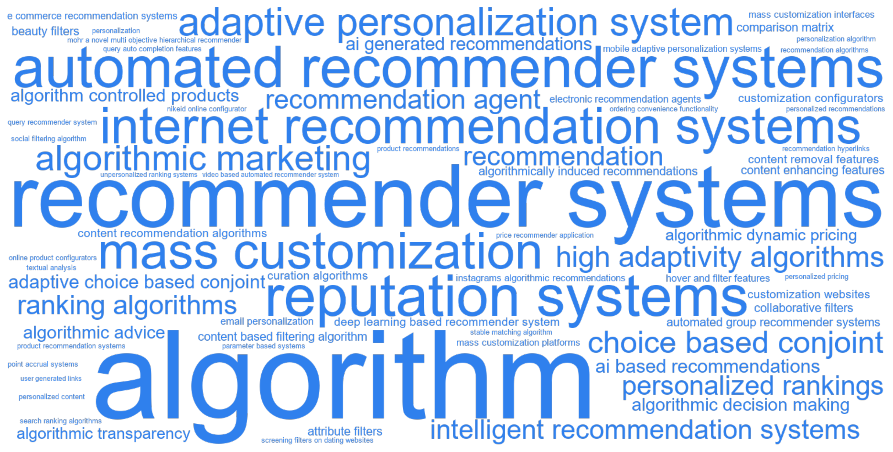
C.3.3 Articles
| Year | Full citation | Technology / technologies | Abstract |
|---|---|---|---|
| 2026 | Gelbrich K, Roschk H, Miederer S, Kerath , Alina A. Automated Versus Human Agents: A Meta-Analysis of Customer Responses to Robots, Chatbots, and Algorithms and Their Contingencies. Journal Of Marketing. 2026;113:1-26. doi:10.1177/00222429251344139 | algorithm | This meta-analysis examines when three types of automated agents (AAs)-robots, chatbots, and algorithms-are equivalent to human agents (HAs) in marketing roles. An analysis of 943 effect sizes from 327 studies provides novel insights. First, customers may be skeptical of AAs; however, they value their performance and eventually choose or buy from them as if they were interacting with HAs. Second, each of the three AA types has a unique set of contingencies that affect its human equivalence; previously identified contingencies do not generalize and can even have opposing effects across AA types. This study also identifies novel contingencies, such as the multifaceted concept of artificial intelligence required to fulfill a task. Third, some contingencies make AAs more humanlike, while others make their machine characteristics salient. These findings enrich the concept of automated social presence (ASP), suggesting that AAs are hybrid beings with a social presence (i.e., the feeling of interacting with a humanlike entity) and an automated presence (i.e., the feeling of interacting with a machine entity). The authors provide recommendations on when AAs can replace HAs in marketing roles to release capacity and alleviate labor shortages. They also suggest a future research agenda. |
| 2026 | Paul I, Mohanty S, Wadhwa M, Parker J. Swipe right: When and why conservatives are more accepting of AI recommendations. Journal Of Consumer Psychology. 2026;45:3-17. doi:10.1002/jcpy.1461 | ai generated recommendations | Six studies (N = 1548) and a single ad study on Facebook examine the influence of political ideology on the likelihood of accepting AI-generated recommendations in categories such as movie streaming, music streaming, and recipe websites. Contrary to conventional wisdom and prior empirical findings that conservatives are less accepting of technology, the current research finds that conservatives are more likely than liberals to accept AI-generated recommendations. This occurs because conservatives have a higher resistance to change in general, which leads them to have a greater preference for consistency in consumption contexts. Consequently, given the widely held belief that AI-generated recommendations are primarily based on one's own past preferences and behaviors, such recommendations are found to be more appealing to conservatives than liberals. However, this effect is attenuated when consumers recognize or infer that the AI lacks knowledge of their past preferences and behaviors. These findings contribute to the literature on the predictive power of political ideology for a litany of consumption-relevant behaviors while also adding nuance to our understanding of the relationship between political ideology and acceptance of new technology. |
| 2026 | Hadar L, Steinhart Y, Appel G, Shani Y. The Effect of Online Cart Composition on Cart Abandonment. Journal Of Consumer Research. 2026;54:. doi:10.1093/jcr/ucag002 | e commerce recommendation systems | Online shopping cart abandonment is widespread, causing major losses in potential revenues for e-commerce companies. We expand efforts to mitigate cart abandonment by investigating how the cart's product composition affects abandonment and testing easy-to-implement interventions. We hypothesize that consumers are more likely to abandon carts containing a higher proportion of hedonic relative to utilitarian products. This cart composition effect arises because carts containing higher hedonic-to-utilitarian product ratios are perceived as more hedonic overall, increasing consumer guilt regarding cart purchase and the likelihood of cart abandonment. Analyses of two large-scale field datasets and four controlled experiments provide converging evidence for the cart composition effect (studies 1A to 3) and the mediating role of perceived hedonism and consumer guilt (studies 2, 4A and 4B). Substantively, we offer empirical support for a practical and easily implemented intervention: using e-commerce recommendation systems to reduce cart abandonment by suggesting utilitarian items (studies 4A and 4B). Our findings suggest that recommendation systems may serve as an effective tool for reducing cart abandonment and underscore the importance of incorporating hedonic value considerations into recommendation algorithms. We conclude by discussing the practical implications of our findings for the development of more effective marketing strategies and improving online conversion rates. |
| 2026 | Lee B, Johar G. The Effect of Personalized Content in Media Entertainment on Engagement with the Domain. Journal Of Consumer Research. 2026;44:892-913. doi:10.1093/jcr/ucaf018 | personalized content | From Netflix to Spotify to TikTok, consumers' entertainment experiences increasingly revolve around personalized content. Does consuming personalized content in a specific entertainment domain influence the likelihood of consumers discussing that domain overall, beyond the specific content they engage with? Across eleven experiments, we investigate the impact of personalized content in the music and short-form video domains (i.e., content that feels tailored to one's tastes) on the intent to discuss domain-related topics. We find that the impact of consuming personalized content (vs. other types of content or no content) on discussion intent varies depending on the strength of an individual's identification with the domain. For weak identifiers, personalized content increases discussion intent, whereas for strong identifiers, it decreases intent. Process evidence highlights two underlying psychological forces: enhanced enjoyment of the domain and diminished confidence in domain knowledge. Personalized content increases discussion intent for weak identifiers-users whose intent is likely driven by high enjoyment. In contrast, personalized content decreases discussion intent for strong identifiers-users whose intent is likely driven by low confidence. |
| 2026 | Fang X, Kim S, Chintagunta P. Too Many or Too Few? Information Cues in Recommender Systems and Consequences for Search and Purchase Behavior. Journal Of Marketing. 2026;57:9-28. doi:10.1177/00222429251326941 | recommender systems, recommender systems | This article examines how the number of information cues in recommender systems influences consumer search and purchase. E-commerce platforms often display a list of recommended products on product pages, where consumers can browse and click on individual items for details. Given space constraints, determining the appropriate amount of information to display is crucial, as it affects consumers' use of both recommender systems and nonrecommender search tools. Through a randomized controlled field experiment with an online retailer, the authors test four information designs: no cues (product name only), single cues (either price or review), and dual cues (price and review). They find an inverted U-shaped relationship between the number of information cues and sales, with single cues yielding the highest sales compared with both more information (dual cues) and less information (no cues). This nonlinear effect stems from the interplay between search intensity and efficiency. The no-cue condition increases search intensity but forces consumers to rely on a less efficient nonrecommender search process. In contrast, the highly efficient dual-cue condition provides sufficient information for evaluation but discourages further exploration beyond recommenders. Single cues strike a balance, offering just enough information to aid product evaluation while maintaining high search intensity across both recommender and nonrecommender tools. |
| 2025 | Vomberg A, Homburg C, Sarantopoulos P. Algorithmic pricing: Effects on consumer trust and price search. International Journal Of Research In Marketing. 2025;67:1166-1186. doi:10.1016/j.ijresmar.2024.10.006 | algorithmic dynamic pricing | With the widespread use of pricing algorithms in online markets, prices are increasingly fluctuating, contradicting consumers' desire for price stability. This research examines the central form of algorithmic pricing in online markets-namely, algorithmic dynamic pricing (ADP). In five studies, including one real-world ADP encounter and four incentive-based experimental studies (in addition to two Web Appendix studies), we use price fairness and range-frequency theory to examine how ADP affects consumers' trust in ADP retailers and the extent of their price search. The findings reveal that ADP reduces trust in the ADP retailer, though this effect diminishes after consumers become accustomed to ADP. Furthermore, ADP prolongs price search duration, which lengthens with consumer ADP experience and shortens as ADP becomes the market norm. These findings suggest that retailers can implement ADP, as consumer backlash can be short-term. ADP retailers can also actively build consumers' trust and affect their search for prices through price-matching strategies. In particular, retailers can communicate their use of reactive ADP (i.e., ADP aligned with competitive prices) and offer price-matching guarantees. (c) 2024 The Authors. Published by Elsevier B.V. This is an open access article under th e CC BY license (http://creativecommons.org/licenses/by/4.0/). |
| 2025 | Kaliyamurthy A, Schau H. How Algorithms Constrain Consumer Experience. Journal Of Consumer Research. 2025;93:826-847. doi:10.1093/jcr/ucaf016 | algorithm | Prior literature is yet to explain how algorithms systematically constrain consumer experience (CX). To address this issue, we conducted a multi-method ethnographic study of consumers using fitness tracking software. We draw on the information science literature to demonstrate that the constitutive properties of information technology (IT) that underlie algorithms result in a set of restrictive fundamental interactional mechanisms imposed through algorithmic logics of legibility (what is selectively registered as input), visibility (what is selectively represented in output), and legitimacy (normative commitments embedded in input and output choices). We find that these mechanisms systematically constrain the distinct dimensions of the CX construct by eliciting consumption work. Consumers perform cognitive work to think through algorithmic limitations, practical work to accommodate those limitations, relational work to clarify algorithmic misrepresentation, and affective work to deal with algorithmic delegitimization. We make two contributions. First, our emergent framework not only demonstrates how algorithms systematically constrain CX, but is also more broadly relevant to consumer research because it enables accounting for the agency of IT. Second, we provide a corrective to the passive, emotion focused, view of CX by demonstrating how the consumption work of accommodating algorithmic limitations constrains the distinct dimensions of the CX construct. |
| 2025 | Geyik P, Weijo H. How consumer market orientations shape algorithmic appreciation and avoidance in fashion. International Journal Of Research In Marketing. 2025;79:1187-1202. doi:10.1016/j.ijresmar.2025.07.007 | algorithm, algorithmic marketing, instagrams algorithmic recommendations | This study illuminates how the growing influence of algorithms is changing consumer practices. Drawing on Bourdieu's field theory and semi-structured qualitative interviews, the research examines how engaged fashion consumers interact with Instagram's algorithmic recommendations in their pursuit of building status. The findings reveal two distinct sets of practices of algorithmic field maneuvering: algorithmic optimization and algorithmic preservation. The analysis demonstrates that these practices are contingent on consumers' market orientation, with mainstream consumers favoring algorithmic optimization and indie consumers opting for algorithmic preservation. The study advances the literature on consumer-algorithm interactions and presents managerial implications for better managing the risks of algorithmic marketing, particularly its impact on long-term brand building. |
| 2025 | Sikdar S, Chakraborty I, Dogonadze N. Neither a Picasso nor a Leonardo da Vinci: An Examination of Novice Artwork Pricing with Multimodal Data. Journal Of Marketing. 2025;66:. doi:10.1177/00222429251408346 | price recommender application | Novice art pricing is an understudied domain. Novice artists operate as microenterprises, making crucial price-setting decisions. Research shows that newcomers often risk overpricing or underpricing their work, and existing online tools offer basic, cost-based pricing advice. Using a three-study framework, the authors examine novice art pricing on Etsy, where artwork listings include structured data, images, and textual descriptions. They first analyze how these inputs relate to final selling prices using a hedonic regression on structured data, followed by a multimodal fusion deep learning model that integrates structured, visual, and textual features. The results show that features related to artist authenticity (e.g., certificates), customer service (e.g., shipping, returns, personalization), and art style (e.g., genre) are important price predictors. Thus, novice art sales on online platforms exhibit some features typical of mature art markets (e.g., authenticity and reputation) but emphasize customer-focused services. Finally, using a Cox proportional hazards model, the authors show that, while higher artist reputation is associated with faster sales, discounting correlates with longer time on market. These associations suggest the importance of price setting. From these insights, the authors develop a price recommender application that predicts both selling prices and time to sell, offering practical guidance for newcomer artists and online platforms. |
| 2025 | Qiu L, Huang Y, Singh P, Srinivasan K. Personalization, Consumer Search, and Algorithmic Pricing. Marketing Science. 2025;31:. doi:10.1287/mksc.2023.0455 | personalized rankings, unpersonalized ranking systems | Our study investigates the impact of product ranking systems on artificial intelligence (AI)-powered pricing algorithms. Specifically, we examine the effects of ``personalized'' and ``unpersonalized'' ranking systems on algorithmic pricing outcomes and consumer welfare. Our analysis reveals that personalized ranking systems, which rank products in decreasing order of consumer's utilities, may encourage higher prices charged by pricing algorithms, especially when consumers search for products sequentially on a third-party platform. This is because personalized ranking significantly reduces the ranking-mediated price elasticity of demand and thus incentives to lower prices. Conversely, unpersonalized ranking systems lead to significantly lower prices and greater consumer welfare. These findings suggest that even in the absence of price discrimination, personalization may not necessarily benefit consumers because pricing algorithms can undermine consumer welfare through higher prices. Thus, our study highlights the crucial role of ranking systems in shaping algorithmic pricing behaviors and consumer welfare. |
| 2025 | Luo L. Practice Prize Report: The 2024 Gary Lilien ISMS Practice Prize Competition. Marketing Science. 2025;7:. doi:10.1287/mksc.2024.1172 | deep learning based recommender system | This report summarizes the finalists of the 2024 Gary Lilien INFORMS Society for Marketing Science Practice Prize Competition, designed to identify, encourage, recognize, and reward the application of impactful marketing science to industry and noncommercial settings. These applications aim to showcase innovative and impactful examples of applications demonstrating the best of rigor and relevance that our profession produces. The 2024 winner team developed a deep-learning-based recommender system that helps new salespeople to identify customers with high conversion potential at a major insurance company. The three other finalists include studies of utilizing artificial intelligence and behavior insights to motivate organizations' sustainable energy consumption, modeling customer lifetime value in the retail banking industry, and designing business policy experiments using fractional factorial designs. This report concludes with reflections of trends and recent developments upon impactful and rigorous marketing science applications above and beyond the typical academic settings. |
| 2025 | Wang Y, Tao L, Zhang X. Recommending for a Multi-Sided Marketplace: A Multi-Objective Hierarchical Approach. Marketing Science. 2025;107:. doi:10.1287/mksc.2022.0238 | mohr a novel multi objective hierarchical recommender, recommender systems, recommender systems | Recommender systems play a vital role in driving the long-term values for online platforms. However, developing recommender systems for multi-sided platforms faces two prominent challenges. First, recommending for multi-sided platforms typically involves a joint optimization of multiple, potentially conflicting objectives. Second, many platforms adopt hierarchical homepages, where items can either be individual products or groups of products. Off-the-shelf recommendation algorithms are not applicable in these settings. To address these challenges, we propose MOHR, a novel multi-objective hierarchical recommender. By combining machine learning, probabilistic hierarchical aggregation, and multi-objective optimization, MOHR efficiently solves the multi-objective ranking problem in a hierarchical setting through an innovative formulation of probabilistic consumer behavior modeling and constrained optimization. We implemented MOHR at Uber Eats, one of the world's largest food delivery platforms. Online experiments showed significant improvements in consumer conversion, retention, and gross bookings, resulting in a \$1.5 million weekly increase in revenue. Moreover, MOHR offers managers a mathematically principled tool to make quantifiable and interpretable trade-offs across multiple objectives. As a result, it has been deployed globally as the recommender system for Uber Eats' app homepage. |
| 2025 | Zheng S, Tong S, Kwon H, Burtch G, Li X. Recommending What to Search: Sales Volume and Consumption Diversity Effects of a Query Recommender System. Marketing Science. 2025;42:. doi:10.1287/mksc.2024.1121 | query auto completion features, query recommender system | This study examines the impact of a query recommender system on user search behavior, sales volume, and consumption diversity within a leading mobile food delivery app in Asia. We find that access to a query recommender increases consumer purchase volumes by 1\%-2\% over 30 days while broadening consumption diversity at both the individual and market levels. Exploring the mechanisms by which these effects arise, we highlight the complementary, balancing role of query auto-completion features. Whereas the query recommender helps to expand a user's consideration set by suggesting alternative and adjacent queries, the auto-complete feature helps to extend and refine the queries in a personalized manner. Our findings highlight the potential of query recommenders for increasing demand while enhancing consumer exploration and consumption diversity, particularly when deployed in tandem with auto-complete. Our study contributes to the literature on search behavior and recommendation systems, offering actionable insights for platform managers into the strategic design and integration of query recommenders to improve user engagement and market outcomes. |
| 2025 | D'Angelo J, Ross G. The model-sizing dilemma: The use of varied female model sizes helps the impressions of brand values but hurts shopping ease. Journal Of Consumer Psychology. 2025;44:475-483. doi:10.1002/jcpy.1443 | hover and filter features | Consumer demand for size-inclusive fashion is growing, including the call for clothing to be modeled in larger sizes. This call has prompted brands to decide how to model their clothing, in particular, on category pages (i.e., webpages where consumers compare different items). Should brands use varied model sizing, where clothing is presented using models of various sizes? Or should brands use traditionally thin models who are the same nonvaried model size? This research explores female consumers' responses to varied model sizing. Across five studies, we demonstrate a model-sizing dilemma where female consumers rate impressions of brand values higher but rate shopping ease lower when brands use varied rather than nonvaried model sizing. We show the decrease in shopping ease is driven by lower perceptions of organization during the shopping experience. Importantly, we find that this dilemma can be mitigated by displaying varied model sizing in a more organized manner using hover and filter features. |
| 2025 | Hochstein R, Harmeling C, Perko T. Toward a theory of consumer digital trust: Meta-analytic evidence of its role in the effectiveness of user-generated content. Journal Of The Academy Of Marketing Science. 2025;101:1034-1054. doi:10.1007/s11747-023-00982-y | content enhancing features, content removal features | Consumers seek out online user-generated content to inform their purchase decisions because they perceive content created by other consumers as more believable than marketing communications. This research provides a theory of consumer digital trust in which consumer trust in user-generated content requires a digital environment that minimizes consumer suspicion of misrepresented or missing content. The theory is supported with empirical evidence from a hierarchical meta-analysis of 128 effects from 19 online platforms over 19 years (2004-2022). Account verification features, which alleviate suspicions of misrepresented content creator identities, increase the effect of user-generated content on firm performance, but content-enhancing features, such as photo filters, that can prompt suspicion of misrepresented brand experiences, weaken this link. Content-removal features that can spark speculation of missing information in content creators' historical content and platform moderation media, which creates questions about missing content in brand conversations, weaken the influence of some user-generated content. |
| 2025 | Ostinelli M, Bonezzi A, Lisjak M. Unintended effects of algorithmic transparency: The mere prospect of an explanation can foster the illusion of understanding how an algorithm works. Journal Of Consumer Psychology. 2025;88:203-219. doi:10.1002/jcpy.1416 | algorithm, algorithmic transparency | This research shows that merely believing that one can access an explanation of how an algorithm works can foster an illusory sense of understanding the algorithm, even when people do not actually access and read the explanation. This effect occurs because the belief that one can access an explanation provides a feeling of empowerment that fosters an illusory sense of understanding. In turn, this illusory sense of understanding can yield unfounded reliance on algorithmic determinations. We further show that this effect is moderated by the target of an explanation and by the perceived utility of an explanation in enabling consumers to use an algorithm more effectively. From a theoretical standpoint, we offer a novel psychological account of illusory understanding based on empowerment. From a practical standpoint, we point to an unintended effect of algorithmic transparency: merely knowing that one can access an explanation for how an algorithm works may lull consumers into a false sense of understanding that yields unfounded reliance on algorithmic recommendations. |
| 2024 | Goli A, Lambrecht A, Yoganarasimhan H. A Bias Correction Approach for Interference in Ranking Experiments. Marketing Science. 2024;40:. doi:10.1287/mksc.2022.0046 | ranking algorithms | Online marketplaces use ranking algorithms to determine the rank-ordering of items sold on their websites. The standard practice is to determine the optimal algorithm using A/B tests. We present a theoretical framework to characterize the total average treatment effect (TATE) of a ranking algorithm in an A/B test and show that naive TATE estimates can be biased because of interference. We propose a bias-correction approach that can recover the TATE of a ranking algorithm based on past A/B tests even if those tests suffer from a combination of interference issues. Our solution leverages data across multiple experiments and identifies observations in partial equilibrium in each experiment, that is, items close to their positions under the true counterfactual equilibrium of interest. We apply our framework to data from a travel website and present comprehensive evidence for interference bias in this setting. Next, we use our solution concept to build a customized deep learning model to predict the true TATE of the main algorithm of interest in our data. Counterfactual estimates from our model show that naive TATE estimates of click and booking rates can be biased by as much as 15\% and 29\%, respectively. |
| 2024 | Yang J, Sahni N, Nair H, Xiong X. Advertising as Information for Ranking E-Commerce Search Listings. Marketing Science. 2024;37:. doi:10.1287/mksc.2021.0292 | search ranking algorithms | Search engines and e-commerce platforms have substantial difficulty exposing new products to their users on account of an information problem: new products typically do not have enough sales or other user engagement that enables platforms to reliably assess product quality. This paper evaluates the role of advertising in providing information to the platform regarding new product quality so as to solve this ``cold start'' problem and to engineer higher quality organic listings. Using a large-scale experiment implemented at JD.com-a large e-commerce platform in China-we show that using ad propensity information for ranking new products benefits both the platform and consumers. Our findings showcase a new channel by which advertising can potentially improve outcomes for consumers and platforms in e-commerce through its ability to reveal information that can be used by platforms to improve search ranking algorithms. |
| 2024 | Liu Y, Yildirim P, Zhang Z. Consumer preferences and firm technology choice q. International Journal Of Research In Marketing. 2024;57:41-55. doi:10.1016/j.ijresmar.2023.06.008 | ordering convenience functionality | Advances in technology change the way consumers search and shop for products. Emerging is the trend of home -shopping devices such as Amazon's Alexa and Google Home, which allow consumers to search or order products. We investigate how consumer brand and technology preferences may interact with the functionalities of technologyenabled shopping (TES) devices to determine the channel structure and market competition. In specific, we break the functionalities of the TES devices into two: (1) the shopping support functionality (SSF), and (2) the ordering convenience functionality (OCF). Via a series of experiments, we document that stronger brand preferences are negatively correlated with the willingness to use a TES device that offers SSF. However, there is no association with brand preferences and desire to use a TES device when it offers OCF. We build an analytical model integrating the findings from these experiments, and then derive the equilibrium channel and pricing strategies for two competing retailers. Our findings show that the functionality of TES devices results in vastly different distribution and pricing strategies in retail markets. In particular, consumers' heterogeneous valuation of the SSF results in a monopolistic adoption of TES devices by the retailers in equilibrium, and generates Pareto improvements for both. In contrast, when the TES devices offer OCF, in equilibrium, retailers adopt TES channels competitively, resulting in a prisoners' dilemma outcome. In the extensions, studying a third -party technology developer's decision to invest in OCF and SSF technologies, we show that the contrast between the channel strategies under the OCF and the SSF also impact the incentives to develop TES. We show that in some cases, in an effort to mitigate downstream retail competition, the provider may prefer not to offer the best possible OCF technology to consumers. These findings shed light on the future adoption and the functionalities of shopping technologies offered by retailers. (c) 2023 Elsevier B.V. All rights reserved. |
| 2024 | Sablotny-Wackershauser V, Lichters M, Guhl D, Bengart P, Vogt B. Crossing incentive alignment and adaptive designs in choice-based conjoint: A fruitful endeavor. Journal Of The Academy Of Marketing Science. 2024;77:610-633. doi:10.1007/s11747-023-00997-5 | adaptive choice based conjoint, choice based conjoint | Choice-based conjoint (CBC) analysis features prominently in market research to predict consumer purchases. This study focuses on two principles that seek to enhance CBC: incentive alignment and adaptive choice-based conjoint (ACBC) analysis. While these principles have individually demonstrated their ability to improve the forecasting accuracy of CBC, no research has yet evaluated both simultaneously. The present study fills this gap by drawing on two lab and two online experiments. On the one hand, results reveal that incentive-aligned CBC and hypothetical ACBC predict comparatively well. On the other hand, ACBC offers a more efficient cost-per-information ratio in studies with a high sample size. Moreover, the newly introduced incentive-aligned ACBC achieves the best predictions but has the longest interview time. Based on our studies, we help market researchers decide whether to apply incentive alignment, ACBC, or both. Finally, we provide a tutorial to analyze ACBC datasets using open-source software (R/Stan). |
| 2024 | Castelo N. Perceived corruption reduces algorithm aversion. Journal Of Consumer Psychology. 2024;39:326-333. doi:10.1002/jcpy.1373 | algorithm, algorithmic decision making | Scholarship on when and why humans are willing to rely on algorithms rather than other humans has made substantial progress in recent years, although virtually all such research is based on Western, educated, industrialized, rich, and democratic (WEIRD) research participants. This limits efforts to understand the cultural generalizability of attitudes toward algorithms. In this paper, I study algorithm aversion among participants from over 30 countries on all inhabited continents, thereby significantly increasing the diversity of this field's knowledge base. Furthermore, I leverage this diversity to test a theoretically derived prediction: that perceived corruption makes algorithmic decision-making more appealing. I find that participants who are born or raised in countries with high levels of perceived corruption are much less averse to algorithmic decision-making (or, in some studies, are not at all algorithm averse), relative to those from countries with low perceived corruption. Furthermore, experimentally varying corruption salience causes a decrease in algorithm aversion. I explore mechanisms and boundary conditions of these effects and discuss the implications in the context of algorithms that can both increase and decrease injustice. |
| 2024 | Krause F, Franke N. Understanding Consumer Self-Design Abandonment: A Dynamic Perspective. Journal Of Marketing. 2024;82:79-98. doi:10.1177/00222429231183977 | customization configurators | Many studies have found that allowing customers to self-design products using customization configurators generates high value for customers. However, in practice, high abandonment rates cast doubt on these findings. In the present article, this contradiction is resolved by analyzing consumers' experiences during the creative process. Six studies provide converging evidence that consumers abandon customization because their valence during the process is U-shaped: initial high expectations prompt consumers to start self-designing in the first place, but they quickly find, to their frustration, that their (interim) design solutions are less attractive and the self-designing process is less enjoyable than they originally anticipated. Unaware that their enjoyment of the process would ultimately increase if they persisted through this phase, they abandon the self-design process altogether. It is only if the consumer overcomes the minimum of the U of valence that they harness the potential value from self-designing. This problematic pattern can be managed by providing social feedback during the self-design process. These findings contribute not only to the customization literature but also more generally to the understanding of consumers' goal pursuit by enhancing its scope to creative tasks. |
| 2024 | Donnelly R, Kanodia A, Morozov I. Welfare Effects of Personalized Rankings. Marketing Science. 2024;68:. doi:10.1287/mksc.2023.1441 | personalized rankings, personalized recommendations, recommendation algorithms | Many online retailers offer personalized recommendations to help consumers make their choices. Although standard recommendation algorithms are designed to guide consumers to the most relevant items, retailers can instead choose to steer consumers toward profitable options. We ask whether such strategic behavior arises in practice and to what extent it reduces consumers' benefits from personalized recommendations. Using data from a large-scale ran-domized experiment in which a large online retailer introduced personalized rankings, we show that personalization makes consumers search more and generates more purchases rela-tive to uniform bestseller-based rankings. We then estimate a model of search and rankings and use it to reverse-engineer the retailer's objectives and to assess the effect of personalized rank-ings on consumer welfare. Our results reveal that although the current algorithm does put posi-tive weight on profitability, personalized rankings still substantially increase consumer surplus. This case study suggests that online retailers may have incentives to adopt consumer-centric personalization algorithms as a way to retain consumers and maximize long-term growth. |
| 2023 | Rifkin L, Kirk C, Corus C. A Turn of the Tables: Psychological Contracts and Word of Mouth about Sharing Economy Platforms When Consumers Get Reviewed. Journal Of Consumer Research. 2023;59:382-404. doi:10.1093/jcr/ucad002 | reputation systems | The Peer-to-Peer sector of the sharing economy relies on reputation systems through which consumers and providers review each other. Whereas prior research has examined the effects of reviews by consumers on providers and firms, this research examines, for the first time, a turn of the tables in which consumers are evaluated. Across a pilot and seven studies (five preregistered), using multiple actual behaviors and sharing contexts, results reveal that a negative review of the consumer from the peer provider leads to negative word of mouth (NWOM) about the platform. Drawing from psychological contract theory, the research demonstrates that this effect is mediated by consumers' perceived betrayal by the platform. Two sets of moderators are identified. The first set establishes that a breach of consumers' psychological contract with the platform underlies the effect. In the second set, platform policies that may render a breach more or less consequential can intensify or mitigate consumer reactions. Specifically, making the review private (vs. public) and providing opportunities for justice restoration (response, revenge, and dispute) attenuate the effect of review valence on betrayal and NWOM. Implications for sharing economy platform managers and consumers are discussed. |
| 2023 | Rathee S, Banker S, Mishra A, Mishra H. Algorithms propagate gender bias in the marketplace-with consumers' cooperation. Journal Of Consumer Psychology. 2023;49:621-631. doi:10.1002/jcpy.1351 | algorithm | Recent research shows that algorithms learn societal biases from large text corpora. We examine the marketplace-relevant consequences of such bias for consumers. Based on billions of documents from online text corpora, we first demonstrate that from gender biases embedded in language, algorithms learn to associate women with more negative consumer psychographic attributes than men (e.g., associating women more closely with impulsive vs. planned investors). Second, in a series of field experiments, we show that such learning results in the delivery of gender-biased digital advertisements and product recommendations. Specifically, across multiple platforms, products, and attributes, we find that digital advertisements containing negative psychographic attributes (e.g., impulsive) are more likely to be delivered to women compared to men, and that search engine product recommendations are similarly biased, which influences consumer's consideration sets and choice. Finally, we empirically examine consumer's role in co-producing algorithmic gender bias in the marketplace and observe that consumers reinforce these biases by accepting gender stereotypes (i.e., clicking on biased ads). We conclude by discussing theoretical and practical implications. |
| 2023 | Wang J, Yu Y. Beautify the blurry self: Low Self-Concept clarity increases appearance management. Journal Of Consumer Psychology. 2023;96:377-393. doi:10.1002/jcpy.1298 | beauty filters | The current research examines how and why self-concept clarity (i.e., having self-aspects that are integrated into a well-defined whole) shapes consumers' appearance management behaviors. Five (including four pre-registered) studies and one supplemental study provide correlational and causal evidence for the link between low self-concept clarity and appearance management (e.g., choice of appearance-enhancing products, interest in cosmetic procedures, and beauty filters). Furthermore, we demonstrate that public self-consciousness mediates this effect (Studies 3-4). We also find convergent process-by-moderation evidence that low self-concept clarity increases appearance management only when the appearance management behavior is perceived to be socially acceptable (Study 5). In addition, we rule out global and appearance self-esteem, private self-consciousness, self-improvement, and mood management as potential mechanisms. This research extends the literature on self-concept, impression management, and appearance management and yields implications for beauty marketing, health communication, and consumer well-being. |
| 2023 | Kronrod A, Gordeliy I, Lee J. Been There, Done That: How Episodic and Semantic Memory Affects the Language of Authentic and Fictitious Reviews. Journal Of Consumer Research. 2023;140:405-425. doi:10.1093/jcr/ucac056 | algorithm | This article suggests a theory-driven approach to address the managerial problem of distinguishing between real and fake reviews. Building on memory research and linguistics, we predict that when recollecting an authentic experience in a product review, people rely to a greater extent on episodic memory. By contrast, when writing a fictitious review, people do not have episodic memory available to them. Therefore, they must rely to a greater extent on semantic memory. We suggest that reliance on these different memory types is reflected in the language used in authentic and fictitious reviews. We develop predictions about five linguistic features characterizing authentic versus fictitious reviews. We test our predictions via a multi-method approach, combining computational linguistics, experimental design, and machine learning. We employ a large-scale experiment to derive a dataset of reviews, as well as two datasets containing reviews from online platforms. We also test whether an algorithm relying on our theory-driven linguistic features is context independent, relative to other benchmark algorithms, and shows better cross-domain performance when tested across datasets. By developing a theory that extends memory and psycholinguistics research to the realm of word of mouth, this work contributes to our understanding of how authentic and fictitious reviews are created. |
| 2023 | Davis D. Distributions Distract: How Distributions on Attribute Filters and Other Tools Affect Consumer Judgments. Journal Of Consumer Research. 2023;31:1074-1094. doi:10.1093/jcr/ucac026 | attribute filters | Firms and other entities provide category-level product attribute information via attribute filters and other tools to aid consumers in filtering, evaluating, comparing, and choosing products. This research examines how displaying this information as a range with or without the distribution of values systematically affects judgments involving attribute value comparisons. Specifically, distributions draw attention away from attribute values, reducing the importance of attribute value differences. With this reduced importance, consumers are less sensitive to attribute value differences; thus, consumers evaluate individual products more positively as they seem more similar to the best available option. Likewise, wider bands of attribute values are selected when filtering product options, as the minimum and maximum values chosen seem less different. Reduced sensitivity to differences also has implications for choices involving tradeoffs between attributes. Importantly, the presence of a distribution itself is the primary driver of this effect, more so than distribution type, as the effect is largely independent of the type of distribution displayed (e.g., normal, bimodal, skewed, uniform). Across six main and seven , this research highlights a novel consideration for how consumers filter options, form preferences, and choose products. These findings have practical implications and highlight important topics for future research. |
| 2023 | Reich T, Kaju A, Maglio S. How to overcome algorithm aversion: Learning from mistakes. Journal Of Consumer Psychology. 2023;66:285-302. doi:10.1002/jcpy.1313 | algorithm, algorithmic advice | When consumers avoid taking algorithmic advice, it can prove costly to both marketers (whose algorithmic product offerings go unused) and to themselves (who fail to reap the benefits that algorithmic predictions often provide). In a departure from previous research focusing on when algorithm aversion proves more or less likely, we sought to identify and remedy one reason why it occurs in the first place. In seven pre-registered studies, we find that consumers tend to avoid algorithmic advice on the often faulty assumption that those algorithms, unlike their human counterparts, cannot learn from mistakes, in turn offering an inroad by which to reduce algorithm aversion: highlighting their ability to learn. Process evidence, through both mediation and moderation, examines why consumers fail to trust algorithms that err across a variety of prediction domains and how different theory-driven interventions can solve the practical problem of enhancing trust and consequential choice in algorithms. |
| 2023 | Krause Fet al.. One-of-a-kind products: Leveraging strict uniqueness in mass customization. International Journal Of Research In Marketing. 2023;68:823-840. doi:10.1016/j.ijresmar.2023.04.002 | mass customization | This research examines product uniqueness in its most pure form-products that are literally one of a kind. It does so in mass customization (MC) settings where consumers configure their own products. Due to extremely large solution spaces that are typically available in MC, a specific product configured by a consumer is often one of a kind in that it has never been produced before. How might firms leverage such strict product uniqueness to enhance consumer value? A natural way of doing so is to simply inform consumers that the product they have configured is one of a kind-through a feedback message that is either present-oriented (e.g., ``this specific product has never been produced before'') or future-oriented (e.g., ``this product will remain one of a kind in perpetuity''). Evidence from five experiments, including a large-scale field experiment, shows that one-of-a-kind feedback can cause a substantial increase in consumers' product valuation. This value enhancing effect of one-of-a-kind feedback specifically occurs in product domains that are primarily matters of subjective taste. By contrast, such feedback tends to reduce consumers' product valuation in domains that are primarily matters of objective quality. These findings advance our understanding of the concept of product uniqueness, and of how firms can harness the one-of-a-kindness of mass-customized products to unlock consumer value.(c) 2023 The Authors. Published by Elsevier B.V. This is an open access article under the CC BY license (http://creativecommons.org/licenses/by/4.0/). |
| 2023 | Fuchs M, Schreier M. Paying Twice for Aesthetic Customization? The Negative Effect of Uniqueness on a Product's Resale Value. Journal Of Marketing Research. 2023;47:602-624. doi:10.1177/00222437221128576 | mass customization | Customers frequently gravitate toward unique products, and firms increasingly utilize mass customization strategies allowing customers to self-customize products according to their unique preferences. While existing research shows that customers are willing to pay extra for this uniqueness, the present investigation points to a potential cost of self-customization that has been largely overlooked thus far. Specifically, the authors argue that what creates value for the individual consumer-designer (i.e., the original customer of the self-customized product) might conversely be detrimental to potential customers on the secondhand market, particularly in the context of aesthetic (vs. functional) customization. Results of three distinct data sets (including an analysis of more than 500,000 preowned car sales listings) support this uniqueness-hurts-resale hypothesis and provide a series of more nuanced findings. Consistent with the theorizing and empirical studies, three follow-up experiments show that although consumer-designers' valuations are positively affected by uniqueness, uniqueness indeed negatively affects secondhand-market customers' willingness to pay. This is because the more unique a given configuration is to a given consumer-designer, the lower the likelihood that said design will meet secondhand-market customers' taste preferences. The findings point to a tension between maximizing utility at first purchase and minimizing the related cost of aesthetic customization at resale. |
| 2023 | Liu J, Cong Z. The Daily Me Versus the Daily Others: How Do Recommendation Algorithms Change User Interests? Evidence from a Knowledge-Sharing Platform. Journal Of Marketing Research. 2023;40:767-791. doi:10.1177/00222437221134237 | content based filtering algorithm, social filtering algorithm | Recommender systems on online platforms are often accused of polarizing user attention and consumption. The authors examine this phenomenon using a quasi-experiment conducted by Zhihu, the largest online knowledge-sharing platform (or Q\&A community) in China. Zhihu originally used a content-based filtering algorithm, which recommends content to users on the basis of the topics to which each user has subscribed. After more than a year, Zhihu moved to a social filtering algorithm, which recommends content with which users' social connections are already engaged. The authors find that this algorithm change increased the creation of social ties by approximately 15\% but decreased question subscriptions by 20\% and answer contributions by 23\%. The authors show that users' increased social interests mainly involved following popular users, leading to a greater concentration of social interests on the platform. However, users' topical interests became less concentrated, as popular topics received significantly fewer subscribers than unpopular topics. The authors explain these findings by exploring the underlying mechanism. They show that compared with content-based filtering algorithms, social filtering algorithms are more likely to expose general users to content consumed by their followees, who are more interested in niche topics than general users are. |
| 2023 | Chen Q, Wang Y, Ordabayeva N. The Mate Screening Motive: How Women Use Luxury Consumption to Signal to Men. Journal Of Consumer Research. 2023;90:303-321. doi:10.1093/jcr/ucac034 | screening filters on dating websites | Previous research has found that for men, activating a mating motive increases luxury consumption as a way to attract a romantic partner. However, little is known about the role of luxury consumption in women's romantic endeavors. The present research conceptualizes a mate screening motive, which explains how women use luxury consumption to romantically signal to men. Six studies and two follow-ups conducted in controlled and field settings show that the mate screening motive boosts women's consumption of luxury goods as a way to signal their mating standards to men and thereby deter undesirable pursuers. The effect is diminished when mate screening is less necessary such as when external screening tools are available (e.g., screening filters on dating websites), the quality of potential mates is high, and the focus is on selecting a desirable partner rather than deterring undesirable pursuers. The findings have important implications for understanding how consumers use products and brands in romantic relationships and for designing marketing strategies and communication for luxury brands, commercial dating services, and dating apps. Our findings also provide insights for consumers on how to use brands and products as effective communication devices in romantic endeavors. |
| 2023 | Clegg M, Hofstetter R, De B E, Schmitt , Bernd H B. Unveiling the Mind of the Machine. Journal Of Consumer Research. 2023;91:342-361. doi:10.1093/jcr/ucad075 | algorithm controlled products, high adaptivity algorithms, high adaptivity algorithms | Previous research has shown that consumers respond differently to decisions made by humans versus algorithms. Many tasks, however, are not performed by humans anymore but entirely by algorithms. In fact, consumers increasingly encounter algorithm-controlled products, such as robotic vacuum cleaners or smart refrigerators, which are steered by different types of algorithms. Building on insights from computer science and consumer research on algorithm perception, this research investigates how consumers respond to different types of algorithms within these products. This research compares high-adaptivity algorithms, which can learn and adapt, versus low-adaptivity algorithms, which are entirely pre-programmed, and explore their impact on consumers' product preferences. Six empirical studies show that, in general, consumers prefer products with high-adaptivity algorithms. However, this preference depends on the desired level of product outcome range-the number of solutions a product is expected to provide within a task or across tasks. The findings also demonstrate that perceived algorithm creativity and predictability drive the observed effects. This research highlights the distinctive role of algorithm types in the perception of consumer goods and reveals the consequences of unveiling the mind of the machine to consumers. |
| 2023 | Berger J, Moe W, Schweidel D. What Holds Attention? Linguistic Drivers of Engagement. Journal Of Marketing. 2023;94:793-809. doi:10.1177/00222429231152880 | content recommendation algorithms | From advertisers and marketers to salespeople and leaders, everyone wants to hold attention. They want to make ads, pitches, presentations, and content that captivates audiences and keeps them engaged. But not all content has that effect. What makes some content more engaging? A multimethod investigation combines controlled experiments with natural language processing of 600,000 reading sessions from over 35,000 pieces of content to examine what types of language hold attention and why. Results demonstrate that linguistic features associated with processing ease (e.g., concrete or familiar words) and emotion both play an important role. Rather than simply being driven by valence, though, the effects of emotional language are driven by the degree to which different discrete emotions evoke arousal and uncertainty. Consistent with this idea, anxious, exciting, and hopeful language holds attention while sad language discourages it. Experimental evidence underscores emotional language's causal impact and demonstrates the mediating role of uncertainty and arousal. The findings shed light on what holds attention; illustrate how content creators can generate more impactful content; and, as shown in a stylized simulation, have important societal implications for content recommendation algorithms. |
| 2022 | Longoni C, Cian L. Artificial Intelligence in Utilitarian vs. Hedonic Contexts: The ``Word-of-Machine'' Effect. Journal Of Marketing. 2022;44:91-108. doi:10.1177/0022242920957347 | ai based recommendations | Rapid development and adoption of AI, machine learning, and natural language processing applications challenge managers and policy makers to harness these transformative technologies. In this context, the authors provide evidence of a novel ``word-of-machine'' effect, the phenomenon by which utilitarian/hedonic attribute trade-offs determine preference for, or resistance to, AI-based recommendations compared with traditional word of mouth, or human-based recommendations. The word-of-machine effect stems from a lay belief that AI recommenders are more competent than human recommenders in the utilitarian realm and less competent than human recommenders in the hedonic realm. As a consequence, importance or salience of utilitarian attributes determine preference for AI recommenders over human ones, and importance or salience of hedonic attributes determine resistance to AI recommenders over human ones (Studies 1-4). The word-of machine effect is robust to attribute complexity, number of options considered, and transaction costs. The word-of-machine effect reverses for utilitarian goals if a recommendation needs matching to a person's unique preferences (Study 5) and is eliminated in the case of human-AI hybrid decision making (i.e., augmented rather than artificial intelligence; Study 6). An intervention based on the consider-the-opposite protocol attenuates the word-of-machine effect (Studies 7a-b). |
| 2022 | Bauer C, Spangenberg K, Spangenberg E, Herrmann A. Collect them all! Increasing product category cross-selling using the incompleteness effect. Journal Of The Academy Of Marketing Science. 2022;53:713-741. doi:10.1007/s11747-021-00835-6 | online product configurators | The familiar state of tension associated with an incomplete collection or an unfinished jigsaw puzzle is predicted by Lewin's (1926; 1935) field theory. This feeling evokes a drive to completion-a phenomenon we label the incompleteness effect-which is useful to marketers endeavoring to cross-sell products and services. In three studies using online product configurators, we find that consumers faced with visual representations of incomplete product category collections, such as an evening drinks menu or a puzzle with its pieces representing services, are significantly more likely to complete the collection or finish the puzzle by cross-purchasing from a greater number of product or service categories as compared to those using a conventional online shopping format. We identify theoretical mechanisms through which the incompleteness effect works and potential moderators for the effect. Findings suggest that managers offering products or services across several categories can increase cross-selling by eliciting people's drive toward completion. |
| 2022 | Dietvorst B, Bartels D. Consumers Object to Algorithms Making Morally Relevant Tradeoffs Because of Algorithms' Consequentialist Decision Strategies. Journal Of Consumer Psychology. 2022;55:406-424. doi:10.1002/jcpy.1266 | algorithm | Why do consumers embrace some algorithms and find others objectionable? The moral relevance of the domain in which an algorithm operates plays a role. The authors find that consumers believe that algorithms are more likely to use maximization (i.e., attempting to maximize some measured outcome) as a decision-making strategy than human decision makers (Study 1). Consumers find this consequentialist decision strategy to be objectionable in morally relevant tradeoffs and disapprove of algorithms making morally relevant tradeoffs as a result (Studies 2, 3a, \& 3b). Consumers also object to human employees making morally relevant tradeoffs when they are trained to make decisions by maximizing outcomes, consistent with the notion that their objections to algorithmic decision makers stem from concerns about maximization (Study 4). The results provide insight into why consumers object to some consumer relevant algorithms while adopting others. |
| 2022 | Shi Z, Srinivasan K, Zhang K. Design of Platform Reputation Systems: Optimal Information Disclosure. Marketing Science. 2022;27:. doi:10.1287/mksc.2022.1392 | reputation systems | Reputation systems play a central role in the elimination of information asymmetry between sellers and consumers in a variety of marketplaces. Despite their crucial role, the design of reputation systems remains a complicated issue. Some platforms disclose as much product information as possible by encouraging consumers to leave reviews or ratings through the reputation system, whereas others disclose only partial product information to the public. Platforms, as the designers of such reputation systems, are thus an additional player in the seller-consumer game. This paper studies the amount of information disclosure in a reputation system that optimizes the platform's profit. In a three player game, sellers of products with different base qualities decide whether to invest in quality improvement; the platform decides how many ratings to disclose to prospective consumers; and prospective consumers make purchase decisions after observing the available ratings as indicators of product quality. We model consumers as Bayesian learners and specify conditions under which withholding some information (i.e., partial disclosure instead of complete disclosure) can maximize the platform's profit. Two main effects favor partial disclosure: First, a quality-improving effect makes sellers more willing to invest in quality. Although complete disclosure can eliminate information asymmetry, it can decrease the seller's incentive to invest in quality, which ultimately hurts the platform's profit. Second, a sales-increasing effect leads to more transactions and thus higher profit for the platform. |
| 2022 | Bojd B, Yoganarasimhan H. Star-Cursed Lovers: Role of Popularity Information in Online Dating. Marketing Science. 2022;51:73-92. doi:10.1287/mksc.2021.1301 | stable matching algorithm | We examine the effect of user's popularity information on their demand in a mobile dating platform. Knowing that a potential partner is popular can increase their appeal. However, popular people may be less likely to reciprocate. Hence, users may strategically shade down or lower their revealed preferences for popular people to avoid rejection. In our setting, users play a game where they rank-order members of the opposite sex and are then matched based on a stable matching algorithm. Users can message and chat with their matches after the game. We quantify the causal effect of a user's popularity (star rating) on the rankings received during the game and the likelihood of receiving messages after the game. To overcome the endogeneity between a user's star rating and her unobserved attractiveness, we employ nonlinear fixed-effects models. We find that popular users receive worse rankings during the game, but receive more messages after the game. We link the heterogeneity across outcomes to the perceived severity of rejection concerns and provide support for the strategic shading hypothesis. We find that popularity information can lead to strategic behavior even in centralized matching markets if users have postmatch rejection concerns. |
| 2022 | Berman R, Israeli A. The Value of Descriptive Analytics: Evidence from Online Retailers. Marketing Science. 2022;49:1074-1096. doi:10.1287/mksc.2022.1352 | personalization | Does the adoption of descriptive analytics impact online retailer performance, and if so, how? We use the synthetic difference-in-differences method to analyze the staggered adoption of a retail analytics dashboard by more than 1,500 e-commerce websites, and we find an increase of 4\%-10\% in average weekly revenues postadoption. We demonstrate that only retailers that adopt and use the dashboard reap these benefits. The increase in revenue is not explained by price changes or advertising optimization. Instead, it is consistent with the addition of customer relationship management, personalization, and prospecting technologies to retailer websites. The adoption and usage of descriptive analytics also increases the diversity of products sold, the number of transactions, the numbers of website visitors and unique customers, and the revenue from repeat customers. In contrast, there is no change in basket size. These findings are consistent with a complementary effect of descriptive analytics that serve as a monitoring device that helps retailers control additional martech tools and amplify their value. Without using the descriptive dashboard, retailers are unable to reap the benefits associated with these technologies. |
| 2022 | Yalcin G, Lim S, Puntoni S, Van O, Stijn M J S. Thumbs Up or Down: Consumer Reactions to Decisions by Algorithms Versus Humans. Journal Of Marketing Research. 2022;71:696-717. doi:10.1177/00222437211070016 | algorithm | Although companies increasingly are adopting algorithms for consumer-facing tasks (e.g., application evaluations), little research has compared consumers' reactions to favorable decisions (e.g., acceptances) versus unfavorable decisions (e.g., rejections) about themselves that are made by an algorithm versus a human. Ten studies reveal that, in contrast to managers' predictions, consumers react less positively when a favorable decision is made by an algorithmic (vs. a human) decision maker, whereas this difference is mitigated for an unfavorable decision. The effect is driven by distinct attribution processes: it is easier for consumers to internalize a favorable decision outcome that is rendered by a human than by an algorithm, but it is easy to externalize an unfavorable decision outcome regardless of the decision maker type. The authors conclude by advising managers on how to limit the likelihood of less positive reactions toward algorithmic (vs. human) acceptances. |
| 2021 | Humphreys A, Isaac M, Wang R. Construal Matching in Online Search: Applying Text Analysis to Illuminate the Consumer Decision Journey. Journal Of Marketing Research. 2021;54:1101-1119. doi:10.1177/0022243720940693 | textual analysis | As consumers move through their decision journey, they adopt different goals (e.g., transactional vs. informational). In this research, the authors propose that consumer goals can be detected through textual analysis of online search queries and that both marketers and consumers can benefit when paid search results and advertisements match consumer search-related goals. In bridging construal level theory and textual analysis, the authors show that consumers at different stages of the decision journey tend to assume different levels of mental construal, or mindsets (i.e., abstract vs. concrete). They find evidence of a fluency-driven matching effect in online search such that when consumer mindsets are more abstract (more concrete), consumers generate textual search queries that use more abstract (more concrete) language. Furthermore, they are more likely to click on search engine results and ad content that matches their mindset, thereby experiencing more search satisfaction and perceiving greater goal progress. Six empirical studies, including a pilot study, a survey, three lab experiments, and a field experiment involving over 128,000 ad impressions provide support for this construal matching effect in online search. |
| 2021 | Fradkin A, Grewal E, Holtz D. Reciprocity and Unveiling in Two-Sided Reputation Systems: Evidence from an Experiment on Airbnb. Marketing Science. 2021;29:1013-1029. doi:10.1287/mksc.2021.1311 | reputation systems | Reputation systems are used by nearly every digital marketplace, but designs vary and the effects of these designs are not well understood. We use a large-scale experiment on Airbnb to study the causal effects of one particular design choice-the timing with which feedback by one user about another is revealed on the platform. Feedback was hidden until both parties submitted a review in the treatment group and was revealed immediately after submission in the control group. The treatment stimulated more reviewing in total. This is due to users' curiosity about what their counterparty wrote and/or the desire to have feedback visible to other users. We also show that the treatment reduced retaliation and reciprocation in feedback and led to lower ratings as a result. The effects of the policy on feedback did not translate into reduced adverse selection on the platform. |
| 2021 | Kim A, Affonso F, Laran J, Durante , Kristina M K. Serendipity: Chance Encounters in the Marketplace Enhance Consumer Satisfaction. Journal Of Marketing. 2021;49:141-157. doi:10.1177/00222429211000344 | recommender systems, recommender systems | Despite evidence that consumers appreciate freedom of choice, they also enjoy recommendation systems, subscription services, and marketplace encounters that seemingly occur by chance. This article proposes that enjoyment can, in some contexts, be higher than that in contexts involving choice. This occurs as a result of feelings of serendipity that arise when a marketplace encounter is positive, unexpected, and attributed to some degree of chance. A series of studies shows that feelings of serendipity positively influence an array of consumer outcomes, including satisfaction and enjoyment, perceptions of meaningfulness of an experience, likelihood of recommending a company, and likelihood of purchasing additional products from the company. The findings show that strategies based on serendipity are even more effective when consumers perceive that randomness played a role in how an encounter occurred, and not effective when the encounter is negative, the encounter occurs deterministically (i.e., planned by marketers to target consumers), and consumers perceive that they have enough knowledge to make their own choices. Altogether, this research suggests that marketers can influence customer satisfaction by structuring marketplace encounters to appear more serendipitous, as opposed to expected or entirely chosen by the consumer. |
| 2021 | Srinivasan R, Sarial-Abi G. When Algorithms Fail: Consumers' Responses to Brand Harm Crises Caused by Algorithm Errors. Journal Of Marketing. 2021;57:74-91. doi:10.1177/0022242921997082 | algorithm, algorithmic marketing | Algorithms, increasingly used by brands, sometimes fail to perform as expected or, even worse, cause harm, leading to brand harm crises. Algorithm failures are unfortunately increasing in frequency, yet little is known about consumers' responses to brands following such crises. Extending developments in the theory of mind perception, the authors hypothesize that, following a brand harm crisis, consumers respond less negatively if the error was caused by an algorithm (vs. a human). The authors further hypothesize that consumers' lower mind perception of agency of the algorithm (vs. a human), which lowers their perceptions of the algorithm's responsibility for the harm, mediates this relationship. Four moderators of this relationship are hypothesized: two algorithm characteristics (whether the algorithm is anthropomorphized and whether it involves machine learning) and two characteristics of the task for which the algorithm is deployed (whether the task is subjective [vs. objective] and whether it is interactive [vs. noninteractive]). The authors find support for the hypotheses in eight experimental studies. The effects of two managerial interventions to manage brand harm crises caused by algorithm errors are examined. This research advances the literature on brand harm crises, algorithm usage, and algorithmic marketing and generates managerial guidelines to address such crises. |
| 2020 | Berman R, Katona Z. Curation Algorithms and Filter Bubbles in Social Networks. Marketing Science. 2020;22:296-316. doi:10.1287/mksc.2019.1208 | curation algorithms | Social platforms often use curation algorithms to match content to user tastes. Although designed to improve user experience, these algorithms have been blamed for increased polarization of consumed content. We analyze how curation algorithms impact the number of friends users follow and the quality of content generated on the network, taking into account horizontal and vertical differentiation. Although algorithms increase polarization for fixed networks, when they indirectly influence network connectivity and content quality their impact on polarization and segregation is less clear. We find that network connectivity and content quality are strategic complements, and that introducing curation makes consumers less selective and increases connectivity. In equilibrium, content creators receive lower payoffs because the competition leads to a prisoner's dilemma. Filter bubbles are not always a consequence of curation algorithms. A perfect filtering algorithm increases content polarization and creates a filter bubble when the marginal cost of quality is low, and an algorithm focused on vertical content quality increases connectivity and lowers polarization and does not create a filter bubble. Consequently, although user surplus can increase through curating and encouraging high-quality content, the type of algorithm used matters for the unintended consequence of creating a filter bubble. |
| 2020 | Munz K, Jung M, Alter A. Name Similarity Encourages Generosity: A Field Experiment in Email Personalization. Marketing Science. 2020;71:1071-1091. doi:10.1287/mksc.2019.1220 | email personalization | In a randomized field experiment with the education charitable giving platform DonorsChoose.org (N = 30,297), we examined email personalization using a potential donor's name. We measured the effectiveness of matching potential donors to specific teachers in need based on surname, surname initial letters, gender, ethnicity, and surname country of origin. Full surname matching was most effective, with potential donors being more likely to open an email, click on a link in the email, and donate to teachers who shared their own surname. They also donated more money overall. Our results suggest that uniting people with shared names is an effective individual-level approach to email personalization. Potential donors who shared a surname first letter but not an entire name with teachers also behaved more generously. We discuss how using a person's name in marketing communications may capture attention and bridge social distance. |
| 2019 | Hanson S, Jiang L, Dahl D. Enhancing consumer engagement in an online brand community via user reputation signals: a multi-method analysis. Journal Of The Academy Of Marketing Science. 2019;71:349-367. doi:10.1007/s11747-018-0617-2 | point accrual systems | Generating and maintaining consumers' engagement in online brand communities is critical for marketing managers to enhance relationships and gain customer loyalty. In this research, we investigate how the type of signal used to indicate user reputation can enhance (or diminish) consumers' community engagement. Specifically, we explore differences in perceptions of points (i.e., point accrual systems), labels (i.e., descriptive, hierarchical identification systems), and badges (i.e., descriptive, horizontally-ordered identification systems). We argue that reputation signals vary in the degree to which they can provide role clarity-the presence of user roles that deliver information about expected behaviors within a group. Across several studies, including a natural experiment using panel data, a survey of community members, and two controlled experiments, we show that signals that evoke a positive social role have the ability to drive greater engagement (i.e., creating discussions, posting comments, and future engagement intentions) than signals that do not provide role clarity. The effect is moderated by user tenure, such that new consumers' engagement is particularly influenced by signal type. These findings have important implications for marketers as they use reputation signals as a strategic tool when managing online communities. |
| 2019 | Gai P, Klesse A. Making Recommendations More Effective Through Framings: Impacts of User - Versus Item-Based Framings on Recommendation Click-Throughs. Journal Of Marketing. 2019;54:61-75. doi:10.1177/0022242919873901 | recommendation | Companies frequently offer product recommendations to customers, according to various algorithms. This research explores how companies should frame the methods they use to derive their recommendations, in an attempt to maximize click-through rates. Two common framings-user-based and item-based-might describe the same recommendation. User-based framing emphasizes the similarity between customers (e.g., ``People who like this also like horizontal ellipsis ``); item-based framing instead emphasizes similarities between products (e.g., ``Similar to this item''). Six experiments, including two field experiments within a mobile app, show that framing the same recommendation as user-based (vs. item-based) can increase recommendation click-through rates. The findings suggest that user-based (vs. item-based) framing informs customers that the recommendation is based on not just product matching but also taste matching with other customers. Three theoretically derived and practically relevant boundary conditions related to the recommendation recipient, the products, and other users also offer practical guidance for managers regarding how to leverage recommendation framings to increase recommendation click-throughs. |
| 2019 | Choi H, Mela C. Monetizing Online Marketplaces. Marketing Science. 2019;65:948-972. doi:10.1287/mksc.2019.1197 | ranking algorithms | This paper considers the monetization of online marketplaces. These platforms trade off fees from advertising with commissions from product sales. Although featuring advertised products can make search less efficient (lowering transaction commissions), it incentivizes sellers to compete for better placements via advertising (increasing advertising fees). We consider this trade-off by modeling both sides of the platform. On the demand side, we develop a joint model of browsing (impressions), clicking, and purchase. On the supply side, we consider sellers' valuations and advertising competition under various fee structures (cost-per-mille, cost-per-click (CPC), and cost-per-action) and ranking algorithms. Using buyer, seller, and platform data from an online marketplace where advertising dollars affect the order of seller items listed, we explore various product-ranking and ad-pricing mechanisms. We find that sorting items below the fifth position by expected sales revenue while conducting a CPC auction in the top 5 positions yields the greatest improvement in profits (181\%) because this approach balances the highest valuations from advertising in the top positions with the transaction revenues in the lower positions. |
| 2019 | De B E, Hildebrand C, Ito K, Herrmann A, Schmitt B. Personalizing the Customization Experience: A Matching Theory of Mass Customization Interfaces and Cultural Information Processing. Journal Of Marketing Research. 2019;74:1050-1065. doi:10.1177/0022243719867698 | mass customization interfaces | Mass customization interfaces typically guide consumers through the configuration process in a sequential manner, focusing on one product attribute after the other. What if this standardized customization experience were personalized for consumers on the basis of how they process information? A series of large-scale field and experimental studies, conducted with Western and Eastern consumers, shows that matching the interface to consumers' culture-specific processing style enhances the effectiveness of mass customization. Specifically, presenting the same information isolated (by attribute) to Western consumers but contextualized (by alternative) to Eastern consumers increases satisfaction with and likelihood of purchasing the configured product, along with the amount of money spent on the product. These positive consumer responses emerge because of an increase in ``interface fluency''-consumers' subjective experience of ease when using the interface. The authors advise firms to personalize the customization experience by employing processing-congruent interfaces across consumer markets. |
| 2019 | Dzyabura D, Hauser J. Recommending Products When Consumers Learn Their Preference Weights. Marketing Science. 2019;56:417-441. doi:10.1287/mksc.2018.1144 | recommender systems, recommender systems | Consumers often learn the weights they ascribe to product attributes (''preference weights'') as they search. For example, after test driving cars, a consumer might find that he or she undervalued trunk space and overvalued sunroofs. Preference-weight learning makes optimal search complex because each time a product is searched, updated preference weights affect the expected utility of all products and the value of subsequent optimal search. Product recommendations, which take preference-weight learning into account, help consumers search. We motivate a model in which consumers learn (update) their preference weights. When consumers learn preference weights, it may not be optimal to recommend the product with the highest option value, as in most search models, or the product most likely to be chosen, as in traditional recommendation systems. Recommendations are improved if consumers are encouraged to search products with diverse attribute levels, products that are undervalued, or products for which recommendation-system priors differ from consumers' priors. Synthetic data experiments demonstrate that proposed recommendation systems outperform benchmark recommendation systems, especially when consumers are novices and when recommendation systems have good priors. We demonstrate empirically that consumers learn preference weights during search, that recommendation systems can predict changes, and that a proposed recommendation system encourages learning. |
| 2019 | Castelo N, Bos M, Lehmann D. Task-Dependent Algorithm Aversion. Journal Of Marketing Research. 2019;57:809-825. doi:10.1177/0022243719851788 | algorithm | Research suggests that consumers are averse to relying on algorithms to perform tasks that are typically done by humans, despite the fact that algorithms often perform better. The authors explore when and why this is true in a wide variety of domains. They find that algorithms are trusted and relied on less for tasks that seem subjective (vs. objective) in nature. However, they show that perceived task objectivity is malleable and that increasing a task's perceived objectivity increases trust in and use of algorithms for that task. Consumers mistakenly believe that algorithms lack the abilities required to perform subjective tasks. Increasing algorithms' perceived affective human-likeness is therefore effective at increasing the use of algorithms for subjective tasks. These findings are supported by the results of four online lab studies with over 1,400 participants and two online field studies with over 56,000 participants. The results provide insights into when and why consumers are likely to use algorithms and how marketers can increase their use when they outperform humans. |
| 2019 | Hauser J, Eggers F, Selove M. The Strategic Implications of Scale in Choice-Based Conjoint Analysis. Marketing Science. 2019;51:1059-1081. doi:10.1287/mksc.2019.1178 | choice based conjoint | Choice-based conjoint (CBC) studies have begun to rely on simulators to forecast equilibrium prices for pricing, strategic product positioning, and patent/copyright valuations. Whereas CBC research has long focused on the accuracy of estimated relative partworths of attribute levels, predicted equilibrium prices and strategic positioning are surprisingly and dramatically dependent on scale: the magnitude of the partworths (including the price coefficient) relative to the magnitude of the error term. Although the impact of scale on the ability to estimate heterogeneous partworths is well known, neither the literature nor current practice address the sensitivity of pricing and positioning to scale. This sensitivity is important because (estimated) scale depends on seemingly innocuous market-research decisions such as whether attributes are described by text or by realistic images. We demonstrate the strategic implications of scale using a stylized model in which heterogeneity is modeled explicitly. If a firm shirks on the quality of a CBC study and acts on incorrectly observed scale, a follower, but not an innovator, can make costly strategic errors. Externally valid estimates of scale are extremely important. We demonstrate empirically that image realism and incentive alignment affect scale sufficiently to change strategic decisions and affect patent/copyright valuations by hundreds of millions of dollars. |
| 2018 | Ansari A, Li Y, Zhang J. Probabilistic Topic Model for Hybrid Recommender Systems: A Stochastic Variational Bayesian Approach. Marketing Science. 2018;50:987-1008. doi:10.1287/mksc.2018.1113 | internet recommendation systems | Internet recommender systems are popular in contexts that include heterogeneous consumers and numerous products. In such contexts, product features that adequately describe all the products are often not readily available. Content-based systems therefore rely on user-generated content such as product reviews or textual product tags to make recommendations. In this paper, we develop a novel covariate-guided, heterogeneous supervised topic model that uses product covariates, user ratings, and product tags to succinctly characterize products in terms of latent topics and specifies consumer preferences via these topics. Recommendation contexts also generate big-data problems stemming from data volume, variety, and veracity, as in our setting, which includes massive textual and numerical data. We therefore develop a novel stochastic variational Bayesian framework to achieve fast, scalable, and accurate estimation in such big-data settings and apply it to a MovieLens data set of movie ratings and semantic tags. We show that our model yields interesting insights about movie preferences and makes much better predictions than a benchmark model that uses only product covariates. We show how our model can be used to target recommendations to particular users and illustrate its use in generating personalized search rankings of relevant products. |
| 2016 | Lu S, Xiao L, Ding M. A Video-Based Automated Recommender (VAR) System for Garments. Marketing Science. 2016;108:484-510. doi:10.1287/mksc.2016.0984 | video based automated recommender system | In this paper, we propose an automated and scalable garment recommender system using real-time in-store videos that can improve the experiences of garment shoppers and increase product sales. The video-based automated recommender (VAR) system is based on observations that garment shoppers tend to try on garments and evaluate themselves in front of store mirrors. Combining state-of-the-art computer vision techniques with marketing models of consumer preferences, the system automatically identifies shoppers' preferences based on their reactions and uses that information to make meaningful personalized recommendations. First, the system uses a camera to capture a shopper's behavior in front of the mirror to make inferences about her preferences based on her facial expressions and the part of the garment she is examining at each time point. Second, the system identifies shoppers with preferences similar to the focal customer from a database of shoppers whose preferences, purchasing, and/or consideration decisions are known. Finally, recommendations are made to the focal customer based on the preferences, purchasing, and/or consideration decisions of these like-minded shoppers. Each of the three steps can be implemented with several variations, and a retailing chain can choose the specific configuration that best serves its purpose. In this paper, we present an empirical test that compares one specific type of VAR system implementation against two alternative, nonautomated personal recommender systems: self-explicated conjoint (SEC) and self-evaluation after try-on (SET). The results show that VAR consistently outperforms SEC and SET. A second empirical study demonstrates the feasibility of VAR in real-time applications. Participants in the second study enjoyed the VAR experience, and almost all of them tried on the recommended garments. VAR should prove to be a valuable tool for both garment retailers and shoppers. |
| 2016 | Chung T, Wedel M, Rust R. Adaptive personalization using social networks. Journal Of The Academy Of Marketing Science. 2016;72:66-87. doi:10.1007/s11747-015-0441-x | adaptive personalization system, mobile adaptive personalization systems, personalization algorithm | This research provides insights into the following questions regarding the effectiveness of mobile adaptive personalization systems: (1) to what extent can adaptive personalization produce a better service/product over time? (2) does adaptive personalization work better than self-customization? (3) does the use of the customer's social network result in better personalization? To answer these questions, we develop and implement an adaptive personalization system for personalizing mobile news based on recording and analyzing customers' behavior, plus information from their social network. The system learns from an individual's reading history, automatically discovers new material as a result of shared interests in the user's social network, and adapts the news feeds shown to the user. Field studies show that (1) repeatedly adapting to the customer's observed behavior improves personalization performance; (2) personalizing automatically, using a personalization algorithm, results in better performance than allowing the customer to self-customize; and (3) using the customer's social network for personalization results in further improvement. We conclude that mobile automated adaptive personalization systems that take advantage of social networks may be a promising approach to making personalization more effective. |
| 2014 | Sonnier G. The market value for product attribute improvements under price personalization. International Journal Of Research In Marketing. 2014;34:168-177. doi:10.1016/j.ijresmar.2013.09.002 | personalized pricing | Personalization of the marketing mix is a topic of much interest to marketing academics and practitioners. Using discrete choice demand theory, we investigate the aggregate market value for product attribute improvements when firms are engaged in personalized pricing. Our results provide a theoretically grounded rule for how to aggregate consumer valuations to assess the overall profitability of attribute improvements under price personalization. Under common pricing, each consumer contributes the same margin. Profitability of an attribute improvement is thus driven by inducing more consumers to buy. Consumers with high choice probabilities are given less weight in the market valuation under common pricing as they are less responsive to attribute improvements. Under personalized pricing, profitability of an attribute improvement is driven by extraction of consumer surplus from high valuation consumers. Consumers with higher valuations, and consequently higher choice probabilities, are given more weight in the market valuation under personalized pricing. Since individual consumers play a more central role in the market valuation under personalized pricing, estimation of consumer-level valuations is of increased importance. Under common pricing, the market valuation for an attribute improvement is robust to extreme estimates of the consumer-level valuations. Through our theoretical and empirical analyses, we demonstrate that this robustness does not hold under personalized pricing. (C) 2013 Elsevier B.V. All rights reserved. |
| 2013 | Oestreicher-Singer G, Libai B, Sivan L, Carmi E, Yassin O. The network value of products. Journal Of Marketing. 2013;:. doi:10.1509/jm.11.0400 | recommendation hyperlinks | Traditionally, the value of a product has been assessed according to the direct revenues the product creates. However, products do not exist in isolation but rather influence one another's sales. Such influence is especially evident in e-commerce environments, in which products are often presented as a collection of web pages linked by recommendation hyperlinks, creating a large-scale product network. The authors present a systematic approach to estimate products' true value to a firm in such a product network. Their approach, which is in the spirit of the PageRank algorithm, uses available data from large-scale e-commerce sites and separates a product's value into its own intrinsic value, the value it receives from the network, and the value it contributes to the network. The authors demonstrate their approach using data collected from the product network of books on Amazon.com. Specifically, they show that the value of low sellers may be underestimated, whereas the value of best sellers may be overestimated. The authors explore the sources of this discrepancy and discuss the implications for managing products in the growing environment of product networks. © 2013, American Marketing Association. |
| 2013 | Yoganarasimhan H. The Value of Reputation in an Online Freelance Marketplace. Marketing Science. 2013;76:860-891. doi:10.1287/mksc.2013.0809 | reputation systems | Online freelance marketplaces are websites that match buyers of electronically deliverable services with freelancers. Although freelancing has grown in recent years, it faces the classic ``information asymmetry'' problem-buyers face uncertainty over seller quality. Typically, these markets use reputation systems to alleviate this issue, but the effectiveness of these systems is open to debate. We present a dynamic structural framework to estimate the returns to seller reputations in freelance sites. In our model, a buyer decides in each period whether to choose a bid from her current set of bids, cancel the auction, or wait for more bids. In the process, she trades off sellers' price, reputation, and other attributes, as well as the costs of waiting and canceling. Our framework addresses dynamic selection, which can lead to underestimation of reputation, through two types of persistent unobserved heterogeneities: bid arrival rates and buyers' unobserved preference for bids. We apply our framework to data from a leading freelance firm. We find that buyers are forward looking, that they place significant weight on seller reputation, and that not controlling for dynamics and selection can bias reputation estimates. Using counterfactual simulations, we infer the dollar value of seller reputations and provide guidelines to managers of freelance firms. |
| 2012 | Chung J, Rao V. A General Consumer Preference Model for Experience Products: Application to Internet Recommendation Services. Journal Of Marketing Research. 2012;24:289-305. doi:10.1509/jmr.09.0467 | internet recommendation systems | The authors present a general consumer preference model for experience products that overcomes the limitations of consumer choice models, especially when it is not easy to consider some qualitative attributes of a product or when there are too many attributes relative to the available amount of preference data, by capturing the effects of unobserved product attributes with the residuals of reference consumers for the same product. They decompose the deterministic component of product utility into two parts: that accounted for by observed attributes and that due to nonobserved attributes. The authors estimate the unobserved component by relating it to the corresponding residuals of virtual experts representing homogeneous groups of people who experienced the product earlier and evaluated it. Their methodology involves identifying such virtual experts and determining the relative importance they should be given in the estimation of the target person's residuals. Using Bayesian estimation methods and Markov chain Monte Carlo simulation inference, the authors apply their approach to two types of consumer preference data: (1) online consumer ratings (stated preferences) data for Internet recommendation services and (2) off line consumer viewership (revealed preferences) data for movies. The results empirically show that this new approach outperforms several alternative collaborative filtering and attribute-based preference models with both in- and out-of-sample fits. The model is applicable to both Internet recommendation services and consumer choice studies. |
| 2012 | Hennig-Thurau T, Marchand A, Marx P. Can Automated Group Recommender Systems Help Consumers Make Better Choices?. Journal Of Marketing. 2012;65:89-109. doi:10.1509/jm.10.0537 | automated group recommender systems, automated recommender systems, automated recommender systems | Because hedonic products consist predominantly of experience attributes, often with many available alternatives, choosing the ``right'' one is a demanding task for consumers. Decision making becomes even more difficult when a group, instead of an individual consumer, will consume the product, as is regularly the case for hedonic offerings such as movies, opera performances, and wine. Noting the prevalence of automated recommender systems as decision aids, the authors investigate the power of group recommender systems that consider the preferences of all group members. The authors develop a conceptual framework of the effects of group recommenders and empirically examine these effects through two choice experiments. They find that automated group recommenders offer more valuable information than single recommenders when the choice agent must consume the recommended alternative. However, when agents choose freely among alternatives, the group's social relationship quality determines whether group recommenders actually create higher group value. Finally, group recommenders outperform decision making without automated recommendations if the agent's intention to use the systems is high. A decision tree model of recommender usage offers guidance to hedonic product managers. |
| 2012 | Dellaert B, Haeubl G. Searching in Choice Mode: Consumer Decision Processes in Product Search with Recommendations. Journal Of Marketing Research. 2012;29:277-288. doi:10.1509/jmr.09.0481 | recommendation | This article examines how a common form of decision assistance recommendations that present products in order of their predicted attractiveness to a consumer transforms decision processes during product search. Such recommendations induce a shift in consumers' decision orientation in search from being directed at whether additional alternatives should be inspected to identifying the best alternative among those already encountered, which is common when choosing from predetermined sets of alternatives. That is, recommendations cause consumers to search in ``choice mode.'' Evidence from three studies provides support for such a transformation of search decisions, which manifests itself in two respects. First, compared with unassisted search, recommendations lead consumers to assess a product they encounter in their search by comparing it less with the best one discovered up to that point and more with other previously inspected alternatives. Second, recommendations transform how variability in product attractiveness affects stopping decisions such that greater variability causes consumers to search less, which is contrary to what is commonly observed in search without recommendations. |
| 2012 | Goldenberg J, Oestreicher-Singer G, Reichman S. The Quest for Content: How User-Generated Links Can Facilitate Online Exploration. Journal Of Marketing Research. 2012;34:452-468. doi:10.1509/jmr.11.0091 | algorithmically induced recommendations, user generated links | Online content and products are presented as product networks, in which nodes are product pages linked by hyperlinks. These links are typically algorithmically induced recommendations based on aggregated data. Recently, websites have begun to offer social networks and user-generated links alongside the product network, creating a dual-network structure. The authors investigate the role of this dual-network structure in facilitating content exploration. They analyze You Tube's dual network and show that user pages have unique structural properties and act as content brokers. Next, the authors show that random rewiring of the product network cannot replicate this brokering effect. They present seven Internet studies in which participants browsing a You Tube-based website are exposed to different conditions of recommendations. The first set of studies shows that exposure to the dual network results in a more efficient (time to desirable outcome) and more effective (average product rating, overall satisfaction) exploration process. The next set of studies extends the previous ones to include dynamic structures, in which the network changes as a function of time or in response to participants' satisfaction. Furthermore, the results are replicated using data from another content site. |
| 2011 | Roberts J. Comment: A conceptual framework for studying the interaction of demand, supply and the market environment in product line optimization. International Journal Of Research In Marketing. 2011;16:23-25. doi:10.1016/j.ijresmar.2011.01.001 | algorithm | This paper examines the work of Michalek et al. (2011) and Tsafarakis, Marinakis and Matsatsinis (2011), published in this issue of the international Journal of Research in Marketing, within a strategic framework. This framework allows a consideration of how the powerful tools that the two papers propose can be harnessed within the overall direction and activity of the firm. On reviewing these two papers, one could concentrate on the algorithms and heuristics that make the complex problem of product line optimization tractable. Such an analysis would be valuable. Instead I concentrate on the strategic environment in which the optimization decision takes place to allow a consideration of applications and extensions within a managerial context. I do that by suggesting a framework for product line decisions after a brief overview of both articles. That enables me to examine managerial issues that arise in implementing such an approach in practice, many of which are addressed in the two papers. For those issues not addressed in the papers, I propose a set of research questions which would be valuable to managers. (C) 2011 Elsevier B.V. All rights reserved. |
| 2011 | Moreau C, Bonney L, Herd K. It's the Thought (and the Effort) That Counts: How Customizing for Others Differs from Customizing for Oneself. Journal Of Marketing. 2011;37:120-133. doi:10.1509/jmkg.75.5.120 | customization websites | While interest in customization is growing among consumers and academics, researchers have focused on consumers designing products for themselves. Many customization firms, however, are successfully positioning themselves as key sources for unique gifts. In this research, the authors examine whether factors under the firm's control (i.e., the level of design support provided and the presence of a strong brand) are differentially effective when consumers design products for themselves or as gifts for others. Using participants drawn from the relevant target market, they report two studies involving real customization tasks undertaken on fully functioning customization websites. The findings lead to the surprising conclusion that design support is less effective for consumers designing products intended as gifts rather than for themselves, raising expectations without a corresponding rise in evaluations. However, the results offer some good news to firms targeting gift-giving consumers. Both Studies 1 and 2 reveal that gift-givers place a higher value on their own time and effort and thus report a higher willingness to pay than those designing for themselves. This effect is diminished, however, when a strong brand is present and consumers share credit with the brand for the product's design. |
| 2010 | Deng X, Hui S, Hutchinson J. Consumer preferences for color combinations: An empirical analysis of similarity-based color relationships. Journal Of Consumer Psychology. 2010;30:476-484. doi:10.1016/j.jcps.2010.07.005 | nikeid online configurator | In this paper, we examine aesthetic color combinations in a realistic product self-design task using the NIKEiD online configurator. We develop a similarity-based model of color relationships and empirically model the choice likelihoods of color pairs as a function of the distances between colors in the CIELAB color space. Our empirical analysis reveals three key findings. First, people de-emphasize lightness and focus on hue and saturation. Second, given this shift in emphasis, people generally like to combine colors that are relatively close or exactly match, with the exception that some people highlight one signature product component by using contrastive color. This result is more consistent with the visual coherence perspective than the optimal arousal perspective on aesthetic preference. Third, a small palette principle is supported such that the total number of colors used in the average design was smaller than would be expected under statistical independence. (C) 2010 Society for Consumer Psychology. Published by Elsevier Inc. All rights reserved. |
| 2010 | Kim J, Albuquerque P, Bronnenberg B. Online Demand Under Limited Consumer Search. Marketing Science. 2010;42:1001-1023. doi:10.1287/mksc.1100.0574 | product recommendations | Using aggregate product search data from Amazon.com, we jointly estimate consumer information search and online demand for consumer durable goods. To estimate the demand and search primitives, we introduce an optimal sequential search process into a model of choice and treat the observed market-level product search data as aggregations of individual-level optimal search sequences. The model builds on the dynamic programming framework by Weitzman [Weitzman, M. L. 1979. Optimal search for the best alternative. Econometrica 47(3) 641-654] and combines it with a choice model. It can accommodate highly complex demand patterns at the market level. At the individual level, the model has a number of attractive properties in estimation, including closed-form expressions for the probability distribution of alternative sets of searched goods and breaking the curse of dimensionality. Using numerical experiments, we verify the model's ability to identify the heterogeneous consumer tastes and search costs from product search data. Empirically, the model is applied to the online market for camcorders and is used to answer manufacturer questions about market structure and competition and to address policy-maker issues about the effect of selectively lowered search costs on consumer surplus outcomes. We demonstrate that the demand estimates from our search model predict the actual product sales ranks. We find that consumer search for camcorders at Amazon.com is typically limited to 10-15 choice options and that this affects estimates of own and cross elasticities. In a policy simulation, we also find that the vast majority of the households benefit from Amazon.com's product recommendations via lower search costs. |
| 2010 | Puligadda S, Grewal R, Rangaswamy A, Kardes , Frank R F. The role of idiosyncratic attribute evaluation in mass customization. Journal Of Consumer Psychology. 2010;45:369-380. doi:10.1016/j.jcps.2010.04.003 | mass customization platforms | The growing use of mass customization necessitates an understanding of consumers' evaluations of mass customization platforms. We hypothesize that consumers' objective and subjective knowledge of the customized product moderate the influence of idiosyncratically evaluated (i.e., personalizable) attributes on satisfaction with a customization platform. Consistent with our theoretical framework, results from three experiments show that offering greater variety in idiosyncratically evaluated attribute options increases consumers' satisfaction to a greater extent for: (1) novices than experts (2) consumers with more subjective knowledge, and (3) miscalibrated consumers whose subjective knowledge does not match their objective knowledge, than calibrated consumers whose subjective and objective knowledge match. (C) 2010 Society for Consumer Psychology. Published by Elsevier Inc. All rights reserved. |
| 2009 | Chung T, Rust R, Wedel M. My Mobile Music: An Adaptive Personalization System for Digital Audio Players. Marketing Science. 2009;50:52-68. doi:10.1287/mksc.1080.0371 | adaptive personalization system | New information technologies increasingly make it possible for service providers to adaptively personalize their service, fine-tuning the service over time for each individual customer, based on observation of that customer's behavior. We propose an ``Adaptive Personalization System'' and illustrate its implementation for digital audio players, a product category with rapidly expanding sales. The proposed system automatically downloads personalized playlists of MP3 songs into a consumer's mobile digital audio device and requires little proactive user effort (i.e., no explicit indication of preferences or ratings for songs). The system works in real time and is scalable to the massive data typically encountered in personalization applications. A simulation study shows the Adaptive Personalization System to outperform benchmark approaches. We implemented the Adaptive Personalization System on Palm PDAs and tested its performance with digital audio users. For actual users, the Adaptive Personalization System provides substantial improvements over benchmark approaches both in terms of the number of songs listened to and listening duration. |
| 2008 | Bodapati A. Recommendation systems with purchase data. Journal Of Marketing Research. 2008;31:77-93. doi:10.1509/jmkr.45.1.77 | automated recommender systems, automated recommender systems | Many firms use decision tools called ``automatic recommendation systems'' that attempt to analyze a customer's purchase history and identify products the customer may buy if the firm were to bring these products to the customer's attention. Much of the research in the literature today attempts to recommend products that have a high probability of purchase (conditional on the customer's history). However, the author posits that the recommendation decision should be based not on purchase probabilities but rather on the sensitivity of purchase probabilities to the recommendation action. This article attempts to model carefully the role of firms' recommendation actions in modifying customers' buying behaviors relative to what the customers would do without such a recommendation intervention. The author proposes a simple consumer behavior model that accommodates a transparent role for a firm's recommendation actions. The model is expressed in econometric terms so that it can be estimated with available data. The author studies these ideas using purchase data from a real e-commerce firm and compares the performance of the proposed main model with the performance of benchmark models. The author shows that the main model is better than benchmark models on key measures. |
| 2007 | Randall T, Terwiesch C, Ulrich K. User design of customized products. Marketing Science. 2007;33:268-280. doi:10.1287/mksc.1050.0116 | parameter based systems | User design offers tantalizing potential benefits to manufacturers and consumers, including a closer match of products to user preferences, which should result in a higher willingness to pay for goods and services. There are two fundamental approaches that can be taken to user design: parameter-based systems and needs-based systems. With parameter-based systems, users directly specify the values of design parameters of the product. With needs-based systems, users specify the relative importance of their needs, and an optimization algorithm recommends the combination of design parameters that is likely to maximize user utility. Through an experiment in the domain of consumer laptop computers, we show that for parameter-based systems, outcomes, including measures for comfort and fit, increase with the expertise of the user. We also show that for novices, the needs-based interface results in better outcomes than the parameter-based interface. |
| 2006 | Ying Y, Feinberg F, Wedel M. Leveraging missing ratings to improve online recommendation systems. Journal Of Marketing Research. 2006;13:355-365. doi:10.1509/jmkr.43.3.355 | product recommendation systems | w ``Product recommendation systems'' are backbones of the Internet economy, leveraging customers' prior product ratings to. generate subsequent suggestions. A key feature of recommendation data is that few customers,rate more than a handful of items. Extant models take missing recommendation rating data to be missing completely at random, implicitly presuming that they lack meaningful patterns or utility in improving ratings accuracy. For the widely studied EachMovie data, the authors find that missing data are strongly. nonignorable. Recommendation quality is improved substantially by jointly modeling selection'' and ``ratings,'' both whether and how an item is rated. Accounting for missing ratings and various sources of heterogeneity offers a rich portrait of which items are rated well, which are rated at all, and how these processes are intertwined, while reducing holdout error by 10\% or more. The authors discuss ways to implement the proposed framework within existing recommendation systems and its implications for marketers. |
| 2005 | Dellaert B, Stremersch S. Marketing mass-customized products: Striking a balance between utility and complexity. Journal Of Marketing Research. 2005;24:219-227. doi:10.1509/jmkr.42.2.219.62293 | mass customization | Increasingly, firms allow consumers to mass customize their products. In this study, the authors investigate consumers' evaluations of different mass customization configurations when they are asked to mass customize a product. For example, mass customization configurations may differ in the number of modules that can be mass customized. In the context of mass customization of personal computers, the authors find that mass customization configuration affects the product utility that consumers can achieve in mass customization as well as their perception of mass customization complexity. In turn, product utility and complexity affect the utility that consumers derive from using a certain mass customization configuration. More specifically, product utility has a positive effect and complexity has a negative effect on mass customization utility. The effect of complexity is direct as well as indirect because complexity also lowers product utility. The authors also find that consumers with high levels of product expertise consider mass customization configurations less complex than do consumers with low levels of product expertise and that for more-expert consumers, complexity has a less-negative impact on product utility. The study has important managerial implications for how companies can design their mass customization configuration to increase utility and decrease complexity. |
| 2004 | Ariely D, Lynch J, Aparicio M. Learning by collaborative and individual-based recommendation agents. Journal Of Consumer Psychology. 2004;32:81-95. doi:10.1207/s15327663jcp1401\&2\_10 | collaborative filters, intelligent recommendation systems | Intelligent recommendation systems can be based on 2 basic principles: collaborative filters and individual-based agents. In this work we examine the learning function that results from these 2 general types of teaming-smart agents. There has been significant work on the predictive properties of each type, but no work has examined the patterns in their learning from feedback over repeated trials. Using simulations, we create clusters of ``consumers'' with heterogeneous utility functions and efforful reservation utility thresholds. The consumers go shopping with one of the designated smart agents, receive recommendations from the agents, and purchase products they like and reject ones they do not. Based on the purchase-no purchase behavior of the consumers, agents learn about the consumers and potentially improve the quality of their recommendations. We characterize learning curves by modified exponential functions with an intercept for percentage of recommendations accepted at Trial 0, an asymptotic rate of recommendation acceptance, and a rate at which learning moves from intercept to asymptote. We compare the learning of a baseline random recommendation agent, an individual-based logistic-regression agent, and two types of collaborative filters that rely on K-mean clustering (popular in most commercial applications) and nearest-neighbor algorithms. Compared to the collaborative filtering agents, the individual agent (a) learns more slowly, initially, but performs better in the long run when the environment is stable; (b) is less negatively affected by permanent changes in the consumer's utility function; and (c) is less adversely affected by error in the reservation threshold to which consumers compare a recommended product's utility. The K-mean agent reaches a lower asymptote but approaches it faster, reflecting a surprising stickiness of target classifications after feedback from recommendations made under initial (incorrect) hypotheses. |
| 2003 | Gershoff A, Mukherjee A, Mukhopadhyay A. Consumer acceptance of online agent advice: Extremity and positivity effects. Journal Of Consumer Psychology. 2003;42:161-170. doi:10.1207/153276603768344870 | intelligent recommendation systems | Consumers often search the Internet for agent advice when making decisions about products and services. Existing research on this topic suggests that past opinion agreement between the consumer and an agent is an important cue in consumers' acceptance of current agent advice. In this article, we report the results of two experiments which show that different types of past agreements can have different effects on the acceptance of current agent advice. In Study 1, we show that in addition to the overall agreement rate, consumers pay special attention to extreme opinion agreement when assessing agent diagnosticity (i.e., extremity effect). In Study 2 we show that positive extreme agreement is more influential than negative extreme agreement when advice valence is positive, but the converse does not hold when advice valence is negative (i.e., positivity effect). We conclude by identifying promising avenues for future research and discuss implications of the results for marketers in areas such as design of intelligent online recommendation systems and word-of-mouth management on the Internet. |
| 2003 | Häubl G, Murray K. Preference construction and persistence in digital marketplaces: The role of electronic recommendation agents. Journal Of Consumer Psychology. 2003;:. doi:10.1207/s15327663jcp13-1&2_07 | electronic recommendation agents | This article examines the role of electronic recommendation agents in connection with consumers' construction of multiattribute preferences. We propose that such digital agents have the potential to influence consumers' preferences in a systematic fashion. Our key hypothesis is that, everything else being equal, the inclusion of an attribute in a recommendation agent renders this attribute more prominent in consumers' purchase decisions. The results of a controlled agent-assisted shopping experiment provide strong support for this hypothesis. We also demonstrate that this preference-construction effect may persist beyond the initial shopping experience and into subsequent choice settings in which no recommendation agent is available. Finally, we propose three possible explanations of the effect and discuss each of these in light of our results. |
| 2003 | Swaminathan V. The impact of recommendation agents on consumer evaluation and choice: The moderating role of category risk, product complexity, and consumer knowledge. Journal Of Consumer Psychology. 2003;22:93-101. doi:10.1207/153276603768344816 | recommendation agent | The rapid growth of the Internet as an information medium has given rise to ``infomediaries'' that help aid consumers in making decisions. Recent research in the context of recommendation agents has shown that their use can lead to increases in consumer welfare. However, it is not clear if this varies by customer and by type of product. In this article, the role of category risk, product complexity, and customer category knowledge in moderating the impact of recommendation agents on consumer welfare is examined. A controlled experiment simulating a recommendation agent was used in conducting this study. Various product characteristics for which the recommendation agent provided information were manipulated. The results support some of the hypothesized effects. It is shown that category risk moderates the impact of recommendation agents on decision quality and product complexity moderates the role of recommendation agents on amount of search. The implications of this for theory and research on the Internet are discussed. |
| 2000 | Häubl G, Trifts V. Consumer decision making in online shopping environments:: The effects of interactive decision aids. Marketing Science. 2000;46:4-21. doi:10.1287/mksc.19.1.4.15178 | comparison matrix, recommendation agent | Despite the explosive growth of electronic commerce and the rapidly increasing number of consumers who use interactive media (such as the World Wide Web) for prepurchase information search and online shopping, very little is known about how consumers make purchase decisions in such settings. A unique characteristic of online shopping environments is that they allow vendors to create retail interfaces with highly interactive features. One desirable form of interactivity from a consumer perspective is the implementation of sophisticated tools to assist shoppers in their purchase decisions by customizing the electronic shopping environment to their individual preferences. The availability of such tools, which we refer to as interactive decision aims for consumers, may lead to a transformation of the way in which shoppers search for product information and make purchase decisions. The primary objective of this paper is to investigate the nature of the effects that interactive decision aids may have on consumer decision making in online shopping environments. While making purchase decisions, consumers are often unable to evaluate all available alternatives in great depth and, thus, tend to use two-stage processes to reach their decisions. At the first stage, consumers typically screen a large set of available products and identify a subset of the most promising alternatives. Subsequently, they evaluate the latter in more depth, perform relative comparisons across products on important attributes, and make a purchase decision. Given the different tasks to be performed in such a two-stage process, interactive tools that provide support to consumers in the following respects are particularly valuable: (1) the initial screening of available products to determine which ones are worth considering further, and (2) the in-depth comparison of selected products before making the actual purchase decision. This paper examines the effects of two decision aids, each designed to assist consumers in performing one of the above tasks, on purchase decision making in an online store. The first interactive tool, a recommendation agent (RA), allows consumers to more efficiently screen the (potentially very large) set of alternatives available in an online shopping environment. Based on self-explicated information about a consumer's own utility function (attribute importance weights and minimum acceptable attribute levels), the RA generates a personalized list of recommended alternatives. The second decision aid, a comparison matrix (CM), is designed to help consumers make in-depth comparisons among selected alternatives. The CM allows consumers to organize attribute information about multiple products in an alternatives x attributes matrix and to have alternatives sorted by any attribute. Based on theoretical and empirical work in marketing, judgment and decision making, psychology, and decision support systems, we develop a set of hypotheses pertaining to the effects of these two decision aids on various aspects of consumer decision making In particular, rye focus on how use of the RA and CM affects consumers' search for product information, the size and quality of their consideration sets, and the quality of their purchase decisions in an online shopping environment. A controlled experiment using a simulated online store was conducted to test the hypotheses. The results indicate that both interactive decision aids have a substantial impact on consumer decision making. As predicted, use of the RA reduces consumers' search effort for product information, decreases the size but increases the quality of their consideration sets, and improves the quality of their purchase decisions. Use of the CM also leads to a decrease in the size but an increase in the quality of consumers' consideration sets, and has a favorable effect on some indicators of decision quality. In sum, our findings suggest that interactive tools designed to assist consumers in the initial screening of available alternatives and to facilitate in-depth comparisons among selected alternatives in an online shopping environment may have strong favorable effects on both the quality RA the efficiency of purchase decisions-shoppers can make much better decisions while expending substantially less effort, This suggests that interactive decision aids have the potential to drastically transform the way in which consumers search for product information and make purchase decisions. |
| 2000 | Ansari A, Essegaier S, Kohli R. Internet recommendation systems. Journal Of Marketing Research. 2000;24:363-375. doi:10.1509/jmkr.37.3.363.18779 | internet recommendation systems | Several online firms, including Yahoo!, Amazon.com, and Movie Critic, recommend documents and products to consumers. Typically, the recommendations are based on content and/or collaborative filtering methods. The authors examine the merits of these methods, suggest that preference models used in marketing offer good alternatives, and describe a Bayesian preference model that allows statistical integration of five types of information useful for making recommendations: a person's expressed preferences, preferences of other consumers, expert evaluations, item characteristics, and individual characteristics. The proposed method accounts for not only preference heterogeneity across users but also unobserved product heterogeneity by introducing the interaction of unobserved product attributes with customer characteristics. The authors describe estimation by means of Markov chain Monte Carlo methods and use the model with a large data set to recommend movies either when collaborative filtering methods are viable alternatives or when no recommendations can be made by these methods. |
C.4 Cluster 2: AR, VR & Robots
C.4.1 Summary
| Canonical technologies | Articles | Earliest article | Most recent article |
|---|---|---|---|
| 29 | 46 | 2003 | 2026 |
C.4.2 Technology word cloud
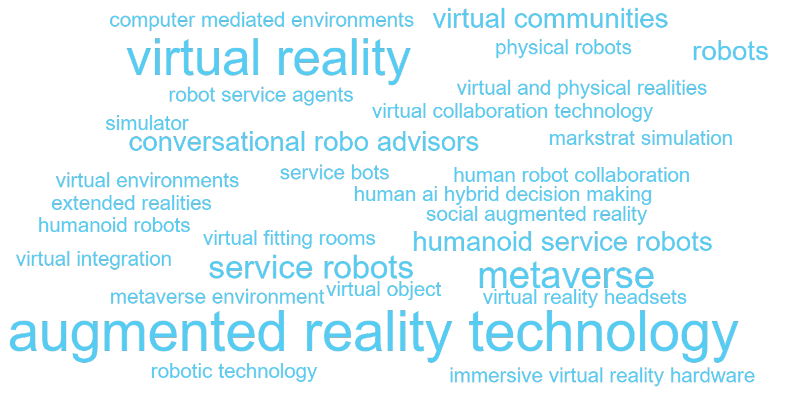
C.4.3 Articles
| Year | Full citation | Technology / technologies | Abstract |
|---|---|---|---|
| 2026 | Gelbrich K, Roschk H, Miederer S, Kerath , Alina A. Automated Versus Human Agents: A Meta-Analysis of Customer Responses to Robots, Chatbots, and Algorithms and Their Contingencies. Journal Of Marketing. 2026;113:1-26. doi:10.1177/00222429251344139 | robots | This meta-analysis examines when three types of automated agents (AAs)-robots, chatbots, and algorithms-are equivalent to human agents (HAs) in marketing roles. An analysis of 943 effect sizes from 327 studies provides novel insights. First, customers may be skeptical of AAs; however, they value their performance and eventually choose or buy from them as if they were interacting with HAs. Second, each of the three AA types has a unique set of contingencies that affect its human equivalence; previously identified contingencies do not generalize and can even have opposing effects across AA types. This study also identifies novel contingencies, such as the multifaceted concept of artificial intelligence required to fulfill a task. Third, some contingencies make AAs more humanlike, while others make their machine characteristics salient. These findings enrich the concept of automated social presence (ASP), suggesting that AAs are hybrid beings with a social presence (i.e., the feeling of interacting with a humanlike entity) and an automated presence (i.e., the feeling of interacting with a machine entity). The authors provide recommendations on when AAs can replace HAs in marketing roles to release capacity and alleviate labor shortages. They also suggest a future research agenda. |
| 2026 | Lu Set al.. Dissolving boundaries in the Metaverse: Implications of loosened constraints on identity, time, space, and financial access for marketing research. International Journal Of Research In Marketing. 2026;:. doi:10.1016/j.ijresmar.2026.03.004 | metaverse | The Metaverse is often portrayed as a novel context for digital consumption, but this paper argues that its deeper value lies in its potential as a behavioral observatory. By loosening four traditional consumer constraints of identity, time, space, and financial access, the Metaverse enables researchers to examine consumer behavior under conditions that are difficult or impossible to replicate in the physical world. We define the Metaverse through the lens of constraint relaxation, distinguishing it from other digital environments such as social media, gaming, and augmented or virtual reality. We then examine how these relaxed constraints reshape marketing research across consumer data analysis, experimental design, and privacy governance. For instance, the fluidity of identity in the Metaverse, where users can adopt multiple avatars, provides a natural context for exploring identity construction and expression. Nonlinear temporality and borderless spatiality challenge sequential experimental designs and traditional geo-segmentation approaches. Relaxed financial constraints alter how consumers perceive value and engage in aspirational consumption. In conclusion, we synthesize current knowledge and forward-thinking analysis to propose a research agenda. Rather than treating the Metaverse as an endpoint for digital innovation, we position it as a methodological and conceptual tool for rethinking marketing theory and generating insights relevant to both virtual and physical contexts. © 2026 Elsevier B.V. |
| 2026 | Pauwels K, Aksehirli Z. Free and paid word-of-mouth from physical to digital, AI and beyond. Journal Of The Academy Of Marketing Science. 2026;91:. doi:10.1007/s11747-026-01151-7 | augmented reality technology, virtual environments | Word-of-mouth (WOM) remains one of the most influential drivers of brand success, but its nature and impact have evolved significantly with the evolution of digital platforms and influencers. In the online context, Trusov et al. (2009) explored the effect of non-incentivized, or free WOM on brand performance, finding it to be a powerful and enduring force. However, it lacked the dynamics of paid WOM and the dichotomy between online and offline WOM so prevalent in today's context. This paper revisits the foundational insights from 2009 to address two critical questions: How does free WOM compare to paid WOM in terms of trust, reach, and impact? And how do online and offline WOM differ in their effectiveness across various product categories? By integrating 15 years of research and data, we aim to provide a comprehensive understanding of these dynamics and suggest areas for future research. To offer actionable insights for practitioners, we suggest a simplified framework that examines the interplay between free and paid WOM, as well as online and offline channels. We combine this conceptual framework with seven urgent practical questions: who, why, which, when, metrics, methods, and magnitude. We highlight how different forms of WOM are suited to specific conditions, balancing authenticity and reach while leveraging category-specific strategies. Artificial intelligence and virtual environments open new frontiers in WOM practice and study. This paper not only extends the theoretical understanding of WOM but also equips marketers with practical tools to navigate the complex landscape of free and paid WOM in physical, digital, and augmented reality environments. |
| 2026 | Uhlendorf-Leo K, Uhrich S, Völckner F. Getting hands on(line)? A meta-analysis of the effectiveness of extended realities in online retailing. International Journal Of Research In Marketing. 2026;:. doi:10.1016/j.ijresmar.2026.04.003 | augmented reality technology, extended realities, virtual reality | To enhance the online shopping experience, companies are increasingly adopting extended realities (XRs) in the form of 360-degree rotation (3D), augmented reality (AR), and virtual reality (VR) for product presentations. However, research has produced inconsistent results regarding the impact of XRs on consumer responses, leaving practitioners uncertain about the effectiveness of these technologies while facing substantial investment costs. Addressing this issue, the authors meta-analyze 298 effect sizes from 111 experimental studies comparing XRs with traditional product presentations (i.e., images, videos). The findings show that XRs moderately improve consumer responses (i.e., attitudinal and behavioral; d = 0.410) with high underlying heterogeneity. The effect is amplified when XRs include overlay elements (e.g., text that overlays virtual content) and for experiential shoppers, while it is weaker for VR on PCs (vs. AR, 3D, and VR on head-mounted displays) and for familiar brands. The effects are robust across different comparison conditions (i.e., images vs. videos), and outcomes (i.e., attitudinal vs. behavioral). The authors also test the relative importance of the two main theoretical accounts used in prior research to explain the effect of XRs—namely, mental simulation and information assessment. The results highlight that companies benefit from a careful use of XRs, for example, by incorporating overlay elements in XR designs or by using XRs for new brands. The article also provides a comprehensive overview of future research areas in the field of XRs. © 2026 The Author(s). |
| 2026 | Kumar V, Kotler P, Kumar A. Transformative marketing strategies in the era of new-age technologies: Principles, plan, purpose, and practice. Journal Of The Academy Of Marketing Science. 2026;75:1-27. doi:10.1007/s11747-025-01120-6 | metaverse | New age technologies (NATs) such as generative AI (GAI), agentic AI, the metaverse, and blockchain, among others, are revolutionizing how firms engage with consumers, deliver value, create new content, and personalize experiences at various levels (e.g., brand, product, product line, business unit, and firm). This study is based on the premise that the influence of NATs on the marketing strategies of firms as well as the marketing strategy formulation process is growing rapidly. Based on this premise, this study explores the following four questions: (1) What are transformative marketing strategies (Principles)? (2) How are they developed (Plan)? (3) Why are they needed (Purpose)? and (4) Where can they be used (Practice)? Accordingly, this study considers seven popular marketing strategies firms use-pricing, distribution, product, promotion, selling, global market entry, and innovation-that are included in TMS. Using various use cases across these marketing strategies, this study discusses how marketing managers can use these NATs to enhance productivity, create personalized marketing experiences, make more informed strategic decisions, and drive higher engagement with minimal manual effort. This study also advances a 2 x 2 matrix-the relative speed of NAT adoption vs. the relative speed of relevant marketing strategy adaptation-that offers a structured framework to help firms integrate and manage these seven strategies for better performance. Through the intersection of NATs and marketing adaptability, this study outlines implications for both research and practice, offers valuable strategies for organizations, proposes several research questions, and establishes a foundation for the future of TMS in the era of NATs. |
| 2026 | Schein K, Rauschnabel P, Praxmarer-Carus , Sandra S, Babin B. Unpacking augmentation quality and local presence: Factors that drive effective augmented reality marketing. Journal Of The Academy Of Marketing Science. 2026;90:49-69. doi:10.1007/s11747-025-01108-2 | augmented reality technology | Augmented reality (AR) integrates virtual content into consumers' physical environment. Although research suggests that consumers' perceptions of augmentation quality-the perceived merge of the virtual and real world-affect relevant consumer variables, the literature has not developed a comprehensive measure that adequately captures the construct nor integrated it meaningfully with theory-relevant outcomes. Grounded theory and standard scale development procedures are applied to understand what comprises perceptions of augmentation quality and how to measure it to distinguish low- from high-quality AR-marketing attempts. The findings suggest that quality perceptions in AR consist of a second-order factor, augmentation quality, represented by three first-order factors (design, interaction, and embedding quality). In addition, this research demonstrates that high augmentation quality creates a sense of local presence, i.e., the sensation that the augmented object experienced with AR is real and present to the consumer. The research then theoretically integrates these factors into a more comprehensive model, tying it firmly into the nomological net. In particular, augmentation quality-mediated by local presence-affects utilitarian and hedonic outcomes as well as behavioral actions. Managerial implications for understanding and using AR marketing are presented. |
| 2025 | Kim H, Mcgill A. AIr-induced dehumanization. Journal Of Consumer Psychology. 2025;70:363-381. doi:10.1002/jcpy.1441 | humanoid robots | Recent technological advancements have empowered nonhuman entities, such as virtual assistants and humanoid robots, to simulate human intelligence and behavior. This paper investigates how autonomous agents influence individuals' perceptions and behaviors toward others, particularly human employees. Our research reveals that the socio-emotional capabilities of autonomous agents lead individuals to attribute a humanlike mind to these nonhuman entities. Perceiving a high level of humanlike mind in the nonhuman, autonomous agents affects perceptions of actual people through an assimilation process. Consequently, we observe ``assimilation-induced dehumanization'': the humanness judgment of actual people is assimilated toward the lower humanness judgment of autonomous agents, leading to various forms of mistreatment. We demonstrate that assimilation-induced dehumanization is mitigated when autonomous agents possess capabilities incompatible with humans, leading to a contrast effect (Study 2), and when autonomous agents are perceived as having a high level of cognitive capability only, resulting in a lower level of mind perception of these agents (Study 3). Our findings hold across various types of autonomous agents (embodied: Studies 1-2 and disembodied: Studies 3-5), as well as in real and hypothetical consumer choices. |
| 2025 | Shanks I, Scott M, Mende M, Van D J, Grewal D. Cobotic service teams and power dynamics: Understanding and mitigating unintended consequences of human-robot collaboration in healthcare services. Journal Of The Academy Of Marketing Science. 2025;149:463-489. doi:10.1007/s11747-024-01004-1 | human robot collaboration | In cobotic service teams, employees and robots collaborate to serve customers. As cobotic teams become more prevalent, a key question arises: How do consumers respond to cobotic teams, as a function of the roles shared by employees and robots (robots in superordinate roles as team leaders and humans in subordinate roles as assistants, or vice versa)? Six studies, conducted in different healthcare settings, show that consumers respond less favorably to robot-led (vs. human-led) teams. In delineating the process underlying these responses, the authors demonstrate that consumers ascribe less power to robot (vs. human) team leaders, which increases consumer anxiety and drives downstream responses through serial mediation. Further examining the power dynamics in cobotic service encounters, the authors identify boundary conditions that help mitigate negative consumer responses (increasing consumers' power by letting them choose the robot in the service team, leveraging consumers' power distance beliefs, and reinforcing the robot's performance capabilities). |
| 2025 | Baudet A, Parmentier M. Focal and peripheral consumption journeys across virtual and physical realities: A study of online gaming. International Journal Of Research In Marketing. 2025;50:1020-1038. doi:10.1016/j.ijresmar.2025.04.008 | virtual and physical realities | This research investigates how families negotiate the intensification of competitive gaming, focusing on both focal consumers (gamers) and peripheral consumers (parents, siblings, or partners). Drawing on ethnographic, netnographic, and interview data, the study addresses how a virtual practice evolves as gamers become more committed and how its virtual and physical elements affect not only gamers' experiences but also those of nongamers. The authors have found that the negotiation of the practice follows an iterative process of evaluation, circumscription, and reconfiguration, leading to shifts in household norms, noise management, and spatial arrangements. As gaming transitions into a more immersive, virtual phase, its partial visibility can alienate non-gamers or heighten tensions regarding autonomy and shared routines. This study also shows that misalignments between material arrangements, doings, and meanings underpin many of the conflicts- yet they can be mitigated through supportive design choices, offline-online integration, and third-party mediation. This research highlights the pivotal role that peripheral consumers play in shaping emerging digital consumption practices. It concludes with practical and policy-level implications, offering strategies that product developers, community organizers, and educators can implement to foster household harmony and preserve gaming's communal potential. (c) 2025 The Authors. Published by Elsevier B.V. This is an open access article under the CC BY-NC-ND license (http://creativecommons.org/licenses/by-nc-nd/4.0/). |
| 2025 | Senyuz A, Hasford J, Wang Z. How Awe in Marketing Communications Decreases Consumer Preferences for Limited Edition Products. Journal Of Marketing Research. 2025;73:818-836. doi:10.1177/00222437251333742 | metaverse environment | Awe is commonly employed in marketing communications given its powerful ability to inspire consumers. Despite the prevalent use of awe in advertising limited edition (LE) products, research has yet to examine when and how awe can benefit or hurt these promotional efforts. Findings across nine studies demonstrate that awe typically has a negative impact on consumer engagement and product preferences toward LE items. This effect results from the reduced desire for exclusivity that a consumer has when experiencing awe. These findings are generalized to several contexts, including a field study of persuasive communications and consumer choices in a metaverse environment. However, awe can enhance consumer preferences toward LE products when promotional messages are framed to reduce this incongruence. This research provides insights for marketers on the conditions under which incorporating awe in LE product campaigns might prove beneficial or counterproductive. |
| 2025 | Holthower J, Van D J, Noble S. Increasing Accountability and Compliance with Robot Advice. Journal Of Marketing. 2025;83:. doi:10.1177/00222429251370268 | service robots | Service robots on organizational frontlines, notably in health and elderly care settings, promise to tackle staff shortages. In such service contexts, compliance is crucial for consumer well-being, but compliance with robot advice remains problematically low. This research explores how the source of robot advice affects compliance in human-robot interactions. In six studies, including four field studies with real human-robot interactions, the authors demonstrate that consumers are more likely to comply with advice given by a robot service provider when the source of advice is a human rather than the robot itself. This is because a human source of robot advice increases the feeling of accountability, or the expectation that one might need to justify one's actions to others, which is more difficult to achieve with only robot social presence. In turn, this fosters advice adherence, which also persists over time across repeated interactions. However, when the robot embeds social cues in the advice, the difference in accountability and compliance between robot-only and robot advice with a human source attenuates. These insights hold enormous promise, especially for health care practitioners, institutions, and consumers for whom increased compliance can lead to better health outcomes, reduced hospital readmissions, improved recovery, and elevated well-being. |
| 2025 | Arsel Z, Zanette M, Da R M C. Sponsored Content as an Epistemic Market Object: How Platformization of Brand-Creator Partnerships Disrupts Valuation, Coproduction, and the Relationship Between Market Actors. Journal Of Marketing. 2025;130:57-76. doi:10.1177/00222429241296459 | metaverse | Sponsored content allows brands to partner with creators to reach creators' audiences on digital platforms. However, both creators' and brands' incomplete understanding of this object generates two critical ambiguities: how to determine the value of sponsored content and how to effectively coproduce it. To better understand these ambiguities, the authors theorize sponsored content as an epistemic market object: an object that facilitates marketing functions but is only partially understood by the actors who use it. They analyze a dataset of interviews, podcasts, media articles, and third-party platform reviews about-and by-content creators, brands, and intermediaries. The findings show that brands, creators, and intermediaries create and apply knowledge to address valuation and coproduction ambiguities. However, this knowledge work is incomplete, creating asymmetries in value outcomes and power relationships in a brand-creator partnership. This research contributes to marketing literature and practice by highlighting the role of epistemic market objects in transformative market disruptions that alter the roles of, and the relationships between, market actors. The findings are transferable to other substantive areas such as generative artificial intelligence, the metaverse, nonfungible tokens, online news, and the sharing economy. |
| 2024 | Puntoni S. Diagnostic delay in amyotrophic lateral sclerosis. Journal Of Consumer Psychology. 2024;10:174-176. doi:10.1002/jcpy.1358 | augmented reality technology, virtual reality | This commentary questions two common assumptions underlying discussions of how digital technology can enrich the consumer experience. First, broad conceptualizations tend to accommodate augmented reality and virtual reality under a single metaverse umbrella. This commentary draws attention to differences between the two and to the present-day prevalence of augmented reality experiences. Second, discussions of the metaverse tend to focus on visual experiences. This commentary draws attention to the impact that augmented reality is having through other senses. I argue that augmented reality experiences are ubiquitous because smartphones and wearables enrich our everyday life with haptic and sonic information. |
| 2024 | Ceylan G, Diehl K, Wood W. From Mentally Doing to Actually Doing: A Meta-Analysis of Induced Positive Consumption Simulations. Journal Of Marketing. 2024;137:21-39. doi:10.1177/00222429231181071 | augmented reality technology | Mental simulation is an important tool for managers who want consumers to imagine what life would be like if they engaged in positive consumption behaviors. However, research has found mixed effects of mental simulation on behavior. To understand this inconsistency, the authors conduct a meta-analysis to quantify the effect of different mental simulation prompts. This multivariate three-level meta-analysis of 237 effect sizes spanning four decades (1980-2020) and representing 40,705 respondents yields a positive but small effect of mental simulation on behavioral responses. Managers and researchers can amplify this effect by using dynamic visual inductions (e.g., augmented reality), inductions involving both visuals and verbal instructions, and repeated inductions spaced over time (e.g., weekly, akin to real-world marketing campaigns). Inducing simulations repeatedly but massed (e.g., using the same message at the same time across different platforms or retargeting ads) actually reduces subsequent behavioral performance. The authors explain the implications of these findings for theory and practice and identify novel avenues for research. |
| 2024 | Lee H, Broniarczyk S, Zheng J, (Frank) F. Mapping collective consciousness to consumer research: In-person to virtual social presence. Journal Of Consumer Psychology. 2024;74:694-704. doi:10.1002/jcpy.1435 | virtual reality | Shteynberg's (Journal of Consumer Psychology, 2024) work on collective consciousness offers unique and meaningful insights into consumer behavior by emphasizing a ``we-representation'' that is comprised not of a self-aware ``I'' and an external ``you'' but rather complete immersion as a unified ``we''. In this commentary, we situate collective consciousness within existing social presence research in consumer behavior and discuss its potential to expand the scope of social presence research. Specifically, we utilize a social presence framework that highlights the type of co-presence (in-person vs. virtual) and the extent of interactivity (interactive vs. passive) discussing the psychological mechanisms and linkage to collective consciousness. In addition to discussing shared consumption and shared decision-making, we assess the implications of collective consciousness for consumer contexts facilitated by virtual technologies: fake news, live streaming, virtual reality, cryptocurrencies, and crowdfunding. We conclude by highlighting future avenues for integrating collective consciousness into consumer psychology research. |
| 2024 | Belk R. The digital frontier as a liminal space. Journal Of Consumer Psychology. 2024;39:167-173. doi:10.1002/jcpy.1357 | metaverse | Hadi et al. (Journal of Consumer Psychology, 34, 2023) have created a masterful and wide-sweeping review of the consumer behavior literature on the Metaverse. They envision our encounter with the Metaverse as a consumer journey. In this commentary, I highlight some of their unique contributions and suggest additional insights that emerge when we view the digital frontier as a liminal place betwixt and between now and then, here and there, and reality and virtuality. The Metaverse is also a metaphor and I entertain three metaphoric interpretations. First, the Metaverse is an experience machine of the sort that Robert Nozick imagined in his thought experiment involving real and artificial pleasures. Alternatively, consumers themselves can be seen as desiring machines as Gilles Deleuze and Feliz Guattari characterized them, and the Metaverse can be seen as an instantiation of our collective desires. Or thirdly, the Metaverse can be regarded as a shared hallucination. As these diverse metaphors suggest, imagining the metaverse is a projective exercise. But the consequences may involve up to a trillion dollars in revenues, so I hope these provocations prove useful whether they are ultimately borne out or not. |
| 2024 | Yu S, Xiong J, Shen H. The rise of chatbots: The effect of using chatbot agents on consumers' responses to request rejection. Journal Of Consumer Psychology. 2024;63:35-48. doi:10.1002/jcpy.1330 | robot service agents | This research investigates consumers' perceptions and evaluations of robot service agents compared with human service agents when service requests are rejected. Six studies were conducted. The results show that when consumers receive a rejection of their service request, they evaluate the service less negatively if the service is handled by a chatbot agent versus a human agent. The reason is that consumers have lower expectations that robots will be able to provide flexible services to them. Consequently, their dissatisfaction with the request rejection is lower when the service is handled by robots. However, the aforementioned effect is not observed (1) when consumers have not experienced the service yet, (2) when their service request has been accepted, or (3) when the service agent conveys emotions to apologize for request rejection. |
| 2024 | Anderson S, Chintagunta P, Vilcassim N. Virtual Collaboration Technology and International Business Coaching: Examining the Impact on Marketing Strategies and Sales. Marketing Science. 2024;56:. doi:10.1287/mksc.2019.0121 | virtual collaboration technology | This paper studies the impact of international business coaching via virtual collaboration technology on the strategies and sales of emerging market entrepreneurs. It sheds light on three novel research questions. (1) What is the effect of virtual business coaching on firm sales? (2) What is the mechanism through which this effect occurs? Specifically, does virtual coaching stimulate shifts in marketing strategy? (3) Do entrepreneurs benefit more from virtual coaching when they are less strategic in their decision making? We conducted a randomized controlled field experiment with 930 entrepreneurs in Uganda to examine the impact of a virtual coaching intervention that connects management professionals in primarily advanced markets and entrepreneurs in emerging markets with the aim of improving business performance. The analysis finds a positive and significant main effect on firm sales; treatment entrepreneurs increase monthly sales by 27.6\% on average. In addition, entrepreneurs who receive virtual coaching are 52.8\% more likely to have shifted their marketing strategy in a new direction. Moreover, consistent with this mechanism of inducing strategic business changes, the results show that entrepreneurs who receive virtual coaching tend to do better when they (ex ante) lack strategic focus. These results have important implications for the development of marketing strategies by entrepreneurs and multinational managers, as well as for policy makers interested in improving the performance of small firms in emerging markets and beyond. |
| 2023 | Kim T, Lee H, Kim M, Kim S, Duhachek A. AI increases unethical consumer behavior due to reduced anticipatory guilt. Journal Of The Academy Of Marketing Science. 2023;90:785-801. doi:10.1007/s11747-021-00832-9 | robotic technology | The current research focuses on examining how the use of artificial intelligence and robotic technology, emerging non-human agent innovations in service industries, influences consumers' likelihood of engaging in unethical behavior. Previous research has shown that non-human (vs. human) agents are perceived differently along many dimensions by consumers (e.g., that they lack emotional capability), leading to various behavioral changes when interacting with them. We hypothesize and show across four studies that interacting with non-human (vs. human) agents, such as AI and robots, increases the tendency to engage in unethical consumer behaviors due to reduced anticipatory feelings of guilt. We also demonstrate the moderating role of anthropomorphism such that endowing humanlike features on non-human agents reduces unethical behavior. We also rule out alternative explanations for the effect, including differential perceptions about the agents (e.g., ``warmth,'' ``competence,'' or ``detection capacity'') and other measures associated with the company capabilities. |
| 2023 | Varma R, Bommaraju R, Singh S. Female Chief Marketing Officers: When and Why Do Their Marketing Decisions Differ from Their Male Counterparts'?. Journal Of Marketing Research. 2023;99:1154-1176. doi:10.1177/00222437231156902 | markstrat simulation | Firms have appointed a significant number of female chief marketing officers (CMOs) over the past decade. However, the question of how female CMOs differ from their male counterparts is yet to be explored. This research uses a multimethod approach to examine when and why female CMOs' marketing decisions differ from those of male CMOs. In Study 1, the authors use secondary data to examine the effect of CMO gender on multiple marketing decisions and find that female CMOs make less risky decisions. Further, the authors find evidence that female CMOs' risk-taking behavior is contingent on structural, organizational, and environmental factors (CEO gender, relative firm performance, and demand uncertainty). In Study 2, the authors employ the MarkStrat simulation, in which participants assume the role of CMO, to test the main finding from Study 1 in a controlled setting and provide evidence for the differential effect of gender on radical versus incremental new product introductions. In Study 3, the authors examine survey data to find evidence for the underlying mechanisms (overconfidence, failure avoidance orientation, and scrutiny) behind female CMOs' lesser risk-taking behavior. |
| 2023 | Fritz W, Hadi R, Stephen A. From tablet to table: How augmented reality influences food desirability. Journal Of The Academy Of Marketing Science. 2023;114:503-529. doi:10.1007/s11747-022-00919-x | augmented reality technology | Augmented reality (AR) technology has generated enormous industry investment and buzz, with the food and beverage sector quickly embracing this technology in an effort to enhance the customer experience. However, academic research has only just begun to empirically explore how and why this technology might influence consumer judgements and behaviors in such contexts. Across two field studies involving consequential behavior and two controlled laboratory studies, we find that AR's unique ability to visually superimpose objects onto a real-time environment increases consumers' ability to mentally simulate consuming a pictured food, which in turn increases their desire and purchase likelihood of the food item. Further, we find the increased mental simulation produced by AR is itself preceded and driven by an increased sense of personal relevance of the food items. |
| 2023 | Holthower J, Van D J. Robots do not judge: service robots can alleviate embarrassment in service encounters. Journal Of The Academy Of Marketing Science. 2023;69:767-784. doi:10.1007/s11747-022-00862-x | service robots | Although robots are increasingly used in service provision, research cautions that consumers are reluctant to accept service robots. Five lab, field, and online studies reveal an important boundary condition to earlier work and demonstrate that consumers perceive robots less negatively when human social presence is the source of discomfort. We show that consumers feel less judged by a robot (vs. a human) when having to engage in an embarrassing service encounter, such as when acquiring medication to treat a sexually transmitted disease or being confronted with one's own mistakes by a frontline employee. As a consequence, consumers prefer being served by a robot instead of a human when having to acquire an embarrassing product, and a robot helps consumers to overcome their reluctance to accept the service provider's offering when the situation becomes embarrassing. However, robot anthropomorphism moderates the effect as consumers ascribe a higher automated social presence to a highly human-like robot (vs. machine-like robot), making consumers feel more socially judged. |
| 2023 | Chen F, Huang S. Robots or humans for disaster response? Impact on consumer prosociality and possible explanations. Journal Of Consumer Psychology. 2023;46:432-440. doi:10.1002/jcpy.1338 | robots | Hurricanes, wildfires, pandemics, and other disasters have taken millions of lives in the past few years and caused substantial economic losses. To tackle these extraordinary circumstances, governments, organizations, and companies seek assistance from both humans and high-technology machines such as robots. This research report documents how highlighting robots' (vs. humans') helping behaviors in disaster response can affect consumers' prosociality, explores driving mechanisms, and tests solutions. Study 1 found that consumers donated fewer items of clothing after watching news highlighting robots' (vs. humans') assistance in a mudslide disaster. Featuring the COVID-19 pandemic, Study 2 further showed that this decrease in prosociality occurred because reading about robots' assistance felt less encouraging/inspiring to consumers. Studies 3A-3C (and a supplemental study) explored multiple mechanisms and identified a key driver for the backfire effect-a lower perception of courage in disaster response robots. Accordingly, Study 4 tested three theory-driven solutions to raise the perceived courage in robots to increase consumer prosociality. |
| 2023 | Hennig-Thurau T, Aliman D, Herting A, Cziehso G, Linder M, Kubler R. Social interactions in the metaverse: Framework, initial evidence, and research roadmap. Journal Of The Academy Of Marketing Science. 2023;151:889-913. doi:10.1007/s11747-022-00908-0 | virtual reality headsets | Real-time multisensory social interactions (RMSIs) between people are at the center of the metaverse, a new computer-mediated environment consisting of virtual ``worlds `` in which people act and communicate with each other in real-time via avatars. This research investigates whether RMSIs in the metaverse, when accessed through virtual-reality headsets, can generate more value for interactants in terms of interaction outcomes (interaction performance, evaluation, and emotional responses) than those on the two-dimensional (2D) internet (e.g., Zoom meetings). We combine theoretical logic with extensive field-experimental probes (which support the value-creation potential of the virtual-reality metaverse, but contradict its general superiority) to develop and refine a framework of how RMSIs in the metaverse versus on the 2D internet affect interaction outcomes through interactants' intermediate conditions. The refined framework serves as foundation for a research roadmap on RMSIs in the metaverse, in which we highlight the critical roles of specific mediating and moderating forces along with interactional formats for future investigations of the metaverse and also name key business areas and societal challenges that deserve scholarly attention. |
| 2023 | Castelo N, Boegershausen J, Hildebrand C, Henkel A. Understanding and Improving Consumer Reactions to Service Bots. Journal Of Consumer Research. 2023;49:848-863. doi:10.1093/jcr/ucad023 | humanoid service robots, service bots | Many firms are beginning to replace customer service employees with bots, from humanoid service robots to digital chatbots. Using real human-bot interactions in lab and field settings, we study consumers' evaluations of bot-provided service. We find that service evaluations are more negative when the service provider is a bot versus a human-even when the provided service is identical. This effect is explained by consumers' belief that service automation is motivated by firm benefits (i.e., cutting costs) at the expense of customer benefits (such as service quality). The effect is eliminated when firms share the economic surplus derived from automation with consumers through price discounts. The effect is reversed when service bots provide unambiguously superior service to human employees-a scenario that may soon become reality. Consumers' default reactions to service bots are therefore largely negative but can be equal to or better than reactions to human service providers if firms can demonstrate how automation benefits consumers. |
| 2023 | Yang S, Xiong G, Mao H, Ma M. Virtual Fitting Room Effect: Moderating Role of Body Mass Index. Journal Of Marketing Research. 2023;73:1221-1241. doi:10.1177/00222437231154871 | virtual fitting rooms | An emerging virtual-reality technology, virtual fitting rooms (VFRs) allow online shoppers to virtually try on clothes. Despite its increasing popularity, how VFR technology influences different consumer groups is hitherto unknown. Neglecting such nuances may significantly undermine VFR effectiveness. From a large-scale field experiment with real-world transactional data and five laboratory experiments, the authors document the asymmetric effects of VFR use conditional on consumer body types, characterize the theoretical underpinnings, and identify a systematic set of managerially actionable moderators that can mitigate adverse effects. Specifically, while VFR use enhances product evaluations and purchases among consumers with relatively low body mass index (BMI) levels, it negatively influences responses from high-BMI consumers due to self-image threat induced by avatars that resemble consumers' own bodies. To cope with self-image threat, high-BMI consumers tend to shift the blame to the apparel item, resulting in negative product responses. The authors identify four feasible solutions to alleviate the negative responses among high-BMI users of VFRs, namely, promoting diversified beauty standards, featuring mannequin faces for VFR avatars, providing consumers opportunities to engage in prosocial behavior, and presenting high-status products. These findings offer guidance for retailers to leverage this new technology smartly to enhance both business performance and consumer well-being. |
| 2022 | Longoni C, Cian L. Artificial Intelligence in Utilitarian vs. Hedonic Contexts: The ``Word-of-Machine'' Effect. Journal Of Marketing. 2022;44:91-108. doi:10.1177/0022242920957347 | human ai hybrid decision making | Rapid development and adoption of AI, machine learning, and natural language processing applications challenge managers and policy makers to harness these transformative technologies. In this context, the authors provide evidence of a novel ``word-of-machine'' effect, the phenomenon by which utilitarian/hedonic attribute trade-offs determine preference for, or resistance to, AI-based recommendations compared with traditional word of mouth, or human-based recommendations. The word-of-machine effect stems from a lay belief that AI recommenders are more competent than human recommenders in the utilitarian realm and less competent than human recommenders in the hedonic realm. As a consequence, importance or salience of utilitarian attributes determine preference for AI recommenders over human ones, and importance or salience of hedonic attributes determine resistance to AI recommenders over human ones (Studies 1-4). The word-of machine effect is robust to attribute complexity, number of options considered, and transaction costs. The word-of-machine effect reverses for utilitarian goals if a recommendation needs matching to a person's unique preferences (Study 5) and is eliminated in the case of human-AI hybrid decision making (i.e., augmented rather than artificial intelligence; Study 6). An intervention based on the consider-the-opposite protocol attenuates the word-of-machine effect (Studies 7a-b). |
| 2022 | Tan Y, Chandukala S, Reddy S. Augmented Reality in Retail and Its Impact on Sales. Journal Of Marketing. 2022;55:48-66. doi:10.1177/0022242921995449 | augmented reality technology | The rise of augmented reality (AR) technology presents marketers with promising opportunities to engage customers and transform their brand experience. Although firms are keen to invest in AR, research documenting its tangible impact in real-world contexts is sparse. In this article, the authors outline four broad uses of the technology in retail settings. They then focus specifically on the use of AR to facilitate product evaluation prior to purchase and empirically investigate its impact on sales in online retail. Using data obtained from an international cosmetics retailer, they find that AR usage on the retailer's mobile app is associated with higher sales for brands that are less popular, products with narrower appeal, and products that are more expensive. In addition, the effect of AR is stronger for customers who are new to the online channel or product category, suggesting that the sales increase is coming from online channel adoption and category expansion. These findings provide converging evidence that AR is most effective when product-related uncertainty is high, demonstrating the technology's potential to increase sales by reducing uncertainty and instilling purchase confidence. To encourage more impactful research in this area, the authors conclude with a research agenda for AR in marketing. |
| 2022 | Luangrath A, Peck J, Hedgcock W, Xu , Yixiang Y. Observing Product Touch: The Vicarious Haptic Effect in Digital Marketing and Virtual Reality. Journal Of Marketing Research. 2022;55:306-326. doi:10.1177/00222437211059540 | virtual reality | Retail is rapidly evolving to construct virtual environments for consumers. Online product images, videos, and virtual reality (VR) interfaces enliven consumer experiences and are a source of product information. Because consumers are unable to physically touch products in these digital environments, this research examines vicarious touch, or the observation of a hand in physical contact with a product in a digital environment. Across eight studies, the authors use images, GIFs, and VR to show that vicarious touch affects consumers' psychological ownership and product valuation due to the active nature of product touch, which results in a felt sense of body ownership of the virtual hand. This is termed the ``vicarious haptic effect.'' Results demonstrate that it is not enough to show a hand in an advertisement; the hand must be touching a product. The vicarious haptic effect is strongest for people who become highly stimulated by an immersive VR experience (i.e., measured via the elevation in heart rate). The vicarious haptic effect is attenuated if the viewed interaction does not represent a diagnostic hand movement. The authors discuss theoretical and managerial implications for digital product presentation to encourage feelings of product ownership and valuation. |
| 2022 | Harz N, Hohenberg S, Homburg C. Virtual Reality in New Product Development: Insights from Pre-launch Sales Forecasting for Durables. Journal Of Marketing. 2022;71:157-179. doi:10.1177/00222429211014902 | virtual reality | This investigation examines how consumer durable goods producers can leverage virtual reality for new product development. First, the authors develop a prelaunch sales forecasting approach with two key features: virtual reality and an extended macro-flow model. To assess its effectiveness, the authors collect data from 631 potential buyers of two real-world innovations. The results reveal that the new approach yields highly accurate prelaunch forecasts across the two field studies: compared with the actual sales data tracked after the product launches, the prediction errors for the aggregated first-year sales are only 1.9\% (Study 1a, original prelaunch sales forecast), .0\% (Study 1b, forecast with actual advertisement spending), and 20.0\% (Study 1b, original prelaunch forecast). Moreover, the average mean absolute percentage error for the monthly sales is only 23\% across both studies. Second, to understand the mechanisms of virtual reality, the authors conduct a controlled laboratory experiment. The findings reveal that virtual reality fosters behavioral consistency between participants' information search, preferences, and buying behavior. Moreover, virtual reality enhances participants' perceptions related to presence and vividness, but not their perceptions related to alternative theoretical perspectives. Finally, the authors provide recommendations for when and how managers can use virtual reality in new product development. |
| 2021 | Moffett J, Folse J, Palmatier , Robert W R. A theory of multiformat communication: mechanisms, dynamics, and strategies. Journal Of The Academy Of Marketing Science. 2021;95:441-461. doi:10.1007/s11747-020-00750-2 | virtual reality | Extant communication theories predate the explosion of digital formats and technological advances such as virtual reality, which likely explains their predominant focus on traditional and format-level (e.g., face-to-face, email) rather than digital or characteristic-level (e.g., visual cues, synchronicity) design decisions. Firms thus lack insights into how to create and use emerging digital formats, individually or synergistically. To establish a holistic framework of bilateral multiformat communication for relationship marketing, this article reviews communication theory to establish a foundation for understanding multiformat communication and to identify any gaps (e.g., AI agents, simulated cues). The authors then review bilateral communication research in light of the identified theoretical gaps, to inform their framework. Finally, by decomposing these formats according to six fundamental characteristics, they predict how each characteristic might promote effective, efficient, and experiential communication goals, in light of distinct message, temporal, and dyadic factors. Ultimately, these combined insights reveal an overarching framework, with characteristic-level propositions grouped into five key themes, that can serve as a platform for academics and managers to develop multiformat communication theory and relationship strategies. |
| 2021 | Hildebrand C, Bergner A. Conversational robo advisors as surrogates of trust: onboarding experience, firm perception, and consumer financial decision making. Journal Of The Academy Of Marketing Science. 2021;74:659-676. doi:10.1007/s11747-020-00753-z | conversational robo advisors, conversational robo advisors | The current research demonstrates how conversational robo advisors as opposed to static, non-conversational robo advisors alter perceptions of trust, the evaluation of a financial services firm, and consumer financial decision making. We develop and empirically test a novel conceptualization of conversational robo advisors building on prior work in human-to-human communication and interpersonal psychology, showing that conversational robo advisors cause greater levels of affective trust compared to non-conversational robo advisors and evoke a more benevolent evaluation of a financial services firm. We demonstrate that this increase in affective trust not only affects firm perception (in terms of benevolence attributions or a more positively-valenced onboarding experience), but has important implications for investor behavior, such as greater recommendation acceptance and an increase in asset allocation toward conversational robo advisors. These findings have important implications for research on trust formation between humans and machines, the effective design of conversational robo advisors, and public policy in the digital economy. |
| 2021 | Lim S, Donkers B, Van D P, Dellaert B, G. C G. Digital customization of consumer investments in multiple funds: virtual integration improves risk-return decisions. Journal Of The Academy Of Marketing Science. 2021;54:723-742. doi:10.1007/s11747-020-00740-4 | virtual integration | Digital technology in financial services is helping consumers gain wider access to investment funds, acquire these funds at lower costs, and customize their own investments. However, direct digital access also creates new challenges because consumers may make suboptimal investment decisions. We address the challenge that consumers often face complex investment decisions involving multiple funds. Normative optimal asset allocation theory prescribes that investors should simultaneously optimize risk-returns over their entire portfolio. We propose two behavioral effects (mental separation and correlation neglect) that prevent consumers from doing so and a new choice architecture of virtually integrating investment funds that can help overcome these effects. Results from three experiments, using general population samples, provide support for the predicted behavioral effects and the beneficial impact of virtual integration. We find that consumers' behavioral biases are not overcome by financial literacy, which further underlines the marketing relevance of this research. |
| 2021 | Blut M, Wang C, Wuenderlich N, Brock , Christian C. Understanding anthropomorphism in service provision: a meta-analysis of physical robots, chatbots, and other AI. Journal Of The Academy Of Marketing Science. 2021;129:632-658. doi:10.1007/s11747-020-00762-y | physical robots, service robots | An increasing number of firms introduce service robots, such as physical robots and virtual chatbots, to provide services to customers. While some firms use robots that resemble human beings by looking and acting humanlike to increase customers' use intention of this technology, others employ machinelike robots to avoid uncanny valley effects, assuming that very humanlike robots may induce feelings of eeriness. There is no consensus in the service literature regarding whether customers' anthropomorphism of robots facilitates or constrains their use intention. The present meta-analysis synthesizes data from 11,053 individuals interacting with service robots reported in 108 independent samples. The study synthesizes previous research to clarify this issue and enhance understanding of the construct. We develop a comprehensive model to investigate relationships between anthropomorphism and its antecedents and consequences. Customer traits and predispositions (e.g., computer anxiety), sociodemographics (e.g., gender), and robot design features (e.g., physical, nonphysical) are identified as triggers of anthropomorphism. Robot characteristics (e.g., intelligence) and functional characteristics (e.g., usefulness) are identified as important mediators, although relational characteristics (e.g., rapport) receive less support as mediators. The findings clarify contextual circumstances in which anthropomorphism impacts customer intention to use a robot. The moderator analysis indicates that the impact depends on robot type (i.e., robot gender) and service type (i.e., possession-processing service, mental stimulus-processing service). Based on these findings, we develop a comprehensive agenda for future research on service robots in marketing. |
| 2020 | Hilken T, Keeling D, De R K, Mahr D, Chylinski M. Seeing eye to eye: social augmented reality and shared decision making in the marketplace. Journal Of The Academy Of Marketing Science. 2020;76:143-164. doi:10.1007/s11747-019-00688-0 | social augmented reality | Firms increasingly seek to improve the online shopping experience by enabling customers to exchange product recommendations through social augmented reality (AR). We utilize socially situated cognition theory and conduct a series of five studies to explore how social AR supports shared decision making in recommender-decision maker dyads. We demonstrate that optimal configurations of social AR, that is, a static (vs. dynamic) point-of-view sharing format matched with an image-enhanced (vs. text-only) communicative act, increase recommenders' comfort with providing advice and decision makers' likelihood of using the advice in their choice. For both, these effects are due to a sense of social empowerment, which also stimulates recommenders' desire for a product and positive behavioral intentions. However, recommenders' communication motives impose boundary conditions. When recommenders have strong impression management concerns, this weakens the effect of social empowerment on recommendation comfort. Furthermore, the stronger a recommender's persuasion goal, the less likely the decision maker is to use the recommendation in their choice. |
| 2020 | Wedel M, Bigne E, Zhang J. Virtual and augmented reality: Advancing research in consumer marketing. International Journal Of Research In Marketing. 2020;133:443-465. doi:10.1016/j.ijresmar.2020.04.004 | augmented reality technology, virtual reality | Virtual reality (VR) and augmented reality (AR) technologies are having a profound impact on a variety of marketing practices and are attracting increasing attention from marketing researchers. In this article, we review developments in VR/AR applications and research in the area of consumer marketing. We propose a conceptual framework for VR/AR research in consumer marketing that centers around consumer experiences provided by VR/AR applications along the customer journey and the effectiveness of such applications, and delve into the key concepts and components of the framework. Next, we provide a comprehensive overview of VR/AR applications in current practices and extant research on VR/AR in consumer marketing. Finally, based on this framework, we offer an outlook for future developments of VR/AR technologies and applications, discuss managerial implications, and prescribe directions for research on consumer marketing. (c) 2020 Elsevier B.V. All rights reserved. |
| 2019 | Steinhoff L, Arli D, Weaven S, Kozlenkova I, V. V. Online relationship marketing. Journal Of The Academy Of Marketing Science. 2019;178:369-393. doi:10.1007/s11747-018-0621-6 | augmented reality technology | Online interactions have emerged as a dominant exchange mode for companies and customers. Cultivating online relationshipsdefined as relational exchanges that are mediated by Internet-based channelspresents firms with challenges and opportunities. In lockstep with exponential advancements in computing technology, a rich and ever-evolving toolbox is available to relationship marketers to manage customer relationships online, in settings including e-commerce, social media, online communities, mobile, big data, artificial intelligence, and augmented reality. To advance academic knowledge and guide managerial decision making, this study offers a comprehensive analysis of online relationship marketing in terms of its conceptual foundations, evolution in business practice, and empirical insights from academic research. The authors propose an evolving theory of online relationship marketing, characterizing online relationships as uniquely seamless, networked, omnichannel, personalized, and anthropomorphized. Based on these five essential features, six tenets and 11 corresponding propositions parsimoniously predict the performance effects of the manifold online relationship marketing strategies. |
| 2019 | Mende M, Scott M, Van D J, Grewal D, Shanks I. Service Robots Rising: How Humanoid Robots Influence Service Experiences and Elicit Compensatory Consumer Responses. Journal Of Marketing Research. 2019;146:535-556. doi:10.1177/0022243718822827 | humanoid service robots | Interactions between consumers and humanoid service robots (HSRs; i.e., robots with a human-like morphology such as a face, arms, and legs) will soon be part of routine marketplace experiences. It is unclear, however, whether these humanoid robots (compared with human employees) will trigger positive or negative consequences for consumers and companies. Seven experimental studies reveal that consumers display compensatory responses when they interact with an HSR rather than a human employee (e.g., they favor purchasing status goods, seek social affiliation, and order and eat more food). The authors investigate the underlying process driving these effects, and they find that HSRs elicit greater consumer discomfort (i.e., eeriness and a threat to human identity), which in turn results in the enhancement of compensatory consumption. Moreover, this research identifies boundary conditions of the effects such that the compensatory responses that HSRs elicit are (1) mitigated when consumer-perceived social belongingness is high, (2) attenuated when food is perceived as more healthful, and (3) buffered when the robot is machinized (rather than anthropomorphized). |
| 2019 | Sarantopouloss P, Theotokis A, Pramatari , Katerina K, Roggeveen A. The Impact of a Complement-Based Assortment Organization on Purchases. Journal Of Marketing Research. 2019;53:459-478. doi:10.1177/0022243718823698 | virtual reality | This article examines whether and why organizing product categories according to the consumption goal they serve (i.e., complement-based assortment organization) may increase purchases compared with organizing product categories according to their attributes or physical characteristics (i.e., substitute-based assortment organization). Across two field experiments, a virtual reality experiment, and a lab experiment, the authors show that a complement-based assortment organization, compared with a substitute-based assortment organization, leads to increased numbers of purchases and increased expenditures. Ease of visualization of the consumption process mediates the results. The impact of the complement-based organization on purchases is more pronounced for less involved consumers and for consumers with a less specific shopping goal. These findings have both theoretical and practical implications. |
| 2017 | Hilken T, De R K, Chylinski M, Mahr D, Keeling D. Augmenting the eye of the beholder: exploring the strategic potential of augmented reality to enhance online service experiences. Journal Of The Academy Of Marketing Science. 2017;94:884-905. doi:10.1007/s11747-017-0541-x | augmented reality technology | Driven by the proliferation of augmented reality (AR) technologies, many firms are pursuing a strategy of service augmentation to enhance customers' online service experiences. Drawing on situated cognition theory, the authors show that AR-based service augmentation enhances customer value perceptions by simultaneously providing simulated physical control and environmental embedding. The resulting authentic situated experience, manifested in a feeling of spatial presence, functions as a mediator and also predicts customer decision comfort. Furthermore, the effect of spatial presence on utilitarian value perceptions is greater for customers who are disposed toward verbal rather than visual information processing, and the positive effect on decision comfort is attenuated by customers' privacy concerns. |
| 2015 | Homburg C, Ehm L, Artz M. Measuring and Managing Consumer Sentiment in an Online Community Environment. Journal Of Marketing Research. 2015;48:629-641. doi:10.1509/jmr.11.0448 | virtual communities | As social media and virtual communities increase in popularity, the spread of word of mouth becomes easier, challenging firms to measure and manage the success of marketing initiatives in online community environments. This research examines how consumers react to firms' active participation in consumer-to-consumer conversations in an online community setting. The authors develop a tailored community-matched measure of consumer reaction (consumer sentiment) and analyze more than 115,000 consumer posts from ten online forums with active firm participation. The results indicate that consumers show diminishing returns to active firm engagement, which, at very high levels, can undermine consumer sentiment. Further subgroup analyses by conversation type indicate that these relationships hold for conversations that address consumers' functional needs but do not hold for conversations that address social needs. Finally, the results show diminishing returns to firm engagement for consumers primarily interested in product-related support but show no relationship for consumers primarily interested in inspiration and entertainment. These findings provide insights for marketing performance measurement and resource allocation in online communities. |
| 2011 | Hershfield Het al.. Increasing Saving Behavior Through Age-Progressed Renderings of the Future Self. Journal Of Marketing Research. 2011;82:S23-S37. doi:10.1509/jmkr.48.SPL.S23 | immersive virtual reality hardware | Many people fail to save what they will need for retirement. Research on excessive discounting of the future suggests that removing the lure of immediate rewards by precommitting to decisions or elaborating the value of future rewards both can make decisions more future oriented. The authors explore a third and complementary route, one that deals not with present and future rewards but with present and future selves. In line with research that shows that people may fail, because of a lack of belief or imagination, to identify with their future selves, the authors propose that allowing people to interact with age-progressed renderings of themselves will cause them to allocate more resources to the future. In four studies, participants interacted with realistic computer renderings of their future selves using immersive virtual reality hardware and interactive decision aids. In all cases, those who interacted with their virtual future selves exhibited an increased tendency to accept later monetary rewards over immediate ones. |
| 2009 | Kumar V, Fan J, Gulati R, Venkat P. Practice Prize Paper Marketing-Mix Recommendations to Manage Value Growth at P\&G Asia-Pacific. Marketing Science. 2009;17:645-655. doi:10.1287/mksc.1080.0477 | simulator | Procter \& Gamble (P\&G) Asia-Pacific is interested in managing value growth. Only after fully understanding the true effects of the marketing-mix variables can P\&G managers make strategic decisions answering questions such as the following: (1) Are the P\&G brands in the detergent market inelastic or elastic with respect to price? How has the price elasticity changed over time? Can P\&G increase the price of its brands to gain value growth? (2) What are the price, distribution, and sizing combinations needed to achieve the desirable value growth? (3) How can P\&G gain market share from its competitors without cannibalizing its own brands? P\&G Asia-Pacific approached us to develop a value growth framework to answer these questions. To generate the answers for the above questions, we develop a three-step weighted random coefficient estimator that captures the heterogeneity across cross sections (different stock-keeping units and states) and the endogeneity of distribution. Based on the parameter estimates, we provide strategic recommendations to P\&G for a field test to validate our suggestions. We developed a simulator for P\&G managers so that they can generate appropriate marketing-mix strategies for achieving the desired value growth. As a result, P\&G gained over \$39 million in value growth over a one-year period by implementing the recommendations from our modeling approach. |
| 2008 | Mathwick C, Wiertz C, De R K. Social Capital Production in a Virtual P3 Community. Journal Of Consumer Research. 2008;90:832-849. doi:10.1086/523291 | virtual communities | The purpose of this study is to examine the relational norms that determine social capital-an intangible resource embedded in and accumulated through a specific social structure. The social structure examined in this study is a virtual community created through text-based conversations oriented toward peer-to-peer problem solving (P3). Empirical results support the conceptualization of social capital as an index composed of the normative influences of voluntarism, reciprocity, and social trust. Membership length was found to moderate the virtual P3 community experience. Qualitative analysis of the community dialogue provides additional support for the characterization of virtual P3 activity as community based. |
| 2006 | Schlosser A. Learning through virtual product experience: The role of imagery on true versus false memories. Journal Of Consumer Research. 2006;27:377-383. doi:10.1086/508522 | virtual object | Two experiments examined the effect of interacting with a virtual object ( object interactivity) on true and false memories. Although object interactivity may improve memory of associations compared to static pictures and text, it may lead to the creation of vivid internally generated recollections that pose as real memories. Consequently, compared to information conveyed via static pictures and text, object interactivity may cause people to falsely recognize more nonpresented features. The results support these hypotheses and provide converging evidence that this false-recognition effect is due to using imagery during retrieval and is robust, emerging regardless of individuals' goals (to search or browse) or learning intent. |
| 2003 | Schau H, Gilly M. We Are What We Post? Self-Presentation in Personal Web Space. Journal Of Consumer Research. 2003;:. doi:10.1086/378616 | computer mediated environments | This article examines personal Web sites as a conspicuous form of consumer self-presentation. Using theories of self-presentation, possessions, and computer-mediated environments (CMEs), we investigate the ways in which consumers construct identities by digitally associating themselves with signs, symbols, material objects, and places. Specifically, the issues of interest include why consumers create personal Web sites, what consumers want to communicate, what strategies they devise to achieve their goal of self-presentation, and how those Web space strategies compare to the self-presentation strategies of real life (RL). The data reveal insights into the strategies behind constructing a digital self, projecting a digital likeness, digitally associating as a new form of possession, and reorganizing linear narrative structures. |
C.5 Cluster 3: Auctions & Pricing
C.5.1 Summary
| Canonical technologies | Articles | Earliest article | Most recent article |
|---|---|---|---|
| 15 | 24 | 2002 | 2025 |
C.5.2 Technology word cloud
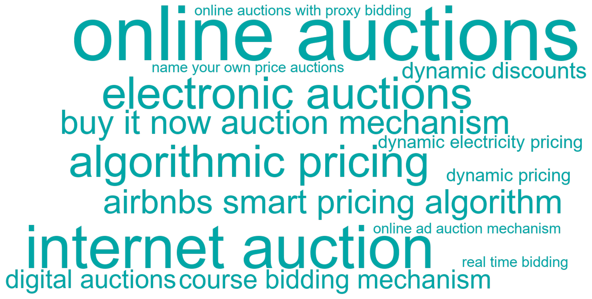
C.5.3 Articles
| Year | Full citation | Technology / technologies | Abstract |
|---|---|---|---|
| 2025 | Vomberg A, Homburg C, Sarantopoulos P. Algorithmic pricing: Effects on consumer trust and price search. International Journal Of Research In Marketing. 2025;67:1166-1186. doi:10.1016/j.ijresmar.2024.10.006 | algorithmic pricing | With the widespread use of pricing algorithms in online markets, prices are increasingly fluctuating, contradicting consumers' desire for price stability. This research examines the central form of algorithmic pricing in online markets-namely, algorithmic dynamic pricing (ADP). In five studies, including one real-world ADP encounter and four incentive-based experimental studies (in addition to two Web Appendix studies), we use price fairness and range-frequency theory to examine how ADP affects consumers' trust in ADP retailers and the extent of their price search. The findings reveal that ADP reduces trust in the ADP retailer, though this effect diminishes after consumers become accustomed to ADP. Furthermore, ADP prolongs price search duration, which lengthens with consumer ADP experience and shortens as ADP becomes the market norm. These findings suggest that retailers can implement ADP, as consumer backlash can be short-term. ADP retailers can also actively build consumers' trust and affect their search for prices through price-matching strategies. In particular, retailers can communicate their use of reactive ADP (i.e., ADP aligned with competitive prices) and offer price-matching guarantees. (c) 2024 The Authors. Published by Elsevier B.V. This is an open access article under th e CC BY license (http://creativecommons.org/licenses/by/4.0/). |
| 2025 | Spann Met al.. Algorithmic pricing: Implications for marketing strategy and regulation. International Journal Of Research In Marketing. 2025;:. doi:10.1016/j.ijresmar.2025.05.001 | algorithmic pricing | Over the past decade, a growing number of firms have delegated pricing decisions to algorithms in consumer and business markets such as travel, entertainment, and retail, as well as in platform markets such as ride-sharing. We define algorithmic pricing as “the use of programs to automate the setting of prices.” Firms adopt algorithmic pricing to optimize their prices in response to changing market conditions and to leverage the efficiency gains from automation. Advances in information technology and the increased availability of digital data have further facilitated the use of algorithm-driven pricing strategies. Yet adopting algorithmic pricing is not merely a technical upgrade—it is a strategic decision that must align with a company's existing and future marketing strategies. Moreover, algorithmic pricing can raise various regulatory concerns regarding potential threats to competition and the legality of price discrimination. This paper discusses the implementation of algorithmic pricing in the context of firms’ marketing strategies and regulatory frameworks, while outlining an agenda for future research in this increasingly important area. © 2025 The Author(s) |
| 2024 | Kopalle P, Burkhardt J, Gillingham K, Grewal L, Ordabayeva N. Delivering affordable clean energy to consumers. Journal Of The Academy Of Marketing Science. 2024;67:1452-1474. doi:10.1007/s11747-024-01003-2 | dynamic electricity pricing | We develop a marketing-centric framework for delivering affordable, clean energy to consumers by leveraging the marketing 4 Ps to encourage a bi-directional flow of information between firms and consumers. Using a multimethod approach that covers a consumer survey, field experiment, and a decarbonization simulation to test the various aspects of the framework, our findings point to the need for a ``system-wide'' solution. Specifically, we examine consumer responsiveness to multiple levers within the 4 Ps, showcase the real effects of a combination of an automated solution and dynamic electricity pricing on behavior, and examine the role of dynamic prices and automation in transitioning to 100\% clean electricity. We argue that there are ways to achieve affordable, 100\% clean energy that many consumers will adopt. We conclude with a set of research questions examining additional aspects of the 4 Ps that can be leveraged to facilitate the wide-spread adoption of clean energy solutions. |
| 2024 | Hansen K, Misra K, Sanders R. Uninformed Choices in Perishables. Marketing Science. 2024;55:751-777. doi:10.1287/mksc.2021.0264 | dynamic discounts, dynamic pricing | We study how consumers choose among perishable items with different expiration dates and the effects of these choices on retail food waste. We use a novel data set that tracks choices at the expiration-date level. Our data include a field experiment with dynamic discounts for oldest-vintage items and retailer-driven shelf rotations. We develop a theoretical framework with consumers who may be uninformed due to choice frictions (costly search) or mental gaps (ignoring expiration dates), and we derive testable predictions related to consumer information, dynamic pricing, and shelf organization. Our empirical analyses lead to four main findings. First, consumers make uninformed choices: In almost half of purchases, consumers choose an older item when an equally priced, fresher one is available, and simply rotating the oldest vintage forward increases its choice share by 24 percentage points. Second, both mental gaps and choice frictions cause consumers to make uninformed choices. Third, dynamic discounts encourage consumers to purchase the oldest vintage by discouraging search for fresher items. By discouraging search, discounts have an unexpected spillover effect of keeping the shelf organized after shelf rotations, which affects future consumers' choices. Fourth, we quantify the waste implications of this spillover using counterfactual simulations. Dynamic pricing and shelf rotation alone reduce waste by 6\% and 15\%, respectively, but combined, these policies reduce waste 30\%-much more than the sum of their individual effects. Our findings suggest that relatively simple changes in pricing and display strategies can substantially reduce waste in perishables. |
| 2021 | Zhang S, Mehta N, Singh P, Srinivasan , Kannan K. Frontiers: Can an Artificial Intelligence Algorithm Mitigate Racial Economic Inequality? An Analysis in the Context of Airbnb. Marketing Science. 2021;18:813-820. doi:10.1287/mksc.2021.1295 | airbnbs smart pricing algorithm | We study the effect of Airbnb's smart-pricing algorithm on the racial disparity in the daily revenue earned by Airbnb hosts. Our empirical strategy exploits Airbnb's introduction of the algorithm and its voluntary adoption by hosts as a quasinatural experiment. Among those who adopted the algorithm, the average nightly rate decreased by 5.7\%, but average daily revenue increased by 8.6\%. Before Airbnb introduced the algorithm, White hosts earned \$12.16 more in daily revenue than Black hosts, controlling for observed characteristics of the hosts, properties, and locations. Conditional on its adoption, the revenue gap between White and Black hosts decreased by 71.3\%. However, Black hosts were significantly less likely than White hosts to adopt the algorithm, so at the population level, the revenue gap increased after the introduction of the algorithm. We show that the algorithm's price recommendations are not affected by the host's race-but we argue that the algorithm's race blindness may lead to pricing that is suboptimal and more so for Black hosts than for White hosts. We also show that the algorithm's effectiveness at mitigating the Airbnb revenue gap is limited by the low rate of algorithm adoption among Black hosts. We offer recommendations with which policy makers and Airbnb may advance smart-pricing algorithms in mitigating racial economic disparities. |
| 2021 | Coey D, Larsen B, Sweeney K, Waisman C. Scalable Optimal Online Auctions. Marketing Science. 2021;71:593-618. doi:10.1287/mksc.2021.1283 | online auctions | This paper studies reserve prices computed to maximize the expected profit of the seller based on historical observations of the top two bids from online auctions in an asymmetric, correlated private values environment. This direct approach to computing reserve prices circumvents the need to fully recover distributions of bidder valuations. We specify precise conditions under which this approach is valid and derive asymptotic properties of the estimators. We demonstrate in Monte Carlo simulations that directly estimating reserve prices is faster and, outside of independent private values settings, more accurate than fully estimating the distribution of valuations. We apply the approach to e-commerce auction data for used smartphones from eBay, where we examine empirically the benefit of the optimal reserve and the size of the data set required in practice to achieve that benefit. This simple approach to estimating reserves may be particularly useful for auction design in Big Data settings, where traditional empirical auctions methods may be costly to implement, whereas the approach we discuss is immediately scalable. |
| 2018 | Sayedi A. Real-Time Bidding n Online Display Advertising. Marketing Science. 2018;53:553-568. doi:10.1287/mksc.2017.1083 | real time bidding | Display advertising is a major source of revenue for many online publishers and content providers. Historically, display advertising impressions have been sold through prenegotiated contracts, known as reservation contracts, between publishers and advertisers. In recent years, a growing number of impressions are being sold in real-time bidding (RTB), where advertisers bid for impressions in real time, as consumers visit publishers' websites. RTB allows advertisers to target consumers at an individual level using browser cookie information, and enables them to customize their ads for each individual. The rapid growth of RTB has created new challenges for advertisers and publishers on how much budget and ad inventory to allocate to RTB. In this paper, we use a game theory model with two advertisers and a publisher to study the effects of RTB on advertisers' and publishers' strategies and their profits. We show that symmetric advertisers use asymmetric strategies where one advertiser buys all of his impressions in RTB, whereas the other advertiser focuses on reservation contracts. Interestingly, we find that while both advertisers benefit from the existence of RTB, the advertiser that focuses on reservation contracts benefits more than the advertiser that focuses on RTB. We show that while RTB lowers the equilibrium price of impressions in reservation contracts, it increases the publisher's total revenue. Despite many analysts' belief that, because of being more efficient, RTB will replace reservation contracts in the future, we show that publishers have to sell a sufficiently large fraction of their impressions in reservation contracts to maximize their revenue. We extend our model to consider premium consumers, publisher's uncertainty about the number of future visitors, and effectiveness of ad customization. |
| 2017 | Stourm V, Bax E. Incorporating hidden costs of annoying ads in display auctions. International Journal Of Research In Marketing. 2017;20:622-640. doi:10.1016/j.ijresmar.2017.02.002 | online ad auction mechanism | Media publisher platforms often face an effectiveness-nuisance tradeoff: more annoying ads can be more effective for some advertisers because of their ability to attract attention, but after attracting viewers' attention, their nuisance to viewers can decrease engagement with the platform over time. With the rise of mobile technology and ad blockers, many platforms are becoming increasingly concerned about how to improve monetization through digital ads while improving viewer experience. We study an online ad auction mechanism that incorporates a charge for ad impact on user experience as a criterion for ad selection and pricing. Like a Pigovian tax, the charge causes advertisers to internalize the hidden cost of foregone future platform revenue due to ad impact on user experience. Over time, the mechanism provides an incentive for advertisers to develop ads that are effective while offering viewers a more pleasant experience. We show that adopting the mechanism can simultaneously benefit the publisher, advertisers, and viewers, even in the short term. Incorporating a charge for ad impact can increase expected advertiser profits if enough advertisers compete. A stronger effectiveness-nuisance tradeoff, meaning that ad effectiveness is more strongly associated with negative impact on user experience, increases the amount of competition required for the mechanism to benefit advertisers. The findings suggest that the mechanism can benefit the marketplace for ad slots that consistently attract many advertisers. (C) 2017 Elsevier B.V. All rights reserved. |
| 2016 | Feng C, Fay S, Sivakumar K. Overbidding in electronic auctions: factors influencing the propensity to overbid and the magnitude of overbidding. Journal Of The Academy Of Marketing Science. 2016;88:241-260. doi:10.1007/s11747-015-0450-9 | electronic auctions | This research investigates the buyer and seller characteristics that impact overbidding in electronic auctions. Specifically, the empirical analysis shows that customers with more total experience are less likely to overbid and that overbidding is less frequent for auction items with higher face values. When bidder experience pertains to the same product category, the frequency and magnitude of overbids are further reduced. This research also finds that consumers are more likely to overbid as the bidding environment becomes more competitive. Furthermore, auction item attributes, such as starting price, day/time of the auction, and shipping fees, are shown to impact the propensity to overbid and the magnitude of overbidding. The empirical results have important implications for understanding bidder behavior and for assisting online sellers in formulating more profitable selling strategies. |
| 2016 | Ducarroz C, Yang S, Greenleaf E. Understanding the Impact of In-Process Promotional Messages: An Application to Online Auctions. Journal Of Marketing. 2016;51:80-100. doi:10.1509/jm.13.0190 | online auctions | In-process promotions focus on promotional activities during marketing events such as auctions, crowdfunding, or fund-raising. Firms can observe consumers' responses to these promotions and use this information to adjust future promotions sent during the same events. The authors study the impact of promotions on market outcomes and focus on one use of such promotions: messages sent during online auctions, in which the outcome is the final auction price. They propose that the effect of these messages can be understood by observing their aggregate impact on final auction prices and by examining how messages affect behaviors at the bid level, namely, new-bidder entry and jump bidding. These bid-level behaviors can, when summed at the auction level, affect auction prices. Besides examining the messages' impact on bidder behavior, the authors study the auctioneer's strategy in issuing these messages. They distinguish between informative messages, which focus on product attributes, and persuasive messages, which try to motivate the message recipients to bid. They test hypotheses derived from their framework using data from online auctions of Air France airline tickets. The authors also conduct ``what-if'' simulations to help auctioneers identify the optimal number of messages to send during an auction. |
| 2010 | Srinivasan K, Wang X. Bidders' Experience and Learning in Online Auctions: Issues and Implications. Marketing Science. 2010;13:988-993. doi:10.1287/mksc.1100.0581 | online auctions | This study explores the implications of rejecting the sealed-bid abstraction proposed by Zeithammer and Adams [Zeithammer, R., C. Adams. 2010. The sealed-bid abstraction in online auctions. Marketing Sci. 29(6) 964-987]. Using a conditional order statistic model that relies on the joint distribution of the top two proxy bids of an auction, Zeithammer and Adams show that inexperienced bidders' reactive bidding is the main cause of the rejection of the sealed-bid abstraction. Their empirical study suggests that a large percentage of bidders reactively bid, and there is weak evolutionary pressure for bidders to converge to sealed bidding. We discuss theoretical implications of this rejection and the role of bidder experience, as well as inferences about bidder learning. Tracking an inexperienced bidder's bidding behavior over time, we show that bidders learn and their bidding strategy gravitates toward rational bidding. Potential biases in bidder experience measurement and bidder learning can be assessed using a cross-sectional, time-series data set that tracks a random sample of new eBay bidders. Learning speed is faster with their complete bidding history rather than feedback ratings or winning observations only. We highlight the importance of proper measures of bidder experience and its effect on bidding strategy evolutions, both of which play important roles in clarifying bidding behavior in online auctions. |
| 2010 | Hortacsu A, Nielsen E. Do Bids Equal Values on eBay?. Marketing Science. 2010;5:994-997. doi:10.1287/mksc.1100.0593 | online auctions | We argue that the Zeithammer and Adams paper [Zeithammer, R., C. Adams. 2010. The sealed-bid abstraction in online auctions. Marketing Sci. 29(6) 964-987] successfully documents consistent patterns in eBay bidding data that cast doubt on the common assumption that bidders in such auctions follow a ``bid = value'' strategy. These anomalies lend support to the authors' alternative model in which some bidders bid reactively and consequently bid below their valuation most of the time. The consistency of the authors' findings as well as the ability of their alternative explanation to account for all of their test results lends great support to their thesis. However, we think that several of their empirical tests examine ancillary assumptions about bidder behavior and do not test the bid = value assumption directly. Furthermore, although their reduced-form model incorporating ``reactive'' bidders is a good first attempt at expanding the canonical framework, we worry that their counterfactual pricing analysis using the reactive model is suspect because the parameters they estimate are not structural. Overall, the Zeithammer and Adams paper is a carefully argued critique of empirical methods used to study online auctions and provides valuable ideas to improve on these methods. |
| 2010 | Haruvy E, Leszczyc P. Search and Choice in Online Consumer Auctions. Marketing Science. 2010;32:1152-1164. doi:10.1287/mksc.1100.0601 | online auctions | Price dispersion in simultaneous online auctions is a puzzle in light of the relatively low search costs required to find the lower price. Much of this price dispersion appears to be due to a lack of switching by bidders between auctions, which in turn could be due to inertia related to search costs. We identify some of the influencing factors through a controlled field experiment involving pairs of simultaneous auctions. Keeping the sellers and the goods sold identical between two auctions, we vary auction design features between and within pairs including shipping cost, open reserve, secret reserve price, and duration, and we provide bidders with incentives to search. We use a choice model that examines individual choice between pairs of simultaneous auctions. We find that within-pair price dispersion is substantial and that prices and auction choice by bidders are indeed related to search costs. We find strong inertia in auction choice and find that this effect significantly interacts with time left in the auction. Although individuals do not always choose a lower-priced auction, they are more likely to do so when search costs are low or search incentives are high. |
| 2010 | Zeithammer R, Adams C. The Sealed-Bid Abstraction in Online Auctions. Marketing Science. 2010;30:964-987. doi:10.1287/mksc.1100.0561 | online auctions with proxy bidding | This paper presents five empirical tests of the popular modeling abstraction that assumes bids from online auctions with proxy bidding can be analyzed ``as if'' they were bids from a second-price sealed-bid auction. The tests rely on observations of the magnitudes and timings of the top two proxy bids, with the different tests stemming from different regularity assumptions about the underlying distribution of valuation signals. We apply the tests to data from three eBay markets-MP3 players, DVDs, and used cars-and we reject the sealed-bid abstraction in all three data sets. A closer examination of these rejections suggests that they are driven by less experienced bidders. This consistent rejection casts doubt on several existing theories of online auction behavior and suggests some demand estimates based on the abstraction can be biased. To assess the direction and magnitude of this bias, we propose and estimate a new model in which some bidders conform to the abstraction while other bidders bid in a reactive fashion. Because reactive bidding can be at least partially detected from the data, we are able to estimate the underlying distribution of demand and compare it to what the sealed-bid abstraction implies. We find that our proposed model fits the data better, and our demand estimates reveal a large potential downward bias were we to assume the second-price sealed-bid model instead. |
| 2009 | Li S, Srinivasan K, Sun B. Internet Auction Features as Quality Signals. Journal Of Marketing. 2009;70:75-92. doi:10.1509/jmkg.73.1.75 | internet auction | Internet auction companies have developed innovative tools that enable sellers to reveal more information about their credibility and product quality to avoid the ``lemons'' problem. On the basis of signaling and auction theories, the authors propose a typology of Internet auction quality and credibility indicators, adopt and modify Park and Bradlow's (2005) model, and use eBay as an example to examine empirically how different types of indicators help alleviate uncertainty. This empirical evidence demonstrates how Internet auction features affect consumer participation and bidding decisions, what modifies the credibility of quality indicators, and how different buyers react to indicators. The signaling-based hypotheses provide coherent explanations of consumers' bidding behavior. As the first empirical study to evaluate the signaling role of comprehensive Internet auction institutional features in mitigating the adverse selection problem, this research provides evidence to clarify the economic foundation behind innovative Internet auction designs. |
| 2008 | Krishna A, Unver M. Improving the efficiency of course bidding at business schools:: Field and laboratory studies. Marketing Science. 2008;27:262-282. doi:10.1287/mksc.1070.0297 | course bidding mechanism | Registrars' offices at most universities face the daunting task of allocating course seats to students. Because demand exceeds supply for many courses, course allocation needs to be done equitably and efficiently. Many schools use bidding systems in which student bids are used both to infer preferences over courses and to determine student priorities for courses. However, this dual role of bids can result in course allocations not being market outcomes, and in unnecessary efficiency loss, which can potentially be avoided with the use of an appropriate market mechanism. We report the result of field and laboratory studies that compare a typical course-bidding mechanism with the alternate Gale-Shapley Pareto-dominant market mechanism. Results from the field study (conducted at the Ross School of Business, University of Michigan) suggest that using the latter could vastly improve efficiency of course allocation systems while facilitating market outcomes. Laboratory experiments with greater design control confirm the superior efficiency of the Gale-Shapley mechanism. The paper tests theory that has important practical implications because it has the potential to affect the learning experience of very large numbers of students enrolled in educational institutions. |
| 2008 | Yao S, Mela C. Online Auction Demand. Marketing Science. 2008;38:861-885. doi:10.1287/mksc.1070.0351 | electronic auctions | With \$40 billion in annual gross merchandise volume, electronic auctions comprise a substantial and growing sector of the retail economy. Using unique data on Celtic coins, we estimate a structural model of buyer and seller behavior via Markov chain Monte Carlo ( MCMC) with data augmentation. Results indicate that buyer valuations are affected by item, seller, and auction characteristics; buyer costs are affected by bidding behavior; and seller costs are affected by item characteristics and the number of listings. The model enables us to compute fee elasticities even though there is no variation in fees in our data. We find that commission elasticities exceed per item fee elasticities because they target high-value sellers and enhance their likelihood of listing. By targeting commission reductions to high-value sellers, auction house revenues can be increased by 3.9\%. Computing customer value, we find that attrition of the largest seller would decrease fees paid to the auction house by \$ 97. Given the seller paid \$ 127 in fees, competitive effects offset only 24\% of those fees. In contrast, competition offsets 81\% of the buyer attrition effect. In both events, the auction house would overvalue its customers by neglecting competitive effects. |
| 2007 | Bradlow E, Park Y. Bayesian estimation of bid sequences in Internet auctions using a generalized record-breaking model. Marketing Science. 2007;32:218-229. doi:10.1287/mksc.1060.0225 | internet auction | A sequence of bids in Internet auctions can be viewed as record-breaking events in which only those data points that break the current record are observed. We investigate stochastic versions of the classical record-breaking problem for which we apply Bayesian estimation to predict observed bids and bid times in Internet auctions. Our approach to addressing this type of data is through data augmentation in which we assume that participants (bidders) have dynamically changing valuations for the auctioned item, but the latent number of bidders ``competing'' in those events is unseen. We use data from notebook auctions provided by one of the largest Internet auction sites in Korea. We find significant variation in the number of latent bidders across auctions. Our other primary findings are as follows: (1) the latent bidders are significant in number relative to observed bidders, (2) the latent number of remaining bidders is considerably smaller than that of new entrants to the auction after a given bid, and (3) larger bid and time increments significantly influence the bidding participation behavior of the remaining bidders. As part of our substantive contribution, we highlight the model's ability to understand brand equity in an Internet auction context through a brand's ability to simultaneously bring in bidders, higher bid amounts, and faster bidding. |
| 2007 | Chan T, Kadiyali V, Park Y. Willingness to pay and competition in online auctions. Journal Of Marketing Research. 2007;24:324-333. doi:10.1509/jmkr.44.2.324 | buy it now auction mechanism, online auctions | The authors model how to measure consumer willingness to pay (WTP) using an English, or ascending first-price, auction based on two general bidding premises: No bidder bids more than his or her WTP, and no bidder allows a rival bidder to win at a price that he or she is willing to beat. In other words, the authors propose a `' no-regret `' rule in bidding. They impose no other restrictive assumptions on `' maximands `' or the bidders' behaviors in a competitive auction context. The authors model WTP as having two components: a pure product feature component and one based on the auction market environment. The latter includes bidder experience, seller reputation, and measures for competition among bidders and items. The proposed model is general enough to include a `' buy-it-now `' (equivalent to a posted price) auction mechanism. The authors use data on notebook auctions from one of the largest Internet auction sites in Korea. They find that most product characteristics matter in the expected ways. There are two additional primary findings: First, WTP declines as more similar items are concurrently listed with the focal item; there is an additional effect if these similar items also belong to the same brand. Therefore, market thickness matters for consumer WTR Second, more extensive site surfing and bidding histories lead to lower WTP, implying that search costs and experience matter in bidding. As specific substantive benefits, the authors demonstrate how sellers can calculate changes in WTP and, thus, the expected revenue as the number of concurrently available similar items varies. |
| 2006 | Spann M, Tellis G. Does the Internet promote better consumer decisions? The case of name-your-own-price auctions. Journal Of Marketing. 2006;26:65-78. doi:10.1509/jmkg.2006.70.1.65 | name your own price auctions | The Internet has enabled consumers to make more informed decisions more conveniently with apparently more efficient price-clearing mechanisms than was available before its advent. One such mechanism is the name-your-own-price auction. The authors study the extent to which decisions made in such an auction are rational in relation to an economic model. The results from two independent markets show that a large number of consumers do not exhibit rational decision making. |
| 2005 | Park Y, Bradlow E. An integrated model for bidding Behavior in Internet auctions: Whether, who, when, and how much. Journal Of Marketing Research. 2005;29:470-482. doi:10.1509/jmkr.2005.42.4.470 | internet auction | The authors develop a general parametric modeling framework for bidding behavior in Internet auctions. Toward this end, they incorporate four key components of the bidding process under their framework: whether people bid on an auction, (if so) who bids, when they bid, and how much they bid over the entire sequence of bids in an auction. This integrated framework is based on a single, latent, time-varying construct of consumer willingness to bid, which bidders have and update for a particular auction item over the course of the auction duration. Using a database of notebook auctions from one of the largest Internet auction sites in Korea, the authors demonstrate that this general (yet parsimonious) model captures the key behavioral aspects of bidding behavior. Furthermore, the authors provide a valuable tool for managers at auction sites to conduct their customer relationship management efforts, which require them to evaluate the ``goodness'' of the listed auction items (whether people bid) and the goodness of the potential bidders (who bids, when they bid, and how much they bid). |
| 2004 | Kamins M, Drèze X, Folkes V. Effects of seller-supplied prices on buyers' product evaluations:: Reference prices in an Internet auction context. Journal Of Consumer Research. 2004;16:622-628. doi:10.1086/380294 | internet auction | A field experiment investigated the impact of two external reference points under the seller's control on the final price of an auction. When an item's seller specified a high external reference price ( a reserve price), the final bid was greater than when the seller specified a low external reference price ( a minimum bid). When the seller provided both high and low reference prices, the reserve influenced the final bid more. The low reference price led to a lower outcome compared to when the seller did not communicate any reference price. The number of bidders influenced outcomes in the absence of seller-supplied reference prices. |
| 2003 | Ariely D, Simonson I. Buying, bidding, playing, or competing? Value assessment and decision dynamics in online auctions. Journal Of Consumer Psychology. 2003;36:113-123. doi:10.1207/S15327663JCP13-1\&2\_10 | online auctions | We propose an analytical framework for studying bidding behavior in online auctions. The framework focuses on three key dimensions: the multi-stage process, the types of value-signals employed at each phase, and the dynamics of bidding behavior whereby early choices impact subsequent bidding decisions. We outline a series of propositions relating to the auction entry decision, bidding decisions during the auction, and bidding behavior at the end of an auction. In addition, we present the results of three preliminary field studies that investigate factors that influence consumers' value assessments and bidding decisions. In particular, (a) due to a focus on the narrow auction context, consumers under-search and, consequently, overpay for widely available commodities (CDs, DVDs) and (b) higher auction starting prices tend to lead to higher winning bids, particularly when comparable items are not available in the immediate context. We discuss the implications of this research with respect to our understanding of the key determinants of consumer behavior in this increasingly important arena of purchase decisions. |
| 2002 | Dholakia U, Basuroy S, Soltysinski K. Auction or agent (or both)? A study of moderators of the herding bias in digital auctions. International Journal Of Research In Marketing. 2002;39:115-130. doi:10.1016/S0167-8116(02)00064-2 | digital auctions | Recent research has shown that buyers in digital auctions are susceptible to the herding bias-gravitation toward listings with existing bids and inconsideration of listings without any bids, manifested in categories of listings that are either coveted or entirely overlooked by buyers. This article investigates two specific types of moderators of herding bias: auction attributes (volume of listing activity, and posting of reservation price) and agent characteristics (seller and bidder experience), and increases our understanding of mechanisms underlying this bias. Practical implications for participants and organizers of digital auctions are discussed, and promising future research opportunities are highlighted. (C) 2002 Elsevier Science B.V. All rights reserved. |
C.6 Cluster 4: Computers & Software
C.6.1 Summary
| Canonical technologies | Articles | Earliest article | Most recent article |
|---|---|---|---|
| 93 | 121 | 2000 | 2026 |
C.6.2 Technology word cloud
C.6.3 Articles
| Year | Full citation | Technology / technologies | Abstract |
|---|---|---|---|
| 2026 | Hu Y, Ding Y. AI appreciation effect: how contagious diseases influence medical AI adoption. International Journal Of Research In Marketing. 2026;:. doi:10.1016/j.ijresmar.2026.03.001 | healthcare technology | Despite the promising potential of AI to revolutionize healthcare, patients’ aversion to AI remains widespread. This research explores how experiencing contagious diseases, a major challenge for public health, affects patient preferences for medical care providers. Across five studies ( N = 4,470, with a combination of one large-scale field survey and four randomized behavioral experiments), we provide converging evidence that individuals experiencing contagious (vs. noncontagious) diseases exhibit a significant preference for AI-based diagnostic and therapeutic interventions over human physicians. This AI appreciation effect is driven by anticipated interpersonal stigma (Study 2). However, it weakens when patients perceive low physician occupational exposure risk, which reduces anticipated interpersonal stigma (Study 3), and when they perceive algorithmic bias, which undermines trust in AI (Study 4). This research contributes to the literatures on AI appreciation and AI ethics and offers actionable insights for healthcare technology marketers and public health organizations by identifying disease type as a motivational driver of medical AI adoption and by demonstrating how institutional communications about physician safety and algorithmic bias can modulate this preference. © 2026 Elsevier B.V. |
| 2026 | Wang Q, Huang Y, Singh P. Algorithmic Lending, Competition, and Strategic Provision of Preapproval Tools. Marketing Science. 2026;28:. doi:10.1287/mksc.2023.0164 | preapproval tools | Machine learning algorithms are increasingly used to evaluate borrower creditworthiness in financial lending, yet many lenders do not provide preapproval tools that could significantly benefit consumers. These tools are essential for reducing consumer uncertainty and improving financial decision making. This paper examines why symmetric lenders, with equal nonprice features and algorithmic accuracy, might asymmetrically reveal preapproval outcomes. Using a multistage game theory model, we analyze the strategic decisions of duopoly lenders in offering preapproval tools for unsecured financial products. Our findings suggest that high algorithm accuracy can sustain an asymmetric revelation equilibrium, with one lender revealing preapproval outcomes through preapproval tools whereas the other does not, even when there is no explicit cost of providing such preapproval tools. Conversely, low algorithm accuracy prompts both lenders to reveal preapproval outcomes. These findings diverge from traditional literature, which typically associates asymmetric revelation with differentiated products or revealing cost. Additionally, our results show that mandatory revelation policies could reduce lenders' incentives to improve algorithmic accuracy, potentially harming social welfare. These insights inform managerial strategies on the use of algorithmic transparency in lending and underscore the need for careful consideration of regulatory policies to balance market efficiency and consumer protection. |
| 2026 | Brecko K, Hartmann W. Marketing and Economics of Harm Reduction: Evidence from Conservation Field Experiments. Journal Of Marketing Research. 2026;49:340-363. doi:10.1177/00222437251364729 | smart irrigation controller | This article extends the canonical harm reduction approach to a wider set of applications, including conservation. The authors develop an economic model to illustrate the trade-offs inherent to harm reduction, weighing the benefits of reducing harm against the risk of drawing those previously abstaining into consumption, and identify contexts where harm reduction is not applicable. Using sequential campaigns with embedded experimentation that enables measurement, the authors market a harm reduction solution in the context of water conservation. They show that a smart irrigation controller that efficiently maintains stigmatized ornamental landscapes appeals to the heaviest irrigators and generates large and long-lasting individual and social benefits: cost recovery in six months and water savings covering another household's basic needs. The findings show no evidence that the controller cannibalizes abstinence (lawn removal) or increases irrigation by conservation-prone individuals. The conceptual and measurement framework provides a foundation for implementing and evaluating harm reduction well beyond the typical drug and public health contexts. |
| 2026 | Fürst A, Friedrich R, Prigge J, Moosbrugger E. Monetization of internet-of-things systems: how interoperability and safeguarding drive customer acquisition, retention, and expansion. International Journal Of Research In Marketing. 2026;:. doi:10.1016/j.ijresmar.2025.11.002 | internet of things systems | Companies increasingly offer a wide array of Internet-of-Things (IoT) systems, yet many still struggle to monetize them as consumers continue to question their value. This article presents an exploratory empirical investigation of two understudied categories of IoT-specific value drivers: IoT system interoperability—the system’s capability to enable devices, users, and providers to work together—and IoT system safeguarding—the system’s capability for security and privacy protection. The findings reveal that the effect sizes of these value drivers vary both within and across key phases of customer relationship management. For example, in general, device interoperability exerts the strongest influence in acquisition (willingness to buy and pay) and expansion (willingness to cross-buy), whereas user interoperability does so in retention (willingness to further use). Moreover, the effect sizes of value drivers in one category depend on the levels of the value drivers in the other and differ across consumers. Based on these findings, the article identifies three promising IoT system variants for monetization that differ in their configuration of interoperability and safeguarding: a top-tier system for short-term direct monetization through initial sales, a bare-bones system for long-term direct monetization through subsequent extensions, and an engagement-oriented system for indirect monetization through leveraging user data. © 2025 The Author(s). |
| 2026 | Hamby A, Mcferran B, Fuller C. The Power of Proximity: Exploring Narrative Language in Consumer Reviews. Journal Of Marketing. 2026;63:157-176. doi:10.1177/00222429251336706 | pc | Marketers know the importance of online reviews, but what can be done to improve the prompts asking consumers to review? Across eight studies, the present work shows that a prompt that encourages writing reviews for a close audience enhances consumers' use of narrative language. A growing body of literature reveals that narratives are powerful persuasive devices for shaping audiences' beliefs, including when reading online reviews. However, little is known about what aspects shape the communicator's use of narrative language in the first place. A prompt that encourages writers to imagine as though they were writing for a close audience increases narrativity, an effect mediated by consumers' tendency to write in a natural, less effortful style when writing for a close (vs. distant) audience. The effect is attenuated when people write about material (vs. experiential) purchases, and when people write on a smartphone (vs. PC). Consumers find writing for close others to be at least as enjoyable as several other prompts, but with improved outcomes for firms. As most review sites provide limited guidance on how to write, this research offers an inexpensive and scalable intervention to improve reviews and the review writing experience. |
| 2025 | Kaliyamurthy A, Schau H. How Algorithms Constrain Consumer Experience. Journal Of Consumer Research. 2025;93:826-847. doi:10.1093/jcr/ucaf016 | information technologies | Prior literature is yet to explain how algorithms systematically constrain consumer experience (CX). To address this issue, we conducted a multi-method ethnographic study of consumers using fitness tracking software. We draw on the information science literature to demonstrate that the constitutive properties of information technology (IT) that underlie algorithms result in a set of restrictive fundamental interactional mechanisms imposed through algorithmic logics of legibility (what is selectively registered as input), visibility (what is selectively represented in output), and legitimacy (normative commitments embedded in input and output choices). We find that these mechanisms systematically constrain the distinct dimensions of the CX construct by eliciting consumption work. Consumers perform cognitive work to think through algorithmic limitations, practical work to accommodate those limitations, relational work to clarify algorithmic misrepresentation, and affective work to deal with algorithmic delegitimization. We make two contributions. First, our emergent framework not only demonstrates how algorithms systematically constrain CX, but is also more broadly relevant to consumer research because it enables accounting for the agency of IT. Second, we provide a corrective to the passive, emotion focused, view of CX by demonstrating how the consumption work of accommodating algorithmic limitations constrains the distinct dimensions of the CX construct. |
| 2025 | Bernritter S, Danatzis I, Moller-Herm J, Sotgiu F. Navigating toxic playgrounds: Managing reputational and financial brand safety in multiplayer video games. International Journal Of Research In Marketing. 2025;88:936-956. doi:10.1016/j.ijresmar.2025.01.002 | branded skins, product placement | Brands are increasingly leveraging video games to connect with consumers through advertising activities such as virtual in-game ads, product placement, and branded skins. However, the prevalence of toxic player behavior in multiplayer video games poses significant challenges for brands, as many are hesitant to establish a presence in this space due to growing concerns over brand safety. Despite efforts by game providers to combat toxicity, empirical evidence of the impact of toxicity on brands remains scarce. This study investigates whether and why toxic player behavior poses a brand safety risk for brands that advertise in video games and how game providers can mitigate these risks. We introduce a two-dimensional brand safety framework that disentangles brand safety into a reputational and financial performance component and conduct six experiments that show that toxic player behavior produces negative spillover effects on advertising brands. Contrary to popular belief, we show that toxicity does not harm a brand's reputation or directly impact financial brand outcomes. Instead, toxic player behavior indirectly affects financial brand outcomes. Specifically, toxicity leads players to blame toxic players more, reducing game enjoyment and thereby diminishing financial brand outcomes within the game. We also find negative effects on financial brand outcomes outside the game. Our findings further reveal that active game moderation and kicking toxic players out of the game effectively mitigate these spillover effects. These results provide valuable insights for brands seeking to navigate the rapidly evolving video game landscape safely. (c) 2025 The Author(s). Published by Elsevier B.V. This is an open access article under the CC BY-NC license (http://creativecommons.org/licenses/by-nc/4.0/). |
| 2024 | Zimmermann L, Somasundaram J, Saha B. Adoption of New Technology Vaccines. Journal Of Marketing. 2024;85:1-21. doi:10.1177/00222429231220295 | mrna technology | Extensive research has examined the diffusion of innovations for products that can be trialed, and where the most adverse outcome, if a product fails, is a financial loss. However, less research has explored consumer responses to innovations in highly uncertain contexts characterized by health losses, lack of trialability, and the opportunity to free ride on other's adoption. This research focuses on vaccine decision making as a unique case within such contexts and extends the findings to other domains. Four studies (Ntotal = 1,796; five supplementary studies, Ntotal = 643) test the propositions of a formal model that incorporates uncertainty and others' choices into the adoption decision. The results show that consumers are surprisingly averse to products that are described as employing a new technology (e.g., mRNA technology) and require an ``efficacy premium'' to compensate for higher perceived uncertainty. However, considerable heterogeneity exists due to individual differences in technology readiness, trust in government, and risk attitudes. Notably, despite the prominent threat of free riding, a social proof nudge (communicating increasing population adoption) effectively reduces aversion to new technology. In this context, social proof information does not merely drive conformity or social learning, but instead increases adoption of new technology by alleviating perceived uncertainty. |
| 2024 | Mangus S, Shi H, Folse J, Jones E, Sridhar S. Communicating with B2B buyers after ``Dropping the Ball'': Using digital and non-digital communication formats to recover from salesperson transgressions. International Journal Of Research In Marketing. 2024;76:194-219. doi:10.1016/j.ijresmar.2024.01.005 | digital communication options | Salespeople are inundated with new sales enablement tools and digital communication options daily, creating new ways to communicate with customers and navigate the inevitable case of ``dropping the ball.'' This research investigates how different communication formats cushion the blow and minimize damage from salesperson transgressions. Study 1 utilizes firm -provided communication and performance data paired with survey data from business -to -business (B2B) customers to find that the use of synchronous communication (face-to-face (F2F) in contrast to email) mitigates the negative impact of relational transgression but has no such effect on the impact of sales process transgression. Study 2 utilizes an experiment with B2B professionals to identify that synchronous communication (videoconferencing and F2F in contrast to email) improves relationship satisfaction and customer positive word of mouth (PWOM) more for relational than sales process transgressions. Study 3 extends these findings with an experiment exploring additional communication formats (phone and text) while exploring perceived salesperson competence and warmth as mediating mechanisms in the model. Taken together, F2F or synchronous communications should not be viewed as the unilaterally preferred communication format during transgressions, and salespeople should balance communication needs with resource constraints. (c) 2024 Elsevier B.V. All rights reserved. |
| 2024 | Sohn S, Schnittka O, Seegebarth B. Consumer responses to firm-owned devices in self-service technologies: Insights from a data privacy perspective. International Journal Of Research In Marketing. 2024;92:77-92. doi:10.1016/j.ijresmar.2023.08.003 | self service technology | While self-service technologies (SSTs) enable customers to produce services such as food ordering, hotel check -in, and retail store checkout on their own, they involve the use of devices that are either firm-owned (e.g., the retailer provides a handheld device for selfcheckout) or customer-owned (e.g., a customer uses a personal smartphone for selfcheckout). With the increasing relevance of customer-owned devices, the role of firmowned devices is an open question. Therefore, this study examines the role of devices in SSTs. In a series of six empirical studies and drawing on data privacy theory, we explore consumer responses to firm-owned (vs. customer-owned) devices. The findings reveal that consumers prefer firm-owned devices in SSTs and that their general need for data privacy guides these preferences. The findings also show that the interaction with firm-owned (vs. customer-owned) devices is associated with increasing perceptions of data privacy because consumers feel less vulnerable when interacting with firm-owned devices. However, this effect changes depending on the service firm's practices of customer data usage (data sensitivity and transparency). These findings add to knowledge about consumer response to SSTs and devices, and thereby unfold how devices are interwoven with consumer data privacy. Practitioners learn how consumers respond to device ownership in SSTs and when firm-owned (vs. customer-owned) devices induce favorable customer responses. (c) 2023 The Author(s). Published by Elsevier B.V. This is an open access article under the CC BY license (http://creativecommons.org/licenses/by/4.0/). |
| 2024 | Sablotny-Wackershauser V, Lichters M, Guhl D, Bengart P, Vogt B. Crossing incentive alignment and adaptive designs in choice-based conjoint: A fruitful endeavor. Journal Of The Academy Of Marketing Science. 2024;77:610-633. doi:10.1007/s11747-023-00997-5 | open source software | Choice-based conjoint (CBC) analysis features prominently in market research to predict consumer purchases. This study focuses on two principles that seek to enhance CBC: incentive alignment and adaptive choice-based conjoint (ACBC) analysis. While these principles have individually demonstrated their ability to improve the forecasting accuracy of CBC, no research has yet evaluated both simultaneously. The present study fills this gap by drawing on two lab and two online experiments. On the one hand, results reveal that incentive-aligned CBC and hypothetical ACBC predict comparatively well. On the other hand, ACBC offers a more efficient cost-per-information ratio in studies with a high sample size. Moreover, the newly introduced incentive-aligned ACBC achieves the best predictions but has the longest interview time. Based on our studies, we help market researchers decide whether to apply incentive alignment, ACBC, or both. Finally, we provide a tutorial to analyze ACBC datasets using open-source software (R/Stan). |
| 2024 | Oba D, Berger J. How communication mediums shape the message. Journal Of Consumer Psychology. 2024;75:406-424. doi:10.1002/jcpy.1372 | computer | Communication is an integral part of everyday life. Consumers chat with friends, search for information, and complain to customer service. Salespeople pitch products, employees answer questions, and market researchers ask them. But communication does not occur in a vacuum. Modalities (e.g., speaking or writing), channels (e.g., text, phone call, or email), and devices (e.g., smartphone or computer) are the mediums through which communicators communicate. While these mediums often seem incidental, might they impact what gets communicated? And if so, how? This paper offers a comprehensive framework for understanding how mediums shape the message. Specifically, we argue that modality, devices, and channels all shape communication through the same two key drivers: deliberation and audience salience. As a result, the mediums communicators use to communicate impact everything from the thoughtfulness and concreteness of communicated content to the degree to which it is self-enhancing or honest. This work sheds light on the psychology of content production, provides insight into the drivers and consequences of communication, and highlights how emerging technologies may shape communication in the future. |
| 2024 | Winterich K, Reczek R, Makov T. How lack of knowledge on emissions and psychological biases deter consumers from taking effective action to mitigate climate change. Journal Of The Academy Of Marketing Science. 2024;107:1475-1494. doi:10.1007/s11747-023-00981-z | carbon emissions labeling | In this research, we document knowledge gaps between consumers and experts about what consumer actions most effectively help mitigate climate change. We then identify three sources for lack of consumer knowledge on greenhouse gas emissions associated with consumption: carbon emissions labeling, awareness of indirect versus direct emissions, and orders of magnitude differences in carbon intensity across behaviors. We further propose that this lack of knowledge and several cognitive and motivational biases lead consumers away from effective climate actions, including the tendency to focus on first - versus second-order effects of ``green'' behaviors, motivated reasoning that easier, more accessible actions are more impactful, and a focus on individual behavior versus systemic changes. We close with a research agenda designed to address the lack of knowledge and biases we identify, while acknowledging that shifting marketers and consumers to focus on systemic changes may be both most challenging and most impactful. |
| 2024 | Tsekouras D, Gutt D, Heimbach I. The robo bias in conversational reviews: How the solicitation medium anthropomorphism affects product rating valence and review helpfulness. Journal Of The Academy Of Marketing Science. 2024;121:1651-1672. doi:10.1007/s11747-024-01027-8 | anthropomorphic technology | Companies are increasingly introducing conversational reviews-reviews solicited via chatbots-to gain customer feedback. However, little is known about how chatbot-mediated solicitation influences rating valence and review helpfulness compared to conventional online forms. Therefore, we conceptualized these review solicitation media on the continuum of anthropomorphism and investigated how various levels of anthropomorphism affect rating valence and review helpfulness, showing that more anthropomorphic media lead to more positive and less helpful reviews. We found that moderate levels of anthropomorphism lead to increased interaction enjoyment, and high levels increase social presence, thus inflating the rating valence and decreasing review helpfulness. Further, the effect of anthropomorphism remains robust across review solicitors' salience (sellers vs. platforms) and expressed emotionality in conversations. Our study is among the first to investigate chatbots as a new form of technology to solicit online reviews, providing insights to inform various stakeholders of the advantages, drawbacks, and potential ethical concerns of anthropomorphic technology in customer feedback solicitation. |
| 2024 | Daviet R, Nave G. The Value of Genetic Data in Predicting Preferences: A Study of Food Taste. Journal Of Marketing Research. 2024;61:1116-1131. doi:10.1177/00222437241244736 | consumer genetic testing | The exponential expansion of consumer genetic testing has led to an accumulation of massive genomic data sets owned by governments and firms. The prospect of leveraging genetic data for enhancing consumers' health, well-being, and satisfaction through improved personalization, segmentation, and targeting is promising. Nonetheless, this potential has not been studied empirically to date, and it is unknown whether and when firms should invest resources into incorporating genetic data into strategies and processes. The authors address this gap in a study of taste preferences, important drivers of food and beverage consumption. Using a large U.K.-based sample, they find that with sample sizes currently available, genetic data are expected to significantly improve prediction of taste preferences above traditionally used metrics such as demographics, behavioral variables, and even past consumption, especially for tastes that are uncommon in the local diet (e.g., spicy, sour), as they are less expressed behaviorally. The authors conclude that genetic data show immense promise for prediction-based applications when other data sources are limited or uninformative. These findings could have significant implications for public health initiatives, potentially aiding development of personalized nutrition plans and dietary interventions. |
| 2024 | Kim K, Mccarthy D. Wheels to Meals: Measuring the Impact of Micromobility on Restaurant Demand. Journal Of Marketing Research. 2024;34:128-142. doi:10.1177/00222437231179021 | dockless shared micromobility services | Dockless shared micromobility services have grown substantially in recent years, but their impact on consumer demand has remained largely unstudied. The authors estimate how the largest and fastest-growing segment of this market-the dockless electric scooter (''e-scooter'') sharing industry-impacts spending in one of the largest segments of the local economy, the restaurant industry. Using data covering 391 companies in 98 U.S. cities, the authors find that the introduction of e-scooters in a city significantly impacts restaurant spending, increasing spending by approximately 5.2\% for e-scooter users, driving incremental spending of at least \$11.3 million annually across all cities that first allowed e-scooters to operate over summer 2018. Impact varies by restaurant subcategory, with a stronger positive effect on fast-food restaurant spending, and a weaker effect on sit-down restaurant spending. E-scooter entry has a larger impact on companies with higher historical revenues selling at lower prices. It facilitates discovery of new restaurants from prospective customers and repeat business from already-acquired customers. |
| 2023 | Novak T, Hoffman D. Automation Assemblages in the Internet of Things: Discovering Qualitative Practices at the Boundaries of Quantitative Change. Journal Of Consumer Research. 2023;86:811-837. doi:10.1093/jcr/ucac014 | internet of things, web service ifttt | We examine consumers' interactions with smart objects using a novel mixed-method approach, guided by assemblage theory, to discover the emergence of automation practices. We use a unique text data set from the web service IFTTT, (''If This Then That''), representing hundreds of thousands of applets that represent ``if-then'' connections between pairs of Internet services. Consumers use these applets to automate events in their daily lives. We quantitatively identify and qualitatively interpret automation assemblages that emerge bottom-up as different consumers create similar applets within unique social contexts. Our data discovery approach combines word embeddings, density-based clustering, and nonlinear dimensionality reduction with an inductive approach to the thematic analysis. We uncover 127 nested automation assemblages that correspond to automation practices. Practices are interpreted in terms of four higher-order categories: social expression, social connectedness, extended mind, and relational AI. To investigate the future trajectories of automation practices, we use the concept of the possibility space, a fundamental theoretical idea from assemblage theory. Using our empirical approach, we translate this theoretical possibility space of automation assemblages into a data visualization to predict how existing practices can grow and new practices can emerge. Our new approach makes conceptual, methodological, and empirical contributions with implications for consumer research and marketing strategy. |
| 2023 | Carlson K, Kopalle P, Riddell A, Rockmore , Daniel D, Vana P. Complementing human effort in online reviews: A deep learning approach to automatic content generation and review synthesis. International Journal Of Research In Marketing. 2023;71:54-74. doi:10.1016/j.ijresmar.2022.02.004 | machine writing technology | Online product reviews are ubiquitous and helpful sources of information available to con-sumers for making purchase decisions. Consumers rely on both the quantitative aspects of reviews such as valence and volume as well as textual descriptions to learn about product quality and fit. In this paper we show how new achievements in natural language process-ing can provide an important assist for different kinds of review-related writing tasks. Working in the interesting context of wine reviews, we demonstrate that machines are capable of performing the critical marketing task of writing expert reviews directly from a fairly small amount of product attribute data (metadata). We conduct a kind of ``Turing Test'' to evaluate human response to our machine-written reviews and show strong support for the assertion that machines can write reviews that are indistinguishable from those written by experts. Rather than replacing the human review writer, we envision a workflow wherein machines take the metadata as inputs and generate a human readable review as a first draft of the review and thereby assist an expert reviewer in writing their review. We next modify and apply our machine-writing technology to show how machines can be used to write a synthesis of a set of product reviews. For this last application we work in the context of beer reviews (for which there is a large set of available reviews for each of a large number of products) and produce machine-written review syntheses that do a good job - measured again through human evaluation - of capturing the ideas expressed in the reviews of any given beer. For each of these applications, we adapt the Transformer neural net architecture. The work herein is broadly applicable in marketing, particularly in the context of online reviews. We close with suggestions for additional applications of our model and approach as well as other directions for future research.(c) 2022 Published by Elsevier B.V. |
| 2023 | Sun Y, Wang X, Hoegg J, Dahl D. How Consumers Respond to Embarrassing Service Encounters: A Dehumanization Perspective. Journal Of Marketing Research. 2023;52:646-664. doi:10.1177/00222437221130721 | self service | The current research advances understanding of how consumers respond to embarrassing service encounters. Across a combination of field and online studies, the authors provide evidence that (1) consumers prefer self-service to human services when purchasing embarrassing products or services; (2) when self-service is not available, consumers respond more positively to a mechanistic service provider than to a personable service provider; and (3) if consumers must engage in embarrassing social interactions, they dehumanize service providers, perceiving them as more mechanistic and less capable of emotional reactions than when engaging in nonembarrassing service interactions. The authors also examine consumers' familiarity with the service provider as a boundary condition for the effect. Collectively, the results provide converging evidence for the proposed framework and have substantive implications for service management. |
| 2023 | Iacobucci D, Popovich D, Moon S, Roman , Sergio S. How to calculate, use, and report variance explained effect size indices and not die trying. Journal Of Consumer Psychology. 2023;71:45-61. doi:10.1002/jcpy.1292 | r software | Many consumer research and social science journals are increasingly urging behavioral researchers to submit effect sizes among their reported results. Yet most researchers are less familiar with effect sizes than with significance tests, even in choosing among them. This article clarifies the concepts, formulae, and appropriate usage of the ``variance explained'' effect size indices, eta-squared, omega-squared, and epsilon-squared (eta 2,omega 2,epsilon 2), and their partial effect size variants (eta p2,omega p2,epsilon p2). Equations are presented, explained, and illustrated. Software is provided to facilitate the calculation of the indices in SAS, SPSS, and R, and suggestions and updated guidance are offered to scholars regarding reporting practices. The primary contribution of this article is to clarify the role of variance explained effect sizes in behavioral research so that scholars can be confident in precisely understanding the content of these measures in their analysis and reporting. |
| 2023 | Hartmann J, Bergner A, Hildebrand C. MindMiner: Uncovering linguistic markers of mind perception as a new lens to understand consumer-smart object relationships. Journal Of Consumer Psychology. 2023;97:645-667. doi:10.1002/jcpy.1381 | smart objects | Prior research revealed a striking heterogeneity of how consumers view smart objects, from seeing them as helpful partners to merely a useful tool. We draw on mind perception theory to assess whether the attribution of mental states to smart objects reveals differences in consumer-smart object relationships and device usage. We train a language model to unobtrusively predict mind perception in smart objects from consumer-generated text. We provide a rich set of interpretable linguistic markers for mind perception, drawing on a diverse collection of text-mining techniques, and demonstrate that greater mind perception is associated with expressing a more communal (vs. instrumental) relationship with the device and using it more expansively. We find converging evidence for these associations using over 20,000 real-world customer reviews and also provide causal evidence that inducing a more communal (vs. instrumental) relationship with a smart object enhances mind perception and in turn increases the number of tasks consumers engage in with the device. These findings have important implications for the role of mind perception as a novel lens to study consumer-smart object relationships. We offer an easy-to-use web interface to access our language model using researchers own data or to fine-tune the model to entirely new domains. |
| 2023 | Brecko K. New Features Free of Charge? Intertemporal Product Versions and Pricing in the Software Market. Marketing Science. 2023;58:. doi:10.1287/mksc.2022.1389 | software product | In many durable good contexts, firms price-discriminate by charging higher prices for the latest functionality. By contrast, the software market sees little such price discrimination despite new versions being introduced over time. I propose that the software firm???s ability to price-discriminate is restricted by (1) the extent to which consumers value the innovation and (2) the cost associated with legacy software maintenance. To analyze this question, I use a unique data set of subscriptions to a Fortune 500 firm???s software products. In my data, consumers frequently choose to forgo the free upgrade, electing to renew legacy versions of the product instead. To distinguish among the different factors driving this pattern, I develop a dynamic model of consumer choice of product versions, renewal opportunities, and upgrades. The model estimates reveal that, although the majority of consumers value new versions, the high-value, price-insensitive consumers do not, causing it to be unprofitable for the firm to price the latest functionality at a premium. Even so, I find that this preference heterogeneity favors a shift to a product with automatic upgrades to the latest functionality, thus providing both a cost and a demand justification for this observed industry trend. |
| 2023 | Zheng Y, Alba J. Origin versus Substance: Competing Determinants of Disruption in Duplication Technologies. Journal Of Consumer Research. 2023;53:944-966. doi:10.1093/jcr/ucac031 | duplication technologies | Contemporary developments in material duplication promise product alternatives that are physically and sensorially indistinguishable from incumbent offerings. When fully realized, such duplicate offerings should obsolete the incumbents as a consequence of wider availability and lower monetary and social costs. Disruption will be impeded, however, if consumers favor incumbent products on the basis of non-material qualities. The authors show that the influence of such qualities depends on both the product category and characteristics of the consumer. In particular, when a creator is central to the product and when the consumer is inclined toward extraordinary beliefs, the influence of origin looms especially large. By contrasting origin and substance, the present research exposes dualistic thinking in consumers' product evaluations, enriches prior research on authenticity and extraordinary beliefs, and contributes to the stubborn problem of technology adoption. |
| 2023 | Sokolova T, Krishna A, Doring T. Paper Meets Plastic: The Perceived Environmental Friendliness of Product Packaging. Journal Of Consumer Research. 2023;45:468-491. doi:10.1093/jcr/ucad008 | product packaging | Packaging waste makes up more than 10\% of the landfilled waste in the United States. While consumers often want to make environmentally friendly product choices, we find that their perceptions of the environmental friendliness of product packaging may systematically deviate from its objective environmental friendliness. Eight studies (N = 4,103) document the perceived environmental friendliness (PEF) bias whereby consumers judge plastic packaging with additional paper to be more environmentally friendly than identical plastic packaging without the paper. The PEF bias is driven by consumers' ``paper = good, plastic = bad'' beliefs and by proportional reasoning, wherein packaging with a greater paper-to-plastic proportion is judged as more environmentally friendly. We further show that the PEF bias impacts consumers' willingness to pay and product choice. Importantly, this bias can be mitigated by a ``minimal packaging sticker'' intervention, which increases the environmental friendliness perceptions of plastic-only packaging, rendering plastic-packaged products to be preferable to their plastic-plus-paper-packaged counterparts. This research contributes to the packaging literature in marketing and to research on sustainability while offering practical implications for managers and public policy officials. |
| 2023 | Song C, Sela A. Phone and Self: How Smartphone Use Increases Preference for Uniqueness. Journal Of Marketing Research. 2023;92:473-488. doi:10.1177/00222437221120404 | personal computer | One of the most dramatic shifts in recent years has been consumers' increased use of smartphones for making purchases and choices-but does using a smartphone influence what consumers choose? This article shows that, compared with using a personal computer (PC), making choices using a personal smartphone leads consumers to prefer more unique options. The authors theorize that because smartphones are considerably more personal and private than PCs, using them activates intimate self-knowledge and increases private self-focus, shifting attention toward individuating personal preferences, feelings, and inner states. Consequently, making choices using a personal smartphone, compared with a PC, tends to increase the preference for unique and self-expressive options. Six experiments and several replications examine the effects of personal smartphone use on the preference for unique options and test the underlying role of private self-focus. The findings have important implications for theories of self-focus, uniqueness seeking, and technology's impact on consumers, as well as tangible implications for many online vendors, brands, and researchers who use mobile devices to interact with their respective audiences. |
| 2022 | You Y, Pan J, Yang X, Fei X. From Functional Efficiency to Temporal Efficiency: Multifunctional Products Increase Consumer Impatience. Journal Of Consumer Psychology. 2022;30:509-516. doi:10.1002/jcpy.1254 | multifunctional products | Multifunctional products are ubiquitous in consumers' daily lives. However, scant research has examined whether and how the presence of multifunctional products systematically alters consumer behavior beyond product evaluations and adoption. Across four experiments and three supplementary studies, the authors identify a multifunction-impatience effect. They show that after exposure to multifunctional (vs. single-function) products, consumers are more likely to choose a smaller but sooner (vs. a larger but later) reward (Study 1), report more impatience when waiting for the web search results to load and perceive the loading time as longer (Study 2), and are willing to pay more for expedited shipping (Study 3). The authors further show that the effects occur because multifunctional products activate an efficiency goal among consumers, which renders them less patient (studies 2 and 3). In addition to the regular, ``sequential'' multifunctional products for which each of the functions has a specific usage situation, the proposed effect also applies to ``simultaneous'' multifunctional products whose functions operate simultaneously during consumption (Study 4). Taken together, this research broadens the scholarly understanding of the effects of multifunctional products from consumers' responses to these products to the unintended impact of such products on consumer impatience. |
| 2022 | Allen B, Gretz R, Houston M, Basuroy , Suman S. Halo or Cannibalization? How New Software Entrants Impact Sales of Incumbent Software in Platform Markets. Journal Of Marketing. 2022;53:59-78. doi:10.1177/00222429211017827 | software | Platform markets involve indirect network effects as two or more sides of a market interact through an intermediary platform. Many platform markets consist of both a platform device and corresponding software. In such markets, new software introductions influence incumbent software sales, and new entrants may directly cannibalize incumbents. However, entrants may also create an indirect halo impact by attracting new platform adopters, who then purchase incumbent software. To measure performance holistically, this article introduces a method to quantify both indirect and direct paths and determine which effect dominates and when. The authors identify relevant moderators from the sensations-familiarity framework and conduct empirical tests with data from the video game industry (1995-2019). Results show that the direct impact often results in cannibalization, which generally increases when the entrant is a superstar or part of a franchise. For the indirect halo impact, superstar entrants significantly increase platform adoption, which can help all incumbents. Combining the direct and indirect impacts, the authors find that only new software that is both a superstar and part of a franchise increases platform adoption sufficiently to overcome direct cannibalization and achieve a net positive effect on incumbent software; all other types of entrants have a neutral or negative overall effect. |
| 2022 | Bashirzadeh Y, Mai R, Faure C. How rich is too rich? Visual design elements in digital marketing communications. International Journal Of Research In Marketing. 2022;60:58-76. doi:10.1016/j.ijresmar.2021.06.008 | animations | Companies are increasingly including innovative visual design elements such as animations and pictographs in digital communication. While both elements can be beneficial in exchanges with their customers, we propose that combining them can have negative effects on communication effectiveness. Animations and pictographs enhance digital communication, essentially through increased perceptions of enrichment, but these elements also raise perceptions of clutter. As they enrich a message in unique ways, processing these different types of visual design elements requires distinct cognitive resources such that, when combined, clutter perceptions dominate the recipient's perceptions and behaviors, thus paradoxically offsetting their positive effects. This interplay may not only undermine message outcomes but even spill over to downstream behavioral outcomes. In a large-scale randomized field experiment in cooperation with a mobile app company, we find that including animations (GIFs) and pictographs (emojis) together damages message outcomes (increasing unsubscriptions) and downstream outcomes (reducing in-app time) compared with what happens when these elements are deployed separately. We elaborate on the processing of the text and visual elements from this field experiment in two lab experiments, including an eye-tracking study. Finally, in two further online studies, we seek to establish whether the proposed mechanisms depend on the number of visuals or the types of pictographs employed. (c) 2021 Elsevier B.V. All rights reserved. |
| 2022 | Pieters C, Pieters R, Lemmens A. Six Methods for Latent Moderation Analysis in Marketing Research: A Comparison and Guidelines. Journal Of Marketing Research. 2022;66:941-962. doi:10.1177/00222437221077266 | r software | It is common in moderation analysis that at least one of the target moderation variables is latent and measured with measurement error. This article compares six methods for latent moderation analysis: multigroup, means, corrected means, factor scores, product indicators, and latent product. It reviews their use in marketing research, describes their assumptions, and compares their performance with Monte Carlo simulations. Several recommendations follow from the results. First, although the means method is the most frequently used method in the review (95\% of articles), it should only be used when reliabilities of the moderation variables are close to 1 , which is rare. Then, all methods except the multigroup method perform similarly well. Second, the results support using the factor scores method and latent product method when reliabilities are smaller than 1. These methods perform best with parameter and standard error bias less than or equal to 5\% under most investigated conditions. Third, specific settings can warrant using the multigroup method (if the moderator is discrete), the corrected means method (if moderation variables are single indicators), and the product indicators method (if indicators are nonnormally distributed). Practical guidelines and sample code for four statistical platforms (SPSS, Stata, R, and Mplus) are provided. |
| 2022 | Mimoun L, Trujillo-Torres L, Sobande F. Social Emotions and the Legitimation of the Fertility Technology Market. Journal Of Consumer Research. 2022;92:1073-1095. doi:10.1093/jcr/ucab043 | fertility technologies | Using the sociology of emotions, we investigate the role of social emotions as a legitimating force in the market. In a longitudinal study of the media coverage surrounding US fertility technologies, we find that legitimation involves the establishment of hierarchies among feeling rules, which dictate what social emotions are expressed toward markets, consumers, and technologies. We delineate three mechanisms (polarizing, reifying, and transforming social emotions) that are affected by trigger events such as product innovations and historical developments. These mechanisms work to (re)shape regulatory, normative, and cultural-cognitive legitimacy pillars, influencing the overall cultural attention paid to a market. Consequently, legitimation is ongoing and fragmented as the dominance of feeling rules varies across multiple entities and over time, with negative social emotions and controversies at times aiding this process rather than exclusively hindering it. |
| 2021 | Li X, Liao C, Xie Y. Digital Piracy, Creative Productivity, and Customer Care Effort: Evidence from the Digital Publishing Industry. Marketing Science. 2021;39:685-707. doi:10.1287/mksc.2020.1275 | cloud storage | We empirically investigate how writers' output is affected by copyright piracy using data from a Chinese digital publishing platform. We identify two measurements of writers' output-creative productivity and customer care-which are also affected by readers' feedback through purchasing, tipping, and commenting. We take advantage of an exogenous event-the termination of a free personal storage service and search function by a leading Chinese cloud storage provider in June 2016-to causally identify the effects of the resulting reduced copyright piracy on writers' efforts. Using a difference-in-differences modeling approach, we compare the changes in average writer behavior before and after the event across two groups of writers: (1) writers who have profit-sharing contracts with the platform and (2) those who do not. We find that after the termination, contracted writers increased their creative productivity efforts in terms of quantity without sacrificing quality but reduced their customer care efforts. However, these effects are absent for noncontracted writers. Our study is among the first to provide empirical support for the positive effect of digital intellectual property rights infringement reduction on creative productivity. |
| 2021 | Gelbrich K, Hagel J, Orsingher C. Emotional support from a digital assistant in technology-mediated services: Effects on customer satisfaction and behavioral persistence. International Journal Of Research In Marketing. 2021;72:176-193. doi:10.1016/j.ijresmar.2020.06.004 | technology mediated services | In their traditional role, digital assistants in technology-mediated services provide customers with information, guidance, and suggestions. However, as the opportunities offered by technology and artificial intelligence increase, digital assistants can also provide emotional support, which refers to empathetic, reassuring expressions for customers who have failed or succeeded in fulfilling a task. We show across four experiments that emotional support offered by a digital assistant increases customer satisfaction (Study 1 and 2) and persistence (Study 3 and 4) in using technology-mediated services. The increase in satisfaction occurs via the perceived warmth of the digital assistant, and the increase in persistence via the serial mediation of perceived warmth and satisfaction. Further, the results of a moderated serial mediation show that the effect on persistence only occurs when a digital (but not when a human) assistant provides emotional support in technology-mediated services. Finally, the effect of emotional support on persistence occurs independently of the digital assistant's embodiment. Practitioners learn how to imbue technology-mediated services with a human touch, inducing favorable customer outcomes. (C) 2020 Elsevier B.V. All rights reserved. |
| 2021 | Eberhardt W, Bruggen E, Post T, Hoet , Chantal C. Engagement behavior and financial well-being: The effect of message framing in online pension communication. International Journal Of Research In Marketing. 2021;85:448-471. doi:10.1016/j.ijresmar.2020.11.002 | technology facilitated communication | People spend very little time planning for retirement, which could have negative effects on their financial well-being. To address this troubling lack of engagement, the authors posit that the use of goal framing, a marketing practice that involves making strategic adjust-ments to wording of marketing communications, in technology-facilitated communication (e.g., email) is effective for stimulating consumers' behavioral engagement with pension information that is relevant for their long-term financial well-being. Field, online, and lab-oratory studies consistently show that a prevention-oriented assurance frame in technology-facilitated communication is twice as effective as a promotion-oriented invest-ment frame for increasing participants' engagement behavior. The findings have important implications for marketers and policy makers who seek to increase consumers' retirement engagement behavior and financial well-being. (c) 2020 The Authors. Published by Elsevier B.V. This is an open access article under the CC BY license (http://creativecommons.org/licenses/by/4.0/). |
| 2021 | Etkin J, Memmi S. Goal Conflict Encourages Work and Discourages Leisure. Journal Of Consumer Research. 2021;97:716-736. doi:10.1093/jcr/ucaa019 | time saving technologies | Leisure is desirable and beneficial, yet consumers frequently forgo leisure in favor of other activities-namely, work. Why? We propose that goal conflict plays an important role. Seven experiments demonstrate that perceiving greater goal conflict shapes how consumers allocate time to work and leisure-even when those activities are unrelated to the conflicting goals. This occurs because goal conflict increases reliance on salient justifications, influencing how much time people spend on subsequent, unrelated activities. Because work tends to be easier to justify and leisure harder to justify, goal conflict increases time spent on work and decreases time spent on leisure. Thus, despite the conflicting goals being independent of the specific work and leisure activities considered (i.e., despite goal conflict being ``incidental''), perceiving greater goal conflict encourages work and discourages leisure. The findings further understanding of how consumers allocate time to work and leisure, incidental effects of goal conflict on decision-making, and the role of justification in consumer choice. They also have implications for the use of ``time-saving'' technologies and the marketing of leisure activities. |
| 2021 | Kumar P, Dada M. Investigating the impact of service line formats on satisfaction with waiting. International Journal Of Research In Marketing. 2021;58:974-993. doi:10.1016/j.ijresmar.2020.12.003 | information devices | In this paper, we examine whether the format of service lines affects customers' satisfaction with their queuing experience. Using a goal-theoretic approach, and data from a series of experimental studies, we show that the duration of the wait moderates the psychological tradeoff between the initial queue length and its rate of movement, such that customers prefer a single line format for shorter waits but a multiple line format for longer waits. We also show that satisfaction declines with an increase in the number of stages in service lines. This adverse effect of multi-staging can be mitigated by using information devices as well as orienting customers away from local, stage-specific, sub-goals towards the overall goal of receiving service and exiting the system. We synthesize these findings about the psychophysics of queuing to generalize a model of satisfaction with waiting that accounts for the effect of service line formats and can represent customers' utility functions in models of queuing systems. (C) 2021 Elsevier B.V. All rights reserved. |
| 2021 | Henkens B, Verleye K, Lariviere B. The smarter, the better?! Customer well-being, engagement, and perceptions in smart service systems. International Journal Of Research In Marketing. 2021;127:425-447. doi:10.1016/j.ijresmar.2020.09.006 | smart products, smart service systems | Smart service systems-that is, configurations of smart products and service providers that deliver smart services-are striving to increase the smartness of their offering, but potential consequences for customer well-being are largely overlooked. Therefore, this research investigates the impact of smartness on customer well-being (here, self-efficacy and technology anxiety) through (1) customer engagement with different smart service system actors (here, smart products and service providers) and (2) customer perceptions (here, personalization and intrusiveness perceptions) and their associated importance (here, need for personalization and intrusiveness sensitivity). A scenario-based experiment (n = 730)-which is preceded by a systematic review to conceptualize smartness-shows that customers perceive more personalization than intrusiveness in case of higher levels of smartness, resulting in customer engagement with the smart product and to some extent with the service provider. Via customer engagement with the smart product, higher levels of smartness stimulate self-efficacy, especially for customers with a high need for personalization. When customers' need for personalization is high and their intrusiveness sensitivity is low, higher levels of smartness also reduce technology anxiety via customer engagement with the smart product. Hence, the conclusion is: ``The smarter, the better!'' whereby the relationship between smartness and well-being (here, self-efficacy and technological anxiety) is significantly influenced by customer heterogeneity. These findings help business practitioners in boosting customer well-being by increasing customer engagement through higher levels of smartness of their service system. (c) 2020 Elsevier B.V. All rights reserved. |
| 2021 | Chernev A, Blair S. When Sustainability is Not a Liability: The Halo Effect of Marketplace Morality. Journal Of Consumer Psychology. 2021;43:551-569. doi:10.1002/jcpy.1195 | sustainable environmentally friendly technologies | Prior research has suggested that consumers believe that products made using sustainable, environmentally friendly technologies are likely to underperform those made using traditional methods. We question the robustness of this assumption and identify scenarios in which sustainability is likely to have the opposite effect, strengthening rather than weakening consumers' product performance beliefs. Specifically, we argue that sustainability is likely to produce a halo effect able to attenuate and even override the negative impact of compensatory inferences underlying consumers' belief that sustainability comes at the expense of performance. We propose that this halo effect stems from consumers' view of the company as a moral agent engaged in a prosocial behavior. In this context, we identify two factors that are likely to influence the strength of the halo effect: the degree to which consumers view the company as a moral agent whose actions aim to benefit society and the degree to which moral concerns are prominent in consumers' minds. Following this line of reasoning, we identify two ways in which managers can increase the perceived performance of sustainable products: by associating sustainable benefits with the company rather than with its products and by emphasizing the societal benefits of sustainability. We test these predictions in a series of four empirical studies that show convergent evidence for our theorizing. Our findings have important public policy implications, documenting actionable strategies that managers can use to mitigate the potential negative impact of sustainability and strengthen the perceived performance of sustainable products. |
| 2020 | Wedel M, Dong C. BANOVA: Bayesian Analysis of Experiments in Consumer Psychology. Journal Of Consumer Psychology. 2020;66:3-23. doi:10.1002/jcpy.1111 | r software package | This article introduces a Bayesian extension of ANOVA for the analysis of experimental data in consumer psychology. The approach, called BANOVA (Bayesian ANOVA), addresses some common challenges that consumer psychologists encounter in their experimental work, and is specifically suited for the analysis of repeated measures designs. There appears to be a recent surge in interest in those designs based on the recognition that they are sensitive to individual differences in response to experimental treatments and that they offer advantages for assessing causal mediating mechanisms, even at the individual level. BANOVA enables the analysis of repeated measures data derived from mixed within-between-subjects experiments with Normal and nonNormal-dependent variables and accommodates unobserved individual differences. It allows for the calculation of effect sizes, planned comparisons, simple effects, spotlight and floodlight analyses, and includes a wide range of mediation, moderation, and moderated mediation analyses. An R software package implements these analyses, and aims to provide a one-stop shop for the analysis of experiments in consumer psychology. The package is illustrated through applications to a number of data sets from previously published studies. |
| 2020 | Wiecek A, Wentzel D, Erkin A. Just print it! The effects of self-printing a product on consumers' product evaluations and perceived ownership. Journal Of The Academy Of Marketing Science. 2020;77:795-811. doi:10.1007/s11747-019-00700-7 | 3d printing technologies | Recent years have witnessed the diffusion of 3D printing technologies that allow consumers to create products with the push of a button. While these technologies may change how value is created in the marketplace, there is little research on 3D printing from a consumer perspective. Against this background, this research conceptualizes 3D printing as a form of co-creation and presents four studies aimed at understanding how consumers respond to products they have printed themselves. Study 1 shows that self-printing a product positively affects product evaluations by increasing perceived ownership. Study 2 finds that this effect occurs even when people are not able to observe the printing process. Study 3 shows that the positive effect of self-printing is moderated by the affective quality of the products being printed. Specifically, while self-printing enhances the evaluations of hedonic products, it has no effect on the evaluations of utilitarian products. Finally, Study 4 identifies a strategy that may offset the disadvantage that utilitarian products face in a 3D printing context, that is, ingredient branding. |
| 2020 | Palmeira M, Andrade E, Sharifi S, Mao W, Jacob J. The Influence of Arbitrary Breakpoints on Judgments of Maximum Output. Journal Of Consumer Psychology. 2020;31:260-276. doi:10.1002/jcpy.1150 | blender | Consumers often wonder about the product's maximum output: the highest rotation speed of a blender or the best printing quality of a printer. We examine how the number of levels (e.g., a blender with 3 vs. 7 speeds) influences judgments of maximum product output. Objectively speaking, the number of levels is no more than a set of breakpoints in an already predetermined continuum from the product's minimum to maximum output. Nevertheless, because of the ubiquitous association between number of breakpoints and quantity in daily life, consumers do not simply view more levels as a signal of greater precision (i.e., giving consumers more control over the possible outputs). They also incorrectly believe that the product has greater power (i.e., a higher maximum output), even when such an inference is in conflict with diagnostic attribute information (e.g., watts). A series of five studies documents the phenomenon, its asymmetric nature, and its boundary conditions. Reliance on the inaccurate ``more levels, more power'' lay theory weakens when participants consider a reduction rather than an increase in number of levels, and it disappears when the consumer is presented with an explicit relationship between each level and its corresponding output value (e.g., level 4:400 W). |
| 2019 | Kakatkar C, Spann M. Marketing analytics using anonymized and fragmented tracking data. International Journal Of Research In Marketing. 2019;59:117-136. doi:10.1016/j.ijresmar.2018.10.001 | sensor enabled shelves | With the digitization of the retail industry, there is a growing abundance of event-based tracking data describing consumer behavior (e.g., online clickstreams and offline sensors tracking the movement of shoppers). However, stronger data privacy regulations and the growing privacy consciousness of consumers suggest that much of the data may increasingly only be available to retailers in an anonymized and fragmented form that does not identify individual consumers exactly. In response to the relative paucity of research on marketing analytics in retailing using anonymized and fragmented event-based (AFE) tracking data, this paper makes three interrelated contributions. First, we describe the relevance of AFE data in the future of retailing, contrasting it with other forms of aggregate and individual-level data. Second, we propose a methodology for analyzing AFE data, which allows us to approximately recover individual level heterogeneity and derive meaningful variables from the raw data. Third, we validate the methodology using representative data collected by deploying sensor-enabled shelves in a field experiment within a store. We find that our approach to analyzing AFE data can help uncover interesting patterns of consumer behavior and could be applied across other online and offline retail settings in practice. (C) 2018 Elsevier B.V. All rights reserved. |
| 2019 | Li H, Jain S, Kannan P. Optimal Design of Free Samples for Digital Products and Services. Journal Of Marketing Research. 2019;36:419-438. doi:10.1177/0022243718823169 | cloud based services, software as a service | Marketers of digital content such as books, news, video, music, and mobile games often provide free samples of the content for consumers to try out before buying the product or signing up for subscription. Similarly, firms selling software (such as software as a service), and cloud-based services may provide free limited-version products or a free-trial period for the service. In this article, the authors focus on how firms should design such free samples to maximize their revenue. They examine in an analytical setting how quality and other design parameters of the sample affect profit generated by the product or service. They then test the normative implications in the application context of a book publisher that provides free samples for the books it sells online. Using a field experiment, the authors vary the design parameters of the sample and, based on the demand estimates, provide recommendations for the firm on the optimal design of the sample. They find that, rather than being substitutes, free samples of the entire content can be very effective in increasing revenues. Furthermore, they find that higher-quality samples have a greater impact on the sales of popular content. This has important implications for freemium and free-trial business models. |
| 2019 | Novak T, Hoffman D. Relationship journeys in the internet of things: a new framework for understanding interactions between consumers and smart objects. Journal Of The Academy Of Marketing Science. 2019;129:216-237. doi:10.1007/s11747-018-0608-3 | internet of things, smart objects | Consumers' interactions with smart objects have a relational nature, and extensive research has supported the ``relationship metaphor'' as a fruitful way to understand consumer responses to consumption objects. But, smart objects pose unique challenges for considering the emergence of consumer-object relationships, because their degrees of agency, autonomy, and authority lend them their own unique capacities for interaction. We present a new framework for consumer-object relationships based on the circumplex model of interpersonal complementarity and situated in assemblage theory and object-oriented ontology. Consumer-object relationship styles are defined in terms of two foundational dimensions of behavior, agency, and communion, based on the expressive roles played by consumer and object. The overlay of assemblage theory provides a conceptually rich understanding of the space of master-servant, partner, and unstable relationship styles, along with their concomitant positive (enabling) versus negative (constraining) consumer experiences. The model's underlying geometry supports extensive empirical work and provides a powerful managerial framework for measuring and tracking consumer-object relationships and the journeys they take over time. |
| 2019 | Melumad S, Inman J, Pham M. Selectively Emotional: How Smartphone Use Changes User-Generated Content. Journal Of Marketing Research. 2019;42:259-275. doi:10.1177/0022243718815429 | personal computer | User-generated content has become ubiquitous and very influential in the marketplace. Increasingly, this content is generated on smartphones rather than personal computers (PCs). This article argues that because of its physically constrained nature, smartphone (vs. PC) use leads consumers to generate briefer content, which encourages them to focus on the overall gist of their experiences. This focus on gist, in turn, tends to manifest as reviews that emphasize the emotional aspects of an experience in lieu of more specific details. Across five studies-two field studies and three controlled experiments-the authors use natural language processing tools and human assessments to analyze the linguistic characteristics of user-generated content. The findings support the thesis that smartphone use results in the creation of content that is less specific and privileges affect-especially positive affect-relative to PC-generated content. The findings also show that differences in emotional content are driven by the tendency to generate briefer content on smartphones rather than user self-selection, differences in topical content, or timing of writing. Implications for research and practice are discussed. |
| 2019 | Gretz R, Malshe A, Bauer C, Basuroy , Suman S. The impact of superstar and non-superstar software on hardware sales: the moderating role of hardware lifecycle. Journal Of The Academy Of Marketing Science. 2019;74:394-416. doi:10.1007/s11747-019-00631-3 | computer hardware, software | In the context of two-sided markets, we propose hardware lifecycle as a key moderator of the impact of superstar and non-superstar software on hardware adoption. A hardware's earlier adopters are less price sensitive and have a higher preference for exciting and challenging software. In contrast, later adopters are more price sensitive and prefer simplicity in software. Superstar software tend to be more expensive and more complex compared to non-superstars. Therefore, earlier (later) adopters prefer superstars (non-superstars), which leads to higher impact of superstars (non-superstars) on hardware adoption in the early (later) stages of the hardware lifecycle. Using monthly data over a 12-year timeframe (1995-2007) from the home video game industry, we find that both superstar and non-superstar software impact hardware demand, but they matter at different points in the hardware lifecycle. Superstars are most influential when hardware is new, and this influence declines as hardware ages. In contrast, non-superstar software has a positive impact on hardware demand later in the hardware lifecycle, and this impact increases with hardware age. Findings reveal that eventually the amount of available non-superstar software impacts hardware adoption more than the amount of available superstar software. We provide several managerial implications based on these findings. |
| 2018 | De H E, Kannan P, Verhoef P, Wiesel , Thorsten T. Device Switching in Online Purchasing: Examining the Strategic Contingencies. Journal Of Marketing. 2018;50:1-19. doi:10.1509/jm.17.0113 | desktop | The increased penetration of mobile devices has a significant impact on customers' online shopping behavior, with customers frequently switching between mobile and fixed devices on the path to purchase. By accounting for the attributes of the devices and the perceived risks related to each product category, the authors develop hypotheses regarding the relationship between device switching and conversion rates. They test the hypotheses by analyzing clickstream data from a large online retailer and apply propensity score matching to account for self-selection in device switching. They find that when customers switch from a more mobile device, such as a smartphone, to a less mobile device, such as a desktop, their conversion rate is significantly higher. This effect is larger when product category-related perceived risk is higher, when the product price is higher, and when the customer's experience with the product category and the online retailer is lower. The findings illustrate the importance of focusing on conversions across the combination of devices used by customers on their path to purchase. Focusing on the conversions on a single device in isolation, as is usually done in practice, significantly overestimates conversions attributed to fixed devices at the expense of those attributed to mobile devices. |
| 2018 | Watson G I, Weaven S, Perkins H, Sardana D, Palmatier R. International Market Entry Strategies: Relational, Digital, and Hybrid Approaches. Journal Of Marketing. 2018;:. doi:10.1509/jim.17.0034 | internet technology | The adoption of digital communications, facilitated by Internet technology, has been among the most significant international business developments of the past 25 years. This article investigates the effect of these new technologies and the changing global business environment to understand how relational approaches to international market entry (IME) are changing in light of macro developments. Despite substantial resources in business practice dedicated to combining relational strategies in digital settings, this analysis of extant literature reveals that fewer than 3% of peer-reviewed research articles in the international marketing domain examine digital contexts. To address this gap, the authors assess 25 years of literature to provide (1) a description of the evolution of IME research; (2) a review and synthesis of pertinent literature that adopts relational, digital, and hybrid approaches to IME; (3) a taxonomy of IME strategies; and (4) directions for further research. © 2018 American Marketing Association. |
| 2017 | Woolley K, Fishbach A. A recipe for friendship: Similar food consumption promotes trust and cooperation. Journal Of Consumer Psychology. 2017;65:1-10. doi:10.1016/j.jcps.2016.06.003 | software product | This research examines the consequences of incidental food consumption for trust and cooperation. We find that strangers who are assigned to eat similar (vs. dissimilar) foods are more trusting of each other in a trust game (Study 1). Food consumption further influences conflict resolution, with strangers who are assigned to eat similar foods cooperating more in a labor negotiation, and therefore earning more money (Study 2). The role of incidental food similarity on increased trust extends to the product domain. Consumers are more trusting of information about non-food products (e.g., a software product) when the advertiser in the product testimonial eats similar food to them (Study 3). Lastly, we find evidence that food serves as a particularly strong cue of trust compared with other incidental similarity. People perceive that pairs eating similar foods, but not pairs wearing similar colored shirts, are more trusting of one another (Study 4). We discuss theoretical and practical implications of this work for improving interactions between strangers, and for marketing products. (C) 2016 Society for Consumer Psychology. Published by Elsevier Inc. All rights reserved. |
| 2017 | Mourey J, Olson J, Yoon C. Products as Pals: Engaging with Anthropomorphic Products Mitigates the Effects of Social Exclusion. Journal Of Consumer Research. 2017;68:414-431. doi:10.1093/jcr/ucx038 | anthropomorphic consumer products | Feeling left out has been shown to trigger primal, automatic responses in an attempt to compensate for threats to social belongingness. Such responses typically involve reconnection with other human beings. However, four experiments provide evidence that exposure to or interaction with anthropomorphic consumer products (i. e., products featuring characteristics of being alive through design, interaction, intelligence, responsiveness, and/ or personality) can also satisfy (at least partially) social needs, ultimately mitigating previously documented effects of social exclusion. Specifically, interacting with anthropomorphic (vs. nonanthropomorphic) products following social exclusion reduces (1) the need to exaggerate the number of one's current social connections, (2) the anticipated need to engage with close others in the future, and (3) the willingness to engage in prosocial behavior. These effects are driven by a need for social assurance, rather than positive affect. Moreover, an important boundary condition exists: drawing attention to the fact that an anthropomorphic product is not actually alive (i.e., the product does not provide genuine human interaction) limits its ability to fulfill social needs. Thus, in a time when consumer products are becoming increasingly anthropomorphic in design and function, the results reveal potentially important consequences for human-to-human relationships. |
| 2017 | Rasoulian S, Gregoire Y, Legoux R, Senecal , Sylvain S. Service crisis recovery and firm performance: insights from information breach announcements. Journal Of The Academy Of Marketing Science. 2017;95:789-806. doi:10.1007/s11747-017-0543-8 | information breach | The extant literature has studied the effects of a firm's service recovery efforts on the reactions of customers and employees following an individual service failure. However, the impact of recovery efforts on a firm's performance after a public and large service failure-such as a large-scale information breach-has received scant attention. To address this gap, this current research develops a framework and finds support for the impact of service crisis recoveries on a firm's performance, as measured by firm-idiosyncratic risk. Using a unique dataset of service crisis recoveries, the authors find that firms offering compensation (i.e., tangible redresses) or process improvement (i.e., improvements in organizational processes) show more stable performance (less idiosyncratic risk), from two quarters to two calendar years after the announcement of their recovery plan. In line with the documented dual effect of apologies, firms that offer apology-based recoveries display more volatile performance (higher idiosyncratic risk). Of note, this volatility increases with the number of affected individuals, and it remains unaffected even when the apology is expressed with high intensity. |
| 2016 | Sun L, Rajiv S, Chu J. Beyond the more the merrier: The variety effect and consumer heterogeneity in system markets. International Journal Of Research In Marketing. 2016;28:261-275. doi:10.1016/j.ijresmar.2015.05.010 | hardware adoption, software variety | Research in indirect network effects has simplistically treated complementary product variety as the total number of complementary products (e.g., game titles in video game markets). This assumption of equi-differentiation ignores differences across genres or product categories. Furthermore, since consumers with differential preferences for variety enter the market at different stages, consumer heterogeneity in preference for variety in complementary products may evolve as the market develops. We propose a model that recognizes these previously ignored, but important, demand characteristics, and empirically investigate the effects of breadth and depth of software variety on consumer hardware adoption in the fifth-generation video game market. We find that early adopters seek variety across a wide spectrum of game genres, and that late adopters are interested only in action-oriented games and have no interest in strategy-oriented games unless they are so-called ``superstars.'' Our findings imply that effective variety planning should be built along both dimensions, instead of simply assuming that more is better. Our policy simulations demonstrate that variety planning is as critical as entry timing to the success of platform companies in system competition, and is one of the reasons for PlayStation's winning the battle against Nintendo64. In addition, the boosting effect of a new title on hardware sales perishes quickly, so it is important to have a cascade strategy to guarantee a continuous supply of complementary software. (C) 2015 Elsevier B.V. All rights reserved. |
| 2016 | Rossi F, Chintagunta P. Price Transparency and Retail Prices: Evidence from Fuel Price Signs in the Italian Highway System. Journal Of Marketing Research. 2016;25:407-423. doi:10.1509/jmr.14.0411 | large electronic signs | Price transparency initiatives are typically undertaken by third parties to ensure that consumers can compare the prices of competing offers in markets in which obtaining such information is costly. Such practices have recently become widespread, yet it is unclear whether the increased price competition due to lower search costs overcomes the potential for collusion between competitors due to lower price coordination costs. Motivated by this question, the authors investigate the effect of mandatory price posting (on large electronic signs) on the pricing behavior of competing gas stations in the Italian highway system. The authors find that when prices are posted, the average price of gasoline decreases by 1 euro cent per liter, which represents about 20\% of stations' margins. About half the price decrease can be attributed to the introduction of a sign posting a station's own price and those of its nearest neighbors, with the other half due to the introduction of other signs posting the prices of other stations on the same road. Despite the price reduction, however, the introduction of signs seems to have little impact on price dispersion, suggesting that price uncertainty persists even after the policy is implemented. Analysis of customer transaction data confirms this finding, showing that less than 10\% of consumers use the posted price information effectively. |
| 2015 | Haumann T, Guentuerkuen P, Schons L, Wieseke J. Engaging Customers in Coproduction Processes: How Value-Enhancing and Intensity-Reducing Communication Strategies Mitigate the Negative Effects of Coproduction Intensity. Journal Of Marketing. 2015;104:17-33. doi:10.1509/jm.14.0357 | self service technology | Coproduction offerings, in which customers engage in the production of goods and services, are ubiquitous (e.g., ready-to-assemble products, self-service technologies). However, although previous research has predominantly identified beneficial aspects of coproduction in contrast to traditional firm production, the pivotal role of coproduction intensity within coproduction processes has largely been neglected. Furthermore, little is known about strategies that firms can employ to positively influence customers' perceptions of coproduction processes. Drawing on a large field experiment with 803 customers engaging in actual coproduction processes, the current study makes a first attempt to address these research voids. The results show that coproduction intensity negatively affects customers' satisfaction with the coproduction process. Furthermore, the study offers first insights into how firms can mitigate these negative effects by employing corporate communication strategies that either emphasize specific coproduction value propositions (value-enhancing communication strategies) or highlight additional coproduction service supplements (intensity-reducing communication strategies). |
| 2015 | Miller G, Mobarak A. Learning About New Technologies Through Social Networks: Experimental Evidence on Nontraditional Stoves in Bangladesh. Marketing Science. 2015;78:480-499. doi:10.1287/mksc.2014.0845 | nontraditional cookstoves | There are few marketing studies of social learning about new technologies in low-income countries. This paper examines how learning through opinion leaders and social networks influences demand for nontraditional cookstoves-a technology with important health and environmental consequences for developing country populations. We conduct marketing interventions in rural Bangladesh to assess how stove adoption decisions respond to (a) learning the adoption choices of locally identified ``opinion leaders'' and (b) learning about stove attributes and performance through social networks. We find that households generally draw negative inferences about stoves through social learning and that social learning is more important for stoves with less evident benefits. In an institutional environment where consumers are distrustful of new products and brands, consumers appear to rely on their networks more to learn about negative product attributes. Overall, our findings imply that external information and marketing campaigns can induce initial adoption and experiential learning about unfamiliar technologies, but sustained use ultimately requires that new technologies match local preferences. |
| 2015 | Kolay S. Manufacturer-provided services vs. Retailer-provided services: Effect on product quality, channel profits and consumer welfare. International Journal Of Research In Marketing. 2015;19:124-154. doi:10.1016/j.ijresmar.2015.02.006 | delivery and installation services | Demand-enhancing services like automated help desks, toll-free technical support hotlines or delivery and installation services are routinely offered to consumers by manufacturers or retailers or both. This paper examines how the identity of the channel member (manufacturer or retailer) providing the demand-enhancing services can have a different impact on the manufacturer's product quality decisions and resultant channel and consumer welfare. We show that when a manufacturer wishing to sell its entire product line through a retailer provides demand-enhancing services to consumers, then it chooses higher product quality levels and channel member profits and consumer welfare are higher. However, when the retailer selling the manufacturer's product line is the one who provides the demand-enhancing services, then the manufacturer may choose a lower product quality level and retailer profit and consumer welfare may be lower. Our results therefore indicate that a manufacturer should not simply look at cost savings arising from shifting service responsibilities from itself to the retailer. Similarly, a retailer should not expect to always benefit from situations where it has secured the ability to choose its own desired levels of services to be provided to consumers. Published by Elsevier B.V. |
| 2015 | Cian L, Krishna A, Schwarz N. Positioning Rationality and Emotion: Rationality Is Up and Emotion Is Down. Journal Of Consumer Research. 2015;105:632-651. doi:10.1093/jcr/ucv046 | computer | Emotion and rationality are fundamental elements of human life. They are abstract concepts, often difficult to define and grasp. Thus throughout the history of Western society, the head and the heart, concrete and identifiable elements, have been used as symbols of rationality and emotion. Drawing on the conceptual metaphor framework, we propose that people understand the abstract concepts of rationality and emotion using knowledge of a more concrete concept-the vertical difference between the head and heart. In six studies, we show a deep-seated conceptual metaphorical relationship linking rationality with ``up'' or ``higher'' and emotion with ``down'' or ``lower.'' We show that the association between verticality and rationality/emotion affects how consumers perceive information and thereby has downstream consequences on attitudes and preferences. We find the association to be most influential when consumers are unaware of it and when it applies to an unfamiliar stimulus. Because all visual formats-from the printed page to screens on a television, computer, or smartphone-entail a vertical placement, this association has important managerial implications. Our studies implement multiple methodologies and technologies and use manipulations of logos, websites, food advertisements, and political slogans. |
| 2015 | Sudhir K, Talukdar D. The ``Peter Pan Syndrome'' in Emerging Markets: The Productivity-Transparency Trade-off in IT Adoption. Marketing Science. 2015;61:500-521. doi:10.1287/mksc.2015.0921 | computer technology, information technologies | Firms invest in technology to increase productivity. Yet in emerging markets, where a culture of informality is widespread, information technology (IT) investments leading to greater transparency can impose a cost through higher taxes and the need for regulatory compliance. The tendency of firms to avoid productivity-enhancing technologies and remain small to avoid transparency has been dubbed the ``Peter Pan Syndrome.'' We examine whether firms make the trade-off between productivity and transparency by examining IT adoption in the Indian retail sector. We find that computer technology adoption is lower when firms are motivated to avoid transparency. Specifically, technology adoption is lower when there is greater corruption, but higher when there is better enforcement and auditing. So, firms have a higher productivity gain threshold to adopt computers in corrupt business environments that suffer from patchy and variable enforcement of the tax laws. Not accounting for this motivation to hide from the formal sector underestimates productivity gains from computer adoption. Thus, in addition to their direct effects on the economy, enforcement, auditing, and corruption can have indirect effects through their negative impact on adoption of productivity-enhancing technologies that also increase operational transparency. |
| 2014 | Roberts J, Kayande U, Stremersch S. From academic research to marketing practice: Exploring the marketing science value chain. International Journal Of Research In Marketing. 2014;45:127-140. doi:10.1016/j.ijresmar.2013.07.006 | digital and mobile communication | We aim to investigate the impact of marketing science articles and tools on the practice of marketing. This impact may be direct (e.g., an academic article may be adapted to solve a practical problem) or indirect (e.g., its contents may be incorporated into practitioners' tools, which then influence marketing decision making). We use the term ``marketing science value chain'' to describe these diffusion steps, and survey marketing managers, marketing science intermediaries (practicing marketing analysts), and marketing academics to calibrate the value chain. In our sample, we find that (1) the impact of marketing science is perceived to be largest on decisions such as the management of brands, pricing, new products, product portfolios, and customer/market selection, and (2) tools such as segmentation, survey-based choice models, marketing mix models, and pre-test market models have the largest impact on marketing decisions. Exemplary papers from 1982 to 2003 that achieved dual - academic and practice - impact are Guadagni and Little (1983) and Green and Srinivasan (1990). Overall, our results are encouraging. First, we find that the impact of marketing science has been largest on marketing decision areas that are important to practice. Second, we find moderate alignment between academic impact and practice impact. Third, we identify antecedents of practice impact among dual impact marketing science papers. Fourth, we discover more recent trends and initiatives in the period 2004-2012, such as the increased importance of big data and the rise of digital and mobile communication, using the marketing science value chain as an organizing framework. (C) 2013 The Authors. Published by Elsevier B.V. |
| 2014 | Hu Y, Van D B C. Nonmonotonic Status Effects in New Product Adoption. Marketing Science. 2014;139:509-533. doi:10.1287/mksc.2014.0857 | commercial kits used in genetic engineering | We investigate how the tendency to adopt a new product independently of social influence, the recipients' susceptibility to such influence, and the sources' strength of influence vary with social status. Leveraging insights from social psychology and sociology about middle-status anxiety and conformity, we propose that for products that potential adopters expect to boost their status, both the tendency to adopt independently from others and the susceptibility to contagion is higher for middle-status than for low-and high-status customers. Applying a nested case-control design to the adoption of commercial kits used in genetic engineering, we find evidence that status affects (i) how early or late one adopts regardless of social influence, (ii) how susceptible one is to such influence operating through social ties, and (iii) how influential one's own behavior is in triggering adoption by others. The inverse-U patterns in (i) and (ii) are consistent with middle-status anxiety and conformity. The findings have implications for how to use status to better understand adoption and contagion mechanisms, and for targeting customers when launching new products. |
| 2014 | Tian Ket al.. Transforming Health Care: Empowering Therapeutic Communities through Technology-Enhanced Narratives. Journal Of Consumer Research. 2014;59:237-260. doi:10.1086/676311 | information communication technologies, technology enhanced narratives | Health technology innovations continue to revolutionize health care delivery but simultaneously challenge the design of services that do not marginalize human participation in the creation of value in the health care delivery process. This research recruited persons living with chronic disease to collaborate in developing information communication technologies (ICTs) conceived as a virtual reality game and web-compatible graphic novel intended to function as entertaining health education aids. The findings revealed a transformative potential for ICTs far beyond original expectations. The participants envisioned ICTs that integrate data from biophysical monitoring devices with personal narratives toward creating social platforms that empathically share a common and clear understanding of the physical, emotional, and sociocultural realities of living with chronic disease. Consistent with cultural trauma theory, the research conclusions focus on realizing the power of technology-enhanced narratives to build collaborative therapeutic communities and to provide impetus for affecting social change and action in health care systems. |
| 2013 | Bagh A, Bhargava H. How to Price Discriminate When Tariff Size Matters. Marketing Science. 2013;42:111-126. doi:10.1287/mksc.1120.0720 | telecom and information technology products | Firms that serve a large market with many diverse consumer types use discriminatory or nonlinear pricing to extract higher revenue, inducing consumers to separate by self-selecting from a large number of tariff options. But the extent of price discrimination must often be tempered by the high costs of devising and managing discriminatory tariffs, including costs of supporting consumers in understanding and making selection from a complex menu of choices. These tariff design trade-offs occur in many industries where firms face many consumer types and each consumer picks the number of units to consume over time. Examples include wireless communication services, other telecom and information technology products, legal plans, fitness clubs, automobile clubs, parking, healthcare plans, and many services and utilities. This paper evaluates alternative ways to price discriminate while accounting for both revenues and tariff management costs. The revenue-maximizing menu of quantity-price bundles can be very (or infinitely) large and hence not practical. Instead, two-part tariffs (2PTs), which charge a fixed entry fee and a per-unit fee, can extract a large fraction of the optimal revenue with a small menu of choices, and they become more attractive once the costs of tariff management are factored in. We show that three-part tariffs (3PTs), which use an additional instrument, the ``free allowance,'' are an even more efficient way to price discriminate. A relatively small menu of 3PTs can be more profitable than a menu of 2PTs of any size. This 3PT menu can be designed with less information about consumer preferences relative to the menu of two-part tariffs, which, in order to segment customers optimally, needs fine-grained information about preferences. Our analysis reveals a counterintuitive insight that more-complex tariffs need not always be more profitable; it matters whether the complexity is from many choices or more pricing instruments. |
| 2013 | Deng X, Srinivasan R. When Do Transparent Packages Increase (or Decrease) Food Consumption?. Journal Of Marketing. 2013;56:104-117. doi:10.1509/jm.11.0610 | transparent packages | Transparent packages are pervasive in food consumption environments. Yet prior research has not systematically examined whether and how transparent packaging affects food consumption. The authors propose that transparent packaging has two opposing effects on food consumption: it enhances food salience, which increases consumption (salience effect), and it facilitates consumption monitoring, which decreases consumption (monitoring effect). They argue that the net effect of transparent packaging on food consumption is moderated by food characteristics (e.g., unit size, appearance). For small, visually attractive foods, the monitoring effect is low, so the salience effect dominates, and people eat more from a transparent package than from an opaque package. For large foods, the monitoring effect dominates the salience effect, decreasing consumption. For vegetables, which are primarily consumed for their health benefits, consumption monitoring is not activated, so the salience effect dominates, which ironically decreases consumption. The authors' findings suggest that marketers should offer small foods in transparent packages and large foods and vegetables in opaque packages to increase postpurchase consumption (and sales). |
| 2012 | Tanner R, Maeng A. A Tiger and a President: Imperceptible Celebrity Facial Cues Influence Trust and Preference. Journal Of Consumer Research. 2012;67:769-783. doi:10.1086/665412 | morphing software | Neuroscientific research suggests that the brain has evolved specific capabilities enabling automatic social judgments of others to be made based on facial properties alone. However, little research in marketing has considered the consequences of how facial imagery is automatically processed. We explore automatic perceptions of familiarity by using morphing software to digitally combine unfamiliar faces with those of Tiger Woods and George Bush. Despite a complete lack of conscious recognition, trustworthiness ratings of the composite faces are clearly influenced by the celebrities in question. This appears to be due to implicit recognition being sufficient for individuals to automatically access their own summary valence judgments of either Woods or Bush. Alternative explanations based on a perceptual-fluency account, or implicit recognition sufficient to perceive specific trait ratings, are ruled out. These findings suggest that the marketing practice of digitally manipulating the attractiveness of facial imagery risks overlooking the important influence of familiarity. |
| 2012 | Giesler M. How Doppelganger Brand Images Influence the Market Creation Process: Longitudinal Insights from the Rise of Botox Cosmetic. Journal Of Marketing. 2012;54:55-68. doi:10.1509/jm.10.0406 | cosmetic self enhancement technology | Using actor-network theory from sociology, the author explores the creation of new markets as a brand-mediated legitimation process. Findings from an eight-year longitudinal investigation of the Botox Cosmetic brand suggest that the meanings of a new cosmetic self-enhancement technology evolve over the course of contestations between brand images promoted by the innovator and doppelganger brand images promoted by other stakeholders. Each contestation addresses an enduring contradiction between nature and technology. A four-step brand image revitalization process is offered that can be applied either by managers interested in fostering an innovation's congruence with prevailing social norms and ideals or by other stakeholders (e.g., activists, competitors) interested in undermining its marketing success. The findings integrate previously disparate research streams on branding and market creation and provide managers with the conceptual tools for sustaining a branded innovation's legitimacy over time. |
| 2012 | Ray S, Wood C, Messinger P. Multicomponent systems pricing: Rational inattention and downward rigidities. Journal Of Marketing. 2012;:. doi:10.1509/jm.09.0094 | computer | The authors examine the relative magnitude of price reductions for product systems and their constituent components (e.g., cameras, computers, monitors, lenses) and hypothesize that these price reductions systematically vary across different types of systems. The authors offer rational inattention as an explanation and document patterns of downward rigidity in online prices of computers and cameras that are consistent with this view. Their basic argument is that under certain circumstances, it is rational for consumers to ignore small price changes. This results in some price rigidity because firms would see no demand effect for small reductions. The authors suggest that this inattention systematically varies across different types of multicomponent systems, leading to specific hypotheses about sellers' pricing behavior. They first check the validity of their theoretical arguments using data from two surveys of consumers and managers. They then examine 669,557 daily price listings for 1052 high-end cameras and computers from 102 online vendors and find evidence consistent with their predictions. Using publicly available web traffic data, the authors also find that their predicted pricing behavior is aligned with better traffic response for the firm. © 2012, American Marketing Association. |
| 2012 | Albers S. Optimizable and implementable aggregate response modeling for marketing decision support. International Journal Of Research In Marketing. 2012;84:111-122. doi:10.1016/j.ijresmar.2012.03.001 | spreadsheets | The methodological discussion on the calibration of aggregate marketing response models has shifted away from how to obtain usable input for optimization toward how to avoid biases in statistical estimation. The purpose of this article is to remind researchers that such calibration is performed either to support managers in their marketing-mix decisions or to create general knowledge that leads to a better understanding of marketing relationships and thus indirectly supports decisions. Both goals require response models that are optimizable. The models must also be implementable if actual decision support is the objective. Herein. I identify several aspects for which these requirements are not always fulfilled: First, the appropriateness of the chosen functional form of the marketing response models is rarely discussed, although different forms imply quite different optimal solutions. Second, endogeneity is taken into account by structural equations, even though we lack sufficient information on how managers reach their decisions. Third, estimation methods for response models are often evaluated based on goodness-of-fit, while an assessment of their usefulness for subsequent optimization is neglected. Therefore, I provide recommendations for improving the current practice by better specifying the response function and undertaking more simulation-based evaluations of the best estimation method for use in subsequent optimization: With respect to implementation, usability can be facilitated using spreadsheets and heuristics. Moreover, gaining generalizable and replicable knowledge requires better documentation of results, which can be achieved through providing elasticities and as many details as are necessary to replicate a study, thereby enabling faster learning. (C) 2012 Elsevier B.V. All rights reserved. |
| 2012 | Lambrecht A, Tucker C. Paying with Money or Effort: Pricing When Customers Anticipate Hassle. Journal Of Marketing Research. 2012;32:66-82. doi:10.1509/jmr.09.0530 | web hosting services | For many services, customers subscribe to long-term contracts. Standard economic theory suggests that customers evaluate a contract on the basis of its overall net benefits. The authors suggest that rather than evaluating multiperiod service contracts at the contract level, customers use period-level bracketing. Customers evaluate the distinct per-period loss or gain they incur from choosing this contract. This has important consequences when benefits vary over the course of the contract-for example, due to ``hassle costs.'' If customers use period-level bracketing, they will value a lower price more in periods during which they have hassle than in other periods. The authors explore this using data from a field experiment for web hosting services. They find that a lower price in the initial period is more attractive to customers when they expect their hassle costs to be high at setup. In five lab experiments, the authors support and extend the field experiment's findings. They find evidence for period-level bracketing when customers have hassle costs, independently of whether hassle costs occur in the first, an intermediate, or the last period of a contract. They also rule out alternative explanations, such as hyperbolic discounting. The findings suggest that in setting prices, firms should consider the timing of hassle costs customers face. |
| 2012 | Sood A, James G, Tellis G, Zhu J. Predicting the Path of Technological Innovation: SAW vs. Moore, Bass, Gompertz, and Kryder. Marketing Science. 2012;63:964-979. doi:10.1287/mksc.1120.0739 | technological innovation | Competition is intense among rival technologies, and success depends on predicting their future trajectory of performance. To resolve this challenge, managers often follow popular heuristics, generalizations, or ``laws'' such as Moore's law. We propose a model, Step And Wait (SAW), for predicting the path of technological innovation, and we compare its performance against eight models for 25 technologies and 804 technologies-years across six markets. The estimates of the model provide four important results. First, Moore's law and Kryder's law do not generalize across markets; neither holds for all technologies even in a single market. Second, SAW produces superior predictions over traditional methods, such as the Bass model or Gompertz law, and can form predictions for a completely new technology by incorporating information from other categories on time-varying covariates. Third, analysis of the model parameters suggests that (i) recent technologies improve at a faster rate than old technologies; (ii) as the number of competitors increases, performance improves in smaller steps and longer waits; (iii) later entrants and technologies that have a number of prior steps tend to have smaller steps and shorter waits; but (iv) technologies with a long average wait time continue to have large steps. Fourth, technologies cluster in their performance by market. |
| 2012 | Mallapragada G, Grewal R, Lilien G. User-Generated Open Source Products: Founder's Social Capital and Time to Product Release. Marketing Science. 2012;66:474-492. doi:10.1287/mksc.1110.0690 | open source products | Volunteer users employ collaborative Internet technologies to develop open source products, a form of user-generated content, where time to product release is a crucial measure of project success. The open source community features two separate but related subcommunities: developer users who contribute time and effort to develop products and end users who act as collaborative testers and provide feedback. We develop hypotheses concerning how the location of the project's founders in the social network of developer users, the interplay of developer users and end users, and project and product characteristics affect time to product release. We use data on 817 development projects from SourceForge, a large open source community forum, to calibrate a split hazard model to test the hypotheses. That model supports the two-community conceptualization and most of the related hypotheses. The results have theoretical and managerial implications; for example, a pivotal position of founders in the developer user community can reduce time to product release by up to 31\%, and projects in which users are more engaged can experience an 11\% shorter time to product release compared with those projects in which they are not. |
| 2012 | Argo J, White K. When Do Consumers Eat More? The Role of Appearance Self-Esteem and Food Packaging Cues. Journal Of Marketing. 2012;50:67-80. doi:10.1509/jm.09.0512 | food packaging | Prior research has found that under certain conditions, small packages can paradoxically increase consumption. The authors build on this work by suggesting that people low in appearance self-esteem (ASE) are particularly sensitive to external control properties (i.e., packaging-related factors that signal the ability of packaging to regulate food intake) and, as a result, increase consumption levels when packages are small (vs. large or absent). Factors that highlight the external control properties of small packages, such as the visibility of product quantity, location of the caloric content, and communicated caloric content, further increase consumption, particularly among people with low ASE. The underlying process appears to be, at least in part, cognitively driven. The effects are mitigated when participants are under cognitive load, and the findings are mediated by cognitions regarding the ability of small packages to regulate food intake. The results have important practical implications suggesting that to quell the effects of small packages on overconsumption, emphasis on the external control properties of small packages should be minimized. |
| 2011 | Chu J, Chintagunta P. An Empirical Test of Warranty Theories in the US Computer Server and Automobile Markets. Journal Of Marketing. 2011;46:75-92. doi:10.1509/jmkg.75.2.75 | computer server | Four theories on the economic rationale for warranty provision have been proposed in the literature: (1) Warranties provide insurance to customers and work as a risk-sharing mechanism, (2) warranties are a sorting mechanism and work as a means for second-degree price discrimination among customers with different risk preferences, (3) warranties work as a signal of product quality to consumers under information asymmetry, and (4) warranties work as an incentive mechanism for firms to reveal and improve product quality. The authors examine the conditions under which each theory would apply and derive testable implications from the data. They then assess whether these theories have empirical support in the U.S. computer server and automobile markets in the context of manufacturer base warranties. The results indicate that in both markets, warranties primarily provide customers with insurance against product failure, and warranties of different durations work as a sorting mechanism across customers with different levels of risk aversion. Warranties are not used to signal product quality or to provide an incentive for manufacturers to reveal or improve product quality. |
| 2011 | Kim S, Mcgill A. Gaming with Mr. Slot or Gaming the Slot Machine? Power, Anthropomorphism, and Risk Perception. Journal Of Consumer Research. 2011;47:94-107. doi:10.1086/658148 | slot machine | We propose that risk perceptions are systematically influenced by anthropomorphism. Anthropomorphism effects, however, are moderated by the individual's feelings of social power. People with low power perceive higher risk in playing a slot machine (study 1) and in getting skin cancer (study 2) when the risk-bearing entities (the slot machine and skin cancer) are highly anthropomorphized. In contrast, those with high power perceive greater risk when the entities are less anthropomorphized. We hypothesize these effects occur because those with high (low) power perceived a greater (lesser) degree of control over the anthropomorphized entity. In study 3, we investigate the reverse effect that higher perceived risk may increase anthropomorphism for people with low power but decrease anthropomorphism for people with high power. |
| 2011 | Nakata C, Zhu Z, Izberk-Bilgin E. Integrating marketing and information services functions: a complementarity and competence perspective. Journal Of The Academy Of Marketing Science. 2011;80:700-716. doi:10.1007/s11747-010-0236-z | information technologies | Integrating two disparate functions in organizations-marketing and information services (IS)-has become a critical business concern due to the increasing use of information technology (IT) to find and open new markets, deliver improved services to customers, and streamline internal marketing processes. This study appears to be the first to empirically examine the dynamics of bringing these distinct groups of specialists together. We investigate potential antecedents, consequences, and contingencies of IS-marketing integration, drawing on theories of complementarity and competence. Through a survey of IS and marketing executives, we learn that integration is facilitated by trust between the two functions and the interaction between IT strategic intent and customer orientation; it is impeded by a gap in top management knowledge of IT versus marketing. We also find that integration fosters the much-coveted capabilities of developing and introducing innovations (innovativeness) as well as responding flexibly, swiftly, and adroitly to opportunities (strategic responsiveness). Additionally, we determine integration is bounded by market dynamism. In sum, integration between marketing and IS can be enhanced via managerial efforts, and the relationship is profoundly beneficial to businesses. |
| 2011 | Chen Y, Wang Q, Xie J. Online Social Interactions: A Natural Experiment on Word of Mouth Versus Observational Learning. Journal Of Marketing Research. 2011;58:238-254. doi:10.1509/jmkr.48.2.238 | information technologies | Consumers' purchase decisions can be influenced by others' opinions, or word of mouth (WOM), and/or others' actions, or observational learning (OL). Although information technologies are creating increasing opportunities for firms to facilitate and manage these two types of social interaction, to date, researchers have encountered difficulty in disentangling their competing effects and have provided limited insights into how these two social influences might differ from and interact with each other. Using a unique natural experimental setting resulting from information policy shifts at the online seller Amazon.com, the authors design three longitudinal, quasi-experimental field studies to examine three issues regarding the two types of social interaction: (1) their differential impact on product sales, (2) their lifetime effects, and (3) their interaction effects. An intriguing finding is that while negative WOM is more influential than positive WOM, positive OL information significantly increases sales, but negative OL information has no effect. This suggests that reporting consumer purchase statistics can help mass-market products without hurting niche products. The results also reveal that the sales impact of OL increases with WOM volume. |
| 2011 | Lambrecht A, Seim K, Tucker C. Stuck in the Adoption Funnel: The Effect of Interruptions in the Adoption Process on Usage. Marketing Science. 2011;34:355-367. doi:10.1287/mksc.1100.0613 | internet based customer self service applications | Many firms have introduced Internet-based customer self-service applications such as online payments or brokerage services. Despite high initial sign-up rates, not all customers actually shift their dealings online. We investigate whether the multistage nature of the adoption process (an ``adoption funnel'') for such technologies can explain this low take-up. We use exogenous variation in events that possibly interrupt adoption, in the form of vacations and public holidays in different German states, to identify the effect on regular usage of being interrupted earlier in the adoption process. We find that interruptions in the early stages of the adoption process reduce a customer's probability of using the technology regularly. Our results suggest significant cost-saving opportunities from eliminating interruptions in the adoption funnel. |
| 2011 | Janakiraman N, Meyer R, Hoch S. The Psychology of Decisions to Abandon Waits for Service. Journal Of Marketing Research. 2011;28:970-984. doi:10.1509/jmr.10.0382 | computer server | This research investigates the process that underlies consumer decisions to abandon waits for service. The work centers on a hypothesis that stay-or-renege decisions reflect a process that blends two opposing psychic forces: escalating displeasure with waiting versus an escalating commitment to a wait that has been initiated. The consequence is a predicted tendency that abandonments are most likely near the midpoint of waits, which is suboptimal for many waiting time distributions. This study tests the hypothesis using data from three laboratory experiments in which participants play a time-management game that involves waiting for downloads from different computer servers, as well as field data about hang-ups in an emergency call center in India. The data lend support to the proposed competing hazards model and show that the trade-off between desires to abandon and persist is moderated by contextual factors, such as the initial number of alternative queues and the amount of distracting activity engaged in during a wait. |
| 2011 | Billeter D, Kalra A, Loewenstein G. Underpredicting Learning after Initial Experience with a Product. Journal Of Consumer Research. 2011;58:723-736. doi:10.1086/655862 | computer | For products that require skills to use, such as computers, cell phones, and sports equipment, consumers' purchase and usage decisions often depend on their prediction of the speed with which they will master the relevant skills. In this article, we identify a systematic pessimism in predictions of such skill learning occurring in the initial skill-acquisition phase of product use. After initially trying new products, people underpredict how quickly they will acquire the skills required for product use. Further, we find that this underprediction of learning is due to a failure to appreciate how rapidly task experience leads to a shift from system 2 to system 1 processing. In six experiments, we document the effect, examine its generality across several tasks, and demonstrate its consequences for product devaluation and abandonment. We conclude with a discussion of implications for customer service, promotions, and the design of new products. |
| 2010 | Collier J, Sherrell D. Examining the influence of control and convenience in a self-service setting. Journal Of The Academy Of Marketing Science. 2010;76:490-509. doi:10.1007/s11747-009-0179-4 | self service technology | The constructs of perceived control and convenience have been identified in previous qualitative studies of self-service technology (SST) use as important factors; yet empirically their effects are relatively unknown. Based on the theory of planned behavior, this study explores how control and convenience perceptions influence customers' utilitarian (speed of transaction) and hedonic (exploration) motivations for using an SST. In addition, we explore how trust in a service provider influences customers' future SST intentions. Two studies were undertaken to assess both users and nonusers' evaluations of an SST. The results revealed that perceived control and convenience do impact the intentions of customers to use an SST in the future; however, their impact was mediated through the constructs of speed of transaction, exploration, and trust. Increased control and convenience perceptions influenced exploration, trust and speed evaluations, which in turn were associated with stronger perceived value, higher SST satisfaction judgments, and increased SST usage intentions. Managerial implications stemming from the empirical findings are discussed along with directions for future research. |
| 2010 | Sriram S, Chintagunta P, Agarwal M. Investigating Consumer Purchase Behavior in Related Technology Product Categories. Marketing Science. 2010;20:291-314. doi:10.1287/mksc.1090.0506 | personal computer, technology product categories | We present a framework of durable goods purchasing behavior in related technology product categories that incorporates the following aspects unique to technology product purchases. First, it accounts for consumers' anticipation of declining prices (or increasing quality) over time. Second, the durable nature of technology products implies that even if two categories are related as complements, consumers may stagger their purchases over several periods. Third, the forward-looking consumer decision process, as well as the durable nature of technology products, implies that a consumer's purchase in one category will depend on the anticipated price and quality trajectories of all categories. As a potential aid to future researchers, we also lay out the data requirements for empirically estimating the parameters of our model and the consequences of not having various elements of these data on our ability to estimate the parameters. The data available for our empirical analysis are household-level information on category-level first-time adoption decisions in three categories-personal computers, digital cameras, and printers. Our results reveal a strong complementary relationship between the three categories. Policy simulations based on a temporary price decrease in any one category provide interesting insights into how consumers would modify their adoption behavior over time and also across categories as a consequence of the price decrease. |
| 2010 | Scholz S, Meissner M, Decker R. Measuring Consumer Preferences for Complex Products: A Compositional Approach Based on Paired Comparisons. Journal Of Marketing Research. 2010;54:685-698. doi:10.1509/jmkr.47.4.685 | computer assisted self explication | Conjoint analysis has become a widely accepted tool for preference measurement in marketing research, though its applicability and performance strongly depend on the complexity of the product or service. Therefore, self-explicated approaches are still frequently used because of their simple design, which facilitates preference elicitation when large numbers of attributes need to be considered. However, the direct measurement of preferences, or rather utilities, has been criticized as being imprecise in many cases. Against this background, the authors present a compositional consumer preference measurement approach based on paired comparisons, otherwise known as PC PM. The trade-off character of paired comparisons ensures that the stated judgments are more intuitive than traditional self-explicated preference statements. In contrast to the latter, PCPM accounts for response errors and thus allows for the elicitation of more precise preferences. The authors benchmark PCPM against adaptive conjoint analysis and computer-assisted self-explication of multiattributed preferences to demonstrate its relative validity and predictive accuracy in two empirical studies using complex, high-involvement products. They find that PCPM yields better results than the benchmark approaches with respect to interview length, individual hit rates, and aggregate choice share predictions. |
| 2010 | Goldenberg J, Libai B, Muller E. The chilling effects of network externalities. International Journal Of Research In Marketing. 2010;78:4-15. doi:10.1016/j.ijresmar.2009.06.006 | fax machines | Conventional wisdom suggests that network effects should drive faster market growth due to the bandwagon effect. However, as we show, network externalities may also create an initial slowdown effect on growth because potential customers wait for early adopters, who provide them with more utility, before they adopt. In this study, we explore the financial implications of network externalities by taking the entire network process into account. Using an agent-based as well as an aggregate-level model, and separating network effects from word of mouth, we find that network externalities have a substantial chilling effect on the net present value associated with new products. This effect may occur not only in a competitive framework, such as a competing standards scenario, but also in the absence of competition. Drawing on the collective action literature in order to relate network effects to individual consumer threshold levels, we find that the chilling effect is stronger with a small variability in the threshold distribution, and is especially affected by the process early on in the product life cycle. We also find a ``hockey stick'' growth pattern by empirically examining the growth of fax machines, CB radios, CD players, DVD players, and cellular services. (C) 2009 Elsevier B.V. All rights reserved. |
| 2009 | Gordon B. A Dynamic Model of Consumer Replacement Cycles in the PC Processor Industry. Marketing Science. 2009;43:846-867. doi:10.1287/mksc.1080.0448 | pc processor | As high-tech markets mature, replacement purchases inevitably become the dominant proportion of sales. Despite the clear importance of product replacement, little empirical work examines the separate roles of adoption and replacement. A consumer's replacement decision is dynamic and driven by product obsolescence because these markets frequently undergo rapid improvements in quality and falling prices. The goal of this paper is to construct a model of consumer product replacement and to investigate the implications of replacement cycles for firms. To this end, I develop and estimate a dynamic model of consumer demand that explicitly accounts for the replacement decision when consumers are uncertain about future price and quality. Using a unique data set from the PC processor industry, I show how to combine aggregate data on sales and product ownership to infer replacement behavior. The results reveal substantial variation in replacement behavior over time, and this heterogeneity provides an opportunity for managers to tailor their product introduction and pricing strategies to target the consumers of a particular segment that are most likely to replace in the near future. |
| 2009 | Westjohn S, Arnold M, Magnusson P, Zdravkovic S, Zhou J. Technology readiness and usage: a global-identity perspective. Journal Of The Academy Of Marketing Science. 2009;83:250-265. doi:10.1007/s11747-008-0130-0 | information communication technologies, self service technology | The past several decades have witnessed the rapid globalization of consumption markets and widespread diffusion of information and communication technologies. However, the use of technology by consumers is not a foregone conclusion. We investigate the role of global self-identity on the orientation toward technology readiness and usage. Relying on a social-identity model of motivation as our theoretical framework, we propose a model which incorporates global self-identity (i.e., cosmopolitanism/parochialism and global/local identification) and self-regulation (i.e., promotion and prevention focus) in predicting technology readiness and usage in a self-service technology context. The proposed model is tested in two different cultures, the U.S. and China, and is contrasted with two theoretically-competing models as well. Results provide support for the hypothesized model, and a number of limitations, implications, and directions for future research are discussed. |
| 2009 | Chen T, Kalra A, Sun B. Why Do Consumers Buy Extended Service Contracts?. Journal Of Consumer Research. 2009;57:611-623. doi:10.1086/605298 | electronic products | We examine purchases of extended service contracts, which are essentially insurance products, for electronic products in a retail setting. The primary insurance purchase determinants are perceived probability of loss, extent of loss, risk aversion, and amount of insurance premium. We examine how product characteristics (hedonic/utilitarian, manufacturer's warranty) and retailer actions ( promotions, feature advertising) influence the purchase of extended service contracts. We also investigate the impact of consumer characteristics ( income, gender, and prior usage) on these insurance purchase determinants. To test the predictions, we use revealed preferences from panel data of electronic purchases across several product categories. |
| 2008 | Jain S. Digital piracy: A competitive analysis. Marketing Science. 2008;42:610-626. doi:10.1287/mksc.1070.0313 | computer software | In recent years, the issue of copyright protection for intellectual properties such as computer software, music CDs, and videos has become increasingly important. It is often claimed that illegal copying of intellectual property costs companies billions of dollars in lost revenues and reduces firms' incentives to innovate. Some researchers have shown that copying can be beneficial to firms when there are strong network effects and copying expands the market. In this paper, we first examine the impact of illegal copying of software and other similar intellectual properties on firms' prices, profits, and quality choices, even when there are no network effects and the market is saturated. We show that contrary to the claims of manufacturers, there are conditions under which copying can increase firms' profits, lead to better quality products, and increase social welfare. This is because weaker copyright protection enables firms to reduce price competition by allowing price-sensitive consumers to copy. Thus, weaker copyright protection can serve as a coordination device to reduce price competition. We also examine how equilibrium copyright enforcement is affected by network externalities. In contrast to previous research, we show that strong network effects can sometimes lead to a firm choosing higher levels of copyright protection. Our results show that in the presence of strong network effects, stronger copyright enforcement by one firm can serve as a coordinating device to reduce price competition. |
| 2008 | Blazevic V, Lievens A. Managing innovation through customer coproduced knowledge in electronic services: An exploratory study. Journal Of The Academy Of Marketing Science. 2008;39:138-151. doi:10.1007/s11747-007-0064-y | electronic services | Marketing theory and practice both recognize the increasing importance of customer collaboration for service provision and innovation. As part of such customer collaboration, customers of electronic services coproduce knowledge in varying degrees. An evolving phenomenon, knowledge coproduction has yet to receive much research attention; we therefore conduct a qualitative study of the roles customers play in knowledge coproduction and their resultant influence on different innovation tasks from a service provider view. Data from three electronic service interaction channels, involving managers, engineers, and customers; case study findings; and an extensive literature review indicate the importance of knowledge coproduction by customers and its ability to improve different tasks substantially during innovation activities. The results show three different roles of customers in knowledge coproduction and explain comprehensively how each role impacts various innovation tasks. |
| 2008 | Dong B, Evans K, Zou S. The effects of customer participation in co-created service recovery. Journal Of The Academy Of Marketing Science. 2008;39:123-137. doi:10.1007/s11747-007-0059-8 | self service technology | The benefits of customer co-creation of value in the service context are well recognized. However, little is known about service failures in a co-creation context and the consequent roles of both firms and customers in the advent of service recovery. In conceptualizing a new construct, ``customer participation in service recovery,'' this study proposes a theoretical framework that delineates the consequences of the construct and empirically tests the proposed framework using role-playing experiments. The results indicate that, when customers participate in the service recovery process in self-service technology contexts, they are more likely to report higher levels of role clarity, perceived value of future co-creation, satisfaction with the service recovery, and intention to co-create value in the future. Theoretical and managerial implications of the findings are discussed. |
| 2007 | Wang L, Baker J, Wagner J, Wakefield K. Can a retail web site be social?. Journal Of Marketing. 2007;75:143-157. doi:10.1509/jmkg.71.3.143 | avatars | Avatars are lifelike characters created by technology. Research suggests that avatars can increase the persuasiveness of online sales channels. The authors investigate how the social cues inherent in avatars influence consumers' affect and shopping value. In Study 1, social cues induce perceptions of Web site socialness, leading to increased pleasure and arousal, both of which positively influence flow, hedonic and utilitarian value, and patronage intentions. Study 2 finds that social cue-induced arousal leads to increased pleasure only for consumers who are involved with the product category. Moreover, the influence of arousal on hedonic value is stronger for women, flow does not lead to pleasure for older consumers, and utilitarian value is less important for this group than for their younger counterparts. The findings suggest that there is a competitive advantage for online retailers that use social cues that provide consumers with enhanced perceptions of human connection and the formation of emotional bonds. |
| 2007 | Simon F, Usunier J. Cognitive, demographic, and situational determinants of service customer preference for personnel-in-contact over self-service technology. International Journal Of Research In Marketing. 2007;71:163-173. doi:10.1016/j.ijresmar.2006.11.004 | self service technology | This study explores the cognitive, demographic, and situational determinants of the preference for using self-service technologies over personnel-in-contact, with a focus on rational-experiential thinking styles [Epstein, S., Pacini, R., Denes-Raj, V, \& Heier, H. (1996). Individual differences in intuitive-experiential and analytical-rational thinking styles. Journal of Personality and Social Psychology, 71(2), 390-405]. After an exploratory study of how service customers view service complexity, data are collected through a survey based on face-to-face interviews of adults who use seven different services; these data are analyzed using structural equation modeling. Findings show that (1) rational engagement has a strong positive effect on the preference for technology-based self-services; (2) persons high in experiential style prefer interactions with service personnel; (3) differential wait times have a significant influence on preference for technology; (4) service complexity moderates the influence of cognitive styles on preference for service technology; and (5) age has a negative influence on the preference for service technology. (c) 2007 Published by Elsevier B.V. |
| 2007 | Stremersch S, Tellis G, Franses P, Binken J. Indirect network effects in new product growth. Journal Of Marketing. 2007;119:52-74. doi:10.1509/jmkg.71.3.52 | hardware technology | Indirect network effects are of prime interest to marketers because they affect the growth and takeoff of software availability for and hardware sales of a new product. Although prior work on indirect network effects in the economics and marketing literature is valuable, there are two main shortcomings. First, empirical analysis of indirect network effects is rare. Second, in contrast to the importance prior literature credits to the ``chicken-and-egg'' paradox in these markets, the temporal pattern (i.e., Which leads to which?) of indirect network effects remains unstudied. Based on empirical evidence of nine markets, this study shows that (1) indirect network effects, as commonly operationalized by prior literature, are weaker than expected from prior literature and (2) in most markets examined, hardware sales ``lead'' software availability, whereas the reverse almost never happens, contrary to existing beliefs. These findings are supported by multiple methods, such as takeoff and time-series analyses, and fit with the histories of the markets studied herein. For academia, the study identifies a need for new and more relevant conceptualizations of indirect network effects. For public policy, it questions the need for intervention in network markets. For management practice, it downplays the importance of the availability of a large library of software for hardware technology to be successful. |
| 2007 | Luo L, Kannan P, Ratchford B. New product development under channel acceptance. Marketing Science. 2007;64:149-163. doi:10.1287/mksc.1060.0240 | power tool | In channel structures characterized by a powerful retailer (e.g., Wal-Mart, Home Depot), the dominant retailer's acceptance of a manufacturer's new product often determines the success of the new offering. Focusing on a manufacturer in such a market, we develop an approach to positioning and pricing a new product that directly incorporates the retailer's acceptance criteria into the development process. Our method also accounts for the retailer's product assortment and the competing manufacturers' potential reactions in wholesale prices. Our method merges individual-level conjoint models of preference with game-theoretic models of retailer and manufacturer behavior that are specific to the institutional setting of the focal manufacturer. The application of our approach in the context of a new power tool development project undertaken by this manufacturer also highlights the potential of our approach to other analogous institutional settings. |
| 2007 | Sorescu A, Shankar V, Kushwaha T. New product preannouncements and shareholder value: Don't make promises you can't keep. Journal Of Marketing Research. 2007;79:468-489. doi:10.1509/jmkr.44.3.468 | computer hardware, software | New product preannouncements are strategic signals that firms direct at their customers, competitors, channel members, and investors. They have been touted as effective means of deterring competitor entry, informing potential customers, and even tipping the balance of technological standard battles in favor of the preannouncing firms. However, preannouncements also carry the risks of unwanted competitive reaction and the negative consequences of undelivered promises. From a shareholder value standpoint, do the benefits outweigh the risks of preannouncing? To address this question, the authors build on agency and signaling theories to develop hypotheses about the effects of preannouncements on shareholder value, and they empirically test these hypotheses on a sample of software and hardware new product preannouncements. The findings indicate that the financial returns from preannouncements are significantly positive in the long run. The authors show that preannouncements generate positive short-term abnormal returns only for firms that offer specific information about the preannounced product. They also show that firms earn positive long-term abnormal returns after a preannouncement if they continue to update the market on the progress of the new product. Both the short-term and the long-term returns are further magnified if the reliability of the preannouncement (i.e., the credibility of the preannouncing firm) is high. The findings offer executives of preannouncing firms clear guidelines on how to manage communications in the market to extract financial value from new product preannouncements. |
| 2007 | Fischer E, Otnes C, Tuncay L. Pursuing parenthood: Integrating cultural and cognitive perspectives on persistent goal striving. Journal Of Consumer Research. 2007;41:425-440. doi:10.1086/518528 | assisted reproductive technologies | This article argues that a fuller understanding of consumer persistence, or repeated attempts to achieve goals, is necessary and can be achieved by adopting an interdisciplinary perspective and integrating cultural and cognitive perspectives on consumer phenomena. Developing insights by examining experiences of informants pursuing parenthood using assisted reproductive technologies, we build on Bagozzi and Dholakia's ( 1999) model of goal striving to explore how cultural discourses inform consumers' cognitions. We analyze how both life-project framing discourses and culturally pervasive discourses affect consumers and demonstrate that a cultural perspective is a vital complement to cognitive models of persistence. |
| 2007 | Zhu Z, Nakata C, Sivakumar K, Grewal D. Self-service technology effectiveness: the role of design features and individual traits. Journal Of The Academy Of Marketing Science. 2007;36:492-506. doi:10.1007/s11747-007-0019-3 | self service technology | Self-service technologies (SSTs), such as in-store kiosks, are increasingly prevalent and becoming a critical component of marketing. Researchers and practitioners alike have recognized the need to understand the effectiveness of these computer-based innovations for self-services-in particular, how to strengthen customers' perceived control over and evaluations of SSTs. Drawing on the resource-matching theory and the technology-based services and self-services literature, the authors hypothesize the interactive effects of two SST design features-namely, comparative information and interactivity-on customers' perceived control and interface evaluations. The authors then propose that the interaction pattern is further moderated by two individual traits: prior experience and technology readiness. The hypotheses are tested in two separate computer-based experiments with representative samples of the general U.S. population in a shopping environment. The findings support the hypotheses, enhancing knowledge in this emerging domain and providing important implications for managers and researchers. |
| 2007 | Randall T, Terwiesch C, Ulrich K. User design of customized products. Marketing Science. 2007;33:268-280. doi:10.1287/mksc.1050.0116 | needs based systems | User design offers tantalizing potential benefits to manufacturers and consumers, including a closer match of products to user preferences, which should result in a higher willingness to pay for goods and services. There are two fundamental approaches that can be taken to user design: parameter-based systems and needs-based systems. With parameter-based systems, users directly specify the values of design parameters of the product. With needs-based systems, users specify the relative importance of their needs, and an optimization algorithm recommends the combination of design parameters that is likely to maximize user utility. Through an experiment in the domain of consumer laptop computers, we show that for parameter-based systems, outcomes, including measures for comfort and fit, increase with the expertise of the user. We also show that for novices, the needs-based interface results in better outcomes than the parameter-based interface. |
| 2006 | Zhao H, Jagpal S. The effect of secondhand markets on the firm's dynamic pricing and new product introduction strategies. International Journal Of Research In Marketing. 2006;29:295-307. doi:10.1016/j.ijresmar.2006.03.001 | software | This paper examines the effect of secondhand markets for durable goods on the firm's dynamic pricing and new product introduction strategies. Our model differs from previous new product studies because we simultaneously consider several factors: secondhand markets, industry-specific differences (i.e., general cost conditions), different pricing strategies (uniform pricing and price discrimination), and demand externalities. In addition, the model allows nonbuyers from the past to remain in the market in the future. The main managerial results are twofold. Contrary to intuition, for well-defined scenarios, secondhand markets can actually increase the firm's profitability. In addition, secondhand markets will have differential effects on pricing across industries depending on the magnitude of the innovation (major, moderate, or minor) and whether demand externalities are present. For industries in which innovations are typically minor or moderate, the firm should not use a price discrimination strategy. For industries where innovations are major, the firm should not introduce the first-generation product; instead, the optimal strategy is to leapfrog and directly introduce the second-generation product in the future. Interestingly, for industries in which demand externalities are sufficiently strong (e.g., software), the secondhand market disappears. The effect of the secondhand market on product-line pricing is as follows. In the second period, new customers pay a lower price for the second-generation product. However, upgraders pay a higher price when secondhand markets exist. In the first period, the effect of secondhand markets on the price of the first-generation product is conditional and depends on whether the innovation is major, moderate, or minor. The effect of market growth on prices is unambiguous: all prices, including the secondhand and upgrade prices, increase (decrease) when the market is growing (declining). (c) 2006 Elsevier B.V. All rights reserved. |
| 2006 | Holzwarth M, Janiszewski C, Neumann M. The influence of avatars on online consumer shopping behavior. Journal Of Marketing. 2006;69:19-36. doi:10.1509/jmkg.70.4.19 | computer technology | An impediment to Web-based retail sales is the impersonal nature of Web-based shopping. A solution to this problem is to use an avatar to deliver product information. An avatar is a graphic representation that can be animated by means of computer technology. Study 1 shows that using an avatar sales agent leads to more satisfaction with the retailer, a more positive attitude toward the product, and a greater purchase intention. Study 2 shows that an attractive avatar is a more effective sales agent at moderate levels of product involvement, but an expert avatar is a more effective sales agent at high levels of product involvement. |
| 2005 | Meuter M, Bitner M, Ostrom A, Brown S. Choosing among alternative service delivery modes: An investigation of customer trial of self-service technologies. Journal Of Marketing. 2005;74:61-83. doi:10.1509/jmkg.69.2.61.60759 | self service technology | Electronic commerce is an increasingly popular business model with a wide range of tools available to firms. An application that is becoming more common is the use of self-service technologies (SSTs), such as telephone banking, automated hotel checkout, and online investment trading, whereby customers produce services for themselves without assistance from firm employees. Widespread introduction of SSTs is apparent across industries, yet relatively little is known about why customers decide to try SSTs and why some SSTs are more widely accepted than others. In this research, the authors explore key factors that influence the initial SST trial decision, specifically focusing on actual behavior in situations in which the consumer has a choice among delivery modes. The authors show that the consumer readiness variables of role clarity, motivation, and ability are key mediators between established adoption constructs (innovation characteristics and individual differences) and the likelihood of trial. |
| 2005 | Zoltners A, Sinha P. Sales territory design: Thirty years of modeling and implementation. Marketing Science. 2005;13:313-331. doi:10.1287/mksc.1050.0133 | personal computer | Sales territory alignment is the assignment of accounts and their associated selling activities to salespeople and teams. Models, systems, processes, and wisdom have evolved over 1,500 project implementations for 500 companies with 500,000 sales territories. Optimization models have evolved over time to explicitly consider travel time along road networks and customer disruption. Personal computers with continually increasing speeds and storage capabilities, the Internet, and mapping databases have enabled the development of systems that communicate alignments visually to sales managers. Because of their combinatorial complexity, multiple conflicting objectives, and personnel aspects that touch everyone in the salesforce, the alignment models were unable to completely solve the sales territory alignment issues faced by companies. Consequently, processes that add local managerial knowledge were used to communicate and enhance model-derived solutions, while achieving very high implementation rates. The territory alignment team gains knowledge with every sales territory alignment. Alignment insights get codified. Alignment experts improve every model-derived solution. This wisdom becomes part of subsequent alignments and triggers further innovation. Over time, the role of processes and wisdom becomes larger than the role of the models and systems. |
| 2005 | Huber J. What has marketing learned from Richard Johnson?. Journal Of Marketing Research. 2005;13:250-253. doi:10.1509/jmkr.2005.42.3.250 | computer | Richard Johnson has had a remarkable career in an era that integrated the use of computers and mathematical models into marketing research. This article summarizes his contributions in terms of theoretical advances, practical solutions, and the development of a culture that links the academic and practitioner worlds. The author speculates on the personality traits that made Johnson so successful and ways that his critical roles can be fulfilled by others in the future. |
| 2004 | Shih C, Venkatesh A. Beyond adoption: Development and application of a use-diffusion model. Journal Of Marketing. 2004;50:59-72. doi:10.1509/jmkg.68.1.59.24029 | home technology | The study tests a use-diffusion model in the context of home technology use. The authors combine two constructs, variety and rate of use, to yield four user segments. The results show that user segments vary on the basis of social context and technological makeup of the household as well as personal factors and external influences. Furthermore, user segments differ with regard to users' satisfaction with technology and interest in acquiring future technologies. |
| 2004 | Zhang J, Krishnamurthi L. Customizing promotions in online stores. Marketing Science. 2004;35:561-578. doi:10.1287/mksc.1040.0055 | internet technology | The main objective of this paper is to provide a decision-support system of micro-level customized promotions, primarily for use in online stores. Our proposed approach utilizes the one-on-one and interactive nature of the Internet shopping environment and provides recommendations on when to promote how 11,much to whom. We address the issue by first constructing a joint purchase incidence-brand choice-purchase quantity model that incorporates how variety-seeking/inertia tendency differs among households and change over time for the same household. Based on the model, we develop an optimization procedure to derive the optimal amount of price discount for each household on each shopping trip. We demonstrate that the proposed customization method could greatly improve the effectiveness of current promotion practices, and discuss the implications for retailers and consumer packaged goods companies in the age of Internet technology. |
| 2004 | Kozinets R, Sherry J, Storm D, Duhachek A, Nuttavuthisit K, Deberry-Spence B. Ludic agency and retail spectacle. Journal Of Consumer Research. 2004;45:658-672. doi:10.1086/425101 | technology | Spectacular, themed environments have been theorized as places where play is limited and consumer agency is overpowered. In a multiperspectival ethnographic engagement with ESPN Zone Chicago, we find consumers resisting the rules, but only to a limited degree. Spectacular consumption possesses a do-it-yourself quality unrecognized in prior theory. Technology and screens are important to this form of play, which exhibits a transcendent character built of liminoid elements and consumer fantasy. Yet, even in ostensibly overpowering spectacular consumption environments, consumption still is negotiated dialectically; consumer and producer interests are embedded in one another in a process of ``interagency.'' |
| 2004 | Wuyts S, Stremersch S, Van D B C, Franses P. Vertical marketing systems for complex products: A triadic perspective. Journal Of Marketing Research. 2004;33:479-487. doi:10.1509/jmkr.41.4.479.47015 | integrated computer networks and services | Products that require extensive and complex information flows among suppliers, intermediary vendors, and customers often pose particular challenges to the vertical marketing system. Using social network theory, the authors investigate buyers' preferences for specific patterns of relationships among buyers, intermediary vendors, and suppliers of complex products. Using a conjoint experiment with actual and prospective buyers of integrated computer networks and services, the authors find that beyond their dyadic interaction with a vendor, buyers take into account the buyer-vendor-supplier triad. Specifically, buyers value sequences of selective strong ties as well as sequences of more numerous weak ties. This is consistent with theoretical propositions that strong ties facilitate the mobilization of support and the transfer of complex knowledge, whereas nonoverlapping weak ties facilitate the gathering of intelligence and the monitoring of new developments. The authors find only mixed evidence that buyers value direct access to suppliers when strong ties exist between the vendor and suppliers, as predicted by the third-party sanctioning argument in social network theory. In addition, they find that interaction intensity and valence do not always have the same effects, thus providing criterion validation to the bidimensional nature of tie strength that has been documented in previous research. |
| 2004 | Wu Y, Balasubramanian S, Mahajan V. When is a preannounced new product likely to be delayed?. Journal Of Marketing. 2004;64:101-113. doi:10.1509/jmkg.68.2.101.27792 | computer hardware, software | Consider that a firm announces a deadline for a new product introduction. Conditional on such a preannouncement, how must an external observer evaluate whether the product will be delayed beyond that deadline? Using data collected from managers in the computer hardware, software, and telecommunications industries, the authors present an analysis that demonstrates that delays in new product introductions beyond preannounced deadlines can be jointly explained by factors related to (1) the firm's motivations to delay the product, (2) the presence of constraints that prevent delay (or the availability of opportunities to delay the product), and (3) the firm's abilities pertaining to product development. |
| 2003 | Schlosser A. Computers as situational cues: Implications for consumers product cognitions and attitudes. Journal Of Consumer Psychology. 2003;38:103-112. doi:10.1207/S15327663JCP13-1\&2\_09 | computer | Whereas the Internet itself poses unique challenges and opportunities, it is possible that the context of the Internet (a computer context) affects consumers differently than other contexts would, thereby causing people to think about and evaluate products differently. Drawing from learning theory and the functional theory of attitudes, it is predicted that computers, by being associated with the accessibility of detailed information, will elicit a need for meaning. Consequently, when a computer is present, people may think about and seek more product information than will those evaluating the product on paper (a print context). The results of an experiment support these hypotheses. Across two diverse products, the mere presence of a computer caused people to think more about and request more information about the product than those in the print context did. Furthermore, the attitudes of those in the computer context were more representative of both dimensions described in the advertisement, whereas the attitudes of those in the print context reflected the valence of the dimension that is typically used when evaluating the product. Implications for promoting products and conducting market research in computer environments are discussed. |
| 2003 | Moon Y. Don't blame the computer: When self-disclosure moderates the self-serving bias. Journal Of Consumer Psychology. 2003;53:125-137. doi:10.1207/S15327663JCP13-1\&2\_11 | computer | When consumers use computers to help make purchase decisions, how do they attribute responsibility for the positive or negative outcomes of those decisions? The results suggest that, in general, attributions of responsibility reflect a self-serving bias: Consumers tend to blame computers for negative outcomes and tend to take personal credit for positive ones. However, the results also suggest that, when consumers have a history of intimate self-disclosure with a computer, this pattern of attribution is significantly mitigated: Consumers are more willing to credit the computer for positive outcomes, and are more willing to accept responsibility for negative outcomes. In addition, this research provides evidence that the causal relation between self-disclosure and attributions of responsibility is partially mediated by attraction. |
| 2003 | Prasad A, Mahajan V. How many pirates should a software firm tolerate? An analysis of piracy protection on the diffusion of software. International Journal Of Research In Marketing. 2003;26:337-353. doi:10.1016/j.ijresmar.2003.02.001 | software | This paper examines the relationship between the rate of software diffusion and piracy. Literature suggests that tolerating some piracy can be justified since it speeds up software diffusion. The question is, how much should be tolerated? Using innovation diffusion models of software adoption by legal buyers and pirates, answers to this question are obtained for the three scenarios of monopoly, multiple generations of software and competitive markets. Results include, for example, that a monopoly should start with minimum protection of its software but well before the product has diffused half way, impose maximum protection and maintain it thereafter. The results provide important strategic guidelines for firms in the software industry for managing piracy. (C) 2003 Elsevier B.V. All rights reserved. |
| 2003 | Basu A, Mazumdar T, Raj S. Indirect network externality effects on product attributes. Marketing Science. 2003;27:209-221. doi:10.1287/mksc.22.2.209.16037 | software | Indirect network externality (INE) effect exists when the utility of a product increases with the greater availability of compatible complementary products. We demonstrate that INE effects can vary by product attributes, with externality-sensitive attributes gaining more from increased availability of complementary products than other attributes. Past research has assumed that the benefit of increased availability of complementary products (e.g., software) accrues to the entire product (e.g., hardware). Utilizing data covering a period from 1985 to 1995 on compact disc player prices, attributes, and CD titles releases, and using a hedonic price approach, we find significant positive interactions between CD title availability and two attributes of the CD player, namely, changer capacity and its oversampling rate. In addition to INE-attribute interactions, increased availability of CD titles is found to have a significant positive impact on the overall price of CD players, which is consistent with past research. Collectively, these effects of INE have helped reduce the yearly decline in the price of CD players. The finding that INE effects differentially affect different attributes can help managers in decisions such as pricing, timing of introduction, and changing the levels of INE-sensitive attributes. |
| 2003 | Pae J, Lehmann D. Multigeneration innovation diffusion: The impact of intergeneration time. Journal Of The Academy Of Marketing Science. 2003;41:36-45. doi:10.1177/0092070302238601 | dynamic random access memory chips | This research focuses on the diffusion patterns of the adjacent generations of technology and its relation to the time that elapses between them (intergeneration time). The authors analyze 45 new technologies in 15 industries and find that the adoption curves systematically vary across generations from 2 years for dynamic random-access memory (DRAM) chips to more than 30 years for steelmaking. The longer the intergeneration time, the slower the adoption of the subsequent technology. Even though once the adoption begins imitation is greater for subsequent technologies, the slow initial innovation rate, driven by resistance to upgrading, retards adoption. The authors also demonstrate that predictions based on intergeneration time plus average patterns are more accurate than data-based predictions early in life cycles when such predictions are most crucial. Improved early predictions can provide advantages in terms of both making go versus no-go decisions and planning marketing and production. |
| 2003 | Frels J, Shervani T, Srivastava R. The integrated networks model: Explaining resource allocations in network markets. Journal Of Marketing. 2003;85:29-45. doi:10.1509/jmkg.67.1.29.18586 | unix and windows nt operating systems | The last decade has witnessed a shift from a focus on the value created by a single firm and product to an examination of the value created by networks of firms (or product ecosystems) in which assets are comingled with external entities. The authors examine these market-based assets in the context of network markets and propose an Integrated Networks model in which three types of networks-user, complements, and producer-add value or enhance the attractiveness of the associated focal product. The authors empirically test the proposed model by surveying information technology professionals on their resource allocation decisions regarding the Unix and Windows NT operating systems. The findings suggest that the value added by these three networks is significantly and positively associated with resources allocated by business customers to competing products. The results also show that the three networks mediate the relationship between stand-alone product performance and resource allocation. |
| 2003 | Li H, Daugherty T, Biocca F. The role of virtual experience in consumer learning. Journal Of Consumer Psychology. 2003;59:395-407. doi:10.1207/S15327663JCP1304\_07 | 3 d product visualization | Through a series of studies designed to explore important aspects of virtual experience, a new type of product affordances-virtual affordances-is proposed and tested empirically. In addition, the existing geometric and material product taxonomy is extended to include mechanical products within the classification structure. Utilizing these new concepts, 3-D product visualization is compared with traditional 2-D product representations and television advertising. The results largely support the proposition that 3-D product visualization is capable of influencing brand attitude and purchase intention for geometric and mechanical products within e-commerce environments. |
| 2002 | Moon Y. Personalization and personality: Some effects of customizing message style based on consumer personality. Journal Of Consumer Psychology. 2002;58:313-325. doi:10.1207/15327660260382351 | computer | In this investigation, the extent to which a computer's message style influences consumers with different personality types is investigated. Two experiments are presented. In Experiment 1, a computer is used to display advice and information regarding products that the participant is asked to consider purchasing. In Experiment 2, a computer is used to present participants with a variety of news and entertainment selections. The results indicate that computers are more effective as agents of influence when the computer's message style matches the participant's personality type. Theoretical and practical implications of this finding are discussed. |
| 2002 | Shaffer G, Zettelmeyer F. When good news about your rival is good for you: The effect of third-party information on the division of channel profits. Marketing Science. 2002;23:273-293. doi:10.1287/mksc.21.3.273.137 | operating systems | The Internet has led to a large number of third-party sources that offer high-quality information about firms's products at little or no cost to consumers. As a result, many of these sources have grown in popularity, extending well-beyond the usual reach of traditional third parties such as Consumer Reports and Kelly's Blue Book. For example, the online version of Edmunds offers, at no cost to consumers, information about new products, existing products, long-term tests, and buyers' guides, all relating to the automotive industry. AvWeb.com delivers weekly aviation news and new product reviews to its readers, and a large number of websites follow developments on computer platforms such as the Apple Macintosh. In this paper we analyze how the provision of third-party information affects the division of profits in a multiproduct distribution channel. To illustrate, consider the competition between Microsoft and Apple in the operating systems (OS) market and their channel relationship to CompUSA, a retailer that sells both Macs and Windows-based PCs. Consider two pieces of third-party information. First, suppose that CNET, an Internet technology site, reviews the newest upgrade of the MacOS and writes that the new user interface is even easier to use than previously. Second, suppose that an article in the technology section of the Wall Street journal notes that changes in Apple's networking support now enable Macs to be better integrated into PC networks. These two pieces of information are similar in the sense that they both express good news about the MacOS and thus they both can be expected to benefit Apple by increasing consumer demand for Macs. One might also expect that in both cases CompUSA will capture some of the gains that come from the increased demand for Macs and that Microsoft will lose because the good news about the MacOS will induce some consumers to choose Macs over Windows-based PCs. However, we will show that this intuition is incorrect. The two reviews can have surprisingly different implications for the profits of Microsoft and CompUSA. The reason is that the two reviews differ on one crucial dimension: the group of customers for whom they are primarily relevant. The CNET review talks about improvements in the customer interface-precisely what Apple's core consumers care about. The Wall Street journal review talks about compatibility with prevailing PC standards-important to consumers who care relatively more about compatibility and who are thus more likely to prefer Windows (Apple's noncore consumers). We show that good news about the MacOS that is more relevant to Apple's core consumers (the CNET review) benefits Microsoft but harms CompUSA, while good news about the MacOS that is more relevant to Apple's noncore consumers (the Wall Street journal review) has the opposite effect. It harms Microsoft but benefits CompUSA. Stated more generally, our main result is that when third-party information affects consumers' product valuations, the type of information that induces the change is critical to understanding which firms gain and which firms lose. In particular, depending on the type of third-party information, we find that (1) a retailer can be harmed by good news about a product that it carries; (2) a manufacturer can gain from good news about a rival's product; and (3) good news about a product category need not benefit all the manufacturers in that category. There are three novel features of the analysis. First, we derive the equilibrium division of profit among firms when a retailer sells the products of competing manufacturers, and we have done so while placing few restrictions on the feasible set of contracts. Second, we show how this equilibrium division of profit lends itself to a simple graphical interpretation that depicts which firms gain and which firms lose from third-party information. Third, we provide a taxonomy of information types and identify the key features of each type that cause profit incentives to vary. In particular, we conceptualize information as having three components, namely (1) the products to which the information pertains, (2) whether the information is positive or negative, and (3) the consumers to whom the information is relevant. We show that all three information components play a role in determining the change in each firm's profit. Our framework can also be used to analyze a variety of other settings of interest; for example, it can be used to analyze profit incentives when the retailer has bargaining power, when there is downstream competition, and when there are non-information-based changes in consumers' valuations. In addition, our framework may be used both to analyze the effects on profits of persuasive advertising and to predict advertising content. |
| 2001 | Liechty J, Ramaswamy V, Cohen S. Choice menus for mass customization: An experimental approach for analyzing customer demand with an application to a Web-based information service. Journal Of Marketing Research. 2001;60:183-196. doi:10.1509/jmkr.38.2.183.18849 | web based information service | Customers are now active collaborators in creating value. Companies are increasingly engaging in mass customization and offering consumers a ``choiceboard'' (or a menu of choices) of various features and options for configuring their own products and services. The authors discuss the use of experimental choice menus for assessing customers' preferences and price sensitivities for the variety of features and options that might be offered by a firm in its choiceboard. The proposed approach directly analyzes customers' portfolio of choices from each of several experimental menus by estimating the utility for each menu item as a function of its characteristics, its price, and other specific attributes such as multifeature discounts. The authors accommodate customer heterogeneity in the utilities, allow for correlation of the utilities across items, and incorporate constraints in menu choices. Various technical issues and methodological contributions are discussed. The authors illustrate the approach in a commercial application of a customized Web-based information service, which is typical of offerings in the information economy. To assess predictive performance, the authors compare the proposed approach with alternative traditional approaches. The authors conclude with a discussion of the types of insights that can be obtained from this approach to menu choices and the managerial implications of these findings. |
| 2001 | Mukherjee A, Hoyer W. The effect of novel attributes on product evaluation. Journal Of Consumer Research. 2001;49:462-472. doi:10.1086/323733 | technological innovation | Many technological innovations introduce attributes that are novel or completely unknown to a large number of consumers. For example, recently introduced attributes such as GPS in cars or I-Link in computers are likely to have been novel to many consumers. Past research suggests that the addition of novel attributes is likely to improve product evaluation and sales, since consumers interpret these attributes as additional benefits provided by the manufacturer. However, this article demonstrates that the positive effect of novel attributes holds only in the case of low-complexity products. In the case of high-complexity products, the addition of novel attributes can actually reduce product evaluation because of negative learning-cost inferences about these attributes. Further, the positive and negative effects of novel attributes on product evaluation are accentuated by external search for information when the information discovered through search is ambiguous in nature. Finally, it is shown that the negative effect of novel attributes on the evaluation of high-complexity products can persist even after consumers are given explicit information about the benefits of novel attributes. A key marketing implication of these findings is that novel attributes may contribute to technophobia, or consumer resistance toward technological innovation. |
| 2000 | Bakos Y, Brynjolfsson E. Bundling and competition on the Internet. Marketing Science. 2000;28:63-82. doi:10.1287/mksc.19.1.63.15182 | software | The Internet has significantly reduced the marginal cost of producing and distributing digital information goods. It also coincides with the emergence of new competitive strategies such as large-scale bundling. In this paper, we show that bundling can create ``economies of aggregation'' for information goods if their marginal costs are very low, even in the absence of network externalities or economies of scale or scope. We extend the Bakos-Brynjolfsson bundling model (1999) to settings with several different types of competition, including both upstream and downstream, as well as competition between a bundler and single good and competition between two bundlers. Our key results are based on the ``predictive value of bundling,'' the fact that it is easier for a seller to predict how a consumer will value a collection of goods than it is to value any good individually. Using a model with fully rational and informed consumers, we use the Law of Large Numbers to show that this will be true as long as the goods are not perfectly correlated and do not affect each other's valuations significantly. As a result, a seller typically can extract more value from each information good when it is part of a bundle than when it is sold separately. Moreover, at the optimal price, more consumers will find the bundle worth buying than would have bought the same goods sold separately. Because of the predictive value of bundling, large aggregators will often be more profitable than small aggregators, including sellers of single goods. We find that these economies of aggregation have several important competitive implications: 1. When competing for upstream content, larger bundlers are able to outbid smaller ones, all else being equal. This is because the predictive value of bundling enables bundlers to extract more value from any given good. 2. When competing for downstream consumers, the act of bundling information goods makes an incumbent seem ``tougher'' to single-product competitors selling similar goods. The resulting equilibrium is less profitable for potential entrants and can discourage entry in the bundler's markets, even when the entrants have a superior cost structure or quality. 3. Conversely, by simply adding an information good to an existing bundle, a bundler may be able to profitably enter a new market and dislodge an incumbent who does not bundle, capturing most of the market share from the incumbent firm and even driving the incumbent out of business. 4. Because a bundler can potentially capture a large share of profits in new markets, single-product firms may have lower incentives to innovate and create such markets. At the same time, bundlers may have higher incentives to innovate. For most physical goods, which have nontrivial marginal costs, the potential impact of large-scale aggregation is limited. However, we find that these effects can be decisive for the success or failure of information goods. Our results have particular empirical relevance to the markets for software and Internet content and suggest that aggregation strategies may take on particular relevance in these markets. |
| 2000 | Ariely D. Controlling the information flow: Effects on consumers' decision making and preferences. Journal Of Consumer Research. 2000;62:233-248. doi:10.1086/314322 | information system | One of the main objectives facing marketers is to present consumers with information on which to base their decisions. In doing so, marketers have to select the type of information system they want to utilize in order to deliver the most appropriate information to their consumers. One of the most interesting and distinguishing dimensions of such information systems is the level of control the consumer has over the information system. The current work presents and tests a general model for understanding the advantages and disadvantages of information control on consumers' decision quality, memory, knowledge, and confidence. The results show that controlling the information flow can help consumers better match their preferences, have better memory and knowledge about the domain they are examining, and be more confident in their judgments. However, it is also shown that controlling the information flow creates demands on processing resources and therefore under some circumstances can have detrimental effects on consumers' ability to utilize information. The article concludes with a summary of the findings, discussion of their application for electronic commerce, and suggestions for future research avenues. |
| 2000 | Moon Y. Intimate exchanges: Using computers to elicit self-disclosure from consumers. Journal Of Consumer Research. 2000;82:323-339. doi:10.1086/209566 | computer | This investigation examines the dynamics associated with soliciting intimate information from consumers via computers. Experiment 1 identifies two factors-reciprocity and sequence-that affect the likelihood that people will reveal intimate information about themselves via a computer. Experiment 2 provides evidence that intimate information exchanges can affect how consumers behave in subsequent interactions. implications for marketing research and practice are discussed. |
| 2000 | Van D B C. New product diffusion acceleration: Measurement and analysis. Marketing Science. 2000;33:366-380. doi:10.1287/mksc.19.4.366.11795 | pc | It is a popular contention that products launched today diffuse faster than products launched in the past. However, the evidence of diffusion acceleration is rather scant, and the methodology used in previous studies has several weaknesses. Also, little is known about why such acceleration would have occurred. This study investigates changes in diffusion speed in the United States over a period of 74 years (1923-1996) using data on 31 electrical household durables. This study defines diffusion speed as the time it takes to go from one penetration level to a higher level, and it measures speed using the slope coefficient of the logistic diffusion model. This metric relates unambiguously both to speed as just defined and to the empirical growth rate, a measure of instantaneous penetration growth. The data are analyzed using a single-stage hierarchical modeling approach for all products simultaneously in which parameters capturing the adoption ceilings are estimated jointly with diffusion speed parameters. The variance in diffusion speed across and within products is represented separately but analyzed simultaneously. The focus of this study is on description and explanation rather than forecasting or normative prescription. There are three main findings. 1. On average, there has been an increase in diffusion speed that is statistically significant and rather sizable. For the set of 31 consumer durables, the average value of the slope parameter in the logistic model's hazard function was roughly 0.48, increasing with 0.09 about every 10 years. It took an innovation reaching 5\% household penetration in 1946 an estimated 13.8 years to go from 10\% to 90\% of its estimated maximum adoption ceiling. For an innovation reaching 5\% penetration in 1980, that time would have been halved to 6.9 years. This corresponds to a compound growth rate in diffusion speed of roughly 2\% between 1946 and 1980. 2. Economic conditions and demographic change are related to diffusion speed. Whether the innovation is an expensive item also has a sizable effect. Finally, products that required large investments in complementary infrastructure (radio, black and white television, color television, cellular telephone) and products for which multiple competing standards were available early on (PCs and VCRs) diffused faster than other products once 5\% household penetration had been achieved. 3. Almost all the variance in diffusion speed among the products in this study can be explained by (1) the systematic increase in purchasing power and variations in the business cycle (unemployment), (2) demographic changes, and (3) the changing nature of the products studied (e.g., products with competing standards appear only late in the data set). After controlling for these factors, no systematic trend in diffusion speed remains unaccounted for. These findings are of interest to researchers attempting to identify patterns of difference and similarity among the diffusion paths of many innovations, either by jointly modeling the diffusion of multiple products (as in this study) or by retrospective meta-analysis. The finding that purchasing power, demographics, and the nature of the products capture nearly all the variance is of particular interest. Specifically, one does not need to invoke unobserved changes in tastes and values, as some researchers have done, to account for long-term changes in the speed at which households adopt new products. The findings also suggest that new product diffusion modelers should attempt to control not only for marketing mix variables but also for broader environmental factors. The hierarchical model structure and the findings on the systematic variance in diffusion speed across products are also of interest to forecasting applications when very little or no data are available. |
| 2000 | Meuter M, Ostrom A, Roundtree R, Bitner M. Self-service technologies: Understanding customer satisfaction with technology-based service encounters. Journal Of Marketing. 2000;65:50-64. doi:10.1509/jmkg.64.3.50.18024 | self service technology | Self-service technologies (SSTs) are increasingly changing the way customers interact with firms to create service outcomes. Given that the emphasis in the academic literature has focused almost exclusively on the interpersonal dynamics of service encounters, there is much to be learned about customer interactions with technology-based self-service delivery options. In this research, the authors describe the results of a critical incident study based on more than 800 incidents involving SSTs solicited from customers through a Web-based survey. The authors categorize these incidents to discern the sources of satisfaction and dissatisfaction with SSTs, The authors present a discussion of the resulting critical incident categories and their relationship to customer attributions, complaining behavior, word of mouth, and repeat purchase intentions, which is followed by implications for managers and researchers. |
C.7 Cluster 5: Crypto & Fintech
C.7.1 Summary
| Canonical technologies | Articles | Earliest article | Most recent article |
|---|---|---|---|
| 57 | 82 | 2001 | 2026 |
C.7.2 Technology word cloud
C.7.3 Articles
| Year | Full citation | Technology / technologies | Abstract |
|---|---|---|---|
| 2026 | Blanchard S, Martin K, Salisbury L. Consumer financial data exchange: marketing meets digital finance and open banking. International Journal Of Research In Marketing. 2026;:. doi:10.1016/j.ijresmar.2026.01.004 | digital finance, financial technology platforms, open banking | As consumers and firms increasingly engage with financial technology platforms to manage their finances, a vast amount of financial data are generated, exchanged, and monetized. These data-sharing ecosystems present both opportunities and risks for marketers seeking to deliver personalized services, as well as for consumers navigating concerns about privacy, control, and fairness. This paper introduces the concept of consumer financial data exchange as a framework for understanding the marketing implications of digital finance. Drawing on equity theory, we propose that perceptions of fairness in data exchange depend on the balance of inputs and outputs across key actors: consumers, data providers (e.g., financial institutions), third-party firms, and technical service providers. We illustrate this perspective using real-world cases from personal finance apps, brand loyalty programs, and buy now, pay later (BNPL) services. These cases highlight the potential for perceived inequities to hinder adoption and trust, especially when consumers have limited visibility into data exchanges. We also examine how marketplace mechanisms and regulatory frameworks, such as open banking, can mitigate these concerns. By connecting marketing theory with the emerging digital finance infrastructure, our analysis offers a foundation for future research and practice in designing more equitable, transparent, and consumer-centric financial data ecosystems. © 2026 The Author(s). |
| 2026 | Johnson A, Villanova D, Sevilla J, Isaac , Mathew S M, Bagchi R. First In, First Out? How Debt Age Affects Debt Prepayment Decisions. Journal Of Marketing Research. 2026;53:. doi:10.1177/00222437261419746 | automated payments | Consumers often take on debt at different points in time. As a result, debts may be months, if not years, apart in age. In this research, the authors ask whether and how debt age affects installment debt prepayment decisions. While the ideal strategy for prepaying older versus newer debt depends on specific account parameters (e.g., interest rate, monthly payment), in many circumstances it is financially advantageous to prioritize paying down newer debt. This is because debt amortization (i.e., repayment) schedules often result in reduced interest payments when newer installment debts are paid first. However, across eight studies, including a secondary dataset of consumer loans, the authors find that consumers prefer to prepay older debt first-even when it is financially disadvantageous to do so. The authors refer to this as a FIFO (first-in, first-out) preference and demonstrate that consumers prioritize older versus newer debt prepayment because they feel they have invested greater effort (i.e., mental or physical work and energy) to repay it. Accordingly, reducing the effort required to repay an older debt (e.g., through automated payments) or shifting consumers' focus from invested effort to remaining effort attenuates the FIFO preference. These findings offer implications for theory, managerial practice, and consumer welfare. |
| 2026 | Liang C, Meng L, Duan S, Yao D, Jiang , Yuwei Y. Let Me Show You What Your Tips Can Do! Materially Referenced Tip Recommendations Prompt Tipping. Journal Of Consumer Research. 2026;79:162-181. doi:10.1093/jcr/ucaf059 | online payment systems | Given the emergence of new technologies (e.g., online payment systems) and new service contexts (e.g., app-based services), the use of tip recommendations is becoming increasingly prevalent. Based on one large secondary dataset analysis (176,237 food delivery orders) and nine experiments, this research identifies an effective and easily implementable tip recommendation design-materially referenced tip recommendations (i.e., referencing a product that financially equates to the suggested tip amount) to increase tips. The effect of materially referenced tip recommendations is sequentially driven by the vivid mental imagery of how the requested tips could be used by the recipient (i.e., the consequences of tipping for the recipient) and the heightened perception that tipping serves as a meaningful expression of gratitude to the recipient. This effect is attenuated when the referenced product is perceived as inappropriate for expressing gratitude to the tip recipient. |
| 2026 | Gladstone J, Bellezza S. Out of Control: The Interplay of Subjective Poverty and Income on Spending. Journal Of Marketing Research. 2026;63:445-463. doi:10.1177/00222437251401839 | financial management app | Consumers' spending decisions are shaped not only by their objective financial resources but also by their subjective perceptions of wealth. This research investigates the interplay between subjective poverty (e.g., feeling financially constrained) and income in driving spending. Across five studies including real-world spending data from a U.K. financial management app, longitudinal surveys from Kenya and the United States, and controlled experiments, the authors reveal that subjective poverty increases spending among higher-income consumers but decreases spending among lower-income consumers. That is, wealthy consumers who feel financially poor tend to spend more, whereas poorer consumers who feel financially constrained tend to reduce their spending. Drawing on compensatory control theory, the authors demonstrate that subjective poverty threatens individuals' sense of personal control over life, but people cope with this diminished sense of control differently based on their available resources. Higher-income individuals engage in compensatory consumption to restore control, while lower-income individuals adopt different strategies, including reduced spending. This research advances the understanding of how psychological and material dimensions of wealth interact to shape consumer behavior. |
| 2026 | He D, Lin S. Price Caps by Matching Platforms: The Case of Ticket Resales. Marketing Science. 2026;82:. doi:10.1287/mksc.2023.0623 | ticket resale platforms | In recent years, ticket resale platforms have increasingly adopted price caps on ticket trading, a practice often justified as protecting consumer welfare, albeit at the cost of platform profits. However, we show that this self-regulation can paradoxically harm consumers while benefiting platforms, even if consumers are fully rational and indifferent to price fairness. We demonstrate how this result may arise using a two-sided matching model of sellers and buyers, where sellers have a limited supply of tickets and are heterogeneous in their willingness to sell on a platform. The platform collects a royalty fee from each transaction but can impose a cap on the transaction price. We show that capping transaction prices can compel all participating sellers to lower their prices. However, a stringent price cap may drive high-priced sellers out of the market, thereby reducing the seller-side competition. As a result, the average transaction price may turn out to be higher than that in a market with no price restriction, and in certain circumstances, the platform can achieve higher profits. We discuss the relevant managerial and policy implications. |
| 2026 | Zhang Z, Lin X, Zhou Q, Guo G. To quote or not to quote: The effect of direct-speech appeals on donation in charity crowdfunding platforms. Journal Of The Academy Of Marketing Science. 2026;85:426-444. doi:10.1007/s11747-025-01122-4 | charity crowdfunding platforms | On charity crowdfunding platforms like GoFundMe, fundraisers largely rely on campaign appeals to engage and persuade potential donors. When appealing to prospective donors, fundraisers can either quote speeches from the beneficiaries to describe their dilemmas (direct-speech appeal) or present the same information descriptively without direct speech (non-direct-speech appeal). This research examines how, why and when direct-speech appeals affect the effectiveness of fundraising on charity crowdfunding platforms. In Study 1, we analyzed a secondary dataset of over 68,000 crowdfunding projects and found that direct-speech appeals are associated with larger donation amounts and more attracted donors. In Study 2, 3 and 4, we conducted controlled experiments to establish the causal relationship and explore the underlying mechanisms and boundary conditions. The convergent results show that direct-speech appeals positively affect donation outcomes. The effect is driven by increased perceived closeness toward beneficiaries elicited by direct-speech appeals and it is more pronounced among individuals with high mental imagery tendency and when the donation cause is urgent. Our research contributes to the literature on charity crowdfunding platforms and provides actionable insights for crowdfunding fundraisers. |
| 2026 | Kumar V, Kotler P, Kumar A. Transformative marketing strategies in the era of new-age technologies: Principles, plan, purpose, and practice. Journal Of The Academy Of Marketing Science. 2026;75:1-27. doi:10.1007/s11747-025-01120-6 | blockchain | New age technologies (NATs) such as generative AI (GAI), agentic AI, the metaverse, and blockchain, among others, are revolutionizing how firms engage with consumers, deliver value, create new content, and personalize experiences at various levels (e.g., brand, product, product line, business unit, and firm). This study is based on the premise that the influence of NATs on the marketing strategies of firms as well as the marketing strategy formulation process is growing rapidly. Based on this premise, this study explores the following four questions: (1) What are transformative marketing strategies (Principles)? (2) How are they developed (Plan)? (3) Why are they needed (Purpose)? and (4) Where can they be used (Practice)? Accordingly, this study considers seven popular marketing strategies firms use-pricing, distribution, product, promotion, selling, global market entry, and innovation-that are included in TMS. Using various use cases across these marketing strategies, this study discusses how marketing managers can use these NATs to enhance productivity, create personalized marketing experiences, make more informed strategic decisions, and drive higher engagement with minimal manual effort. This study also advances a 2 x 2 matrix-the relative speed of NAT adoption vs. the relative speed of relevant marketing strategy adaptation-that offers a structured framework to help firms integrate and manage these seven strategies for better performance. Through the intersection of NATs and marketing adaptability, this study outlines implications for both research and practice, offers valuable strategies for organizations, proposes several research questions, and establishes a foundation for the future of TMS in the era of NATs. |
| 2025 | Gerhart J, Senyuz A, Kamleitner B. Awe helps NFTs. The added value of object-inspired awe for blockchain-based digital art. International Journal Of Research In Marketing. 2025;82:626-643. doi:10.1016/j.ijresmar.2025.05.002 | blockchain enabled digital goods, blockchain technology | Blockchain technology plays a crucial role in digital art markets, where products are often purchased for their strong emotional benefits. This research explores whether objectinspired awe impacts artwork valuation in digital markets. Through eight studies, including real auction data from Christie's and seven pre-registered experiments, the authors find that object-inspired awe increases consumer valuation of digital art. Notably, the positive relationship between object-inspired awe and valuation is strengthened when a blockchain ownership certificate is present (versus absent), and attenuated when the ownership status is semi-fungible (versus non-fungible). These findings are in line with a process wherein awe influences valuation by enhancing consumers' sense of meaning with regard to an artwork. In sum, this research underscores the benefits of focusing on emotion in the context of blockchain-enabled digital goods, and reveals novel insights on the effect of objectinspired awe. (c) 2025 The Authors. Published by Elsevier B.V. This is an open access article under the CC BY license (http://creativecommons.org/licenses/by/4.0/). |
| 2025 | Lee H, De V E, Hosseini R. Balancing generosity with profitability: The role of relative market price and value perceptions in crypto philanthropy. International Journal Of Research In Marketing. 2025;76:668-683. doi:10.1016/j.ijresmar.2025.02.001 | crypto wallet designs, cryptocurrencies | Considering the exponential increases in donations made in cryptocurrencies in recent years, the decision-making process that underlies crypto philanthropy demands deeper insights. Given that both individual donors and recipients are motivated to own multiple types of cryptocurrencies to strategically diversify their investment, our research examines the influence of different cryptocurrencies' relative market price on the donation amount. The results derived from on-chain data and five experiments indicate that donors tend to set a lower donation amount for higher-priced cryptocurrency than for lower-priced cryptocurrency to protect the profitability of their crypto portfolios. To alleviate the profitability concerns and encourage larger donations in higher-priced cryptocurrencies, potential recipients could intensify donation campaigns at times when analysts predict lower future values, or emphasize the number of cryptocurrency coins that would remain in the donor's wallet after donation. By uncovering new insights into the effects of relative market prices, future value predictions, and crypto-wallet designs, our findings provide guidance for marketers, practitioners, and policymakers interested in crypto philanthropy. (c) 2025 The Authors. Published by Elsevier B.V. This is an open access article under the CC BY license (http://creativecommons.org/licenses/by/4.0/). |
| 2025 | Gao H, Wang X, Li X, Cotte J. Crowdfunding Success for Female Versus Male Entrepreneurs Depends on Whether a Consumer Versus Investor Decision Frame Is Salient. Journal Of Marketing Research. 2025;51:274-293. doi:10.1177/00222437241286790 | crowdfunding | Ensuring equal access to entrepreneurship and startup funding for both female and male entrepreneurs is crucial for societal perceptions of justice and long-term prosperity. Previous research presents contrasting findings, with some studies indicating a male advantage and others suggesting a female advantage. This research reconciles these inconsistencies by identifying the decision frame as a moderator. Specifically, in crowdfunding contexts, a consumer decision frame leads to stronger reliance on communal evaluation norms, resulting in favoring female entrepreneurs who are perceived as more disadvantaged. Conversely, an investor decision frame leads to stronger reliance on exchange evaluation norms, resulting in favoring male entrepreneurs who are perceived as more determined/passionate. Based on this, the authors propose that the strategic use of an entrepreneur's profile, activating a specific evaluation norm, and showing crowdfunding dependence attenuate the differential support for female versus male entrepreneurs, resulting in equal support for both. Results from six studies using a multimethod design provide converging support for this framework. This research is the first to differentiate between and directly compare consumer and investor decision frames, advancing the related literature and offering valuable guidelines for entrepreneurs, funding platforms, and public policy makers. |
| 2025 | Hanneke B, Skiera B, Kraft T, Hinz , Oliver O. Decoding blockchain data for research in marketing: New insights through an analysis of share of wallet. International Journal Of Research In Marketing. 2025;35:711-727. doi:10.1016/j.ijresmar.2024.12.002 | blockchain | Blockchains are often associated with anonymity and illicit activities. However, public blockchains offer an unparalleled level of transparency because they record all transactions openly. This transparency allows firms to observe in real-time and at a low cost the transactions of both their customers and competitors. This article outlines how to use the transparency of blockchain data to gain valuable insights into real-world behaviors, such as customers' share of wallet. The empirical study uses blockchain data from the entire NFT trading market, which covers 22.7 million sales transactions from 1.3 million customers across eight competing firms, and totals to over US\$500 million in fees. The study reveals that a customer's current spending (size of wallet) is not a valid indicator of future growth potential because it has little correlation with the share of wallet or potential wallet size. (c) 2024 The Author(s). Published by Elsevier B.V. This is an open access article under the CC BY license (http://creativecommons.org/licenses/by/4.0/). |
| 2025 | Stourm L, Stourm V. Estimating Sparse Spatial Demand to Manage Crowdsourced Supply in the Sharing Economy. Marketing Science. 2025;62:777-801. doi:10.1287/mksc.2022.0458 | sharing economy platform | This paper develops a structural approach to guide decisions regarding the acquisition, retention, and development of individual providers by a sharing economy platform that crowdsources supply, which we call provider relationship management. Taking the context of a French car-sharing platform for which we have historical data, we lay out a random coefficient logit model of spatial demand combined with a Bertrand model of price competition between providers. Sparsity brings challenges in demand estimation; we resolve them through an approximation that brings new insights on a recent model with Poisson consumer arrivals. We then perform counterfactuals to evaluate the incremental value brought by existing potential providers to the platform. The results show that ignoring externalities between providers leads to large biases: provider incremental values are overestimated by 40\% on average, and customer scorings are substantially impacted, resulting in suboptimal reward allocation. We also evaluate the potential impact of an advertising campaign to illustrate how our approach can be used to target acquisitions in specific locations, and we study the impact of activities that may increase the value of existing providers through price and/or location changes. |
| 2025 | Yuan Y, Liu X, Zhang S, Srinivasan K. Gender and racial price disparities in the NFT marketplace. International Journal Of Research In Marketing. 2025;52:644-667. doi:10.1016/j.ijresmar.2024.08.008 | non fungible token marketplace | This paper empirically investigates the causal impact of avatar gender and race on transaction prices within the Non-Fungible Token (NFT) marketplace. The impetus behind this investigation is grounded in the observation that NFT investors frequently represent a younger, wealthier, and politically progressive demographic, which raises the question of whether this marketplace is less susceptible to prejudice and social bias. Contrary to such expectations, our analysis reveals pronounced gender and racial disparities in NFT prices. Specifically, female CryptoPunks avatars are transacted at a 36.8\% lower price compared to their male counterparts (i.e., avatars with similar image attributes), while black CryptoPunks avatars are transacted at a 30.7\% lower price compared to their white counterparts. We further identify that avatar features linked to high-tech or higher education attributes (e.g., 3D glasses, Virtual Reality glasses, Nerd glasses) can effectively counter these disparities. We verify the causal patterns revealed in the NFT dataset with a controlled experiment, where NFT buyers are randomly shown the comparable avatars that exhibit variations in race or gender, enabling us to evaluate the impact of these attributes on buyer choices and willingness-to-pay. The experiment confirms the gender (male) and race (white) price premium in the NFT market and suggests that buyers exhibit a preference for NFT avatars resembling their personal identity. We offer insights into policy strategies aimed at promoting racial and gender equity within the NFT marketplace. (c) 2024 Elsevier B.V. All rights are reserved, including those for text and data mining, AI training, and similar technologies. |
| 2025 | Jo W, Sunder S, Choi J, Trivedi M. In the Company of Strangers: Social Influence from Anonymous Peers in Online Game Settings. Journal Of Consumer Research. 2025;77:502-525. doi:10.1093/jcr/ucae075 | massive online peer to peer game | Social interactions among consumers, especially in the consumption of digital goods, have become commonplace in an increasingly interconnected marketplace. As such, understanding the impact of such interactions on consumer behavior carries major academic and practitioner significance. This research focuses on an important but under-researched aspect of social influence and the underlying mechanisms that may be driving peer effects. Using the context of a massive online peer-to-peer game, we estimate peer effects arising from anonymous peers. The findings suggest a robust and significant influence of anonymous peers on one's own purchase behavior. Further, we find that peer effects arising from anonymous peers are largely driven by informational reasons as opposed to competitive concern even in a competitive online gaming context. That is, players rely on others' purchase decisions despite anonymity; moreover, such influence is more pronounced for inexperienced players with little contextual knowledge. To demonstrate the effectiveness of leveraging the nature of peer influence in online game settings, we provide an illustrative example using an intervention simulation. Finally, we discuss the implications of our findings for marketing academia and practitioners in the video game industry. |
| 2025 | Brandes L, Dolp K. Non-Fungible Tokens (NFTs) as digital brand extensions: Evidence on financial performance and parent-brand spillovers. International Journal Of Research In Marketing. 2025;63:491-521. doi:10.1016/j.ijresmar.2025.01.001 | blockchain, non fungible token | Fueled by new technologies, such as blockchain and Web3, brands are increasingly extending into the digital space. One such novel extension is the non-fungible token (NFT). Numerous examples indicate that brands' market performance with NFTs varies widely in terms of short-term revenues and spillovers to the parent brand. However, little is known about the factors that are associated with a successful performance. The goal of our research was to identify those factors. Regarding short-term revenues, we empirically tested the value of several possible success drivers; these drivers reflected a combination of the most important success factors for physical brand extensions (e.g., extension fit, brand equity) and value drivers for NFTs (e.g., added NFT utility, number of NFTs in the campaign). Using a novel dataset of 450 NFT campaigns, we document that both types of variables help to predict financial revenues from brand-related NFTs. Going beyond the shortterm financial results of NFT campaigns, we also report experimental evidence that shows such campaigns may create negative spillovers for the parent brand. Overall, this research demonstrates (i) which value drivers correlate with a brand's NFTs success, (ii) which brands are the best fit for NFTs, (iii) in what ways brand managers need to adapt their brand-extension strategies from the physical to the digital environment if they want to succeed with NFTs, and (iv) the risk that brand extensions with NFTs may hurt customers' attitude towards the parent brand. (c) 2025 The Authors. Published by Elsevier B.V. All rights reserved. |
| 2025 | Alavi S, Haruvy E, Xie Y. On the role of provenance in NFT trades. International Journal Of Research In Marketing. 2025;77:610-625. doi:10.1016/j.ijresmar.2024.10.008 | blockchain marketplace for nfts | This study explores the role of provenance in bidding behavior in a blockchain marketplace for NFTs. We analyze how the information inferred from the ownership chain of NFTs affects valuation. The products we study are a hybrid of consumption goods and collectibles, and so provenance is expected to manifest in both use value (how the item is used) and collectible value (how the item can resell) inferred from the ownership chain. We conduct our empirical analysis using a trading dataset of an online card game on OpenSea, a blockchain marketplace for NFTs. We find that provenance of NFTs passes through past owners, dating back to the first owner, largely as collectible value in our context. (c) 2024 Elsevier B.V. All rights are reserved, including those for text and data mining, AI training, and similar technologies. |
| 2025 | Yazdani E, Chakravarty A, Inman J. Racial Inequity in Donation-Based Crowdfunding Platforms: The Role of Facial Emotional Expressiveness. Journal Of Marketing. 2025;86:140-160. doi:10.1177/00222429241300320 | charity crowdfunding platforms | Donation-based crowdfunding platforms often claim to pursue equitable outcomes for all beneficiaries, yet many face criticism for failing to do so across different demographic profiles. In response, platform managers are eager to understand how these inequities emerge and explore solutions to address them. In this research, the authors show that the degree of facial emotional expressiveness of beneficiaries in uploaded images can differentially impact donation amounts for White versus Black beneficiaries. Drawing on social vision theory, the authors propose that facial emotional expressiveness in images, combined with the beneficiary's race, activates racial stereotypes of emotion expression that result in differential donation amounts to Black and White individuals. Analyzing a sample of 4,153 campaigns from GoFundMe between June 2021 and September 2022, along with a follow-up experiment, the authors find that higher facial emotional expressiveness is associated with significantly lower donation amounts for Black compared with White beneficiaries. Further exploring our moderating constructs reveals that the use of call-to-action cues, affective messaging, and race-gender homophily cues can attenuate the activation of stereotypes and therefore reduce differences in donation amounts between racial groups. Based on these findings, the authors offer targeted recommendations for platform managers to reduce racial inequities in crowdfunding outcomes. |
| 2025 | Liu Y, Huangfu B, Qiao Z, Zhao X. Rarity, the WTA-WTP disparity, and price adjustments in the NFT market. International Journal Of Research In Marketing. 2025;36:594-609. doi:10.1016/j.ijresmar.2024.10.003 | non fungible token | Non-fungible tokens (NFTs) have become popular and are frequently traded in marketplaces. The current study examines how an NFT's within-collection rarity influences sellers' and buyers' pricing and pricing dynamics. Relying on the pricing history of CryptoPunks, one of the most famous and valuable NFT collections, we find that rarity's positive impact on willingness to accept is greater than on willingness to pay, which generates a larger pricing disparity. We further examine rarity's impact on subsequent price adjustments and find that as rarity increases, buyers are more inclined to make greater price concessions, and sellers are reluctant to reduce their prices. Results also show that rarity's positive impact on pricing is moderated by the NFT's past ownership, agents' trading experiences, and agents' average holding periods for previous NFTs. Finally, an experiment reveals the mediating role of the focus on rarity that sellers tend to consider more about the NFT's rarity than buyers, and therefore rarity's positive impact on pricing is more salient for sellers than buyers. (c) 2024 Elsevier B.V. All rights are reserved, including those for text and data mining, AI training, and similar technologies. |
| 2025 | Liu Z, Gao Q, Rao R. Self-Donations and Charitable Contributions in Online Crowdfunding: An Empirical Analysis. Journal Of Marketing. 2025;52:117-134. doi:10.1177/00222429241260687 | online crowdfunding platforms | Many charitable projects have started using online crowdfunding platforms to raise donations. The rise of these platforms as fundraising vehicles has been partially driven by easy access to a large pool of potential donors without the significant marketing costs that commonly accompany traditional fundraising. However, such a low cost of entry also results in a significant ``crowding'' of projects, making it difficult for donors to decide which projects to donate to. Thus, a charitable project encounters a fundamental marketing challenge of standing out from other projects when conventional techniques like advertising and promotion are limited. In this article, the authors posit that a project can credibly signal its quality via a strategy of ``self-donation,'' whereby the project steward donates to their own project. The empirical setting is an online education crowdfunding platform. By examining millions of donations, the authors find that self-donations improve the donation pace, contributed amount, and funding success. The findings show that the self-donation strategy works only when a self-donation is visible to potential donors and is especially effective at the early stage of the funding cycle or when project stewards are inexperienced, where the projects face significant uncertainty. The authors find evidence for self-donation as a quality signal through various observable proxies like impact letters to donors and corporate matching. Overall, the findings are consistent with a signaling mechanism that allows the separation of high-quality projects from lower-quality ones. |
| 2025 | Brouard M. Setting sail in a tokenized world: An exploration of the Bored Ape Yacht Club and the co-created consumer experience. International Journal Of Research In Marketing. 2025;30:522-535. doi:10.1016/j.ijresmar.2024.03.002 | non fungible token | Imagine if owning a specific baseball card gave you the privilege of attending their home games. Or that having attended previous Taylor Swift tours entitled you to purchase tickets for her next tour. What would that be worth, and how would that change the way in which you relate to the brand or to the artist? This article examines the case of the Bored Ape Yacht Club (BAYC), a prominent Non-Fungible Token (NFT) community. The investigation reveals the multifaceted nature of NFTs, which can act as keys to access exclusive clubs and privileges, and as independent products whose value is inherently linked to market dynamics. By doing a deep dive into one of the most prominent NFT communities, BAYC, this work underscores the potentially transformative effects of NFTs on consumer experience, providing a deeper understanding of value co-creation in the rapidly evolving decentralized landscape. (c) 2024 The Author(s). Published by Elsevier B.V. |
| 2025 | Guo L. Smart Contracts in Supply Chains. Journal Of Marketing Research. 2025;47:721-739. doi:10.1177/00222437251314003 | blockchain technology | Blockchain technology can generate decentralized consensus, thereby enhancing the verifiability and contractability of payoff-relevant states in a distribution channel or supply chain (e.g., seller cost and/or buyer value). Therefore, smart contracts can be written between supply chain partners such that transactions are automatically executed at state-dependent prices. The author examines the economic impacts of blockchain-enabled smart contracts on the equilibrium generation and allocation of surplus in a three-level supply chain. The model highlights the role of smart contracts in removing ex post asymmetric decision rights, which are otherwise inherently present under regular contracts where trade decisions are made based on constant transfer prices. As a result, the seller (under cost uncertainty) or the buyer (under value uncertainty) may hurt itself by signing a smart contract with the middleman, despite the improvement in the supply chain's total efficiency and surplus. Therefore, the equilibrium choice of a smart contract can be socially insufficient. Moreover, interestingly, a prisoner's dilemma may arise: The seller's and the buyer's dominant choice is the regular contract, whereas everyone would be better off if the smart contract is jointly adopted by all parties. |
| 2025 | Arsel Z, Zanette M, Da R M C. Sponsored Content as an Epistemic Market Object: How Platformization of Brand-Creator Partnerships Disrupts Valuation, Coproduction, and the Relationship Between Market Actors. Journal Of Marketing. 2025;130:57-76. doi:10.1177/00222429241296459 | non fungible token | Sponsored content allows brands to partner with creators to reach creators' audiences on digital platforms. However, both creators' and brands' incomplete understanding of this object generates two critical ambiguities: how to determine the value of sponsored content and how to effectively coproduce it. To better understand these ambiguities, the authors theorize sponsored content as an epistemic market object: an object that facilitates marketing functions but is only partially understood by the actors who use it. They analyze a dataset of interviews, podcasts, media articles, and third-party platform reviews about-and by-content creators, brands, and intermediaries. The findings show that brands, creators, and intermediaries create and apply knowledge to address valuation and coproduction ambiguities. However, this knowledge work is incomplete, creating asymmetries in value outcomes and power relationships in a brand-creator partnership. This research contributes to marketing literature and practice by highlighting the role of epistemic market objects in transformative market disruptions that alter the roles of, and the relationships between, market actors. The findings are transferable to other substantive areas such as generative artificial intelligence, the metaverse, nonfungible tokens, online news, and the sharing economy. |
| 2025 | Habib R, Hardisty D, White K, Kim B, Jung J. The Closing-the-Gap Effect: Joint Evaluation Leads Donors to Help Charities Farther from Their Goal. Journal Of Marketing Research. 2025;47:77-96. doi:10.1177/00222437241270225 | micro crowdfunding platform | Charitable donations can be influenced by the level of progress a cause has made toward its fundraising goal. The current work demonstrates how jointly considering more than one charitable cause along with their goal progress information shifts consumers' donation decisions. When charitable causes are evaluated jointly (vs. separately), the comparison makes relative need for help more salient and easier to evaluate, leading to greater giving to the cause farther from its goal. A multimethod investigation, involving six preregistered experimental studies, seven supplemental studies, and a large secondary dataset with over 10,000 projects from a micro-crowdfunding platform, provides evidence for this phenomenon and demonstrates that it is robust to variations in the type of cause, the number of projects, and the donor being able to personally complete the goal. Conversely, the effect is eliminated or reversed when charities are evaluated separately (as relative need for help is less salient), when the gap between charities is smaller (as perceptions of relative need for help are diminished), or when for-profit businesses are evaluated (as the context does not heighten sensitivity to need). This work contributes to research on goal progress and evaluation mode and has implications for charitable giving in comparative contexts like crowdfunding. |
| 2025 | Shah A, Li X. The Last Hurrah Effect: End-of-Period Temporal Landmarks Increase Optimism and Financial Risk-Taking. Journal Of Marketing Research. 2025;68:207-226. doi:10.1177/00222437241286785 | peer to peer investment platform | Understanding what drives risk-taking is fundamental for the study of choice under uncertainty. One widely discussed question is when and why people engage in risk-taking. Prior work finds evidence for an ending effect, where risk-taking increases on the last gamble in a series when outcomes are immediately realized. The authors test whether socially ubiquitous end-of-period temporal landmarks (e.g., last day of the work week, month, year) alter financial risk-taking even when outcomes are not immediate. Using data from a large peer-to-peer investment platform in the United States, they show that investors make riskier financial investment decisions on Fridays relative to those made earlier in the week. Consistent with a broader end-of-period effect, risk-taking also increases on the last day of the month, on the last day of the year, and on weekdays prior to a long weekend. Follow-up lab experiments identify a novel mechanism driving ending effects: As people near the end of a temporal period, they feel more optimistic that their financial risks will pay off, driving greater financial risk-taking. The shift in risk-taking is not without consequence: In this specific peer-to-peer context, the authors show that end-of-period investments perform worse over time, losing money relative to investments made on other days. |
| 2025 | Berghueser S, Spann M. The value of distinctiveness: Product uniqueness in crypto marketing. International Journal Of Research In Marketing. 2025;71:573-593. doi:10.1016/j.ijresmar.2024.06.003 | non fungible token | Marketers across industries appeal to consumers' need for uniqueness in their marketing and product strategies. While there is an understanding of the many benefits of such a strategy and its underlying mechanisms, the effects are often linked to product scarcity, leaving a product's distinctiveness compared to similar products unexplored. In this study, we examine the effect of product attribute distinctiveness using transaction data of a large non-fungible token (NFT) collection. Despite identical initial launch prices for all products in the collection, secondary sale prices vary substantially. Using a selection model, our results show that a unique product is less likely to be resold. We also find a positive relationship between attribute distinctiveness and transaction value. This indicates the importance of such product information to consumers. The implications of our empirical study add to the literature on uniqueness, NFTs, and crypto marketing. (c) 2024 The Author(s). Published by Elsevier B.V. This is an open access article under the CC BY license (http://creativecommons.org/licenses/by/4.0/). |
| 2025 | Ma J, Zhao Y, Liang Y. Too Painful to Donate: Why Don't People Donate to Critical Illness Campaigns?. Journal Of Marketing. 2025;82:. doi:10.1177/00222429251365531 | online fundraising platforms | Charitable donations are increasingly shifting to online fundraising platforms, where numerous campaigns are displayed simultaneously. This research examines the role of campaign titles in attracting online traffic in this competitive environment, focusing specifically on a major category of medical fundraising. While fundraisers commonly include the names of critical illnesses in campaign titles (critical illness titles), the findings suggest that this emotion-laden driver can negatively impact donation performance. A series of seven studies-combining secondary data, field experiments, and controlled experiments-provides robust evidence for this undesirable critical illness title effect. Moreover, three studies offer mediation and moderation evidence showing that anticipated distress drives this effect. Donors tend to avoid critical illness title campaigns, opting instead for alternatives that still enable them to express empathy. However, this effect diminishes when there is a nondistress cue or when the alternatives are nonjustifiable. This research contributes to the literature on charitable crowdfunding, prosocial behavior, and title effects, offering important practical implications for fundraisers. |
| 2025 | Hochstein R, Harmeling C, Perko T. Toward a theory of consumer digital trust: Meta-analytic evidence of its role in the effectiveness of user-generated content. Journal Of The Academy Of Marketing Science. 2025;101:1034-1054. doi:10.1007/s11747-023-00982-y | account verification features | Consumers seek out online user-generated content to inform their purchase decisions because they perceive content created by other consumers as more believable than marketing communications. This research provides a theory of consumer digital trust in which consumer trust in user-generated content requires a digital environment that minimizes consumer suspicion of misrepresented or missing content. The theory is supported with empirical evidence from a hierarchical meta-analysis of 128 effects from 19 online platforms over 19 years (2004-2022). Account verification features, which alleviate suspicions of misrepresented content creator identities, increase the effect of user-generated content on firm performance, but content-enhancing features, such as photo filters, that can prompt suspicion of misrepresented brand experiences, weaken this link. Content-removal features that can spark speculation of missing information in content creators' historical content and platform moderation media, which creates questions about missing content in brand conversations, weaken the influence of some user-generated content. |
| 2025 | Vomberg A, Von G M. Unveiling investment vs. ownership perspectives among NFT buyers: A segmentation study exploring engagement patterns in NFT markets. International Journal Of Research In Marketing. 2025;85:536-556. doi:10.1016/j.ijresmar.2025.01.005 | non fungible token | Companies continue to explore the marketing potential of non-fungible tokens (NFTs). To succeed, they must understand the core motivations of NFT buyers. This explanatory study provides descriptive insights about NFT buyers and identifies key operational principles within the NFT market. It addresses the critical questions: What NFT buyer segments exist? Which segments should companies target, and how? Surveying 703 NFT buyers, the study identifies five distinct NFT buyer segments: curious speculators (18\%), cautious investors (5\%), utility-driven buyers (35\%), tech-savvy investors (29\%), and status-seeking socializers (13\%). The first two segments are primarily motivated by investment, purchasing NFTs mainly for resale. In contrast, the remaining segments are driven by ownership motives, purchasing NFTs not only for financial potential but also for personal use, technological interest, and their social values. Drawing on customer engagement theory, the study highlights these three ownership-oriented segments as particularly attractive for companies. Beyond a high willingness to buy branded NFTs, these segments actively recommend NFTs to new buyers and show substantial engagement in NFT communities, a critical success factor for NFT markets. The study further shows that companies can enhance NFT buyer engagement through incentivized referrals and provide marketers with a strategic guide for effectively targeting these segments. (c) 2025 The Authors. Published by Elsevier B.V. This is an open access article under the CC BY license (http://creativecommons.org/licenses/by/4.0/). |
| 2025 | Bao W, Hudders L, Yu S, Beuckels E. Virtual luxury in the metaverse: NFT-enabled value recreation in luxury brands. International Journal Of Research In Marketing. 2025;115:557-572. doi:10.1016/j.ijresmar.2024.01.002 | non fungible token | With the emergence and popularity of non-fungible tokens (NFTs), the luxury brand industry has experienced an increase in their use of NFTs. This study employs multiple-case studies, thematic analysis method, and grounded theory to analyze 40 luxury NFT campaigns from 2021 and 2022. The analysis applies a sociotechnical perspective, integrating the technical factors of NFTs and the social factors of luxury value. The study identifies the values, attributes, and strategies of NFT-based virtual luxury. Based on the findings, this study introduces the concept and definition of virtual luxury to understand and advance luxury brands in the Metaverse. This study theoretically contributes to the luxury industry by envisioning a virtual transformation of luxury brands. (c) 2024 Elsevier B.V. All rights reserved. |
| 2024 | Su L, Sengupta J, Li Y, Chen F. ``Want'' versus ``Need'': How Linguistic Framing Influences Responses to Crowdfunding Appeals. Journal Of Consumer Research. 2024;101:923-944. doi:10.1093/jcr/ucad033 | crowdfunding | This research uses a crowdfunding context to examine when and why a simple difference in frame-using ``want'' versus ``need'' in the request-affects funders' compliance with an appeal for contributions. Building on the semantic framing and psycholinguistics literature, we propose that using ``want'' (vs. ``need'') signals that the fundraiser is a relatively less (vs. more) dependent person. This perception difference then exerts opposing effects on the two major forms of crowdfunding appeals. For reward-based appeals, in which fundraisers promise a return on contribution, funders have a for-profit (i.e., incentive-seeking) goal and are more willing to contribute to a less dependent fundraiser. In contrast, for donation-based appeals, in which no incentives are promised by the fundraisers, funders are primarily motivated by a nonprofit (i.e., helping) goal and are more willing to contribute to a fundraiser who is seen as more dependent on help. Therefore, we predict that a ``want'' (vs. ``need'') frame is more effective in reward-based (vs. donation-based) crowdfunding. Results from two large-scale observational studies and four experiments support our predictions and also illuminate the underlying mechanisms. Collectively, the findings contribute to the literature on semantic framing and crowdfunding and also offer practical implications for fundraisers, marketers, and policymakers. |
| 2024 | Hofstetter R, Fritze M, Lamberton C. Beyond Scarcity: A Social Value-Based Lens for NFT Pricing. Journal Of Consumer Research. 2024;54:140-150. doi:10.1093/jcr/ucad082 | blockchain encrypted digital goods, non fungible token | Over the last half-century, consumer research has often depicted scarcity as a dominant factor increasing price. But should we assume that scarcity's upward pressure on price remains intact, in a world where novel forms of digital products proliferate? In this article, we propose that blockchain-encrypted digital goods, in particular, non-fungible tokens (NFTs), offer good reason to revisit this assumption. In this context, we argue and find that social value can outweigh intrinsic value as a determinant of willingness-to-pay. As a result, when scarcity threatens access to high levels of social value, its effect on price can be negative rather than positive-an inversion of a pattern typically observed for offline collectibles. Secondary data taken from the NFT platform Opensea and a set of experimental studies support this social value-based lens. Given these findings, we propose a research agenda to ground future work in this area. We also suggest that NFTs offer a laboratory in which past theories related to social value, scarcity, and price can be reconsidered and future theories developed, hopefully allowing consumer researchers to lead knowledge development in these domains over the next 50 years. |
| 2024 | Li X, Ching A. How Does a Firm Adapt in a Changing World? The Case of Prosper Marketplace. Marketing Science. 2024;52:. doi:10.1287/mksc.2022.0198 | peer to peer lending | We propose a generalized revealed preference approach to infer how a firm adapts to a changing environment and provide a step-by-step guide to explain how to implement it in general. To illustrate this new approach, we apply it to Prosper, which is a peer-to-peer lending platform. We develop a structural model, in which Prosper uses an adaptive learning algorithm to continuously update its predictive models about borrowers' and lenders' behavior as more data become available and uses these updated models to help assign loan ratings over time. To infer which adaptive learning algorithm Prosper may adopt, we consider a set of algorithms motivated by the machine learning literature. For each algorithm, we use observed Prosper loan-rating decisions to estimate the structural parameters of Prosper's objective function. By comparing the goodness-of-fit of these algorithm-specific models, we find that Prosper most likely uses an ensemble algorithm, which selects past observations based on their economic conditions. We conduct counterfactual experiments to shed light on: (i) How does an exclusive focus on either accurately reporting loan risk or expected current revenue influence Prosper's decision making? (ii) What is the value of adaptive learning for Prosper? (iii) Is there any potential for Prosper to improve its current adaptive learning algorithm? |
| 2024 | Lee H, Broniarczyk S, Zheng J, (Frank) F. Mapping collective consciousness to consumer research: In-person to virtual social presence. Journal Of Consumer Psychology. 2024;74:694-704. doi:10.1002/jcpy.1435 | crowdfunding, cryptocurrencies | Shteynberg's (Journal of Consumer Psychology, 2024) work on collective consciousness offers unique and meaningful insights into consumer behavior by emphasizing a ``we-representation'' that is comprised not of a self-aware ``I'' and an external ``you'' but rather complete immersion as a unified ``we''. In this commentary, we situate collective consciousness within existing social presence research in consumer behavior and discuss its potential to expand the scope of social presence research. Specifically, we utilize a social presence framework that highlights the type of co-presence (in-person vs. virtual) and the extent of interactivity (interactive vs. passive) discussing the psychological mechanisms and linkage to collective consciousness. In addition to discussing shared consumption and shared decision-making, we assess the implications of collective consciousness for consumer contexts facilitated by virtual technologies: fake news, live streaming, virtual reality, cryptocurrencies, and crowdfunding. We conclude by highlighting future avenues for integrating collective consciousness into consumer psychology research. |
| 2024 | Ke T, Sun M, Jiang B. Peer-to-Peer Markets with Bilateral Ratings. Marketing Science. 2024;59:1081-1101. doi:10.1287/mksc.2022.0158 | peer to peer platform with bilateral ratings | Peer -to -peer (P2P) markets have become a critical aspect of the modern economy. We consider a P2P market in which a time -sensitive service is provided through a platform that matches providers of varying qualities to customers of varying costs. The P2P platform features bilateral ratings, which distinguish it from a traditional market: ratings of a provider reveal the provider's service quality and ratings of a customer reveal the customer's service cost. The existence of a cost measure in the P2P market leads to novel pricing considerations: a provider can attract low-cost customers by charging a low price, leading to an endogenous composition effect. As a result, equilibrium prices may decrease as customers become more costly to serve or as the platform's commission rate gets higher. Under certain conditions, high -quality providers may even charge a lower equilibrium price than low -quality providers in order to cherry -pick low-cost customers. Exploratory analysis reveals that, compared with unilateral ratings, bilateral ratings may soften provider competition and raise equilibrium prices as the providers target customers in different cost segments. |
| 2024 | Bechler C, Lutfeali S, Huang S, Morris J. Working hard for money decreases risk tolerance. Journal Of Consumer Psychology. 2024;39:110-118. doi:10.1002/jcpy.1365 | bitcoin | This research examines how the effort that consumers exert to earn money affects their risk tolerance. We theorize and find that working harder-that is, more effortful earning-increases perceived ownership and valuation of earnings, and thus aversion to losing them, resulting in lower risk tolerance, even when risk is associated with better expected outcomes. Documenting this causal negative effort-risk relationship is important because it (1) runs contrary to consumers' lay beliefs and population-level analysis which conversely suggest a positive effort-risk correlation (i.e., a Simpson's paradox, Experiment 2), (2) expands understanding of how the way in which people acquire money affects risk tolerance beyond classic research on windfall gains (i.e., unanticipated rewards) and house money (i.e., unrealized gains), and hence (3) reveals a unique mechanism of perceived ownership that drives this negative causal relationship. Leveraging this unique mechanism, we further show that this negative effort-risk relationship can be attenuated by changing the currency of the money that consumers earn to be one that consumers have low ownership over (e.g., Bitcoin for non-crypto users). |
| 2023 | Yao D, Tang C, Chu J. A Dynamic Model of Owner Acceptance in Peer-to-Peer Sharing Markets. Marketing Science. 2023;70:. doi:10.1287/mksc.2022.1369 | peer to peer sharing marketplaces | Peer-to-peer (P2P) sharing marketplaces enable sharing of idle resources. When a renter requests an owner's resource, the owner needs to decide whether to accept the request: accepting it helps the owner fill up the idle periods of the resource and generate a payoff but reduces the flexibility to serve a future request for a longer duration. This paper develops a framework to uncover the tradeoffs faced by owners on these platforms when making acceptance decisions, which can be used by owners to optimize their decisions and by platforms to improve their operations. The model explicitly accommodates two types of owners: some are attentive to the availability states of their cars and forward-looking, whereas others myopically make the acceptance decisions. Applying the model to unique data from a leading peer-to-peer car sharing platform in China, we obtain similar sizes of both types of owners and find that female, experienced, and younger owners are more likely to be strategic. The results also reveal the differentiated preferences of the two types of owners toward their renters. Building on model estimates, we calibrate the option value of each day in the future (i.e., the value of having the day available) for strategic owners and find it to first increase, then decrease. Two counterfactual analyses are conducted. The first analysis shows that if the platform imposes a minimum rental duration, strategic owners may become more reluctant to accept requests, even if the current availability state entails a higher expected payoff. The second analysis shows that with better understanding of its owners, the platform can greatly improve the matching efficiency by optimal (re)allocation of rental requests, a move that benefits almost all participants in the business. |
| 2023 | Peres R, Schreier M, Schweidel D, Sorescu , Alina A. Blockchain meets marketing: Opportunities, threats, and avenues for future research. International Journal Of Research In Marketing. 2023;46:1-11. doi:10.1016/j.ijresmar.2022.08.001 | blockchain technology | Blockchain technology is having an increasingly profound impact on the business landscape. Blockchain-a means for storing information and transactions in secure, decentralized manner-has many potential applications for marketing. However, marketing research and practice are still tentative about the use of blockchain and are yet to fully understand it and embrace it. The goal of this editorial is to advance in this direction and offer a path toward incorporating blockchain technology into our scholarly marketing thinking. We review the basic terminology and principles of the blockchain process, pro-vide a comprehensive overview of the potential impact of blockchain on several core marketing areas and propose research questions that can help advance both research and practice as this technology develops. This editorial is accompanied by five research notes written by leading marketing scholars, which explore applications of blockchain to the following marketing topics: Advertising (Joo et al., 2022), Branding (Colicev, 2022), Creative Industries (Malik et al., 2022), Pricing (Zhang, 2022), and Privacy (Marthews \& Tucker, 2022). (c) 2022 Elsevier B.V. All rights reserved. |
| 2023 | Malik N, Wei Y, Appel G, Luo L. Blockchain technology for creative industries: Current state and research opportunities. International Journal Of Research In Marketing. 2023;67:38-48. doi:10.1016/j.ijresmar.2022.07.004 | blockchain technology | Blockchain based NFTs (non-fungible tokens) and smart contracts provide creative indus-tries with exciting opportunities. While they have created a great deal of frenzy in markets, in the frenzy there emerges real value for the industries. Traditionally, creators in the cre-ative industries often need to rely on powerful intermediaries to distribute and profit from their creations. NFT and smart contracts provide creators much closer access to content consumers/buyers. Along this line of thought, this article provides marketing researchers with an overview of the unfolding adoption of NFTs and smart contracts in creative indus-tries. We start by pointing out the market frictions and consequent ``transaction costs'' that creators face traditionally when distributing their creative content to consumers/buyers. Then, we present the basic ideas of smart contracts and NFTs, discussing how they can transform the market by reducing these transaction costs. Meanwhile, we point out limi-tations and challenges that creators, buyers, and marketplaces might face in the adoption of NFTs and smart contracts. Finally, we raise an abundance of unexplored research ques-tions interesting to both marketing researchers and practitioners.(c) 2022 Elsevier B.V. All rights reserved. |
| 2023 | Joo M, Kim S, Ghose A, Wilbur K, C. C. Designing Distributed Ledger technologies, like Blockchain, for advertising markets. International Journal Of Research In Marketing. 2023;44:12-21. doi:10.1016/j.ijresmar.2022.08.004 | blockchain | Distributed Ledger Technologies (DLTs), like Blockchain, could help improve brand safety, consumer privacy and transparency in digital advertising. However, paid advertisements transfer attention, money, and data between three parties: advertiser, consumer, and publisher. Therefore advertising-focused DLTs face more complex design considerations than currency-focused DLTs. We describe four key DLT characteristics: structure, participation/governance, transparency, and terms of exchange. We survey current advertising-focused DLTs and find they each serve only two of the three contracting parties in advertising transactions. We make design recommendations for future advertising -focused DLTs, including a goal of serving both consumers and publishers in addition to advertisers. We also recommend governance, transparency and terms-of-trade considera-tions. Advertising-focused DLTs have significant promise but also significant obstacles, including multi-sided ``chicken-and-egg'' problems in standards adoption.(c) 2022 Elsevier B.V. All rights reserved. |
| 2023 | Colicev A. How can non-fungible tokens bring value to brands. International Journal Of Research In Marketing. 2023;45:30-37. doi:10.1016/j.ijresmar.2022.07.003 | non fungible token | Non-fungible tokens (NFTs) have registered tremendous growth in the past year, and their importance is expected to increase with the expected development of Web3. From a brand perspective, NFTs can be seen as representations of the brand components, such as the pro-duct, the logo, or the image. I argue that NFTs have immense potential to become stan-dalone brand assets. I illustrate how this can be achieved by relating the brand's NFT strategies to the marketing funnel stages. Brands can turn into an NFT their physical prod-ucts such as shoes, shirts, or art to attract brand awareness, generate cross-selling oppor-tunities, and spark stronger perceived ownership of certain brand elements. Importantly, NFTs can allow brands to form a highly engaging brand community that can support the brand, blend online and offline product ownership, and potentially create a bond between the brand and consumers. These exciting possibilities generate a rich research agenda I present in this paper. (c) 2022 The Author. Published by Elsevier B.V. This is an open access article under the CC BY license (http://creativecommons.org/licenses/by/4.0/). |
| 2023 | Huang G. Selling Mechanism Design for Peer-to-Peer Lending and Related Markets: The Multi-Unit Uniform-Price Open Auction Versus Fixed Price. Journal Of Marketing Research. 2023;36:508-526. doi:10.1177/00222437221113235 | peer to peer lending | In the past two decades, there has been a decline in the use of uniform-price auctions in favor of fixed prices in markets of peer-to-peer lending, equity crowdfunding, and initial public offerings. This article aims to analytically study why this trend might be occurring. The analysis reveals that, relative to a fixed price, a uniform-price auction leads to more herding and strategic delay of bid submission and, consequently, a smaller transaction completion probability and lower expected revenue. These predictions are consistent with the empirical regularities observed for the bidding behavior and funding outcomes on Prosper, one of the leading peer-to-peer online lending platforms, and those documented in the literature for markets of equity crowdfunding and initial public offerings. |
| 2023 | Lukas M, Howard R, H. U C K H. The Influence of Budgets on Consumer Spending. Journal Of Consumer Research. 2023;56:697-720. doi:10.1093/jcr/ucac024 | personal finance app | Foundational research in marketing and behavioral economics has revealed a great deal about the psychology of budgeting. However, little is known about the extent to which budgets do (or do not) influence consumers' real-world spending. The present research addresses this gap in the literature using naturally occurring budgeting and spending data provided by a popular personal finance app in the UK, a field experiment conducted with members of a Canadian credit union, and a financial diary study conducted with consumers in the US. Budget compliance is generally weak because budgets are wildly optimistic. However, optimistic budgets do help consumers reduce their spending. Moreover, the influence of budgets on spending is surprisingly sticky: consumers continue to reduce their spending six months after setting a budget, even though spending remains over-budget. Impulsive consumers exhibit worse budget compliance than less-impulsive consumers. However, counterintuitively, this is predominately because more impulsive consumers set lower budgets than less-impulsive consumers, not because they spend more. Finally, we provide evidence that budgets influence spending across several theory-informing psychographic variables. Taken together, these findings show that budgets can be both wildly optimistic and highly influential and that beliefs about the nature of consumers' budgets require updating. |
| 2023 | Zhang Y, Decarlo T, Manikas A, Bhattacharya A. To exploit or explore? The impact of crowdfunding project descriptions and backers' power states on funding decisions. Journal Of The Academy Of Marketing Science. 2023;81:444-462. doi:10.1007/s11747-022-00871-w | reward based crowdfunding | Reward-based crowdfunding attracts significant research efforts to understand its success drivers; the current study expands such efforts by exploring the word choices within project descriptions and their potential effects for crowdsourced funding of innovative projects. Project descriptions have the potential to influence backer funding decisions significantly, and creators have complete control over them, suggesting the relevance of this previously unexplored factor. A secondary data analysis of 245,704 online requests for new project funding indicates greater success for project descriptions that emphasize exploitation rather than exploration themes. A series of follow-up experiments also demonstrate that risk perceptions mediate decision-making processes, and that a person's power state is an important moderator of funding intentions. In particular, potential backers with less power are more likely to fund a project with an exploitation-focused description rather than one with an exploration focus. Conversely, backers with greater power perceive both project types as equally attractive, but they also are more likely to fund an explorative project than those with less power. These novel contributions help clarify how funding for startups varies as a function of specific word choices in funding requests, as well as the role of power in determining individual funding behaviors. |
| 2023 | Tan T, Saraniemi S. Trust in blockchain-enabled exchanges: Future directions in blockchain marketing. Journal Of The Academy Of Marketing Science. 2023;105:914-939. doi:10.1007/s11747-022-00889-0 | blockchain technology | Prior research typically positions blockchain technology as enabling a trustless exchange environment without specifically investigating how blockchain technology provides trust and what makes the data in a blockchain ``tamperproof'' and ``immutable.'' This article serves to address these research gaps by conducting semi-structured interviews with 18 informants who have had at least three years of project experience with blockchain-enabled exchanges. Our findings uncover three unique aspects of blockchain that enable trust in exchange vs. a traditional exchange: (1) trust in exchange actors: mathematics and cryptography vs. human guardians within institutions, (2) trust in exchange actions: information transparency enabling tamperproof and immutable data vs. information asymmetry, and (3) trust in exchange assets: digital vs. manual escrows for verifying ownership of valuable goods. This research is vital for marketing scholars and practitioners who seek to understand the rise of threats to trust regarding online advertising, customer trust, privacy, and digital rights. |
| 2023 | Marthews A, Tucker C. What blockchain can and can?t do: Applications to marketing and privacy. International Journal Of Research In Marketing. 2023;20:49-53. doi:10.1016/j.ijresmar.2022.09.001 | blockchain technology | Marketing has enjoyed unparalleled transformation in terms of its effectiveness and ability to delivery measurable return on investment due to the digital revolution. The spread of blockchain technology has led to suggestions that it may have significant marketing appli-cations. Though blockchain is indeed an amazing technology with significant applications, this paper argues that its usefulness in many traditional marketing applications may be limited. The reasons why throw important light on the interactions between blockchain technologies, data and privacy. Blockchain, by its nature, may lead to substantial privacy harms when used indiscriminately for marketing purposes.1CO 2022 Elsevier B.V. All rights reserved. |
| 2023 | Huang L, Savary J. When Payments Go Social: The Use of Person-to-Person Payment Methods Attenuates the Endowment Effect. Journal Of Marketing Research. 2023;77:585-601. doi:10.1177/00222437221128255 | person to person payment methods | The authors examine how person-to-person (P2P) payment methods affect consumers' participative pricing decisions. Participative pricing occurs when people choose how much to pay for a good or how much they will sell it for. This pricing mechanism is increasingly common, for example, on platforms like Craigslist, eBay, or Etsy. A successful transaction requires that consumers converge on a mutually acceptable price, yet decades of research on the endowment effect show that sellers often demand more for goods than buyers are willing to pay. The authors propose that compared with traditional payment methods, when consumers use P2P payments they make somewhat more cooperative pricing decisions: buyers are willing to pay a bit more and sellers are willing to accept a bit less. This attenuates the endowment effect and increases the odds of a successful trade. This occurs because even when the trade is with a stranger, P2P payments can subtly activate a social transaction context, cuing the social transaction pricing norm of making more cooperative pricing offers. The authors test these proposals in eight studies using consequential and hypothetical choices, moderation, and mediated moderation. A simulation indicates that compared with traditional payment methods, the use of P2P payments can increase successful transactions in a marketplace by nearly 10\%. |
| 2022 | Fong J, Hunter M. Can Facing the Truth Improve Outcomes? Effects of Information in Consumer Finance. Marketing Science. 2022;26:33-50. doi:10.1287/mksc.2021.1298 | consumer finance platform | This paper explores the impact of information avoidance in the context of consumer finance. Specifically, under what circumstances do individuals avoid information about their credit, and how does avoiding this information affect their future credit scores? Using data from a consumer finance platform, we find that a decline in credit score decreases the likelihood that an individual views her credit report in the future. We then measure the impact of receiving information on future credit scores, especially for those likely to avoid information. To obtain a causal local average treatment effect, we use variation in whether an individual views her credit report induced by email campaign A/B tests on a subsample of users who do not opt out of email communication. We find heterogeneous effects of information on credit scores. For individuals who were more likely to avoid information (users whose credit scores were decreasing), viewing their credit reports further decreases credit scores, whereas information increases credit scores for individuals less likely to avoid information. This finding suggests that encouraging individuals to access information when they are more likely to avoid information may worsen their financial health. We discuss the implications for firms' targeting strategies in retention efforts. |
| 2022 | Herd K, Mallapragada G, Narayan V. Do Backer Affiliations Help or Hurt Crowdfunding Success?. Journal Of Marketing. 2022;67:117-134. doi:10.1177/00222429211031814 | crowdfunding platform | Crowdfunding has emerged as a mechanism to raise funds for entrepreneurial ideas. On crowdfunding platforms, backers (i.e., individuals who fund ideas) jointly fund the same idea, leading to affiliations, or overlaps, within the community. The authors find that while an increase in the total number of backers may positively affect funding behavior, the resulting affiliations affect funding negatively. They reason that when affiliated others fund a new idea, individuals may feel less of a need to fund, a process known as ``vicarious moral licensing.'' Drawing on data collected from 2,021 ideas on a prominent crowdfunding platform, the authors show that prior affiliation among backers negatively affects an idea's funding amount and eventual funding success. Creator engagement (i.e., idea description and updates) and backer engagement (i.e., Facebook shares) moderate this negative effect. The effect of affiliation is robust across several instrumental variables, model specifications, measures of affiliation, and multiple crowdfunding outcomes. Results from three experiments, a survey, and interviews with backers support the negative effect of affiliation and show that it can be explained by vicarious moral licensing. The authors develop actionable insights for creators to mitigate the negative effects of affiliation with the language used in idea descriptions and updates. |
| 2022 | Zhou C, Gill M, Liu Q. Empowering Education with Crowdfunding: The Role of Crowdfunded Resources and Crowd Screening. Journal Of Marketing Research. 2022;71:97-117. doi:10.1177/00222437211033536 | crowdfunding platform | Crowdfunding has emerged as a market-based solution to give frontline complex public service employees the opportunity to acquire resources by advertising project proposals for donor patrons on crowdfunding platforms. However, whether crowdfunded resources can improve offline service outcomes, and if so, how and when, remains murky. Focusing on the context of public education crowdfunding and applying theories from crowdfunding and services marketing literature, the authors conceptualize that the combination of two factors-namely, teachers' request for resources meant to satisfy unmet heterogeneous (i.e., diverse and evolving) intellectual needs of students and donors' screening and approval (i.e., crowd screening) of promising projects-helps improve student academic achievement. Collating novel panel data from DonorsChoose and California Department of Education, the authors show that (1) crowdfunded resources positively affect student academic achievement, (2) student academic achievement improves with the increase in the heterogeneity of intellectual needs that crowdfunded resources likely satisfy, (3) crowd screening of project proposals plays a critical role in the offline effectiveness of crowdfunded resources, and (4) crowd screening effectiveness depends on the type of project. |
| 2022 | Scaraboto D, Figueiredo B. How Consumer Orchestration Work Creates Value in the Sharing Economy. Journal Of Marketing. 2022;57:29-47. doi:10.1177/00222429211027777 | sharing economy platform | Sharing economy platforms have become increasingly popular, but many platforms do not create all the value that is possible because consumers face challenges while cocreating their experiences. The authors situate the origin of these challenges in the sharing economy's hybrid cocreation logics, which combine competing communal and transactional logics. Using a qualitative study of Couchsurfing, a platform for sharing free accommodation, the authors find that consumers engage in orchestration work to overcome cocreation roadblocks and extract greater benefits from sharing economy platforms. This orchestration work consists of many actions reflected in four overarching mechanisms: consumer-to-consumer alignment, rewiring relations, trust investment, and network experimentation. The authors connect these mechanisms to known sources of value for firms (i.e., complementarities, efficiency, lock-in, and novelty) to make recommendations for how platform firms can foster consumer orchestration work and unlock the full value of consumer cocreation in the sharing economy. |
| 2022 | Nikolova H, Nenkov G. We Succeeded Together, Now What: Relationship Power and Sequential Decisions in Couples' Joint Goal Pursuits. Journal Of Marketing Research. 2022;92:271-289. doi:10.1177/00222437211034513 | couples money management mobile app | Research has demonstrated that after making high goal progress, consumers feel liberated to engage in goal-inconsistent behaviors. But what happens after consumers make high progress in the context of joint goal pursuit? The authors examine how jointly made progress toward a joint goal pursued by couples affects subsequent individually made goal-relevant decisions. Across five experiments with both lab-created couples and married participants and financial data from a couples' money management mobile app, the authors show that after making high progress on a joint goal (vs. low or no progress), partners with higher relationship power are more likely to disengage from the joint goal to pursue personal concerns (e.g., indulge themselves, pursue individual goals), whereas partners with lower relationship power do not disengage from the joint goal and continue engaging in goal-consistent actions that maintain its pursuit. The authors elucidate the underlying mechanism, providing evidence that the joint goal progress boosts the relational self-concept of high- (but not low-) relationship-power partners, and this drives the effects. Importantly, they demonstrate the effectiveness of two theory-grounded and easily implementable interventions that promote goal-consistent behaviors among high-relationship-power consumers in the context of joint savings goals. |
| 2021 | Kappes H, Gladstone J, Hershfield H. Beliefs about Whether Spending Implies Wealth. Journal Of Consumer Research. 2021;80:1-21. doi:10.1093/jcr/ucaa060 | money management app | Spending is influenced by many factors. One that has received little attention is the meaning that people give to the act of spending. Spending money might imply that someone is relatively wealthy-since they have money to spend-or relatively poor-since spending can deplete assets. We show that people differ in the extent to which they believe that spending implies wealth (SIW beliefs). We develop a scale to measure these beliefs and find that people who more strongly believe that SIW spend their own money relatively lavishly and are, on average, more financially vulnerable. We find correlational evidence for these relationships using objective financial-transaction data, including over 2 million transaction records from the bank accounts of over 2,000 users of a money management app, as well as self-reported financial well-being. We also find experimental evidence by manipulating SIW beliefs and observing causal effects on spending intentions. These results show how underlying beliefs about the link between spending and wealth play a role in consumption decisions, and point to beliefs about the meaning of spending as a fruitful direction for further research. |
| 2021 | Robiady N, Windasari N, Nita A. Customer engagement in online social crowdfunding: The influence of storytelling technique on donation performance. International Journal Of Research In Marketing. 2021;72:492-500. doi:10.1016/j.ijresmar.2020.03.001 | crowdfunding platform | Crowdfunding has become a key approach in connecting people and equality distribution mechanisms. Digitalization enables various crowdfunding platforms to be built online for different purposes, one of those being donation crowdfunding for social purposes. To capture attention and obtain sufficient donations, customer engagement is a key focus for these platforms. To engage customer emotion and cognition, social crowdfunding content must be captivating. Storytelling techniques are one of the most popular approaches in creating engaging content. It is essential to explore the relationship between storytelling, customer engagement, and successful achievement of donations. This research explores the different effects of direct vs. indirect storytelling techniques on social-issue crowdfunding campaigns. Data from a crowdfunding platform suggest that storytelling techniques have a significant positive effect on customer engagement and donation performance, particularly the direct storytelling technique. However, customer engagement does not serve as a mediator between storytelling and donation performance. This study fills the research gap regarding digital customer engagement, particularly in the social purpose context. The theoretical and practical implications are also discussed. (c) 2020 Elsevier B.V. All rights reserved. |
| 2021 | Adhikary A, Diatha K, Borah S, Sharma A. How does the adoption of digital payment technologies influence unorganized retailers' performance? An investigation in an emerging market. Journal Of The Academy Of Marketing Science. 2021;45:882-902. doi:10.1007/s11747-021-00778-y | account based technologies, card based technologies, digital payment technologies | Unorganized retail dominates the retail landscape across emerging markets (EMs) and is undergoing rapid digitalization. However, the extant literature has not explored the impact of digital payment system adoption on unorganized retailer (UR) performance. By conducting three related studies and relying on the tenets of the resource-based view of firms, we show that digital payment technologies' adoption increases economic performance (i.e., revenue) for a sample of 403 EM URs. This effect is enhanced by such retailers' prioritization of technological investments and attenuated by their credit facilities. We find that card-based and app-based technologies positively impact UR performance. URs can maximize their performance by adopting two technologies, and there is a synergistic effect between card-based and account-based technologies. On average, adoption increases a UR's economic performance by 9.6\%. We present a nuanced understanding of whether, how much, and which digital payment technologies should be adopted by EM URs. |
| 2021 | Cui Tet al.. Informational Challenges in Omnichannel Marketing: Remedies and Future Research. Journal Of Marketing. 2021;87:103-120. doi:10.1177/0022242920968810 | blockchain | Omnichannel marketing is often viewed as the panacea for one-to-one marketing, but this strategic path is mired with obstacles. This article investigates three challenges in realizing the full potential of omnichannel marketing: (1) data access and integration, (2) marketing attribution, and (3) consumer privacy protection. While these challenges predate omnichannel marketing, they are exacerbated in a digital omnichannel environment. This article argues that advances in machine learning and blockchain offer some promising solutions. In turn, these technologies present new challenges and opportunities for firms, which warrant further academic research. The authors identify both recent developments in practice and promising avenues for future research. |
| 2021 | Simpson B, Schreier M, Bitterl S, White , Katherine K. Making the World a Better Place: How Crowdfunding Increases Consumer Demand for Social-Good Products. Journal Of Marketing Research. 2021;64:363-376. doi:10.1177/0022243720970445 | crowdfunding | Crowdfunding has emerged as an alternative means of financing new ventures wherein a large number of individuals collectively back a project. This research specifically examines reward-based crowdfunding, in which those who take part in the crowdfunding process receive the new product for which funding is sought in return for their financial support. This work illustrates that consumers make fundamentally different decisions when considering whether to contribute their money to crowdfund versus purchase a product. Six studies demonstrate that compared with a traditional purchase, crowdfunding more strongly activates an interdependent mindset and, as a result, increases consumer demand for social-good products (i.e., products with positive social and/or environmental impact). The research further highlights that an active involvement in the crowdfunding process is necessary to increase demand for social-good products: when a previously crowdfunded product is already to market, the effect is eliminated. Finally, it is demonstrated that crowdfunding participants exhibit an increased demand for social-good products only when collective efficacy (i.e., one's belief in the collective's ability to bring about change) is high. |
| 2021 | Sepehri A, Duclos R, Kristofferson K, Vinoo , Poornima P, Elahi H. The Power of Indirect Appeals in Peer-to-Peer Fundraising: Why ``S/He'' Can Raise More Money for Me Than ``I'' Can For Myself. Journal Of Consumer Psychology. 2021;29:612-620. doi:10.1002/jcpy.1232 | peer to peer fundraising platforms | The proliferation of peer-to-peer fundraising platforms (e.g., GoFundMe, Rally, Fundly) poses conceptual and substantive challenges for behavior scientists and fundraisers. This article explores how fundraisers should craft their appeals to maximize their chance of success. Four field- and laboratory-studies find that direct appeals (i.e., narratives written in the first person by the intended recipient) raise less money than otherwise-identical indirect appeals (i.e., narratives written in the third person, seemingly by a third party on behalf of the intended recipient). The cause? Prospective donors ascribe lesser (greater) credibility to direct (indirect) appeals, which in turn curtails (increases) their giving. Since the narrative voice (direct vs. indirect) in which appeals are crafted is often discretionary (i.e., adjustable), our findings offer prescriptive guidelines for fundraisers. |
| 2021 | Acar O, Dahl D, Fuchs C, Schreier , Martin M. The Signal Value of Crowdfunded Products. Journal Of Marketing Research. 2021;90:644-661. doi:10.1177/00222437211012451 | crowdfunding | Crowdfunding has emerged as an alternative means of financing new ventures by utilizing the financial support of a large group of individual investors. This research asks a novel question: Does being crowdfunded carry any signal value for the broader market of observing consumers? Seven studies reveal a consumer preference for crowdfunded products, even after controlling for a product's objective product characteristics. The authors identify two inferences that help explain this effect: (1) consumers perceive crowdfunded products to be of higher quality, and (2) they believe that supporting crowdfunding reduces inequality in the marketplace. The authors further document an important boundary condition of the first inference: the identified effect reverses in high-risk domains (e.g., products that involve high physical risk) due to consumer perceptions that the crowdfunding model lacks sufficient professionalism to mitigate risk. With regard to the second inference, the authors find that the positive crowdfunding effect is particularly strong among consumers who value social equality. Taken together, this work sheds new light on consumer perceptions of crowdfunding, elucidates why and when consumers prefer crowdfunded products, and offers actionable implications for managers. |
| 2020 | Garbinsky E, Gladstone J, Nikolova H, Olson J. Love, Lies, and Money: Financial Infidelity in Romantic Relationships. Journal Of Consumer Research. 2020;88:1-24. doi:10.1093/jcr/ucz052 | couples money management mobile app, couples money management mobile app | Romantic relationships are built on trust, but partners are not always honest about their financial behavior-they may hide spending, debt, and savings from one another. This article introduces the construct of financial infidelity, defined as ``engaging in any financial behavior expected to be disapproved of by one's romantic partner and intentionally failing to disclose this behavior to them.'' We develop and validate the Financial Infidelity Scale (FI-Scale) to measure individual variation in consumers' financial infidelity proneness. In 10 lab studies, one field study, and analyses of real bank account data collected in partnership with a couples' money-management mobile application, we demonstrate that the FI-Scale has strong psychometric properties, is distinct from conceptually related scales, and predicts actual financial infidelity among married consumers. Importantly, the FI-Scale predicts a broad range of consumption-related behaviors (e.g., spending despite anticipated spousal disapproval, preferences for discreet payment methods and unmarked packaging, concealing bank account information). Our work is the first to introduce, define, and measure financial infidelity reliably and succinctly and examine its antecedents and consequences. |
| 2020 | Kim C, Kannan P, Trusov M, Ordanini A. Modeling Dynamics in Crowdfunding. Marketing Science. 2020;26:339-365. doi:10.1287/mksc.2019.1209 | crowdfunding platform | We investigate various dynamics characterizing the crowdfunding process: stagnation after friend-funding, gradual increase through crowd participation, and acceleration in the last phase. We propose three mechanisms as major drivers of the crowdfunding dynamics: forward-looking delaying investment behavior, contemporaneous social interactions, and forward-looking social interactions. We apply the rational expectations equilibrium of the approximate aggregation approach to model the underlying mechanisms. Using the Bayesian IJC method, we analyze individual-level investment data from a crowdfunding platform, Sellaband. We find strong evidence for the three mechanisms and confirm that they contribute to the contrasting dynamic patterns observed in our data. We also simulate counterfactuals to derive optimal policy decisions for both fundraisers and platforms. For fundraisers, we infer the optimal goals that ensure goal completion while raising the maximum capital. For platforms, we suggest an optimal targeting strategy that identifies those crowdfunders who contribute the most to the crowding process and, ultimately, goal success. Also, we provide critical input for various resource allocation decisions by accurately predicting whether the project will succeed and when it will succeed at the time when 50\% of the goal has been achieved. |
| 2020 | Hershfield H, Shu S, Benartzi S. Temporal Reframing and Participation in a Savings Program: A Field Experiment. Marketing Science. 2020;27:1039-1051. doi:10.1287/mksc.2019.1177 | financial technology app | A growing number of American workers are now freelancers and thus, responsible for their own retirement savings, yet they face psychological hurdles that hamper them from saving enough money for the long term. Although prior theory-derived interventions have been successful in addressing some of these obstacles, encouraging participation in saving programs is a challenging endeavor for policy makers and consumers alike. In a field setting, we test whether framing savings in more or less granular formats (for example, saving daily versus monthly) can encourage continued saving behavior through increasing the take up of a recurring deposit program. Among thousands of new users of a financial technology app, we find that framing deposits in daily amounts as opposed to monthly amounts quadruples the number of consumers who enroll. Furthermore, framing deposits in more granular terms reduced the participation gap between lower- and higher-income consumers: three times as many consumers in the highest rather than lowest income bracket participated in the program when it was framed as a \$150 monthly deposit, but this difference in participation was eliminated when deposits were framed as \$5 per day. |
| 2020 | Fan T, Gao L, Steinhart Y. The Small Predicts Large Effect in Crowdfunding. Journal Of Consumer Research. 2020;45:544-565. doi:10.1093/jcr/ucaa013 | online crowdfunding | Entrepreneurs are increasingly relying on online crowdfunding-the use of online platforms to raise money from a large number of people-to finance their ventures. This research explores the proposition that the amounts contributed by the majority of funders in the early stages of a crowdfunding campaign may have a counterintuitive influence on follow-up contributions and on the campaign's fund-raising success. Findings from an analysis of real-world large-scale crowdfunding data and five experiments show that potential funders are more (vs. less) likely to contribute to a newly launched project when early contributions consist mainly of relatively small (vs. large) amounts. The results further show that this Small Predicts Large effect is driven by people's relationship inferences: when contributions made at the early stages of a crowdfunding campaign mainly comprise relatively large amounts, consumers tend to infer that those large contributions were made by the entrepreneur's friends or relatives. Because of this relationship inference, prospective funders perceive larger contributions as being less diagnostic of others' true opinions of the project and this perception negatively affects their willingness to contribute. However, if a crowdfunding campaign provides sufficient justification for the early-stage large contributions, this Small Predicts Large effect will be eliminated. |
| 2019 | Li H, Srinivasan K. Competitive Dynamics in the Sharing Economy: An Analysis in the Context of Airbnb and Hotels. Marketing Science. 2019;16:365-391. doi:10.1287/mksc.2018.1143 | sharing economy platform | The entry of flexible-capacity sharing economy platforms (e.g., Airbnb and Uber) has potentially changed the competitive landscape in traditional industries with fixed-capacity incumbents and volatile demand. Leveraging panel data on hotels and Airbnb, we study how the sharing economy fundamentally changes the way the industry accommodates demand fluctuations and how incumbent firms should strategically respond. The demand estimates suggest that Airbnb's flexible supply helps recover the lost underlying demand due to hotel seasonal pricing (i.e., higher prices during high-demand seasons) and even stimulates more demand in some cities. The counterfactual results suggest that some hotel types in some cities may benefit from conducting less seasonal pricing and even considering counter-seasonal pricing. Market conditions (e.g., seasonality patterns, hotel prices and quality, consumer composition, and Airbnb supply elasticity) play a crucial role in determining the impact of Airbnb on hotel sales and hotels' strategic response. Finally, recent Airbnb and policy changes (e.g., higher Airbnb hosting costs due to hotel taxes or lower Airbnb hosting costs due to third-party services and the ``professionalism'' of hosts) affect the competitive dynamics. The profits of high-end hotels are the most sensitive to the changes in Airbnb hosting costs. Airbnb's recent attempt to behave more like hotels can increase hotels' vulnerability to lower Airbnb hosting costs. |
| 2018 | Caldieraro F, Zhang J, Cunha M, Shulman J. Strategic Information Transmission in Peer-to-Peer Lending Markets. Journal Of Marketing. 2018;54:42-63. doi:10.1509/jm.16.0113 | peer to peer sharing marketplaces | Peer-to-peer (P2P) marketplaces, such as Uber, Airbnb, and Lending Club, have experienced massive growth in recent years. They now constitute a significant portion of the world's economy and provide opportunities for people to transact directly with one another. However, such growth also challenges participants to cope with information asymmetry about the quality of the offerings in the marketplace. By conducting an analysis of a P2P lending market, the authors propose and test a theory in which countersignaling provides a mechanism to attenuate information asymmetry about financial products (loans) offered on the platform. Data from a P2P lending website reveal significant, nonmonotonic relationships among the transmission of nonverifiable information, loan funding, and ex post loan quality, consistent with the proposed theory. The results provide insights for platform owners who seek to manage the level of information asymmetry in their P2P environments to create more balanced marketplaces, as well as for P2P participants interested in improving their ability to process information about the goods and services they seek to transact online. |
| 2018 | Bitterl S, Schreier M. When consumers become project backers: The psychological consequences of participation in crowdfunding. International Journal Of Research In Marketing. 2018;22:673-685. doi:10.1016/j.ijresmar.2018.07.001 | crowdfunding | Crowdfunding involves financing new ventures by relying on a large number of individual project backers who typically receive the venture's new product as a reward for their financial support. In three experimental studies, it is revealed that crowdfunding participation increases the extent to which consumers can personally connect to and identify with the focal venture compared to customers who merely buy the product in a classic market exchange setting (the baseline in our analysis). This identification process, which is rooted in the insight that one's financial contribution is perceived to be more meaningful to the focal venture, is also shown to trigger behavioral effects on important outcome variables such as increased subsequent consumption of the venture's products and more positive word-of-mouth behavior. The studies thus validate the idea that crowdfunding may be an effective tool to build strong(er) relationships with the venture's initial customer base. Hence, crowdfunding might not only answer the question ``Where could I get funding from?'' but also another: ``Where can I effectively connect with my future customers?'' The findings further point to interesting consequences for participating consumers: because the venture is more strongly perceived as theirs, this means that also the associations linked to it may rub off more strongly on their sense of self compared to customers who merely buy the same venture's product in a classic market exchange setting. Crowdfunding participation may thus more strongly effect a qualitative change in the consumer's self-concept. Senior Editor: Cait Lamberton Keywords: Crowdfunding Self-venture connections Entrepreneurship Start-up financing Self-concept (C) 2018 Elsevier B.V. All rights reserved. |
| 2017 | Chen R, Xu X, Shen H. Go beyond just paying: Effects of payment method on level of construal. Journal Of Consumer Psychology. 2017;41:207-217. doi:10.1016/j.jcps.2016.09.003 | credit card | Does paying by credit card induce consumers to think more abstractly than paying in cash? In a series of five studies, we show that priming people with a concept of a credit card as the payment method could lead them to construe information more abstractly than priming them with a concept of cash as the payment method. We distinguish between two processes that might account for the above effect, examine the factors that moderate this effect, and demonstrate the marketing implications of our findings. (C) 2016 Society for Consumer Psychology. Published by Elsevier Inc. All rights reserved. |
| 2017 | Zhang C, Phang C, Wu Q, Luo X. Nonlinear Effects of Social Connections and Interactions on Individual Goal Attainment and Spending: Evidences from Online Gaming Markets. Journal Of Marketing. 2017;94:132-155. doi:10.1509/jm.16.0038 | online gaming markets | Although it seems intuitive for firms to leverage social connections and interactions to influence consumers' goal attainment and spending, the authors present a caveat of such strategies. Using two large-scale data sets with more than 5 million people-day observations from online gaming markets, Studies 1 and 2 show consistently nonlinear effects. Although some social connections and interactions boost goal attainment and spending (positive linear term), after a certain point too many of them have a diminished marginal effect (negative squared term). The results are robust to a wide array of modeling techniques addressing self-selection, unobserved individual heterogeneity, and endogeneity. In addition, novices can benefit more from greater social connections and interactions, yet also suffer more from the diminishing effects. Regarding the underlying mechanism, the follow-up experiment Study 3 shows that consistent with the information processing theory, some social connections and interactions can provide information support for goal attainment, but too many of them can introduce an information overload problem and, thus, hamper goal attainment intention. Together, these findings refute a simple, linear view of the effects of social connections and interactions and provide pivotal theoretical and practical implications. |
| 2016 | Ordanini A, Nunes J. From fewer blockbusters by more superstars to more blockbusters by fewer superstars: How technological innovation has impacted convergence on the music chart. International Journal Of Research In Marketing. 2016;39:297-313. doi:10.1016/j.ijresmar.2015.07.006 | p2p networks | The pace of change in recorded music technology has accelerated faster than ever during the past two decades with the shift from analog to digital. Digital recordings provide consumers the unimpeded ability to access, sample, learn about, acquire, store, and share vast amounts of music as never before. Supporters of winner-take-all theory believe lower search and transaction costs brought about by digitization have led to greater convergence with fewer extraordinarily popular songs (blockbusters) and a smaller number of artists who perform them (superstars). Supporters of long-tail theory believe the same factors have led to less convergence and a greater number of songs and artists becoming blockbusters and superstars. This work pits these opposing predictions against each other empirically. More specifically, we examine how the number of songs and artists appearing annually on Billboard's Hot 100 singles chart has changed between 1974 and 2013 in relation to three major turning points in technology associated with digitization. These turning points mark consumers' shift: (1) from analog records and cassettes to digital audio with the advent of CDs., (2) from CDs to compressed digital audio MP3s, and (3) from P2P networks and illegal file sharing to legitimate online distributors of digital downloads. In general, we observe a growing winner-take-all effect for songs until the advent of MP3s in 1998, when this trend abated. This result appears largely due to greater convergence in the Top 10. The trend reverses itself as the number of songs making the chart increases steadily after the launch of legitimate online music sellers such as iTunes. The exact opposite pattern is observed for artists. Initially, an increasing number of artists made the chart, and this trend continued unabated until 2003. After the emergence of legitimate online resellers, the trend reversed as fewer and fewer artists made it onto the chart. The overall pattern is summarized as a transition from fewer blockbusters by more superstars to more blockbusters by fewer superstars. (C) 2015 Elsevier B.V. All rights reserved. |
| 2012 | Chatterjee P, Rose R. Do Payment Mechanisms Change the Way Consumers Perceive Products?. Journal Of Consumer Research. 2012;35:1129-1139. doi:10.1086/661730 | credit card | Do payment mechanisms change the way consumers perceive products? We argue that consumers for whom credit cards (cash) have been primed focus more on benefits (costs) when evaluating a product. In study 1, credit card (cash) primed participants made more (fewer) recall errors regarding cost attributes. In a word recognition task (study 2), participants primed with credit card (cash) identified more words related to benefits (costs) than those in the cash (credit card) condition. In study 3, participants in the credit card (cash) condition responded faster to benefits (costs) than to costs (benefits). This differential focus led credit card primed consumers to express higher reservation prices (studies 1-3) and also affected their product choices (study 4) relative to those primed with cash. |
| 2011 | Lee C, Andrade E. Fear, Social Projection, and Financial Decision Making. Journal Of Marketing Research. 2011;34:S121-S129. doi:10.1509/jmkr.48.SPL.S121 | stock market simulation | The number of individual investors who trade stocks online has significantly increased in recent years. Surprisingly, consumer researchers have paid little attention to how emotions influence individual investors' stock-trading decisions. In a series of three experiments, the authors investigate the impact of incidental fear on the decision to sell in a stock market simulation. The results show that fearful (vs. control) participants sell their stock earlier (Experiments 1-3). This effect, however, is contingent on particular features of the market. Fear leads to early sell-off when partipant believe the value of the stock is peer generated but not when they believe the value of the stock is computer generated (Experiment 2). Early sell-off as a result of incidental fear also occurs when participants believe their risk attitude is common in the market but not when they believe their risk attitude is unique (Experiment 3). Social projection that is, people's tendency to rely on their current state of mind to estimate other people's actions-explains the phenomenon. |
| 2011 | Thomas M, Desai K, Seenivasan S. How Credit Card Payments Increase Unhealthy Food Purchases: Visceral Regulation of Vices. Journal Of Consumer Research. 2011;34:126-139. doi:10.1086/657331 | credit card payments | Some food items that are commonly considered unhealthy also tend to elicit impulsive responses. The pain of paying in cash can curb impulsive urges to purchase such unhealthy food products. Credit card payments, in contrast, are relatively painless and weaken impulse control. Consequently, consumers are more likely to buy unhealthy food products when they pay by credit card than when they pay in cash. Results from four studies support these hypotheses. Analysis of actual shopping behavior of 1,000 households over a period of 6 months revealed that shopping baskets have a larger proportion of food items rated as impulsive and unhealthy when shoppers use credit or debit cards to pay for the purchases (study 1). Follow-up experiments (studies 2-4) show that the vice-regulation effect of cash payments is mediated by pain of payment and moderated by chronic sensitivity to pain of payment. Implications for consumer welfare and theories of impulsive consumption are discussed. |
| 2011 | Wilcox K, Block L, Eisenstein E. Leave Home Without It? The Effects of Credit Card Debt and Available Credit on Spending. Journal Of Marketing Research. 2011;48:S78-S90. doi:10.1509/jmkr.48.SPL.S78 | credit card | This research examines how credit card debt affects consumer spending. In five experimental and field studies, the authors demonstrate that outstanding credit card debt increases spending for consumers with high self-control. They also show that this effect can be eliminated by increasing the available credit on the credit card. Thus, when the available credit is low, consumers with greater self-control increase spending, but when the available credit is high, they reduce spending. The results extend the literature on goal violation and self-control and offer insights into consumer decision making and consumption patterns under conditions of debt. |
| 2011 | Herzenstein M, Sonenshein S, Dholakia U. Tell Me a Good Story and I May Lend You Money: The Role of Narratives in Peer-to-Peer Lending Decisions. Journal Of Marketing Research. 2011;47:S138-S149. doi:10.1509/jmkr.48.SPL.S138 | peer to peer lending website prospercom | This research examines how identity claims constructed in narratives by borrowers influence lender decisions about unsecured personal loans. Specifically, do the number of identity claims and their content influence lending decisions, and can they predict the longer-term performance of funded loans? Using data from the peer-to-peer lending website Prosper.com, the authors find that unverifiable information affects lending decisions above and beyond the influence of objective, verifiable information. As the number of identity claims in narratives increases, so does loan funding, whereas loan performance suffers, because these borrowers are less likely to pay back the loan. In addition, identity content plays an important role. Identities focused on being trustworthy or successful are associated with increased loan funding but ironically are less predictive of loan performance than other identities (i.e., moral and economic hardship). Thus, some identity claims aim to mislead lenders, whereas others provide true representations of borrowers. |
| 2010 | Danaher B, Dhanasobhon S, Smith M, Telang , Rahul R. Converting Pirates Without Cannibalizing Purchasers: The Impact of Digital Distribution on Physical Sales and Internet Piracy. Marketing Science. 2010;42:1138-1151. doi:10.1287/mksc.1100.0600 | bittorrent piracy channels | The availability of digital channels for media distribution has raised many important questions for marketers, notably, whether digital distribution channels will cannibalize physical sales and whether legitimate digital distribution channels will dissuade consumers from using (illegitimate) digital piracy channels. We address these two questions using the removal of NBC content from Apple's iTunes store in December 2007, and its restoration in September 2008, as natural shocks to the supply of legitimate digital content, and we analyze the impact of this shock on demand through BitTorrent piracy channels and the Amazon.com DVD store. To do this we collected two large data sets from Mininova.com and Amazon.com, documenting levels of piracy and DVD sales for both NBC and other major networks' content around these events. We analyze these data in a difference-in-difference model and find that NBC's decision to remove its content from iTunes in December 2007 is causally associated with an 11.4\% increase in the demand for NBC's pirated content. This is roughly equivalent to an increase of 48,000 downloads a day for NBC's content and is approximately twice as large as the total legal purchases on iTunes for the same content in the period preceding the removal. We also find evidence of a smaller, and statistically insignificant, decrease in piracy for the same content when it was restored to the iTunes store in September 2008. Finally, we see no change in demand for NBC's DVD content at Amazon.com associated with NBC's closing or reopening of its digital distribution channel on iTunes. |
| 2010 | Foutz N, Jank W. Prerelease Demand Forecasting for Motion Pictures Using Functional Shape Analysis of Virtual Stock Markets. Marketing Science. 2010;19:568-579. doi:10.1287/mksc.1090.0542 | virtual stock markets | Prerelease demand forecasting is one of the most crucial yet difficult tasks facing marketers in the \$60 billion motion picture industry. We propose functional shape analysis (FSA) of virtual stock markets (VSMs) to address this long-standing challenge. In VSMs, prices of a movie's stock reflect the dynamic demand expectations prior to the movie's release. Using FSA, we identify a small number of distinguishing shapes, e.g., the last-moment velocity spurt, that carry information about a movie's future demand and produce early and accurate prerelease forecasts. We find that although forecasting errors from the existing methods, e. g., those that rely on movie features, can be as high as 90.87\%, our approach results in an error of only 4.73\%. Because demand forecasting is especially useful for managerial decision making when provided long before a movie's release, we further demonstrate how our method can be used for early forecasting and compare its power against alternative approaches. We also discuss the theoretical implications of the discovered shapes that may help managers identify indicators of a potentially successful movie early and dynamically. |
| 2005 | Shugan S, Xie J. Advance-selling as a competitive marketing tool. International Journal Of Research In Marketing. 2005;47:351-373. doi:10.1016/j.ijresmar.2004.11.004 | smart card technology, web based transactions | Advance selling before the time of consumption is now possible for even very small service providers, given new technologies (specifically, web-based transactions, biometrics and smart card technology). Moreover, recent research has revealed that advance selling can substantially improve profits without traditional price discrimination. However, that research was limited to monopoly settings. This paper explores the impact of competition on advance selling driven by consumer uncertainty about future consumption states (rather than price discrimination). We employ several different demand specifications to provide three major findings. First, unlike yield management (driven by price discrimination), the relative profit advantage from advance selling (driven by consumer uncertainty about future consumption states) in a competitive market can be higher or the same as that in a monopoly market. For every demand specification that we investigate, competition does not diminish the advantage of advance selling. The reason is that price discrimination leaves some groups (i.e., those being discriminated against) vulnerable to competitors (e.g., price discounts) and competition weakens discrimination. In contrast, consumer uncertainty applies to all consumers in the advance period so a competitor is unable to focus attention on only one group of consumers. However, in some demand specifications, the existence of competitors can limit the situations when an advance selling equilibrium exists because of the ability to unilaterally spot sell and damage profits of the seller who advance sells. Second, in some demand specifications, advance selling can create a win-win-win situation where the profits of two competitors increase while consumer surplus increases because advance selling allows greater market participation. Third, competition can strengthen the conditions under which advance selling is advantageous compared with spot selling. Hence, advance selling can be a very effective marketing tool in a competitive setting (albeit under more restrictive conditions than in a monopoly setting). It is a tool that can diminish competition and, unlike price discrimination, increase buyer surplus. Published by Elsevier B.V. |
| 2005 | Larson J, Bradlow E, Fader P. An exploratory look at supermarket shopping paths. International Journal Of Research In Marketing. 2005;15:395-414. doi:10.1016/j.ijresmar.2005.09.005 | rfid tags | We present analyses of an extraordinary new dataset that reveals the path taken by individual shoppers in an actual grocery store, as provided by RFID (radio frequency identification) tags located on their shopping carts. The analysis is performed using a multivariate clustering algorithm not yet seen in the marketing literature that is able to handle data sets with unique (and numerous) spatial constraints. This allows us to take into account physical impediments (such as the location of aisles and other inaccessible areas of the store) to ensure that we only report feasible centroid paths. We also recognize that time spent in the store plays an important role, leading to different cluster configurations for short, medium, and long trips. The resulting three sets of clusters identify a total of 14 ``canonical path types'' that are typical of grocery store travel, and we carefully describe (and cross-validate) each set of clusters. These results dispel certain myths about shopper travel behavior that common intuition perpetuates, including behavior related to aisles, end-cap displays, and the ``racetrack.'' We briefly relate these results to previous research (using much more limited datasets) covering travel behavior in retail stores and other related settings. (c) 2005 Elsevier B.V. All rights reserved. |
| 2005 | Bernthal M, Crockett D, Rose R. Credit cards as lifestyle facilitators. Journal Of Consumer Research. 2005;42:130-145. doi:10.1086/429605 | credit card | Credit cards are an increasingly essential technology, but they carry with them the paradoxical capacity to propel consumers along lifestyle trajectories of marketplace freedom or constraint. We analyze accounts provided by consumers, credit counselors, and participants in a credit counseling seminar in order to develop a differentiated theory of lifestyle facilitation through credit card practice. The skills and tastes expressed by credit card practice help distinguish between the lifestyles of those with higher cultural capital relative to those with lower cultural capital. Differences in lifestyle regulation practice are posited to originate in cultural discourses related to entitlement and frugality. |
| 2003 | Drèze X, Bell D. Creating win-win trade promotions: Theory and empirical analysis of scan-back trade deals. Marketing Science. 2003;39:16-39. doi:10.1287/mksc.22.1.16.12844 | scanners at cash registers | Manufacturer trade promotion spending is second only to cost of goods sold as a profit-and-loss item, yet manufacturers often lose money on these deals as a result of forward-buying by retailers. The search for more effective forms of trade promotion and the availability of scanners at cash registers has led to the emergence of a new type of trade deal-the scan-back-that gives retailers a discount on units sold during the promotion rather than on units bought. We develop a theory to compare retailer pricing decisions and profitability under scan-back and traditional off-invoice trade deals. We show that, when the terms of the trade deal are identical, retailers prefer off-invoice trade deals and manufacturers prefer scan-backs. Manufacturers can, however, redesign the scan-back to leave the retailer weakly better off and leave themselves strictly better off. Using proprietary data from the beverage category, we conduct an empirical analysis and find that during the promotion period scan-back trade deals, relative to off-invoice deals: (1) Do not cause excess ordering and (2) generate higher retail sales through lower retail prices. Implications for researchers and managers are discussed. |
| 2003 | Chandy R, Prabhu J, Antia K. What will the future bring? Dominance, technology expectations, and radical innovation. Journal Of Marketing. 2003;57:1-18. doi:10.1509/jmkg.67.3.1.18652 | internet banking | Are dominant firms laggards or leaders at innovation? The answers to this question are conflicting and controversial. In an attempt to resolve conflicting answers to this question, the authors argue that dominance is a multifaceted construct in which individual facets result in differing (and countervailing) propensities to innovate. To identify the overall effects of dominance, it is necessary to consider the effects of these facets taken together. The authors also study a hitherto ignored yet important driver of innovation, technology expectations, and show that managers have widely divergent expectations of the same new technology. Furthermore, even when their expectations are the same, managers of dominant firms display investment behavior at odds with their counterparts at nondominant firms. The authors use a triangulation of research methods and combine insights from lab studies with those from field interviews, archival data, and a survey of bricks-and-mortar banks' responses to Internet banking. |
| 2002 | Kamakura W, Mittal V, De R F, Mazzon J. Assessing the service-profit chain. Marketing Science. 2002;35:294-317. doi:10.1287/mksc.21.3.294.140 | automated teller machines | The service-profit chain (SPC) is a framework for linking service operations, employee assessments, and customer assessments to a firm's profitability (Heskett et al. 1994). The SPC provides an integrative framework for understanding how a firm's operational investments into service operations are related to customer perceptions and behaviors, and how these translate into profits. For a firm, it provides much needed guidance about the complex interrelationships among operational investments, customer perceptions, and the bottom line. Implementing the SPC is a pervasive problem among most service firms, and several attempts have been made to model various aspects of the SPC. However, comprehensive approaches to model the SPC are lacking, as most studies have only focused on discrete aspects of the SPC. There is a need for approaches that combine data such as measures of operational inputs, customer perceptions and behaviors, and financial outcomes from multiple sources, providing the firm with not only comprehensive diagnosis and assessment but also with implementation guidelines. Importantly, an approach that is sensitive to and can accommodate the strengths and weaknesses of such data sets is required. We outline and illustrate such an approach in this paper. Our approach has the potential to both identify and quantify the benefits of implementing a service strategy, especially for firms having multiple units (e.g., banks with branches, retail outlets, and so forth). The implementation approach is illustrated using data from a national bank in Brazil. We used customer surveys from more than 500 branches of the bank. Each individual customer's marketing survey data was linked to a number of operational metrics. First, behavioral measures of retention, such as the length of the customer's relation with the bank, the deposit amount, and number of transactions with the bank, were obtained and merged with the survey data. Second, the main branch used by each customer was identified and operational inputs (e.g., number of employees, number of available automated teller machines (ATMs)) used at that branch were obtained and merged with the data set. This data set was used to model the SPC at a strategic and operational level. The strategic analysis consisted of a structural-equation model that identified the critical conceptual relationships that parsimoniously articulate the SPC for this bank. For instance, from among a variety of attribute-level perceptions, the bank was able to identify those perceptions that were critical determinants of behavioral intentions. Similarly, from a variety of available behavioral metrics, the bank was able to identify those behaviors most relevant to profitability. The operational analysis utilized Data Envelopment Analysis (DEA) and provides customized feedback to each branch in implementing the strategic model. It provides each branch with a metric of its relative efficiency in translating inputs such as employees and ATMs into relevant strategic outcomes such as customer intentions and behaviors. Our illustration shows how top management can use the strategic and operational analysis in tandem. Whereas the strategic model provides the key relationships and metrics that are needed to ensure that all subunits of the firm follow a consistent strategy, the operational analysis enables each branch to benchmark its unique position so that the branch can implement the strategic model in the most efficient way. Thus, simultaneously implementing the strategic and operational model enables a firm to have a centralized focus with decentralized implementation. For this bank, the operational analysis shows that for a branch to achieve superior profitability, it is important that the branch manager not only be efficient in achieving superior satisfaction (as indicated in positive behavioral intentions) but also be efficient in translating such attitudes and intentions into relevant behaviors. In other words, superior satisfaction alone is not an unconditional guarantee of profitability. |
| 2001 | Houston M, Walker B, Hutt M, Reingen P. Cross-unit competition for a market charter: The enduring influence of structure. Journal Of Marketing. 2001;71:19-34. doi:10.1509/jmkg.65.2.19.18256 | internet market | Marketing strategists who operate in turbulent markets face a competitive landscape marked by volatility and evolving market structures. As customer requirements change, an organization that stays in alignment with its markets will form new business units or alter the market charters of existing business units. In a longitudinal study, the authors traced the structural realignments that accompanied a Fortune-500 firm's entry into the Internet market. As the charter moved from a freshly created unit to an established business unit, the authors found support for the prediction that the former organizational structure will continue to shape the identity, beliefs, and social ties of managers. The study highlights the structural, social, and cognitive factors that must be managed as corporate decision makers search for the best strategy-structure fit for an emerging market opportunity. |
C.8 Cluster 6: E-Commerce
C.8.1 Summary
| Canonical technologies | Articles | Earliest article | Most recent article |
|---|---|---|---|
| 51 | 80 | 2000 | 2026 |
C.8.2 Technology word cloud
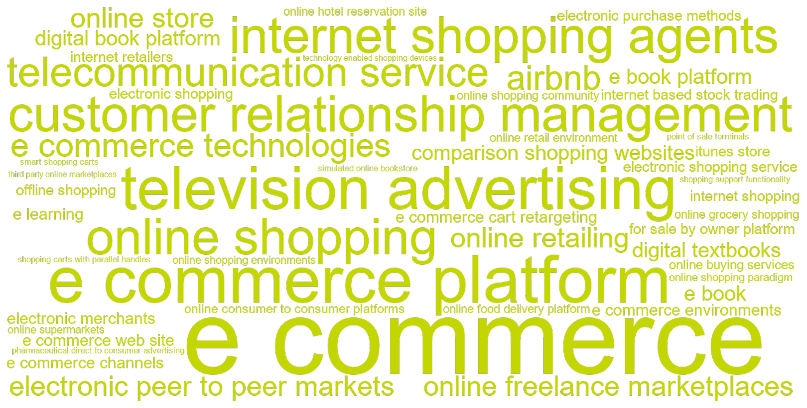
C.8.3 Articles
| Year | Full citation | Technology / technologies | Abstract |
|---|---|---|---|
| 2026 | Loghmani E, Goli A. Investigating the Impact of Advertising on Smoking Cessation: The Role of Direct-to-Consumer Prescription Drug Advertising. Marketing Science. 2026;55:. doi:10.1287/mksc.2024.0848 | e cigarette | Access barriers to products and the availability of over-the-counter substitutes critically shape how advertising affects consumer choices in healthcare markets, yet these relationships remain understudied. We examine this phenomenon in the smoking cessation market, where prescription and over-the-counter options coexist with varying efficacy and access barriers. Analyzing data on prescription records, retail sales, and advertising exposure, we estimate both own-and cross-advertising elasticities across multiple product categories including prescription drugs, over-the-counter nicotine replacement therapies (NRTs), e-cigarettes, and traditional cigarettes. We find that prescription drug advertising reduces cigarette consumption whereas nicotine replacement therapy advertising does not. This difference occurs because prescription advertising expands demand across prescription cessation medications, whereas nicotine replacement advertising diverts consumers from more effective prescription options. Insurance coverage significantly moderates these elasticities: where coverage is limited, prescription advertising leads to greater spillovers toward over-the-counter substitutes. Despite these spillovers, prescription drug advertising yields a meaningful reduction in cigarette consumption and net nicotine intake. These findings demonstrate that obtaining a complete picture of advertising's impact on public health outcomes requires accounting for both cross-category effects and institutional constraints in healthcare markets. |
| 2026 | Zhong Z, Zhou W, Li J, Li P. Regional Poverty Alleviation Partnership and E-Commerce Trade. Marketing Science. 2026;66:. doi:10.1287/mksc.2023.0214 | e commerce, e commerce | Regional inequalities are prevalent in all major economies. What are the effects of inclusive growth policies targeting economically disadvantaged regions? In this study, we examine how the East-West Poverty Alleviation Partnership, which pairs rich cities in East China with economically disadvantaged cities in West China, affects e-commerce trade. Using proprietary trade-flow data from Alibaba, we find that the partnership boosts e-commerce trade between partnered cities. This effect is asymmetric as it increases exports from West China to East China but not the other way around. The effect is also particularly strong for product categories in which West China has a comparative advantage and for the western regions with the largest economic and development disparities. Additionally, the results indicate that the partnership benefits both big and small sellers equally. In exploring the underlying mechanisms, we find that partnership-driven migration as well as consumer awareness can partially explain the effect. |
| 2026 | Luca M, Pronkina E, Rossi M. The Evolution of Discrimination in Online Markets: How the Rise in Anti-Asian Bias Affected Airbnb During the Pandemic. Marketing Science. 2026;58:. doi:10.1287/mksc.2023.0112 | airbnb | How does discrimination evolve in marketplaces? To explore, we look at the evolution of anti-Asian bias on Airbnb during the COVID-19 pandemic, a period during which there was heightened anti-Asian bias. Using a DiD approach, we find that hosts with distinctively Asian names experienced a 20\% decline in guests relative to hosts with distinctively White names, resulting in a loss of revenue in the range of US\$180 to US\$330 per month for these hosts. We rule out host-guest homophily as the main driver, as the share of Asian guests matched with Asian hosts remained stable during 2020. Additionally, the absence of spikes in discrimination against Black and Hispanic hosts compared with prepandemic levels suggests that our results specifically capture increased anti-Asian discrimination during the pandemic. Our findings highlight the ways in which evolving bias in society manifests in market transactions and the importance of platform design choices. |
| 2025 | Natan O. Choice Frictions in Large Assortments. Marketing Science. 2025;58:. doi:10.1287/mksc.2023.0415 | online food delivery platform | This paper studies how the growth and evolution of product assortments impact consumer adoption, churn, and purchase frequency. Most economic theories of product variety and the value of platforms suggest consumers at least weakly prefer larger product assortments. In contrast, the psychological literature on the phenomenon of choice overload finds that larger assortments overwhelm consumers with decision costs or induce more regret. I provide empirical evidence of how the size and contents of product assortments impact consumers across their lifetime on an online food delivery platform. I find that assortment expansion increases the acquisition of new consumers but reduces the frequency of consumption among consumers who remain on the platform. I rationalize these effects on returning customers via a model of costly attention and choice under limited information. Counterfactual exercises show that targeting choice set reductions can improve revenue among existing customers. |
| 2025 | Kassemeier R, Alavi S, Habel J. Implementing e-commerce channels in business-to-business selling. International Journal Of Research In Marketing. 2025;:. doi:10.1016/j.ijresmar.2025.10.003 | e commerce channels | E-commerce channels are becoming increasingly popular in business-to-business (B2B) markets and promise efficiency gains to salespeople and companies. However, enabling customers to serve themselves through e-commerce channels disrupts selling practices, requiring salespeople to adapt while exposing them to multiple risks. Strikingly, prior literature is silent on the consequences of e-commerce channel additions for salespeople. Drawing on goal systems theory, the authors propose opposing effects of the e-commerce implementation on salespeople’s customer coverage and consultation quality. The authors conduct a multimethod approach combining a natural experiment in which an industrial distributor implemented an e-commerce channel (n = 20,280 observations from 845 salespeople) with two online experiments (n = 551 salespeople). Collectively, results show that the e-commerce implementation increases salespeople’s customer coverage but lowers their consultation quality. The beneficial and harmful effects are strongly contingent on salespeople’s past customer acquisition and tenure. Incentivizing salespeople on e-commerce revenue increases the effect on customer coverage and mitigates the harmful effect on consultation quality, while sales manager multichannel promotion emerged as ineffective in these respects. Thus, this study offers managers actionable recommendations on how to improve multichannel selling in B2B contexts. © 2025 The Author(s). |
| 2024 | Yang J, Sahni N, Nair H, Xiong X. Advertising as Information for Ranking E-Commerce Search Listings. Marketing Science. 2024;37:. doi:10.1287/mksc.2021.0292 | e commerce platform | Search engines and e-commerce platforms have substantial difficulty exposing new products to their users on account of an information problem: new products typically do not have enough sales or other user engagement that enables platforms to reliably assess product quality. This paper evaluates the role of advertising in providing information to the platform regarding new product quality so as to solve this ``cold start'' problem and to engineer higher quality organic listings. Using a large-scale experiment implemented at JD.com-a large e-commerce platform in China-we show that using ad propensity information for ranking new products benefits both the platform and consumers. Our findings showcase a new channel by which advertising can potentially improve outcomes for consumers and platforms in e-commerce through its ability to reveal information that can be used by platforms to improve search ranking algorithms. |
| 2024 | Liu Y, Yildirim P, Zhang Z. Consumer preferences and firm technology choice q. International Journal Of Research In Marketing. 2024;57:41-55. doi:10.1016/j.ijresmar.2023.06.008 | shopping support functionality, technology enabled shopping devices | Advances in technology change the way consumers search and shop for products. Emerging is the trend of home -shopping devices such as Amazon's Alexa and Google Home, which allow consumers to search or order products. We investigate how consumer brand and technology preferences may interact with the functionalities of technologyenabled shopping (TES) devices to determine the channel structure and market competition. In specific, we break the functionalities of the TES devices into two: (1) the shopping support functionality (SSF), and (2) the ordering convenience functionality (OCF). Via a series of experiments, we document that stronger brand preferences are negatively correlated with the willingness to use a TES device that offers SSF. However, there is no association with brand preferences and desire to use a TES device when it offers OCF. We build an analytical model integrating the findings from these experiments, and then derive the equilibrium channel and pricing strategies for two competing retailers. Our findings show that the functionality of TES devices results in vastly different distribution and pricing strategies in retail markets. In particular, consumers' heterogeneous valuation of the SSF results in a monopolistic adoption of TES devices by the retailers in equilibrium, and generates Pareto improvements for both. In contrast, when the TES devices offer OCF, in equilibrium, retailers adopt TES channels competitively, resulting in a prisoners' dilemma outcome. In the extensions, studying a third -party technology developer's decision to invest in OCF and SSF technologies, we show that the contrast between the channel strategies under the OCF and the SSF also impact the incentives to develop TES. We show that in some cases, in an effort to mitigate downstream retail competition, the provider may prefer not to offer the best possible OCF technology to consumers. These findings shed light on the future adoption and the functionalities of shopping technologies offered by retailers. (c) 2023 Elsevier B.V. All rights reserved. |
| 2024 | Wang Q. For-Sale-by-Owner Platforms and Intermediation Pricing: Evidence from a Natural Experiment. Marketing Science. 2024;39:. doi:10.1287/mksc.2022.0245 | for sale by owner platform | Intermediary agents play a crucial role in connecting sellers and buyers across various markets. However, the emergence of digital platforms has provided more affordable channels for direct transactions, challenging the dominance of agents. In this study, we examine the impact of a for-sale-by-owner (FSBO) platform on real estate agents' listing prices. By using a natural experiment in China, we find that the introduction of the FSBO platform leads to a 2.8\% decrease in listing prices, a percentage comparable to the commission rate typically charged by agents. The cost advantage provided by the FSBO platform appears to be the primary driver behind this price drop rather than selection bias in listings. Furthermore, the impact of reduced listing prices extends to the final sales price of the properties. These findings carry important policy implications for competition regulation of intermediaries. |
| 2024 | Anand P, Kadiyali V. Frontiers: Smoke and Mirrors: Impact of E-cigarette Taxes on Underage Social Media Posting. Marketing Science. 2024;33:479-487. doi:10.1287/mksc.2022.0241 | e cigarette | E-cigarette use, or vaping, is a public health concern, with particular worries about underage use. The U.S. government is expected to introduce federal taxation on vaping. The potential deterrent effect of such a tax on underage users is understudied because of the absence of underage use data. To cut through this data fog, we use Instagram images from 2016 to 2018 to estimate whether a tax change in California affected vaping-related posting by underage users. This posting behavior is a potential proxy for consumption behavior. We use image analysis (residual neural networks) and latent factor models for causal inference of tax effects. Compared with counterfactuals, we find a relative decline in the incidence of underage users (in effect a slower increase in postings) in vaping-related images in California for about six months, with no effects after. There is gender and race heterogeneity in these effects. Our proposed approach of using near real-time social media images can be helpful to regulators and managers, especially in the rapidly changing landscape expected in the coming months. |
| 2024 | Crecelius A, Lawrence J, Palmatier R, Zhang J. Multichannel discount spillover in B2B markets. Journal Of The Academy Of Marketing Science. 2024;83:1086-1106. doi:10.1007/s11747-023-00973-z | e commerce, e commerce | Business-to-business (B2B) sellers grant customer-specific discounts to select buyers. According to resource-based and competitive response theories, customer-specific discounts can give buyers a cost advantage over other buyers that compete for the same end-customer demand. If other buyers become aware of this advantage, discount spillover ensues as those buyers seek counterbalancing discounts, compressing the seller's profitability. In accordance with today's multichannel B2B environment, the authors theorize differential effects on the seller's profitability via spillover to offline-competing and online-competing buyers. The authors test their framework across large-scale field studies with two different collaborating sellers and find broad support for their hypotheses. If managers fail to consider competitive implications of customer-specific discounts, their effects can spill over to competing buyers, resulting in approximately three times the lost profitability. However, spillover-conscious deployment, such as by targeting buyers that limit e-commerce price transparency, allows sellers to virtually eliminate adverse effects of discount spillover. |
| 2024 | Morozov I, Tuchman A. Where Does Advertising Content Lead You? We Created a Bookstore to Find Out. Marketing Science. 2024;64:986-1001. doi:10.1287/mksc.2023.0138 | simulated online bookstore | We study how advertising content influences consumers' decisions. To this end, we create a simulated online bookstore that imitates a real online shopping experience. We then conduct a preregistered and incentive -compatible experiment in which we randomly expose store visitors to display ads, randomizing both advertising exposures and content. We find that ad content plays a major role in shaping advertising effects. Ads that reveal a book's low price consistently increase demand for the advertised book relative to ads that do not reveal price. By contrast, ads that reveal the book's genre induce some consumers to search and buy the book but lead others to reject it without search. We show these polarized responses can increase or decrease the total number of searches and purchases of the advertised book depending on the share of consumers who favor the revealed genre. Our findings suggest that advertisers should carefully choose which product attributes to reveal in their ad copies. We also show that revealing product attributes in ads does not change the total amount of search. Taken together, our results suggest the primary role of ad content is to affect consumers' beliefs about the advertised book rather than to alter the perceived benefits from search. |
| 2024 | Guo B, Wang D. Will Online Shopping Lead to More Brand Loyalty Than Offline Shopping? The Role of Uncertainty Avoidance. Journal Of Marketing Research. 2024;74:92-109. doi:10.1177/00222437231153075 | offline shopping, online shopping | Although the growing transformation from offline to online shopping urges marketers to understand the impacts of this shift on brand loyalty, conclusions from the existing marketing literature have been inconsistent. Drawing on the distinctions between online and offline shopping, the authors develop a theoretical framework that focuses on uncertainty avoidance (UA) to reconcile the inconsistencies in the literature. Specifically, the authors argue that high-UA (vs. low-UA) individuals are more (vs. less) brand loyal when shopping online than when shopping offline because the product experience is less predictable in the former (vs. latter), a distinction between online and offline shopping that increases (reduces) high-UA (low-UA) individuals' tendency to stay with the brands. In findings consistent with this logic, the authors uncover that intangible value salience, a theoretically and managerially relevant boundary condition, attenuates the interplay between online (vs. offline) shopping and UA. Across eight studies that consist of secondary data, field studies, and online and laboratory experiments, the authors find converging evidence to support this theoretical stance. This research contributes insights to the loyalty literature and cross-cultural research. The managerial implications are also discussed. |
| 2023 | Huang Y, Bronnenberg B. Consumer Transportation Costs and the Value of E-Commerce: Evidence from the Dutch Apparel Industry. Marketing Science. 2023;35:984-1003. doi:10.1287/mksc.2022.1421 | e commerce, e commerce | Why do consumers value online shopping? We demonstrate that consumer transportation cost savings are at least as important to consumer welfare as their gains from variety. To estimate transportation costs, we assemble novel micro data from the Dutch retail apparel industry and complement these data with precise locations of consumers and stores. We estimate a multiple discrete choice model to characterize consumers' choice of retailer, channel (online/offline), and purchase quantity. Our estimates imply that, in 2018, an average consumer's welfare gain from e-commerce in the apparel category is almost e470. Consumers' saving on transportation costs accounts for about 45\% of this gain. |
| 2023 | Oblander S, Mccarthy D. Frontiers: Estimating the Long-Term Impact of Major Events on Consumption Patterns: Evidence from COVID-19. Marketing Science. 2023;18:839-852. doi:10.1287/mksc.2023.1443 | e commerce, e commerce | We propose a general and flexible methodology for inferring the time-varying effects of a discrete event on consumer behavior. Our method enables analysis of events that span the target population being analyzed, where there is no contemporaneous ``control group'' and/or it is not possible to measure treatment status, by comparing the purchasing behavior of cohorts acquired at different times. Our method applies nonparametric age-period-cohort models, commonly used in sociology but with limited adoption in marketing, in conjunction with a predictive model of the counterfactual no-event baseline (i.e., an event study model). We use this method to infer how the COVID-19 pandemic affected 12 online and offline consumption categories. Our results suggest that the pandemic initially drove significant spending lifts at e-commerce businesses at the expense of brick-and-mortar alternatives. After two years, however, these changes have largely reverted. We observe significant heterogeneity across categories, with more persistent changes in subscription-based categories and more transient changes in categories based on discretionary purchases, especially those of durable goods. |
| 2023 | Ghosh D A, Sunder S, Shah D. Societal Spillovers of TV Advertising: Social Distancing During a Public Health Crisis. Journal Of Marketing. 2023;62:337-358. doi:10.1177/00222429221130011 | television advertising | Can TV advertising affect societal outcomes beyond traditional marketing outcomes such as sales and brand awareness? The authors address this question in the context of the COVID-19 pandemic by analyzing daily advertising and mobility data for 2,194 counties across 204 designated market areas in the United States. By employing a border identification strategy that exploits discontinuities across television markets, the authors find a significant positive causal relationship between TV ads from brands containing COVID-19 narratives and people's social distancing behavior, while controlling for government policy interventions (e.g., shelter-in-place, mask mandates). The estimated effects are almost 11 times larger in counties without government policy interventions compared with counties with policy interventions. Notably, while the overall impact of government ads on social distancing behavior is nonsignificant, the effect becomes significantly negative (positive) in the presence (absence) of policy interventions. The results are robust to alternative model specifications, variable operationalizations, and other data considerations. The findings underscore the critical role that spillover effects from brand-sponsored TV ads can play during major public crises, including mitigating the lack of local governments' policy interventions. The findings bear substantive implications for managers and policy makers regarding how advertising strategies may help improve public health outcomes or advance social good. |
| 2023 | Lee S, Lee J, Jeong Y. The Effects of Digital Textbooks on Students' Academic Performance, Academic Interest, and Learning Skills. Journal Of Marketing Research. 2023;111:792-811. doi:10.1177/00222437221130712 | digital textbooks | The advances in information and communications technology and the digitization of services offer new ways to reach, engage with, and provide services to consumers. Recent advances in technology have fueled the rapid growth of digitization in education, and the education industry has witnessed radical changes in the provision and delivery of its products and services. Digital textbooks, which are equipped with various learning resources including multimedia aids, assessment questions, and hyperlinks to external resources, can be an important channel for harnessing technologies in classrooms. Korea's digital textbook experiment provides a unique empirical setting to examine the effects of digital textbooks on students' academic outcomes. The authors employ a panel regression model with teacher fixed effects, propensity score weighting, and an instrumental variable strategy to find that greater usage of digital textbooks in class improves students' academic performance, academic interest, and learning skills. The authors explore the heterogeneity in the utilization effect across student levels and find greater improvements in academic performance for low-achieving students. The findings have important managerial and policy implications for major stakeholders in the education sector, including teachers, school administrators, students, and policy makers. |
| 2022 | Ludwig Set al.. Communication in the Gig Economy: Buying and Selling in Online Freelance Marketplaces. Journal Of Marketing. 2022;82:141-161. doi:10.1177/00222429211030841 | online freelance marketplaces | The proliferating gig economy relies on online freelance marketplaces, which support relatively anonymous interactions through text-based messages. Informational asymmetries thus arise that can lead to exchange uncertainties between buyers and freelancers. Conventional marketing thought recommends reducing such uncertainty. However, uncertainty reduction and uncertainty management theories indicate that buyers and freelancers might benefit more from balancing-rather than reducing-uncertainty, such as by strategically adhering to or deviating from common communication principles. With dyadic analyses of calls for bids and bids from a leading online freelance marketplace, this study reveals that buyers attract more bids from freelancers when they provide moderate degrees of task information and concreteness, avoid sharing personal information, and limit the affective intensity of their communication. Freelancers' bid success and price premiums increase when they mimic the degree of task information and affective intensity exhibited by buyers. However, mimicking a lack of personal information and concreteness reduces freelancers' success, so freelancers should always be more concrete and offer more personal information than buyers. These contingent perspectives offer insights into buyer-seller communication in two-sided online marketplaces. They clarify that despite, or sometimes due to, communication uncertainty, both sides can achieve success in the online gig economy. |
| 2022 | Long F, Jerath K, Sarvary M. Designing an Online Retail Marketplace: Leveraging Information from Sponsored Advertising. Marketing Science. 2022;37:115-138. doi:10.1287/mksc.2021.1307 | e commerce platform | E-commerce platforms, such as Amazon and Alibaba, enable hundreds of millions of consumers to search and purchase products offered by millions of independent sellers who can advertise their products on the platforms. In this paper, we study how to design such a marketplace when there are two types of asymmetric information-sellers have some private information about their products that the platform does not have, whereas the platform has private information about consumers that the sellers do not have. Using a game theory model, we formulate the marketplace design problem as maximizing marketplace profit (comprising ad revenues and sales commissions) by jointly considering the following elements: ensuring sellers join the platform, specifying the auction that enables sellers to advertise in the sponsored list, leveraging the information revealed in the ad auction to refine the organic list, and setting the commission rate on sales to consumers who are rational and heterogeneous in their preferences. We show that sellers' bids in ad auctions, through which sponsored slots are allocated, can reveal the sellers' private information to the platform (''information effect''), which it can optimally combine with information that it has about consumers to improve the placement of organic results, a practice we call ``strategic listing.'' However, by introducing an externality between the sponsored and organic sides, strategic listing also leads to more competition in the ad auction (''competition effect''), thus reducing the incentive of sellers to join the platform. The platform can incentivize sellers to join by reducing the commission rate on sales; however, under certain conditions, the platform must also reduce the degree of strategic listing (i.e., commit to limiting the influence of the sponsored ad auction outcomes on the placement of organic results). If the sellers' participation is sufficiently difficult to induce, the platform obtains a larger proportion (under some conditions, all) of its revenue from advertising than from sales commissions. Our results shed light on the variation in practices across different platforms and provide timely guidance for platforms to refine their marketplace design. |
| 2022 | Zerbini C, Bijmolt T, Maestripieri S, Luceri B. Drivers of consumer adoption of e-Commerce: A meta-analysis. International Journal Of Research In Marketing. 2022;151:1186-1208. doi:10.1016/j.ijresmar.2022.04.003 | e commerce, e commerce | E-commerce has significantly reshaped consumers' shopping processes and habits. The need to understand the key drivers of online shopping has received keen attention and fueled a rich strand of studies. To help managers and researchers synthesize this growing body of evidence, we conducted a comprehensive meta-analysis to unearth the factors that influence consumers' online shopping. Our main takeaways reveal that the most important drivers of online shopping (a) conform to the TAM and TPB theories, in addition to (b) website characteristics and past experience. In particular, the multiple predictors are strongly related to online purchase intentions and purchase behavior, where attitude and convenience show the strongest impact. Furthermore, moderator analyses indicate that cultural traits have specific moderating effects on the links between purchase intention and some of its drivers. For instance, power distance and uncertainty avoidance have a positive effect, while individualism, indulgence and masculinity have a negative one. Finally, we apply meta-analytic structural equation modeling to test a conceptual framework including four groups of drivers (consumer-channel interactions, website characteristics, social influence, and consumer characteristics) and different aspects of online shopping. The findings provide valuable insights for online shopping research and practice. (c) 2022 Elsevier B.V. All rights reserved. |
| 2022 | Estes Z, Streicher M. Getting a Handle on Sales: Shopping Carts Affect Purchasing by Activating Arm Muscles. Journal Of Marketing. 2022;61:135-154. doi:10.1177/00222429211061367 | shopping carts with parallel handles | This research demonstrates that the physical properties of shopping carts influence purchasing and spending. Prior research on ergonomics indicates that standard shopping carts, which are pushed via a horizontal handlebar, are likely to activate arm extensor muscles. Prior research on arm muscle activation, in turn, suggests that arm extensor activation may elicit less purchasing than arm flexor activation. The authors thus deduce that standard shopping carts may be suboptimal for stimulating purchases. The authors predicted that shopping carts with parallel handles (such as on a wheelbarrow or ``walker'') would instead activate the flexor muscles and thus increase purchasing. An electromyography study revealed that both horizontal and vertical handles more strongly activate the extensor muscles of the upper arm (triceps), whereas parallel handles more strongly activate the flexor muscles (biceps). In a field experiment, parallel-handle shopping carts significantly and substantially increased sales across a broad range of categories, including both vice and virtue products. Finally, in a simulated shopping experiment, parallel handles increased purchasing and spending beyond both horizontal and vertical handles. These results were not attributable to the novelty of the shopping cart itself, participants' mood, or purely ergonomic factors. |
| 2022 | Lee Y, Yeung C. Incentives for learning: How free offers help or hinder motivation. International Journal Of Research In Marketing. 2022;31:380-395. doi:10.1016/j.ijresmar.2021.08.001 | e learning | This research examines how incentives for learning can be designed to promote lasting learning motivation. The authors examined this research question in the context of contin-uing education, in which adult learners were given the opportunity to take educational courses for free. The authors contrasted two approaches commonly used when offering free courses-a tuition waiver versus a tuition refund. Although both arrangements were priced at zero, refunds outperformed waivers in promoting long-term learning, due to the mone-tary cost incurred in the former instance (even if it was refundable). In the first study, an e-learning activity was offered to the participants for free; those who were offered a fee refund (vs. waiver) were less likely to drop out, spent more time reading the learning materials, and were more likely to return to the learning activity dur-ing the post-experimental phase. Two further studies showed that when the participants evaluated an incentivized learning opportunity, the waiver drew more attention to the incentive and reduced attention to the learning benefits, but the refund preserved the latter considerations. The last study demonstrated the possibility of directing attention to the learning benefits by introducing a non-monetary cost into the signup procedure for a free course. These findings are consistent with the mental accounting explanation, which sug-gests that people are motivated to track and seek out learning benefits after they have incurred a cost.(c) 2021 The Authors. Published by Elsevier B.V. This is an open access article under the CC BY license (http://creativecommons.org/licenses/by/4.0/). |
| 2022 | Goic M, Jerath K, Kalyanam K. The roles of multiple channels in predicting website visits and purchases: Engagers versus closers. International Journal Of Research In Marketing. 2022;44:656-677. doi:10.1016/j.ijresmar.2021.12.004 | comparison shopping websites | In today's online environment, consumers and sellers interact through multiple channels such as email, search engines, banner ads, affiliate websites and comparison-shopping websites. In this paper, we investigate whether knowing the history of channels the consumer has used until a point of time is predictive of their future visit patterns and purchase conversions. We propose a model in which future visits and conversions are stochastically dependent on the channels a consumer used on their path up to a point. Salient features of our model are: (1) visits by consumers are allowed to be clustered, which enables separation of their visits into intra- and inter-session components, (2) interaction effects between channels where prior visits and conversions from channels impact future inter-session visits, intra-session visits and conversions through a latent variable reflecting the cumulative weighted inventory of prior visits, (3) each channel attracts inter-session and intra-session visits differently, (4) each channel has different association with conversion conditional on a customer's arrival to the website through that channel, (5) each channel engages customers differently (i.e., keeps the customer alive for a next session or for a next visit within a session), (6) the channel from which there was an arrival in the previous session can have an enhanced ability to generate an arrival for the same channel in the current session (channel persistence), and (7) parsimonious specification for high dimensionality in a low-velocity, sparse-data environment. We estimate the model on easy-to-collect firstparty data obtained from an online retailer selling a durable good and find that information on the identities of channels and incorporation of inter- and intra-session visits have significant predictive power for future visitation and conversion behavior. We find that some channels act as ``closers'' and others as ``engagers''-consumers arriving through the former are more likely to make a purchase, while consumers arriving through the latter, even if they do not make a purchase, are more likely to visit again in the future or extend the current session. We also find that some channels engage customers more than others, and that there are interaction effects between the channels visited. Our estimates show that the effect of prior inventory of visits is different from the immediate prior visit, and that visit and purchase probabilities can increase or decrease based on the history of channels used. We discuss several managerial implications of the model including using the predictions of the model to aid in selecting customers for marketing actions and using the model to evaluate a policy change regarding the obscuring of channel information.(c) 2021 Elsevier B.V. All rights reserved. |
| 2022 | Berman R, Israeli A. The Value of Descriptive Analytics: Evidence from Online Retailers. Marketing Science. 2022;49:1074-1096. doi:10.1287/mksc.2022.1352 | customer relationship management | Does the adoption of descriptive analytics impact online retailer performance, and if so, how? We use the synthetic difference-in-differences method to analyze the staggered adoption of a retail analytics dashboard by more than 1,500 e-commerce websites, and we find an increase of 4\%-10\% in average weekly revenues postadoption. We demonstrate that only retailers that adopt and use the dashboard reap these benefits. The increase in revenue is not explained by price changes or advertising optimization. Instead, it is consistent with the addition of customer relationship management, personalization, and prospecting technologies to retailer websites. The adoption and usage of descriptive analytics also increases the diversity of products sold, the number of transactions, the numbers of website visitors and unique customers, and the revenue from repeat customers. In contrast, there is no change in basket size. These findings are consistent with a complementary effect of descriptive analytics that serve as a monitoring device that helps retailers control additional martech tools and amplify their value. Without using the descriptive dashboard, retailers are unable to reap the benefits associated with these technologies. |
| 2022 | Zhang S, Chan T, Luo X, Wang X. Time-Inconsistent Preferences and Strategic Self-Control in Digital Content Consumption. Marketing Science. 2022;71:616-636. doi:10.1287/mksc.2021.1318 | digital book platform | This study examines consumers' time-inconsistent preferences in digital content consumption and their strategic self-control behaviors. We used a unique data set obtained from a major digital book platform in China, where consumers can pay either by chapter or a monthly subscription. A third of consumers consistently chose to pay by chapter, even though a monthly subscription would significantly reduce the monetary cost. We propose a dynamic structural model that incorporates time-inconsistent preferences and strategic self-control behaviors to rationalize such behavior. We first analytically demonstrate the existence of a unique equilibrium and show how, under steady states, overpaying for reading can be optimal for consumers. We then estimate the model from the data. The results show that there is a large segment of price-sensitive consumers who are willing to overpay to curb future consumption. Our counterfactuals show that eliminating the pay-per chapter option would hurt consumer welfare and the platform's profit. Eliminating the monthly subscription plan, however, would increase the platform's profit but reduce consumer welfare. We introduce a novel nonlinear pricing plan with a volume surcharge and illustrate how it can benefit both consumers and the platform. |
| 2021 | Maier E, Wieringa J. Acquiring customers through online marketplaces? The effect of marketplace sales on sales in a retailer's own channels. International Journal Of Research In Marketing. 2021;86:311-328. doi:10.1016/j.ijresmar.2020.09.007 | third party online marketplaces | Online retailers are increasingly using third-party online marketplaces (e.g., Amazon, Taobao) as an alternative sales channel to their website. While cross-channel sales elasticities have been established for many sales channel combinations (e.g., adding bricks to clicks), we lack an understanding of whether the use of third-party marketplaces grows or cannibalizes a retailer's sales. Practitioners argue that firms can build their e-commerce business through acquiring customers by selling on the marketplace. Indeed, a marketplace could complement a retailer's offering (e.g., acquiring new customer segments), although inventory effects might mitigate this complementarity. Alternatively, cannibalization might occur from losing customers from one's website to the online marketplace. The present research investigates which of the two opposing forces prevails using a time series of category sales data from one of the largest global marketplace sellers. The authors use vector autoregressive modeling to show that marketplace sales increase sales on a retailer's website (0.014\% for every 1\% in marketplace sales). This effect is strongest for categories with large choice and low product prices. Acquiring customers through the marketplace might be cheaper than through other sources (estimated at 24\% of initial sales). However, online retailers should be aware that this strategy strengthens the marketplace and may have potential negative long-term consequences (e.g., through marketplace control of the customer relationship). (c) 2020 Elsevier B.V. All rights reserved. |
| 2021 | Eshghi K, Ray S. Conflict and performance in channels: a meta-analysis. Journal Of The Academy Of Marketing Science. 2021;101:327-349. doi:10.1007/s11747-020-00751-1 | e commerce technologies | Conflict between channel members is of great interest to marketers given its presumed negative impact on the channel's business performance. In a comprehensive meta-analysis of the empirical literature spanning six decades between 1960 and 2020, we observe channel performance is indeed negatively linked to channel conflict. However, we find that this conflict-performance link has evolved significantly over time, roughly in keeping with the growth and maturing of e-commerce technologies. Further, the damage caused by conflict appears to be more pronounced for channels with international operations, and for channels with greater dependency between channel members. Additionally, businesses in North America seem to suffer the consequences of channel conflict more than others. Our results also show several study characteristics related to measurement and sampling significantly impact the empirical conflict-performance links reported in the literature. We base our conclusions on correlational analyses, two-stage meta-analytic structural equation modeling (TSSEM), and meta-analytic regression analyses (MARA). |
| 2021 | Moshary S, Shapiro B, Song J. How and When to Use the Political Cycle to Identify Advertising Effects. Marketing Science. 2021;24:283-304. doi:10.1287/mksc.2020.1258 | television advertising | A central challenge in estimating the causal effect of television (TV) advertising on demand is isolating quasirandom variation in advertising. Political advertising, which topped \$14 billion in expenditures in 2016, has been proposed as a plausible source of such variation and thus, a candidate for an instrumental variable (IV). We provide a critical evaluation of how and where this instrument is valid and useful across categories. We characterize the conditions under which political cycles theoretically identify the causal effect of TV advertising on demand, highlight threats to the exclusion restriction and monotonicity condition, and suggest a specification to address the most serious concerns. We test the strength of the first-stage category by category for 274 product categories. For most categories, weak-instrument robust inference is recommended, as first-stage F statistics are less than 10 for 221 of 274 product categories in our benchmark specification. The largest first-stage F statistics occur in categories that typically advertise locally, such as automobile dealerships and restaurants. Failure to use the suggested specification leads to results that suggest violations of exclusion and monotonicity in a significant number of categories. Finally, we conduct a case study of the auto industry. Despite a very strong first stage, the IV estimate for this category is imprecise. |
| 2021 | Mu J, Zhang J. Seller marketing capability, brand reputation, and consumer journeys on e-commerce platforms. Journal Of The Academy Of Marketing Science. 2021;89:994-1020. doi:10.1007/s11747-021-00773-3 | e commerce platform | Seller marketing capability and brand reputation are central to firm performance and customer behaviors. However, little is known about how these two dimensions matter in the increasingly important domain of e-commerce platforms, where sellers are diverse and brand reputations are challenged. This research examines the effects of marketing capability and brand reputation on key customer purchase journey outcomes on e-commerce platforms, from click to browsing time, purchase, and post-purchase frustration. Using smartphone category data from a leading e-commerce platform, the authors demonstrate the positive and increasing effect of marketing capability on consumer journey outcomes. This research also paints a more nuanced view of brand reputation in e-commerce platform environments and illustrates nuanced U-shaped effects of brand reputation on consumer journey outcomes. These findings provide implications for brands and sellers on e-commerce platforms. |
| 2021 | Li J, Luo X, Lu X, Moriguchi T. The Double-Edged Effects of E-Commerce Cart Retargeting: Does Retargeting Too Early Backfire?. Journal Of Marketing. 2021;45:123-140. doi:10.1177/0022242920959043 | e commerce cart retargeting | Consumers often abandon e-commerce carts, so companies are shifting their online advertising budgets to immediate e-commerce cart retargeting (ECR). They presume that early reminder ads, relative to late ones, generate more click-throughs and web revisits. The authors develop a conceptual framework of the double-edged effects of ECR ads and empirically support it with a multistudy, multisetting design. Study 1 involves two field experiments on over 40,500 customers who are randomized to either receive an ECR ad via email and app channels (treatment) or not receive it (control) across different hourly blocks after cart abandonment. The authors find that customers who received an early ECR ad within 30 minutes to one hour after cart abandonment are less likely to make a purchase compared with the control. These findings reveal a causal negative incremental impact of immediate retargeting. In other words, delivering ECR ads too early can engender worse purchase rates than without delivering them, thus wasting online advertising budgets. By contrast, a late ECR ad received one to three days after cart abandonment has a positive incremental impact on customer purchases. In Study 2, another field experiment on 23,900 customers not only replicates the double-edged impact of ECR ads delivered by mobile short message service but also explores cart characteristics that amplify both the negative impact of early ECR ads and positive impact of late ECR ads. These findings offer novel insights into customer responses to online retargeted ads for researchers and managers alike. |
| 2021 | Barron K, Kung E, Proserpio D. The Effect of Home-Sharing on House Prices and Rents: Evidence from Airbnb. Marketing Science. 2021;44:23-47. doi:10.1287/mksc.2020.1227 | airbnb | We assess the impact of home-sharing on residential house prices and rents. Using a data set of Airbnb listings from the entire United States and an instrumental variables estimation strategy, we show that Airbnb has a positive impact on house prices and rents. This effect is stronger in zip codes with a lower share of owner-occupiers, consistent with non-owner-occupiers being more likely to reallocate their homes from the long- to the short-term rental market. At the median owner-occupancy rate zip code, we find that a 1\% increase in Airbnb listings leads to a 0.018\% increase in rents and a 0.026\% increase in house prices. Considering the median annual Airbnb growth in each zip code, these results translate to an annual increase of \$9 in monthly rent and \$1,800 in house prices for the median zip code in our data, which accounts for about one-fifth of actual rent growth and about one-seventh of actual price growth. Finally, we formally test whether the Airbnb effect is due to the reallocation of the housing supply. Consistent with this hypothesis, we find that although the total supply of housing is not affected by the entry of Airbnb, Airbnb listings increase the supply of short-term rental units and decrease the supply of long-term rental units. |
| 2020 | Peng L, Cui G, Chung Y, Zheng W. The Faces of Success: Beauty and Ugliness Premiums in e-Commerce Platforms. Journal Of Marketing. 2020;61:67-85. doi:10.1177/0022242920914861 | e commerce platform | Given the positive bias toward attractive people in society, online sellers are justifiably apprehensive about perceptions of their profile pictures. Although the existing literature emphasizes the ``beauty premium'' and the ``ugliness penalty,'' the current studies of seller profile pictures on customer-to-customer e-commerce platforms find a U-shaped relationship between facial attractiveness and product sales (i.e., both beauty and ugliness premiums and, thus, a ``plainness penalty''). By analyzing two large data sets, the authors find that both attractive and unattractive people sell significantly more than plain-looking people. Two online experiments reveal that attractive sellers enjoy greater source credibility due to perceived sociability and competence, whereas unattractive sellers are considered more believable on the basis of their perceived competence. While a beauty premium is apparent for appearance-relevant products, an ugliness premium is more pronounced for expertise-relevant products and for female consumers evaluating male sellers. These findings highlight the influence of facial appearance as a key vehicle for impression formation in online platforms and its complex effects in e-commerce and marketing. |
| 2020 | Irmak C, Murdock M, Kanuri V. When Consumption Regulations Backfire: The Role of Political Ideology. Journal Of Marketing Research. 2020;75:966-984. doi:10.1177/0022243720919709 | e cigarette | The authors investigate the role of political ideology in consumer reactions to consumption regulations. First, they demonstrate via a natural experiment that conservatives (but not liberals) increase usage of mobile phones in cars after a law was enacted prohibiting that activity (Study 1). Then, through three lab experiments the authors illustrate that after consumers are exposed to consumption regulations from the government (e.g., laws that restrict consumption, warning labels designed by the Food and Drug Administration), conservatives (vs. liberals) are more likely to (1) use phones when restricted (Study 2), (2) purchase unhealthy foods (Study 3), and (3) view smoking e-cigarettes more favorably (Study 4). No such effects are observed when a nongovernment source is used, or when the message from the government is framed as a notification (vs. warning). These findings point to the important roles of political ideology and the message source in increasing reactance to consumption regulations, thereby mitigating the effectiveness of public policy initiatives undertaken by the government. |
| 2019 | Vieira V, Severo D A M, Agnihotri R, De A C D S N, Arunachalam S. In pursuit of an effective B2B digital marketing strategy in an emerging market. Journal Of The Academy Of Marketing Science. 2019;89:1085-1108. doi:10.1007/s11747-019-00687-1 | electronic purchase methods | In business markets, firms operating in developing economies deal with burgeoning use of the internet, new electronic purchase methods, and a wide range of social media and online sales platforms. However, marketers are unclear about the pattern of influence of firm-initiated (i.e., paid media, owned media, and digital inbound marketing) and market-initiated (i.e., earned social media and organic search) digital communications on B2B sales and customer acquisition. We develop and test a model of digital echoverse in an emerging market B2B context, using vector autoregressive modeling to analyze a unique 132-week dataset from a Brazilian hub firm operating in the marketplace. We find empirical evidence supporting our conceptual framework in emerging markets. Underscoring the importance of a market development approach for emerging markets, the findings show that owned media and digital inbound marketing play a bigger role in influencing customer acquisition. Impressions generated through earned social media complement owned media, but not paid media. These insights highlight the notion that while sources of digital echoverse may remain the same across countries, its components exert a particular pattern of influence in an emerging market context. This is expected to encourage managers to rethink their digital strategies for B2B customer acquisition and sales enhancement while operating in emerging markets. |
| 2019 | Steinhoff L, Arli D, Weaven S, Kozlenkova I, V. V. Online relationship marketing. Journal Of The Academy Of Marketing Science. 2019;178:369-393. doi:10.1007/s11747-018-0621-6 | e commerce, e commerce | Online interactions have emerged as a dominant exchange mode for companies and customers. Cultivating online relationshipsdefined as relational exchanges that are mediated by Internet-based channelspresents firms with challenges and opportunities. In lockstep with exponential advancements in computing technology, a rich and ever-evolving toolbox is available to relationship marketers to manage customer relationships online, in settings including e-commerce, social media, online communities, mobile, big data, artificial intelligence, and augmented reality. To advance academic knowledge and guide managerial decision making, this study offers a comprehensive analysis of online relationship marketing in terms of its conceptual foundations, evolution in business practice, and empirical insights from academic research. The authors propose an evolving theory of online relationship marketing, characterizing online relationships as uniquely seamless, networked, omnichannel, personalized, and anthropomorphized. Based on these five essential features, six tenets and 11 corresponding propositions parsimoniously predict the performance effects of the manifold online relationship marketing strategies. |
| 2019 | Maier E. Serial product evaluations online: A three-factor model of leadership, fluency and tedium during product search. International Journal Of Research In Marketing. 2019;92:558-579. doi:10.1016/j.ijresmar.2019.07.001 | online retail environment | In any product search process, consumers encounter multiple products. In today's online retail environment, such product encounters are increasingly serial, such that consumers review products back-to-back (e.g., through swiping in mobile apps). The present research shows that for the serial evaluation of products, the serial position matters through an interaction of a leadership bias, conceptual fluency and tedium. During a product search, evaluations follow an S-shaped pattern consisting of (1) a primacy phase of declining evaluations (caused by a leadership bias towards the first product), (2) a wear-in phase of increasing evaluations (caused by increasing conceptual fluency after a recognition of the shared attributes of the product category), and (3) a wear-out period of declining evaluations (caused by tedium). Ten empirical investigations in an e-commerce setting granularly trace these three phases, establishing conceptually related overall boundary conditions (matching vs. searching products) and moderators (conditional vs. unconditional searching, product similarity, conceptual category knowledge, product image complexity) of the S-shaped pattern of serial product evaluations. (C) 2019 Elsevier B.V. All rights reserved. |
| 2019 | Fong N, Zhang Y, Luo X, Wang X. Targeted Promotions on an E-Book Platform: Crowding Out, Heterogeneity, and Opportunity Costs. Journal Of Marketing Research. 2019;34:310-323. doi:10.1177/0022243718817513 | e book platform | Targeted promotions based on individual purchase history can increase sales. However, the opportunity costs of targeting to optimize promoted product sales are poorly understood. A series of randomized field experiments with a large e-book platform shows that although targeted promotions increase promoted product sales and purchases of similar products, they can crowd out purchases of dissimilar products (i.e., e-books from nontargeted genres) by decreasing search activities of nontargeted goods on the same platform. The effects on total sales are heterogeneous, ranging from net decreases to insignificant drops, motivating a targeting exercise comparing strategies that optimize promoted product sales versus total sales. Targeting for promoted product sales tends to assign promotions to customers who purchased similar products, whereas targeting for total sales assigns promotions on the basis of other user characteristics. Targeting for promoted product sales generated incremental total sales that amounted to approximately 29\% of the optimal incremental total sales when targeting for total sales (an opportunity cost of 71\%). The optimal targeting exercise highlights how maximizing promotional lift can incur opportunity costs in terms of other forgone sales. |
| 2019 | Reinartz W, Wiegand N, Imschloss M. The impact of digital transformation on the retailing value chain. International Journal Of Research In Marketing. 2019;114:350-366. doi:10.1016/j.ijresmar.2018.12.002 | e commerce, e commerce | Consumers have traditionally made purchase decisions at the store shelf, giving institutional brick-and-mortar retailers great power to learn about and influence behaviors and preferences. With the rise of e-commerce, mobile shopping, and most recently smart technologies, new competitors threaten this long-standing supremacy. Adopting a value-creation perspective, we analyze how digitization started the erosion of institutional retailing as the primary interface to the customer. We develop a framework that identifies five new sources of value creation and propose how these advance and transform competition for this interface. Depending on the importance of the new sources of value creation (in different purchase situations), stationary retailing may prevail as an important interaction point in a multichannel decision journey. However, increasing diffusion of branded-product platforms including connected devices and online retail platforms is shifting this authority to new players. For the parties involved in this multilayered competition, acknowledging the changes and actively managing their position in the evolving eco-systems is crucial. (C) 2019 Elsevier B.V. All rights reserved. |
| 2019 | Ngwe D, Ferreira K, Teixeira T. The Impact of Increasing Search Frictions on Online Shopping Behavior: Evidence from a Field Experiment. Journal Of Marketing Research. 2019;35:944-959. doi:10.1177/0022243719865516 | online store | Many online stores are designed such that shoppers can easily access any available discounted products. The authors propose that deliberately increasing search frictions by placing obstacles to locating discounted items can improve online retailers' margins and even increase conversion. The authors demonstrate this using a simple theoretical framework that suggests inducing consumers to inspect higher-priced items first may simultaneously increase the average price of items sold and the overall expected purchase probability by inducing consumers to search more products. The authors test and confirm these predictions in a series of field experiments conducted with a dominant online fashion and apparel retailer. Furthermore, using information in historical transaction data about each consumer, the authors demonstrate that price-sensitive shoppers are more likely to willingly incur search costs when locating discounted items. Our results show that increasing search frictions can be used as a self-selecting price discrimination tool to match high discounts with price-sensitive consumers and full-priced offerings with price-insensitive consumers. |
| 2018 | Gu X, Kannan P, Ma L. Selling the Premium in Freemium. Journal Of Marketing. 2018;36:10-27. doi:10.1177/0022242918807170 | e book | The success of a freemium model depends on the number of customers who purchase the premium version in the presence of the free version. The authors investigate the strategy of extending the premium product line to spur demand for the existing premium version. Extending the results of the standard product line model is insufficient in such cases because of the conceptual nuances in a freemium context. The authors conduct a randomized field experiment with an online content provider that offers book titles in a PDF version for free and sells the paperback version for a premium. The authors show that paperback titles accompanied by an additional premium version, either in e-book or hardcover format, have higher sales than those in the control condition. The positive impact on paperback sales is stronger for titles that are more popular or cheaper, and the effect of introducing the e-book version is higher when the e-book price is closer to the paperback price. By analyzing individual customer choices, the authors identify the existence of the compromise effect and the attraction effect in the extended product line setting, a significant contribution not only in the freemium context but also to the product line literature. |
| 2017 | Chan T, Narasimhan C, Yoon Y. Advertising and price competition in a manufacturer-retailer channel. International Journal Of Research In Marketing. 2017;90:694-716. doi:10.1016/j.ijresmar.2017.04.001 | e commerce, e commerce | We investigate how manufacturers' advertising competition, when advertising has a dynamic impact on the goodwill that affects market demand, interacts with the price competition in a manufacturer-retailer channel. Specifically, we examine the strategic choices made by manufacturers, the role of the retailer in exacerbating or mitigating competition among manufacturers, the total channel profit and how that is split among the different players. Using prices, sales, and advertising data in the laundry detergent category we find that advertising and pricing are strategic complements as manufacturer advertising increases the price elasticity of demand; advertising competition intensifies price competition but it also improves the profitability of manufacturers; the presence of retailers in the channel leads to increased advertising spending while mitigating the extent of price competition. Manufacturers can enjoy a higher profit from using retailers when they compete in both price and advertising. Finally, we show that the emergence of ecommerce, which enables manufacturers directly selling to end consumers, has asymmetric profit impacts on manufacturers, as brands with lower cost and lower brand goodwill are more benefited from ecommerce. (C) 2017 Elsevier B.V. All rights reserved. |
| 2017 | Huyghe E, Verstraeten J, Geuens M, Van , Kerckhove A. Clicks as a Healthy Alternative to Bricks: How Online Grocery Shopping Reduces Vice Purchases. Journal Of Marketing Research. 2017;74:61-74. doi:10.1509/jmr.14.0490 | online grocery shopping | Although consumers are concerned about their health, obesity statistics suggest that contextual factors often lead them to choose unhealthy alternatives (i.e., vices) rather than healthy ones (i.e., virtues). Noting the increasing prevalence of online grocery shopping, the authors focus on shopping channels as one such contextual factor and investigate how food choices made online differ from food choices made in a traditional brick-and-mortar store. A database study and three lab experiments demonstrate that consumers choose relatively fewer vices in the online shopping environment. Moreover, this shopping channel effect arises because online channels present products symbolically, whereas offline stores present them physically. A symbolic presentation mode decreases the products' vividness, which in turn diminishes consumers' desire to seek instant gratification and ultimately leads them to purchase fewer vices. These findings highlight several unexplored differences between online and offline shopping, with important implications for consumers, public policy makers, and retailers. |
| 2017 | Kozlenkova I, Palmatier R, Fang E, Xiao B, Huang M. Online Relationship Formation. Journal Of Marketing. 2017;64:21-40. doi:10.1509/jm.15.0430 | online shopping community | As online shopping evolves from being primarily transactional to being more relational, sellers aim to form online relationships. This article investigates online relationship formation, identifies the performance payoffs that result from forming different types of online relationships (unilateral vs. reciprocal), and tests the most effective relationship-building strategies. Study 1, based on a longitudinal buyer-level analysis of an online shopping community, reveals that buyers use community-, seller-, and buyer-generated signals to identify suitable relationship partners and reduce online shopping risk. These signals generally diminish in importance as buyers gain experience but become more important when buyers are forming reciprocal relationships. Study 2 evaluates the dynamic payoffs of online relationship formation (seller-level analysis) on sales; the effect on sales of reciprocal relationships is three times greater and lasts seven times longer than that of seller-initiated, unilateral relationships. Study 3 is a field experiment testing managerially actionable strategies for leveraging relationships to grow online sales. Tenets arising from differences between online and offline relationships, together with the results from the three studies, inform an emerging theory of online relationships. |
| 2017 | Zhang Y, Trusov M, Stephen A, Jamal , Zainab Z. Online Shopping and Social Media: Friends or Foes?. Journal Of Marketing. 2017;65:24-41. doi:10.1509/jm.14.0344 | online shopping | As social network use continues to increase, an important question for marketers is whether consumers' online shopping activities are related to their use of social networks and, if so, what the nature of this relationship is. On the one hand, spending time on social networks could facilitate social discovery, meaning that consumers ``discover'' or ``stumble upon'' products through their connections with others. Moreover, cumulative social network use could expose consumers to new shopping-related information, possibly with greater marginal value than the incremental time spent on a shopping website. This process may therefore be associated with increased shopping activity. On the other hand, social network use could be a substitute for other online activities, including shopping. To test the relationship between social network use and online shopping, the authors leverage a unique consumer panel data set that tracks people's browsing of shopping and social network websites and their online purchasing activities over one year. The authors find that greater cumulative usage of social networking sites is positively associated with shopping activity. However, they also find a short-term negative relationship, such that immediately after a period of increased usage of social networking sites, online shopping activity appears to be lower. |
| 2017 | Zervas G, Proserpio D, Byers J. The Rise of the Sharing Economy: Estimating the Impact of Airbnb on the Hotel Industry. Journal Of Marketing Research. 2017;36:687-705. doi:10.1509/jmr.15.0204 | electronic peer to peer markets | Peer-to-peer markets, collectively known as the sharing economy, have emerged as alternative suppliers of goods and services traditionally provided by long-established industries. The authors explore the economic impact of the sharing economy on incumbent firms by studying the case of Airbnb, a prominent platform for short-term accommodations. They analyze Airbnb's entry into the state of Texas and quantify its impact on the Texas hotel industry over the subsequent decade. In Austin, where Airbnb supply is highest, the causal impact on hotel revenue is in the 8\%-10\% range; moreover, the impact is nonuniform, with lowerpriced hotels and hotels that do not cater to business travelers being the most affected. The impact manifests itself primarily through less aggressive hotel room pricing, benefiting all consumers, not just participants in the sharing economy. The price response is especially pronounced during periods of peak demand, such as during the South by Southwest festival, and is due to a differentiating feature of peerto-peer platforms-enabling instantaneous supply to scale to meet demand. |
| 2016 | Chu J, Manchanda P. Quantifying Cross and Direct Network Effects in Online Consumer-to-Consumer Platforms. Marketing Science. 2016;45:870-893. doi:10.1287/mksc.2016.0976 | online consumer to consumer platforms | Consumer-to-consumer (C2C) platforms have become a major engine of growth in Internet commerce. This is especially true in countries such as China, which are experiencing a big rush toward e-commerce. The emergence of such platforms gives researchers the unique opportunity to investigate the evolution of such platforms by focusing on the growth of both buyers and sellers. In this research, we build a utility-based model to quantify both cross and direct network effects on Alibaba Group's Taobao.com, the world's largest online C2C platform (based in China). Specifically, we investigate the relative contributions of different factors that affect the growth of buyers and sellers on the platform. Our results suggest that the direct network effects do not play a big role in the platform's growth (we detect a small positive direct network effect on buyer growth and no direct network effect on seller growth). More importantly, we find a significant, large and positive cross-network effect on both sides of the platform. In other words, the installed base of either side of the platform has propelled the growth of the other side (and thus the overall growth). Interestingly, this cross-network effect is asymmetric with the installed base of sellers having a much larger effect on the growth of buyers than vice versa. The growth in the number of buyers is driven primarily by the seller's installed base and product variety with increasing importance of product variety. The growth in the number of sellers is driven by buyer's installed base, buyer quality, and product price with increasing importance of buyer quality. We also investigate the nature of these cross-network effects over time. We find that the cross-network effect of sellers on buyers increases and then decreases to reach a stable level. By contrast, the cross-network effect of buyers on sellers is relatively stable. We discuss the policy implications of these findings for C2C platforms in general and Taobao in particular. |
| 2016 | Rosario A, Sotgiu F, De V K, Bijmolt T. The Effect of Electronic Word of Mouth on Sales: A Meta-Analytic Review of Platform, Product, and Metric Factors. Journal Of Marketing Research. 2016;82:297-318. doi:10.1509/jmr.14.0380 | e commerce platform | The increasing amount of electronic word of mouth (eWOM) has significantly affected the way consumers make purchase decisions. Empirical studies have established an effect of eWOM on sales but disagree on which online platforms, products, and eWOM metrics moderate this effect. The authors conduct a meta-analysis of 1,532 effect sizes across 96 studies covering 40 platforms and 26 product categories. On average, eWOM is positively correlated with sales (. 091), but its effectiveness differs across platform, product, and metric factors. For example, the effectiveness of eWOM on social media platforms is stronger when eWOM receivers can assess their own similarity to eWOM senders, whereas these homophily details do not influence the effectiveness of eWOM for e-commerce platforms. In addition, whereas eWOM has a stronger effect on sales for tangible goods new to the market, the product life cycle does not moderate the eWOM effectiveness for services. With respect to the eWOM metrics, eWOM volume has a stronger impact on sales than eWOM valence. In addition, negative eWOM does not always jeopardize sales, but high variability does. |
| 2016 | Saini Y, Lynch J. The effects of the online and offline purchase environment on consumer choice of familiar and unfamiliar brands. International Journal Of Research In Marketing. 2016;12:702-705. doi:10.1016/j.ijresmar.2016.02.003 | online shopping environments | We replicate and extend the work of Degeratu, Rangaswami, and Wu (2000) and Danaher, Wilson, and Davis (2003). Using econometric analyses of purchase behavior, both studies found a larger role of brands in purchases in online versus offline shopping environments. We use two controlled randomized experiments, eliminating certain alternative explanations for the prior findings, replicating those findings when offline shopping included sensory information, and showing the psychological mechanism for why familiar brands have a greater relative advantage online than offline. In a third experiment, we tried and failed to reverse the effect by using diagnostic online reviews. (C) 2016 Elsevier B.V. All rights reserved. |
| 2016 | Fernandes D, Puntoni S, Van O S, Cowley E. When and why we forget to buy. Journal Of Consumer Psychology. 2016;47:363-380. doi:10.1016/j.jcps.2015.06.012 | online shopping paradigm | We examine consumers' forgetting to buy items they intended to buy. We show that the propensity to forget depends on the types of items consumers intend to purchase and the way consumers shop. Consumers may shop using a memory-based search by recalling their planned purchases from memory and directly searching for the products. For example, consumers may use the search function at an online store. Alternatively, consumers may use a stimulus-based search by systematically moving through a store, visually scanning the inventory and selecting the required items as they are encountered. Using an online shopping paradigm, we show that consumers are more likely to forget the items they infrequently buy when using the memory-based search, but not when using the stimulus-based search. In fact, when using the stimulus-based search, consumers are sometimes even better able to remember the items they infrequently (vs. frequently) buy. Moreover, consumers fail to take these factors into account when predicting their memory. As a result, they do not take appropriate actions to prevent forgetting (e.g., using a shopping list). (C) 2015 Society for Consumer Psychology. Published by Elsevier Inc. All rights reserved. |
| 2014 | Zhang W, Kalra A. A Joint Examination of Quality Choice and Satisfaction: The Impact of Circumstantial Variables. Journal Of Marketing Research. 2014;48:448-462. doi:10.1509/jmr.12.0139 | online hotel reservation site | Using data from an online hotel reservation site, the authors jointly examine consumers' quality choice decision at the time of purchase and subsequent satisfaction with the hotel stay. They identify three circumstantial variables at the time of purchase that are likely to influence both the choice decisions and the postpurchase satisfaction: the time gap between purchase and consumption, distance between purchase and consumption, and time of purchase (business/nonbusiness hours). The authors incorporate these three circumstantial variables into a formal two-stage economic model and find that consumers who travel farther and make reservations during business hours are more likely to select higher-quality hotels but are less satisfied. Consumers who book earlier are more likely to select higher-quality hotels and are more satisfied. The findings suggest that incorporating circumstantial variables into formal choice models is useful in helping managers understand and predict consumer choices and satisfaction assessments. |
| 2014 | Draganska M, Hartmann W, Stanglein G. Internet Versus Television Advertising: A Brand-Building Comparison. Journal Of Marketing Research. 2014;12:578-590. doi:10.1509/jmr.13.0124 | television advertising | Many advertisers are reluctant to shift a large proportion of their advertising budgets to the Internet because they still view television advertising as the main vehicle for building a brand. Using a unique and rich data set comprising 20 campaigns across a variety of industries, this study demonstrates that Internet ads perform on par with television ads on the brand-building metrics that advertisers use and trust. The authors extend traditional brand-message recall measurements to facilitate comparisons between Internet formats and television by supplementing brand-message surveys conducted during the campaign with a set of precampaign surveys to control for preexisting brand knowledge. They find that accounting for differences in preexisting brand knowledge is paramount in obtaining valid comparisons across advertising formats because people who are exposed to Internet display ads have significantly lower levels of preexisting brand knowledge than television viewers. Without considering the differences in these ``initial conditions,'' television advertising seems to be more effective than advertising on the Internet, but when the preexisting differences among media formats are taken into account, the brand recall lift measures for Internet ads are statistically indistinguishable from comparable television lift measures. |
| 2014 | Giebelhausen M, Robinson S, Sirianni N, Brady M. Touch Versus Tech: When Technology Functions as a Barrier or a Benefit to Service Encounters. Journal Of Marketing. 2014;60:113-124. doi:10.1509/jm.13.0056 | point of sale terminals | Interpersonal exchanges between customers and frontline service employees increasingly involve the use of technology, such as point-of-sale terminals, tablets, and kiosks. The present research draws on role and script theories to demonstrate that customer reactions to technology-infused service exchanges depend on the presence of employee rapport. When rapport is present during the exchange, the use of technology functions as an interpersonal barrier preventing the customer from responding in kind to employee rapport-building efforts, thereby decreasing service encounter evaluations. However, during service encounters in which employees are not engaging in rapport building, technology functions as an interpersonal barrier, enabling customers to retreat from the relatively unpleasant service interaction, thereby increasing service encounter evaluations. Two analyses using J.D. Power Guest Satisfaction Index data support the barrier and beneficial effects of technology use during service encounters with and without rapport, respectively. A follow-up experiment replicates this data pattern and identifies psychological discomfort as a key process that governs the effect. For managers, the results demonstrate the inherent incompatibility of initiatives designed to encourage employee-customer rapport with those that introduce technology into frontline service exchanges. |
| 2013 | Van I K, Wansink B, Pennings J, Sheehan D. Smart Shopping Carts: How Real-Time Feedback Influences Spending. Journal Of Marketing. 2013;73:21-36. doi:10.1509/jm.12.0060 | smart shopping carts | Although interest in smart shopping carts is increasing, both retailers and consumer groups have concerns about how real-time spending feedback will influence shopping behavior. Building on budgeting and spending theories, the authors conduct three lab and grocery store experiments that robustly show that real-time spending feedback has a diverging impact on spending depending on whether a person is budget constrained (''budget'' shoppers) or not (''nonbudget'' shoppers). Real-time spending feedback stimulates budget shoppers to spend more (by buying more national brands). In contrast, this feedback leads nonbudget shoppers to spend less (by replacing national brands with store brands). Furthermore, smart shopping carts increase repatronage intentions for budget shoppers while keeping them stable for nonbudget shoppers. These findings underscore fundamental unexplored differences between budget and nonbudget shoppers. Moreover, they have key implications for both brick-and-mortar and online retailers as well as app developers. |
| 2013 | Oestreicher-Singer G, Libai B, Sivan L, Carmi E, Yassin O. The network value of products. Journal Of Marketing. 2013;:. doi:10.1509/jm.11.0400 | e commerce environments | Traditionally, the value of a product has been assessed according to the direct revenues the product creates. However, products do not exist in isolation but rather influence one another's sales. Such influence is especially evident in e-commerce environments, in which products are often presented as a collection of web pages linked by recommendation hyperlinks, creating a large-scale product network. The authors present a systematic approach to estimate products' true value to a firm in such a product network. Their approach, which is in the spirit of the PageRank algorithm, uses available data from large-scale e-commerce sites and separates a product's value into its own intrinsic value, the value it receives from the network, and the value it contributes to the network. The authors demonstrate their approach using data collected from the product network of books on Amazon.com. Specifically, they show that the value of low sellers may be underestimated, whereas the value of best sellers may be overestimated. The authors explore the sources of this discrepancy and discuss the implications for managing products in the growing environment of product networks. © 2013, American Marketing Association. |
| 2013 | Yoganarasimhan H. The Value of Reputation in an Online Freelance Marketplace. Marketing Science. 2013;76:860-891. doi:10.1287/mksc.2013.0809 | online freelance marketplaces | Online freelance marketplaces are websites that match buyers of electronically deliverable services with freelancers. Although freelancing has grown in recent years, it faces the classic ``information asymmetry'' problem-buyers face uncertainty over seller quality. Typically, these markets use reputation systems to alleviate this issue, but the effectiveness of these systems is open to debate. We present a dynamic structural framework to estimate the returns to seller reputations in freelance sites. In our model, a buyer decides in each period whether to choose a bid from her current set of bids, cancel the auction, or wait for more bids. In the process, she trades off sellers' price, reputation, and other attributes, as well as the costs of waiting and canceling. Our framework addresses dynamic selection, which can lead to underestimation of reputation, through two types of persistent unobserved heterogeneities: bid arrival rates and buyers' unobserved preference for bids. We apply our framework to data from a leading freelance firm. We find that buyers are forward looking, that they place significant weight on seller reputation, and that not controlling for dynamics and selection can bias reputation estimates. Using counterfactual simulations, we infer the dollar value of seller reputations and provide guidelines to managers of freelance firms. |
| 2012 | Onishi H, Manchanda P. Marketing activity, blogging and sales. International Journal Of Research In Marketing. 2012;37:221-234. doi:10.1016/j.ijresmar.2011.11.003 | television advertising | The recent growth of consumer-generated media (CGM), also known as ``new'' media, has changed the interaction between consumers and firms from being unidirectional to being bidirectional. However, CGM are almost always accompanied by traditional media (such as TV advertising). This research addresses the critical question of whether new and traditional media reinforce or damage one another's effectiveness. This question is important because traditional media, in which a manufacturer creates and delivers content to consumers, consume a firm's resources. In contrast to these paid media, new media (in which consumers create content and this content is exchanged between other consumers and potentially between manufacturers) are primarily available for free. This question becomes even more salient when new product launches are involved, as firms typically allocate approximately half of their marketing budgets to support new products. One of the most prevalent forms of new media is blogging. Therefore, we assemble a unique data set from Japan that contains market outcomes (sales) for new products, new media (blogs) and traditional media (TV advertising) in the movie category. We specify a simultaneous equation log-linear system for market outcomes and the volume of blogs. Our results suggest that new and traditional media act synergistically, that pre-launch TV advertising spurs blogging activity but becomes less effective during the post-launch period and that market outcomes have an effect on blogging quantity. We find detailed support for some of these results via a unique and novel text-mining analysis and replicate our findings for a second product category, cellular phone service. We also discuss the managerial implications of our findings. (C) 2012 Elsevier B.V. All rights reserved. |
| 2011 | Jiang Y, Shang J, Kemerer C, Liu , Yezheng Y. Optimizing E-tailer Profits and Customer Savings: Pricing Multistage Customized Online Bundles. Marketing Science. 2011;47:737-752. doi:10.1287/mksc.1100.0631 | online retailing | Online retailing provides an opportunity for new pricing options that are not feasible in traditional retail settings. This paper proposes an interactive, dynamic pricing strategy from the perspective of customized bundling to derive savings for customers while maximizing profits for electronic retailers (''e-tailers''). Given product costs, posted prices, shipping fees, and customers' reservation prices, we propose a nonlinear mixed-integer programming model to increase e-tailers' profits by sequentially pricing customized bundles. The model is flexible in terms of the number and variety of products customers may choose to incorporate during the various stages of their online shopping. Our computational study suggests that the proposed model not only attracts more customers to purchase the discounted bundle but also noticeably increases profits for e-tailers. This online dynamic bundle pricing model is robust under various bundle sizes and scenarios. It improves e-tailer profit and customer savings the most when facing divergent views about product values, lower budgets, and higher cost ratios. |
| 2011 | Iyengar R, Jedidi K, Essegaier S, Danaher , Peter J P. The Impact of Tariff Structure on Customer Retention, Usage, and Profitability of Access Services. Marketing Science. 2011;41:820-836. doi:10.1287/mksc.1110.0655 | telecommunication service | Past research in marketing and psychology suggests that pricing structure may influence consumers' perception of value. In the context of two commonly used pricing schemes, pay-per-use and two-part tariff, we evaluate the impact of pricing structure on consumer preferences for access services. To this end, we develop a utility-based model of consumer retention and usage of a new service. A notable feature of the model is its ability to capture the pricing structure effect and measure its impact on consumer retention, usage, and pricing policy. Using data from a pricing field experiment for a new telecommunication service, we find that consumers derive lower utility from consumption under a two-part tariff than pay-per-use pricing, resulting in lower retention of customers and lower usage of the service. Specifically, our demand analysis shows that a two-part tariff structure leads to an average decline of 10.5\% in the annual retention rate and an average decrease of 38.7\% in yearly usage relative to pay-per-use pricing after controlling for income effects. Despite the higher customer churn and lower usage, we find that the two-part tariff is still the profit-maximizing pricing structure. However, our results show that if firms ignore. the pricing structure (or access fee) effect, then they would overcharge customers for the access fee and undercharge them for the per-minute price. Translated in terms of profitability, the failure to account for the access fee effect leads to a reduction of 11\% in firm profit. |
| 2011 | Osinga E, Leeflang P, Srinivasan S, Wieringa J. Why Do Firms Invest in Consumer Advertising with Limited Sales Response? A Shareholder Perspective. Journal Of Marketing. 2011;66:109-124. doi:10.1509/jmkg.75.1.109 | pharmaceutical direct to consumer advertising | Marketing managers increasingly recognize the need to measure and communicate the impact of their actions on shareholder returns. This study focuses on the shareholder value effects of pharmaceutical direct-to-consumer advertising (DTCA) and direct-to-physician (DTP) marketing efforts. Although DTCA has moderate effects on brand sales and market share, companies invest vast amounts of money in it. Relying on Kalman filtering, the authors develop a methodology to assess the effects from DTCA and DTP on three components of shareholder value: stock return, systematic risk, and idiosyncratic risk. Investors value DTCA positively because it leads to higher stock returns and lower systematic risk. Furthermore, DTCA increases idiosyncratic risk, which does not affect investors who maintain well-diversified portfolios. In contrast, DTP marketing has modest positive effects on stock returns and idiosyncratic risk. The outcomes indicate that evaluations of marketing expenditures should include a consideration of the effects of marketing on multiple stakeholders, not just the sales effects on consumers. |
| 2010 | Danaher B, Dhanasobhon S, Smith M, Telang , Rahul R. Converting Pirates Without Cannibalizing Purchasers: The Impact of Digital Distribution on Physical Sales and Internet Piracy. Marketing Science. 2010;42:1138-1151. doi:10.1287/mksc.1100.0600 | itunes store | The availability of digital channels for media distribution has raised many important questions for marketers, notably, whether digital distribution channels will cannibalize physical sales and whether legitimate digital distribution channels will dissuade consumers from using (illegitimate) digital piracy channels. We address these two questions using the removal of NBC content from Apple's iTunes store in December 2007, and its restoration in September 2008, as natural shocks to the supply of legitimate digital content, and we analyze the impact of this shock on demand through BitTorrent piracy channels and the Amazon.com DVD store. To do this we collected two large data sets from Mininova.com and Amazon.com, documenting levels of piracy and DVD sales for both NBC and other major networks' content around these events. We analyze these data in a difference-in-difference model and find that NBC's decision to remove its content from iTunes in December 2007 is causally associated with an 11.4\% increase in the demand for NBC's pirated content. This is roughly equivalent to an increase of 48,000 downloads a day for NBC's content and is approximately twice as large as the total legal purchases on iTunes for the same content in the period preceding the removal. We also find evidence of a smaller, and statistically insignificant, decrease in piracy for the same content when it was restored to the iTunes store in September 2008. Finally, we see no change in demand for NBC's DVD content at Amazon.com associated with NBC's closing or reopening of its digital distribution channel on iTunes. |
| 2010 | Yin S, Ray S, Gurnani H, Animesh A. Durable Products with Multiple Used Goods Markets: Product Upgrade and Retail Pricing Implications. Marketing Science. 2010;30:540-560. doi:10.1287/mksc.1090.0545 | electronic peer to peer markets | U sed goods markets are currently important transaction channels for durable products. For some durable products, such markets first appeared when retailers started buying back used products from ``old'' customers and selling them to new ones for a profit (retail used goods market). The growth of electronic peer-to-peer (P2P) markets opened up a second, frictionless used goods channel where new customers can buy used products directly from old customers (P2P used goods market). Both these markets compete with the original primary market where retailers sell unused products procured from the manufacturer. This paper focuses on understanding the role that the sequential emergence of the above two used goods markets plays in shaping the product upgrade strategy of the manufacturer and the pricing strategy of the primary market retailer in the context of a decentralized, dyadic channel dealing with a renewable set of consumers. Our analysis establishes that frequent product upgrades and rising retail prices in durable product sectors of our interest are due to the emergence of the P2P used goods market and how the market interacts with the retail used goods source in altering the relative powers of the channel partners. Moreover, contrary to popular belief, we show that the initial introduction of the retail used goods channel actually discourages introduction of new versions and restrains the rise in retail prices. We also comment on how the two used goods markets affect the profits of the channel partners. We then provide empirical support for our theoretical result regarding product upgrades using data from the college textbook industry, a durable product that fits our model setup. |
| 2009 | Kannan P, Pope B, Jain S. Practice Prize Winner Pricing Digital Content Product Lines: A Model and Application for the National Academies Press. Marketing Science. 2009;36:620-636. doi:10.1287/mksc.1080.0481 | e commerce technologies | We examine the problem of how a content provider, specifically the National Academies Press (NAP), can optimally price the different forms of its product-print and PDF-that it sells online. Whereas products in the traditional product line generally tend to be substitutes, the different content product forms could range from being substitutes to being complements across customers. Thus the content provider can possibly sell bundles of the product forms, leading to additional revenue. We first discuss NAP's decision context and describe the model we proposed for developing NAP's optimal pricing policies for its different forms. We describe the choice experiment we conducted on the publisher's website that maximally uses the online interface to collect relevant data needed to estimate our model. We show how NAP embraced the results from the model for developing a new business model and how it used the insights derived from the study to set pricing policies and monitor sales performance as a function of pricing. Finally, we perform validation of the model and the implemented policies using dynamic modeling of sales data from NAP's website. The paper illustrates how e-commerce technologies can lead to the development of optimal policies using marketing models. |
| 2009 | Kamakura W, Moon S. Quality-adjusted price comparison of non-homogeneous products across Internet retailers. International Journal Of Research In Marketing. 2009;48:189-196. doi:10.1016/j.ijresmar.2009.03.004 | internet retailers | This study compares prices offered by multiple Internet retailers. This task is challenging because e-tailers cannot present their entire assortments to each consumer. Therefore, the quality of the product assortments presented by different e-tailers to each consumer is not directly comparable on an item-by-item basis, resulting in non-homogeneous offerings across retailers. We further consider the interaction between retailers (product information presentation format) and consumers (product information search strategies), which makes price comparisons among the retailers even more non-homogeneous. To grapple with this quality-adjusted price comparison problem for non-homogeneous products, we use a stochastic-frontier hedonic-price regression model to find the ``lowest'' theoretical price for a product given its characteristics. We then assess the price efficiency of the product as the ratio between this lowest price and the offered market price. This framework allows for the comparison of retailers in their ability to offer the ``best deals'' even when their actual assortments are not directly comparable in quality. Moreover, this framework provides Internet retailers with a relative measure of price efficiency. This helps them understand when and where they offer competitive prices to consumers. We illustrate our approach empirically in a comparison of price efficiency among three major Internet travel agents on a sample of posted itineraries and airfares. Furthermore, we demonstrate that the price efficiency of an Internet travel agent depends on the format of its website and on consumers' search strategies. (C) 2009 Elsevier B.V. All rights reserved. |
| 2009 | Zhang X. Retailers' Multichannel and Price Advertising Strategies. Marketing Science. 2009;37:1080-1094. doi:10.1287/mksc.1090.0499 | online retailing | Online retailing boasts two major advantages: convenience of home shopping and easy access to information. In this paper, I argue that these two features have important implications for retailers' channel and advertising decisions. Two major questions are addressed: When should a conventional bricks-and-mortar retailer adopt a multichannel strategy? When should a multichannel retailer use its website to advertise offline prices? Analysis shows that the answers hinge on the nature of the product, the retailer's costs, and the competitors' strategies as well as the competitiveness of the market. Multichannel retailing is not necessarily the best strategy for all retailers; no adoption, asymmetric adoption, and symmetric adoption of the strategy are all possible equilibria. Advertising the in-store prices online is not always optimal. Price advertising in multichannel retailing has a different effect when compared with conventional single-channel retailing. It helps coordinate the channels by shifting the sales from online to offline, which is particularly useful when margins online are relatively low. The finding that multichannel retailers can benefit from drawing consumers back to physical stores highlights the risk of boosting online sales without considering the adverse effect on the offline channel and indicates a shifting role of the Web in retailers' businesses. |
| 2008 | Lee H, Park J, Lee J, Wyer R, S. S. Disposition effects and underlying mechanism in e-trading of stocks. Journal Of Marketing Research. 2008;59:362-378. doi:10.1509/jmkr.45.3.362 | internet based stock trading | People have a tendency to sell stocks more quickly if their value has increased since the time they were purchased than if their value has decreased during this period. This ``disposition effect'' can sometimes have negative financial consequences. Based on an analysis of transaction data in a simulated trading environment, Study 1 provides evidence of the disposition effect in a newly emerging Internet-based stock trading (''e-trading'') situation. Three laboratory studies then examine the mechanisms that underlie the effect. The magnitude of the disposition effect is unaffected by experimental manipulations of the subjective likelihood of future gains or losses. However, it is eliminated by inducing participants to define gains and losses in similar subjective units. Furthermore, the effect depends on whether participants make selling decisions on their own stocks or serve as an agent for someone else. Thus, the disposition effect is largely a result of differences in the subjective value that participants attach to possible gains and losses rather than of differences in their beliefs that these outcomes will occur. The authors discuss theoretical and managerial implications of the findings. |
| 2007 | Hunter G, Perreault W. Making sales technology effective. Journal Of Marketing. 2007;78:16-34. doi:10.1509/jmkg.71.1.16 | customer relationship management | Firms invest billions of dollars in sales technologies (STs; e.g., customer relationship management, sales automation tools) to improve sales force effectiveness and efficiency. However, the results expected from ST investments are often not achieved. This article proposes relationship-forging tasks that are critical to the link between ST use and key aspects of salesperson performance (i.e., a salesperson's relationship-building performance with customers and administrative performance). The authors evaluate relationship-forging tasks in the context of a model that considers the antecedents and consequences of three different uses of ST: accessing, analyzing, and communicating information. In general, the results of a field study, which is analyzed using block-recursive structural equation modeling, support the relationship-forging theory and show that relationship-forging tasks predict 57\% of the variance in a salesperson's relationship-building performance with customers. The findings also support hypotheses that using ST either to analyze or to communicate information has mediated positive effects on a salesperson's relationship-building performance with customers. However, a salesperson's use of ST to analyze information has negative influences on administrative performance, creating an unexpected trade-off for sales and marketing managers. |
| 2007 | Viswanathan S, Kuruzovich J, Gosain S, Agarwal , Ritu R. Online infomediaries and price discrimination: Evidence from the automotive retailing sector. Journal Of Marketing. 2007;42:89-107. doi:10.1509/jmkg.71.3.89 | online buying services | This article focuses on a novel mechanism for market segmentation and price discrimination based on consumers' use of online infomediaries. Using the automotive retailing context as the setting for the study, the authors address the following question: Can online infomediaries serve as a viable mechanism for market segmentation and price discrimination? They draw on a unique and extensive data set of consumers who report on the information they found when using online buying services (OBS) as part of their new vehicle purchase process. The analysis of the data set shows that consumers who obtain price information pay lower prices (for the same product), whereas consumers who obtain product information pay higher prices. Although this points to the existence of distinct consumer segments, this knowledge is of limited value without a viable mechanism that enables firms to identify and target these customer segments specifically. On the basis of consumer usage patterns of OBS, the authors uncover distinct OBS clusters and empirically demonstrate that the use of these different clusters is associated with predicted differences in consumer outcomes. They also show that the differential use of OBS clusters is systematically related to underlying consumer characteristics. They discuss the relevance of the findings for automobile dealers and manufacturers and for other industries in which online infomediaries have established a significant presence. |
| 2007 | Pancras J, Sudhir K. Optimal marketing strategies for a customer data intermediary. Journal Of Marketing Research. 2007;46:560-578. doi:10.1509/jmkr.44.4.560 | customer relationship management | Advances in data collection and storage technologies have given rise to the customer data intermediary (CDI), a firm that collects customer data to offer customer-specific marketing services to marketers. With widespread adoption of customer relationship management (CRM) and one-to-one (1:1) marketing, the demand for such services continues to grow. Extant empirical research using customer data for CRM and 1:1 marketing tends to have an engineering emphasis and focuses on developing analysis techniques to implement CRM and 1:1 marketing optimally (i.e., the technology for the CDI). In contrast, this article focuses on marketing strategy issues that the intermediary faces, given the availability of the technology to implement such services. Specifically, the authors develop an empirical framework to evaluate the optimal customer (exclusive/nonexclusive), product (quality or accuracy of the 1:1 customization), and pricing strategy for a CDI. They illustrate the framework for one type of CDI-a 1:1 coupon service firm that caters to grocery manufacturers-using household purchase history data from the ketchup market. The authors find that selling on a nonexclusive basis using the maximum available purchase history data is the most profitable strategy for the CDI in the particular market. They also evaluate the potential impact of retailers entering the 1:1 coupon service business. Because 1:1 marketing can increase the retailer's profits from goods sold, it is optimal for the retailer to undercut the prices of a pure-play CDI that offers 1:1 coupon services. |
| 2007 | Nikolaeva R. The dynamic nature of survival determinants in e-commerce. Journal Of The Academy Of Marketing Science. 2007;34:560-571. doi:10.1007/s11747-007-0018-4 | e commerce, e commerce | The dynamic effects of survival determinants in e-commerce are tested using longitudinal data on 460 e-tailers. This is achieved through the incorporation of both time-varying covariates and coefficients in a discrete hazard rate model. The model includes elements of competitive strategy, industry structure, firm and product characteristics, and the macro environment. The study demonstrates the changing effect over time of factors affecting survival. For example, order of entry advantages are observed, but they are short-lived. This finding shows that e-tailers cannot rely on early entry as a strategic move in the long run. E-tailers with more media presence seem to survive longer. Being publicly traded and selling products with digital characteristics present advantages for e-tailers only in the beginning years, but they are not sustainable over long time periods. Survival chances decrease with higher competitive density, market growth rate, and equity market level at the time of entry. Conversely, economic growth tends to increase survival chances. The study also finds an inverted-U relationship between the hazard of exit and firm age. The conclusion section discusses the implications of the time-varying nature of survival determinants. |
| 2006 | Grewal D, Lindsey-Mullikin J. The moderating role of the price frame on the effects of price range and the number of competitors on consumers' search intentions. Journal Of The Academy Of Marketing Science. 2006;22:55-62. doi:10.1177/0092070305280531 | internet shopping agents | The Internet and Internet shopping agents (ISAs) are likely to have a substantial impact on the way consumers shop and conduct price searches. This article examines how the price frame (the relative position of a retailer's price presented by ISAs) moderates the effects of the price range and the number of competitors carrying a product on consumers' search intentions. Building on prospect theory and range theory, the authors predicted that the effects of price range and the number of competitors on consumers' search intentions would be more pronounced in a negative price frame than in a positive price frame. The results of two experiments provide support for these predictions. |
| 2004 | Sismeiro C, Bucklin R. Modeling purchase behavior at an E-commerce web site: A task-completion approach. Journal Of Marketing Research. 2004;29:306-323. doi:10.1509/jmkr.41.3.306.35985 | e commerce web site | The authors develop and estimate a model of online buying using clickstream data from a Web site that sells cars. The model predicts online buying by linking the purchase decision to what visitors do and to what they are exposed to while at the site. To overcome the challenges of predicting Internet buying, the authors decompose the purchase process into the completion of sequential nominal user tasks and account for heterogeneity across visitors at the county level. Using a sequence of binary probits, the authors model the visitor's decision of whether to complete each task for the first time, given that the visitor has completed the previous tasks at least once. The results indicate that visitors' browsing experiences and navigational behavior predict task completion for all decision levels. The results also indicate that the number of repeat visits per se is not diagnostic of buying propensity and that a site's offering of sophisticated decision aids does not guarantee increased conversion rates. The authors also compare the predictive performance of the task-completion approach with single-stage benchmark models in a holdout sample. The proposed approach provides superior prediction and better identifies likely buyers, especially early in the task sequence. The authors also discuss implications for Web site managers. |
| 2003 | Danaher P, Wilson I, Davis R. A comparison of Online and offline consumer brand loyalty. Marketing Science. 2003;40:461-476. doi:10.1287/mksc.22.4.461.24907 | online store | In this study we compare consumer brand loyalty in online and traditional shopping environments for over 100 brands in 19 grocery product categories. The online purchase data come from a large traditional grocery retailer that also operates an online store for its products. The offline data corresponds to the exact same brands and categories bought in traditional stores by a panel of homes operated by ACNielsen for purchases made in the same city and over the same time period. We compare the observed loyalty with a baseline model, a new segmented Dirichlet model, which has latent classes for brand choice and provides a very accurate model for purchase behavior. The results show that observed brand loyalty for high market share brands bought online is significantly greater than expected, with the reverse result for small share brands. In contrast, in the traditional shopping environment, the difference between observed and predicted brand loyalty is not related to brand share. |
| 2003 | Chiang K, Dholakia R. Factors driving consumer intention to shop online: An empirical investigation. Journal Of Consumer Psychology. 2003;30:177-183. doi:10.1207/153276603768344898 | online shopping | This article examines consumers' intention to shop online during the information acquisition stage. Specifically, the study incorporates 3 essential variables, which are likely to influence consumer intentions: (a) convenience characteristic of shopping channels, (b) product type characteristics, and (c) perceived price of the product. Results indicate that convenience and product type influence consumer intention to engage in online shopping. When consumers perceive offline shopping as inconvenient, their intention to shop online is greater. Also, online shopping intention is higher when consumers perceive the product to be search goods than experience goods. |
| 2003 | Iyer G, Pazgal A. Internet shopping agents: Virtual co-location and competition. Marketing Science. 2003;14:85-106. doi:10.1287/mksc.22.1.85.12842 | internet shopping agents | Internet Shopping Agents (ISAs) allow consumers to costlessly search many online retailers and buy at the lowest price. One would expect these ISAs to subject sellers to intense price competition that results in uniform low prices. Yet, Internet retailers have joined these ISAs. Furthermore, the prices charged by inside retailers can vary substantially. We examine the impact of ISAs on market competition. An ISA creates differentiation in the pricing strategies of ex-ante identical retailers: Some retailers join the ISA due to mass of consumers that they will potentially win, while others stay out and extract surplus from their loyal consumers. The equilibrium inside pricing is such that the average price charged can increase or decrease when more retailers join, depending on whether or not the reach of the ISA is independent of the number of joining retailers. When the reach is endogenous, there exists a unique number of inside retailers. |
| 2003 | Iyer G, Pazgal A. Internet shopping agents: Virtual co-location and competition (vol 22, pg 85, 2003). Marketing Science. 2003;1:271. doi:10.1287/mksc.22.2.271.16034 | internet shopping agents | Internet Shopping Agents (ISAs) allow consumers to costlessly search many online retailers and buy at the lowest price. One would expect these ISAs to subject sellers to intense price competition that results in uniform low prices. Yet, Internet retailers have joined these ISAs. Furthermore, the prices charged by inside retailers can vary substantially. We examine the impact of ISAs on market competition. An ISA creates differentiation in the pricing strategies of ex-ante identical retailers: Some retailers join the ISA due to mass of consumers that they will potentially win, while others stay out and extract surplus from their loyal consumers. The equilibrium inside pricing is such that the average price charged can increase or decrease when more retailers join, depending on whether or not the reach of the ISA is independent of the number of joining retailers. When the reach is endogenous, there exists a unique number of inside retailers. |
| 2003 | Dholakia R, Chiang K. Shoppers in cyberspace: Are they from Venus or Mars and does it matter?. Journal Of Consumer Psychology. 2003;33:171-176. doi:10.1207/153276603768344889 | internet shopping | Internet shopping (or e-shopping) is emerging as a shopping mode and with its requirement of computer access and use, it is interesting to find out whether consumers associate e-shoppers with any gender-specific stereotypes. Such stereotypes may be expected because shopping is considered a ``female typed'' activity whereas technology is considered to be in the male domain. In this article, we address this central question in an empirical study that varies the shopping context in terms of outlet type, product type, and purchase purpose. The respondents are college students with Internet access and familiarity with online shopping. The experimental results suggest that the global stereotype, held by both male and female respondents, is that of a shopper as a woman. This stereotype reverses when the product purchased is technical and expensive (DVD player). In terms of personality attributions, the female shopper is seen to be less technical, less spontaneous, and more reliable and attributions regarding personal characteristics are not influenced significantly by product type, outlet type, or purchase purpose. |
| 2002 | Wood S, Swait J. Psychological indicators cross-classification based of innovation adoption: On need for cognition and need for change. Journal Of Consumer Psychology. 2002;39:1-13. doi:10.1207/S15327663JCP1201\_01 | telecommunication service | Predicting how and when consumers will switch from a current familiar brand to anew option is a matter of concern for every level of new product introduction-from brand extensions to ``really new'' discontinuous innovations. In this article, we build on the innovativeness literature by investigating the degree to which 2 consumer characteristics, the need for cognition (N-cog) and the need for change (N-change), help explain individuals' propensity to choose new innovations versus status quo options. We demonstrate that by separating N-cog and N-change and cross-classifying; individuals based on these attributes, 4 unique patterns of change behavior emerge. A large-scale choice study was conducted by surveying metropolitan residents about changes in telecommunication services (local, long distance, and cellular). We use a latent class model to uncover the segmentation structure in the choice data, using the constructs as concommitant variables in the segment classification portion of the econometric model. The results show that the predicted theoretical structure explains observed data and can be used to significantly increase the predictive power of models of change behavior. |
| 2002 | Wood S, Swait J. Psychological indicators of innovation adoption: Cross-classification based on need for cognition and need for change. Journal Of Consumer Psychology. 2002;:. doi:10.1207/S15327663JCP1201_01 | telecommunication service | Predicting how and when consumers will switch from a current familiar brand to a new option is a matter of concern for every level of new product introduction - from brand extensions to "really new" discontinuous innovations. In this article, we build on the innovativeness literature by investigating the degree to which 2 consumer characteristics, the need for cognition (Ncog) and the need for change (Nchange), help explain individuals' propensity to choose new innovations versus status quo options. We demonstrate that by separating Ncog and Nchange and cross-classifying individuals based on these attributes, 4 unique patterns of change behavior emerge. A large-scale choice study was conducted by surveying metropolitan residents about changes in telecommunication services (local, long distance, and cellular). We use a latent class model to uncover the segmentation structure in the choice data, using the constructs as concommitant variables in the segment classification portion of the econometric model. The results show that the predicted theoretical structure explains observed data and can be used to significantly increase the predictive power of models of change behavior. |
| 2001 | Wood S. Remote purchase environments: The influence of return policy leniency on two-stage decision processes. Journal Of Marketing Research. 2001;45:157-169. doi:10.1509/jmkr.38.2.157.18847 | e commerce, e commerce | The growth of catalog sales and the enormous potential of e-commerce elevates the importance of understanding remote purchase. Remote purchase environments differ from traditional bricks-and-mortar purchases in that the purchase decision is more likely to be framed as two separate decisions: consumers' decisions to order and, upon receipt, their decisions to keep or return the item. These two decisions are separated by a period of time, and crucial experiential information often is available only at the second decision point (i.e., after receipt). Consumers' initial lack of experiential information makes product choice more risky. Return policy leniency is one way to minimize the inherent consumer risk, but retailers may avoid instituting overtly lenient policies because they expect increased return rates. However, the endowment effect suggests some surprising benefits of return policy leniency to the retailer. Results from three experiments provide support for the idea that product ownership depends more on perception than possession. |
| 2000 | Degeratu A, Rangaswamy A, Wu J. Consumer choice behavior in online and traditional supermarkets: The effects of brand name, price, and other search attributes. International Journal Of Research In Marketing. 2000;40:55-78. doi:10.1016/S0167-8116(00)00005-7 | online supermarkets | Are brand names more valuable online or in traditional supermarkets? Does the increasing availability of comparative price information online make consumers more price-sensitive? We address these and related questions by first conceptualizing how different store environments (online and traditional stores) can differentially affect consumer choices. We use the Liquid detergent, soft margarine spread, and paper towel categories to test our hypotheses. Our hypotheses and the empirical results from our choice models indicate that: (1) Brand names become more important online in some categories but not in others depending on the extent of information available to consumers - brand names are more valuable when information on fewer attributes is available online. (2) Sensory search attributes, particularly visual cues about the product (e.g., paper towel design), have lower impact on choices online, and factual information (i.e., non-sensory attributes, such as the fat content of margarine) have higher impact on choices online. (3) Price sensitivity is higher online, but this is due to online promotions being stronger signals of price discounts. The combined effect of price and promotion on choice is weaker online than offline, (C) 2000 Elsevier Science B.V. All rights reserved. |
| 2000 | Lynch J, Ariely D. Wine online: Search costs affect competition on price, quality, and distribution. Marketing Science. 2000;49:83-103. doi:10.1287/mksc.19.1.83.15183 | electronic merchants, electronic shopping, electronic shopping service | A fundamental dilemma confronts retailers with stand-alone sites on the World Wide Web and those attempting to build electronic malls for delivery via the Internet, online services, or interactive television (Alba et al. 1997). For consumers, the main potential advantage of electronic shopping over other channels is a reduction in search costs for products and product-related information. Retailers, however, fear that such lowering of consumers' search costs will intensify competition and lower margins by expanding the scope of competition from local to national and international. Some retailers' electronic offerings have been constructed to thwart comparison shopping and to ward off price competition, dimming the appeal of many initial electronic shopping services. Ceteris paribus, if electronic shopping lowers the cost of acquiring price information, it should increase price sensitivity, just as is the case for price advertising. In a similar vein, though, electronic shopping can lower the cost of search for quality information. Most analyses ignore the offsetting potential of the latter effect to lower price sensitivity in the current period. They also ignore the potential of maximally transparent shopping systems to produce welfare gains that give consumers a long-term reason to give repeat business to electronic merchants (cf. Alba et al. 1997 Bakes 1997). We test conditions under which lowered search costs should increase or decrease price sensitivity. We conducted an experiment in which we varied independently three different search costs via electronic shopping: search cost for price information, search cost for quality information within a given store, and search cost for comparing across two competing electronic wine stores. Consumers spent their own money purchasing wines from two competing electronic merchants selling some overlapping and some unique wines. We show four primary empirical results. First, for differentiated products like wines, lowering the cost of search for quality information reduced price sensitivity. Second, price sensitivity for wines common to both stores increased when cross-store comparison was made easy, as many analysts have assumed. However, easy cross;store comparison had no effect on price sensitivity for unique wines. Third, making information environments more transparent by lowering all three search costs produced welfare gains for consumers. They liked the shopping experience more, selected wines they liked more in subsequent tasting, and their retention probability was higher when they were contacted two months later and invited to continue using the electronic shopping service from home. Fourth, we examined the implications of these results for manufacturers and examined how market shares of wines sold by two stores or one were affected by search costs. When store comparison was difficult, results showed that the market share of common wines was proportional to share of distribution; but when store comparison was made easy, the market share returns to distribution decreased significantly. All these results suggest incentives for retailers carrying differentiated goods to make information environments maximally transparent, but to avoid price competition by carrying more unique merchandise. |
C.9 Cluster 7: Gaming & Digital Platforms
C.9.1 Summary
| Canonical technologies | Articles | Earliest article | Most recent article |
|---|---|---|---|
| 68 | 100 | 2000 | 2026 |
C.9.2 Technology word cloud
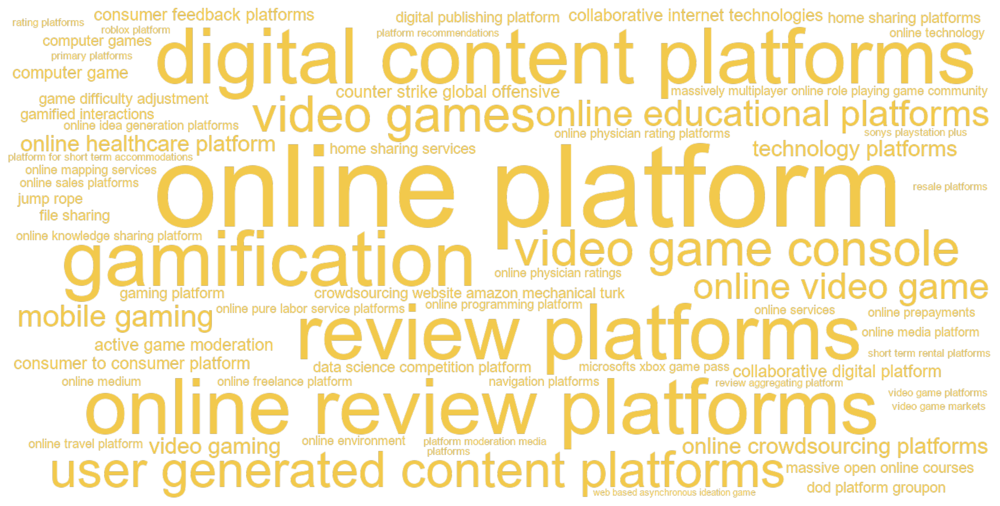
C.9.3 Articles
| Year | Full citation | Technology / technologies | Abstract |
|---|---|---|---|
| 2026 | Aguiar L. Bad Apples on Rotten Tomatoes: Critics, Crowds, and Gender Bias in Product Ratings. Marketing Science. 2026;43:. doi:10.1287/mksc.2023.0236 | review aggregating platform | Consumers considering the purchase of experience goods can rely on both critics and crowd-based evaluations to guide their decisions. Because of divergent incentives, however, critics and crowd assessments may incorporate different information. In the context of the movie industry, I investigate whether crowd reviewers provide gender-neutral product evaluations relative to professional critics. I classify movies as male or female based on the gender composition of their cast and estimate how the gender gap in movie rating scores differs across critics and crowds. Results show that although critics tend to assess both male and female movies similarly, the gender gap in ratings increases substantially under crowd-based ratings and at the expense of female movies. Notably, female movies receive a higher proportion of extremely low ratings, predominantly from male crowd reviewers. Using a rating design change implemented by the review-aggregating platform Rotten Tomatoes, results indicate that this overall increase in gender inequality is driven by a selected group of online reviewers rather than by a general bias against movies with more prominent female presence. These findings have important implications for the gatekeeping role of reviewaggregating platforms in reducing bias against female representation in product ratings. |
| 2026 | Zhang X, Chu J, Manchanda P. Bargaining and Network Effects in Two-Sided Platforms: Evidence from Online Healthcare. Marketing Science. 2026;61:. doi:10.1287/mksc.2024.0922 | online healthcare platform | Many important platforms, particularly in healthcare, hospitality, and content streaming, depend on a small number of strategic participants on the ``seller'' side. As a result, individual-level bargaining and participant-specific network effects are central to platform growth and profitability. This paper introduces a novel modeling framework that integrates bargaining outcomes with heterogeneous direct network and cross-network effects to capture platform evolution. We estimate participant-level direct network and cross-network effects based on the attributes of strategic sellers and assess how these shape bargaining outcomes. By modeling both time-varying, participant-specific network effects, which influence market growth, and their impact on bargaining outcomes, which affect profitability, our framework enables platforms to evaluate growth strategies. We apply the model to data from a major Chinese online healthcare platform connecting hospitals and consumers for health checkups. We find substantial heterogeneity in hospitals' network effects, which drive variations in bargaining outcomes. Hospitals with stronger network effects negotiate lower commission rates, whereas the platform secures higher commission rates in markets where it holds a larger market share. Through policy simulations, we explore strategies including seeding, targeting sequence, and market entry. Our findings highlight key trade-offs between growing market size and maximizing profitability, offering insights for platforms built on negotiated partnerships. |
| 2026 | Peres R, Schreier M, Schweidel D, Sorescu A. Choice in the age of post-generalization: fragmentation, hyper-personalization, and private universes of choice. International Journal Of Research In Marketing. 2026;:. doi:10.1016/j.ijresmar.2026.04.002 | platforms | Choice research has traditionally aimed to identify general laws that hold across consumers and contexts. This article proposes a shift toward an alternative paradigm: the age of post-generalization. Under this paradigm, structured heterogeneity is the primary object of inquiry. Consumers differ not only in preferences, but in search processes, belief formation, and the mechanisms that generate choice. Firms respond through hyper-personalization, adapting the marketing mix at the individual level. At the same time, choice increasingly unfolds within environments shaped by platforms, inequality, and virtual worlds, where consumers face individualized sets of options. Together, these developments reorient choice research from explaining average behavior to mapping and explaining systematic variation. Progress lies in developing theories, measurements, and models that are designed for structured heterogeneity rather than built on the assumption of generalization. © 2026 Elsevier B.V. |
| 2026 | Farronato C, Zervas G. Consumer Reviews and Regulation: Evidence from New York City Restaurants. Marketing Science. 2026;47:. doi:10.1287/mksc.2023.0088 | review platforms | We investigate the informational content of online reviews regarding hygiene standards. Using data from Yelp and New York City restaurant inspections, we show that online reviews are informative about dimensions of hygiene that consumers directly experience but provide limited information on other dimensions. We present causal evidence that restaurant demand responds to hygiene signals in online reviews and that restaurants with higher visibility on review platforms violate less along dimensions for which reviews are more informative. These findings highlight the evolving role of consumer reviews for regulators and firms. |
| 2026 | Pape L, Rossi M. Is Competition Only One Click Away? The Digital Markets Act's Impact on Google Maps. Marketing Science. 2026;54:. doi:10.1287/mksc.2025.0159 | online mapping services | This paper studies the impact of the European Union (EU) Digital Markets Act (DMA) on user search behavior and traffic to online mapping services, focusing on recent changes to Google's search results page. In January 2024, Google altered the display of location-based queries for EU users by removing clickable maps and direct links to Google Maps. We exploit this policy-induced change and implement a difference-in-differences design comparing EU and non-EU countries to assess how the removal of Google's selfpreferencing shaped search volumes and traffic patterns. Search queries for maps and Google Maps increased by more than 21\%. Although the former may reflect broader interest in mapping services, the latter directly signals intent to use Google Maps. Yet, this surge in searches primarily redirected users back to Google Maps. Traffic data reveal no significant change in overall visits to www.google.com/maps on desktops or mobile devices. Instead, we observe shifts in the channels through which users access the service and in session duration. No corresponding increase in search activity or traffic is observed for Bing Maps nor for other competing mapping services. These findings indicate that the DMA had weak competitive effects, highlighting Google Maps' dominance in a market where alternatives remain limited. |
| 2026 | Culotta A, Jin G, Sun Y, Wagman L. Safety Reviews on Airbnb: An Information Tale. Marketing Science. 2026;58:. doi:10.1287/mksc.2023.0552 | online platform | Consumer reviews, especially those expressing concerns of product quality, are crucial for the credibility of online platforms. However, reviews that criticize a product or service may also dissuade buyers from using the platform, creating a potential incentive to blur the visibility of critical reviews. Using Airbnb and official crime data in five major U.S. cities, we find that both reviews and personal experiences concerning the safety of a listing's vicinity decrease guest bookings on the platform. Counterfactual simulations suggest that a complete removal of vicinity safety reviews (VSRs) could hurt guests if they do not adjust their beliefs accordingly, and such removal can increase revenues from reservations on Airbnb, with positive sorting toward listings formerly with VSRs. Conversely, highlighting VSRs would generate opposite effects. However, the incentive to suppress VSRs can be mitigated if guests have a rational expectation of average vicinity risk after all VSRs are removed or if guests can learn from their own vicinity safety experience for a long-enough time. Because VSRs are more closely correlated with official crime statistics in low-income and minority neighborhoods, our findings suggest that suppressing or highlighting VSRs would have different effects on different neighborhoods. |
| 2026 | Solinas E, Valsesia F, Nunes J, Ordanini A. Starting Positive: The Impact of Self-Presentation Concerns on Consumer Reviews. Journal Of Consumer Research. 2026;58:. doi:10.1093/jcr/ucaf065 | review platforms | This research investigates how reviewers' self-presentation strategies influence their posting behavior. We find reviewers are less likely to post negative reviews early in their review history due to concerns that doing so would make them appear as lacking warmth. This concern diminishes as the number of reviews associated with their profile increases, resulting in a discernable negative trend in ratings at the reviewer level. We document this trend across two well-known review platforms (Yelp and TripAdvisor). A series of controlled laboratory studies replicate the effect while demonstrating the role played by self-presentation concerns in explaining the downward trend of ratings. Specifically, we find that concerns about appearing to lack warmth influence reviewers' initial reluctance to post negative (but not positive) reviews, whereas concerns about appearing competent do not. We identify two theoretically consistent managerial interventions that moderate the effect. Allowing reviewers to rate experiences without associating a review with their profile reduces the effect of the number of prior reviews on their likelihood to post, as does prompting them to mention one positive element in their written comments. Our findings underscore the common concern that online review platforms provide positively skewed ratings and offer insight into how to address this. |
| 2026 | Donati D. The End of Tourist Traps: The Impact of Review Platforms on Quality Upgrading. Marketing Science. 2026;72:. doi:10.1287/mksc.2023.0482 | navigation platforms, review platforms | Asymmetric information can distort market outcomes and harm welfare. This paper examines how cheaper access to review platforms affects consumer behavior and firms' incentives to improve product quality in markets where information is traditionally limited. I first develop a consumer search model with firms making endogenous quality decisions. The model predicts that lower search costs shift demand toward higher-quality producers, raising firms' incentives to upgrade quality, especially for firms selling ex ante lower-quality products. I then use online ratings as a proxy for reduced consumer search costs and estimate their impact on the restaurant industry in Rome, leveraging the abolition of mobile roaming charges in the European Union in 2017 for identification. Using a unique data set that combines monthly Tripadvisor information with administrative Social Security records, I find that revenues and total employment in higher-rated restaurants increased by 4\%-10\% after the internet price drop. The effects were particularly strong for less visible high-rated establishments, indicating a complementarity between ratings and navigation platforms. Meanwhile, the probability for lower-rated restaurants to exit the market doubled, while surviving lower-rated establishments hired workers with higher wages and better experience, ultimately improving their online reputation. These findings highlight the significant role of review platforms in mitigating asymmetric information and fostering quality upgrades. |
| 2025 | Yazdani E, Chakravarty A, Inman J. (Mis)alignment between facial and textual emotions and its effects on donors engagement behavior in online crowdsourcing platforms. Journal Of The Academy Of Marketing Science. 2025;88:968-988. doi:10.1007/s11747-024-01002-3 | online crowdsourcing platforms | Although textual and facial emotion expressions in prosocial appeals have been studied separately in past research, there has been little work on the misalignment (compared to alignment) between them. Using a multi-method approach comprising experiments and panel data of 6,098 crowdfunding projects from Gofundme, we investigate how emotions expressed in the cover image and the project description interact to increase potential donors' engagement as measured by metrics relevant to the platform, i.e., donation amount per donor. More specifically, we focus on the misalignment (vs. alignment) between happy and sad facial expressions in images and the positive and negative emotions in the project description. Our empirical analysis shows that misalignment scenarios have a bigger positive impact on the donor's contributed amount, compared to alignment scenarios. We also show that such a relative impact is heterogeneous and differs based on expressed urgency, beneficiary age, and progress towards donation goal. We make a theoretical contribution via assessing the extent of cognitive processing in misalignment vs alignment cases. We propose situations with a tradeoff such that the extent of cognitive processing of multimodal information content can be reduced due to simultaneous activation of affective processing. Our research provides strategic recommendations for platforms to increase donors' engagement and platform revenue management. |
| 2025 | Wang L, Toure-Tillery M. Cardio with Mr. Treadmill: How Anthropomorphizing the Means of Goal Pursuit Increases Motivation. Journal Of Marketing. 2025;93:59-80. doi:10.1177/00222429241303387 | jump rope | This article examines the motivational consequences of anthropomorphizing the means of goal pursuit. Eight studies show that consumers are more motivated to pursue fitness and academic goals with anthropomorphized (vs. nonanthropomorphized) means because such means elicit a greater sense of companionship and thus stronger beliefs that (1) goal pursuit is enjoyable (perceived enjoyability) and that (2) the goal is attainable (goal expectancy). The authors first find that participants work out harder when using an anthropomorphized (vs. nonanthropomorphized) treadmill (Study 1) and jump rope (Study 2). They then show that this effect occurs due to a greater sense of companionship, which in turn increases both perceived enjoyability and goal expectancy (sequential mediations; Study 3). They further demonstrate these underlying mechanisms through moderation: The effect attenuates when a human companion is present (Study 4), for means perceived as inherently fun (Study 5), and when self-efficacy is high (Study 6). Study 7 identifies a boundary condition: The effect disappears when the means take on a supervisor (rather than partner) role. Finally, Study 8 shows the downstream consequence of the effect on subsequent choice of means. These findings contribute to research on motivation and anthropomorphism, with practical implications for marketers and consumers. |
| 2025 | Paschmann J, Bruno H, Van H H, Voelckner F, Klein K. Driving Mobile App User Engagement Through Gamification. Journal Of Marketing Research. 2025;70:249-273. doi:10.1177/00222437241275927 | gamification | Many mobile app providers offer their apps for free and base their business models on user engagement. However, declining usage over time threatens apps' ability to add business value. To keep users engaged, app providers use gamification-that is, they use game elements (e.g., levels, points)-in their nongame apps. Complementing traditional loyalty strategies that reward value-added activities (e.g., purchases) through value rewards, gamification rewards ongoing engagement through game elements. Thus, reward architectures of many apps have become hybrid, with value- and game-reward pursuit simultaneously driving engagement. However, it is unclear to what extent gamification helps drive user engagement and add business value. To address this question, the authors study unique data from a gamified market research app comprising daily individual-level app usage observations of 18,952 users. The findings show that game rewards increase engagement significantly over and above value rewards, leading to a lift in business value, especially when users are in closer proximity to both types of rewards. However, the analysis also shows a dark side of gamification: When users enter a state of flow in the game, game engagement has a weaker effect on value-added engagement. The authors discuss implications for gamified reward architectures. |
| 2025 | Van C M, Stremersch S. Engagement in platform markets: A (video) game changer?. Journal Of The Academy Of Marketing Science. 2025;44:1422-1446. doi:10.1007/s11747-025-01089-2 | video game platforms | Empirical studies of two-sided platform markets, like the video game console industry, typically rely on software and platform sales data, thereby overlooking today's managerial focus on engagement. This present research leverages a unique dataset tracking the daily engagement of over 14,000 users of Microsoft's Xbox One and Xbox Series video game platforms to remedy this gap. We investigate how software development and release characteristics affect consumers' engagement with software titles and the platforms on which they release. Our analysis finds that releasing software on subscription services is the strongest determinant of engagement, overshadowing established determinants like software quality or exclusivity. While superstar software and exclusive titles generate engagement, their relative importance is smaller compared to sales-based findings, reported in prior literature. Instead, franchises, non-superstars, and multihomed software perform much better on engagement than on sales, especially when included in a subscription service. These findings have important industry implications. |
| 2025 | Hung H, Kumar A, Kumar V, Lin C, Tan , Kim H K. Exploring player cocreation dynamics on the gaming platform: Interplay of goal fulfillments, orchestration actions, and platform affordances. International Journal Of Research In Marketing. 2025;84:1125-1142. doi:10.1016/j.ijresmar.2024.12.003 | gaming platform, roblox platform | Understanding player co-creation dynamics on gaming platforms is crucial for fostering engagement and driving innovation in digital marketing. This study investigates these dynamics on the Roblox platform, proposing an integrated framework that connects platform capabilities with player-driven orchestration actions and the pursuit of diverse goals \_ a model applicable to various digital marketing contexts. We identify three types of gaming platform affordances and three types of developers' orchestration actions, ultimately shaping co-creation activities in terms of creative and social engagement. Using web crawling and text mining methodologies, we analyze a large, longitudinal dataset from Roblox developers engaged in co-creation projects. We employ three observable metrics to quantify co-creation activities, applying different perspectives including equality-based, effort-based weighted, and specialized measures of creative and social engagement. Our findings confirm the direct effects of platform affordances and orchestration actions on co-creation activities, with post-hoc analyses revealing goal fulfillment as an important antecedent mechanism. To validate our results, we conducted a two-stage survey with 206 experienced Roblox developers, providing additional robustness to our empirical findings. This research advances our understanding of digital co-creation and offers practical implications for designing more engaging and innovative gaming platforms. As gaming and digital marketing converge, particularly in the evolving metaverse landscape, this study underscores the importance of leveraging co-creation dynamics to enhance user engagement and drive platform growth. (c) 2024 The Author(s). Published by Elsevier B.V. This is an open access article under the CC BY license (http://creativecommons.org/licenses/by/4.0/). |
| 2025 | Blanchard S, Palazzolo M. Game Over? Assessing the Impact of Gamification Discontinuation on Mobile Banking Behaviors. Marketing Science. 2025;48:. doi:10.1287/mksc.2023.0345 | gamification | Gamification has gained significant attention in marketing. While previous research has primarily focused on the short-term effects of implementing gamification, this study explores the discontinuation of gamification in financial services and how it affects previously incentivized behaviors. We leverage a data set from a prominent Latin American bank that had incentivized behaviors in its app through a reward module with prize wheels, raffles, and points. Unexpectedly, the reward module was temporarily stopped due to a lapse in government licensing; a unique natural experiment. Using age-periodcohort models, we examine whether gamification had a causal impact on the behaviors the bank intended to motivate, and whether it was necessary to continue gamification to maintain these behaviors over time. We find that the reward module incentivized the desired behaviors, and its discontinuation caused these behaviors to decline. This effect was stronger for newer customers, and increased over time, further highlighting the need to maintain these behaviors. We also find that both cash rewards and module engagement played distinct roles in influencing user behavior, and examine the impact of different gamedesign element outcomes on engagement. |
| 2025 | Jo W, Lewis M. How expansion to the Nintendo Switch impacts PC players' game usage and spending: A study of an omni-channel strategy. International Journal Of Research In Marketing. 2025;50:1084-1104. doi:10.1016/j.ijresmar.2024.10.007 | online video game | Offering multiple retail channels for browsing and purchasing-an omni-channel strategy- is a well-established approach for modern retailers. This strategy is also increasingly adopted by `online-first' digital services such as social media and video gaming to expand consumer reach and enhance customer engagement. However, unlike the potential complementary relationships between physical and digital channels, it is unclear whether a firm's channel expansion within the digital area (e.g., online to mobile) benefits firms or merely redistributes existing demand without growth. Using the context of a major online video game, we assess whether creating a mobile console version of an existing PC-based game causes meaningful behavioral changes among existing users. We find that mobile console adoption significantly impacts mobile channel adopters' engagement, with a 31\% increase in games played and a 6.9\% increase involuntary spending. Further analysis reveals that mobile console adopters enjoy the game over a broader range of hours, suggesting increased (ubiquitous) access is the mechanism behind this positive impact. Additionally, mobile adopters make more frequent purchases, although they do not necessarily spend more per purchase. We also observe that the impact of the mobile game is more pronounced among players at high risk of churning and those with sparse voluntary spending. Finally, our analysis shows that new mobile players experience a slight but significant dip in in-game performance. This finding suggests a need for game developers to help players mitigate the downside risk of transitioning between two distinct user environments. (c) 2024 Elsevier B.V. All rights are reserved, including those for text and data mining, AI training, and similar technologies. |
| 2025 | Zhan J, Zhang X, Fu H. Information Disclosure via Platform Endorsement in Online Health Care. Journal Of Marketing Research. 2025;75:. doi:10.1177/00222437251408776 | online healthcare platform | Platform endorsement is becoming increasingly popular and plays a critical role in online health care platforms by aiding patient choices and shaping doctors' decisions. Using a unique dataset from a major Chinese online doctor consultation platform, this study applies a generalized synthetic control method to examine the impact of endorsement on patient demand, doctor service pricing, quantity, and quality. The findings show that endorsement significantly increases the price and quantity of paid services, while reducing free services among endorsed doctors. Despite handling higher service volumes, endorsed doctors maintain or improve quality. The endorsement program generates greater revenue for endorsed doctors and the platform, but it raises concerns about equity in health care access due to reduced free service provision for underprivileged patients. The analysis further reveals that the impact of endorsement varies between initial endorsement and reendorsement as well as between high-prosocial and low-prosocial doctors. These findings underscore the nuanced role of information disclosure in shaping doctor behavior and patient access, offering important implications for platform design. |
| 2025 | Dewender S, Kubler R. Maniac Mansion or Wing Commander? The attenuating influence of video game adoption on stress signals in times of forced isolation. International Journal Of Research In Marketing. 2025;99:1039-1057. doi:10.1016/j.ijresmar.2025.04.004 | online video game, video gaming | As suggested by the two games in our title, video gaming research has long debated whether gaming positively (Wing Commander) or negatively (Maniac Mansion) affects a player's mental health. We add to this stream of research by investigating how video gaming during the Covid-19 pandemic had an impact on strong stress signals. We follow a multi-method approach and first compare strong stress signals in a set of more than 100,000 Tweets originating from more than 190 Twitter users that either solely follow game accounts or other entertainment accounts covering a period of nine months each before and during the Covid-19 pandemic. Our results show that video game players show significantly lower levels of high-stress signal increase during the pandemic than the non-gamer group. Further relying on a set of scenario experiments we demonstrate that playing video games online helps to reduce the feeling of loneliness and leads to stress signal attenuation. To allow game developers to get abetter understanding of which elements do help with decreasing stress signals, we further control for contingencies such as video game characteristics. Our granular analysis demonstrates that the stress signal attenuation observed in gamers is closely linked to a game's capacity to foster social interactions. Our findings offer initial insights for game developers, suggesting that designing games with a focus on social interaction could help new gamers with attenuating stress signals in times of forced isolation. (c) 2025 The Authors. Published by Elsevier B.V. This is an open access article under the CC BY license (http://creativecommons.org/licenses/by/4.0/). |
| 2025 | Ren Q. Navigating the Creator Economy: An Analysis of Content Promotion and View Allocation Policies on Digital Content Platforms. Marketing Science. 2025;31:. doi:10.1287/mksc.2023.0573 | digital content platforms | When offering content promotion opportunities to creators, digital content platforms often face the challenge of balancing the allocation of limited views between content quality and promotional efforts. To examine this tension, we developed a game-theoretic model that captures the rich interactions among creators, the platform, and viewers. We show that when view allocation leans more toward content promotion, it does not necessarily lead creators to increase their promotion expenses, and it can result in either lower or higher equilibrium content quality. Furthermore, the platform should offer content promotion only when content production is cost-effective for creators and when the total number of creators is moderate. Finally, we find that the platform should avoid combining revenue sharing with content promotion, and that interplatform competition may result in more promotion-oriented view allocation and lower content quality compared with a monopoly platform. |
| 2025 | Bernritter S, Danatzis I, Moller-Herm J, Sotgiu F. Navigating toxic playgrounds: Managing reputational and financial brand safety in multiplayer video games. International Journal Of Research In Marketing. 2025;88:936-956. doi:10.1016/j.ijresmar.2025.01.002 | active game moderation | Brands are increasingly leveraging video games to connect with consumers through advertising activities such as virtual in-game ads, product placement, and branded skins. However, the prevalence of toxic player behavior in multiplayer video games poses significant challenges for brands, as many are hesitant to establish a presence in this space due to growing concerns over brand safety. Despite efforts by game providers to combat toxicity, empirical evidence of the impact of toxicity on brands remains scarce. This study investigates whether and why toxic player behavior poses a brand safety risk for brands that advertise in video games and how game providers can mitigate these risks. We introduce a two-dimensional brand safety framework that disentangles brand safety into a reputational and financial performance component and conduct six experiments that show that toxic player behavior produces negative spillover effects on advertising brands. Contrary to popular belief, we show that toxicity does not harm a brand's reputation or directly impact financial brand outcomes. Instead, toxic player behavior indirectly affects financial brand outcomes. Specifically, toxicity leads players to blame toxic players more, reducing game enjoyment and thereby diminishing financial brand outcomes within the game. We also find negative effects on financial brand outcomes outside the game. Our findings further reveal that active game moderation and kicking toxic players out of the game effectively mitigate these spillover effects. These results provide valuable insights for brands seeking to navigate the rapidly evolving video game landscape safely. (c) 2025 The Author(s). Published by Elsevier B.V. This is an open access article under the CC BY-NC license (http://creativecommons.org/licenses/by-nc/4.0/). |
| 2025 | Ascarza E, Netzer O, Runge J. Personalized game design for improved user retention and monetization in freemium games. International Journal Of Research In Marketing. 2025;48:975-995. doi:10.1016/j.ijresmar.2025.01.006 | game difficulty adjustment | One of the most significant levers available to gaming companies in designing digital games is setting the level of difficulty, which essentially regulates the user's ability to progress within the game. This aspect is particularly significant in free-to-play (F2P) games, where the paid version often aims to enhance the player's experience and facilitate faster progression. In this paper, we leverage a large randomized control trial to assess the effect of dynamically adjusting game difficulty on players' behavior and game monetization in the context of a popular F2P mobile game. The results highlight the intertwined dynamics of customer retention and monetization in such settings. As expected, offering players an easier game significantly decreases purchases in the specific round played - faced with an easier game, users do not need to resort to in-game purchases to make progress. However, because lowering the game difficulty increases both immediate engagement and long-term retention, lower difficulty levels result in a significant increase in customer spending both in the short and long run. We find substantial heterogeneity in the strength of these effects. Customers who are more prone to making progress in the game exhibit stronger effects in both the short and long run, whereas customers who previously spent money on the game exhibit stronger effects primarily in long-term monetization. We leverage these insights to demonstrate how the focal firm can use game difficulty adjustment to further increase revenues from both advertising and premium services and to recommend personalized product design strategies for freemium apps more broadly. (c) 2025 Elsevier B.V. All rights are reserved, including those for text and data mining, AI training, and similar technologies. |
| 2025 | Heusler A, Foutz N, Spann M, Stich , Lucas L. The idea marketplace: Diversity, social capital, and innovation. Journal Of The Academy Of Marketing Science. 2025;101:150-171. doi:10.1007/s11747-024-01045-6 | collaborative digital platform | Firms increasingly leverage idea markets, where participants (such as employees) generate, improve, and evaluate ideas on a collaborative digital platform. Different participants contribute differently to the ideation process, some generating high quality ideas while others initiating discussion threads and commenting on the ideas to further enhance the ideas' quality. Such diverse contributions may be importantly influenced by the participants' diverse social capital-resource access and status-in their pre-existing network. We theorize this relationship and further test our hypotheses by conducting two idea market studies, one involving only a firm's employees (Study 1: closed innovation) and the other further incorporating non-employees (Study 2: open innovation). We show that the higher quality ideas are generated by the participants with greater resource access, whereas continued engagement, including contributing larger quantities of ideas, discussion threads, and comments, stems from those with higher status. These findings have important implications for ideator recruitment and idea market design. |
| 2025 | Banerjee A, Urminsky O. The Language That Drives Engagement: A Systematic Large-scale Analysis of Headline Experiments. Marketing Science. 2025;80:. doi:10.1287/mksc.2021.0018 | online media platform | We use a large-scale data set of thousands of field experiments conducted on Upworthy.com, an online media platform, to investigate the cognitive, motivational, affective, and grammatical factors implementable in messages that increase engagement with online content. We map from textual cues measured with text-analysis tools to constructs implied to be relevant by a broad range of prior research literatures. We validate the constructs with human judgment and then test which constructs causally impact click-through to articles when implemented in headlines. Our findings suggest that the use of textual cues identified in previous research and industry advice does impact the effectiveness of headlines overall, but the prior research and industry advice does not always provide useful guidance as to the direction of the effects. We identify which textual characteristics make headlines most effective at motivating engagement in our online news setting. |
| 2025 | Van C M, Stremersch S. The rise of the subscription model in the video game console industry: Unveiling the commercial consequences for platform owners and video game sellers. International Journal Of Research In Marketing. 2025;51:1058-1083. doi:10.1016/j.ijresmar.2025.02.006 | microsofts xbox game pass, sonys playstation plus | Prior research in the video game console industry empirically examined the interdependence of hardware (i.e., console) sales, software (i.e., video game) sales and software supply. Recently, we have witnessed the rise of the subscription model (such as Microsoft's Xbox Game Pass and Sony's PlayStation Plus) as a new business model among platform owners. The impact of this new business model on platform owner revenues, video game seller revenues, and video game supply are unknown to date. Does this new model fuel growth for all sides of the market or does it come at the expense of console and/or video game sales revenue? We study the past launches of Microsoft's Xbox Game Pass and Sony's PlayStation Plus on which now the dust has settled enough to examine the commercial consequences thereof. Our research provides first evidence that the introduction of the respective subscription models in proprietary video game console markets: (1) enhanced console revenue, (2) had limited impact on video game revenue (contrary to the cannibalizing effects observed in the music, movie and TV industry), and (3) created a healthier video game supply, either by increasing the quantity of video game introductions (i.e., for PlayStation) or increasing their average quality (i.e., for Xbox). (c) 2025 The Author(s). Published by Elsevier B.V. This is an open access article under the CC BY license (http://creativecommons.org/licenses/by/4.0/). |
| 2025 | Bairathi M, Zhang X, Lambrecht A. The Value of Platform Endorsement. Marketing Science. 2025;53:. doi:10.1287/mksc.2022.0226 | online freelance platform | Many digital platforms with large product assortments endorse a select group of items to facilitate user choice. However, although it seems intuitive that such endorsement may increase the sales of endorsed items, little is known about its effect on unendorsed items and on the platform. Using data from a field experiment conducted by an online freelance platform, we examine the effect of exposure to platform endorsement on user search and purchase behavior. We find that exposure to platform endorsement increases user search and purchases not only for endorsed services but also, for unendorsed services. We link the increase in search and purchases to an increase in the perception of the quality of services offered on the platform. We further explore heterogeneity in the effect of platform endorsement and find that the effect of exposure to platform endorsement on purchase is more pronounced for users with a higher propensity to purchase. We discuss implications for platforms, merchants, and regulators. |
| 2025 | Moeller-Herm J, Gottschalk S, Mafael A. To post or not to post: How minority opinion and posting frequency impact online review posting. International Journal Of Research In Marketing. 2025;81:235-254. doi:10.1016/j.ijresmar.2024.08.005 | rating platforms | Consumers are often exposed to prior reviews when considering posting themselves. We examine how finding one's opinion in the minority (vs. majority) of previous ratings affects a consumer's decision to post. Specifically, we contrast the posting decisions of frequent posters with those of less frequent posters. Results from seven experimental studies show that frequent posters prefer review environments in which their opinion belongs to the minority of previously posted ratings. We support these findings with additional evidence from secondary review data. This behavior sets them apart from infrequent posters, who are reluctant to share minority opinions. In addition, we show that this effect is driven by differences in how a minority post is perceived: As an opportunity to signal one's reviewer identity or as socially risky. Based on these insights, we explore how rating platforms can motivate review posting, particularly among infrequent posters. Our findings extend previous research on social influence effects in online reviews and have implications for various stakeholders who rely on and aim to solicit reviews on rating platforms. (c) 2024 The Authors. Published by Elsevier B.V. This is an open access article under the CC BY license (http://creativecommons.org/licenses/by/4.0/). |
| 2025 | Hochstein R, Harmeling C, Perko T. Toward a theory of consumer digital trust: Meta-analytic evidence of its role in the effectiveness of user-generated content. Journal Of The Academy Of Marketing Science. 2025;101:1034-1054. doi:10.1007/s11747-023-00982-y | platform moderation media | Consumers seek out online user-generated content to inform their purchase decisions because they perceive content created by other consumers as more believable than marketing communications. This research provides a theory of consumer digital trust in which consumer trust in user-generated content requires a digital environment that minimizes consumer suspicion of misrepresented or missing content. The theory is supported with empirical evidence from a hierarchical meta-analysis of 128 effects from 19 online platforms over 19 years (2004-2022). Account verification features, which alleviate suspicions of misrepresented content creator identities, increase the effect of user-generated content on firm performance, but content-enhancing features, such as photo filters, that can prompt suspicion of misrepresented brand experiences, weaken this link. Content-removal features that can spark speculation of missing information in content creators' historical content and platform moderation media, which creates questions about missing content in brand conversations, weaken the influence of some user-generated content. |
| 2025 | Cong Z, Zhao Y, Zhang Z. Understanding Users' Content Contribution Behavior When Knowledge Can Be Priced. Marketing Science. 2025;44:. doi:10.1287/mksc.2022.0205 | online knowledge sharing platform | With the rise of the creator economy, content platforms are exploring ways for creators to monetize their content. An increasingly popular approach is enabling content creators to offer paid content directly to viewers. This paper studies whether giving creators the option of providing paid content influences their incentives to contribute free content. Our setting is an online knowledge-sharing platform, which started out as a Q\&A community based on users' voluntary contributions and later introduced a program that allows participants to monetize their expertise by hosting paid live events. We find that participant motivations for contributing answers are rekindled after the program announcement, whereas the contributions of the nonparticipants continue to decrease. Further analysis shows that the motivating effect of program announcement is more pronounced for less established participants or participants facing more intense competition. Moreover, we show that participants adjust their answer contributions according to the time and topics of their paid events. These results suggest that participants strategically leverage free content to boost their reputation and attract ``eyeballs'' for their paid content. We discuss the implications of our findings for content platforms and content creators. |
| 2024 | Ren Q. Advertising and Content Creation on Digital Content Platforms. Marketing Science. 2024;19:734-750. doi:10.1287/mksc.2022.0387 | digital content platforms | This paper investigates the interplay between advertising and decentralized content creation on digital content platforms, such as YouTube, TikTok, and Instagram. Unlike traditional media, content on these platforms is produced by numerous creators competing for viewer attention. This study addresses how a platform's advertising policy (specifically, the level of advertising embedded in organic content) and various market factors, including viewers' satiation rates and their distaste for ads, influence decentralized content creation, exploring the ensuing implications for the platform's advertising and revenue-sharing policy design. Using a game-theoretical model, the research reveals that the level of advertising, viewers' satiation rates, and their distaste for ads can have a nonmonotonic impact on the equilibrium content quality. Contrary to conventional wisdom, a low level of advertising could be advantageous for platforms when viewers are inclined to consume high volumes of content, factoring in the strategic influence on content creation. Additionally, revenue sharing with creators depends on factors such as the viewers' satiation rates and the creators' creative costs. This study offers content platforms strategic guidance on refining their advertising and revenue-sharing policies in the creator economy. |
| 2024 | Lanz A, Goldenberg J, Shapira D, Stahl , Florian F. Buying Future Endorsements from Prospective Influencers on User-Generated Content Platforms. Journal Of Marketing Research. 2024;20:839-857. doi:10.1177/00222437231207323 | user generated content platforms | Excessive monetary compensation and existing contractual agreements of influencers limit the ability of many firms to engage in effective influencer seeding. The authors suggest a forward-looking approach of targeting prospective influencers-while they are still largely unknown (e.g., a few months after their platform registration)-and signing them to endorse the firm in the future (e.g., more than a year later). This approach has the potential to significantly reduce costs. However, as only rarely do newly registered users ultimately become influencers (and as signals are weak), the authors propose a novel framework to cope with this rare-event problem. For empirical demonstration and application, the authors conduct data-based simulations using a data set from a worldwide leading audio platform. Every wave of newly registered users is associated with a profit potential stemming from future endorsements by prospective influencers. With knowledge about the order of magnitude of the return on successful influencer spend, managers applying the framework can extract around 20\% of this profit potential (if the return is around three times the spend). |
| 2024 | Wang C, Zhou B, Joshi Y. Endogenous Consumption and Metered Paywalls. Marketing Science. 2024;56:. doi:10.1287/mksc.2023.1444 | digital content platforms | Digital content platforms increasingly implement paywalls to generate subscrip-tion revenue, but putting content behind paywalls can reduce consumption and advertising revenue. We analyze optimal paywall design when consumers are heterogenous in their valuation for and satiation with content and endogenously determine their consumption. We find that, under moderate ad rates, a metered paywall offering a limited amount of free content is optimal when consumers display sufficient heterogeneity in satiation. When ad rates increase, one might expect platforms to offer more free content to generate higher ad revenue. Instead, we find that sometimes offering less free content and lowering the sub-scription price is optimal to attract new subscribers. Further, depending on ad rates, the optimal amount of free content may increase or decrease in consumers' valuation for con-tent. As valuation increases, consumers' willingness to pay for subscription and desire for content consumption increases. The former effect dominates under low ad rates and incenti-vizes the platform to provide less free content, but the opposite is true under high ad rates. Counterintuitively, we also find that total content consumption can increase with the pro-portion of users who become satiated relatively faster because the platform may strategi-cally raise its meter limit to increase ad revenues from nonsubscribers. We also explore the impact of a more appealing outside option for consumers, competition between media plat-forms, and correlation between valuation and satiation on the optimality of paywalls. |
| 2024 | Beck B, Wuyts S, Jap S. Guardians of Trust: How Review Platforms Can Fight Fakery and Build Consumer Trust. Journal Of Marketing Research. 2024;87:682-699. doi:10.1177/00222437231195576 | online review platforms | As customers increasingly rely on online reviews for making consumption decisions, the dangers arising from misinformation and fakery have become an acute source of concern for consumers, firms, and society at large. Many online review platforms claim a role as guardians of trust in the information exchange process. Yet, little is known about the practices firms can utilize to design platforms that build and safeguard consumer trust. The authors draw on governance and identity disclosure literature streams to propose five practices that mitigate fakery and build trust in the platform: monitoring, exposure, community building, status endowment, and identity disclosure. Five studies (1) establish the individual and joint effects these practices have on platform trust, (2) identify the mediating processes by which the practices build trust, (3) verify the ecological value of the conceptual framework, (4) provide support of the salience of the practices, and (5) show how the practices build trust above and beyond review content-level characteristics. Interaction effects suggest that exposure, community building, and status endowment obviate the need for identity disclosure in building platform trust, a finding that mitigates related privacy concerns. Collectively, the findings can improve platform design, enabling review platforms to fulfill their promise of mitigating fakery and increasing trust. |
| 2024 | Lu J, Bradlow E, Hutchinson J. More Likely to Pay but Less Engaged: The Effects of Switching Online Courses from Scheduled to On-Demand Release on User Behavior. Journal Of Marketing. 2024;71:63-88. doi:10.1177/00222429241227145 | online educational platforms | Following trends in entertainment streaming services, online educational platforms are increasingly offering users flexible ``on-demand'' content options. It is important to understand how the timing of content release affects learning behaviors and firm revenue drivers. The current research studies over 67,000 users taking a marketing course before versus after a natural experiment in which the platform switched the course from a scheduled weekly-release format to an on-demand format with all content immediately available. The switch to on-demand positively impacted short-term firm revenue by increasing the number and proportion of certificate-paying users, suggesting that on-demand content can attract a broader set of consumers who value flexibility. On the downside, the switch resulted in users exhibiting lower lecture completion rates and quiz performance and taking fewer additional business courses on the platform, representing a long-term cost. The results were robust to propensity score matching and stratification. The analyses also revealed that on-demand content enabled learning patterns that deviated from a standard evenly paced schedule, including ``strategic'' binge learning and stretching out engagement past the recommended course period. Thus, while on-demand formats can boost revenues by bringing in more paying users, managers must consider new strategies for maintaining performance and engagement levels within these environments. |
| 2024 | Gauss P, Gensler S, Kortenhaus M, Riedel , Nadine N, Schneider A. Regulating the sharing economy: The effects of day caps on short- and long-term rental markets and stakeholder outcomes. Journal Of The Academy Of Marketing Science. 2024;48:1627-1650. doi:10.1007/s11747-024-01028-7 | home sharing platforms | Home sharing platforms have experienced a rapid growth over the last decade. Following negative publicity, many cities have started regulating the short-term rental market. Regulations often involve a cap on the number of days a property can be rented out on a short-term basis. We draw on rich data for short-term rentals on Airbnb and for the long-term rental market to examine the impact of short-term rental regulations with a day cap on various stakeholders: hosts, guests, the platform provider, and residents. Based on a difference-in-differences design, we document a sizable drop in Airbnb activity. Interestingly, not only targeted hosts (i.e., hosts with reservation days larger than the day cap), but also non-targeted hosts reduce their Airbnb activity. The reservation days of non-targeted hosts decrease between 26.27\% and 51.89\% depending on the treatment. Targeted hosts experience a similar decline. There is, nevertheless, significant non-compliance: more than one third of hosts do not comply with enacted short-term rental regulations. Additional analyses show that few properties are redirected from short-term rental to long-term rental use and that there is no significant drop in long-term rents. Drawing on a theoretical model, we tie the estimated effects to changes in stakeholders' welfare: Regulations significantly reduce the welfare of hosts, and the loss ranges between 46.30\% and 9.02\%. The welfare loss of the platform provider is proportional to the loss of the hosts. Welfare of guests decreases moderately ranging between 4.5\% to 4.1\%. The welfare of residents increases minimal. These results question the effectiveness and desirability of the studied short-term rental regulations. |
| 2024 | Wloemert N, Papies D, Clement M, Spann M. Rejoinder: User-Generated Content Availability and Platform Regulation. Marketing Science. 2024;8:. doi:10.1287/mksc.2023.0369 | user generated content platforms | Tushnet [Tushnet R (2023) Comment on ``Frontiers: The interplay of user-gener-ated content, content industry revenues, and platform regulation: Quasi-experimental evi-dence from YouTube''. Marketing Sci., ePub ahead of print October 27, https://doi.org/10. 1287/mksc.2023.0339] provides a commentary on Wlo center dot mert et al. [Wlo center dot mert N, Papies D, Clement M, Spann M (2023) Frontiers: The interplay of user-generated content, content industry revenues, and platform regulation: Quasi-experimental evidence from YouTube. Marketing Sci., ePub ahead of print October 27, https://doi.org/10.1287/mksc.2022.0080], who analyzed the quasi-experiment that occurred when numerous songs became avail-able as user-generated content (UGC) on YouTube, following an agreement between You -Tube and the German collecting society GEMA. Tushnet's thoughtful commentary centers around the scope of legal protection that UGC platforms enjoy, and whether the situation examined in Wlo center dot mert et al. qualifies as a ``legal safe harbor.'' In our rejoinder, we clarify the study's relevance for questions concerning platform regulation, highlight the implications of these regulatory aspects for platforms' strong bargaining power, as reflected in comparatively low payouts to rightsholders, and discuss how the sampling versus cannibalization effects that we study impact market outcomes for different stake-holders under these market conditions. |
| 2024 | Chen Y, Lee S. User-Generated Physician Ratings and Their Effects on Patients' Physician Choices: Evidence from Yelp. Journal Of Marketing. 2024;91:77-96. doi:10.1177/00222429221146511 | online physician rating platforms, online physician ratings | Patients increasingly rely on online physician ratings to select their physicians and make health care decisions. However, it is unclear whether online physician ratings signal physician quality information and affect patients' physician choices. By combining physician rating data from Yelp with data from Medicare, which covers a large elderly patient group, the authors find that ratings are positively associated with important measures of physician quality, including physicians' credentials, adherence to clinical guidelines, and patients' health outcomes. They introduce novel instrumental variables, where reviewers' leniency in rating other businesses is employed as an instrument for physicians' ratings. They find that an increase in physicians' average rating increases physicians' patient flow. To understand the quality signals that patients respond to, the authors also use the latent Dirichlet allocation model and extract topics from review texts. Patients respond differentially to different information and respond most to information about physicians' interpersonal and clinical skills. In addition, rating credibility, accessibility, and strength of other existent signals moderate the positive effects of online ratings on patient flow. Overall, online physician rating platforms can promote efficiency by disseminating important quality information to patients and directing patients to higher-quality physicians. |
| 2023 | Chan T, Chen Y, Wu C. Collaborate to Compete: An Empirical Matching Game Under Information in Rank-Order Tournaments. Marketing Science. 2023;36:1004-1026. doi:10.1287/mksc.2022.1417 | data science competition platform | This paper studies the collaboration of talents in rank-order tournaments. We use a structural matching model with unobserved transfers among participants to capture the differentiated incentives of participants that spur collaboration, with a specific focus on incorporating incomplete information and competition in the matching game. We estimate our model using data from a leading data science competition platform and recover the heterogeneous preferences and abilities of participants that determine whether and with whom they form teams. Overall, teamwork enhances performance and competition fosters collaboration, whereas incomplete information about potential coworkers' ability hinders collaboration. Using the estimation results, we conduct counterfactuals to investigate how the information on potential collaborators' ability and competitive pressure affect collaboration and performance outcome. Our results suggest that the platform could further improve collaboration and yield better outcomes by providing more informative signals of ability and further concentrating the allocation of rewards to top performers. |
| 2023 | Kim E, Ding M, Wang X, Lu , Shijie S. Does Topic Consistency Matter? A Study of Critic and User Reviews in the Movie Industry. Journal Of Marketing. 2023;76:428-450. doi:10.1177/00222429221127927 | online review platforms | Online review platforms often present reviews from both critics and general users. In this research, the authors propose a measure called ``topic consistency'' to capture the degree of overlap between critic and user review content. High topic consistency suggests greater information recall due to repeated presentation of the same topics, which may increase the memorability of movie attributes and therefore positively affect movie demand. The authors measure the topic consistency between critic and user reviews using topic models and further study the financial consequences of this measure using data for movies released in the United States. Topic consistency is positively associated with subsequent box office revenue, suggesting a positive relationship between topic consistency and movie demand. Furthermore, the effect of topic consistency on demand is the greatest for movies with mediocre review ratings and when the review ratings from critics are close to those from users. Using lab experiments, the authors provide evidence of the causal link between topic consistency and consumers' willingness to watch a movie, and support for the potential mediation through the information recall of reviews. Movie producers and advertisers should consider highlighting or inducing a central theme for critics and users to discuss, as the more the review content of critics and users overlaps, the higher a movie's revenue. |
| 2023 | Grant A, Weijo H, Dacin P. How institutional logics shape fairness in crowdsourcing: The case of Threadless. International Journal Of Research In Marketing. 2023;57:378-397. doi:10.1016/j.ijresmar.2022.10.002 | online crowdsourcing platforms | Fairness is essential for successful crowdsourcing. Without it, companies run the risk of consumers not participating, or worse, sabotaging the crowdsourcing initiative. Yet little is known about how consumers determine what is fair in crowdsourcing. Building on the-ories of organizational justice and institutional logics, and using a longitudinal netnogra-phy of Threadless, a popular crowdsourcing platform, this paper shows how experiences of fairness stem from the interaction between two conflicting crowdsourcing logics: the logic of renewal and the logic of community. The two logics inform notions of fairness in crowdsourcing contests across procedural, distributive, and interactional justice dimen-sions. A balance between the two logics is ideal for maintaining fairness among a crowd -sourcing community. We show the conditions in which crowdsourcing participants tolerate transgressions to each justice dimension, consequently emphasizing one logic over the other. Overall, our study advances theory on crowdsourcing logics and how they guide notions of procedural, distributive, and interactional fairness in crowdsourcing. Our study also offers new guidance on how to manage fairness in crowdsourcing. \& COPY; 2022 Elsevier B.V. All rights reserved. |
| 2023 | Ananthakrishnan U, Proserpio D, Sharma S. I Hear You: Does Quality Improve with Customer Voice?. Marketing Science. 2023;49:1143-1161. doi:10.1287/mksc.2023.1437 | online review platforms | In a static quality context, online reviews and ratings help consumers separate high- and low-quality firms. In a dynamic quality context, however, reviews can inform and incentivize low-rated firms to improve their quality and lower the quality gap with high-rated firms. In this paper, we empirically test this hypothesis by analyzing the U.S. hotel industry using data from two major online consumer review platforms: Tripadvisor and Expedia. Using a combination of econometric and natural language processing tools, we present the following findings. First, hotels that are more likely to pay attention to reviews increase their ratings more than hotels that are less likely to pay attention to reviews. Second, these hotels increase their ratings by improving on issues frequently mentioned in their reviews. Third, we find that low-rated hotels experience larger gains in ratings as they have more margin for improvement than high-rated hotels. Overall, our results suggest that online reviews are a valuable source of information for firms and may improve consumer welfare. |
| 2023 | Tamaddoni A, Seenivasan S, Pallant J, Skiera B. Investigating the effect of status changes in review platforms. International Journal Of Research In Marketing. 2023;60:189-209. doi:10.1016/j.ijresmar.2022.07.001 | review platforms | Review platforms often use transient status reward systems where the granted status is not permanent, and reviewers can experience gains and losses in status. To evaluate the effectiveness of such systems, review platforms need to consider a trade-off between the potential positive effects of a status gain and the potential negative effects of a status loss on the quantity and characteristics of reviewers' contributions. This article examines this trade-off. The results of an empirical study that uses matched difference-in-differences analysis of data from Yelp show that: (i) the positive effect of a status gain on the number of reviews is about three times greater than the negative effect of a status loss; (ii) these effects are more pronounced for reviewers with less experience; and (iii) status changes also change the valence and elaborateness of reviews.(c) 2022 Elsevier B.V. All rights reserved. |
| 2023 | Troncoso I, Luo L. Look the Part? The Role of Profile Pictures in Online Labor Markets. Marketing Science. 2023;50:1080-1100. doi:10.1287/mksc.2022.1425 | platform recommendations | Profile pictures are a key component of many freelancing platforms, a design choice that can impact hiring and matching outcomes. In this paper, we examine how appearance-based perceptions of a freelancer's fit for the job (i.e., whether a freelancer ``looks the part'' for the job), as inferred from profile pictures, can impact hiring outcomes on such platforms. Leveraging computer vision techniques and choice models, we analyze six-month data from Freelancer.com (63,014 completed jobs that received 2,042,198 applications from 160,014 freelancers) and find that, above and beyond demographics and beauty, freelancers who ``look the part'' are more likely to be hired. Interestingly, we do not find a strong correlation between ``looking the part'' and job performance. Supplementing our large-scale observational study with two choice experiments, we find that (i) the effect of perceived job fit is stronger when reputation systems are not sufficiently diagnostic to differentiate candidates and (ii) that by considering perceptions of job fit, participants are more likely to choose freelancers with fewer reviews, lower ratings, and/or without certifications. Last, we find that ``platform recommendations'' can only partially mitigate the unintended consequences of profile pictures, and recommending multiple freelancers can further increase the role of ``looking the part.'' |
| 2023 | Drenten J, Harrison R, Pendarvis N. More Gamer, Less Girl: Gendered Boundaries, Tokenism, and the Cultural Persistence of Masculine Dominance. Journal Of Consumer Research. 2023;92:2-24. doi:10.1093/jcr/ucac046 | video gaming | How do exclusionary boundaries persist in consumption subcultures amid increased progress, representation, and inclusion? In video gaming, women have come to represent nearly half of the market; yet, this is a limited indicator of gender-based progress. A culture of masculine dominance persists. Extending previous research on boundary work, the authors employ a cultural perspective of tokenism to examine how gendered boundaries in consumption subcultures persist despite efforts to transform or even eradicate them. This qualitative study draws on interviews with 23 gamers who identify as women (ages 19-29 years), coupled with data from social media platforms, news media, and industry reports. Empirical findings capture the recursive process of maladaptive boundary crossing: how women's efforts to subvert gendered boundaries at the micro level (e.g., through response enactments) get churned through the structuring tokenistic mechanics of boundary work at the meso level and result in the inadvertent cultural persistence of masculine dominance. The analysis offers a conceptual framework that explains how micro-meso level dynamics perpetuate and conceal inequity in consumption subcultures. Implications address the precarious promise of progress and the cultural legacy of tokenism in the marketplace with particular relevance to broader systems of domination. |
| 2023 | Haenlein M, Libai B, Muller E. Satiation and cross promotion: Selling and swapping users in mobile games. International Journal Of Research In Marketing. 2023;69:342-361. doi:10.1016/j.ijresmar.2022.12.001 | mobile gaming | One of the main challenges facing the mobile game industry is an alarming level of satia-tion, that is, a decline in user engagement and consequently in ad viewing, spending, and retention. Satiation lowers users' CLV to an extent that renders acquisition from the likes of Facebook and Google untenable, driving game publishers to cross-promote, that is, sell and swap users among themselves. We model this cross-promotion as first, a screening mech-anism, in that the fact of playing a game indicates specific preferences that might be suit-able to an exchange with similar games; and second, as a resetting mechanism that enables the swapped users to reset their engagement in the new game, thus rendering the swap or sell beneficial to both buyer and seller. We show that there exists an optimal level of satiation with a game, and with this level, we show the conditions under which the game publisher cross promotes, and when it does, what the conditions are for selling rather than swapping. We extend the analysis to the case in which advertising costs and conver-sion rates are related; explain why they might be negatively correlated, and show that our main results still hold.\& COPY; 2022 The Authors. Published by Elsevier B.V.This is an open access article under the CC BY license (http://creativecommons.org/licenses/by/4.0/). |
| 2023 | Wiegand N, Peers Y, Bleier A. Software multihoming to distal markets: Evidence of cannibalization and complementarity in the video game console industry. Journal Of The Academy Of Marketing Science. 2023;96:393-417. doi:10.1007/s11747-022-00893-4 | video game console | Steady software supply is a crucial driver of platform sales. While publishers benefit from releasing software across multiple platforms to tap a greater market, platform manufacturers often seek exclusive release to differentiate from competitors. Research has examined such software multihoming across competing platforms of the same technology generation (i.e., the proximal market); however, publishers increasingly multihome software to platforms in distal markets. In the video game console industry, these include previous-generation consoles, handhelds, or mobile devices. This study investigates multihoming to distal markets in the seventh and eighth game console generations. Whereas multihoming to previous-generation consoles cannibalizes focal console sales, multihoming to mobile devices exerts complementary effects. Software quality and console age moderate these relationships, with negative spillovers from multihoming to previous-generation consoles being rooted in lower-quality games and games released later in the console's lifecycle. By contrast, multihoming to mobile devices is most beneficial early on. |
| 2023 | Zha Y, Li Q, Huang T, Yu Y. Strategic Information Sharing of Online Platforms as Resellers or Marketplaces. Marketing Science. 2023;52:659-678. doi:10.1287/mksc.2022.1397 | online platform | Information sharing becomes increasingly important in recent years as online platforms gather massive consumer information that is typically invisible by upstream manufacturers and competing sellers/retailers. We study an online platform's demand information sharing strategy in a distribution channel where a manufacturer distributes products through both platform and seller channels. We consider two different selling structures: the conventional reselling model (in which the platform acts as a reseller) and the agency/marketplace model (in which the platform acts as an agency). We find that for both selling formats, the platform always has incentives to share information with at least one party (either manufacturer or seller or both). The marketplace selling format gives the platform stronger incentives to share information with the seller. With low competition in the reselling model, the platform may not share information with the manufacturer, whereas it always does in the marketplace model. Interestingly, the forecasting accuracy does not structurally change optimal information sharing in the reselling model but induces the platform to share information with both the manufacturer and the retailer when it is high or low in the marketplace model. Our findings provide useful guidelines for an online platform on when and whom to share demand information with. |
| 2023 | Simonov A, Ursu R, Zheng C. Suspense and Surprise in Media Product Design: Evidence from Twitch. Journal Of Marketing Research. 2023;71:1-24. doi:10.1177/00222437221108653 | counter strike global offensive | The authors quantify the relative importance of beliefs-based suspense and surprise measures in the entertainment preferences of viewers of Twitch, the largest online video game streaming platform. Using detailed viewership and game statistics data from broadcasts of tournaments of a popular video game, Counter-Strike: Global Offensive, the authors compute measures of suspense and surprise for a rational viewer. They then develop and estimate a stylized utility model that underlies viewers' decisions to both join and leave a game stream. The method used enables the authors to causally identify the direct effect of suspense and surprise on viewers' utilities, separating it from other sources of entertainment value (e.g., team skill) and from indirect/supply-side effects (e.g., word of mouth, advertising). The authors show that suspense enters a viewer's utility but find little evidence of the effect of surprise. The magnitudes imply that a one-standard-deviation increase in round-level suspense decreases the probability of leaving a stream by .27 percentage points. The authors find no detectable effect of suspense and surprise on the decision to join a stream, ruling out indirect effects. Variation in suspense levels explains 9.2\% of the observed range of the evolution of a stream's viewership. The authors use these estimates to evaluate counterfactual game and platform designs. They show that historical updates to Counter-Strike: Global Offensive game rules have increased tournament viewership by 4.1\%, that rules can be further modified to increase viewership, and that alternative platform designs that inform joining users of games' scores will additionally increase overall viewership by 1.3\%. Together, these results illustrate the value of the authors' method as a general tool that content producers and platforms can use to evaluate and design media products. |
| 2023 | Bekkerman R, Cohen M, Kung E, Maiden J, Proserpio D. The Effect of Short-Term Rentals on Residential Investment. Marketing Science. 2023;14:819-834. doi:10.1287/mksc.2022.1409 | short term rental platforms | We provide new evidence that short-term rental (STR) platforms like Airbnb incentivize residential real estate investment. We exploit two complementary identification strategies. First, we use variation in the timing of STR regulations to estimate the effect of regulation on both Airbnb listings and residential permits. We find that over the first 12 months following the start of the regulation, STR regulations reduce Airbnb listings by 8.9\% and residential permits by 10.8\%. Second, we show that residential permits decline discontinuously across jurisdictional boundaries in which one side of the boundary has an STR regulation and the other side does not. The effect is especially striking for accessory dwelling units, which decline by 16.5\% across regulatory boundaries. Our results imply that STRs incentivize residential investment and especially so for housing units that are well suited for short-term renting. |
| 2023 | Bei Z, Gielens K. The One-Party Versus Third-Party Platform Conundrum: How Can Brands Thrive?. Journal Of Marketing. 2023;81:253-274. doi:10.1177/00222429221116803 | online platform | Online platforms aggregating brands, such as Amazon and Alibaba's Tmall, have emerged as powerful intermediaries for brands. Although these platforms offer unprecedented access to consumers, the platform controls this access. Thus, concerns are raised about how these platforms interfere with the brand experience and, ultimately, performance. The question of how brands can govern their platform operations more effectively thus arises. There are essentially two types of governance models: a one-party (1P) marketplace (wholesaling to the platform) and a third-party (3P) marketplace (selling directly to the consumer on the platform). However, it is unclear how 1P or 3P operations affect brand performance. To that extent, the authors study the market share implications of operations on JD.com, a 1P platform, and Tmall, a 3P platform, for almost 2,000 brands. On average, 1P operations decrease shares, whereas 3P operations lift shares. These changes depend on different brand-specific moderators. For 1P operations, share drops are more substantial for brands that are unable to elicit a trustworthy consumer relationship, when alternative brands abound and rogue-seller activities are severe in the product category. The 3P share lifts, in contrast, are more substantial for premium-priced, nonleading brands with prior direct-to-consumer experience. |
| 2022 | Bekk M, Eppmann R, Klein K, Voelckner , Franziska F. All that glitters is not gold: An investigation into the undesired effects of gamification and how to mitigate them through gamification design. International Journal Of Research In Marketing. 2022;63:1059-1081. doi:10.1016/j.ijresmar.2022.03.002 | gamification | Although gamification has received considerable attention from both researchers and practitioners, its influence on consumers remains ambiguous. This paper proposes that a negative process through decreased attention and a positive process through increased enjoyment explain the effects of gamification on different outcome variables. Study 1 examines these two processes and gamification's downstream consequences on purchase intention and product information recognition. For purchase intention, the two processes operate in parallel and produce a null effect of gamification. For product information recognition, only the negative process emerges, resulting in a negative effect of gamification. Studies 2 and 3 focus on the negative effect of gamification on product information recognition and show that the negative effect disappears in gamification designs that link the game elements with meaningful information about the product (Study 2) or make consumers aware of the distraction potential of game elements (Study 3). The studies' findings provide managerial insights into why not all gamification endeavors yield the desired results; they also specify two boundary conditions (i.e., meaningfulness and disclosure) that may help managers avoid potentially detrimental effects of gamification. (c) 2022 Elsevier B.V. All rights reserved. |
| 2022 | Zhang S, Lee D, Singh P, Mukhopadhyay , Tridas T. Demand Interactions in Sharing Economies: Evidence from a Natural Experiment Involving Airbnb and Uber/Lyft. Journal Of Marketing Research. 2022;46:374-391. doi:10.1177/00222437211062172 | home sharing services | The authors examine whether and how ride-sharing services influence the demand for home-sharing services. Their identification strategy hinges on a natural experiment in which Uber/Lyft exited Austin, Texas, in May 2016 due to local regulation. Using a 12-month longitudinal data set of 11,536 Airbnb properties, they find that Uber/Lyft's exit led to a 14\% decrease in Airbnb occupancy in Austin. In response, hosts decreased the nightly rate by \$9.30 and the supply by 4.5\%. The authors argue that when Uber/Lyft exited Austin, the transportation costs for most Airbnb guests increased significantly because most Airbnb properties (unlike hotels) have poor access to public transportation. The authors report three key findings: First, demand became less geographically dispersed, falling (increasing) for Airbnb properties with poor (excellent) access to public transportation. Second, demand decreased significantly for low-end properties, whose guests may be more price sensitive, but not for high-end properties. Third, the occupancy of Austin hotels increased after Uber/Lyft's exit; the increase occurred primarily among low-end hotels, which can substitute for low-end Airbnb properties. The results indicate that access to affordable, convenient transportation is critical for the success of home-sharing services in residential areas. Regulations that negatively affect ride-sharing services may also negatively affect the demand for home-sharing services. |
| 2022 | Chen X, Zeng X, Zhang C. Does Concealing Gender Identity Help Women Win the Competition? An Empirical Investigation into Online Video Games. Marketing Science. 2022;43:. doi:10.1287/mksc.2022.1393 | online video game | Signs of the gender gap are ubiquitous in society. Psychological theory suggests that, when gender stereotypes are associated with competition, men exert greater effort against women (dominance effect) and women exert less effort against men (submissive effect), which implies that women are at a disadvantage when competing against men. Although multiple factors contribute to the gender gap, attempts to identify these factors are hampered because gender, as a personal trait, is difficult to manipulate. Herein, the authors investigate submissive and dominance effects in the context of an online video game. They exploit a unique feature of the data: players have two-dimensional gender identities, one birth and one virtual. The results provide support for the dominance but not the submissive effect: when men perceive their opponent as female, they exert increased effort in competition, but women seem unaffected by their opponent's gender, which leads to poorer performance for women when competing against men unless women conceal their gender. The findings provide important insights for how firms and regulators can help maintain gender equality in online environments. This paper also provides an example of how to assess social disparity with observational data by using a unique feature of the digital world. |
| 2022 | Goli A, Chintagunta P, Sriram S. Effects of Payment on User Engagement in Online Courses. Journal Of Marketing Research. 2022;45:11-34. doi:10.1177/00222437211016360 | massive open online courses | Massive open online courses (MOOCs) have the potential to democratize education by improving access. Although retention and completion rates for nonpaying users have not been promising, these statistics are much brighter for users who pay to receive a certificate upon completing the course. We investigate whether paying for the certificate option can increase engagement with course content. In particular, we consider two effects: (1) the certificate effect, which is the boost in motivation to stay engaged to receive the certificate; and (2) the sunk-cost effect, which arises solely because the user paid for the course. We use data from over 70 courses offered on the Coursera platform and study the engagement of individual participants at different milestones within each course. The panel nature of the data enables us to include controls for intrinsic differences between nonpaying and paying users in terms of their desire to stay engaged. We find evidence that the certificate and sunk-cost effects increase user engagement by approximately 8\%-9\% and 17\%-20\%, respectively. Whereas the sunk-cost effect is transient and lasts for only a few weeks after payment, the certificate effect lasts until the participant reaches the grade required to be eligible to receive the certificate. We discuss the implications of our findings for how platforms and content creators may design course milestones and schedule payment of course fees. Given that greater engagement tends to improve learning outcomes, our study serves as an important first step in understanding the role of prices and payment in enabling MOOCs to realize their full potential. |
| 2022 | Brandes L, Godes D, Mayzlin D. Extremity Bias in Online Reviews: The Role of Attrition. Journal Of Marketing Research. 2022;44:675-695. doi:10.1177/00222437211073579 | online travel platform | In a range of studies across platforms, researchers have shown that online ratings are characterized by distributions with disproportionately heavy tails. The authors of this study focus on understanding the underlying process that yields such ``J-shaped'' or ``extreme'' distributions. They propose a novel theoretical mechanism behind the emergence of J-shaped distributions: differential attrition, or the idea that potential reviewers with moderate experiences are more likely to leave the pool of active reviewers than potential reviewers with extreme experiences. The authors present an analytical model that integrates this mechanism with two extant mechanisms: differential utility and base rates. They show that although all three mechanisms can give rise to extreme distributions, only the utility-based and attrition-based mechanisms can explain the authors' empirical observation from a large-scale field experiment that an unincentivized solicitation email from an online travel platform reduces review extremity. Subsequent analyses provide clear empirical evidence for the existence of both differential attrition and differential utility. |
| 2022 | Zhou Q, Allen B, Gretz R, Houston , Mark B M. Platform Exploitation: When Service Agents Defect with Customers from Online Service Platforms. Journal Of Marketing. 2022;46:105-125. doi:10.1177/00222429211001311 | online pure labor service platforms | Online, pure-labor service platforms (e.g., Zeel, Amazon Home Services, Freelancer.com) represent a multibillion-dollar market. An increasing managerial concern in such markets is the opportunistic behavior of service agents who defect with customers off platform for future transactions. Using multiple methods across studies, the authors explain this platform exploitation phenomenon. In Study 1, they utilize a theories-in-use approach to clarify why and when platform exploitation occurs and derive some hypotheses. Study 2 empirically tests these hypotheses using data from a health care platform that connects nurses and patients. The results indicate that high-quality, long-tenured service agents may enhance platform usage, but customers also are more likely to defect with such agents. Platform exploitation also increases with greater customer-agent interaction frequency (i.e., building stronger relationships). This phenomenon decreases agents' platform usage due to capacity constraints caused by serving more customers off platform. These effects are stronger as service price increases (because higher prices equate to more fee savings), as service repetitiveness increases, and as the agent's on-platform customer pool comprises more repeat and more proximal customers. Finally, the authors use two scenario-based experiments to establish some managerial strategies to combat platform exploitation. |
| 2022 | Lu J, Bradlow E, Hutchinson J. Testing Theories of Goal Progress in Online Learning. Journal Of Marketing Research. 2022;60:35-60. doi:10.1177/0022243721991100 | online educational platforms | Online educational platforms increasingly allow learners to consume content at their own pace with on-demand formats, in contrast to the synchronous content of traditional education. Thus, it is important to understand and model learner engagement within these environments. Using data from four business courses hosted on Coursera, the authors model learner behavior as a two-stage decision process, with the first stage determining across-day continuation (vs. quitting) and the second stage determining within-day choices among lectures, quizzes, and breaks. By modeling the heterogeneity across learners pursuing lecture and quiz completion goals, the authors capture different patterns of consumption that correspond to extant theories of goal progress within an empirical field setting. They find that most individuals exhibit a learning style whereby lecture utility changes as an inverted U-shaped function of current progress. This model may also be used as an early detection system to anticipate changes in engagement, and it enables the authors to relate learning styles to final performance outcomes and enrollment in additional courses. Finally, the authors examine how quiz-taking varies across learners in different courses and between those who have paid versus not paid for the option to earn a course certificate. |
| 2022 | Narang U, Yadav M, Rindfleisch A. The ``Idea Advantage'': How Content Sharing Strategies Impact Engagement in Online Learning Platforms. Journal Of Marketing Research. 2022;66:61-78. doi:10.1177/00222437211017828 | online educational platforms | In recent years, online learning platforms (e.g., Coursera, edX) have experienced massive growth and have reached nearly 200 million learners. Although their reach is quite large, the impact of these platforms is constrained by a low level of learner engagement. In traditional face-to-face classrooms, educators aim to engage learners by asking them to participate in class discussions and share information about their identity and ideas. However, the effectiveness of these strategies in online learning platforms is uncertain. The authors examine this issue by assessing the impact of two different types of content sharing on learner engagement. The authors conduct a textual analysis of over 12,000 text postings during an 18-month period (Study 1) and a field experiment among over 2,000 learners (Study 2) in a popular Coursera offering by a large U.S. university. The results indicate that asking learners to share ideas (vs. their identity) has a stronger effect on their video consumption and assessment completion. The authors explain this ``idea advantage'' by suggesting that learners who share ideas (vs. identity) exhibit a greater degree of elaboration. This idea advantage is strongest for learners from English-speaking countries and those new to online learning. |
| 2021 | Zhang X, Manchanda P, Chu J. ``Meet Me Halfway'': The Costs and Benefits of Bargaining. Marketing Science. 2021;45:1081-1105. doi:10.1287/mksc.2021.1296 | online platform | Bargaining is an important pricing mechanism, prevalent in both online and offline markets. However, there is little empirical work documenting the costs and benefits of bargaining, primarily because of the lack of real-world bargaining data. We leverage rich, transaction-level bargaining data from a major online platform and supplement it with primary data to quantify the costs and benefits of bargaining for sellers, buyers, and the platform. We do this by building a structural model of buyer demand and seller pricing decisions while allowing for the existence of bargaining initiation cost, loss-of-face cost, and price discrimination. Using our results, we perform three policy simulations to quantify the importance of not distinguishing between no-bargain and failed-bargain transactions, ignoring the loss-of-face cost, and not allowing for bargaining. These simulations provide rich details on how the various costs of bargaining impact our understanding of buyer and seller behavior and transaction outcomes. Banning bargaining, in particular, benefits the buyer and the platform greatly but only has a modest benefit for sellers. Finally, we show that our results are robust to our assumptions and replicate in another product category. |
| 2021 | Li X, Liao C, Xie Y. Digital Piracy, Creative Productivity, and Customer Care Effort: Evidence from the Digital Publishing Industry. Marketing Science. 2021;39:685-707. doi:10.1287/mksc.2020.1275 | digital publishing platform | We empirically investigate how writers' output is affected by copyright piracy using data from a Chinese digital publishing platform. We identify two measurements of writers' output-creative productivity and customer care-which are also affected by readers' feedback through purchasing, tipping, and commenting. We take advantage of an exogenous event-the termination of a free personal storage service and search function by a leading Chinese cloud storage provider in June 2016-to causally identify the effects of the resulting reduced copyright piracy on writers' efforts. Using a difference-in-differences modeling approach, we compare the changes in average writer behavior before and after the event across two groups of writers: (1) writers who have profit-sharing contracts with the platform and (2) those who do not. We find that after the termination, contracted writers increased their creative productivity efforts in terms of quantity without sacrificing quality but reduced their customer care efforts. However, these effects are absent for noncontracted writers. Our study is among the first to provide empirical support for the positive effect of digital intellectual property rights infringement reduction on creative productivity. |
| 2021 | Kim H, Jiang J, Bruce N. Discovering heterogeneous consumer journeys in online platforms: implications for networking investment. Journal Of The Academy Of Marketing Science. 2021;36:374-396. doi:10.1007/s11747-020-00741-3 | online programming platform | We model consumer journeys for user-created programs published in an online programming platform (OPP) and uncover factors that predict their occurrence. We build our model on a theoretical framework where consumer journeys involve three latent stages (Learn, Feel, Do), in which users gather information about, express fondness toward, and try the published items, respectively. Using a dataset from an OPP where users publish multimedia items and follow other users, we find that there is no one dominant consumer journey; instead, the sequences of stages in a journey (e.g., Learn -> Feel -> Do) vary across published items. Furthermore, we find that the social capital (i.e., social network) of a publisher influences the occurrence of spillover effects between latent stages (the phenomenon that one stage in a period triggers another stage in the next period) for the items posted by the publisher. We also find that a publisher's social capital has only a transient impact on the consumer journeys for the publisher's projects, underlining the importance of consistently making new network connections in order to promote the growth of user activities surrounding the publisher's projects. We apply our findings to the publishers' networking investment decisions to show that publishers' networking investment would be severely suboptimal if journey heterogeneity is not considered. |
| 2021 | Kozinets R, Ferreira D, Chimenti P. How Do Platforms Empower Consumers? Insights from the Affordances and Constraints of Reclame Aqui. Journal Of Consumer Research. 2021;93:428-455. doi:10.1093/jcr/ucab014 | consumer feedback platforms | Consumer feedback platforms offer consumers tools to provide feedback on their market and consumption experiences. Beyond broad prior characterizations, little is known about the specific means by which platforms affect empowerment. Elements of empowerment identified in extant studies include voice, choice, justice, inclusion, catalysis, and consciousness-raising. We research a popular Brazilian platform to learn how platforms facilitate and constrain consumer empowerment. Our approach is immersive, a more-than-human netnography of the platform involving depth interviews with twenty-one of its consumer and corporate users. Findings show same-side and cross-side network effects driving the ability of the platform to offer consumers empowerment. Furthermore, affordances are critically important. Affordances provide opportunities for consumer choice, voice, justice, and inclusion. However, platforms' cross-side network effects create economic considerations that limit those opportunities in theoretically and practically important ways. Although other feedback platforms might offer catalysis and consciousness-raising elements of empowerment, our focal platform does not. Earlier studies of consumer empowerment on the Internet may have been overly general and exuberant because they failed to recognize the constraining impacts of network effects, affordances, and algorithms. Consumer-citizenry, collective action, and consumer power are thoroughly transformed in the age of the platform, opening up new spaces for further investigation. |
| 2021 | Zhang Z, Patrick V. Mickey D's Has More Street Cred Than McDonald's: Consumer Brand Nickname Use Signals Information Authenticity. Journal Of Marketing. 2021;55:58-73. doi:10.1177/0022242921996277 | online platform | Consumers often observe how other consumers interact with brands to inform their own brand judgments. This research demonstrates that brand relationship quality-indicating cues, such as brand nicknames (e.g., ``Mickey D's'' for McDonald's, ``Wally World'' for Walmart), enhance perceived information authenticity in online communication. An analysis of historical Twitter data followed by six experiments (using both real and fictitious brands across different online platforms [e.g., online reviews, social media posts]) show that brand nickname use in user-generated content signals a writer's relationship quality with the target brand from the reader's perspective, which the authors term ``inferred brand attachment.'' The authors demonstrate that inferred brand attachment boosts perceived information authenticity and leads to positive downstream consequences, such as purchase willingness and information sharing. The authors also find that this effect is attenuated when brand nicknames are used in firm-generated content. How consumers' relationships with brands are portrayed and perceived in a social context (e.g., via brand nickname use) serves as a novel context to examine user-generated content and provides valuable managerial insight regarding how to leverage consumers' brand attachment cues in brand strategy and online information management. |
| 2021 | Nguyen P, Wang X, Li X, Cotte J. Reviewing Experts' Restraint from Extremes and Its Impact on Service Providers. Journal Of Consumer Research. 2021;63:654-674. doi:10.1093/jcr/ucaa037 | online review platforms | This research investigates reviewing experts on online review platforms. The main hypothesis is that greater expertise in generating reviews leads to greater restraint from extreme summary evaluations. The authors argue that greater experience generating reviews facilitates processing and elaboration and enhances the number of attributes implicitly considered in evaluations, which reduces the likelihood of assigning extreme summary ratings. This restraint-of-expertise hypothesis is tested across different review platforms (TripAdvisor, Qunar, and Yelp), shown for both assigned ratings and review text sentiment, and demonstrated both between (experts vs. novices) and within reviewers (expert vs. pre-expert). Two experiments replicate the main effect and provide support for the attribute-based explanation. Field studies demonstrate two major consequences of the restraint-ofexpertise effect. (i) Reviewing experts (vs. novices), as a whole, have less impact on the aggregate valence metric, which is known to affect page-rank and consumer consideration. (ii) Experts systematically benefit and harm service providers with their ratings. For service providers that generally provide mediocre (excellent) experiences, reviewing experts assign significantly higher (lower) ratings than novices. This research provides important caveats to the existing marketing practice of service providers incentivizing reviewing experts and provides strategic implications for how platforms should adopt rating scales and aggregate ratings. |
| 2021 | Iyer G, Yoganarasimhan H. Strategic Polarization in Group Interactions. Journal Of Marketing Research. 2021;57:782-800. doi:10.1177/00222437211016389 | online platform | The authors study the phenomenon of strategic group polarization, in which members take more extreme actions than their preferences. The analysis is relevant for a broad range of formal and informal group settings, including social media, online platforms, sales teams, corporate and academic committees, and political action committees. In the model, agents with private preferences choose a public action (voice opinions), and the mean of their actions represents the group's realized outcome. The agents face a trade-off between influencing the group decision and truth-telling. In a simultaneous-move game, agents strategically shade their actions toward the extreme. The strategic group influence motive can create substantial polarization in actions and group decisions even when the preferences are relatively moderate. Compared with a simultaneous game, a randomized-sequential-actions game lowers polarization when agents' preferences are relatively similar. Sequential actions can even lead to moderation if the later agents have moderate preferences. Endogenizing the order of moves (through a first-price sealed-bid auction) always increases polarization, but it is also welfare enhancing. These findings can help group leaders, firms, and platforms design mechanisms that moderate polarization, such as the choice of speaking order, the group size, and the knowledge members have of others' preferences and actions. |
| 2021 | Graul A, Brough A. Why We Don't Rent What Others Love: The Role of Product Attachment in Consumer-to-Consumer Transactions. Journal Of Consumer Psychology. 2021;37:329-341. doi:10.1002/jcpy.1193 | consumer to consumer platform | When listing a possession for rent on a consumer-to-consumer platform, owners typically write a brief product description. Such descriptions often include attachment cues-indications that the owner is emotionally attached to the product. How does knowing that an owner is sharing a possession that has sentimental value impact rental likelihood? Evidence from secondary data and four experiments suggests that although some owners mistakenly expect attachment cues to enhance a product's appeal, attachment cues instead tend to deter prospective renters. We attribute this effect to renters' desire to avoid the responsibility of protecting (e.g., from damage, loss, or theft) an item to which the owner is emotionally attached. Whereas prior research has examined how product attachment influences owners' decisions, we show how an owners'expressionof attachment affects others involved in a transaction. By refuting the lay theories of some owners about how to attract renters, our findings provide practical implications for owners and the platforms that connect them to users in the multi-billion-dollar consumer-to-consumer rental market. |
| 2020 | Zou T, Jiang B. Integration of Primary and Resale Platforms. Journal Of Marketing Research. 2020;43:659-676. doi:10.1177/0022243720917352 | primary platforms, resale platforms | Consumers can buy concert tickets from primary platforms (e.g., Ticketmaster) or from consumer-to-consumer resale platforms (e.g., StubHub). Recently, Ticketmaster has entered and been trying to control the resale market by prohibiting consumers from reselling on competing resale platforms. Several states in the United States have passed or are discussing laws requiring tickets to be transferrable on any resale sites, worrying that platform integration-Ticketmaster controlling both the primary and the resale platforms-will increase ticket service fees and harm musicians and consumers. This article establishes a game-theoretic framework and shows that the opposite can happen: platform integration can lower the service fees in both markets, alleviating double marginalization in the primary market and benefiting the musician and consumers. Moreover, with platform integration, the presence of a small number of scalpers can counterintuitively reduce the ticket price and benefit the musicians and consumers. In addition, platform competition in the resale market may harm consumers. This article further shows that these insights apply in other markets (e.g. used goods, peer-to-peer product-sharing markets) and provides suggestive empirical support for the theoretical results. |
| 2020 | Zhang L, Chung D. Price Bargaining and Competition in Online Platforms: An Empirical Analysis of the Daily Deal Market. Marketing Science. 2020;32:687-706. doi:10.1287/mksc.2019.1213 | online platform | The prevalence of online platforms opens new doors to traditional businesses for customer reach and revenue growth. This research investigates platform competition in a setting in which prices are determined by negotiations between platforms (specifically, their salespeople) and businesses. We compile a unique and comprehensive data set from the U.S. daily deal market, where merchants offer deals to generate revenues and attract new customers. We specify and estimate a two-stage supply-side model in which platforms and merchants bargain on the wholesale price of deals. Based on Nash bargaining solutions, our model generates insights into how bargaining power and bargaining position jointly determine price and firm profits. By working with a bigger platform, merchants enjoy a larger customer base, but they are subject to lower margins because of less bargaining power. Counterfactual results reveal that, in the absence of platform competition, merchants are worse off owing to their weaker bargaining position, but consumers experience lower prices, thus leading to an increase in total demand. |
| 2020 | Schoenmueller V, Netzer O, Stahl F. The Polarity of Online Reviews: Prevalence, Drivers and Implications. Journal Of Marketing Research. 2020;68:853-877. doi:10.1177/0022243720941832 | online platform | In this research, the authors investigate the prevalence, robustness, and possible reasons underlying the polarity of online review distributions, with the majority of the reviews at the positive end of the rating scale, a few reviews in the midrange, and some reviews at the negative end of the scale. Compiling a large data set of online reviews-over 280 million reviews from 25 major online platforms-the authors find that most reviews on most platforms exhibit a high degree of polarity, but the platforms vary in the degree of polarity on the basis of how selective customers are in reviewing products on the platform. Using cross-platform and multimethod analyses, including secondary data, experiments, and survey data, the authors empirically confirm polarity self-selection, described as the higher tendency of consumers with extreme evaluations to provide a review as an important driver of the polarity of review distributions. In addition, they describe and demonstrate that polarity self-selection and the polarity of the review distribution reduce the informativeness of online reviews. |
| 2020 | Fan T, Gao L, Steinhart Y. The Small Predicts Large Effect in Crowdfunding. Journal Of Consumer Research. 2020;45:544-565. doi:10.1093/jcr/ucaa013 | online platform | Entrepreneurs are increasingly relying on online crowdfunding-the use of online platforms to raise money from a large number of people-to finance their ventures. This research explores the proposition that the amounts contributed by the majority of funders in the early stages of a crowdfunding campaign may have a counterintuitive influence on follow-up contributions and on the campaign's fund-raising success. Findings from an analysis of real-world large-scale crowdfunding data and five experiments show that potential funders are more (vs. less) likely to contribute to a newly launched project when early contributions consist mainly of relatively small (vs. large) amounts. The results further show that this Small Predicts Large effect is driven by people's relationship inferences: when contributions made at the early stages of a crowdfunding campaign mainly comprise relatively large amounts, consumers tend to infer that those large contributions were made by the entrepreneur's friends or relatives. Because of this relationship inference, prospective funders perceive larger contributions as being less diagnostic of others' true opinions of the project and this perception negatively affects their willingness to contribute. However, if a crowdfunding campaign provides sufficient justification for the early-stage large contributions, this Small Predicts Large effect will be eliminated. |
| 2019 | Ishihara M, Ching A. Dynamic Demand for New and Used Durable Goods Without Physical Depreciation: The Case of Japanese Video Games. Marketing Science. 2019;56:392-416. doi:10.1287/mksc.2018.1142 | video games | For information/digital products, the used goods market has been viewed as a threat by producers. However, it is not clear whether this view is justified because the used goods market also provides owners with an opportunity to sell their products. To investigate the impact of the used goods market on new goods sales, we collect a unique data set from the Japanese video game market. On the basis of the data, we develop and estimate a new dynamic structural model of consumers' buying and selling decisions. The estimation results show that potential buyers' consumption value from a game deteriorates by 50\% from the release week to the second week, and game owners' consumption value deteriorates by 23\%-58\% after the first week of ownership, and the rate depends on game characteristics. Examination of the cross-price elasticities suggests that the elasticities tend to be high especially when the used-game inventory at retailers is low, but they quickly decrease as the inventory is accumulated. Using the estimates, we quantify the impact of eliminating the used game market on publishers' profits and consumer welfare. We find that holding the new-copy price at the observed level, this policy would increase publishers' profits by 7.3\% but reduce the consumer surplus by 0.9\%, resulting in an overall decrease in social surplus by 0.3\%. However, if firms adjust prices optimally, it would increase the profits by 26.8\% and also increase the consumer surplus by 1.4\% owing to lower new game's prices. Overall, the social surplus increases by 2.7\%. |
| 2019 | Eisingerich A, Marchand A, Fritze M, Dong L. Hook vs. hope: How to enhance customer engagement through gamification. International Journal Of Research In Marketing. 2019;55:200-215. doi:10.1016/j.ijresmar.2019.02.003 | gamification | Many digital service providers have adopted gamification to promote customer engagement. Critical questions, however, remain about the most effective way to enhance customer engagement and increase sales by applying gamification. With a research design that combines qualitative and quantitative methods, including the use of objective sales data from a large field study and replication of the findings across different contexts, this study explores how gamification fosters customer engagement. Both field study results and a simulation study reveal gamification principles (i.e., social interaction, sense of control, goals, progress tracking, rewards, and prompts) that promote hope and consequently increase customer engagement and digital sales. Furthermore, we find that hope is more strongly associated with customer engagement than the psychological condition of compulsion, which even exerts a negative impact. This research thus explores how gamification creates value for customers and provides actionable insights for managers to foster hope through gamification as opposed to get customers hooked. (C) 2019 Elsevier B.V. All rights reserved. |
| 2019 | Vieira V, Severo D A M, Agnihotri R, De A C D S N, Arunachalam S. In pursuit of an effective B2B digital marketing strategy in an emerging market. Journal Of The Academy Of Marketing Science. 2019;89:1085-1108. doi:10.1007/s11747-019-00687-1 | online sales platforms | In business markets, firms operating in developing economies deal with burgeoning use of the internet, new electronic purchase methods, and a wide range of social media and online sales platforms. However, marketers are unclear about the pattern of influence of firm-initiated (i.e., paid media, owned media, and digital inbound marketing) and market-initiated (i.e., earned social media and organic search) digital communications on B2B sales and customer acquisition. We develop and test a model of digital echoverse in an emerging market B2B context, using vector autoregressive modeling to analyze a unique 132-week dataset from a Brazilian hub firm operating in the marketplace. We find empirical evidence supporting our conceptual framework in emerging markets. Underscoring the importance of a market development approach for emerging markets, the findings show that owned media and digital inbound marketing play a bigger role in influencing customer acquisition. Impressions generated through earned social media complement owned media, but not paid media. These insights highlight the notion that while sources of digital echoverse may remain the same across countries, its components exert a particular pattern of influence in an emerging market context. This is expected to encourage managers to rethink their digital strategies for B2B customer acquisition and sales enhancement while operating in emerging markets. |
| 2019 | Rutz O, Aravindakshan A, Rubel O. Measuring and forecasting mobile game app engagement. International Journal Of Research In Marketing. 2019;32:185-199. doi:10.1016/j.ijresmar.2019.01.002 | mobile gaming | Monetization strategies in the large and strongly growing mobile app space must go beyond traditional purchase revenue as most mobile apps are now free to download. One key marketing innovation allows mobile app publishers to monetize ongoing engagement - in app advertising. We study ongoing user engagement with a mobile app after the initial download decision using the \$40 billion mobile gaming industry as an example. Our study investigates and forecasts user engagement after the initial download aiming to help publishers to monetize their engagement via in -app advertising. We leverage a novel dataset containing user-level engagement for 193 mobile games and propose a hierarchical Poisson model on a mobile-game level. We find significant usage heterogeneity across the mobile games studied and generate forecasts publishers can use when trying to monetize engagement via pre-sold contracts. (C) 2019 Elsevier B.V. All rights reserved. |
| 2019 | Chen X, Li X, Yao D, Zhou Z. Seeking the support of the silent majority: are lurking users valuable to UGC platforms?. Journal Of The Academy Of Marketing Science. 2019;113:986-1004. doi:10.1007/s11747-018-00624-8 | user generated content platforms | In user-generated content (UGC) platforms, content generators (i.e., posters) account for only a minority of users. The majority of users lurk, participating in information diffusion only and making no direct contributions to the platforms (i.e., diffusers). In this paper, we study diffusers' reposting behavior in a UGC platform and compare it with that of posters. We find that diffusers generally behave similarly to posters in reposting. Both groups repost more when seeing more posts and encountering popular posts. Interestingly, their reposting behavior diverges under information redundancy, i.e., when more popular posts are seen in a dense network. Under this condition, diffusers show a much higher propensity to repost, which is (partially) driven by their lesser need for uniqueness (NFU). Overall, this study suggests an exquisite way for platforms to activate their lurking users and it sheds light on their value in generating word-of-mouth and in facilitating information diffusion. It also provides useful guidelines for firms to approach the right type of lurking users (i.e., diffusers in a dense network) by using the right method of stimulation (i.e., offering popular albeit redundant information) during product diffusion online. |
| 2019 | Schulz P, Shehu E, Clement M. When consumers can return digital products: Influence of firm- and consumer-induced communication on the returns and profitability of news articles. International Journal Of Research In Marketing. 2019;61:454-470. doi:10.1016/j.ijresmar.2019.01.003 | online platform | The news industry is being massively disrupted by the digital distribution of news. Consequently, publishers have revised their business models and integrated pay-per-article options. To reduce pre-purchase uncertainty, consumers can use information from firm-induced (e.g., newsletters), or consumer-induced communication (e.g., likes). These communication activities avoid purchases with poor fit but also increase customer expectations. Consequently, their effect on sales, returns, and profitability is unclear. For digital products, these effects are even less clear because product quality is difficult to evaluate pre-purchase, and products can be returned at almost no cost, even after consumption. In this study, we investigate the effects of firm- and consumer-induced communication on digital returns in the context of news articles on a major online platform (Blendle). We rely on a multi-equation model to quantify the effect of firm- and consumer-induced communication activities (i.e., newsletter promotions sent out by the platform and consumer likes from readers) on sales and returns and calculate their profitability impact. Our results show.that newsletters decrease returns but do not significantly affect sales. In contrast, consumer likes have a twofold effect by increasing sales and decreasing returns. A simulation shows that both newsletters and likes increase profitability and that likes have a higher potential. Our results offer much needed guidance for online aggregators of digital products (e.g., audiobooks, e-books or news articles), as well as for online publishers based on pay-per-unit business models. (C) 2019 Elsevier B.V. All rights reserved. |
| 2018 | Berger A, Schlager T, Sprott D, Herrmann , Andreas A. Gamified interactions: whether, when, and how games facilitate self-brand connections. Journal Of The Academy Of Marketing Science. 2018;98:652-673. doi:10.1007/s11747-017-0530-0 | computer games, gamified interactions | Firms increasingly use games to interact with their customers. Yet, surprisingly little is known about whether, when, and how such ``gamified'' interactions engage consumers with a firm's brand, thereby facilitating self-brand connections. Building on flow theory, we show that gamified interactions that are highly interactive and optimally challenging facilitate self-brand connections, because such games lead to emotional and cognitive brand engagement. A field study and three experiments across various product domains and game designs support our theory. We also identify conditions under which consumers do not become engaged with a brand, namely when firms restrict their decisional control either to voluntarily participate in the game (i.e., compulsory play) or to spend as much time as desired playing the game (i.e., time pressure). Our findings advance existing knowledge about the use of games in marketing and provide important implications for how marketers can harness their potential to build self-brand connections. |
| 2018 | Amar M, Ariely D, Carmon Z, Yang H. How Counterfeits Infect Genuine Products: The Role of Moral Disgust. Journal Of Consumer Psychology. 2018;62:329-343. doi:10.1002/jcpy.1036 | computer game | We argue that moral disgust toward counterfeiting can degrade both the efficacy of products perceived to be counterfeits and that of genuine products resembling them. Five studies support our propositions and highlight the infectious nature of counterfeiting: Perceiving a product as a counterfeit made disgust more mentally accessible, and led participants to disinfect the item more and reduce how long they remained in physical contact with it (Study 1). Participants who perceived a mouse as a counterfeit, performed less well in a computer game using the mouse and expressed greater moral disgust, which mediated lowered performance (Study 2). Exposure to a supposedly counterfeit fountain pen in an unrelated prior task infected participants' performance using a genuine ballpoint pen resembling the ``counterfeit;'' individual differences in moral attitudes moderated the effect (Study 3). Exposure to a supposedly counterfeit mouse infected performance with a genuine mouse of the same brand; moral disgust mediated this effect (Study 4). Finally, moral disgust mediated lowered efficacy of a supposed counterfeit and that of a genuine item resembling the ``counterfeit'' (Study 5). |
| 2018 | Perren R, Kozinets R. Lateral Exchange Markets: How Social Platforms Operate in a Networked Economy. Journal Of Marketing. 2018;60:20-36. doi:10.1509/jm.14.0250 | technology platforms | Lateral exchange markets (LEMs) are sites of technologically intermediated exchange between actors occupying equivalent network positions. To develop an enriched understanding of these markets, the authors develop a more broad-based and differentiated understanding of peer-to-peer, sharing, and access-based markets. They focus on two key axes: the extent of (1) consociality and (2) platform intermediation. Drawing on these attributes, the authors theoretically deduce four ideal types-Forums, Enablers, Matchmakers, and Hubs. Each type provides value in a different way: Forums connect actors, Enablers equip actors, Matchmakers pair actors, and Hubs centralize exchange. Twenty organizational cases reveal insights into the failure, adaptation, and success of LEMs. Lateral exchange markets shift responsibility for personal and exchange security to relevant personal actors, to institutions, or to the governing algorithms of technology platforms. Extending the general proposition that sociality increasingly infuses market logics, the findings suggest a new frontier in which social resources and software platform algorithms interact as operand resources whose negative consequences (e.g., opportunism) require careful management through assurances and institutional arrangements matched to the type of LEM operation. |
| 2018 | Park E, Rishika R, Janakiraman R, Houston , Mark B M, Yoo B. Social Dollars in Online Communities: The Effect of Product, User, and Network Characteristics. Journal Of Marketing. 2018;78:93-114. doi:10.1509/jm.16.0271 | massively multiplayer online role playing game community | Online communities have experienced burgeoning popularity over the last decade and have become a key platform for users to share information and interests, and to engage in social interactions. Drawing on the social contagion literature, the authors examine the effect of online social connections on users' product purchases in an online community. They assess how product, user, and network characteristics influence the social contagion effect in users' spending behavior. The authors use a unique large-scale data set from a popular massively multiplayer online role-playing game community-consisting of users' detailed gaming activities, their social connections, and their in-game purchases of functional and hedonic products-to examine the impact of gamers' social networks on their purchase behavior. The analysis, based on a double-hurdle model that captures gamers' decisions of playing and spending levels, reveals evidence of ``social dollars,'' whereby social interaction between gamers in the community increases their in-game product purchases. Interestingly, the results indicate that social influence varies across different types of products. Specifically, the effect of a focal user's network ties on his or her spending on hedonic products is greater than the effect of network ties on the focal user's spending on functional products. Furthermore, the authors find that user experience negatively moderates social contagion for functional products, whereas it positively moderates contagion for hedonic products. In addition, dense networks enhance contagion over functional product purchases, whereas they mitigate the social influence effect over hedonic product purchases. The authors perform a series of tests and robustness checks to rule out the effect of confounding factors. They supplement their econometric analyses with dynamic matching techniques and estimate average treatment effects. The results of the study have implications for both theory and practice and help provide insights on how managers can monetize social networks and use social information to increase user engagement in online communities. |
| 2017 | Goodman J, Paolacci G. Crowdsourcing Consumer Research. Journal Of Consumer Research. 2017;116:196-210. doi:10.1093/jcr/ucx047 | crowdsourcing website amazon mechanical turk | Data collection in consumer research has progressively moved away from traditional samples (e.g., university undergraduates) and toward Internet samples. In the last complete volume of the Journal of Consumer Research (June 2015-April 2016), 43\% of behavioral studies were conducted on the crowdsourcing website Amazon Mechanical Turk (MTurk). The option to crowdsource empirical investigations has great efficiency benefits for both individual researchers and the field, but it also poses new challenges and questions for how research should be designed, conducted, analyzed, and evaluated. We assess the evidence on the reliability of crowdsourced populations and the conditions under which crowdsourcing is a valid strategy for data collection. Based on this evidence, we propose specific guidelines for researchers to conduct high-quality research via crowdsourcing. We hope this tutorial will strengthen the community's scrutiny on data collection practices and move the field toward better and more valid crowdsourcing of consumer research. |
| 2017 | Zervas G, Proserpio D, Byers J. The Rise of the Sharing Economy: Estimating the Impact of Airbnb on the Hotel Industry. Journal Of Marketing Research. 2017;36:687-705. doi:10.1509/jmr.15.0204 | platform for short term accommodations | Peer-to-peer markets, collectively known as the sharing economy, have emerged as alternative suppliers of goods and services traditionally provided by long-established industries. The authors explore the economic impact of the sharing economy on incumbent firms by studying the case of Airbnb, a prominent platform for short-term accommodations. They analyze Airbnb's entry into the state of Texas and quantify its impact on the Texas hotel industry over the subsequent decade. In Austin, where Airbnb supply is highest, the causal impact on hotel revenue is in the 8\%-10\% range; moreover, the impact is nonuniform, with lowerpriced hotels and hotels that do not cater to business travelers being the most affected. The impact manifests itself primarily through less aggressive hotel room pricing, benefiting all consumers, not just participants in the sharing economy. The price response is especially pronounced during periods of peak demand, such as during the South by Southwest festival, and is due to a differentiating feature of peerto-peer platforms-enabling instantaneous supply to scale to meet demand. |
| 2016 | Lamberton C, Stephen A. A Thematic Exploration of Digital, Social Media, and Mobile Marketing: Research Evolution from 2000 to 2015 and an Agenda for Future Inquiry. Journal Of Marketing. 2016;132:146-172. doi:10.1509/jm.15.0415 | digital content platforms | Over the past 15 years, digital media platforms have revolutionized marketing, offering new ways to reach, inform, engage, sell to, learn about, and provide service to customers. As a means of taking stock of academic work's ability to contribute to this revolution, this article tracks the changes in scholarly researchers' perspectives on three major digital, social media, and mobile (DSMM) marketing themes from 2000 to 2015. The authors first use keyword counts from the premier general marketing journals to gain a macro-level view of the shifting importance of various DSMM topics since 2000. They then identify key themes emerging in five-year time frames during this period: (1) DSMM as a facilitator of individual expression, (2) DSMM as decision support tool, and (3) DSMM as a market intelligence source. In both academic research to date and corresponding practitioner discussion, there is much to appreciate. However, there are also several shortcomings of extant research that have limited its relevance and created points of disconnect between academia and practice. Finally, in light of this, an agenda for future research based on emerging research topics is advanced. |
| 2016 | Sun L, Rajiv S, Chu J. Beyond the more the merrier: The variety effect and consumer heterogeneity in system markets. International Journal Of Research In Marketing. 2016;28:261-275. doi:10.1016/j.ijresmar.2015.05.010 | video game markets | Research in indirect network effects has simplistically treated complementary product variety as the total number of complementary products (e.g., game titles in video game markets). This assumption of equi-differentiation ignores differences across genres or product categories. Furthermore, since consumers with differential preferences for variety enter the market at different stages, consumer heterogeneity in preference for variety in complementary products may evolve as the market develops. We propose a model that recognizes these previously ignored, but important, demand characteristics, and empirically investigate the effects of breadth and depth of software variety on consumer hardware adoption in the fifth-generation video game market. We find that early adopters seek variety across a wide spectrum of game genres, and that late adopters are interested only in action-oriented games and have no interest in strategy-oriented games unless they are so-called ``superstars.'' Our findings imply that effective variety planning should be built along both dimensions, instead of simply assuming that more is better. Our policy simulations demonstrate that variety planning is as critical as entry timing to the success of platform companies in system competition, and is one of the reasons for PlayStation's winning the battle against Nintendo64. In addition, the boosting effect of a new title on hardware sales perishes quickly, so it is important to have a cascade strategy to guarantee a continuous supply of complementary software. (C) 2015 Elsevier B.V. All rights reserved. |
| 2016 | Hewett K, Rand W, Rust R, Van H, Harald J H. Brand Buzz in the Echoverse. Journal Of Marketing. 2016;63:1-24. doi:10.1509/jm.15.0033 | online technology | Social media sites have created a reverberating ``echoverse'' for brand communication, forming complex feedback loops (''echoes'') between the ``universe'' of corporate communications, news media, and user-generated social media. To understand these feedback loops, the authors process longitudinal, unstructured data using computational linguistics techniques and analyze them using econometric methods. By assembling one of the most comprehensive data sets in the brand communications literature with corporate communications, news stories, social media, and business outcomes, the authors document the echoverse (i.e., feedback loops between all of these sources). Furthermore, the echoverse has changed as online word of mouth has become prevalent. Over time, online word of mouth has fallen into a negativity spiral, with negative messages leading to greater volume, and firms are adjusting their communications strategies in response. The nature of brand communications has been transformed by online technology as corporate communications move increasingly from one to many (e.g., advertising) to one to one (e.g., Twitter) while consumer word of mouth moves from one to one (e.g., conversations) to one to many (e.g., social media). The results indicate that companies benefit from using social media (e.g., Twitter) for personalized customer responses, although there is still a role for traditional brand communications (e.g., press releases, advertising). The evolving echoverse requires managers to rethink brand communication strategies, with online communications becoming increasingly central. |
| 2016 | Stephen A, Zubcsek P, Goldenberg J. Lower Connectivity Is Better: The Effects of Network Structure on Redundancy of Ideas and Customer Innovativeness in Interdependent Ideation Tasks. Journal Of Marketing Research. 2016;61:263-279. doi:10.1509/jmr.13.0127 | online platform | This article examines the popular marketing practice of interdependent ideation, whereby firms solicit ideas from customers through online platforms that enable customers to be exposed to or ``inspired'' by other customers' ideas when generating their own. Although being exposed to others' ideas means that customers are ``connected'' (at least implicitly) in a communication network that facilities the flow of ideas, the effect of network structure on individual innovativeness has not been considered in this context. The authors examine how, when, and why network structure-specifically, the clustering, or interconnectivity, of one's ``inspirations'' (other customers)-affects the innovativeness of individual customers' product/service ideas in ideation tasks. Across five experiments, the authors show that (1) higher clustering/interconnectivity negatively affects the innovativeness of a customer's ideas; (2) this effect occurs because idea inspirations are more likely to be similar or redundant when their sources (i.e., other customers to which one is connected) are clustered; (3) greater redundancy among ideas used as inspirations is what causes lower innovativeness; and (4) this effect is attenuated when customers do not rely on other customers' ideas for inspiration. |
| 2016 | Ahn D, Duan J, Mela C. Managing User-Generated Content: A Dynamic Rational Expectations Equilibrium Approach. Marketing Science. 2016;35:284-303. doi:10.1287/mksc.2015.0937 | user generated content platforms | This paper considers the creation and consumption of content on user -generated content platforms, e.g., reviews, articles, chat, videos, etc. On these platforms, users' expectations regarding the amount and timing of participation by others becomes germane to their own involvement levels. Accordingly, we develop a dynamic rational expectations equilibrium model of joint consumption and generation of information. We estimate the model on a novel data set from a large Internet forum site and offer recommendations regarding strategies of managing sponsored content and content quality. |
| 2015 | Luo L, Toubia O. Improving Online Idea Generation Platforms and Customizing the Task Structure on the Basis of Consumers' Domain-Specific Knowledge. Journal Of Marketing. 2015;76:100-114. doi:10.1509/jm.13.0212 | online idea generation platforms | The authors explore how firms can enhance consumer performance in online idea generation platforms. Most, if not all, online idea generation platforms offer all consumers identical tasks in which (1) participants are granted access to ideas from other participants and (2) ideas are classified into categories, but consumers can navigate freely across idea categories. The former is linked to stimulus ideas, and the latter may be viewed as a first step toward problem decomposition. The authors propose that the effects of both stimulus ideas and problem decomposition are moderated by consumers' domain-specific knowledge. In particular, concrete cues such as stimulus ideas are more beneficial to low-knowledge consumers, and high-knowledge consumers are better served with abstract cues such as the ones offered by problem decomposition. The authors' hypotheses are supported by an extensive empirical investigation involving more than 6,000 participants. The findings suggest that online idea generation platforms should use problem decomposition more explicitly and that firms should not immediately show other participants' ideas to high-knowledge consumers when they access the platform. In other words, online idea generation platforms should customize the task structure on the basis of each participant's domain-specific knowledge. |
| 2015 | Eisenbeiss M, Wilken R, Skiera B, Cornelissen , Markus M. What makes deal-of-the-day promotions really effective? The interplay of discount and time constraint with product type. International Journal Of Research In Marketing. 2015;63:387-397. doi:10.1016/j.ijresmar.2015.05.007 | dod platform groupon | Deal-of-the-day (DoD) promotions are nowadays very popular. As a special form of a price promotion, they allow firms to offer products at substantial price discounts, usually at or above 50\%, for a very limited period of time, usually between one and seven days. Conventional wisdom suggests that both characteristics, high discount levels and tight time constraints, should make DoDs an effective form of a price promotion. However, the two characteristics do not necessarily combine to increase DoD effectiveness. In particular, the authors propose that depending on the type of a promoted product (utilitarian vs. hedonic), the attention that consumers pay to the discount level relative to the time constraint varies, which leads to differences in promotional effectiveness. Two studies, a lab experiment and a field study using data from the DoD platform Groupon, mostly confirm these hypotheses: the time constraint increases promotional effectiveness more for hedonic than for utilitarian products, whereas the discount level increases promotional effectiveness for utilitarian more than for hedonic products. In the Groupon data, very high discount levels actually decrease promotional effectiveness for hedonic products. The results suggest that designers of DoD promotions should consider the type of a promoted product when choosing appropriate time constraints and discount levels. (C) 2015 Elsevier B.V. All rights reserved. |
| 2012 | Mallapragada G, Grewal R, Lilien G. User-Generated Open Source Products: Founder's Social Capital and Time to Product Release. Marketing Science. 2012;66:474-492. doi:10.1287/mksc.1110.0690 | collaborative internet technologies | Volunteer users employ collaborative Internet technologies to develop open source products, a form of user-generated content, where time to product release is a crucial measure of project success. The open source community features two separate but related subcommunities: developer users who contribute time and effort to develop products and end users who act as collaborative testers and provide feedback. We develop hypotheses concerning how the location of the project's founders in the social network of developer users, the interplay of developer users and end users, and project and product characteristics affect time to product release. We use data on 817 development projects from SourceForge, a large open source community forum, to calibrate a split hazard model to test the hypotheses. That model supports the two-community conceptualization and most of the related hypotheses. The results have theoretical and managerial implications; for example, a pivotal position of founders in the developer user community can reduce time to product release by up to 31\%, and projects in which users are more engaged can experience an 11\% shorter time to product release compared with those projects in which they are not. |
| 2011 | Hang H, Auty S. Children playing branded video games: The impact of interactivity on product placement effectiveness. Journal Of Consumer Psychology. 2011;45:65-72. doi:10.1016/j.jcps.2010.09.004 | video games | This study extends product placement research by testing the impact of interactivity on product placement effectiveness. The results suggest that when children cannot interact with the placements in video games, perceptual fluency is the underlying mechanism leading to positive affect. Therefore, the effects are only evident in a stimulus-based choice where the same stimulus is provided as a cue. However, when children have the opportunity to interact with the placements in video games, they may be influenced by conceptual fluency. Thus, placements are still effective in a memory-based choice where no stimulus is provided as a cue. (C) 2010 Society for Consumer Psychology. Published by Elsevier Inc. All rights reserved. |
| 2011 | Landsman V, Stremersch S. Multihoming in Two-Sided Markets: An Empirical Inquiry in the Video Game Console Industry. Journal Of Marketing. 2011;57:39-54. doi:10.1509/jm.09.0199 | video game console | Two-sided markets are composed of platform owners and two distinct user networks that either buy or sell applications for the platform. The authors focus on multihoming-the choice of an agent in a user network to use more than one platform. In the context of the video game console industry, they examine the conditions affecting seller-level multihoming decisions on a given platform. Furthermore, they investigate how platform-level multihoming of applications affects the sales of the platform. The authors show that increased platform-level multihoming of applications hurts platform sales, a finding consistent with literature on brand differentiation, but they also show that this effect vanishes as platforms mature or gain market share. The authors find that platform-level multihoming of applications affects platform sales more strongly than the number of applications. Furthermore, among mature platforms, an increasing market share leads to more seller-level multihoming, while among nascent platforms, seller-level multihoming decreases as platform market share increases. These findings prompt scholars to look beyond network size in analyzing two-sided markets and provide guidance to both (application) sellers and platform owners. |
| 2011 | Katona Z, Zubcsek P, Sarvary M. Network Effects and Personal Influences: The Diffusion of an Online Social Network. Journal Of Marketing Research. 2011;40:425-443. doi:10.1509/jmkr.48.3.425 | technology platforms | This article discusses the diffusion process in an online social network given the individual connections between members. The authors model the adoption decision of individuals as a binary choice affected by three factors: (1) the local network structure formed by already adopted neighbors, (2) the average characteristics of adopted neighbors (influencers), and (3) the characteristics of the potential adopters. Focusing on the first factor, the authors find two marked effects. First, an individual who is connected to many adopters has a greater adoption probability (degree effect). Second, the density of connections in a group of already adopted consumers has a strong positive effect on the adoption of individuals connected to this group (clustering effect). The article also records significant effects for influencer and adopter characteristics. For adopters, specifically, the authors find that position in the entire network and some demographic variables are good predictors of adoption. Similarly, in the case of already adopted individuals, average demographics and global network position can predict their influential power on their neighbors. An interesting counterintuitive finding is that the average influential power of individuals decreases with the total number of their contacts. These results have practical implications for viral marketing, a context in which a variety of technology platforms are increasingly considering leveraging their consumers' revealed connection patterns. The model performs particularly well in predicting the next set of adopters. |
| 2011 | Murray K, Bellman S. Productive play time: the effect of practice on consumer demand for hedonic experiences. Journal Of The Academy Of Marketing Science. 2011;34:376-391. doi:10.1007/s11747-010-0205-6 | video games | In this paper we explain how practice, prior knowledge and task difficulty interact to affect demand for hedonic experiences. As predicted by the human capital model, we propose that the key determinant of demand for hedonic experiences is the increase in performance efficiency that can be gained through practice. In addition, we argue that the nature of the effect of practice is distinctly different in hedonic consumption, compared to utilitarian consumption. Specifically, for hedonic experiences, practice allows consumers to extract greater value within a given period of time, rather than reduce the amount of time spent on a (utilitarian) task. Finally, we argue that if changes in performance efficiency across repeated hedonic experiences adhere to the power law of practice, then both prior knowledge and task difficulty will be important moderators of the main effect of practice on demand. These predictions are tested in two experiments that use an online panel to examine consumer demand for videogames. |
| 2010 | Liu H. Dynamics of Pricing in the Video Game Console Market: Skimming or Penetration?. Journal Of Marketing Research. 2010;36:428-443. doi:10.1509/jmkr.47.3.428 | video game console | Nintendo lost its dominant position in the video game industry during the console war between its Nintendo 64 and Sony's Play Station. However, Nintendo could have made several different strategic decisions to change the outcome. This article develops a structural model and investigates these alternative strategies through policy simulations. In particular, the author provides a framework to study firms' optimal pricing strategies under network effects, consumer heterogeneity, and oligopolistic competition. Consumer heterogeneity provides an incentive for a durable goods manufacturer to price skim, while network effects lead to an opposite motive for penetration pricing. The proposed framework incorporates these two competing motives under oligopolistic competition. The author estimates a demand system that allows for indirect network effects and consumer heterogeneity and then numerically solves for the Markov perfect equilibrium in firms' dynamic pricing game. Policy simulations indicate that Nintendo could have won the console war either with 10\% more games or with a ``head start'' of one million units in installed base at the time of the Play Station introduction. |
| 2009 | Binken J, Stremersch S. The Effect of Superstar Software on Hardware Sales in System Markets. Journal Of Marketing. 2009;91:88-104. doi:10.1509/jmkg.73.2.88 | video game console, video games | Systems are composed of complementary products (e.g., video game systems are composed of the video game console and video games). Prior literature on indirect network effects has argued that in system markets, sales of the primary product (often referred to as ``hardware'') largely depend on the availability of complementary products (often referred to as ``software''). Mathematical and empirical analyses have almost exclusively operationalized software availability as software quantity. However, though not substantiated with empirical evidence, case illustrations show that certain high-quality, ``superstar'' software titles (e.g., Super Mario 64) may have disproportionately large effects on hardware unit sales (e.g., Nintendo N64 console sales). In the context of the U.S. home video game console market, the authors show that the introduction of a superstar increases video game console sales by an average of 14\% (167,000 units) over a period of five months. One in every five buyers of a superstar software title also purchases the hardware required to use the software. Software type does not consistently alter this effect. The findings imply that scholars who study the relationship between software availability and hardware sales need to account for superstar returns and their decaying effect over time, beyond a mere software quantity effect. Hardware firms should maintain a steady flow of superstar introductions because the positive effect of a superstar lasts only five months and, if need be, make side payments to software firms because superstars dramatically increase hardware sales. Hardware firms' exclusivity over superstars does not provide an extra boost to their own sales, but it takes away an opportunity for competing systems to increase their sales. |
| 2007 | Hennig-Thurau T, Henning V, Sattler H. Consumer file sharing of motion pictures. Journal Of Marketing. 2007;47:1-18. doi:10.1509/jmkg.71.4.1 | file sharing | Illegal consumer file sharing of motion pictures is considered a major threat to the movie industry Whereas industry advocates and some scholars postulate a cannibalistic effect on commercial forms of movie consumption, other researchers deny this effect, though sound evidence is lacking on both sides. Drawing on extant research and utility theory, the authors present hypotheses on the consequences and determinants of consumer file sharing and test them with data from a controlled longitudinal panel study of German consumers. The data contain information on the consumers' intentions toward and actual behavior in relation to the consumption of 25 new motion pictures, allowing the authors to study more than 10,000 individual file-sharing opportunities. The authors test the effect of file sharing on commercial movie consumption using a series of ReLogit regression analyses and apply partial least squares structural equation modeling to identify the determinants of consumer file sharing. They find evidence of substantial cannibalization of theater visits, DVD rentals, and DVD purchases responsible for annual revenue losses of \$300 million in Germany. Five categories of file-sharing behavior drive file sharing and have a significant impact on how consumers obtain and watch illegal movie copies. |
| 2006 | Toubia O. Idea generation, creativity, and incentives. Marketing Science. 2006;42:411-425. doi:10.1287/mksc.1050.0166 | web based asynchronous ideation game | Idea generation (ideation) is critical to the design and marketing of new products, to marketing strategy, and to the creation of effective advertising copy. However, there has been relatively little formal research on the underlying incentives with which to encourage participants to focus their energies on relevant and novel ideas. Several problems have been identified with traditional ideation methods. For example, participants often free ride on other participants' efforts because rewards are typically based on the group-level output of ideation sessions. This paper examines whether carefully tailored ideation incentives can improve creative output. I begin by studying the influence of incentives on idea generation using a formal model of the ideation process. This model illustrates the effect of rewarding participants for their impact on the group and identifies a parameter that mediates this effect. I then develop a practical, web-based asynchronous ``ideation game,'' which allows the implementation and test of various incentive schemes. Using this system, I run two experiments that demonstrate that incentives do have the capability to improve idea generation, confirm the predictions from the theoretical analysis, and provide additional insight on the mechanisms of ideation. |
| 2002 | Pan X, Ratchford B, Shankar V. Can price dispersion in online markets be explained by differences in e-tailer service quality?. Journal Of The Academy Of Marketing Science. 2002;31:433-445. doi:10.1177/009207002236915 | online medium | It has been hypothesized that the online medium and the Internet lower search costs and that electronic markets are more competitive than conventional markets. This suggests that price dispersion of an item with the same measured characteristics across sellers at a given point in time for identical products sold by e-tailers online should be smaller than it is offline, but some recent empirical evidence reveals the opposite. Based on an empirical analysis of 105 e-tailers comprising 6,739 price observations for 581 items in eight product categories, the authors show that online price dispersion is persistent, even after controlling for e-tailer heterogeneity. The general conclusion is that the proportion of the price dispersion explained by e-tailer characteristics is small. Also, after controlling for differences in e-tailer service quality, prices at pure-play e-tailers are equal to or lower than those at bricks-and-clicks e-tailers for all categories except books and computer software. |
| 2001 | Keaveney S, Parthasarathy M. Customer switching behavior in online services: An exploratory study of the role of selected attitudinal, behavioral, and demographic factors. Journal Of The Academy Of Marketing Science. 2001;65:374-390. doi:10.1177/03079450094225 | online services | With a quarter of a billion Internet users worldwide and estimates of more than one-half billion people online by the year 2003, growth in the online services industry has been exponential. With this growth has come concern about customer ``churn,'' a concern that parallels issues of customer switching behavior in services industries in general. This manuscript reports results of two field studies, conducted among two randomly selected samples of online service users, that investigate the degree to which selected behavioral (information that customers used when making the online service decision, their service usage), attitudinal (risk-taking propensity), and demographic (income and education) factors are effective in discriminating between continuers and switchers. The research in Study I is replicated in Study 2 and extended to consider additional attitudinal factors of satisfaction and involvement. Implications for managers and researchers are discussed. |
| 2001 | Xie J, Shugan S. Electronic tickets, smart cards, and online prepayments: When and how to advance sell. Marketing Science. 2001;51:219-243. doi:10.1287/mksc.20.3.219.9765 | online prepayments | Advance selling occurs when sellers allow buyers to purchase at a time preceding consumption (Shugan and Xie 2000). Electronic tickets, smart cards, online prepayments, and other technological advances make advance selling possible for many, if not all, service providers. These technologies lower the cost of making complex transactions at a greater distance from the seller's site. They also give sellers more control over advance selling by decreasing arbitrage. As technology enhances the capability to advance sell, more academic attention is vital. This paper strives to exploit these technologies by developing advance-selling strategies. Until recently, advance-selling research focused on the airline industry and specific characteristics of that industry. These characteristics included the price insensitivity of late arrivals (e.g., business travelers) compared with early arrivals (e.g., leisure travelers), demand uncertainty across flights on the same day, and capacity constraints. Recent findings by Shugan and Me (2000) show that advance selling is a far more general marketing tool than previously thought. It does not require these industry-specific characteristics. It only requires the existence of buyer uncertainty about future valuations. Moreover, sellers without the ability to price discriminate can use advance selling to improve profits to the level of first-degree price discrimination. This finding is important because buyers are nearly always uncertain about their future valuations for most services (e.g.; the utility of next year's vacation or a future college education). In this paper, we take the next step from Shugan and Xie (2000). We show that advance-selling profits do not come from buyer surplus, but from more buyers being able to purchase. We determine when and how to advance sell in a variety of situations, including situations with limited capacity, second-period arrivals, refunds, buyer risk aversion, exogenous credibility, continuous preference distributions, and premium pricing. We determine when advance selling improves profits and, when it does, how to set advance prices. We ask and answer seven questions. First, when should sellers advance sell? Second, how much can advance selling improve profits compared with only spot selling? Third, what factors impact the profitability of advance selling and how? Fourth, should advance prices be higher or lower or the same as spot prices? Fifth, how do capacity constraints impact advance-selling strategies? Sixth, should sellers limit the number of advance sales? Finally, what is the possible impact of buyer risk aversion? First, we provide precise conditions when sellers should advance sell. For example, without capacity constraints, we show that sellers should advance sell when marginal costs are sufficiently low to make it profitable to sell to buyers with low valuations and sufficiently high to convince buyers that the spot price will be higher than the advance price. Second, we find that advance selling can almost double the profits from optimal spot selling to early arrivals. We also show that advance selling has no impact on consumer surplus in markets with homogenous consumers and no capacity constraints. Therefore, advance selling can increase social welfare because seller profits increase. Third, we find that two very important factors impacting the profitability of advance selling are seller credibility and marginal costs. Buyers only advance buy when they expect an advantage from advance buying over spot buying. Without capacity constraints, sellers must credibly convince buyers that the advance price is at a discount to the spot price. We show that this condition is met under different circumstances. For example, large marginal costs can create credibility because buyers believe that these costs will lead to high spot prices. Fourth, we find(although optimal advance prices can be at a discount to the spot price) that sometimes a premium is optimal. Premiums are optimal when capacity is large (but limited) and marginal costs are not too large. Buyers advance purchase at a premium to spot prices when capacity is limited and spot prices are low. (Note that this is not a risk premium, and risk aversion is not required.) No prior research has suggested this strategy because that research relies on the assumption that early arrivals are more price sensitive than later ones. Without that assumption, premium advance pricing is sometimes optimal. Fifth, we find that binding capacity constraints can impact the profitability of advance selling in opposite ways: On one hand, capacity constraints create seller credibility. Buyers believe that spot prices will be high when they know spot capacity is limited (and, perhaps, more limited by advance sales). On the other hand, when capacity is limited, the need to increase sales from discounted advance prices diminishes. Sixth, consistent with Desiraju and Shugan (1999) we find that limiting advance sales can be profitable, but only under restrictive conditions. These conditions are: (1) selling to all early arrivals would leave insufficient capacity in the spot period to sell to all second-period arrivals with high valuations, (2) the optimal spot price is high and (3) marginal costs are sufficiently small to make advance selling profitable. Finally, we find that buyer risk aversion can sometimes increase the profitability of advance selling. Our findings provide precise guidelines for a large number of service providers that will have the technical capability to advance sell. For those service providers, advance selling provides a creative pricing strategy that can potentially provide substantial improvements in profits. |
| 2000 | Novak T, Hoffman D, Yung Y. Measuring the customer experience in online environments: A structural modeling approach. Marketing Science. 2000;61:22-42. doi:10.1287/mksc.19.1.22.15184 | online environment | Intuition and previous research suggest that creating a compelling online environment for Web consumers will have numerous positive consequences for commercial Web providers. Online executives note that creating a compelling online experience for cyber customers is critical to creating competitive advantage on the Internet. Yet, very little is known about the factors that make using the Web a compelling experience for its users, and of the key consumer behavior outcomes of this compelling experience. Recently, the flow construct has been proposed as important for understanding consumer behavior on the World Wide Web, and as a way of defining the nature of compelling online experience. Although widely studied over the past 20 years, quantitative modeling efforts of the flow construct have been neither systematic nor comprehensive. In large parts, these efforts have been hampered by considerable confusion regarding the exact conceptual definition of flow. Lacking precise definition, it has been difficult to measure flow empirically, let alone apply the concept in practice. Following the conceptual model of flow proposed by Hoffman and Novak (1996), we conceptualize flow an the Web as a cognitive state experienced during navigation that is determined by (1) high levels of skill and control; (2) high levels of challenge and arousal; and (3) focused attention; and (4) is enhanced by interactivity and telepresence, Consumers who achieve flow on the Web are so acutely involved in the act of online navigation that thoughts and perceptions not relevant to navigation are screened out, and the consumer focuses entirely on the interaction. Concentration on the navigation experience is so intense that there is little attention left to consider anything else, and consequently, other events occurring in the consumer's surrounding physical environment lose significance Self-consciousness disappears, the consumer's sense of time becomes distorted, and the state of mind arising as a result of achieving flow on the Web is extremely gratifying. In a quantitative modeling framework, we develop a structural model based on our previous conceptual model of flow that embodies the components of what makes for a compelling online experience We use data collected from a large-sample, Web-based consumer survey to measure these constructs, and we fit a series of structural equation models that test related prior theory. The conceptual model is largely supported, and the improved fit offered by the revised model provides additional insights into the direct and indirect influences of flow, as well as into the relationship of flow to key consumer behavior and Web usage variables. Our formulation provides marketing scientists with operational definitions of key model constructs and establishes reliability and validity in a comprehensive measurement framework. A key insight from the paper is that the degree to which the online experience is compelling can be defined, measured, and related well to important marketing variables. Our model constructs relate in significant ways to key consumer behavior variables, including online shopping and Web use applications such as the extent to which consumers search for product information and participate in chat rooms. As such, our model may be useful both theoretically and in practice as marketers strive to decipher the secrets of commercial success in interactive online environments. |
C.10 Cluster 8: Generative AI
C.10.1 Summary
| Canonical technologies | Articles | Earliest article | Most recent article |
|---|---|---|---|
| 82 | 177 | 2000 | 2026 |
C.10.2 Technology word cloud
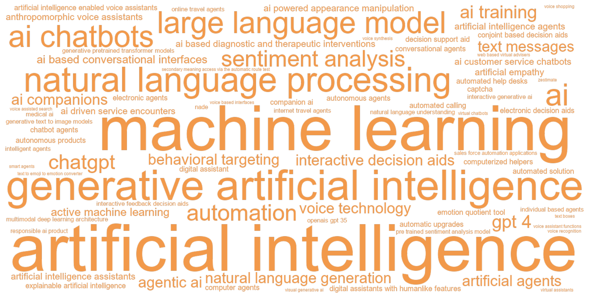
C.10.3 Articles
| Year | Full citation | Technology / technologies | Abstract |
|---|---|---|---|
| 2026 | Hu Y, Ding Y. AI appreciation effect: how contagious diseases influence medical AI adoption. International Journal Of Research In Marketing. 2026;:. doi:10.1016/j.ijresmar.2026.03.001 | ai, ai based diagnostic and therapeutic interventions, medical ai | Despite the promising potential of AI to revolutionize healthcare, patients’ aversion to AI remains widespread. This research explores how experiencing contagious diseases, a major challenge for public health, affects patient preferences for medical care providers. Across five studies ( N = 4,470, with a combination of one large-scale field survey and four randomized behavioral experiments), we provide converging evidence that individuals experiencing contagious (vs. noncontagious) diseases exhibit a significant preference for AI-based diagnostic and therapeutic interventions over human physicians. This AI appreciation effect is driven by anticipated interpersonal stigma (Study 2). However, it weakens when patients perceive low physician occupational exposure risk, which reduces anticipated interpersonal stigma (Study 3), and when they perceive algorithmic bias, which undermines trust in AI (Study 4). This research contributes to the literatures on AI appreciation and AI ethics and offers actionable insights for healthcare technology marketers and public health organizations by identifying disease type as a motivational driver of medical AI adoption and by demonstrating how institutional communications about physician safety and algorithmic bias can modulate this preference. © 2026 Elsevier B.V. |
| 2026 | De F J, Oguz-Uguralp Z, Uguralp A, Puntoni S. AI Companions Reduce Loneliness. Journal Of Consumer Research. 2026;86:1126-1148. doi:10.1093/jcr/ucaf040 | ai chatbots, ai companions | Chatbots are now able to engage in sophisticated conversations with consumers in the domain of relationships, providing a potential coping solution to widescale societal loneliness. Behavioral research provides little insight into whether these applications (apps) are effective at alleviating loneliness. We address this question by focusing on ``artificial intelligence (AI) companions'': apps designed to provide consumers with synthetic interaction partners. Study 1 examines user reviews of AI companion apps and finds correlational evidence suggesting that these apps help alleviate loneliness. Study 2 finds that AI companions successfully alleviate loneliness on par only with interacting with another person and more than other activities such as watching YouTube videos. Moreover, consumers underestimate the degree to which AI companions improve their loneliness. Study 3 uses a longitudinal design and finds that an AI companion consistently provides momentary reductions in loneliness after use over the course of a week. Study 4 provides evidence that both the chatbots' performance and, especially, whether it makes users feel heard, explain reductions in loneliness. Study 5 provides an additional robustness check for the loneliness-alleviating benefits of AI companions and shows that self-disclosure and distraction alone do not explain AI companions' effectiveness. |
| 2026 | Reisenbichler M, Reutterer T, Schweidel D. Applying Large Language Models to Sponsored Search Advertising. Marketing Science. 2026;55:. doi:10.1287/mksc.2023.0611 | generative artificial intelligence, large language model | With the increasing availability of powerful large language models (LLMs), the generation of textual marketing content has become more accessible. In this research, we examine the potential to tailor an LLM for application to search engine advertising (SEA). That is, we develop and evaluate an ``application layer'' that sits on top of an open-source LLM to generate ad text ``fine-tuned'' to the SEA context. With a goal of maximizing clicks to improve online visibility in a cost per click (CPC) setup, we experimentally test our framework in two empirical settings. Our results demonstrate the superior performance of a human-in-the-loop generative artificial intelligence (AI) approach to advertising content generation compared with ads created by humans and standard LLMs. We show that our approach yields improved performance, but potentially incurs a higher CPC, making it necessary to balance content optimization and cost. Our research demonstrates the performance gains achievable through the development of tailored LLM-based applications. Using our framework, we also identify boundary conditions that appear to limit the benefits of using generative AI in support of SEA, offering substantive insights to both practitioners and researchers. |
| 2026 | Gelbrich K, Roschk H, Miederer S, Kerath , Alina A. Automated Versus Human Agents: A Meta-Analysis of Customer Responses to Robots, Chatbots, and Algorithms and Their Contingencies. Journal Of Marketing. 2026;113:1-26. doi:10.1177/00222429251344139 | ai chatbots, artificial intelligence | This meta-analysis examines when three types of automated agents (AAs)-robots, chatbots, and algorithms-are equivalent to human agents (HAs) in marketing roles. An analysis of 943 effect sizes from 327 studies provides novel insights. First, customers may be skeptical of AAs; however, they value their performance and eventually choose or buy from them as if they were interacting with HAs. Second, each of the three AA types has a unique set of contingencies that affect its human equivalence; previously identified contingencies do not generalize and can even have opposing effects across AA types. This study also identifies novel contingencies, such as the multifaceted concept of artificial intelligence required to fulfill a task. Third, some contingencies make AAs more humanlike, while others make their machine characteristics salient. These findings enrich the concept of automated social presence (ASP), suggesting that AAs are hybrid beings with a social presence (i.e., the feeling of interacting with a humanlike entity) and an automated presence (i.e., the feeling of interacting with a machine entity). The authors provide recommendations on when AAs can replace HAs in marketing roles to release capacity and alleviate labor shortages. They also suggest a future research agenda. |
| 2026 | Galle C, Lau V, Dost F. Beyond youth: The optimal age for influencer credibility and marketing success. Journal Of The Academy Of Marketing Science. 2026;71:. doi:10.1007/s11747-025-01134-0 | ai powered appearance manipulation | Influencer marketing has traditionally celebrated youth as the key to engagement. However, with the rise of AI-powered appearance manipulation, influencers can strategically curate their age. This study explores how apparent age shapes marketing outcomes, challenging the conventional wisdom that youth always sells. Drawing on Source Credibility Theory, we examine how age influences credibility (the compound of expertise/trustworthiness) and attractiveness, hypothesising a Goldilocks effect where moderate ages yield optimal results. Across four pre-registered studies using experimental, field-experimental and observational designs, we reveal an inverted U-shaped pattern: extremely young or old appearances underperform, while moderate age leads to peak engagement. Independent manipulations confirm that age raises credibility, lowers attractiveness, and that these dimensions interact to shape outcomes; moderators (AI disclosure, gender, audience age, or homophily) shift or bend the curve as predicted. We introduce age appearance as a strategic lever for brands, creators, and platforms in the era of digital identity manipulation. |
| 2026 | Henderson C, Steinhoff L, Palmatier R. Cooperation: An enduring theory of relationship marketing. Journal Of The Academy Of Marketing Science. 2026;205:. doi:10.1007/s11747-026-01158-0 | artificial intelligence | Artificial intelligence promises to transform marketing, but some relational constants endure across technological ages. The current research proposes a three-layer hierarchical framework that prioritizes three time-invariant foundations of cooperative exchange relationships. Specifically, each foundation comprises a universal principle (interdependence, reciprocity, justice), corresponding psychological construct (trust, gratitude, unfairness), and resulting behaviors that permit, propel, and protect cooperative exchange relationships, regardless of technological contexts. The authors trace the evolution of the three foundations and their manifestations across pre-industrial, industrial, and digital ages to demonstrate their consistency. A projection details how these foundations will shape relationship marketing in the future, guiding marketers to focus on constants to establish effective relationship marketing strategies in an evolving AI age. This hierarchical framework counters the paralysis of uncertainty by offering evidence of stability amid technological disruption. It also reorients relationship marketing from commitment toward cooperation as the practical, dynamic engine of value creation in any technological age. |
| 2026 | Oba D, Berger J, Boghrati R. Effectively communicating uncertainty: The persuasive impact of different types of hedges. Journal Of Consumer Psychology. 2026;72:. doi:10.1002/jcpy.70026 | machine learning | Communicators often hedge. Consumers say a restaurant might have good mimosas or that a product is probably the best while Amazon suggests movies they think you'll like. But might these different hedges have different effects on persuasion? We suggest that (1) whether a hedge takes a personal (vs. general) perspective and (2) the likelihood suggested by a hedge both play important roles in determining hedging's persuasive impact. A multi-method investigation combining experiments with machine learning of millions of online reviews supports these hypotheses. Together, they demonstrate that the effects of both hedge perspective and hedge likelihood are driven by a common mechanism: perceived confidence. Hedges that involve personal perspective or higher likelihood increase persuasion because they suggest communicators are more confident. Moreover, we demonstrate that hedging can protect communicators from backlash without sacrificing persuasive impact and highlight that brands can leverage hedging's persuasive impact when speaking through anthropomorphized agents. This work contributes to the literature on language in marketing, showcases how subtle linguistic features impact perceived confidence, and has clear implications for anyone trying to be more persuasive. |
| 2026 | Pauwels K, Aksehirli Z. Free and paid word-of-mouth from physical to digital, AI and beyond. Journal Of The Academy Of Marketing Science. 2026;91:. doi:10.1007/s11747-026-01151-7 | artificial intelligence | Word-of-mouth (WOM) remains one of the most influential drivers of brand success, but its nature and impact have evolved significantly with the evolution of digital platforms and influencers. In the online context, Trusov et al. (2009) explored the effect of non-incentivized, or free WOM on brand performance, finding it to be a powerful and enduring force. However, it lacked the dynamics of paid WOM and the dichotomy between online and offline WOM so prevalent in today's context. This paper revisits the foundational insights from 2009 to address two critical questions: How does free WOM compare to paid WOM in terms of trust, reach, and impact? And how do online and offline WOM differ in their effectiveness across various product categories? By integrating 15 years of research and data, we aim to provide a comprehensive understanding of these dynamics and suggest areas for future research. To offer actionable insights for practitioners, we suggest a simplified framework that examines the interplay between free and paid WOM, as well as online and offline channels. We combine this conceptual framework with seven urgent practical questions: who, why, which, when, metrics, methods, and magnitude. We highlight how different forms of WOM are suited to specific conditions, balancing authenticity and reach while leveraging category-specific strategies. Artificial intelligence and virtual environments open new frontiers in WOM practice and study. This paper not only extends the theoretical understanding of WOM but also equips marketers with practical tools to navigate the complex landscape of free and paid WOM in physical, digital, and augmented reality environments. |
| 2026 | Li B, Lai E, Wang X. From Tools to Agents: Meta-Analytic Insights into Human Acceptance of AI. Journal Of Marketing. 2026;154:13-33. doi:10.1177/00222429251355266 | agentic ai, artificial intelligence | As artificial intelligence (AI) becomes more autonomous and socially present, it is critical to understand how people accept AI not just as a technological tool, but also as an agent capable of (semi)autonomous decision-making and interaction. With a meta-analysis of 287 effect sizes representing over 119,000 individuals, this research examines the factors driving human acceptance of AI. Through a dual-perspective framework, AI as a tool versus AI as an agent, the authors identify key AI characteristics, including capability, role, expertise scope, and anthropomorphism, that significantly influence acceptance. These engineerable AI characteristics, along with contextual and individual factors, form an AI-task-user framework that explains AI acceptance across different use scenarios and user groups. These findings contribute to the discourse on AI acceptance and human-AI interactions, revealing a small, decreasing reluctance to accept AI and, more importantly, directing future research to empirical testing and theory building of AI acceptance from an agentic perspective. This research also provides an actionable user-centered design roadmap for practitioners to develop and communicate AI features that align with human expectations and enhance positive responses, especially at a time when agentic AI is rapidly becoming a technological and societal reality. |
| 2026 | Kaiser M, Schulze C. Frontiers: ChatGPT Referrals to E-Commerce Websites: How Do LLMs Compare Against Traditional Channels?. Marketing Science. 2026;51:. doi:10.1287/mksc.2025.0489 | chatgpt, large language model | We investigate organic large language model traffic (oLLM) versus traditional digital channels in e-commerce. Analyzing 12 months of first-party data from 973 websites with \$20 billion combined revenue, we examine more than 50,000 transactions from ChatGPT referrals alongside 164 million transactions from traditional channels. Using regression models that account for data sparsity, we assess financial metrics (conversion rate, average order value, revenue per session) and engagement metrics (bounce rate, session duration, page views). Results are consistent across extensive robustness checks. One year after launch, oLLM exhibits conversion rates and revenue per session above paid social but below all other traditional channels. Product complexity moderates the effects: oLLM's financial outcomes and traffic shares are stronger in complex product categories. Engagement metrics show favorable bounce rates but lower session duration and page views. Temporal analysis shows increasing conversion rates but declining average order values, yielding only moderate revenue-per-session gains over time. Cross-website analyses support growing consumer LLM proficiency as the underlying mechanism. The descriptive study positions oLLM as a new and developing channel. With low volumes and modest revenue per session, oLLM currently serves niche informational needs of proficient consumers and does not yet function as a broad conversion channel. |
| 2026 | Patil R, Rice D, Janiszewski C. Human-AI partnerships: Living and working with AI Assistants, AI Agents, and AI Companions. Journal Of Consumer Psychology. 2026;201:. doi:10.1002/jcpy.70025 | ai companions | As the use of interactive artificial intelligence (AI) expands exponentially, it will permeate into many aspects of consumers' lives, including decision-making and consumption. As marketers, it is important to understand how consumers currently use interactive AI and how this usage will evolve. We propose that the increased functionality of interactive AI will encourage consumers to view many interactive AI products as long-term partners, instead of as static tools for finite tasks. Consequently, the future uses of interactive AI will be determined not only by the advancement of the underlying technology but also by consumer responses to repeated interactions with AI technology. We propose a taxonomy of human-AI partnerships (i.e., AI Assistants, AI Agents, AI Companions), provide a profile for each type of AI partner, anticipate how AI partnerships will evolve over time, and discuss how this evolution will influence AI usage. Finally, we provide an extensive agenda for future research. |
| 2026 | Peasley M, Bauer C, Hochstein B, Bachrach , Daniel G D, Patil A. Inside the call: How customer service agent warmth and competence shape customer reactions. Journal Of The Academy Of Marketing Science. 2026;126:. doi:10.1007/s11747-026-01144-6 | ai driven service encounters | Despite the growing prevalence of online and AI-driven service encounters, customers still overwhelmingly prefer to speak to a human customer service agent (CSA) to resolve problems. For instance, 86\% of U.S. customers surveyed (aged 25 +) prefer phone-based service over other options. However, scholarly research has largely overlooked dynamic voice-to-voice interactions due to the methodological challenges of ``seeing inside a live voice-based call.'' As such, prior studies have predominantly focused on in-person or text-based service interactions. We address this gap across two complementary studies-leveraging a large company data set that includes over 28,000 CSA-customer calls from a major US insurance provider and a customer experiment that focuses on an insurance service encounter. Grounded in a conceptual framework based on service adaptiveness, our research examines the interplay between issue severity, CSA tactics (warmth and competence), in-call customer frustration, and post-call outcomes within live and simulated calls. The findings reveal that under varying conditions of severity, some of the tactics that agents are trained to use can inadvertently increase customer frustration. By integrating live field data with experimental insights, our research offers valuable contributions that provide feedback on in-call and post-call outcomes relevant to a firm's overall performance. |
| 2026 | Ma X, Jin F, Dai X. Keeping it real in human eyes: Receptivity to human vs. AI in luxury authentication and the role of perceived perspective similarity. Journal Of The Academy Of Marketing Science. 2026;47:579-595. doi:10.1007/s11747-025-01136-y | artificial intelligence | Many providers in the fast-growing luxury market are investing heavily in authentication procedures to create a reliable environment for luxury transactions. The flourishing development of artificial intelligence (AI) has revolutionized authentication. This research examines consumer attitudes toward AI authentication of luxury products and investigates strategies to enhance consumers' receptivity to AI-based authentication in luxury consumption. Eight studies, along with two supplementary studies, conducted in controlled and field settings across diverse contexts, demonstrate that consumers show a preference for luxury goods authenticated by human experts over those authenticated by AI because of perceived perspective similarity. This effect is robust for both sellers and buyers. We further show that this effect is curbed when consumers buy luxury products for low (vs. high) social motives, when the product positioning is non-luxury (vs. luxury), and when the brand prominence is low (vs. high). These findings contribute to the psychology of AI in social contexts. They also offer actionable strategies to help practitioners improve consumers' acceptance of AI when consumption involves social motives. |
| 2026 | Wang M, Zhang D, Zhang H. Large Language Models for Market Research: A Data-Augmentation Approach. Marketing Science. 2026;62:. doi:10.1287/mksc.2025.0009 | large language model | Large language models (LLMs) have transformed artificial intelligence by excelling in complex natural language processing tasks. Their ability to generate human-like text has opened new possibilities for market research, particularly in conjoint analysis, where understanding consumer preferences is essential but often resource intensive. Traditional survey-based methods face limitations in scalability and cost, making LLMgenerated data a promising alternative. However, although LLMs have the potential to simulate real consumer behavior, recent studies highlight a significant gap between LLMgenerated and human data, with biases introduced when substituting between the two. In this paper, we address this gap by proposing a novel statistical data augmentation approach that efficiently integrates LLM-generated data with real data in conjoint analysis. This results in statistically robust estimators with consistent and asymptotically normal properties, in contrast to na \& iuml;ve approaches that simply substitute human data with LLM-generated data, which can exacerbate bias. We further present a finite-sample performance bound on the estimation error. We validate our framework through an empirical study on COVID-19 vaccine preferences, demonstrating its superior ability to reduce estimation error and save data and costs by 24.9\%-79.8\%. In contrast, na \& iuml;ve approaches fail to save data due to the inherent biases in LLM-generated data compared with human data. Another empirical study on sports car choices validates the robustness of our results. Our findings suggest that, although LLM-generated data are not a direct substitute for human responses, they can serve as a valuable complement when used within a robust statistical framework. |
| 2026 | Daviet R, Nishimura Y. Leveraging Generative Artificial Intelligence to Create Visual Content in Digital Advertising. Marketing Science. 2026;23:. doi:10.1287/mksc.2024.1130 | generative artificial intelligence | Generative artificial intelligence (AI) for image synthesis has the potential to transform the digital advertising industry. However, a wide range of uncertainties persists regarding its integration into traditional advertising processes, including finding effective implementations, training methodologies, and achievable performance gains. Specifically, two core challenges limit its practical adoption: a search problem of finding highperforming visuals in a vast creative space, and an alignment problem of ensuring brand and campaign compatibility. This paper proposes a novel end-to-end framework that combines a generative AI with two predictive Bayesian neural networks to identify highperformance and brand-acceptable visuals. We develop a cost-effective Bayesian active learning approach solving simultaneously the dual objectives of performance and alignment. We test the framework in a live advertising campaign for an outdoor activities company. Our system generated a portfolio of visuals achieving a higher mean click-through rate and more consistency (lower variance) than creatives from both a professional human designer and a competing AI model optimizing purely for aesthetics. This research provides a validated methodology that bridges the gap between the theoretical potential of generative AI and its practical application, offering a cost-effective solution to the critical search and alignment problems in creative design. |
| 2026 | Sepehri A, Duclos R, Berger J. Passive voice in consumer complaints reveals fault attribution and predicts escalation. International Journal Of Research In Marketing. 2026;:. doi:10.1016/j.ijresmar.2026.04.004 | natural language processing | Hotline wait-times, complicated returns, odd charges on a bill, cumbersome applications: negative service experiences are common. And consumer reactions carry major implications for firms. Drawing on the premise that language reflects unspoken cognition, this research adopts a mixed-methods paradigm to investigate whether a subtle linguistic feature in complaints (i.e., the use of passive voice): (1) reveals consumers’ perception of responsibility for a bad service experience, and (2) predicts escalation. To this end, study 1 applies natural language processing to more than 160,000 real complaints filed with the U.S. Consumer Financial Protection Bureau. We find that consumers who write with greater passive voice are significantly more likely to dispute offers of resolution, even after extensive controls. Studies 2A–3B use correlational and experimental methods to demonstrate that passive constructions increase as perceived fault (for a poor service experience) shifts from self to service provider. Study 4 extends this finding by showing that, when consumers attribute responsibility for an incident to the firm, they in turn: (i) use more passive voice to complain and (ii) report stronger escalation intentions—an effect that persists after controlling for individuals’ baseline writing-style. Conceptually, this research uncovers linguistic structure, an understudied aspect of language, as a diagnostic window into consumers’ state of mind. Managerially, we suggest an automated, cost-effective approach to identify early which dissatisfied customers are likely to escalate. Such insight allows in turn for more targeted service-recovery interventions. © 2026 The Author(s). |
| 2026 | Gong H, Zhang K. Patience and promotion: Intertemporal preference for premium-based (vs. discount-based) promotions. International Journal Of Research In Marketing. 2026;42:174-189. doi:10.1016/j.ijresmar.2025.04.002 | ai training | Sales promotions are widely used in marketing communications. Yet, little is known about how consumers respond to promotions across time spans. This paper investigates whether and how consumer patience would differ between discount-based and premium-based promotions. Through seven experiments, we consistently demonstrate that consumers are more patient when waiting for premium-based (vs. discount-based) promotions. This effect occurs because consumers are more likely to engage in mental simulation for premium-based (vs. discount-based) promotions, which subsequently leads to higher positive anticipatory utility and greater patience. To further confirm this mechanism, we also identify several boundary conditions that can reduce the tendency to mentally simulate consumption experience associated with premium-based promotions. Specifically, the effect diminishes when consumers are less inclined to mentally simulate their consumption experiences, and when the upgraded product in the premium-based promotion is less likely to induce mental simulation of consumption experiences. Moreover, we contrast two types of premium-based promotions, involving enhancement in either quality or quantity, and demonstrate that consumers are less likely to wait for a premium-based promotion based on quantity (vs. quality) enhancement. (c) 2025 Elsevier B.V. All rights are reserved, including those for text and data mining, AI training, and similar technologies. |
| 2026 | Lima V, Belk R. Possessions and the extended and incorporated self. Journal Of The Academy Of Marketing Science. 2026;156:. doi:10.1007/s11747-026-01142-8 | artificial intelligence | Belk's original theory of the extended self linked who we are, our sense of self, to tangible possessions, places, living people, and experiences with them. But today ownership liquefies, agency diffuses, and not even death stops the continued agency of self. What we call self is now increasingly enmeshed in carbon, silicon, and data, with every point of departure also a point of return. To explore these developments, we discuss four socio-technological forces emerging from our digital world: (1) post-ownership society, (2) artificial intelligence (AI), (3) human enhancement technologies (HET), and (4) digital immortality and the post-mortem self. These forces are reshaping our understanding of possessions and ownership, our data-driven relationships with things and people, our ever-evolving self, and creating new issues for marketing and consumer research. We conclude with suggestions for promising future marketing and consumer research directions and issues regarding the extended self. |
| 2026 | Hulland J, Sample K, Houston M. Standards for scale development in marketing: Elevating the role of theory. Journal Of The Academy Of Marketing Science. 2026;77:359-380. doi:10.1007/s11747-026-01153-5 | ai | The latent nature of many phenomena we study in marketing necessitates the use of multi-item scales to adequately reflect construct richness. Ensuring that these scales are both valid and reliable provides a critical foundation for subsequent research. In pursuit of this goal, we propose a refined scale-development process model that builds on existing standards while emphasizing the role of theory for creating meaningful, valid, and novel scales. Further, we use a ``methods-in-use'' approach to systematically review scale-development papers published in premier marketing journals over the past 25 years to identify areas both where marketing scholars appropriately use established guidelines, but also where elements are executed with insufficient rigor. This leads to recommendations to help scholars avoid some common pitfalls we observed in reviewing and evaluating extant scale-development research. Finally, drawing on our framework in conjunction with observations of current scale development practices as well as recent methodological advances (e.g., the emergence of AI), we delineate best practices for creating high-quality scales. |
| 2026 | Rocklage M, Berger J, Boghrati R. The Trajectory of Confidence: Experience, Certainty, and Consumer Choice. Journal Of Marketing Research. 2026;82:364-382. doi:10.1177/00222437251372928 | machine learning | Confidence has an important influence on consumer behavior. Beyond what consumers know or believe, the confidence with which they hold such knowledge or beliefs (i.e., how certain they feel) shapes their judgments, decisions, and actions. But how does confidence shift as consumers gain experience? And what are the consequences for consumer choice? A multimethod investigation combines computational linguistics, machine learning, and experiments to examine these questions. Analysis of 3.7 million reviews from almost 100,000 consumers spanning nearly 30 years reveals a common confidence trajectory. Across diverse product categories (e.g., wine, beer, cosmetics) there is a U-shaped relationship between experience and confidence. While gaining initial experience decreases confidence, eventually, with more experience, confidence rebounds. Further, feeling less confident leads consumers to avoid options associated with uncertainty and choose something different. This includes picking different products, avoiding brands associated with the uncertainty, and waiting longer to choose from those brands again. Taken together, these findings shed light on the evolution of confidence, how uncertainty shapes choice, and drivers of product switching and brand loyalty more generally. |
| 2026 | Fang J, Zheng Q, Liao M, Han L, Liu , Lu L. Thumbnail power: Visual cues and video popularity on UGV platforms. Journal Of The Academy Of Marketing Science. 2026;79:. doi:10.1007/s11747-026-01152-6 | machine learning | User-generated video (UGV) has emerged as a powerful marketing channel capable of enhancing consumer engagement, fostering trust, and driving sales. This study integrates machine learning and deep learning techniques to extract visual attributes-specifically, complexity and coherence-from a dataset of 22,958 UGV thumbnails. Employing panel data econometric models and two randomized experiments, this study examines how these visual attributes influence video popularity, with a focus on the moderating roles of video type, typicality, and consumer involvement. Results reveal an inverted U-shaped relationship between visual complexity and video popularity, and a U-shaped relationship for visual coherence. These effects are more pronounced for utilitarian videos and those perceived as highly typical. Experimental findings further show that individual-level characteristics-namely, involvement, mindfulness, and thinking style-moderate these relationships. Collectively, the findings advance understanding of visual processing in digital environments and offer actionable guidance for optimizing UGV thumbnail design to enhance consumer engagement. |
| 2026 | Li Y, Lin S, Gong H, Wang X, Janiszewski C. Time is shrinking in the eye of AI: AI agents influence intertemporal choice. Journal Of Consumer Psychology. 2026;83:59-77. doi:10.1002/jcpy.1455 | artificial intelligence agents | Agents help consumers make decisions. While agents have traditionally been human (e.g., sales associate, real estate agent, financial advisor), artificial intelligence (AI) agents are becoming more prevalent. We find that the type of agent, AI versus human, has an influence on intertemporal judgment. Specifically, when an agent is identified as AI, the concept of fast processing becomes more accessible, which makes time delays seem subjectively longer and encourages impatient behavior. These results have implications for how to conceptualize the influence of AI agents on judgment, the impact of time perception on intertemporal choices, and the sources of impatient behavior. |
| 2026 | Kumar V, Kotler P, Kumar A. Transformative marketing strategies in the era of new-age technologies: Principles, plan, purpose, and practice. Journal Of The Academy Of Marketing Science. 2026;75:1-27. doi:10.1007/s11747-025-01120-6 | agentic ai, generative artificial intelligence | New age technologies (NATs) such as generative AI (GAI), agentic AI, the metaverse, and blockchain, among others, are revolutionizing how firms engage with consumers, deliver value, create new content, and personalize experiences at various levels (e.g., brand, product, product line, business unit, and firm). This study is based on the premise that the influence of NATs on the marketing strategies of firms as well as the marketing strategy formulation process is growing rapidly. Based on this premise, this study explores the following four questions: (1) What are transformative marketing strategies (Principles)? (2) How are they developed (Plan)? (3) Why are they needed (Purpose)? and (4) Where can they be used (Practice)? Accordingly, this study considers seven popular marketing strategies firms use-pricing, distribution, product, promotion, selling, global market entry, and innovation-that are included in TMS. Using various use cases across these marketing strategies, this study discusses how marketing managers can use these NATs to enhance productivity, create personalized marketing experiences, make more informed strategic decisions, and drive higher engagement with minimal manual effort. This study also advances a 2 x 2 matrix-the relative speed of NAT adoption vs. the relative speed of relevant marketing strategy adaptation-that offers a structured framework to help firms integrate and manage these seven strategies for better performance. Through the intersection of NATs and marketing adaptability, this study outlines implications for both research and practice, offers valuable strategies for organizations, proposes several research questions, and establishes a foundation for the future of TMS in the era of NATs. |
| 2026 | Liu X, Qian Y, Liu Y, Shang J, Jiang Y, Chai Y. Unveiling consumer preferences: a theory-based multimodal deep learning architecture for explainable recommendation. International Journal Of Research In Marketing. 2026;:. doi:10.1016/j.ijresmar.2026.01.007 | multimodal deep learning architecture | This study constructs an explainable recommendation via combining product images, textual descriptions, user reviews, and user-item interactions. We propose a theory-based multimodal deep learning architecture. Specifically, we first extract the element-level features from product display information, including region-level visual and word-level textual features. To measure the impacts of these element-level features on user preferences, we introduce attention mechanisms. In addition, we inject the user reviews to disentangle the effects of visual and textual features on user preferences. Finally, we introduce a stick-breaking method to measure the asymmetrical influence of images and textual descriptions at the holistic level. To evaluate our model’s utility, we conduct experiments from four perspectives: recommendation performance, explanatory analysis, mechanism, and robustness. Experimental results show that our model can improve recommendation performance and give explanations. Our findings provide valuable insights for recommendation system design and offer guidance to marketers for optimizing product display pages. © 2026 Elsevier B.V. |
| 2026 | Zou T, Shi Z, Wu Y. Welfare Implications of Democratization in Content Creation: Generative AI and Beyond. Journal Of Marketing Research. 2026;:. doi:10.1177/00222437261423540 | generative artificial intelligence | The rise of content-creation technologies such as generative artificial intelligence (GenAI) has reshaped the way people produce and consume content. These technologies democratize content creation, enabling inexperienced individuals to generate content that rivals the quality produced by professionals. This article adopts a game-theoretic model to study how the democratization of content creation affects welfare. While the content-democratization technology can assist low-quality creators in improving their content quality, it can precipitate a flood of such content in the market and crowd out high-quality content production, leading to welfare losses. An incremental technology development with a small reduction in the quality gap can hurt individual consumers and all creators, leading to a lose-lose market outcome. In contrast, a development with a high reduction in the quality gap benefits individual consumers and all creators, leading to a win-win outcome. Furthermore, when platforms can more effectively screen content and promote high-quality content, welfare rises, but the content-democratization technology is more likely to reduce welfare. The findings help explain the distinct impacts of content democratization in different industries. © The Author(s) 2026. This article is distributed under the terms of the Creative Commons Attribution-NonCommercial 4.0 License (https://creativecommons.org/licenses/by-nc/4.0/) which permits non-commercial use, reproduction and distribution of the work without further permission provided the original work is attributed as specified on the SAGE and Open Access page (https://us.sagepub.com/en-us/nam/open-access-at-sage). |
| 2026 | Dang I, Kwan C, Jia J, Shi Y. When Words Meet Visuals: How Content Composition Drives Social Media Engagement for Marketer-Generated Content. Journal Of Marketing Research. 2026;58:167-190. doi:10.1177/00222437251373042 | natural language processing | How does the balance between text and pictorial content in marketer-generated social media posts affect user engagement? The authors address this question by using computer vision and natural language processing tools to extract the visual and textual features of 34,610 organic brand posts from Facebook and Instagram. Using a confounding-and-cluster-robust causal forests model, they test how the balance of text and picture affects social media engagement across content and visual contexts. Results show that posts with greater emphasis on overlay text over pictorial content tend to have fewer likes and comments. However, the performance of text-oriented posts improves if text is more centered, informative, emotionally positive, and congruent with the pictorial content and if the picture contains fewer prominent objects or less information such as social cues. They quantify how incremental changes in such content composition affect social media engagement. These findings set forth evidence-based principles for optimizing text and picture balance in marketer-generated content and provide actionable guidelines on whether, where, when, and how to present text on an image. This research highlights the potential for transforming content and media creation from an imprecise art form into an empirical science nested within a data-driven visual optimization framework. |
| 2025 | Yoo K, Haenlein M, Hewett K. A whole new world, a new fantastic point of view: Charting unexplored territories in consumer research with generative artificial intelligence. Journal Of The Academy Of Marketing Science. 2025;127:723-759. doi:10.1007/s11747-025-01097-2 | chatgpt, generative artificial intelligence | Integrating generative artificial intelligence (AI), particularly large multimodal models (LMMs) like ChatGPT, into the research process offers significant opportunities for marketing scholars. This manuscript provides a field guide into the potential advantages and possible limitations of using LMMs in different stages of consumer research, including idea generation, theory development, pretesting and pilot testing, data collection for experimental designs, data analysis, and reporting. We illustrate LMMs' capabilities by replicating the consumer research stages of 35 articles from five marketing journals using ChatGPT-4o. Our findings suggest that LMMs enhance the efficiency and effectiveness of consumer research, though their performance varies across stages. LMMs excel in developing theoretical frameworks and collecting data for experimental designs, offer moderate support for idea generation, pre-/pilot testing, and reporting but perform less effectively in data analysis (e.g., silicon sampling). This manuscript underscores generative AI's potential in consumer research and calls for further exploration into ethical guidelines and best practices to ensure high-quality work. |
| 2025 | Ye J, Wedel M, Pieters R. AdGazer: Improving Contextual Advertising with Theory-Informed Machine Learning. Journal Of Marketing. 2025;139:. doi:10.1177/00222429251396114 | machine learning | Contextual advertising involves matching features of ads to features of the media context where they appear. The authors propose AdGazer, a new machine learning procedure to support contextual advertising. It comprises a theoretical framework organizing high- and low-level features of ads and contexts, feature engineering models grounded in this framework, an XGBoost model predicting ad and brand attention, and an algorithm optimally assigning ads to contexts. AdGazer includes a multimodal large language model to extract high-level topics predicting the ad-context match. This research uses a unique eye-tracking database containing 3,531 digital display ads and their contexts, and aggregate ad and brand gaze times. The authors compare AdGazer's predictive performance with that of two feature learning models, VGG16 and ResNet50. AdGazer predicts highly accurately with holdout correlations of .83 for ad gaze and .80 for brand gaze, outperforming both feature learning models and generalizing better to out-of-distribution ads. Context features jointly contributed at least 33\% to predicted ad gaze and about 20\% to predicted brand gaze, good news for managers practicing or considering contextual advertising. The authors demonstrate that the theory-informed AdGazer effectively matches ads to advertising vehicles and their contexts, optimizing ad gaze more than current practice and alternatives like text-based and native contextual advertising. |
| 2025 | Tomaino G, Cooke A, Hoover J. AI and the advent of the cyborg behavioral scientist. Journal Of Consumer Psychology. 2025;46:297-315. doi:10.1002/jcpy.1452 | ai, large language model | Large Language Models have been incorporated into an astounding breadth of professional domains. Given their capabilities, many intellectual laborers naturally question to what extent these AI models will be able to usurp their own jobs. As behavioral scientists, we performed an effort to examine the extent to which an AI can perform our roles. To achieve this, we utilized commercially available AIs (e.g., ChatGPT 4) to perform each step of the research process, culminating in an AI-written manuscript. We attempted to intervene as little as possible in the AI-led idea generation, empirical testing, analysis, and reporting. This allowed us to assess the limits of AIs in a behavioral research context and propose guidelines for behavioral researchers wanting to utilize AI. We found that the AIs were adept at some parts of the process and wholly inadequate at others. Our overall recommendation is that behavioral researchers use AIs judiciously and carefully monitor the outputs for quality and coherence. We additionally draw implications for editorial teams, doctoral student training, and the broader research ecosystem. |
| 2025 | Arora N, Chakraborty I, Nishimura Y. AI-Human Hybrids for Marketing Research: Leveraging Large Language Models (LLMs) as Collaborators. Journal Of Marketing. 2025;72:43-70. doi:10.1177/00222429241276529 | gpt 4, large language model | The authors' central premise is that a human-LLM (large language model) hybrid approach leads to efficiency and effectiveness gains in the marketing research process. In qualitative research, they show that LLMs can assist in both data generation and analysis; LLMs effectively create sample characteristics, generate synthetic respondents, and conduct and moderate in-depth interviews. The AI-human hybrid generates information-rich, coherent data that surpasses human-only data in depth and insightfulness and matches human performance in data analysis tasks of generating themes and summaries. Evidence from expert judges shows that humans and LLMs possess complementary skills; the human-LLM hybrid outperforms its human-only or LLM-only counterpart. For quantitative research, the LLM correctly picks the answer direction and valence, with the quality of synthetic data significantly improving through few-shot learning and retrieval-augmented generation. The authors demonstrate the value of the AI-human hybrid by collaborating with a Fortune 500 food company and replicating a 2019 qualitative and quantitative study using GPT-4. For their empirical investigation, the authors design the system architecture and prompts to create personas, ask questions, and obtain responses from synthetic respondents. They provide road maps for integrating LLMs into qualitative and quantitative marketing research and conclude that LLMs serve as valuable collaborators in the insight generation process. |
| 2025 | Kim H, Mcgill A. AIr-induced dehumanization. Journal Of Consumer Psychology. 2025;70:363-381. doi:10.1002/jcpy.1441 | autonomous agents, virtual assistants | Recent technological advancements have empowered nonhuman entities, such as virtual assistants and humanoid robots, to simulate human intelligence and behavior. This paper investigates how autonomous agents influence individuals' perceptions and behaviors toward others, particularly human employees. Our research reveals that the socio-emotional capabilities of autonomous agents lead individuals to attribute a humanlike mind to these nonhuman entities. Perceiving a high level of humanlike mind in the nonhuman, autonomous agents affects perceptions of actual people through an assimilation process. Consequently, we observe ``assimilation-induced dehumanization'': the humanness judgment of actual people is assimilated toward the lower humanness judgment of autonomous agents, leading to various forms of mistreatment. We demonstrate that assimilation-induced dehumanization is mitigated when autonomous agents possess capabilities incompatible with humans, leading to a contrast effect (Study 2), and when autonomous agents are perceived as having a high level of cognitive capability only, resulting in a lower level of mind perception of these agents (Study 3). Our findings hold across various types of autonomous agents (embodied: Studies 1-2 and disembodied: Studies 3-5), as well as in real and hypothetical consumer choices. |
| 2025 | Dai T, Singh S. Artificial Intelligence on Call: The Physician's Decision of Whether to Use AI in Clinical Practice. Journal Of Marketing Research. 2025;61:854-875. doi:10.1177/00222437251332898 | artificial intelligence | Artificial intelligence (AI) is reshaping the practice of medicine. This article examines a physician's decision regarding whether to use AI when prescribing a treatment plan for a patient. Using AI helps the physician generate an informative signal that lessens clinical uncertainty. It can also change the physician's legal liability in the event of patient harm. The authors analyze two patient-protection schemes that determine physician liability when using AI: The prevailing patient-protection scheme uses the AI signal to enforce the current standard of care, whereas an emerging scheme proposes using the AI signal as the new standard of care. They show that in both schemes, the physician has an incentive to use AI in low-uncertainty scenarios, even if AI provides little value. Furthermore, the physician may avoid using AI in higher-uncertainty scenarios where AI could have improved decision quality. As the quality of AI improves, the physician may become more hesitant to use it on certain patients. A comparison of the physician's decision to use AI under the two schemes reveals that using the AI signal as the new standard of care may mitigate AI underuse (overuse) for certain patients but may boost AI underuse (overuse) for some other patients. |
| 2025 | Liu J, Liu Y. Asymmetric Impact of Matching Technology on Influencer Marketing: Implications for Platform Revenue. Marketing Science. 2025;32:. doi:10.1287/mksc.2023.0211 | artificial intelligence | This paper explores the impact of using advanced technology such as artificial intelligence (AI) to match marketers with social media influencers. We develop a theoretical model to examine how matching accuracy affects the competition between influencers and the profitability of a social media platform. Our findings show that improving matching accuracy may not always benefit the platform, especially for platforms with intermediate follower density. Two opposing effects of technology improvement affect the prices of influencer marketing campaigns: advanced technology, such as AI, enhances the matching between influencers and marketers and also intensifies competition between different types of influencers. The overall effect on prices can be negative for some influencers because of the asymmetric nature of such matching technology: the matching outcome for influencers with a narrower audience (niche influencers) is more sensitive to matching accuracy than that for those with a broader audience (general influencers). As a result, more niche influencers begin to participate in marketing campaigns when matching accuracy improves, which reduces the prices offered by sufficiently general influencers and may lead to a decline in platform revenue. Additionally, we find that adjusting commission rates in response to technology improvements could help mitigate the negative impact although it may not eliminate it entirely. Our findings offer valuable insights for social media platforms seeking to remain competitive in the influencer marketing landscape. |
| 2025 | Jin J, Walker J, Reczek R. Avoiding embarrassment online: Response to and inferences about chatbots when purchases activate self-presentation concerns. Journal Of Consumer Psychology. 2025;48:185-202. doi:10.1002/jcpy.1414 | ai chatbots | We explore how self-presentation concerns and the desire to avoid embarrassment impact two distinct types of interactions consumers have with chatbots: interactions when a chatbot's identity is (1) not disclosed and therefore ambiguous or (2) disclosed. We propose that consumers feel less embarrassed with a chatbot than a human service agent in purchase contexts where self-presentation concerns are active because consumers ascribe less mind to chatbots. Therefore, when a chat agent's identity is ambiguous, consumers with greater self-presentation concerns are more likely to infer that an agent is human because this judgment allows consumers to proactively protect themselves from potential embarrassment in the event they are interacting with a human. We further show that when agent identity is clearly disclosed, consumers respond more positively to chatbots than human agents. However, this effect is contingent on the extent to which the chatbot is imbued with human characteristics: Anthropomorphizing chatbots leads consumers with higher self-presentation concerns to ascribe more mind to even clearly identified chatbots, resulting in a more negative consumer response. |
| 2025 | Chakraborty I, Chiong K, Dover H, Sudhirc K. Can AI and AI-Hybrids Detect Persuasion Skills? Salesforce Hiring with Conversational Video Interviews. Marketing Science. 2025;99:. doi:10.1287/mksc.2023.0149 | ai, large language model | We develop an AI and AI-human-based model for salesforce hiring using recordings of conversational video interviews that involve two-sided, back-and-forth interactions with messages conveyed through multiple modalities (text, voice, and body language). We derive objective, theory-backed measures of sales performance from these modalities, leveraging recent advances in body language analysis, conversational analysis, and large language models (LLMs). These measures serve as explanatory variables in our AI model. Our key contribution to the broader research on persuasion and influence is that we show how to use conversational videos to capture features related to (i) two-way conversational interactivity; (ii) real-time adaptation; and (iii) human body language, with minimal measurement error relative to extant survey-based approaches that suffer from recall biases. We use rubric-based scores by panels of sales professionals (correlated with hiring decisions) to isolate a candidate's ``latent sales ability'' and use these as outcome variables to be predicted by the AI model. The AI model achieves reasonable predictive accuracy, yet incorporating human judgments into an AI-human hybrid model enhances its effectiveness-improving workforce quality by 67\% over random selection. Although the content of what is spoken is most important in prediction, conversational interactivity, sellers' real-time adaptation to the buyer, and body language also have good explanatory power. Finally, in terms of performance-cost trade-offs, the addition of just one human professional evaluation in the hiring loop in combination with AI is optimal. Further, using human input based on only the two early stages of the interview in a task-based hybrid model is the most cost-effective in improving performance. |
| 2025 | Epp A, Humphreys A. Collaborating with Generative AI in Consumer Culture Research. Journal Of Consumer Research. 2025;74:32-48. doi:10.1093/jcr/ucaf014 | generative artificial intelligence | Generative Artificial Intelligence (GenAI) has introduced new possibilities for both the creation and analysis of language, which is one key input for consumer culture researchers who analyze qualitative and textual data. How can consumer culture researchers use GenAI to produce insights and work with qualitative data? What are the possibilities and challenges of using these tools? And what are some valuable practices and principles for integrating GenAI into the research process? Building from interviews with researchers who use these tools, the authors identify relevant theoretical, embodied, empirical, and historical contextual dimensions that produce opportunities and challenges for human-AI collaboration. The authors then propose a set of collaborative practices and offer practical guidelines for using GenAI to generate novel and meaningful insights into consumer culture and society. |
| 2025 | Granulo A, Kranzbuehler A, Fuchs C, Puntoni S. Collective Layoffs and Offshoring: A Social Contract Account. Journal Of Consumer Research. 2025;93:526-546. doi:10.1093/jcr/ucaf001 | automation | Collective layoffs can occur for many reasons, often related to a firm's pursuit of greater efficiency and cost reduction, and they tend to trigger negative reactions among the public. Anecdotal evidence suggests that offshoring, one of the most controversial and politicized aspects of globalization, evokes particularly negative reactions. We propose a social contract account of consumer reactions to collective layoffs and demonstrate differential consumer responses to collective layoffs due to offshoring versus other reasons, such as automation. Layoffs due to offshoring are perceived as an especially egregious violation of the normative expectation that firms should support members of their society. Data from nine experimental studies (N = 5,568; seven reported in the main paper and two in the General Discussion section), public consumer responses to layoffs in a large online community (N = 29,045), and layoff announcements in the European Union (N = 1,261) show that consumers react more negatively to collective layoffs due to offshoring compared to other reasons. Supporting our social contract account, the negative effect of offshoring is stronger when offshoring affects workers in the consumers' home (vs. foreign) country, when the firm is domestic (vs. foreign), and when most customers are domestic (vs. foreign). |
| 2025 | Blythe Pet al.. Comments on ``AI and the advent of the cyborg behavioral scientist''. Journal Of Consumer Psychology. 2025;35:316-328. doi:10.1002/jcpy.1453 | ai, generative artificial intelligence, large language model | Below are comments on Tomaino, Cooke, and Hoover by four teams of collaborative reviewers that helped clarify and focus its original version. Their comments on the refined version articulate how the fast-moving world of generative AI can alter authors, readers, reviewers, and consumer behavior journals. In the first comment, Blythe, Kulis, and McGraw propose that Generative AI requires substantial effort to generate research that is fast, cost-effective, and of high quality. They articulate three recommendations: to ask, to train, and to check the system. Asking builds on GenAI's ability to reveal its own capabilities at different stages of the research process. Training allows the system to be customized with relevant context, domain-specific documents, and tailored examples, enhancing its accuracy and reducing errors. Checking is strongly advised to validate that the outputs are both reasonable and robust. Haenlein, Hewett, and Yoo build on the capabilities of Large Language Models that go beyond the research practices central to consumer psychology. They outline strategic prompting strategies: starting broadly and gradually narrowing to specific domains, downloading information from relevant articles and data that is unlikely to be part of the current corpus, and evoking specific theories, methods, or presentation formats. They also elaborate on the ways the apparent magic of GenAI may raise learning or ethical challenges. The third comment by Stacy Wood focuses less on the capabilities of GenAI and more on how its adoption will depend on researcher feelings-in other words, how different aspects of its use may alter researchers' experiences of doing research and their identities as scholars. GenAI has the potential to both build (through increased productivity or increased accessibility) and limit (through loss of agency or faster production) pride of purpose in research. She argues that feelings from using GenAI are likely to differ across research steps, from developing novel concepts, processes, analyses, and writing of the paper. Wherever GenAI may lessen the excitement, satisfaction, motivation, and perceived status of the researcher, barriers to its use are likely to be erected. Finally, Vicki Morwitz identifies new AI capabilities beyond those explored in Tomaino et al. Those include the ability to generate synthetic data that can guide empirical experiments, a facility to create audio and visual stimuli, a capability to study group behavior, and a capacity to reliably interpret complex human statements. The comment then closes with important questions for editorial policies, raising issues about limitations on AI use by authors, its appropriate applications by review teams, and possible publishers' restrictions on uploading copyrighted articles. |
| 2025 | Liu M, Huang J, Zhu Q, Zheng , Xiaolong X. Consumer responses to weakness revelation of human brands: The role of authenticity. International Journal Of Research In Marketing. 2025;56:391-410. doi:10.1016/j.ijresmar.2024.09.005 | ai training | Human brands are an integral part of modern marketing and have proliferated in recent years, becoming one of the corner stones of the creator economy. There is a growing need to understand what specific strategies human brands, traditional ones and creators alike, can use to market and present themselves and the situational nuances of these strategies. While previous research has suggested that human brands should be generally presented in a positive light, this research shows that when human brands reveal their own weaknesses, it can lead to favorable consumer responses because of the heightened sense of authenticity. Moreover, the present research identifies three theoretically meaningful and practically relevant boundary conditions for the effect. Specifically, the effect is attenuated when the revelation is frequent and when the source of revelation is not the human brand itself, and reversed when the revealed weakness is severe. We use a mixed-method approach and provide converging support for our theorization across ten studies. This research contributes to a nuanced understanding of the weakness revelation effect in human brand marketing, and adds to the research on human brand authenticity. We further offer an explicit action plan to professional and self managers of human brands and outline the potential future research areas. (c) 2024 Elsevier B.V. All rights are reserved, including those for text and data mining, AI training, and similar technologies. |
| 2025 | Campbell C, Sands S, Mcferran B, Mavrommatis , Alexis A. Diversity representation in advertising. Journal Of The Academy Of Marketing Science. 2025;196:588-616. doi:10.1007/s11747-023-00994-8 | generative artificial intelligence | In this article we develop a comprehensive understanding of diverse representation in advertising. While numerous studies highlight increasing demand for diversity among some consumers, such enthusiasm is not universal. This is creating challenges for brands, some of which have faced backlash, either due to a perceived lack of authenticity in their diversity efforts or because not all consumer groups value diversity equally. Amidst these challenges, technological advancements, such as data-driven decision-making and generative AI, present both new opportunities and risks. The current literature on diverse representation in advertising, although expansive, is relatively siloed. Through a detailed eight-step process, we assess and synthesize the body of literature on diversity representation, reviewing 337 articles spanning research on age, beauty, body size, gender, LGBTQIA+ , physical and mental ability, and race and ethnicity. Our investigation offers two major contributions: a summarization of insights from the broader literature on these seven key areas of diverse representation and development of an integrated conceptual framework. Our conceptual framework details mechanisms, moderators, and outcomes that are either prevalent across the literature or can be reasonably expected to generalize across other forms of diversity. This framework not only offers a holistic perspective for academics and industry professionals but also exposes potential future research avenues. |
| 2025 | Hermann E, Puntoni S. Empowering GenAI stakeholders. Journal Of The Academy Of Marketing Science. 2025;57:677-683. doi:10.1007/s11747-025-01098-1 | generative artificial intelligence | Generative Artificial Intelligence (GenAI) is transforming marketing not only by automating tasks and augmenting human capabilities, but also by reshaping stakeholder roles and experiences. This commentary explores the implications of empowering diverse stakeholders, marketers, consumers, contributors, and marketing academics, across four dimensions: operational, creative, agentic, and normative empowerment. Stakeholder empowerment across these four dimensions can satisfy the basic human needs for competence, autonomy, and relatedness, helping GenAI to become a force for the greater good in society. |
| 2025 | Kapoor A, Kumar M. Frontiers: Generative AI and Personalized Video Advertisements. Marketing Science. 2025;55:733-747. doi:10.1287/mksc.2023.0494 | generative artificial intelligence | We study the effectiveness of personalized video advertisements created using generative artificial intelligence (GenAI). We run a mobile ad targeting field experiment on WhatsApp in partnership with a leading direct-to-consumer e-commerce brand that sells eco-friendly sustainable products. We randomize users into receiving ads from one of three targeting conditions: (1) GenAI-based personalized video ads, (2) personalized image ads, and (3) generic nonpersonalized video ads. The first group is our main treatment, and the latter two serve as baselines. In the personalized treatment conditions, ad content is tailored to individual purchase histories, whereas in the generic treatment condition, a uniform brand message is delivered to all users. Our results show that GenAI-based personalized video ads increase engagement by six to nine percentage points over the baselines. These gains are robust across consumer demographics such as gender and location. We use back-of-the-envelope calculations to highlight substantial cost savings and productivity benefits of GenAI-based personalized ad campaigns. We discuss the implications of our findings for businesses and policymakers while noting the potential variation in effectiveness and generalizability of GenAI applications across marketing contexts. |
| 2025 | Schmitt B. GenAI and Consumer Research: Are We the Last Generation of Human Consumer Researchers?. Journal Of Consumer Research. 2025;12:1-3. doi:10.1093/jcr/ucaf015 | generative artificial intelligence | Explorations of Generative artificial intelligence (GenAI) have moved to the forefront of consumer research, as scholars examine its implications for ideation and conceptualization, data collection and analysis, and writing and publishing. Introducing this special section of the Journal of Consumer Research on GenAI and consumer research, the author calls for a critical-and self-critical-engagement with GenAI, calling on researchers to embrace its potential while remaining mindful of both its constraints and their own biases. The author concludes that, given GenAI's rapid evolution, the insights in this special section remain provisional and may require reconsideration as the technology advances. |
| 2025 | Tully S, Longoni C, Appel G. Lower Artificial Intelligence Literacy Predicts Greater AI Receptivity. Journal Of Marketing. 2025;50:1-20. doi:10.1177/00222429251314491 | artificial intelligence | As artificial intelligence (AI) transforms society, understanding factors that influence AI receptivity is increasingly important. The current research investigates which types of consumers have greater AI receptivity. Contrary to expectations revealed in four surveys, cross-country data and six additional studies find that people with lower AI literacy are typically more receptive to AI. This lower literacy-greater receptivity link is not explained by differences in perceptions of AI's capability, ethicality, or feared impact on humanity. Instead, this link occurs because people with lower AI literacy are more likely to perceive AI as magical and experience feelings of awe in the face of AI's execution of tasks that seem to require uniquely human attributes. In line with this theorizing, the lower literacy-higher receptivity link is mediated by perceptions of AI as magical and is moderated among tasks not assumed to require distinctly human attributes. These findings suggest that companies may benefit from shifting their marketing efforts and product development toward consumers with lower AI literacy. In addition, efforts to demystify AI may inadvertently reduce its appeal. |
| 2025 | Haenlein M, Jack A. Measuring the long-term impact of business school research on academia, teaching, society and decision makers. International Journal Of Research In Marketing. 2025;29:1-12. doi:10.1016/j.ijresmar.2024.10.009 | ai training | Research shapes, in one way or another, the activities of nearly every business school. It is a cornerstone that defines institutional prestige, faculty recruitment, and student demand. However, despite the billions invested annually, much of this research receives limited attention beyond academia. This article introduces a comprehensive conceptual framework that distinguishes between four types of impact, depending on the primary stakeholder group the research addresses. We separate academic, teaching, societal, and managerial impact through its influence on the behavior of fellow academics, consumers/ public policymakers, students, and managers. By proposing a set of short-term impact signals and medium-term impact measures, we map the path from research publication to long-term impact. Our framework offers actionable insights for business school deans, journal editors, and faculty. We identify current challenges in measuring research impact, including output variety, attribution, and data availability. We hope our framework can guide decision-makers seeking to enhance the visibility and real-world influence of business school research. This article accompanies and explains the underlying thinking in an experimental new standalone Financial Times research ranking (www.ft.com/bsis) (c) 2024 Elsevier B.V. All rights are reserved, including those for text and data mining, AI training, and similar technologies. |
| 2025 | Hotz-Behofsits C, Wloemert N, Abou N N. Natural Affect DEtection (NADE): Using Emojis to Infer Emotions from Text. Journal Of Marketing. 2025;75:. doi:10.1177/00222429251315088 | nade, text to emoji to emotion converter | Emotions are central to consumer communications, and extracting them from user-generated online content is crucial for marketers, given that such consumer opinions significantly shape brand perceptions, influence purchase decisions, and provide essential insights for marketing analytics. To leverage vast user-generated data, marketers and researchers require advanced text-to-emotion converters. However, existing tools for fine-grained emotion extraction face several limitations: Lexica are constrained by their dictionaries, machine learning models by human-annotated training data, and large language models by insufficient validation. As a result, marketing research still tends to rely on mere sentiment detection instead of extracting more nuanced emotions from text. This article introduces NADE (Natural Affect DEtection), a novel text-to-emoji-to-emotion converter that first ``emojifies'' language and then converts these emojis into intensity measures of well-established, theory-grounded emotions. This approach addresses the limitations of existing tools by leveraging the inherent emotional information in emojis. Using human raters and state-of-the-art converters as benchmarks, the authors establish the benefits of exploiting emojis, validate NADE, and demonstrate its use in several marketing applications using data from various social media platforms. Users can apply the proposed converter through an easy-to-use online app and programming packages for Python and R. |
| 2025 | Zehnle M, Hildebrand C, Valenzuela A. Not all AI is created equal: A meta-analysis revealing drivers of AI resistance across markets, methods, and time. International Journal Of Research In Marketing. 2025;88:729-751. doi:10.1016/j.ijresmar.2025.02.005 | artificial intelligence | While artificial intelligence (AI) is used by billions of consumers daily through tools like ChatGPT, prior research often documents that consumers are resistant to it. The current research proposes that such resistance is strongly context-dependent, rapidly evolving, and often an artifact of how researchers study it. We provide a comprehensive synthesis of consumer responses to AI by analyzing 440 effect sizes from 76,142 unique participants across two decades of experimental research. Our meta-analysis reveals three key insights about consumer aversion towards AI (average Cohen's d = -0.21). First, consumer responses vary systematically by AI label and domain, with the most negative responses to embodied forms of AI (e.g., robots) compared to AI assistants or mere algorithms. We also identify substantial domain differences in areas such as transportation and public safety, which trigger more negative responses compared to areas where AI improves productivity and performance, such as in business and management. Second, we document a temporal evolution towards increasingly less negative responses, particularly for cognitive consumer responses (e.g., performance or competence judgements), with aversion approaching a null-effect in most recent years. Third, we demonstrate overall shrinking effect sizes with greater ecological validity. This work advances our understanding of when and why consumers resist AI and provides directions for future research on consumer-AI interactions. (c) 2025 The Authors. Published by Elsevier B.V. This is an open access article under the CC BY-NC-ND license (http://creativecommons.org/licenses/by-nc-nd/4.0/). |
| 2025 | Pocchiari M, Proserpio D, Dover Y. Online reviews: A literature review and roadmap for future research. International Journal Of Research In Marketing. 2025;196:275-297. doi:10.1016/j.ijresmar.2024.08.009 | ai | This paper reviews and synthesizes existing research on online reviews, addresses the knowledge gaps, and proposes directions for future research. Taking an interdisciplinary approach, we delve into the stages of the online review process (creation, engagement, impact, and insight) and discuss how they are affected by behavioral biases, review formats, reviewer identity, managerial interventions, and platform design. We discuss the benefits of online reviews-from boosting sales to impacting firms' reputations and reducing information asymmetries-and the flaws that can compromise their reliability and helpfulness, including promotional reviews, behavioral biases, and context effects. Finally, we identify research gaps in the literature and propose a roadmap for future research. As technology advances and consumer needs evolve, the complexity of online reviews must be further explored to unleash novel insights, guide decisions, and better shape the future landscape of digital platforms. (c) 2024 Elsevier B.V. All rights are reserved, including those for text and data mining, AI training, and similar technologies. |
| 2025 | Lemmens Aet al.. Personalization and targeting: how to experiment, learn & optimize. International Journal Of Research In Marketing. 2025;:. doi:10.1016/j.ijresmar.2025.07.004 | generative artificial intelligence, machine learning | Personalization has become the heartbeat of modern marketing. The rapid expansion of individual-level data, the proliferation of personalized communication channels, and advancements in experimentation have fundamentally reshaped how firms tailor their marketing strategies. Furthermore, causal inference and machine learning enable companies to understand how the same marketing action can impact the choices of individual customers differently. This article provides an academic overview of these developments. We formalize personalization as a causal inference problem embedded in the test and learn framework. We review key challenges and solutions that arise when personalization is approached through causal inference, including data limitations, treatment effect heterogeneity, policy evaluation, and ethical considerations. Finally, we identify emerging research trends stemming from new methodologies such as generic and double machine learning, direct policy learning, foundation models, and generative AI. © 2025 The Author(s) |
| 2025 | Heitmann M, Jansen T, Reisenbichler M, Schweidel D. Picture Perfect: Engaging Customers with Visual Generative AI. Journal Of Marketing. 2025;71:. doi:10.1177/00222429251356993 | generative artificial intelligence, visual generative ai | Generative artificial intelligence (AI) is poised to transform how brands communicate with consumers. Recent research demonstrates AI's benefits in producing text, but marketing research has not yet explored how marketers can leverage AI to create visual advertising. Despite their impressive capabilities, ``off-the-shelf'' generative AI models are not aligned with marketing objectives, raising the question of whether it is possible to fine-tune generative AI directly on conventional advertising objectives (e.g., evoking attention, driving interest). In this research, the authors train an open-source generative AI model on marketing mindset metrics and show that the resulting visual content can match and even exceed conventionally produced advertising content in associated performance metrics. The results demonstrate that generative AI can be fine-tuned on multiple communication objectives simultaneously and adapted to specific audiences. In addition to highlighting generative AI's potential in marketing, this article explores the limitations of aligning visual generative AI with marketing objectives. |
| 2025 | Luo L. Practice Prize Report: The 2024 Gary Lilien ISMS Practice Prize Competition. Marketing Science. 2025;7:. doi:10.1287/mksc.2024.1172 | artificial intelligence | This report summarizes the finalists of the 2024 Gary Lilien INFORMS Society for Marketing Science Practice Prize Competition, designed to identify, encourage, recognize, and reward the application of impactful marketing science to industry and noncommercial settings. These applications aim to showcase innovative and impactful examples of applications demonstrating the best of rigor and relevance that our profession produces. The 2024 winner team developed a deep-learning-based recommender system that helps new salespeople to identify customers with high conversion potential at a major insurance company. The three other finalists include studies of utilizing artificial intelligence and behavior insights to motivate organizations' sustainable energy consumption, modeling customer lifetime value in the retail banking industry, and designing business policy experiments using fractional factorial designs. This report concludes with reflections of trends and recent developments upon impactful and rigorous marketing science applications above and beyond the typical academic settings. |
| 2025 | Mohammadi B, Malik N, Derdenger T, Srinivasan , Kannan K. Regulating Explainable Artificial Intelligence (XAI) May Harm Consumers. Marketing Science. 2025;38:. doi:10.1287/mksc.2022.0396 | explainable artificial intelligence | The most recent artificial intelligence (AI) algorithms lack interpretability. Explainable artificial intelligence (XAI) aims to address this by explaining AI decisions to customers. Although it is commonly believed that the requirement of fully transparent XAI enhances consumer surplus, our paper challenges this view. We present a gametheoretic model where a policymaker maximizes consumer surplus in a duopoly market with heterogeneous customer preferences. Our model integrates AI accuracy, explanation depth, and method. We find that partial explanations can be an equilibrium in an unregulated setting. Furthermore, we identify scenarios where customers' and firms' desires for full explanation are misaligned. In these cases, regulating full explanations may not be socially optimal and could worsen the outcomes for firms and consumers. Flexible XAI policies outperform both full transparency and unregulated extremes. |
| 2025 | Kumar M, Micheli P, Singh J, Goldberg N. Responsible Design Thinking. Journal Of Marketing. 2025;107:. doi:10.1177/00222429251396423 | responsible ai product | Design thinking (DT) has generated significant attention in relation to new product development and innovation and, more generally, value creation activities. Despite its focus on identifying and addressing the needs of users and other stakeholders in an empathetic way, several implementations of DT have resulted in ethically questionable products with negative consequences for firms, customers, and society. This research adopts a grounded theory approach to understand the main ethical concerns with DT as currently practiced and to investigate how DT teams could better include ethical considerations in their work. Based on the analysis of data gathered from in-depth interviews with DT practitioners, it identifies four ethics-related blind spots caused by (1) the exclusion of the natural environment, (2) narrow definitions of users, (3) quick prototyping and testing, and (4) the rapid increase of scale. Using the development of a responsible AI product as an illustration, the authors show that firms can develop three interrelated capabilities to mitigate these blind spots: (1) systemic inclusion of impacted entities and stakeholders, (2) anticipation and mitigation of potential harms, and (3) ethical governance. Together, they form a novel approach: responsible design thinking. The article concludes by discussing contributions to theory and practice. |
| 2025 | Arsel Z, Zanette M, Da R M C. Sponsored Content as an Epistemic Market Object: How Platformization of Brand-Creator Partnerships Disrupts Valuation, Coproduction, and the Relationship Between Market Actors. Journal Of Marketing. 2025;130:57-76. doi:10.1177/00222429241296459 | generative artificial intelligence | Sponsored content allows brands to partner with creators to reach creators' audiences on digital platforms. However, both creators' and brands' incomplete understanding of this object generates two critical ambiguities: how to determine the value of sponsored content and how to effectively coproduce it. To better understand these ambiguities, the authors theorize sponsored content as an epistemic market object: an object that facilitates marketing functions but is only partially understood by the actors who use it. They analyze a dataset of interviews, podcasts, media articles, and third-party platform reviews about-and by-content creators, brands, and intermediaries. The findings show that brands, creators, and intermediaries create and apply knowledge to address valuation and coproduction ambiguities. However, this knowledge work is incomplete, creating asymmetries in value outcomes and power relationships in a brand-creator partnership. This research contributes to marketing literature and practice by highlighting the role of epistemic market objects in transformative market disruptions that alter the roles of, and the relationships between, market actors. The findings are transferable to other substantive areas such as generative artificial intelligence, the metaverse, nonfungible tokens, online news, and the sharing economy. |
| 2025 | Zeithammer R, Stich L, Spann M, Haeubl G. Strange case of Dr. Bidder and Mr. Entrant: Consumer preference inconsistencies in costly price offers. International Journal Of Research In Marketing. 2025;47:255-274. doi:10.1016/j.ijresmar.2024.08.006 | interactive feedback decision aids | Consumers make price offers to sellers in a variety of domains, such as when buying cars or houses or when bidding in auctions for airline upgrades, art, or collectibles. Submitting an offer typically entails administrative, waiting, and opportunity costs. Making such costly price offers involves two intertwined decisions-in addition to determining how much to offer, consumers must also decide whether to make an offer in the first place. We examine the impact of offer-submission costs on consumer behavior using a series of incentive-compatible experiments. Our findings reveal a preference inconsistency, whereby the preferences implied by one of the decisions do not align with the preferences implied by the other. In particular, potential buyers enter more often than their offer amounts would predict based on standard economic models. This preference inconsistency is robust to two interventions designed to help consumers make offer-amount and entry decisions-(1) the provision of interactive-feedback decision aids and (2) the sequencing of the two sub-decisions in the normative order. Neither of these interventions resolves the inconsistency. Instead, the patterns of results suggest that consumers approach the offer-amount and entry decisions as if they were unrelated. We discuss the implications of our findings for the design of offer-submission interfaces, as well as for econometric attempts to infer consumer preferences from offer and bidding data. (c) 2024 The Author(s). Published by Elsevier B.V. This is an open access article under the CC BY license (http://creativecommons.org/licenses/by/4.0/). |
| 2025 | Huang M, Rust R. The GenAI Future of Consumer Research. Journal Of Consumer Research. 2025;45:4-17. doi:10.1093/jcr/ucaf013 | generative artificial intelligence | We develop a novel generative AI (GenAI) trajectory, ``democratization-average trap-model collapse,'' to identify data and model challenges posed by GenAI, from which we project the GenAI future of consumer research. This trajectory consists of three key phenomena: democratization broadens consumer participation, the average trap produces generic responses, and model collapse occurs when GenAI outputs lose human sensibilities. Data and model challenges arise as democratization enhances data representation while also embedding real-world biases. The average trap, caused by next-token prediction models, leads to generic outputs that lack individuality. Additionally, model collapse occurs when GenAI increasingly learns from its own outputs, amplifying machine bias and diverging from human behavior. To address these challenges, researchers can leverage democratization to study marginalized consumers and prioritize human-centered research over purely data-driven methods. The average trap can be mitigated by fine-tuning models with task-specific and marginalized consumption data while engineering responses for uniqueness. Preventing model collapse requires integrating human-machine hybrid data and applying theories of mind to realign AI with human-centric consumption. Finally, we outline three future research directions: preserving data distribution tails to support consumption democratization, countering the average trap in next-token prediction, and reversing the trajectory from democratization to model collapse. |
| 2025 | Hartmann J, Exner Y, Domdey S. The power of generative marketing: Can generative AI create superhuman visual marketing content?. International Journal Of Research In Marketing. 2025;83:13-31. doi:10.1016/j.ijresmar.2024.09.002 | generative artificial intelligence, generative text to image models | Generative AI's capacity to create photorealistic images has the potential to augment human creativity and disrupt the economics of visual marketing content production. This research systematically compares the performance of AI-generated to human-made marketing images across important marketing dimensions. First, we prompt seven stateof-the-art generative text-to-image models (DALL-E 3, Midjourney v6, Firefly 2, Imagen 2, Imagine, Stable Diffusion XL Turbo, and Realistic Vision) to create 10 320 synthetic marketing images, using 2 400 real-world, human-made images as input. 254 400 human evaluations of these images show that AI-generated marketing imagery can surpass human-made images in quality, realism, and aesthetics. Second, we give identical creative briefings to commissioned human freelancers and the AI models, showing that the best synthetic images also excel in ad creativity, ad attitudes, and prompt following. Third, a field study with more than 173 000 impressions demonstrates that AI-generated banner ads can compete with professional human-made stock photography, achieving an up to 50 gest that the paradigm shift brought about by generative AI can help advertisers produce marketing content not only faster and orders of magnitude cheaper but also at superhuman effectiveness levels with important implications for firms, consumers, and policymakers. To facilitate future research on AI-generated marketing imagery, we release GenImageNet that contains all of our synthetic images and their human ratings. (c) 2024 The Author(s). Published by Elsevier B.V. This is an open access article under the CC BY-NC-ND license (http://creativecommons.org/licenses/by-nc-nd/4.0/). higher click-through rate than a human-made image. Collectively, our findings sug |
| 2025 | Zhang K, Allard T, Agrawal N, Bagchi R. The Token-Effort Effect: Trivial Redemption Effort Increases Price Promotion Effectiveness. Journal Of Marketing Research. 2025;61:1125-1141. doi:10.1177/00222437251338050 | captcha | This research documents how introducing redemption tasks requiring a token (i.e., trivial) amount of effort-for instance, by asking the consumer to enter a promo code or solve a CAPTCHA to receive a discount-increases price promotion effectiveness compared with equivalent straight discounts (i.e., applied automatically). Eight studies (including two field experiments) and three additional Web Appendix studies provide robust evidence for the beneficial effect of token-effort requirements on redemption rates. This effect occurs because the easy-to-attain redemption task induces a high perceived return on effort. Thus, this effect only occurs when the redemption task requires token-type effort but not when it is effortful. This research offers costless and easy-to-implement managerial recommendations for boosting the promotional effectiveness of price promotions. |
| 2025 | Behrens R, Kupfer A, Hennig-Thurau T. There is business like show business! What marketing scholars and managers can learn from 40 years of entertainment science research. Journal Of The Academy Of Marketing Science. 2025;192:760-780. doi:10.1007/s11747-024-01057-2 | generative artificial intelligence | For over four decades, scholars have developed the field of entertainment science, establishing a thorough understanding of the business behind filmed, recorded, written, and programmed media products and services, encompassing consumer behavior and strategic decision-making. Building on six foundational characteristics that jointly define entertainment offerings (i.e., their hedonic, narrative, cultural, creative, innovative, and digital nature), we synthesize key findings from entertainment science research. Since each of these characteristics can be found individually in various industries, this review offers substantial potential for learning beyond the entertainment world. Leveraging the entertainment industry's pioneering role in major cross-industry trends, including virtual worlds and generative AI, we then provide best practices for adapting to these developments. We conclude by proposing a comprehensive agenda for future research on each of the foundational entertainment characteristics within the field of entertainment science and beyond. |
| 2025 | Fu R, Huang Y, Mehta N, Singh P, Srinivasan K. Unequal Impact of Zestimate on the Housing Market. Marketing Science. 2025;22:. doi:10.1287/mksc.2022.0451 | zestimate | We study the impact of Zillow's Zestimate on housing market outcomes and how the impact differs across socioeconomic segments. Zestimate is produced by a machine learning algorithm using large amounts of data and aims to predict a home's market value at any time. Zestimate can potentially help market participants in the housing market as identifying the value of a home is a nontrivial task. However, inaccurate Zestimate could also lead to incorrect beliefs about property values and therefore, suboptimal decisions, which would hinder the selling process. Meanwhile, Zestimate tends to be systematically more accurate for rich neighborhoods than poor neighborhoods, raising concerns that the benefits of Zestimate may accrue largely to the rich, which could widen socioeconomic inequality. Using data on Zestimate and housing sales in the United States, we show that Zestimate overall benefits the housing market as on average, it increases both buyer surplus and seller profit. This is primarily because its uncertainty reduction effect allows sellers to be more patient and set higher reservation prices to wait for buyers who truly value the properties, which improves seller-buyer match quality. Moreover, Zestimate actually reduces socioeconomic inequality as our results reveal that both rich and poor neighborhoods benefit from Zestimate but that the poor neighborhoods benefit more. This is because poor neighborhoods face greater prior uncertainty and therefore, would benefit more from new signals. |
| 2024 | Celiktutan B, Klesse A, Tuk M. Acceptability lies in the eye of the beholder: Self-other biases in GenAI collaborations. International Journal Of Research In Marketing. 2024;56:496-512. doi:10.1016/j.ijresmar.2024.05.006 | chatgpt, generative artificial intelligence | Since the release of ChatGPT, heated discussions have focused on the acceptable uses of generative artificial intelligence (GenAI) in education, science, and business practices. A salient question in these debates pertains to perceptions of the extent to which creators contribute to the co-produced output. As the current research establishes, the answer to this question depends on the evaluation target. Nine studies (seven preregistered, total N = 4498) document that people evaluate their own contributions to co-produced outputs with ChatGPT as higher than those of others. This systematic self-other difference stems from differential inferences regarding types of GenAI usage behavior: People think that they predominantly use GenAI for inspiration, but others use it to outsource work. These self-other differences in turn have direct ramifications for GenAI acceptability perceptions, such that usage is considered more acceptable for the self than for others. The authors discuss the implications of these findings for science, education, and marketing. (c) 2024 The Authors. Published by Elsevier B.V. This is an open access article under the CC BY license. |
| 2024 | Dorotic M, Stagno E, Warlop L. AI on the street: Context-dependent responses to artificial intelligence. International Journal Of Research In Marketing. 2024;95:113-137. doi:10.1016/j.ijresmar.2023.08.010 | artificial intelligence | As artificial intelligence (AI) applications proliferate, their creators seemingly anticipate that users will make similar trade-offs between costs and benefits across various commercial and public applications, due to the technological similarity of the provided solutions. With a multimethod investigation, this study reveals instead that users develop idiosyncratic evaluations of benefits and costs depending on the context of AI implementation. In particular, the tensions that drive AI adoption depend on perceived personal costs and choice autonomy relative to the perceived (personal vs. societal) benefits. The tension between being served rather than exploited is lowest for public AI directed at infrastructure (cf. commercial AI), due to lower perceived costs. Surveillance AI evaluations are driven by fears beyond mere privacy breaches, which overcome the societal and safety benefits. Privacy -breaching applications are more acceptable when public entities implement them (cf. commercial). The authors provide guidelines for public policy and AI practitioners, based on how consumers trade off solutions that differ in their benefits, costs, data transparency, and privacy enhancements. (c) 2023 The Authors. Published by Elsevier B.V. This is an open access article under the CC BY license (http://creativecommons.org/licenses/by/4.0/). |
| 2024 | Astvansh V, Suri A, Damavandi H. Brand warmth elicits feedback, not complaints. Journal Of The Academy Of Marketing Science. 2024;86:1107-1129. doi:10.1007/s11747-024-01009-w | machine learning | Consumers perceive brands on their intended goals that can benefit or harm consumers. These warmth perceptions become consequential when a consumer experiences a product-harm incident. Conventional wisdom suggests that brand warmth may inhibit consumers from reporting such incidents to the brand and/or regulators. However, the authors' analyses of field data show that brand warmth increases the number of reports of harm incidents. Yet consumers' underlying motive is to provide feedback rather than complain. Indeed, using machine learning and regressions, and laboratory experiments, the authors demonstrate that brand warmth boosts the proportion of feedback (vs. complaint) reports. Next, they theorize and show that brand warmth induces consumer benevolence, which drives the consumer toward feedback (vs. complaint). Lastly, the authors demonstrate that if managers of a warm brand acknowledge the consumer's feedback motive in their recovery messages, such acknowledgement enhances consumer satisfaction. The research extends the discipline's knowledge on how a brand's warmth perceptions impact consumers' responses in the aftermath of a product-harm incident and what intervention managers can use in such a context. |
| 2024 | Bell J, Pescher C, Tellis G, Fueller , Johann J. Can AI Help in Ideation? A Theory-Based Model for Idea Screening in Crowdsourcing Contests. Marketing Science. 2024;70:. doi:10.1287/mksc.2023.1434 | artificial intelligence | Crowdsourcing generates up to thousands of ideas per contest. The selection of best ideas is costly because of the limited number, objectivity, and attention of experts. Using a data set of 21 crowdsourcing contests that include 4,191 ideas, we test how artificial intelligence can assist experts in screening ideas. The authors have three major findings. First, whereas even the best previously published theory-based models cannot mimic human experts in choosing the best ideas, a simple model using the least average shrinkage and selection operator can efficiently screen out ideas considered bad by experts. In an additional 22nd hold-out contest with internal and external experts, the simple model does better than external experts in predicting the ideas selected by internal experts. Second, the authors develop an idea screening efficiency curve that trades off the false negative rate against the total ideas screened. Managers can choose the desired point on this curve given their loss function. The best model specification can screen out 44\% of ideas, sacrificing only 14\% of good ideas. Alternatively, for those unwilling to lose any winners, a novel two-step approach screens out 21\% of ideas without sacrificing a single first place winner. Third, a new predictor, word atypicality, is simple and efficient in screening. Theoretically, this predictor screens out atypical ideas and keeps inclusive and rich ideas. |
| 2024 | De F J, Uguralp A, Oguz-Uguralp Z, Puntoni S. Chatbots and mental health: Insights into the safety of generative AI. Journal Of Consumer Psychology. 2024;42:481-491. doi:10.1002/jcpy.1393 | ai chatbots, companion ai, generative artificial intelligence | Chatbots are now able to engage in sophisticated conversations with consumers. Due to the ``black box'' nature of the algorithms, it is impossible to predict in advance how these conversations will unfold. Behavioral research provides little insight into potential safety issues emerging from the current rapid deployment of this technology at scale. We begin to address this urgent question by focusing on the context of mental health and ``companion AI'': Applications designed to provide consumers with synthetic interaction partners. Studies 1a and 1b present field evidence: Actual consumer interactions with two different companion AIs. Study 2 reports an extensive performance test of several commercially available companion AIs. Study 3 is an experiment testing consumer reaction to risky and unhelpful chatbot responses. The findings show that (1) mental health crises are apparent in a nonnegligible minority of conversations with users; (2) companion AIs are often unable to recognize, and respond appropriately to, signs of distress; and (3) consumers display negative reactions to unhelpful and risky chatbot responses, highlighting emerging reputational risks for generative AI companies. |
| 2024 | Kopalle P, Burkhardt J, Gillingham K, Grewal L, Ordabayeva N. Delivering affordable clean energy to consumers. Journal Of The Academy Of Marketing Science. 2024;67:1452-1474. doi:10.1007/s11747-024-01003-2 | automated solution | We develop a marketing-centric framework for delivering affordable, clean energy to consumers by leveraging the marketing 4 Ps to encourage a bi-directional flow of information between firms and consumers. Using a multimethod approach that covers a consumer survey, field experiment, and a decarbonization simulation to test the various aspects of the framework, our findings point to the need for a ``system-wide'' solution. Specifically, we examine consumer responsiveness to multiple levers within the 4 Ps, showcase the real effects of a combination of an automated solution and dynamic electricity pricing on behavior, and examine the role of dynamic prices and automation in transitioning to 100\% clean electricity. We argue that there are ways to achieve affordable, 100\% clean energy that many consumers will adopt. We conclude with a set of research questions examining additional aspects of the 4 Ps that can be leveraged to facilitate the wide-spread adoption of clean energy solutions. |
| 2024 | Borah A, Rutz O. Enhanced sales forecasting model using textual search data: Fusing dynamics with big data. International Journal Of Research In Marketing. 2024;31:632-647. doi:10.1016/j.ijresmar.2024.05.007 | large language model | Forecasting sales is an essential marketing function, and, for most businesses, sales are driven by own and competitive activities. Most firms use their own marketing efforts or a selection of their competitor's marketing efforts for forecasting sales. Due to data availability limitations, data on the full set of competitors are rarely used when forecasting sales. The emergence of online search data provides access to a novel data source on own as well as never-before observed competitive activities. We propose a novel regularized dynamic forecasting model utilizing all available competitive search data in a market vs. constructing ad-hoc and potentially subjective smaller competitive sets. Our model addresses the inherent statistical issue that arises when including a large number of competitive effects and parsimoniously utilizes all competitive data. We demonstrate our model using data from the US automobile industry over a twelve-year period and forecast car-model sales for 14 exemplary car-models utilizing multiple search measures for all 374 potential competitive car-models. We show that our model fits and forecasts sales better than models not leveraging the full competitive search data, e.g., using subjective sets of relevant competitors or narrowly defined category competitors. We also find that market research done via novel large-language models (also called LLMs) to obtain a narrower set of competitors does not outperform our proposed model that includes the full set of competitors. (c) 2024 Elsevier B.V. All rights are reserved, including those for text and data mining, AI training, and similar technologies. |
| 2024 | Goli A, Singh A. Frontiers: Can Large Language Models Capture Human Preferences?. Marketing Science. 2024;44:. doi:10.1287/mksc.2023.0306 | generative pretrained transformer models, gpt 4, large language model, openais gpt 35 | We explore the viability of large language models (LLMs), specifically OpenAI's GPT-3.5 and GPT-4, in emulating human survey respondents and eliciting preferences, with a focus on intertemporal choices. Leveraging the extensive literature on intertemporal discounting for benchmarking, we examine responses from LLMs across various languages and compare them with human responses, exploring preferences between smaller, sooner and larger, later rewards. Our findings reveal that both generative pretrained transformer (GPT) models demonstrate less patience than humans, with GPT-3.5 exhibiting a lexicographic preference for earlier rewards unlike human decision makers. Although GPT-4 does not display lexicographic preferences, its measured discount rates are still considerably larger than those found in humans. Interestingly, GPT models show greater patience in languages with weak future tense references, such as German and Mandarin, aligning with the existing literature that suggests a correlation between language structure and intertemporal preferences. We demonstrate how prompting GPT to explain its decisions, a procedure we term ``chain -of -thought conjoint,'' can mitigate, but does not eliminate, discrepancies between LLM and human responses. Although directly eliciting preferences using LLMs may yield misleading results, combining chain -of -thought conjoint with topic modeling aids in hypothesis generation, enabling researchers to explore the underpinnings of preferences. Chain -of -thought conjoint provides a structured framework for marketers to use LLMs to identify potential attributes or factors that can explain preference heterogeneity across different customers and contexts. |
| 2024 | Li P, Castelo N, Katona Z, Sarvary M. Frontiers: Determining the Validity of Large Language Models for Automated Perceptual Analysis. Marketing Science. 2024;19:. doi:10.1287/mksc.2023.0454 | large language model | This paper explores the potential of large language models (LLMs) to substitute for human participants in market research. Such LLMs can be used to generate text given a prompt. We argue that perceptual analysis is a particularly promising use case for such automated market research for certain product categories. The proposed new method generates outputs that closely match those generated from human surveys: agreement rates between human- and LLM- generated data sets reach over 75\%. Moreover, this applies for perceptual analysis based on both brand similarity measures and product attribute ratings. The paper demonstrates that, for some categories, this new method of fully or partially automated market research will increase the efficiency of market research by meaningfully speeding up the process and potentially reducing the cost. Further results also suggest that with an ever larger training corpus applied to large language models, LLM-based market research will be applicable to answer more nuanced questions based on demographic variables or contextual variation that would be prohibitively expensive or infeasible with human respondents. |
| 2024 | Jurgensmeier L, Skiera B. Generative AI for scalable feedback to multimodal exercises. International Journal Of Research In Marketing. 2024;41:468-488. doi:10.1016/j.ijresmar.2024.05.005 | generative artificial intelligence, gpt 4 | Detailed feedback on exercises helps learners become proficient but is time-consuming for educators and, thus, hardly scalable. This manuscript evaluates how well Generative Artificial Intelligence (AI) provides automated feedback on complex multimodal exercises requiring coding, statistics, and economic reasoning. Besides providing this technology through an easily accessible web application, this article evaluates the technology's performance by comparing the quantitative feedback (i.e., points achieved) from Generative AI models with human expert feedback for 4,349 solutions to marketing analytics exercises. The results show that automated feedback produced by Generative AI (GPT-4) provides almost unbiased evaluations while correlating highly with (r = 0.94) and deviating only 6 \% from human evaluations. GPT-4 performs best among seven Generative AI models, albeit at the highest cost. Comparing the models' performance with costs shows that GPT-4, Mistral Large, Claude 3 Opus, and Gemini 1.0 Pro dominate three other Generative AI models (Claude 3 Sonnet, GPT-3.5, and Gemini 1.5 Pro). Expert assessment of the qualitative feedback (i.e., the AI's textual response) indicates that it is mostly correct, sufficient, and appropriate for learners. A survey of marketing analytics learners shows that they highly recommend the app and its Generative AI feedback. An advantage of the app is its subject-agnosticism-it does not require any subject- or exercise-specific training. Thus, it is immediately usable for new exercises in marketing analytics and other subjects. (c) 2024 The Author(s). Published by Elsevier B.V. This is an open access article under the CC BY license (http://creativecommons.org/licenses/by/4.0/). |
| 2024 | Stremersch S. How can academics generate great research ideas? Inspiration from ideation practice. International Journal Of Research In Marketing. 2024;57:1-17. doi:10.1016/j.ijresmar.2023.10.002 | ai | How can academic scholars come up with great ideas, such that their research becomes even more important, relevant, and interesting? Based on ideation practices of sophisticated companies, this paper triggers academic researchers to self -reflect on: (1) the source used for ideation, (2) the scope applied to ideation, (3) the sharing of ideas during ideation, and (4) the selection of ideas. The paper also offers concrete improvements that researchers can implement in their ideation practices on ideation processes, tools, and methods along three ideation phases: domain exploration, domain immersion, and research project design. It reviews recent advances in AI and how researchers can leverage AI in their research ideation. The paper aims to stimulate more research on (academic) research ideation (i.e., ``more research on research'') and advances a research agenda. (c) 2023 The Author(s). Published by Elsevier B.V. This is an open access article under the CC BY license (http://creativecommons.org/licenses/by/4.0/). |
| 2024 | Schindler D, Maiberger T, Koschate-Fischer N, Hoyer W. How speaking versus writing to conversational agents shapes consumers' choice and choice satisfaction. Journal Of The Academy Of Marketing Science. 2024;59:634-652. doi:10.1007/s11747-023-00987-7 | conversational agents | The use of conversational agents (e.g., chatbots) to simplify or aid consumers' purchase decisions is on the rise. In designing those conversational agents, a key question for companies is whether and when it is advisable to enable voice-based rather than text-based interactions. Addressing this question, this study finds that matching consumers' communication modality with product type (speaking about hedonic products; writing about utilitarian products) shapes consumers' choice and increases choice satisfaction. Specifically, speaking fosters a feeling-based verbalizing focus, while writing triggers a reason-based focus. When this focus matches consumers' mindset in evaluating the product type, preference fluency increases, thereby enhancing choice satisfaction. Accordingly, the authors provide insights into managing interactions with conversational agents more effectively to aid decision-making processes and increase choice satisfaction. Finally, they show that communication modality can serve as a strategic tool for low-equity brands to better compete with high-equity brands. |
| 2024 | Huang L, Chen R, Chan K. Pairing up with anthropomorphized artificial agents: Leveraging employee creativity in service encounters. Journal Of The Academy Of Marketing Science. 2024;119:955-975. doi:10.1007/s11747-024-01017-w | artificial agents | Even as artificial agents (AAs) become more prevalent in service encounters, customers continue to express generally unfavorable views of their creativity, which can lead to negative service evaluations. Drawing on anthropomorphism and group stereotyping literature, the authors propose a trait transference effect from human employees to AAs in dyadic service teams. The results of five studies confirm that an anthropomorphized (vs. nonanthropomorphized) AA paired with a creative employee boosts service evaluations, both attitudinal and behavioral. Anthropomorphism induces greater perceived entitativity of the AA-employee dyad, prompting customers to transfer the creativity exhibited by the employee to the AA and perceive the AA as more creative. This transference effect is attenuated when the temporal stability of the dyad is low, customers' lay beliefs about group entitativity are challenged, or customers have utilitarian consumption goals. These results contribute novel insights about AAs in service teams, with compelling practical implications. |
| 2024 | Lefkeli D, Karatas M, Gurhan-Canli Z. Sharing information with AI (versus a human) impairs brand trust: The role of audience size inferences and sense of exploitation. International Journal Of Research In Marketing. 2024;94:138-155. doi:10.1016/j.ijresmar.2023.08.011 | ai | This research examines whether and why disclosing information to AI as opposed to humans influences an important brand-related outcome-consumers' trust in brands. Results from two pilot studies and nine controlled experiments (n = 2,887) show that consumers trust brands less when they disclose information to AI as opposed to humans. The effect is driven by consumers' inference that AI shares information with a larger audience, which increases consumers' sense of exploitation. This, in turn, decreases their trust in brands. In line with our theorizing, the effect is stronger among consumers who are relatively more concerned about the privacy of their data. Furthermore, the negative consequences for brands can be mitigated when (1) customers are informed that the confidentiality of their information is protected, (2) AI is anthropomorphized, and (3) the disclosed information is relatively less relevant. (c) 2023 The Authors. Published by Elsevier B.V. This is an open access article under the CC BY license (http://creativecommons.org/licenses/by/4.0/). |
| 2024 | Dong B, Zhuang M, Fang E, Huang M. Tales of Two Channels: Digital Advertising Performance Between AI Recommendation and User Subscription Channels. Journal Of Marketing. 2024;63:141-162. doi:10.1177/00222429231190021 | artificial intelligence | Although in-feed advertising is popular on mainstream platforms, academic research on it is limited. Platforms typically deliver organic content through two methods: subscription by users or recommendation by artificial intelligence. However, little is known about the ad performance between these two channels. This research examines how the performance of in-feed ads, in terms of click-through rates and conversion rates, differs between subscription and recommendation channels and whether these effects are mediated by ad intrusiveness and moderated by ad attributes. Two ad attributes are investigated: ad appeal (informational vs. emotional) and ad link (direct vs. indirect). Study 1 finds that the recommendation channel generates higher click-through rates but lower conversion rates than the subscription channel, and these effects are amplified by informational ad appeal and direct ad links. Study 2 explores channel differences, revealing that the recommendation channel yields less source credibility and content control, reducing consumer engagement with organic content. Studies 3 and 4 validate the mediating role of ad intrusiveness and rule out ad recognition as an alternative explanation. Study 5 uses eye-tracking technology to show that the recommendation channel has lower content engagement, lower ad intrusiveness, and greater ad interest. |
| 2024 | Huang M, Rust R. The Caring Machine: Feeling AI for Customer Care. Journal Of Marketing. 2024;124:1-23. doi:10.1177/00222429231224748 | interactive generative ai | Customer care is important for its role in relationship building. This role has traditionally been performed by human customer agents; however, the emergence of interactive generative AI (GenAI) shows potential for using AI for customer care in emotionally charged interactions. Bridging practice and the academic literatures in marketing and computer science, this article develops an AI-enabled customer care journey, from accurate emotion recognition to empathetic response, emotional management support, and, finally, the establishment of an emotional connection. Marketing requirements for each of the stages are derived from in-depth interviews with top managers and a survey of chief marketing officers. By juxtaposing these requirements against the current feeling capabilities of GenAI, the authors highlight the technological challenges engineers must tackle. The article concludes with a set of marketing tenets for implementing and researching the caring machine. These include verifying emotion recognition accuracy using marketing emotion theories through multiple emotion signals and methods, utilizing prompt engineering to enhance GenAI's emotion understanding, employing ``response engineering'' to personalize emotion management recommendations, and strategically deploying GenAI for emotional connection to simultaneously enhance customer emotional well-being and customer lifetime value. |
| 2024 | Yu S, Xiong J, Shen H. The rise of chatbots: The effect of using chatbot agents on consumers' responses to request rejection. Journal Of Consumer Psychology. 2024;63:35-48. doi:10.1002/jcpy.1330 | chatbot agents | This research investigates consumers' perceptions and evaluations of robot service agents compared with human service agents when service requests are rejected. Six studies were conducted. The results show that when consumers receive a rejection of their service request, they evaluate the service less negatively if the service is handled by a chatbot agent versus a human agent. The reason is that consumers have lower expectations that robots will be able to provide flexible services to them. Consequently, their dissatisfaction with the request rejection is lower when the service is handled by robots. However, the aforementioned effect is not observed (1) when consumers have not experienced the service yet, (2) when their service request has been accepted, or (3) when the service agent conveys emotions to apologize for request rejection. |
| 2024 | Tsekouras D, Gutt D, Heimbach I. The robo bias in conversational reviews: How the solicitation medium anthropomorphism affects product rating valence and review helpfulness. Journal Of The Academy Of Marketing Science. 2024;121:1651-1672. doi:10.1007/s11747-024-01027-8 | ai chatbots | Companies are increasingly introducing conversational reviews-reviews solicited via chatbots-to gain customer feedback. However, little is known about how chatbot-mediated solicitation influences rating valence and review helpfulness compared to conventional online forms. Therefore, we conceptualized these review solicitation media on the continuum of anthropomorphism and investigated how various levels of anthropomorphism affect rating valence and review helpfulness, showing that more anthropomorphic media lead to more positive and less helpful reviews. We found that moderate levels of anthropomorphism lead to increased interaction enjoyment, and high levels increase social presence, thus inflating the rating valence and decreasing review helpfulness. Further, the effect of anthropomorphism remains robust across review solicitors' salience (sellers vs. platforms) and expressed emotionality in conversations. Our study is among the first to investigate chatbots as a new form of technology to solicit online reviews, providing insights to inform various stakeholders of the advantages, drawbacks, and potential ethical concerns of anthropomorphic technology in customer feedback solicitation. |
| 2024 | Nguyen N, Johnson J, Tsiros M. Unlimited Testing: Let's Test Your Emails with AI. Marketing Science. 2024;79:. doi:10.1287/mksc.2021.0126 | machine learning | Testing email marketing effectiveness is an active research area because email remains an important channel for customer acquisition and retention. Email open rates are a key measure of campaign effectiveness. Scholars identify three predictors of open rates: recipients' characteristics, headline characteristics, and sending time. The industry-favored A/B testing has three drawbacks: it takes hours, depletes lists available for main campaigns, and limits testable email versions because of sample size and power requirements. These limitations continue to motivate researchers to build and improve open rate prediction models. Although they reduce testing time, models developed in marketing use only recipients' past open rates as predictors. By contrast, models in computer science typically use only email headline characteristics as predictors. Consequently, current models' open rate prediction errors are high. The authors address the limitations of both literature streams and use all three predictors and machine learning to build an email open rate predictor (EMOP) based on their universal emotion detector (UED). They test EMOP on data from four brands and set state-of-the-art prediction results. Experimental validation shows that EMOP can pick the best headline from a set of professionally generated headlines. Also, UED ranked second at the SemEval 2018 Task 1 E-c competition as of January 5, 2023. |
| 2023 | Kim T, Lee H, Kim M, Kim S, Duhachek A. AI increases unethical consumer behavior due to reduced anticipatory guilt. Journal Of The Academy Of Marketing Science. 2023;90:785-801. doi:10.1007/s11747-021-00832-9 | artificial intelligence | The current research focuses on examining how the use of artificial intelligence and robotic technology, emerging non-human agent innovations in service industries, influences consumers' likelihood of engaging in unethical behavior. Previous research has shown that non-human (vs. human) agents are perceived differently along many dimensions by consumers (e.g., that they lack emotional capability), leading to various behavioral changes when interacting with them. We hypothesize and show across four studies that interacting with non-human (vs. human) agents, such as AI and robots, increases the tendency to engage in unethical consumer behaviors due to reduced anticipatory feelings of guilt. We also demonstrate the moderating role of anthropomorphism such that endowing humanlike features on non-human agents reduces unethical behavior. We also rule out alternative explanations for the effect, including differential perceptions about the agents (e.g., ``warmth,'' ``competence,'' or ``detection capacity'') and other measures associated with the company capabilities. |
| 2023 | Longoni C, Cian L, Kyung E. Algorithmic Transference: People Overgeneralize Failures of AI in the Government. Journal Of Marketing Research. 2023;57:170-188. doi:10.1177/00222437221110139 | artificial intelligence | Artificial intelligence (AI) is pervading the government and transforming how public services are provided to consumers across policy areas spanning allocation of government benefits, law enforcement, risk monitoring, and the provision of services. Despite technological improvements, AI systems are fallible and may err. How do consumers respond when learning of AI failures? In 13 preregistered studies (N = 3,724) across a range of policy areas, the authors show that algorithmic failures are generalized more broadly than human failures. This effect is termed ``algorithmic transference'' as it is an inferential process that generalizes (i.e., transfers) information about one member of a group to another member of that same group. Rather than reflecting generalized algorithm aversion, algorithmic transference is rooted in social categorization: it stems from how people perceive a group of AI systems versus a group of humans. Because AI systems are perceived as more homogeneous than people, failure information about one AI algorithm is transferred to another algorithm to a greater extent than failure information about a person is transferred to another person. Capturing AI's impact on consumers and societies, these results show how the premature or mismanaged deployment of faulty AI technologies may undermine the very institutions that AI systems are meant to modernize. |
| 2023 | Novak T, Hoffman D. Automation Assemblages in the Internet of Things: Discovering Qualitative Practices at the Boundaries of Quantitative Change. Journal Of Consumer Research. 2023;86:811-837. doi:10.1093/jcr/ucac014 | automation | We examine consumers' interactions with smart objects using a novel mixed-method approach, guided by assemblage theory, to discover the emergence of automation practices. We use a unique text data set from the web service IFTTT, (''If This Then That''), representing hundreds of thousands of applets that represent ``if-then'' connections between pairs of Internet services. Consumers use these applets to automate events in their daily lives. We quantitatively identify and qualitatively interpret automation assemblages that emerge bottom-up as different consumers create similar applets within unique social contexts. Our data discovery approach combines word embeddings, density-based clustering, and nonlinear dimensionality reduction with an inductive approach to the thematic analysis. We uncover 127 nested automation assemblages that correspond to automation practices. Practices are interpreted in terms of four higher-order categories: social expression, social connectedness, extended mind, and relational AI. To investigate the future trajectories of automation practices, we use the concept of the possibility space, a fundamental theoretical idea from assemblage theory. Using our empirical approach, we translate this theoretical possibility space of automation assemblages into a data visualization to predict how existing practices can grow and new practices can emerge. Our new approach makes conceptual, methodological, and empirical contributions with implications for consumer research and marketing strategy. |
| 2023 | Garvey A, Kim T, Duhachek A. Bad News? Send an AI. Good News? Send a Human. Journal Of Marketing. 2023;66:10-25. doi:10.1177/00222429211066972 | artificial intelligence | The present research demonstrates how consumer responses to negative and positive offers are influenced by whether the administering marketing agent is an artificial intelligence (AI) or a human. In the case of a product or service offer that is worse than expected, consumers respond better when dealing with an AI agent in the form of increased purchase likelihood and satisfaction. In contrast, for an offer that is better than expected, consumers respond more positively to a human agent. The authors demonstrate that AI agents, compared with human agents, are perceived to have weaker intentions when administering offers, which accounts for this effect. That is, consumers infer that AI agents lack selfish intentions in the case of an offer that favors the agent and lack benevolent intentions in the case of an offer that favors the customer, thereby dampening the extremity of consumer responses. Moreover, the authors demonstrate a moderating effect, such that marketers may anthropomorphize AI agents to strengthen perceived intentions, providing an avenue to receive due credit from consumers when the agent provides a better offer and mitigate blame when it provides a worse offer. Potential ethical concerns with the use of AI to bypass consumer resistance to negative offers are discussed. |
| 2023 | Kronrod A, Gordeliy I, Lee J. Been There, Done That: How Episodic and Semantic Memory Affects the Language of Authentic and Fictitious Reviews. Journal Of Consumer Research. 2023;140:405-425. doi:10.1093/jcr/ucac056 | machine learning | This article suggests a theory-driven approach to address the managerial problem of distinguishing between real and fake reviews. Building on memory research and linguistics, we predict that when recollecting an authentic experience in a product review, people rely to a greater extent on episodic memory. By contrast, when writing a fictitious review, people do not have episodic memory available to them. Therefore, they must rely to a greater extent on semantic memory. We suggest that reliance on these different memory types is reflected in the language used in authentic and fictitious reviews. We develop predictions about five linguistic features characterizing authentic versus fictitious reviews. We test our predictions via a multi-method approach, combining computational linguistics, experimental design, and machine learning. We employ a large-scale experiment to derive a dataset of reviews, as well as two datasets containing reviews from online platforms. We also test whether an algorithm relying on our theory-driven linguistic features is context independent, relative to other benchmark algorithms, and shows better cross-domain performance when tested across datasets. By developing a theory that extends memory and psycholinguistics research to the realm of word of mouth, this work contributes to our understanding of how authentic and fictitious reviews are created. |
| 2023 | Rocklage M, He S, Rucker D, Nordgren , Loran F L. Beyond Sentiment: The Value and Measurement of Consumer Certainty in Language. Journal Of Marketing Research. 2023;83:870-888. doi:10.1177/00222437221134802 | sentiment analysis | Sentiment analysis has fundamentally changed marketers' ability to assess consumer opinion. Indeed, the measurement of attitudes via natural language has influenced how marketing is practiced on a day-to-day basis. Yet recent findings suggest that sentiment analysis's current emphasis on measuring valence (i.e., positivity or negativity) can produce incomplete, inaccurate, and even misleading insights. Conceptually, the current work challenges sentiment analysis to move beyond valence. The authors identify the certainty or confidence of consumers' sentiment as a particularly potent facet to assess. Empirically, they develop a new computational measure of certainty in language-the Certainty Lexicon-and validate its use with sentiment analysis. To construct and validate this measure, the authors use text from 11.6 million people who generated billions of words, millions of online reviews, and hundreds of thousands of entries in an online prediction market. Across social media data sets, in-lab experiments, and online reviews, the authors find that the Certainty Lexicon is more comprehensive, generalizable, and accurate in its measurement compared with other tools. The authors also demonstrate the value of measuring sentiment certainty for marketers: certainty predicted the real-world success of commercials where traditional sentiment analysis did not. The Certainty Lexicon is available at . |
| 2023 | Carlson K, Kopalle P, Riddell A, Rockmore , Daniel D, Vana P. Complementing human effort in online reviews: A deep learning approach to automatic content generation and review synthesis. International Journal Of Research In Marketing. 2023;71:54-74. doi:10.1016/j.ijresmar.2022.02.004 | natural language processing | Online product reviews are ubiquitous and helpful sources of information available to con-sumers for making purchase decisions. Consumers rely on both the quantitative aspects of reviews such as valence and volume as well as textual descriptions to learn about product quality and fit. In this paper we show how new achievements in natural language process-ing can provide an important assist for different kinds of review-related writing tasks. Working in the interesting context of wine reviews, we demonstrate that machines are capable of performing the critical marketing task of writing expert reviews directly from a fairly small amount of product attribute data (metadata). We conduct a kind of ``Turing Test'' to evaluate human response to our machine-written reviews and show strong support for the assertion that machines can write reviews that are indistinguishable from those written by experts. Rather than replacing the human review writer, we envision a workflow wherein machines take the metadata as inputs and generate a human readable review as a first draft of the review and thereby assist an expert reviewer in writing their review. We next modify and apply our machine-writing technology to show how machines can be used to write a synthesis of a set of product reviews. For this last application we work in the context of beer reviews (for which there is a large set of available reviews for each of a large number of products) and produce machine-written review syntheses that do a good job - measured again through human evaluation - of capturing the ideas expressed in the reviews of any given beer. For each of these applications, we adapt the Transformer neural net architecture. The work herein is broadly applicable in marketing, particularly in the context of online reviews. We close with suggestions for additional applications of our model and approach as well as other directions for future research.(c) 2022 Published by Elsevier B.V. |
| 2023 | Lu H, Van D L R, Helsen K, Gauri D, K. K. DEPART: Decomposing prices using atheoretical regression trees. International Journal Of Research In Marketing. 2023;67:781-800. doi:10.1016/j.ijresmar.2023.08.009 | machine learning | Regular prices and temporary discounts are important elements for retailers' and brands' pricing decisions. These two variables need to be considered separately because consumer sensitivities to their changes typically differ. Although the scope and richness of retail datasets have grown rapidly in recent years, most of them only record actual prices paid by customers and lack direct information about regular prices and discounts. A systematic review involving close to five hundred publications that investigated pricing variables using retail scanner data confirms this, as 63\% of them only observed actual prices. To solve this missing data problem, these studies often adopted heuristics to decompose actual prices into regular prices and discount depths. However, there are many such heuristics and their accuracies have not been assessed. This research introduces DEPART, a new machine learning approach based on regression trees with a publicly available R package and benchmarks it against previously used heuristics in two different datasets. The results show that on average the proposed method outperforms previously used heuristics by 26.5\% or more. Additional analyses illustrate the potential economic benefits of adopting DEPART to improve pricing decisions. |
| 2023 | Li X, Kim S, Chan K, Mcgill A. Detrimental effects of anthropomorphism on the perceived physical safety of artificial agents in dangerous situations. International Journal Of Research In Marketing. 2023;67:841-864. doi:10.1016/j.ijresmar.2023.07.002 | artificial agents | Designers of artificial agents often give them humanlike features, reflecting assumptions that humanlike agents evoke more positive evaluations than machinelike agents do. However, through four studies, the current article reveals a detrimental effect of anthropomorphizing embodied artificial agents. This effect occurs because these agents appear physically less safe in dangerous situations, which leads to consumers' diminished self safety perceptions and less favorable downstream consequences, both attitudinal (e.g., quality and trust perceptions, consumer evaluations, willingness to pay) and behavioral (e.g., information search, donation behavior). However, this detrimental effect is mitigated in non-dangerous situations or for artificial agents that usually do not operate in dangerous situations. The findings also reveal some theoretically important and practically relevant moderators. Specifically, when consumers receive marketing messages that direct their attention to artificial agents' humanlike minds (e.g., cognitive and socio-emotional capabilities) rather than their humanlike bodies, the negative effect of anthropomorphizing artificial agents disappears. In addition to advancing emerging research on embodied artificial agents, this study provides practical guidance for marketers who plan to integrate artificial agents with humanlike features into their operations.CO 2023 Elsevier B.V. All rights reserved. |
| 2023 | Guha A, Bressgott T, Grewal D, Mahr D, Wetzels M, Schweiger E. How artificiality and intelligence affect voice assistant evaluations. Journal Of The Academy Of Marketing Science. 2023;100:843-866. doi:10.1007/s11747-022-00874-7 | artificial intelligence enabled voice assistants | Widespread, and growing, use of artificial intelligence (AI)-enabled voice assistants (VAs) creates a pressing need to understand what drives VA evaluations. This article proposes a new framework wherein perceptions of VA artificiality and VA intelligence are positioned as key drivers of VA evaluations. Building from work on signaling theory, AI, technology adoption, and voice technology, the authors conceptualize VA features as signals related to either artificiality or intelligence, which in turn affect VA evaluations. This study represents the first application of signaling theory when examining VA evaluations; also, it is the first work to position VA artificiality and intelligence (cf. other factors) as key drivers of VA evaluations. Further, the paper examines the role of several theory-driven and/ or practice-relevant moderators, relating to the effects of artificiality and intelligence on VA evaluations. The results of these investigations can help firms suitably design their VAs and suitably design segmentation strategies. |
| 2023 | Packard G, Berger J, Boghrati R. How Verb Tense Shapes Persuasion. Journal Of Consumer Research. 2023;95:645-660. doi:10.1093/jcr/ucad006 | natural language processing | When sharing information and opinions about products, services, and experiences, communicators often use either past or present tense (e.g., ``That restaurant was great'' or ``That restaurant is great''). Might such differences in verb tense shape communication's impact, and if so, how? A multimethod investigation, including eight studies conducted in the field and lab, demonstrates that using present (vs. past) tense can increase persuasion. Natural language processing of over 500,000 online reviews in multiple product and service domains, for example, illustrates that reviews that use more present tense are seen as more helpful and useful. Follow-up experiments demonstrate that shifting from past to present tense increases persuasion and illustrate the underlying process through both mediation and moderation. When communicators use present (rather than past) tense to express their opinions and experiences, it suggests that they are more certain about what they are saying, which increases persuasion. These findings shed light on how language impacts consumer behavior, highlight how a subtle, yet central linguistic feature shapes communication, and have clear implications for persuasion across a range of situations. |
| 2023 | Ananthakrishnan U, Proserpio D, Sharma S. I Hear You: Does Quality Improve with Customer Voice?. Marketing Science. 2023;49:1143-1161. doi:10.1287/mksc.2023.1437 | natural language processing | In a static quality context, online reviews and ratings help consumers separate high- and low-quality firms. In a dynamic quality context, however, reviews can inform and incentivize low-rated firms to improve their quality and lower the quality gap with high-rated firms. In this paper, we empirically test this hypothesis by analyzing the U.S. hotel industry using data from two major online consumer review platforms: Tripadvisor and Expedia. Using a combination of econometric and natural language processing tools, we present the following findings. First, hotels that are more likely to pay attention to reviews increase their ratings more than hotels that are less likely to pay attention to reviews. Second, these hotels increase their ratings by improving on issues frequently mentioned in their reviews. Third, we find that low-rated hotels experience larger gains in ratings as they have more margin for improvement than high-rated hotels. Overall, our results suggest that online reviews are a valuable source of information for firms and may improve consumer welfare. |
| 2023 | Melzner J, Bonezzi A, Meyvis T. Information Disclosure in the Era of Voice Technology. Journal Of Marketing. 2023;141:491-509. doi:10.1177/00222429221138286 | voice technology | Whenever consumers interact with technological devices connected to the internet, they disclose information about themselves. The rapid diffusion of voice technology is shifting the way consumers interact with technological devices from typing or clicking to speaking. This article offers a comprehensive analysis of how this shift from manual to oral communication with technology affects information disclosure. The authors first consider verbal disclosure and provide a conceptual framework that explicates how voice technology can influence consumers' propensity to reveal information about themselves through semantic content disclosed voluntarily. They then consider nonverbal disclosure and provide an analysis of how voice technology enables the collection of information revealed unintentionally through vocal paralanguage and ambient sound. The article offers testable propositions and poses open research questions that can serve as impetus for future research. In addition, it provides insights to marketers regarding how to navigate voice technology as a source of consumer information and to policy makers regarding how to better protect consumer privacy in interactions with voice technology. |
| 2023 | Bergner A, Hildebrand C, Haubl G. Machine Talk: How Verbal Embodiment in Conversational AI Shapes Consumer-Brand Relationships. Journal Of Consumer Research. 2023;103:742-764. doi:10.1093/jcr/ucad014 | ai based conversational interfaces | This research shows that AI-based conversational interfaces can have a profound impact on consumer-brand relationships. We develop a conceptual model of verbal embodiment in technology-mediated communication that integrates three key properties of human-to-human dialogue-(1) turn-taking (i.e., alternating contributions by the two parties), (2) turn initiation (i.e., the act of initiating the next turn in a sequence), and (3) grounding between turns (i.e., acknowledging the other party's contribution by restating or rephrasing it). These fundamental conversational properties systematically shape consumers' perception of an AI-based conversational interface, their perception of the brand that the interface represents, and their behavior in connection with that brand. Converging evidence from four studies shows that these dialogue properties enhance the perceived humanness of the interface, which in turn promotes more intimate consumer-brand relationships and more favorable behavioral brand outcomes (greater recommendation acceptance, willingness to pay a price premium, brand advocacy, and brand loyalty). Moreover, we show that these effects are reduced in contexts requiring less mutual understanding between the consumer and the brand. This research highlights how fundamental principles of human-to-human communication can be harnessed to design more intimate consumer-brand interactions in an increasingly AI-driven marketplace. |
| 2023 | De B E, Johar G, Poletti N. Meaning of Manual Labor Impedes Consumer Adoption of Autonomous Products. Journal Of Marketing. 2023;67:949-965. doi:10.1177/00222429231171841 | autonomous products | Technologies are becoming increasingly autonomous, able to complete tasks on behalf of consumers without human intervention. For example, robot vacuums clean the floor while cooking machines implement recipes on their own. These autonomous products free consumers from daily chores that they used to perform manually. The current research suggests that some consumers derive meaning from completing such manual tasks, and that this meaning of manual labor acts as a barrier to the adoption of autonomous products. A series of field and experimental studies shows that consumers who score high (vs. low) on the meaning of manual labor construct tend to evaluate autonomous products less favorably and adopt them less frequently. However, making alternative sources of meaning in life salient can serve as a remedy to increase autonomous product adoption among these consumers. One such strategy is to emphasize that the time gained through the use of autonomous products can be spent on meaningful activities, thus offsetting the detrimental effects of meaning of manual labor on autonomous product adoption. The findings suggest effective interventions for firms that offer autonomous products while stressing the need to provide meaningful experiences to consumers. |
| 2023 | Hartmann J, Heitmann M, Siebert C, Schamp , Christina C. More than a Feeling: Accuracy and Application of Sentiment Analysis. International Journal Of Research In Marketing. 2023;48:75-87. doi:10.1016/j.ijresmar.2022.05.005 | pre trained sentiment analysis model, sentiment analysis | Sentiment is fundamental to human communication. Countless marketing applications mine opinions from social media communication, news articles, customer feedback, or cor-porate communication. Various sentiment analysis methods are available and new ones have recently been proposed. Lexicons can relate individual words and expressions to sen-timent scores. In contrast, machine learning methods are more complex to interpret, but promise higher accuracy, i.e., fewer false classifications. We propose an empirical frame-work and quantify these trade-offs for different types of research questions, data character-istics, and analytical resources to enable informed method decisions contingent on the application context. Based on a meta-analysis of 272 datasets and 12 million sentiment -labeled text documents, we find that the recently proposed transfer learning models indeed perform best, but can perform worse than popular leaderboard benchmarks sug-gest. We quantify the accuracy-interpretability trade-off, showing that, compared to widely established lexicons, transfer learning models on average classify more than 20 per-centage points more documents correctly. To form realistic performance expectations, additional context variables, most importantly the desired number of sentiment classes and the text length, should be taken into account. We provide a pre-trained sentiment analysis model (called SiEBERT) with open-source scripts that can be applied as easily as an off-the-shelf lexicon.(c) 2022 The Authors. Published by Elsevier B.V. This is an open access article under the CC BY-NC-ND license (http://creativecommons.org/licenses/by-nc-nd/4.0/). |
| 2023 | Chang H, Mukherjee A, Chattopadhyay A. More Voices Persuade: The Attentional Benefits of Voice Numerosity. Journal Of Marketing Research. 2023;110:687-706. doi:10.1177/00222437221134115 | machine learning, natural language processing | The authors posit that in an initial exposure to a broadcast video, hearing different voices narrate (in succession) a persuasive message encourages consumers' attention and processing of the message, thereby facilitating persuasion; this is referred to as the voice numerosity effect. Across four studies (plus validation and replication studies)-including two large-scale, real-world data sets (with more than 11,000 crowdfunding videos and over 3.6 million customer transactions, and more than 1,600 video ads) and two controlled experiments (with over 1,800 participants)-the results provide support for the hypothesized effect. The effect (1) has consequential, economic implications in a real-world marketplace, (2) is more pronounced when the message is easier to comprehend, (3) is more pronounced when consumers have the capacity to process the ad message, and (4) is mediated by the favorability of consumers' cognitive responses. The authors demonstrate the use of machine learning, text mining, and natural language processing to process and analyze unstructured (multimedia) data. Theoretical and marketing implications are discussed. |
| 2023 | Brecko K. New Features Free of Charge? Intertemporal Product Versions and Pricing in the Software Market. Marketing Science. 2023;58:. doi:10.1287/mksc.2022.1389 | automatic upgrades | In many durable good contexts, firms price-discriminate by charging higher prices for the latest functionality. By contrast, the software market sees little such price discrimination despite new versions being introduced over time. I propose that the software firm???s ability to price-discriminate is restricted by (1) the extent to which consumers value the innovation and (2) the cost associated with legacy software maintenance. To analyze this question, I use a unique data set of subscriptions to a Fortune 500 firm???s software products. In my data, consumers frequently choose to forgo the free upgrade, electing to renew legacy versions of the product instead. To distinguish among the different factors driving this pattern, I develop a dynamic model of consumer choice of product versions, renewal opportunities, and upgrades. The model estimates reveal that, although the majority of consumers value new versions, the high-value, price-insensitive consumers do not, causing it to be unprofitable for the firm to price the latest functionality at a premium. Even so, I find that this preference heterogeneity favors a shift to a product with automatic upgrades to the latest functionality, thus providing both a cost and a demand justification for this observed industry trend. |
| 2023 | Peres R, Schreier M, Schweidel D, Sorescu , Alina A. On ChatGPT and beyond: How generative artificial intelligence may affect research, teaching, and practice. International Journal Of Research In Marketing. 2023;30:269-275. doi:10.1016/j.ijresmar.2023.03.001 | chatgpt, generative artificial intelligence | How does ChatGPT, and other forms of Generative Artificial Intelligence (GenAI) affect the way we have been conducting-and evaluating-academic research, teaching, and business practice? What are the implications for the theory and practice of marketing? What are the opportunities and threats, and what are some interesting avenues for future research? This editorial aims to kick off an initial discussion and stimulate research that will help us better understand how the marketing field can fully exploit the potential of GenAI and effectively cope with its challenges. (c) 2023 The Author(s). Published by Elsevier B.V. This is an open access article under the CC BY-NC-ND license (http://creativecommons.org/licenses/by-nc-nd/4.0/). |
| 2023 | Rafieian O. Optimizing User Engagement Through Adaptive Ad Sequencing. Marketing Science. 2023;66:910-933. doi:10.1287/mksc.2022.1423 | machine learning | In this paper, we propose a unified dynamic framework for adaptive ad sequencing that optimizes user engagement with ads. Our framework comprises three components: (1) a Markov decision process that incorporates intertemporal tradeoffs in ad interventions, (2) an empirical framework that combines machine learning methods with insights from causal inference to achieve personalization, counterfactual validity, and scalability, and (3) a robust policy evaluation method. We apply our framework to large-scale data from the leading in-app ad network of an Asian country. We find that the dynamic policy generated by our framework improves the current practice in the industry by 5.76\%. This improvement almost entirely comes from the increased average ad response to each impression instead of the increased usage by each user. We further document a U-shaped pattern in improvements across the length of the user's history, with high values when the user is new or when enough data are available for the user. Next, we show that ad diversity is higher under our policy and explore the reason behind it. We conclude by discussing the implications and broad applicability of our framework to settings where a platform wants to sequence content to optimize user engagement. |
| 2023 | Bonetti F, Montecchi M, Plangger K, Schau , Hope J H. Practice co-evolution: Collaboratively embedding artificial intelligence in retail practices. Journal Of The Academy Of Marketing Science. 2023;101:867-888. doi:10.1007/s11747-022-00896-1 | artificial intelligence | Many retailers invest in artificial intelligence (AI) to improve operational efficiency or enhance customer experience. However, AI often disrupts employees' ways of working causing them to resist change, thus threatening the successful embedding and sustained usage of the technology. Using a longitudinal, multi-site ethnographic approach combining 74 stakeholder interviews and 14 on-site retail observations over a 5-year period, this article examines how employees' practices change when retailers invest in AI. Practice co-evolution is identified as the process that undergirds successful AI integration and enables retail employees' sustained usage of AI. Unlike product or practice diffusion, which may be organic or fortuitous, practice co-evolution is an orchestrated, collaborative process in which a practice is co-envisioned, co-adapted, and co-(re)aligned. To be sustained, practice co-evolution must be recursive and enabled via intentional knowledge transfers. This empirically-derived recursive phasic model provides a roadmap for successful retail AI embedding, and fruitful future research avenues. |
| 2023 | Burnap A, Hauser J, Timoshenko A. Product Aesthetic Design: A Machine Learning Augmentation. Marketing Science. 2023;97:1029-1056. doi:10.1287/mksc.2022.1429 | machine learning | Aesthetics are critically important to market acceptance. In the automotive industry, an improved aesthetic design can boost sales by 30\% or more. Firms invest heavily in designing and testing aesthetics. A single automotive ``theme clinic'' can cost more than \$100,000, and hundreds are conducted annually. We propose a model to aug-ment the commonly used aesthetic design process by predicting aesthetic scores and auto-matically generating innovative and appealing product designs. The model combines a probabilistic variational autoencoder (VAE) with adversarial components from generative adversarial networks (GAN) and a supervised learning component. We train and evaluate the model with data from an automotive partner-images of 203 SUVs evaluated by tar-geted consumers and 180,000 high-quality unrated images. Our model predicts well the appeal of new aesthetic designs-43.5\% improvement relative to a uniform baseline and substantial improvement over conventional machine learning models and pretrained deep neural networks. New automotive designs are generated in a controllable manner for use by design teams. We empirically verify that automatically generated designs are (1) appealing to consumers and (2) resemble designs that were introduced to the market five years after our data were collected. We provide an additional proof-of-concept application using open-source images of dining room chairs. |
| 2023 | Hu P, Gong Y, Lu Y, Ding A. Speaking vs. listening? Balance conversation attributes of voice assistants for better voice marketing. International Journal Of Research In Marketing. 2023;105:109-127. doi:10.1016/j.ijresmar.2022.04.006 | artificial intelligence, natural language generation, natural language understanding, voice recognition, voice synthesis | Artificial Intelligence (AI) is shaping marketing in an unprecedented way. Empowered by AI, voice assistants are increasingly capable of speaking and listening like humans, offering a great opportunity for a new marketing approach - voice marketing. This research examines how conversation attributes of voice assistants determine consumer trust and intention to engage in voice shopping. Using a sequential mixed-method design, three studies consistently show that consumers perceive the speaking attribute of voice assistants as more human-like than the listening attribute. We find that such incongruency between the two conversation attributes can undermine consumers' trust in voice assistants, leading to reduced willingness to accept product recommendations from voice assistants and shop via voice assistants, which would hamper the development of voice marketing. Accordingly, this research suggests that AI giants with strong technological strength and capital support should distribute more resources to advance the underlying technologies enabling human-like listening (e.g., natural language understanding and voice recognition). But for AI startups with limited financing ability and technical talents, they may consider appropriately reducing investments in the underlying technologies enabling humanlike speaking (e.g., natural language generation and voice synthesis) to enhance the congruency level between the conversation attributes of voice assistants.(c) 2022 Elsevier B.V. All rights reserved. |
| 2023 | Boghrati R, Berger J, Packard G. Style, content, and the success of ideas. Journal Of Consumer Psychology. 2023;66:688-700. doi:10.1002/jcpy.1346 | natural language processing | From marketers and consumers to leaders and health officials, everyone wants to increase their communications' impact. But why are some communications more impactful? While some argue that content drives success, we suggest that style, or the way ideas are presented, plays an important role. To test style's importance, we examine it in a context where content should be paramount: academic research. While scientists often see writing as a disinterested way to communicate unobstructed truth, a multi-method investigation indicates that writing style shapes impact. To separate content from style, we focus on a unique class of words linked to style (i.e., function words such as ``and, `` ``the, `` and ``on ``) that are devoid of content. Natural language processing of almost 30,000 articles from a range of disciplines finds that function words explain 4-11\% of overall variance explained and 11-27\% of language content's impact on citations. Additional analyses examine particular style features that may shape success, and why, highlighting the role of writing simplicity, personal voice, and temporal perspective. Experiments further indicate the causal impact of style. The results suggest ways to boost communication's impact and highlight the value of natural language processing for understanding the success of ideas. |
| 2023 | Fotheringham D, Wiles M. The effect of implementing chatbot customer service on stock returns: an event study analysis. Journal Of The Academy Of Marketing Science. 2023;109:802-822. doi:10.1007/s11747-022-00841-2 | ai chatbots, ai customer service chatbots | Advancements in conversational Artificial Intelligence (AI) have led to rapid growth in firms' use of AI chatbots in customer service roles. While the shareholder wealth effects of AI chatbots have yet to be investigated, recent findings suggest that AI investment may contribute negatively to firm value. This cautionary evidence, and the growing prevalence of AI chatbots, underscore that a clear understanding of their impact on firm value is urgently needed. An event study of 153 AI chatbot announcements demonstrates that implementation of AI customer service chatbots generates a .22\% abnormal stock return, indicating investors respond favorably to this practice. Importantly, B2B (vs. B2C) firms have substantially more to gain from implementing AI chatbot customer service. However, we find chatbot anthropomorphism interacts with customer type, as investors respond less (more) favorably to anthropomorphized chatbots used in B2B (B2C) customer service roles. Two additional studies provide support for this pattern of findings. |
| 2023 | Daniels D, Kupor D. The Magnitude Heuristic: Larger Differences Increase Perceived Causality. Journal Of Consumer Research. 2023;111:1140-1159. doi:10.1093/jcr/ucac035 | machine learning | With the rise of machine learning and ``big data,'' many large yet spurious relationships between variables are discovered, leveraged by marketing communications, and publicized in the media. Thus, consumers are increasingly exposed to many large-magnitude relationships between variables that do not signal causal effects. This exposure may carry a substantial cost. Seven studies demonstrate that the magnitudes of relationships between variables can distort consumers' judgments about whether those relationships reflect causal effects. Specifically, consumers often use a magnitude heuristic: consumers infer that relationships with larger perceived magnitudes are more likely to reflect causal effects, even when this is not true (and even when relationships' correlations are held constant). In many situations, relying on the magnitude heuristic will distort causality judgments, such as when large-magnitude relationships between variables are spurious, or when normatively extraneous factors (e.g., reference points) distort perceptions of magnitudes. Moreover, magnitude-distorted (mis)perceptions of causality, in turn, distort consumers' purchase and consumption decisions. Since consumers often encounter spurious relationships with large magnitudes in the health domain and in other consequential domains, the magnitude heuristic is likely to lead to biases in some of consumers' most important decisions. |
| 2023 | Castelo N, Boegershausen J, Hildebrand C, Henkel A. Understanding and Improving Consumer Reactions to Service Bots. Journal Of Consumer Research. 2023;49:848-863. doi:10.1093/jcr/ucad023 | ai chatbots | Many firms are beginning to replace customer service employees with bots, from humanoid service robots to digital chatbots. Using real human-bot interactions in lab and field settings, we study consumers' evaluations of bot-provided service. We find that service evaluations are more negative when the service provider is a bot versus a human-even when the provided service is identical. This effect is explained by consumers' belief that service automation is motivated by firm benefits (i.e., cutting costs) at the expense of customer benefits (such as service quality). The effect is eliminated when firms share the economic surplus derived from automation with consumers through price discounts. The effect is reversed when service bots provide unambiguously superior service to human employees-a scenario that may soon become reality. Consumers' default reactions to service bots are therefore largely negative but can be equal to or better than reactions to human service providers if firms can demonstrate how automation benefits consumers. |
| 2023 | Melumad S. Vocalizing Search: How Voice Technologies Alter Consumer Search Processes and Satisfaction. Journal Of Consumer Research. 2023;48:533-553. doi:10.1093/jcr/ucad009 | voice assisted search, voice technology | The effect of voice technology on how consumers search for information online is explored. Results from a field survey of consumer experiences with voice-assisted search, three controlled experiments involving dictated (vs. typed) Google searches, and a supplemental experiment (N = 10,385) find that vocalizing (vs. typing) a query leads consumers to provide more specific, detailed descriptions of what they are seeking, which in turn yield search results that they are more satisfied with. This occurs because consumers tend to be more concerned about communicating clearly when engaging with voice technology, which prompts them to think more about how they want to convey their query before saying it out loud (vs. typing it). This increased forethought leads consumers to provide more detailed descriptions of what they are searching for in vocalized queries, such as by including brand names and intended purposes of use. Finally, the increased specificity of vocalized (vs. typed) queries results in search returns that better satisfy consumers' search goals. Implications for research on consumer-technology interactions, as well as for marketers and consumers, are discussed. |
| 2023 | Zierau Net al.. Voice bots on the frontline: Voice-based interfaces enhance flow-like consumer experiences \& boost service outcomes. Journal Of The Academy Of Marketing Science. 2023;85:823-842. doi:10.1007/s11747-022-00868-5 | voice based interfaces | Voice-based interfaces provide new opportunities for firms to interact with consumers along the customer journey. The current work demonstrates across four studies that voice-based (as opposed to text-based) interfaces promote more flow-like user experiences, resulting in more positively-valenced service experiences, and ultimately more favorable behavioral firm outcomes (i.e., contract renewal, conversion rates, and consumer sentiment). Moreover, we also provide evidence for two important boundary conditions that reduce such flow-like user experiences in voice-based interfaces (i.e., semantic disfluency and the amount of conversational turns). The findings of this research highlight how fundamental theories of human communication can be harnessed to create more experiential service experiences with positive downstream consequences for consumers and firms. These findings have important practical implications for firms that aim at leveraging the potential of voice-based interfaces to improve consumers' service experiences and the theory-driven ``conversational design'' of voice-based interfaces. |
| 2023 | Berger J, Moe W, Schweidel D. What Holds Attention? Linguistic Drivers of Engagement. Journal Of Marketing. 2023;94:793-809. doi:10.1177/00222429231152880 | natural language processing | From advertisers and marketers to salespeople and leaders, everyone wants to hold attention. They want to make ads, pitches, presentations, and content that captivates audiences and keeps them engaged. But not all content has that effect. What makes some content more engaging? A multimethod investigation combines controlled experiments with natural language processing of 600,000 reading sessions from over 35,000 pieces of content to examine what types of language hold attention and why. Results demonstrate that linguistic features associated with processing ease (e.g., concrete or familiar words) and emotion both play an important role. Rather than simply being driven by valence, though, the effects of emotional language are driven by the degree to which different discrete emotions evoke arousal and uncertainty. Consistent with this idea, anxious, exciting, and hopeful language holds attention while sad language discourages it. Experimental evidence underscores emotional language's causal impact and demonstrates the mediating role of uncertainty and arousal. The findings shed light on what holds attention; illustrate how content creators can generate more impactful content; and, as shown in a stylized simulation, have important societal implications for content recommendation algorithms. |
| 2022 | Alantari H, Currim I, Deng Y, Singh , Sameer S. An empirical comparison of machine learning methods for text-based sentiment analysis of online consumer reviews. International Journal Of Research In Marketing. 2022;56:1-19. doi:10.1016/j.ijresmar.2021.10.011 | machine learning | The amount of digital text-based consumer review data has increased dramatically and there exist many machine learning approaches for automated text-based sentiment analysis. Marketing researchers have employed various methods for analyzing text reviews but lack a comprehensive comparison of their performance to guide method selection in future applications. We focus on the fundamental relationship between a consumer's overall empirical evaluation, and the text-based explanation of their evaluation. We study the empirical tradeoff between predictive and diagnostic abilities, in applying various methods to estimate this fundamental relationship. We incorporate methods previously employed in the marketing literature, and methods that are so far less common in the marketing literature. For generalizability, we analyze 25,241 products in nine product categories, and 260,489 reviews across five review platforms. We find that neural network-based machine learning methods, in particular pre-trained versions, offer the most accurate predictions, while topic models such as Latent Dirichlet Allocation offer deeper diagnostics. However, neural network models are not suited for diagnostic purposes and topic models are ill equipped for making predictions. Consequently, future selection of methods to process text reviews is likely to be based on analysts' goals of prediction versus diagnostics. Published by Elsevier B.V. |
| 2022 | Liu-Thompkins Y, Okazaki S, Li H. Artificial empathy in marketing interactions: Bridging the human-AI gap in affective and social customer experience. Journal Of The Academy Of Marketing Science. 2022;133:1198-1218. doi:10.1007/s11747-022-00892-5 | artificial empathy, artificial intelligence | Artificial intelligence (AI) continues to transform firm-customer interactions. However, current AI marketing agents are often perceived as cold and uncaring and can be poor substitutes for human-based interactions. Addressing this issue, this article argues that artificial empathy needs to become an important design consideration in the next generation of AI marketing applications. Drawing from research in diverse disciplines, we develop a systematic framework for integrating artificial empathy into AI-enabled marketing interactions. We elaborate on the key components of artificial empathy and how each component can be implemented in AI marketing agents. We further explicate and test how artificial empathy generates value for both customers and firms by bridging the AI-human gap in affective and social customer experience. Recognizing that artificial empathy may not always be desirable or relevant, we identify the requirements for artificial empathy to create value and deduce situations where it is unnecessary and, in some cases, harmful. |
| 2022 | Mishra S, Ewing M, Cooper H. Artificial intelligence focus and firm performance. Journal Of The Academy Of Marketing Science. 2022;94:1176-1197. doi:10.1007/s11747-022-00876-5 | artificial intelligence | Artificial Intelligence is poised to transform all facets of marketing. In this study, we examine the link between firms' focus on AI in their 10-K reports and their gross and net operating efficiency. 10-K reports are a salient source of insight into an array of issues in accounting and finance research, yet remain relatively overlooked in marketing. Drawing upon economic and marketing theory, we develop a guiding framework to show how firms' AI focus could be related to gross and net operating efficiency. We then use a system of simultaneous equations to empirically test the relationship between AI focus and operating efficiency. Our findings confirm that US-listed firms are in a state of impending transformation with regards to AI. We show how AI focus is associated with improvements in net profitability, net operating efficiency and return on marketing-related investment while reducing adspend and creating jobs. |
| 2022 | Longoni C, Cian L. Artificial Intelligence in Utilitarian vs. Hedonic Contexts: The ``Word-of-Machine'' Effect. Journal Of Marketing. 2022;44:91-108. doi:10.1177/0022242920957347 | ai, artificial intelligence, machine learning, natural language processing | Rapid development and adoption of AI, machine learning, and natural language processing applications challenge managers and policy makers to harness these transformative technologies. In this context, the authors provide evidence of a novel ``word-of-machine'' effect, the phenomenon by which utilitarian/hedonic attribute trade-offs determine preference for, or resistance to, AI-based recommendations compared with traditional word of mouth, or human-based recommendations. The word-of-machine effect stems from a lay belief that AI recommenders are more competent than human recommenders in the utilitarian realm and less competent than human recommenders in the hedonic realm. As a consequence, importance or salience of utilitarian attributes determine preference for AI recommenders over human ones, and importance or salience of hedonic attributes determine resistance to AI recommenders over human ones (Studies 1-4). The word-of machine effect is robust to attribute complexity, number of options considered, and transaction costs. The word-of-machine effect reverses for utilitarian goals if a recommendation needs matching to a person's unique preferences (Study 5) and is eliminated in the case of human-AI hybrid decision making (i.e., augmented rather than artificial intelligence; Study 6). An intervention based on the consider-the-opposite protocol attenuates the word-of-machine effect (Studies 7a-b). |
| 2022 | Wang X, He J, Curry D, Ryoo J, (Joseph) J. Attribute Embedding: Learning Hierarchical Representations of Product Attributes from Consumer Reviews. Journal Of Marketing. 2022;55:155-175. doi:10.1177/00222429211047822 | machine learning, natural language processing | Sales, product design, and engineering teams benefit immensely from better understanding customer perspectives. How do customers combine a product's technical specifications (i.e., engineered attributes) to form abstract product benefits (i.e., meta-attributes)? To address this question, the authors use machine learning and natural language processing to develop a methodological framework that extracts a hierarchy of product attributes based on contextual information of how attributes are expressed in consumer reviews. The attribute hierarchy reveals linkages between engineered attributes and meta-attributes within a product category, enabling flexible sentiment analysis that can identify how consumers receive meta-attributes, and which engineered attributes are main drivers. The framework can guide managers to monitor only portions of review content that are relevant to specific attributes of interest. Moreover, managers can compare products within and between brands, where different names and attribute combinations are often associated with similar benefits. The authors apply the framework to the tablet computer category to generate dashboards and perceptual maps and provide validations of the attribute hierarchy using both primary and secondary data. Resultant insights allow the exploration of substantive questions, such as how Apple improved successive generations of iPads and why Hewlett-Packard and Toshiba discontinued their tablet product lines. |
| 2022 | Crolic C, Thomaz F, Hadi R, Stephen A. Blame the Bot: Anthropomorphism and Anger in Customer-Chatbot Interactions. Journal Of Marketing. 2022;72:132-148. doi:10.1177/00222429211045687 | ai chatbots | Chatbots have become common in digital customer service contexts across many industries. While many companies choose to humanize their customer service chatbots (e.g., giving them names and avatars), little is known about how anthropomorphism influences customer responses to chatbots in service settings. Across five studies, including an analysis of a large real-world data set from an international telecommunications company and four experiments, the authors find that when customers enter a chatbot-led service interaction in an angry emotional state, chatbot anthropomorphism has a negative effect on customer satisfaction, overall firm evaluation, and subsequent purchase intentions. However, this is not the case for customers in nonangry emotional states. The authors uncover the underlying mechanism driving this negative effect (expectancy violations caused by inflated pre-encounter expectations of chatbot efficacy) and offer practical implications for managers. These findings suggest that it is important to both carefully design chatbots and consider the emotional context in which they are used, particularly in customer service interactions that involve resolving problems or handling complaints. |
| 2022 | Reisenbichler M, Reutterer T, Schweidel D, Dan D. Frontiers: Supporting Content Marketing with Natural Language Generation. Marketing Science. 2022;36:441-452. doi:10.1287/mksc.2022.1354 | natural language generation | Advances in natural language generation (NLG) have facilitated technologies such as digital voice assistants and chatbots. in this research, we demonstrate how NLG can support content marketing by using it to draft content for the landing page of a website in search engine optimization (SEO). Traditional SEO projects rely on hand-crafted content that is both time consuming and costly to produce. To address the costs associated with producing SEO content, we propose a semiautomated methodology using state-of-the-art NLG and demonstrate that the content-writing machine can create unique, human-like SEO content. As part of our research, we demonstrate that although the machine-generated content is designed to perform well in search engines, the role of the human editor remains essential. Comparing the resulting content with human refinement to traditional human-written SEO texts, we find that the revised, machine-generated texts are virtually indistinguishable from those created by SEO experts along a number of human perceptual dimensions. We conduct field experiments in two industries to demonstrate our approach and show that the resulting SEO content outperforms that created by human writers (including SEO experts) in search engine rankings. Additionally, we illustrate how our approach can substantially reduce the production costs associated with content marketing, increasing their return on investment. |
| 2022 | Bahmani N, Bhatnagar A, Gauri D. Hey, Alexa! What attributes of Skills affect firm value?. Journal Of The Academy Of Marketing Science. 2022;74:1219-1235. doi:10.1007/s11747-022-00851-0 | anthropomorphic voice assistants, voice assistant functions | Anthropomorphic voice assistants (e.g., Amazon Alexa) enable users to use natural-language voice commands to control ``smart'' objects and access the internet for information, shopping, and entertainment. Most manufacturers of voice assistants allow other firms to develop software (i.e., voice assistant functions, VAFs) related to their products and services that add new capabilities to voice assistants. To measure the value of different types of capabilities of VAFs, we empirically study the impact of announcements of VAFs on firm value. We show that informational capabilities and VAFs announced by product firms have a positive moderating effect on firm value. On the other hand, object-control capabilities have no moderating impact on firm value, while transactional capabilities have a negative impact. Theoretical and managerial implications are discussed. Additionally, necessary avenues for future research within the voice assistant domain are proposed. |
| 2022 | Halbauer I, Klarmann M. How voice retailers can predict customer mood and how they can use that information. International Journal Of Research In Marketing. 2022;51:77-95. doi:10.1016/j.ijresmar.2021.09.008 | machine learning, voice shopping | In two studies we investigate how voice shopping may provide access to meaningful data on customer mood and how retailers may use such data. In Study 1 we explores the use of a machine learning approach to predict customer mood based on customer commands in the voice shopping process. We compare it to a heuristic approach to customer mood prediction based on situational correlates of mood that that a smart speaker can access (weather, music choice, day of week, and daylight). In Study 2 we explore how a voice retailer could use the potential capability to predict customer mood. Our results provide evidence that a customer's good mood is associated with purchases of higher-priced premium brands. In addition, retailers can use mood prediction to adapt the presentation of product information to fit customer mood, thus helping customers optimize their decisions. In a sensitivity analysis, we examine what accuracy of mood prediction could enable retailers to use the explored effects. (c) 2021 Elsevier B.V. All rights reserved. |
| 2022 | Wei Y, Hong J, Tellis G. Machine Learning for Creativity: Using Similarity Networks to Design Better Crowdfunding Projects. Journal Of Marketing. 2022;44:87-104. doi:10.1177/00222429211005481 | machine learning | A fundamental tension exists in creativity between novelty and similarity. This research exploits this tension to help creators craft successful projects in crowdfunding. To do so, the authors apply the concept of combinatorial creativity, analyzing each new project in connection to prior similar projects. By using machine learning techniques (Word2vec and Word Mover's Distance), they measure the degrees of similarity between crowdfunding projects on Kickstarter. They analyze how this similarity pattern relates to a project's funding performance and find that (1) the prior level of success of similar projects strongly predicts a new project's funding performance, (2) the funding performance increases with a balance between being novel and imitative, (3) the optimal funding goal is close to the funds raised by prior similar projects, and (4) the funding performance increases with a balance between atypical and conventional imitation. The authors use these findings to generate actionable recommendations for project creators and crowdfunding platforms. |
| 2022 | Peukert C, Bechtold S, Batikas M, Kretschmer T. Regulatory Spillovers and Data Governance: Evidence from the GDPR. Marketing Science. 2022;68:318-340. doi:10.1287/mksc.2021.1339 | artificial intelligence | We document short-run changes in websites and the web technology industry with the introduction of the European General Data Protection Regulation (GDPR). We follow more than 110,000 websites and their third-party HTTP requests for 12 months before and 6 months after the GDPR became effective and show that websites substantially reduced their interactions with web technology providers. Importantly, this also holds for websites not legally bound by the GDPR. These changes are especially pronounced among less popular websites and regarding the collection of personal data. We document an increase in market concentration in web technology services after the introduction of the GDPR: Although all firms suffer losses, the largest vendor-Google-loses relatively less and significantly increases market share in important markets such as advertising and analytics. Our findings contribute to the discussion on how regulating privacy, artificial intelligence and other areas of data governance relate to data minimization, regulatory competition, and market structure. |
| 2022 | Xu L, Mehta R. Technology devalues luxury? Exploring consumer responses to AI-designed luxury products. Journal Of The Academy Of Marketing Science. 2022;96:1135-1152. doi:10.1007/s11747-022-00854-x | ai | The current work examines how consumers respond to luxury products designed with significant utilization of technology. It delineates two inherent values of luxury products-emotional and functional-and argues that utilizing technology in the luxury product design process negatively impacts the emotional value but enhances the associated functional value. Such paradoxical impact of AI-led design on emotional and functional values leads to a differential effect on consumer response patterns. For luxury products that particularly draw on their superior emotional value (e.g., luxury fashion brands), using AI as a design source significantly reduces the perceived brand essence, leading to negative consumer response. However, when a luxury brand draws its essence from the associated functional value (in addition to the emotional value), either because of the product characteristics (e.g., luxury automobiles) or when such value is made externally salient (e.g., through marketing message appeals), the negative response is attenuated. |
| 2022 | Smith R, Yazdani E, Wang P, Soleymani , Saber S, Ton L. The cost of looking natural: Why the no-makeup movement may fail to discourage cosmetic use. Journal Of The Academy Of Marketing Science. 2022;38:324-337. doi:10.1007/s11747-021-00801-2 | machine learning | Consumers seek naturalness across many domains, including physical appearance. It seems that the desire for natural beauty would discourage artificial appearance-enhancement consumption, such as cosmetic use. However, across an analysis of the ``no-makeup movement'' on Twitter and Nielsen cosmetic sales (Study 1a), an image analysis of \#nomakeup selfies using machine learning approaches (Study 1b), and three experiments (Studies 2-4), we find that calls to look natural can be associated with increased artificial beauty practices. Drawing from attribution theory, we theorize that calls to look natural maintain the value of attractiveness while adding the consumer concern that others will discount their attractiveness if overt effort is present. Thus, rather than investing less effort, consumers may engage in a self-presentational strategy wherein they construct an appearance of naturalness to signal low effort to others, thereby augmenting their attractiveness. This work contributes to attribution and self-presentation theory and offers practical implications for naturalness consumption. |
| 2022 | Padigar M, Pupovac L, Sinha A, Srivastava R. The effect of marketing department power on investor responses to announcements of AI-embedded new product innovations. Journal Of The Academy Of Marketing Science. 2022;132:1277-1298. doi:10.1007/s11747-022-00873-8 | artificial intelligence | Even as more companies integrate artificial intelligence (AI) into their new products and services, little research outlines the strategic implications of such AI adoption. Therefore, the present study investigates how investors respond to announcements of new product innovations integrated with AI by non-software firms (AI-NPIs), with the prediction that they respond favorably if the firms feature a marketing department with substantial power; such firms likely possess the marketing resources and assets needed to ensure the success of AI-NPIs. An event study with a sample of 341 announcements by 77 S\&P 500 firms between 2009-2018 supports this prediction. Furthermore, the relationship between marketing department power and investor response intensifies when the announcement (1) occurs in later innovation stages, (2) involves the sourcing of external innovation assets, and (3) refers to more complex innovations. These findings have both theoretical and managerial implications. |
| 2022 | Uysal E, Alavi S, Bezencon V. Trojan horse or useful helper? A relationship perspective on artificial intelligence assistants with humanlike features. Journal Of The Academy Of Marketing Science. 2022;103:1153-1175. doi:10.1007/s11747-022-00856-9 | artificial intelligence assistants | Artificial intelligence assistants (AIAs) such as Alexa are prevalent in consumers' homes. Owing to their powerful artificial intelligence, consumers may perceive that AIAs have a mind of their own, that is, they anthropomorphize them. Past marketing research points to beneficial effects of AIA anthropomorphism for consumers and companies, while potential harmful effects have not been empirically explored. In examining both beneficial and harmful effects, this paper adopts a relationship perspective. Indeed, consumers spend large amounts of time with their AIAs, potentially developing a relationship over time that builds on an exchange of benefits and (psychological) costs. A preliminary survey and user interviews, a field study and a field experiment with AIA users show that AIA anthropomorphism may threaten users' identity, which disempowers them, creates data privacy concerns and ultimately undermines their well-being. These harmful effects particularly emerge in close, long relationships. The field experiment uncovers three empowering interventions which attenuate harmful effects of AIA anthropomorphism in relationships with consumers. With AI-powered technologies taking larger roles in our daily lives, our research highlights key future directions to investigate the permanent ongoing nature of the consumer-AI relationships. |
| 2021 | Huang M, Rust R. A strategic framework for artificial intelligence in marketing. Journal Of The Academy Of Marketing Science. 2021;101:30-50. doi:10.1007/s11747-020-00749-9 | artificial intelligence | The authors develop a three-stage framework for strategic marketing planning, incorporating multiple artificial intelligence (AI) benefits: mechanical AI for automating repetitive marketing functions and activities, thinking AI for processing data to arrive at decisions, and feeling AI for analyzing interactions and human emotions. This framework lays out the ways that AI can be used for marketing research, strategy (segmentation, targeting, and positioning, STP), and actions. At the marketing research stage, mechanical AI can be used for data collection, thinking AI for market analysis, and feeling AI for customer understanding. At the marketing strategy (STP) stage, mechanical AI can be used for segmentation (segment recognition), thinking AI for targeting (segment recommendation), and feeling AI for positioning (segment resonance). At the marketing action stage, mechanical AI can be used for standardization, thinking AI for personalization, and feeling AI for relationalization. We apply this framework to various areas of marketing, organized by marketing 4Ps/4Cs, to illustrate the strategic use of AI. |
| 2021 | Bernritter S, Ketelaar P, Sotgiu F. Behaviorally targeted location-based mobile marketing. Journal Of The Academy Of Marketing Science. 2021;80:677-702. doi:10.1007/s11747-021-00784-0 | behavioral targeting | Marketers increasingly use behavioral targeting in location-based mobile marketing (LBMM). However, highly personalized marketing messages like this may backfire by eliciting consumer reactance. We suggest that LBMM efficacy depends on its potential to minimize consumer reactance, which can be achieved by effectively combining location targeting (in-store vs. out-store), behavioral targeting (based on consumers' product category involvement [PCI]), and the type of promotion offered (price vs. non-price promotion). Results of a field study, a virtual reality experiment, and two online experiments show that although in-store mobile ads are generally more effective in increasing sales than out-store mobile ads, this is only the case if consumers have low PCI with the advertised product category, because this decreases their reactance. To attract consumers to stores by out-store LBMM, we show that firms should offer price promotions to consumers with low PCI and non-price promotions to consumers with high PCI, because these combinations of location targeting, behavioral targeting, and type of promotion elicit the least reactance and therefore result in a higher probability to buy. |
| 2021 | Zhou M, Chen G, Ferreira P, Smith M. Consumer Behavior in the Online Classroom: Using Video Analytics and Machine Learning to Understand the Consumption of Video Courseware. Journal Of Marketing Research. 2021;78:1079-1100. doi:10.1177/00222437211042013 | machine learning | Video is one of the fastest growing online services offered to consumers. The rapid growth of online video consumption brings new opportunities for marketing executives and researchers to analyze consumer behavior. However, video also introduces new challenges. Specifically, analyzing unstructured video data presents formidable methodological challenges that limit the use of multimedia data to generate marketing insights. To address this challenge, the authors propose a novel video feature framework based on machine learning and computer vision techniques, which helps marketers predict and understand the consumption of online video from a content-based perspective. The authors apply this framework to two unique data sets: one provided by MasterClass, consisting of 771 online videos and more than 2.6 million viewing records from 225,580 consumers, and another from Crash Course, consisting of 1,127 videos focusing on more traditional education disciplines. The analyses show that the framework proposed in this article can be used to accurately predict both individual-level consumer behavior and aggregate video popularity in these two very different contexts. The authors discuss how their findings and methods can be used to advance management and marketing research with unstructured video data in other contexts such as video marketing and entertainment analytics. |
| 2021 | Puntoni S, Reczek R, Giesler M, Botti S. Consumers and Artificial Intelligence: An Experiential Perspective. Journal Of Marketing. 2021;157:131-151. doi:10.1177/0022242920953847 | artificial intelligence | Artificial intelligence (AI) helps companies offer important benefits to consumers, such as health monitoring with wearable devices, advice with recommender systems, peace of mind with smart household products, and convenience with voice-activated virtual assistants. However, although AI can be seen as a neutral tool to be evaluated on efficiency and accuracy, this approach does not consider the social and individual challenges that can occur when AI is deployed. This research aims to bridge these two perspectives: on one side, the authors acknowledge the value that embedding AI technology into products and services can provide to consumers. On the other side, the authors build on and integrate sociological and psychological scholarship to examine some of the costs consumers experience in their interactions with AI. In doing so, the authors identify four types of consumer experiences with AI: (1) data capture, (2) classification, (3) delegation, and (4) social. This approach allows the authors to discuss policy and managerial avenues to address the ways in which consumers may fail to experience value in organizations' investments into AI and to lay out an agenda for future research. |
| 2021 | Boughanmi K, Ansari A. Dynamics of Musical Success: A Machine Learning Approach for Multimedia Data Fusion. Journal Of Marketing Research. 2021;67:1034-1057. doi:10.1177/00222437211016495 | machine learning | The success of creative products depends on the felt experience of consumers. Capturing such consumer reactions requires the fusing of different types of experiential covariates and perceptual data in an integrated modeling framework. In this article, the authors develop a novel multimodal machine learning framework that combines multimedia data (e.g., metadata, acoustic features, user-generated textual data) in creative product settings and apply it to predict the success of musical albums and playlists. The authors estimate the proposed model on a unique data set collected using different online sources. The model integrates different types of nonparametrics to flexibly accommodate diverse types of effects. It uses penalized splines to capture the nonlinear impact of acoustic features and a supervised hierarchical Dirichlet process to represent crowd-sourced textual tags, and it captures dynamics via a state-space specification. The authors show the predictive superiority of the model with respect to several benchmarks. The results illuminate the dynamics of musical success over the past five decades. The authors then use the components of the model for marketing decisions such as forecasting the success of new albums, conducting album tuning and diagnostics, constructing playlists for different generations of music listeners, and providing contextual recommendations. |
| 2021 | Gelbrich K, Hagel J, Orsingher C. Emotional support from a digital assistant in technology-mediated services: Effects on customer satisfaction and behavioral persistence. International Journal Of Research In Marketing. 2021;72:176-193. doi:10.1016/j.ijresmar.2020.06.004 | artificial intelligence, digital assistant | In their traditional role, digital assistants in technology-mediated services provide customers with information, guidance, and suggestions. However, as the opportunities offered by technology and artificial intelligence increase, digital assistants can also provide emotional support, which refers to empathetic, reassuring expressions for customers who have failed or succeeded in fulfilling a task. We show across four experiments that emotional support offered by a digital assistant increases customer satisfaction (Study 1 and 2) and persistence (Study 3 and 4) in using technology-mediated services. The increase in satisfaction occurs via the perceived warmth of the digital assistant, and the increase in persistence via the serial mediation of perceived warmth and satisfaction. Further, the results of a moderated serial mediation show that the effect on persistence only occurs when a digital (but not when a human) assistant provides emotional support in technology-mediated services. Finally, the effect of emotional support on persistence occurs independently of the digital assistant's embodiment. Practitioners learn how to imbue technology-mediated services with a human touch, inducing favorable customer outcomes. (C) 2020 Elsevier B.V. All rights reserved. |
| 2021 | Cui Tet al.. Informational Challenges in Omnichannel Marketing: Remedies and Future Research. Journal Of Marketing. 2021;87:103-120. doi:10.1177/0022242920968810 | machine learning | Omnichannel marketing is often viewed as the panacea for one-to-one marketing, but this strategic path is mired with obstacles. This article investigates three challenges in realizing the full potential of omnichannel marketing: (1) data access and integration, (2) marketing attribution, and (3) consumer privacy protection. While these challenges predate omnichannel marketing, they are exacerbated in a digital omnichannel environment. This article argues that advances in machine learning and blockchain offer some promising solutions. In turn, these technologies present new challenges and opportunities for firms, which warrant further academic research. The authors identify both recent developments in practice and promising avenues for future research. |
| 2021 | Granulo A, Fuchs C, Puntoni S. Preference for human (vs. robotic) labor is stronger in symbolic consumption contexts. Journal Of Consumer Psychology. 2021;31:72-80. doi:10.1002/jcpy.1181 | artificial intelligence, automation | Advances in robotics, automation, and artificial intelligence increasingly enable firms to replace human labor with technology, thereby fundamentally transforming how goods and services are produced. From both managerial and societal points of view, it is therefore important to understand demand-side incentives for firms to employ human labor. We begin to address this question by examining for which products and services consumers are more likely to favor human (vs. robotic) labor. In six studies, we demonstrate that consumers prefer human (vs. robotic) labor more for products with higher (vs. lower) symbolic value (e.g., when expressing something about one's beliefs and personality is of greater importance). We theorize that this is because consumers have stronger uniqueness motives in more (vs. less) symbolic consumption contexts (and associate human labor more strongly with product uniqueness). In line with this account, we demonstrate that individual differences in need for uniqueness moderate the interaction between production mode and symbolic motives and that a measure of uniqueness motives mediates the effect of consumption context on preferences for human (vs. robotic) production. |
| 2021 | Hartmann J, Heitmann M, Schamp C, Netzer , Oded O. The Power of Brand Selfies. Journal Of Marketing Research. 2021;66:1159-1177. doi:10.1177/00222437211037258 | machine learning | Smartphones have made it nearly effortless to share images of branded experiences. This research classifies social media brand imagery and studies user response. Aside from packshots (standalone product images), two types of brand-related selfie images appear online: consumer selfies (featuring brands and consumers' faces) and an emerging phenomenon the authors term ``brand selfies'' (invisible consumers holding a branded product). The authors use convolutional neural networks to identify these archetypes and train language models to infer social media response to more than a quarter-million brand-image posts (185 brands on Twitter and Instagram). They find that consumer-selfie images receive more sender engagement (i.e., likes and comments), whereas brand selfies result in more brand engagement, expressed by purchase intentions. These results cast doubt on whether conventional social media metrics are appropriate indicators of brand engagement. Results for display ads are consistent with this observation, with higher click-through rates for brand selfies than for consumer selfies. A controlled lab experiment suggests that self-reference is driving the differential response to selfie images. Collectively, these results demonstrate how (interpretable) machine learning helps extract marketing-relevant information from unstructured multimedia content and that selfie images are a matter of perspective in terms of actual brand engagement. |
| 2021 | Blut M, Wang C, Wuenderlich N, Brock , Christian C. Understanding anthropomorphism in service provision: a meta-analysis of physical robots, chatbots, and other AI. Journal Of The Academy Of Marketing Science. 2021;129:632-658. doi:10.1007/s11747-020-00762-y | virtual chatbots | An increasing number of firms introduce service robots, such as physical robots and virtual chatbots, to provide services to customers. While some firms use robots that resemble human beings by looking and acting humanlike to increase customers' use intention of this technology, others employ machinelike robots to avoid uncanny valley effects, assuming that very humanlike robots may induce feelings of eeriness. There is no consensus in the service literature regarding whether customers' anthropomorphism of robots facilitates or constrains their use intention. The present meta-analysis synthesizes data from 11,053 individuals interacting with service robots reported in 108 independent samples. The study synthesizes previous research to clarify this issue and enhance understanding of the construct. We develop a comprehensive model to investigate relationships between anthropomorphism and its antecedents and consequences. Customer traits and predispositions (e.g., computer anxiety), sociodemographics (e.g., gender), and robot design features (e.g., physical, nonphysical) are identified as triggers of anthropomorphism. Robot characteristics (e.g., intelligence) and functional characteristics (e.g., usefulness) are identified as important mediators, although relational characteristics (e.g., rapport) receive less support as mediators. The findings clarify contextual circumstances in which anthropomorphism impacts customer intention to use a robot. The moderator analysis indicates that the impact depends on robot type (i.e., robot gender) and service type (i.e., possession-processing service, mental stimulus-processing service). Based on these findings, we develop a comprehensive agenda for future research on service robots in marketing. |
| 2021 | Srinivasan R, Sarial-Abi G. When Algorithms Fail: Consumers' Responses to Brand Harm Crises Caused by Algorithm Errors. Journal Of Marketing. 2021;57:74-91. doi:10.1177/0022242921997082 | machine learning | Algorithms, increasingly used by brands, sometimes fail to perform as expected or, even worse, cause harm, leading to brand harm crises. Algorithm failures are unfortunately increasing in frequency, yet little is known about consumers' responses to brands following such crises. Extending developments in the theory of mind perception, the authors hypothesize that, following a brand harm crisis, consumers respond less negatively if the error was caused by an algorithm (vs. a human). The authors further hypothesize that consumers' lower mind perception of agency of the algorithm (vs. a human), which lowers their perceptions of the algorithm's responsibility for the harm, mediates this relationship. Four moderators of this relationship are hypothesized: two algorithm characteristics (whether the algorithm is anthropomorphized and whether it involves machine learning) and two characteristics of the task for which the algorithm is deployed (whether the task is subjective [vs. objective] and whether it is interactive [vs. noninteractive]). The authors find support for the hypotheses in eight experimental studies. The effects of two managerial interventions to manage brand harm crises caused by algorithm errors are examined. This research advances the literature on brand harm crises, algorithm usage, and algorithmic marketing and generates managerial guidelines to address such crises. |
| 2020 | Davenport T, Guha A, Grewal D, Bressgott , Timna T. How artificial intelligence will change the future of marketing. Journal Of The Academy Of Marketing Science. 2020;107:24-42. doi:10.1007/s11747-019-00696-0 | artificial intelligence | In the future, artificial intelligence (AI) is likely to substantially change both marketing strategies and customer behaviors. Building from not only extant research but also extensive interactions with practice, the authors propose a multidimensional framework for understanding the impact of AI involving intelligence levels, task types, and whether AI is embedded in a robot. Prior research typically addresses a subset of these dimensions; this paper integrates all three into a single framework. Next, the authors propose a research agenda that addresses not only how marketing strategies and customer behaviors will change in the future, but also highlights important policy questions relating to privacy, bias and ethics. Finally, the authors suggest AI will be more effective if it augments (rather than replaces) human managers. |
| 2020 | Ma L, Sun B. Machine learning and AI in marketing - Connecting computing power to human insights. International Journal Of Research In Marketing. 2020;123:481-504. doi:10.1016/j.ijresmar.2020.04.005 | artificial intelligence, machine learning | Artificial intelligence (AI) agents driven by machine learning algorithms are rapidly transforming the business world, generating heightened interest from researchers. In this paper, we review and call for marketing research to leverage machine learning methods. We provide an overview of common machine learning tasks and methods, and compare them with statistical and econometric methods that marketing researchers traditionally use. We argue that machine learning methods can process large-scale and unstructured data, and have flexible model structures that yield strong predictive performance. Meanwhile, such methods may lack model transparency and interpretability. We discuss salient AI-driven industry trends and practices, and review the still nascent academic marketing literature which uses machine learning methods. More importantly, we present a unified conceptual framework and a multi-faceted research agenda. From five key aspects of empirical marketing research: method, data, usage, issue, and theory, we propose a number of research priorities, including extending machine learning methods and using them as core components in marketing research, using the methods to extract insights from large-scale unstructured, tracking, and network data, using them in transparent fashions for descriptive, causal, and prescriptive analyses, using them to map out customer purchase journeys and develop decision-support capabilities, and connecting the methods to human insights and marketing theories. Opportunities abound for machine learning methods in marketing, and we hope our multi-faceted research agenda will inspire more work in this exciting area. (c) 2020 Elsevier B.V. All rights reserved. |
| 2020 | Roberts J. Practice Prize Report: The 2018 ISMS Gary Lilien Practice Prize Competition. Marketing Science. 2020;2:448-451. doi:10.1287/mksc.2019.1210 | decision support aid | This report summarizes the entrants in the 2018 ISMS Gary Lilien Marketing Science Practice Prize Competition, designed to identify, encourage, recognize, and reward the application of impactful marketing science to industry and noncommercial settings. These applications aim to showcase innovative and impactful examples of applications demonstrating the best of rigor and relevance that our profession produces. The winner described an application of econometric and experimental techniques at the French-based retailer of body, face, fragrances, and home products, L'Occitane, aimed to optimize budget allocation between online and off-line marketing expenditure across six countries. The other three finalists include a decision support aid to assist members of the United Services Automobile Association (a not-for-profit organization to assist military service personnel select and finance their automobile purchases) choose vehicles that balance their individual tastes and preferences with their financial circumstances, a business-to-business pricing decision support aid for use by the sales force of Hadco Metal Trading to avoid loss of margin by undercharging and loss of business by overcharging, and a methodology to test online advertisements cost-effectively by generating ``ghost ads'' as a way of minimising control group costs in a reliable and valid way. |
| 2020 | Hunold M, Kesler R, Laitenberger U. Rankings of Online Travel Agents,Channel Pricing, and Consumer Protection. Marketing Science. 2020;31:92-116. doi:10.1287/mksc.2019.1167 | online travel agents | We investigate whether online travel agents (OTAs) assign hotels worse positions in their search results if these set lower hotel prices at other OTAs or on their own websites. We formally characterize how an OTA can use such a strategy to reduce price differentiation across distribution channels. Our empirical analysis shows that the position of a hotel in the search results of OTAs is better when the prices charged by the hotel on other channels are higher. This is consistent with the hypothesis that OTAs alter their search results to discipline hotels for aggressive prices on competing channels, thereby reducing the search quality for consumers. |
| 2020 | Rust R. The future of marketing. International Journal Of Research In Marketing. 2020;79:15-26. doi:10.1016/j.ijresmar.2019.08.002 | artificial intelligence | The main thesis of this article is that several long-term trends are reshaping marketing and forcing marketing managers to change radically to keep up. These long-term trends are technological, socioeconomic and geopolitical. Advances in technology, in particular, are having a profound impact on marketing, resulting in the deepening of customer relationships and the continuous expansion of the service economy. Artificial intelligence, big data, the Internet, and the expansion of networks are creating a revolution in marketing that makes the 1960s-style 4 Ps increasingly obsolete. Compounding the problem for marketers are the socioeconomic factors of diversity and inclusion, as well as major geopolitical threats. I explore the nature of change, extrapolate marketing practice into the future, and examine the implications for marketing managers, marketing education and academic research in marketing. (C) 2019 Elsevier B.V. All rights reserved. |
| 2019 | Wang H, Yim C. Effects of dominance transitions on advice adherence in professional service conversations. Journal Of The Academy Of Marketing Science. 2019;77:919-938. doi:10.1007/s11747-019-00664-8 | ai chatbots | For many professional services, advice adherence is a necessary condition for achieving service success for both customers and service providers. Despite their pivotal roles in value co-creation, typical conversational interactions often lead to low adherence. We propose that enabling a ``dominance transition,'' from provider dominance in the pre-advice stage to customer dominance in the post-advice stage, enhances advice adherence because it increases customers' perceived common ground. Furthermore, providers' consultation focus, customers' prior knowledge, and customers' perceived adherence effort moderate this process. Using mixed methods, including both empirical modeling and controlled and field experiments, we validate the proposed model in various contexts (healthcare, financial services, and fitness and wellness counseling). The findings establish several theoretical contributions and offer managerial implications for improving advice adherence by managing dominance transitions in conversational interactions more effectively through training service providers or even programming AI chatbots. |
| 2019 | Luo X, Tong S, Fang Z, Qu Z. Frontiers: Machines vs. Humans: The Impact of Artificial Intelligence Chatbot Disclosure on Customer Purchases. Marketing Science. 2019;26:937-947. doi:10.1287/mksc.2019.1192 | ai chatbots | Empowered by artificial intelligence (AI), chatbots are surging as new technologies with both business potential and customer pushback. This study exploits field experiment data on more than 6,200 customers who are randomized to receive highly structured outbound sales calls from chatbots or human workers. Results suggest that undisclosed chatbots are as effective as proficient workers and four times more effective than inexperienced workers in engendering customer purchases. However, a disclosure of chatbot identity before the machine-customer conversation reduces purchase rates by more than 79.7\%. Additional analyses find that these results are robust to nonresponse bias and hang-ups, and the chatbot disclosure substantially decreases call length. Exploration of the mechanisms reveals that when customers know the conversational partner is not a human, they are curt and purchase less because they perceive the disclosed bot as less knowledgeable and less empathetic. The negative disclosure effect seems to be driven by a subjective human perception against machines, despite the objective competence of AI chatbots. Fortunately, such negative impact can be mitigated by a late disclosure timing strategy and customer prior AI experience. These findings offer useful implications for chatbot applications, customer targeting, and advertising in conversational commerce. |
| 2019 | Steinhoff L, Arli D, Weaven S, Kozlenkova I, V. V. Online relationship marketing. Journal Of The Academy Of Marketing Science. 2019;178:369-393. doi:10.1007/s11747-018-0621-6 | artificial intelligence | Online interactions have emerged as a dominant exchange mode for companies and customers. Cultivating online relationshipsdefined as relational exchanges that are mediated by Internet-based channelspresents firms with challenges and opportunities. In lockstep with exponential advancements in computing technology, a rich and ever-evolving toolbox is available to relationship marketers to manage customer relationships online, in settings including e-commerce, social media, online communities, mobile, big data, artificial intelligence, and augmented reality. To advance academic knowledge and guide managerial decision making, this study offers a comprehensive analysis of online relationship marketing in terms of its conceptual foundations, evolution in business practice, and empirical insights from academic research. The authors propose an evolving theory of online relationship marketing, characterizing online relationships as uniquely seamless, networked, omnichannel, personalized, and anthropomorphized. Based on these five essential features, six tenets and 11 corresponding propositions parsimoniously predict the performance effects of the manifold online relationship marketing strategies. |
| 2019 | Gabel S, Guhl D, Klapper D. P2V-MAP: Mapping Market Structures for Large Retail Assortments. Journal Of Marketing Research. 2019;54:557-580. doi:10.1177/0022243719833631 | machine learning, natural language processing | The authors propose a new, exploratory approach for analyzing market structures that leverages two recent methodological advances in natural language processing and machine learning. They customize a neural network language model to derive latent product attributes by analyzing the co-occurrences of products in shopping baskets. Applying dimensionality reduction to the latent attributes yields a two-dimensional product map. This method is well-suited to retailers because it relies on data that are readily available from their checkout systems and facilitates their analyses of cross-category product complementarity, in addition to within-category substitution. The approach has high usability because it is automated, is scalable and does not require a priori assumptions. Its results are easy to interpret and update as new market basket data are collected. The authors validate their approach both by conducting an extensive simulation study and by comparing their results with those of state-of-the-art, econometric methods for modeling product relationships. The application of this approach using data collected at a leading German grocery retailer underlines its usefulness and provides novel findings that are relevant to assortment-related decisions. |
| 2019 | Longoni C, Bonezzi A, Morewedge C. Resistance to Medical Artificial Intelligence. Journal Of Consumer Research. 2019;89:629-650. doi:10.1093/jcr/ucz013 | artificial intelligence | Artificial intelligence (AI) is revolutionizing healthcare, but little is known about consumer receptivity to AI in medicine. Consumers are reluctant to utilize healthcare provided by AI in real and hypothetical choices, separate and joint evaluations. Consumers are less likely to utilize healthcare (study 1), exhibit lower reservation prices for healthcare (study 2), are less sensitive to differences in provider performance (studies 3A-3C), and derive negative utility if a provider is automated rather than human (study 4). Uniqueness neglect, a concern that AI providers are less able than human providers to account for consumers' unique characteristics and circumstances, drives consumer resistance to medical AI. Indeed, resistance to medical AI is stronger for consumers who perceive themselves to be more unique (study 5). Uniqueness neglect mediates resistance to medical AI (study 6), and is eliminated when AI provides care (a) that is framed as personalized (study 7), (b) to consumers other than the self (study 8), or (c) that only supports, rather than replaces, a decision made by a human healthcare provider (study 9). These findings make contributions to the psychology of automation and medical decision making, and suggest interventions to increase consumer acceptance of AI in medicine. |
| 2019 | Vermeer S, Araujo T, Bernritter S, Van , Noort G. Seeing the wood for the trees: How machine learning can help firms in identifying relevant electronic word-of-mouth in social media. International Journal Of Research In Marketing. 2019;62:492-508. doi:10.1016/j.ijresmar.2019.01.010 | machine learning, sentiment analysis | The increasing volume of firm-related conversations on social media has made it considerably more difficult for marketers to track and analyse electronic word-of-mouth (eWOM) about brands, products or services. Firms often use sentiment analysis to identify relevant eWOM that requires a response to consequently engage in webcare. In this paper, we show that sentiment analysis of any kind might not be ideal for this purpose, because it relies on the questionable assumption that only negative eWOM is response-worthy and it is not able to infer meaning from text. We propose and test an approach based on supervised machine learning that first decides whether eWOM is relevant for the brand to respond, and then-based on a categorization of seven different types of eWOM (e.g., question, complaint)-classifies three customer satisfaction dimensions. Using a dataset of approximately 60,000 Facebook comments and 11,000 tweets about 16 different brands in eight different industries, we test and compare the efficacy of various sentiment analysis, dictionary-based and machine learning techniques to detect relevant eWOM. In doing so, this study identifies response-worthy eWOM based on the content instead of its expressed sentiment. The results indicate that these machine learning techniques achieve considerably higher accuracy in detecting relevant eWOM on social media compared to any kind of sentiment analysis. Moreover, it is shown that industry-specific classifiers can further improve this process and that algorithms are applicable across different social networks. (C) 2019 Elsevier B.V. All rights reserved. |
| 2019 | Melumad S, Inman J, Pham M. Selectively Emotional: How Smartphone Use Changes User-Generated Content. Journal Of Marketing Research. 2019;42:259-275. doi:10.1177/0022243718815429 | natural language processing | User-generated content has become ubiquitous and very influential in the marketplace. Increasingly, this content is generated on smartphones rather than personal computers (PCs). This article argues that because of its physically constrained nature, smartphone (vs. PC) use leads consumers to generate briefer content, which encourages them to focus on the overall gist of their experiences. This focus on gist, in turn, tends to manifest as reviews that emphasize the emotional aspects of an experience in lieu of more specific details. Across five studies-two field studies and three controlled experiments-the authors use natural language processing tools and human assessments to analyze the linguistic characteristics of user-generated content. The findings support the thesis that smartphone use results in the creation of content that is less specific and privileges affect-especially positive affect-relative to PC-generated content. The findings also show that differences in emotional content are driven by the tendency to generate briefer content on smartphones rather than user self-selection, differences in topical content, or timing of writing. Implications for research and practice are discussed. |
| 2019 | Thomas M, Kyung E. Slider Scale or Text Box: How Response Format Shapes Responses. Journal Of Consumer Research. 2019;38:1274-1293. doi:10.1093/jcr/ucy057 | text boxes | Consumer payments elicited on slider scales can be systematically different from those elicited through text boxes because of the end point assimilation effect. When people use text boxes to make payments, they evaluate monetary values relative to the starting point of the response range. In contrast, when people use slider scales, they evaluate monetary values relative to the starting point as well as the end point of the response range. Consequently, payments elicited on slider scales tend to be assimilated toward the end point of the response range. This slider scale end point assimilation effect varies for ascending and descending payment formats. For ascending payment formats (e.g., eBay bids), slider scales elicit higher payments than text boxes. But for descending payment formats (e.g., Priceline bids), slider scales elicit lower payments than text boxes. This research not only documents how slider scales alter consumer payments, but also explains how the mental number line affects financial decisions. |
| 2019 | Netzer O, Lemaire A, Herzenstein M. When Words Sweat: Identifying Signals for Loan Default in the Text of Loan Applications. Journal Of Marketing Research. 2019;83:960-980. doi:10.1177/0022243719852959 | machine learning | The authors present empirical evidence that borrowers, consciously or not, leave traces of their intentions, circumstances, and personality traits in the text they write when applying for a loan. This textual information has a substantial and significant ability to predict whether borrowers will pay back the loan above and beyond the financial and demographic variables commonly used in models predicting default. The authors use text-mining and machine learning tools to automatically process and analyze the raw text in over 120,000 loan requests from Prosper, an online crowdfunding platform. Including in the predictive model the textual information in the loan significantly helps predict loan default and can have substantial financial implications. The authors find that loan requests written by defaulting borrowers are more likely to include words related to their family, mentions of God, the borrower's financial and general hardship, pleading lenders for help, and short-term-focused words. The authors further observe that defaulting loan requests are written in a manner consistent with the writing styles of extroverts and liars. |
| 2018 | Mazar N, Mochon D, Ariely D. If You Are Going to Pay Within the Next 24 Hours, Press 1: Automatic Planning Prompt Reduces Credit Card Delinquency. Journal Of Consumer Psychology. 2018;38:466-476. doi:10.1002/jcpy.1031 | automated calling | People often form intentions but fail to follow through on them. Mounting evidence suggests that such intention-action gaps can be narrowed with prompts to make concrete plans about when, where, and how to act to achieve the intention. In this paper, we pushed the notion of plan-concreteness to test the efficacy of a prompt under a minimalist automated calling setting, where respondents were only prompted to indicate a narrower duration within which they intent to act. In a field experiment, this planning prompt significantly helped people to pay their past dues and get out of debt delinquency. These results suggest that minimalist automatic planning prompts are a scalable, cost-effective intervention. |
| 2018 | Leung E, Paolacci G, Puntoni S. Man Versus Machine: Resisting Automation in Identity-Based Consumer Behavior. Journal Of Marketing Research. 2018;40:818-831. doi:10.1177/0022243718818423 | automation | Automation is transforming many consumption domains, including everyday activities such as cooking or driving, as well as recreational activities like fishing or cycling. Yet little research in marketing examines consumer preferences for automated products. Automation often provides obvious consumption benefits, but six studies spanning a variety of product categories show that automation may not be desirable when identity motives are important drivers of consumption. Using both correlational and experimental designs, these studies demonstrate that people who strongly identify with a particular social category resist automated features that hinder the attribution of identity-relevant consumption outcomes to themselves. The findings have substantial theoretical implications for research on identity and technology, as well as managerial implications for targeting, product innovation, and communication. |
| 2018 | Hollenbeck B. Online Reputation Mechanisms and the Decreasing Value of Chain Affiliation. Journal Of Marketing Research. 2018;30:636-654. doi:10.1177/0022243718802844 | machine learning | This article investigates the value of business format franchising and how it is changing in response to a large increase in consumer information provided by online reputation mechanisms. Theory has suggested that much of the value of chain affiliation to firms comes from the ability of chain partners to use the same name, imagery, logo, and marketing to create a common brand reputation and signal specific qualities in settings with asymmetric information between buyers and sellers. As more information becomes available, consumers should rely less on branding for quality signals, and firms' ability to extend reputations across heterogeneous outlets should decrease. To examine this empirically, the author combines a large panel of hotel revenues with millions of online reviews from multiple platforms. Chain-affiliated hotels earn substantially higher revenues than equivalent independent hotels, but this premium has declined by over 50\% from 2000 to 2015. This can be largely attributed to an increase in online reputation mechanisms, and this effect is largest for low-quality and small-market firms. Measures of the information content of online reviews show that as information has increased, independent hotel revenue has grown substantially more than chain hotel revenue. This result should be viewed as descriptive, with attempts to come to near causality including the use of machine learning to derive latent dimensions of firm quality from the text of online reviews. Finally, the correlation between firm revenue and chain-wide reputation is decreasing, whereas the correlation with individual hotel reputation is increasing. |
| 2018 | Walasek L, Bhatia S, Brown G. Positional Goods and the Social Rank Hypothesis: Income Inequality Affects Online Chatter about High- and Low-Status Brands on Twitter. Journal Of Consumer Psychology. 2018;29:138-148. doi:10.1002/jcpy.1012 | sentiment analysis | According to a social rank hypothesis, consumers who live in regions with higher income inequality will show greater interest in, and attention toward, positional goods and high-status brands that serve a social signaling role. We analyze millions of posts on the microblogging platform Twitter for mentions of high-and low-status brands. We find that luxury brands such as ``Louis Vuitton'' and ``Rolex'' are more frequently mentioned in tweets originating from US states, counties, and major metropolitan areas with higher levels of income inequality. In contrast, mentions of everyday brands such as ``Walmart'' or ``Kmart'' are more frequent in regions with a more equal distribution of income. Using sentiment analysis, we find higher valence (positivity) and arousal (excitement) for tweets that both mention high-status brands and originate from regions with high levels of income inequality. These results corroborate the social rank hypothesis, showing that more psychological resources are allocated to positional consumption when the income gap between the rich and the poor is larger. |
| 2018 | Kaju A, Maglio S. Urgently Yours: Temporal Communication Norms and Psychological Distance. Journal Of Consumer Psychology. 2018;44:665-672. doi:10.1002/jcpy.1051 | text messages | Communicators have at their disposal an ever-increasing variety of modalities by which to transmit messages. Do the prominent norms attached to different communication modalities contain information in and of themselves? The present investigation considers this question through the lens of text messages and emails, hypothesized to confer different normative information about urgency. Text messages (vs. emails)-or any communication inferred by receivers to have been sent with greater urgency-cause the content of those messages to seem, in the eyes of receivers, closer in time (Study 1), closer in space (Study 2), and more likely to occur (Study 3). Moderation and mediation analyses confirm the role of urgency underlying the relationship between modality and distance. We provide evidence for these effects in a series of laboratory studies together with a field study in which real text messages and emails impact not only inferred distance but also a behavior deriving therefrom. Theoretical and practical implications highlight the importance, for both researchers and practitioners, of understanding how the medium of communication can shape interpretation of the message. |
| 2017 | Ordenes F, Ludwig S, De R K, Grewal D, Wetzels M. Unveiling What Is Written in the Stars: Analyzing Explicit, Implicit, and Discourse Patterns of Sentiment in Social Media. Journal Of Consumer Research. 2017;91:875-894. doi:10.1093/jcr/ucw070 | sentiment analysis | Deciphering consumers' sentiment expressions from big data (e.g., online reviews) has become a managerial priority to monitor product and service evaluations. However, sentiment analysis, the process of automatically distilling sentiment from text, provides little insight regarding the language granularities beyond the use of positive and negative words. Drawing on speech act theory, this study provides a fine-grained analysis of the implicit and explicit language used by consumers to express sentiment in text. An empirical text-mining study using more than 45,000 consumer reviews demonstrates the differential impacts of activation levels (e.g., tentative language), implicit sentiment expressions (e.g., commissive language), and discourse patterns (e.g., incoherence) on overall consumer sentiment (i.e., star ratings). In two follow-up studies, we demonstrate that these speech act features also influence the readers' behavior and are generalizable to other social media contexts, such as Twitter and Facebook. We contribute to research on consumer sentiment analysis by offering a more nuanced understanding of consumer sentiments and their implications. |
| 2016 | Liu X, Singh P, Srinivasan K. A Structured Analysis of Unstructured Big Data by Leveraging Cloud Computing. Marketing Science. 2016;52:363-388. doi:10.1287/mksc.2015.0972 | machine learning | Accurate forecasting of sales/consumption is particularly important for marketing because this information can be used to adjust marketing budget allocations and overall marketing strategies. Recently, online social platforms have produced an unparalleled amount of data on consumer behavior. However, two challenges have limited the use of these data in obtaining meaningful business marketing insights. First, the data are typically in an unstructured format, such as texts, images, audio, and video. Second, the sheer volume of the data makes standard analysis procedures computationally unworkable. In this study, we combine methods from cloud computing, machine learning, and text mining to illustrate how online platform content, such as Twitter, can be effectively used for forecasting. We conduct our analysis on a significant volume of nearly two billion Tweets and 400 billion Wikipedia pages. Our main findings emphasize that, by contrast to basic surface-level measures such as the volume of or sentiments in Tweets, the information content of Tweets and their timeliness significantly improve forecasting accuracy. Our method endogenously summarizes the information in Tweets. The advantage of our method is that the classification of the Tweets is based on what is in the Tweets rather than preconceived topics that may not be relevant. We also find that, by contrast to Twitter, other online data (e.g., Google Trends, Wikipedia views, IMDB reviews, and Huffington Post news) are very weak predictors of TV show demand because users tweet about TV shows before, during, and after a TV show, whereas Google searches, Wikipedia views, IMDB reviews, and news posts typically lag behind the show. |
| 2016 | Summers C, Smith R, Reczek R. An Audience of One: Behaviorally Targeted Ads as Implied Social Labels. Journal Of Consumer Research. 2016;64:156-178. doi:10.1093/jcr/ucw012 | behavioral targeting | ``Behavioral targeting'' is an Internet-based targeting strategy that delivers digital ads to individuals based on their online behavior (e.g., search, shopping). This research explores the unique ways in which consumers respond to ads using this type of targeting (vs. to ads that use more traditional forms of targeting), demonstrating that a behaviorally targeted ad can act as a social label even when it contains no explicit labeling information. Instead, when consumers recognize that the marketer has made an inference about their identity in order to serve them the ad, the ad itself functions as an implied social label. Across four studies, behaviorally targeted ads lead consumers to make adjustments to their self-perceptions to match the implied label; these self-perceptions then impact behavior including purchase intentions for the advertised product and other behaviors related to the implied label. Importantly, these effects only hold when the label is plausibly connected to consumers' prior behavior (i. e., when the targeting is at least moderately accurate). |
| 2016 | Kim S, Chen R, Zhang K. Anthropomorphized Helpers Undermine Autonomy and Enjoyment in Computer Games. Journal Of Consumer Research. 2016;90:282-302. doi:10.1093/jcr/ucw016 | computerized helpers, digital assistants with humanlike features | Although digital assistants with humanlike features have become prevalent in computer games, few marketing studies have demonstrated the psychological mechanisms underlying consumers' reactions to digital assistants and their subsequent influence on consumers' game enjoyment. To fill this gap, the current study examined the effect of anthropomorphic representations of computerized helpers in computer games on game enjoyment. In the current research, consumers enjoyed a computer game less when they received assistance from a computerized helper imbued with humanlike features than from a helper construed as a mindless entity. We offer a novel mechanism that the presence of an anthropomorphized helper can undermine individuals' perceived autonomy during a computer game. Across six experiments, we show that the presence of an anthropomorphized helper reduced game enjoyment across three different games. By measuring participants' perceived autonomy (study 1) and employing moderators such as importance of autonomy (studies 2, 3, and 4), we also provide evidence that the reduced feeling of autonomy serves as the mechanism underlying the backfiring effect. Finally, we demonstrate that the effect of anthropomorphism on game enjoyment can be extended to other game-related outcomes, such as individuals' motivation to persist in the game (studies 4 and 5). |
| 2015 | Kupor D, Reich T, Shiv B. Can't finish what you started? The effect of climactic interruption on behavior. Journal Of Consumer Psychology. 2015;36:113-119. doi:10.1016/j.jcps.2014.05.006 | text messages | Individuals experience a greater frequency of interruptions than ever before. Interruptions by e-mails, phone calls, text messages and other sources of disruption are ubiquitous. We examine the important unanswered question of whether interruptions can increase the likelihood that individuals will choose closure-associated behaviors. Specifically, we explore the possibility that interruptions that occur during the climactic moments of a task or activity can produce a heightened need for psychological closure. When an interruption prevents individuals from achieving closure in the interrupted domain, we show that the resulting unsatisfied need for psychological closure can cause individuals to seek closure in totally unrelated domains. These findings have important implications for understanding how consumer decisions may be influenced by the dynamic and often interrupted course of daily events. (C) 2014 Society for Consumer Psychology. Published by Elsevier Inc. All rights reserved. |
| 2015 | Kolay S. Manufacturer-provided services vs. Retailer-provided services: Effect on product quality, channel profits and consumer welfare. International Journal Of Research In Marketing. 2015;19:124-154. doi:10.1016/j.ijresmar.2015.02.006 | automated help desks | Demand-enhancing services like automated help desks, toll-free technical support hotlines or delivery and installation services are routinely offered to consumers by manufacturers or retailers or both. This paper examines how the identity of the channel member (manufacturer or retailer) providing the demand-enhancing services can have a different impact on the manufacturer's product quality decisions and resultant channel and consumer welfare. We show that when a manufacturer wishing to sell its entire product line through a retailer provides demand-enhancing services to consumers, then it chooses higher product quality levels and channel member profits and consumer welfare are higher. However, when the retailer selling the manufacturer's product line is the one who provides the demand-enhancing services, then the manufacturer may choose a lower product quality level and retailer profit and consumer welfare may be lower. Our results therefore indicate that a manufacturer should not simply look at cost savings arising from shifting service responsibilities from itself to the retailer. Similarly, a retailer should not expect to always benefit from situations where it has secured the ability to choose its own desired levels of services to be provided to consumers. Published by Elsevier B.V. |
| 2012 | Rust R, Huang M. Optimizing Service Productivity. Journal Of Marketing. 2012;67:47-66. doi:10.1509/jm.10.0441 | automation | To increase service productivity, many companies utilize automation extensively to reduce the use of labor. However, greater use of automation does not always result in higher service quality, and the effectiveness of automation in providing service hinges on how advanced the technology level is. Departing from the standard perspective in which productivity is simply treated as an output measure of firm performance, the authors propose service productivity as a strategic decision variable; that is, the firm manages the service productivity level to maximize profits. They develop a theory of optimal service productivity that explains when the optimal productivity level will be higher or lower and distinguishes between short-term effects of service productivity due to labor automation trade-offs and long-term effects due to the advance of technology. The theory, together with the existing literature, inspires the development of three testable empirical hypotheses, which are confirmed using data from more than 700 service companies in two time periods. The research shows that service productivity should be lower when factors (e.g., higher profit margin, higher price) motivate the provision of better service quality and that service productivity should be higher when factors (e.g., higher market concentration, higher wages) discourage the provision of better service quality. The empirical results also provide preliminary evidence that large service companies may tend to be too productive relative to the optimal level and, if so, should place less emphasis (in the short run) on cost reduction through automation and more emphasis on service quality. |
| 2011 | Dzyabura D, Hauser J. Active Machine Learning for Consideration Heuristics. Marketing Science. 2011;51:801-819. doi:10.1287/mksc.1110.0660 | active machine learning | We develop and test an active-machine-learning method to select questions adaptively when consumers use heuristic decision rules. The method tailors priors to each consumer based on a ``configurator.'' Subsequent questions maximize information about the decision heuristics (minimize expected posterior entropy). To update posteriors after each question, we approximate the posterior with a variational distribution and use belief propagation (iterative loops of Bayes updating). The method runs sufficiently fast to select new queries in under a second and provide significantly and substantially more information per question than existing methods based on random, market-based, or orthogonal-design questions. Synthetic data experiments demonstrate that adaptive questions provide close-to-optimal information and outperform existing methods even when there are response errors or ``bad'' priors. The basic algorithm focuses on conjunctive or disjunctive rules, but we demonstrate generalizations to more complex heuristics and to the use of previous-respondent data to improve consumer-specific priors. We illustrate the algorithm empirically in a Web-based survey conducted by an American automotive manufacturer to study vehicle consideration (872 respondents, 53 feature levels). Adaptive questions outperform market-based questions when estimating heuristic decision rules. Heuristic decision rules predict validation decisions better than compensatory rules. |
| 2011 | Hershfield Het al.. Increasing Saving Behavior Through Age-Progressed Renderings of the Future Self. Journal Of Marketing Research. 2011;82:S23-S37. doi:10.1509/jmkr.48.SPL.S23 | interactive decision aids | Many people fail to save what they will need for retirement. Research on excessive discounting of the future suggests that removing the lure of immediate rewards by precommitting to decisions or elaborating the value of future rewards both can make decisions more future oriented. The authors explore a third and complementary route, one that deals not with present and future rewards but with present and future selves. In line with research that shows that people may fail, because of a lack of belief or imagination, to identify with their future selves, the authors propose that allowing people to interact with age-progressed renderings of themselves will cause them to allocate more resources to the future. In four studies, participants interacted with realistic computer renderings of their future selves using immersive virtual reality hardware and interactive decision aids. In all cases, those who interacted with their virtual future selves exhibited an increased tendency to accept later monetary rewards over immediate ones. |
| 2011 | Kumar V, Shah D. Uncovering Implicit Consumer Needs for Determining Explicit Product Positioning: Growing Prudential Annuities' Variable Annuity Sales. Marketing Science. 2011;8:595-603. doi:10.1287/mksc.1100.0610 | emotion quotient tool | A variable annuity is a popular product for investing retirement income. However, thousands of similar-looking variable annuity products are being offered by hundreds of financial service companies. In such a scenario, how can Prudential achieve meaningful product differentiation to increase the sales of its variable annuities? The solution led to the development and implementation of the ``Emotion Quotient'' (EQ) Tool. The EQ Tool enabled Prudential to redefine its marketing and sales approach along a proactive (as opposed to responsive) market orientation paradigm. This was accomplished by first using the EQ Tool to uncover and quantify the prevalence of certain emotions (such as fear and regret) in the prospective consumer and then pitching relevant variable annuity product(s) that could mitigate the specific behavioral risk corresponding to the prevalent emotion(s). This approach, which was backed by extensive research (as described in this study), enabled Prudential to gain over \$450 million lift in variable annuity sales and contributed to consumer welfare by promoting awareness of behavioral risk to investors who are within five years of their retirement. This research study illustrates how industry can collaborate with academia to successfully apply marketing science to solve real-world business problems. |
| 2010 | Decker R, Trusov M. Estimating aggregate consumer preferences from online product reviews. International Journal Of Research In Marketing. 2010;80:293-307. doi:10.1016/j.ijresmar.2010.09.001 | natural language processing | Today, consumer reviews are available on the Internet for a large number of product categories. The pros and cons expressed in this way uncover individually perceived strengths and weaknesses of the respective products, whereas the usually assigned product ratings represent their overall valuation. The key question at this point is how to turn the available plentitude of individual consumer opinions into aggregate consumer preferences, which can be used, for example, in product development or improvement processes. To solve this problem, an econometric framework is presented that can be applied to the mentioned type of data after having prepared it using natural language processing techniques. The suggested methodology enables the estimation of parameters, which allow inferences on the relative effect of product attributes and brand names on the overall evaluation of the products. Specifically, we discuss options for taking opinion heterogeneity into account. Both the practicability and the benefits of the suggested approach are demonstrated using product review data from the mobile phone market. This paper demonstrates that the review-based results compare very favorably with consumer preferences obtained through conjoint analysis techniques. (C) 2010 Elsevier B.V. All rights reserved. |
| 2010 | Homburg C, Wieseke J, Kuehnl C. Social influence on salespeople's adoption of sales technology: a multilevel analysis. Journal Of The Academy Of Marketing Science. 2010;41:159-168. doi:10.1007/s11747-009-0157-x | sales force automation applications | The implementation of sales force automation applications (SFA) often fails owing to the lack of adoption by salespeople. Previous studies investigating drivers of salespeople's SFA adoption have mainly scrutinized predictors on the level of salespeople (within-level analysis). Hence, these studies have mostly neglected the social influence of coworkers' and superiors' SFA adoption on salespeople's SFA adoption. We introduce a new perspective using a multilevel framework of SFA adoption at several hierarchical levels. The findings demonstrate that coworkers' and superiors' SFA adoption has a positive effect on subordinates' SFA adoption which goes beyond the commonly tested determinants. Also, results reveal differences among predictors of the Technology Acceptance Model (within-level effects) examined at three different hierarchical levels. |
| 2009 | Lee E, Schumann D. Proposing and testing the contextual gender influence theory: An examination of gender influence types on trust of computer agents. Journal Of Consumer Psychology. 2009;55:440-450. doi:10.1016/j.jcps.2009.02.019 | computer agents | The purpose of this research is to examine gender-based determinants of consumer trust towards computer agents. Employing multiple literatures, we propose a contextual gender influence theory (CGIT) which has direct bearing on trust in online exchange relationships. A set of studies is presented that begin to demonstrate how the effects of gender identity on human-to-computer interaction are not the same for person-to-person interaction. Indeed, employing both gaming and shopping exchange environments, the results reveal that while biological gender identity appears in a person-to-person interaction as concerns trust, psychological gender identity (specifically femininity) and not biological gender identity, influences relationship trust online. (C) 2009 Society for Consumer Psychology. Published by Elsevier Inc. All rights reserved. |
| 2009 | Kamakura W, Moon S. Quality-adjusted price comparison of non-homogeneous products across Internet retailers. International Journal Of Research In Marketing. 2009;48:189-196. doi:10.1016/j.ijresmar.2009.03.004 | internet travel agents | This study compares prices offered by multiple Internet retailers. This task is challenging because e-tailers cannot present their entire assortments to each consumer. Therefore, the quality of the product assortments presented by different e-tailers to each consumer is not directly comparable on an item-by-item basis, resulting in non-homogeneous offerings across retailers. We further consider the interaction between retailers (product information presentation format) and consumers (product information search strategies), which makes price comparisons among the retailers even more non-homogeneous. To grapple with this quality-adjusted price comparison problem for non-homogeneous products, we use a stochastic-frontier hedonic-price regression model to find the ``lowest'' theoretical price for a product given its characteristics. We then assess the price efficiency of the product as the ratio between this lowest price and the offered market price. This framework allows for the comparison of retailers in their ability to offer the ``best deals'' even when their actual assortments are not directly comparable in quality. Moreover, this framework provides Internet retailers with a relative measure of price efficiency. This helps them understand when and where they offer competitive prices to consumers. We illustrate our approach empirically in a comparison of price efficiency among three major Internet travel agents on a sample of posted itineraries and airfares. Furthermore, we demonstrate that the price efficiency of an Internet travel agent depends on the format of its website and on consumers' search strategies. (C) 2009 Elsevier B.V. All rights reserved. |
| 2008 | De B A, Liechty J, Huizingh E, Lilien G. Offering online recommendations with minimum customer input through conjoint-based decision aids. Marketing Science. 2008;61:443-460. doi:10.1287/mksc.1070.0306 | conjoint based decision aids | In their purchase decisions, online customers seek to improve decision quality while limiting search efforts. In practice, many merchants have understood the importance of helping customers in the decision-making process and provide online decision aids to their visitors. In this paper, we show how preference models which are common in conjoint analysis can be leveraged to design a questionnaire-based decision aid that elicits customers' preferences based on simple demographics, product usage, and self-reported preference questions. Such a system can offer relevant recommendations quickly and with minimal customer input. We compare three algorithms cluster classification, Bayesian treed regression, and stepwise componential regression -to develop an optimal sequence of questions and predict online visitors' preferences. In an empirical study, stepwise componential regression, relying on many fewer and easier-to-answer questions, achieved predictive accuracy equivalent to a traditional conjoint approach. |
| 2007 | Dimofte C, Yalch R. Consumer response to polysemous brand slogans. Journal Of Consumer Research. 2007;21:515-522. doi:10.1086/510225 | secondary meaning access via the automatic route test | Polysemous brand slogans have multiple meanings that may convey several product attributes. We build on extant research by suggesting that some consumers automatically access multiple meanings of a polysemous brand slogan, whereas others access only a single, immediately available meaning. A novel measure of automatic access to secondary meaning (the Secondary Meaning Access via the Automatic Route Test, or SMAART) is developed to capture this individual difference and show its consequences for consumer responses to polysemous slogans with unfavorable secondary meanings. The automatic- access account is further validated by employing the Implicit Association Test (Greenwald, McGhee, and Schwartz), suggesting that the unconscious impact of polysemous brand slogans can be more influential than intuitively expected. |
| 2004 | Urban G, Hauser J. ``Listening in'' to find and explore new combinations of customer needs. Journal Of Marketing. 2004;32:72-87. doi:10.1509/jmkg.68.2.72.27793 | web based virtual advisers | By ``listening in'' to ongoing dialogues between customers and Web-based virtual advisers (e.g., Kelley Blue Book's Auto Choice Advisor), the authors identify new product opportunities based on new combinations of customer needs. The data are available at little incremental cost and provide the scale necessary for complex products (e.g., 148 trucks and 129 customer needs in the authors' application). The authors describe and evaluate the methodologies with formal analysis, Monte Carlo simulation (calibrated on real data), and a ``proof-of-concept'' application in the pickup-truck category (more than 1000 Web-based respondents). The application identified opportunities for new truck platforms worth approximately \$2.4 billion-\$3.2 billion and \$1 billion-\$2 billion, respectively. |
| 2004 | Ariely D, Lynch J, Aparicio M. Learning by collaborative and individual-based recommendation agents. Journal Of Consumer Psychology. 2004;32:81-95. doi:10.1207/s15327663jcp1401\&2\_10 | individual based agents | Intelligent recommendation systems can be based on 2 basic principles: collaborative filters and individual-based agents. In this work we examine the learning function that results from these 2 general types of teaming-smart agents. There has been significant work on the predictive properties of each type, but no work has examined the patterns in their learning from feedback over repeated trials. Using simulations, we create clusters of ``consumers'' with heterogeneous utility functions and efforful reservation utility thresholds. The consumers go shopping with one of the designated smart agents, receive recommendations from the agents, and purchase products they like and reject ones they do not. Based on the purchase-no purchase behavior of the consumers, agents learn about the consumers and potentially improve the quality of their recommendations. We characterize learning curves by modified exponential functions with an intercept for percentage of recommendations accepted at Trial 0, an asymptotic rate of recommendation acceptance, and a rate at which learning moves from intercept to asymptote. We compare the learning of a baseline random recommendation agent, an individual-based logistic-regression agent, and two types of collaborative filters that rely on K-mean clustering (popular in most commercial applications) and nearest-neighbor algorithms. Compared to the collaborative filtering agents, the individual agent (a) learns more slowly, initially, but performs better in the long run when the environment is stable; (b) is less negatively affected by permanent changes in the consumer's utility function; and (c) is less adversely affected by error in the reservation threshold to which consumers compare a recommended product's utility. The K-mean agent reaches a lower asymptote but approaches it faster, reflecting a surprising stickiness of target classifications after feedback from recommendations made under initial (incorrect) hypotheses. |
| 2004 | Fitzsimons G, Lehmann D. Reactance to recommendations: When unsolicited advice yields contrary responses. Marketing Science. 2004;26:82-94. doi:10.1287/mksc.1030.0033 | intelligent agents | Recommendations often play a positive role in the decision process by reducing the difficulty associated with choosing between options. However, in certain circumstances recommendations play a less positive and more undesirable role from the perspectives of both the recommending agent or agency and the person receiving the recommendation. Across a series of four studies, we explore consumer response when recommendations by experts and intelligent agents contradict the consumer's initial impressions of choice options. We find that unsolicited advice that contradicts initial impressions leads to the activation of a reactant state on the part of the decision maker. This reactance, in turn, leads to a behavioral backlash that results not only in consumers ignoring the agents' recommendations but in intentionally contradicting them. |
| 2003 | Bechwati N, Xia L. Do computers sweat? The impact of perceived effort of online decision aids on consumers' satisfaction with the decision process. Journal Of Consumer Psychology. 2003;48:139-148. doi:10.1207/S15327663JCP13-1\&2\_12 | electronic decision aids | In the context of online shopping, a major change in the consumer decision-making cognitive process is the partial shift of effort from consumers to electronic decision aids. The objective of this article is to investigate consumers' perception of the ``effort'' expended by decision aids and how this perception influences their satisfaction with the decision process. The findings of two laboratory experiments show that, in comparison to human decision aids, consumers believe that electronic aids exert less effort but save them an equal level of effort. It is also shown that consumers' satisfaction with the search process is positively associated with their perception of effort saved for them by electronic aids. |
| 2003 | Diehl K, Kornish L, Lynch J. Smart agents: When lower search costs for quality information increase price sensitivity. Journal Of Consumer Research. 2003;37:56-71. doi:10.1086/374698 | smart agents | Recent consumer research suggests that lowering search costs for quality information reduces consumer price sensitivity by creating greater perceived differentiation among brands (e.g., Kaul and Wittink 1995; Lynch and Ariely 2000). We argue that lowering quality search costs by smart agents can have the opposite effect on differentiation and price sensitivity. Smart agents screen through a universe of alternatives, recommending only a handful well-matched to the customer's quality preferences. In this research, we ask and answer the following questions: In markets in which price and quality are uncorrelated, will the use of screening agents increase or decrease prices paid compared to searching from an unordered list of options? Will increasing the size of the store's underlying assortment increase or decrease prices paid when options have been screened on quality? In markets where higher priced goods have higher quality, will the use of screening agents increase or decrease prices paid and quality selected? Experiments 1 and 2 test the effect of quality screening when price and quality are uncorrelated. We then present an analytic model for markets in which price and quality are correlated. We deduce that ordering can cause price and quality to increase or decrease depending on the slope of the price-quality relationship in comparison with the relative importance of price in the utility function. We find support for this model in experiment 3. |
| 2002 | Cooke A, Sujan H, Sujan M, Weitz B. Marketing the unfamiliar: The role of context and item-specific information in electronic agent recommendations. Journal Of Marketing Research. 2002;27:488-497. doi:10.1509/jmkr.39.4.488.19121 | electronic agents | Electronic agents have the capacity to help consumers discover new products and generate demand for unfamiliar products. This article explores how consumers respond to recommendations of unfamiliar products made by electronic agents. Two studies using simulated music shopping agents show that (1) additional recommendations of familiar products serve as a context in which unfamiliar recommendations are evaluated; (2) when the presentation of the recommendations makes unfamiliar and familiar products appear similar, evaluative assimilation results; and (3) when additional information about unfamiliar products is given, consumers discriminate them from the familiar products, which produces evaluative contrast. These results establish that information that leads to higher evaluations when context is absent can lead to contrast and lower evaluations in the presence of attractive contextual recommendations. |
| 2000 | Häubl G, Trifts V. Consumer decision making in online shopping environments:: The effects of interactive decision aids. Marketing Science. 2000;46:4-21. doi:10.1287/mksc.19.1.4.15178 | interactive decision aids | Despite the explosive growth of electronic commerce and the rapidly increasing number of consumers who use interactive media (such as the World Wide Web) for prepurchase information search and online shopping, very little is known about how consumers make purchase decisions in such settings. A unique characteristic of online shopping environments is that they allow vendors to create retail interfaces with highly interactive features. One desirable form of interactivity from a consumer perspective is the implementation of sophisticated tools to assist shoppers in their purchase decisions by customizing the electronic shopping environment to their individual preferences. The availability of such tools, which we refer to as interactive decision aims for consumers, may lead to a transformation of the way in which shoppers search for product information and make purchase decisions. The primary objective of this paper is to investigate the nature of the effects that interactive decision aids may have on consumer decision making in online shopping environments. While making purchase decisions, consumers are often unable to evaluate all available alternatives in great depth and, thus, tend to use two-stage processes to reach their decisions. At the first stage, consumers typically screen a large set of available products and identify a subset of the most promising alternatives. Subsequently, they evaluate the latter in more depth, perform relative comparisons across products on important attributes, and make a purchase decision. Given the different tasks to be performed in such a two-stage process, interactive tools that provide support to consumers in the following respects are particularly valuable: (1) the initial screening of available products to determine which ones are worth considering further, and (2) the in-depth comparison of selected products before making the actual purchase decision. This paper examines the effects of two decision aids, each designed to assist consumers in performing one of the above tasks, on purchase decision making in an online store. The first interactive tool, a recommendation agent (RA), allows consumers to more efficiently screen the (potentially very large) set of alternatives available in an online shopping environment. Based on self-explicated information about a consumer's own utility function (attribute importance weights and minimum acceptable attribute levels), the RA generates a personalized list of recommended alternatives. The second decision aid, a comparison matrix (CM), is designed to help consumers make in-depth comparisons among selected alternatives. The CM allows consumers to organize attribute information about multiple products in an alternatives x attributes matrix and to have alternatives sorted by any attribute. Based on theoretical and empirical work in marketing, judgment and decision making, psychology, and decision support systems, we develop a set of hypotheses pertaining to the effects of these two decision aids on various aspects of consumer decision making In particular, rye focus on how use of the RA and CM affects consumers' search for product information, the size and quality of their consideration sets, and the quality of their purchase decisions in an online shopping environment. A controlled experiment using a simulated online store was conducted to test the hypotheses. The results indicate that both interactive decision aids have a substantial impact on consumer decision making. As predicted, use of the RA reduces consumers' search effort for product information, decreases the size but increases the quality of their consideration sets, and improves the quality of their purchase decisions. Use of the CM also leads to a decrease in the size but an increase in the quality of consumers' consideration sets, and has a favorable effect on some indicators of decision quality. In sum, our findings suggest that interactive tools designed to assist consumers in the initial screening of available alternatives and to facilitate in-depth comparisons among selected alternatives in an online shopping environment may have strong favorable effects on both the quality RA the efficiency of purchase decisions-shoppers can make much better decisions while expending substantially less effort, This suggests that interactive decision aids have the potential to drastically transform the way in which consumers search for product information and make purchase decisions. |
C.11 Cluster 9: Internet & Broadcasting
C.11.1 Summary
| Canonical technologies | Articles | Earliest article | Most recent article |
|---|---|---|---|
| 63 | 113 | 2000 | 2026 |
C.11.2 Technology word cloud
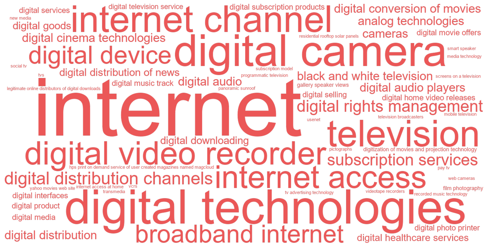
C.11.3 Articles
| Year | Full citation | Technology / technologies | Abstract |
|---|---|---|---|
| 2026 | Liu J, Hill S, Rothschild D. Dynamic Effects of TV Ad Suspension on Keyword Search: Evidence from the US Telecom Industry. Journal Of Marketing. 2026;48:73-95. doi:10.1177/00222429251343590 | tv advertising technology | This article investigates the dynamic effects of temporarily suspending TV ads on online keyword search through a large-scale quasi-experiment in the U.S. wireless telecom industry. One top carrier, which spends stably around one million USD per day on TV advertising, halted its TV ads for a randomly selected week over our (six-month) study window. The primary challenges in this event study-continuously changing treatment variables and establishing valid control groups to account for time-varying confounders-are addressed using the generalized synthetic control estimator. Findings reveal significant immediate and lasting declines in the focal brand's search volume, with reductions of 5\%-15\% per day persisting for two weeks after TV ads resumed. The effects varied significantly across search categories: Informational searches related to TV ad content experienced drops of up to 30\% per day but recovered more quickly, while navigational searches showed smaller but more prolonged declines. Furthermore, the intervention had modest, short-lived spillover effects on three competitors. Interestingly, the suspension tended to hurt the competitor most similar to the focal brand, while benefiting leading competitors. These spillover effects were particularly pronounced in informational and channel searches, suggesting that competitors' visibility was significantly affected by the focal brand's absence. |
| 2025 | Van C M, Stremersch S. Engagement in platform markets: A (video) game changer?. Journal Of The Academy Of Marketing Science. 2025;44:1422-1446. doi:10.1007/s11747-025-01089-2 | subscription services | Empirical studies of two-sided platform markets, like the video game console industry, typically rely on software and platform sales data, thereby overlooking today's managerial focus on engagement. This present research leverages a unique dataset tracking the daily engagement of over 14,000 users of Microsoft's Xbox One and Xbox Series video game platforms to remedy this gap. We investigate how software development and release characteristics affect consumers' engagement with software titles and the platforms on which they release. Our analysis finds that releasing software on subscription services is the strongest determinant of engagement, overshadowing established determinants like software quality or exclusivity. While superstar software and exclusive titles generate engagement, their relative importance is smaller compared to sales-based findings, reported in prior literature. Instead, franchises, non-superstars, and multihomed software perform much better on engagement than on sales, especially when included in a subscription service. These findings have important industry implications. |
| 2025 | Tran U. The Rise of Broadband and the Retail Landscape: Evidence from Consumer Packaged Goods. Journal Of Marketing. 2025;79:. doi:10.1177/00222429251351859 | broadband internet | The proliferation of broadband internet has sparked concerns about the future of brick-and-mortar retail. This article explores consumer behavior in the U.S. consumer packaged goods sector during broadband's proliferation from 2004 to 2019. Using household panel and retail scanner data covering more than 40,000 brands in 900 categories, the author analyzes nine household and retailer outcomes: brands purchased, trips taken, retailers visited, offline spending, any online spending, online spending share, prices, price dispersion, and demand elasticities. The author combines U.S. Census and Federal Communications Commission data to track the rollout of broadband. In contrast to established notions that broadband adoption would rapidly transform shopping behaviors in this period, the findings reveal a more nuanced and gradual pattern of change. Exploiting geographic variation in broadband growth, the author finds economically modest average effects with significant heterogeneity by age and household income. The analysis reveals generational differences: sharp declines in brick-and-mortar shopping among younger consumers counterbalanced by relative stability in larger older cohorts. In short, this article finds that broadband access drove a gradual evolution in consumer behavior, rather than a dramatic upheaval. |
| 2025 | Van C M, Stremersch S. The rise of the subscription model in the video game console industry: Unveiling the commercial consequences for platform owners and video game sellers. International Journal Of Research In Marketing. 2025;51:1058-1083. doi:10.1016/j.ijresmar.2025.02.006 | subscription model | Prior research in the video game console industry empirically examined the interdependence of hardware (i.e., console) sales, software (i.e., video game) sales and software supply. Recently, we have witnessed the rise of the subscription model (such as Microsoft's Xbox Game Pass and Sony's PlayStation Plus) as a new business model among platform owners. The impact of this new business model on platform owner revenues, video game seller revenues, and video game supply are unknown to date. Does this new model fuel growth for all sides of the market or does it come at the expense of console and/or video game sales revenue? We study the past launches of Microsoft's Xbox Game Pass and Sony's PlayStation Plus on which now the dust has settled enough to examine the commercial consequences thereof. Our research provides first evidence that the introduction of the respective subscription models in proprietary video game console markets: (1) enhanced console revenue, (2) had limited impact on video game revenue (contrary to the cannibalizing effects observed in the music, movie and TV industry), and (3) created a healthier video game supply, either by increasing the quantity of video game introductions (i.e., for PlayStation) or increasing their average quality (i.e., for Xbox). (c) 2025 The Author(s). Published by Elsevier B.V. This is an open access article under the CC BY license (http://creativecommons.org/licenses/by/4.0/). |
| 2024 | Beverland M, Fernandez K, Eckhardt G. Consumer Work and Agency in the Analog Revival. Journal Of Consumer Research. 2024;73:719-738. doi:10.1093/jcr/ucae003 | analog technologies, film photography | Why do consumers choose difficult analog technologies over their labor-saving digital counterparts? Through ethnographic investigations of three once defunct analog technologies that have experienced a resurgence (vinyl music, film photography, and analog synthesizers), we explore how the act of consumer work enables consumers to experience shifting dimensions of agency. We utilize the theoretical lens of serious leisure to introduce a four-stage work process (novice, apprentice, craft, and design) in which the experience of agency is dependent on the shifting relations between user, object, and context. The four stages are cumulative and conjunctive, representing the development of skills toward mastery while also being connected via three transition mechanisms (contextualization, schematization, and hypothesization) that address agency-alienation tensions. The transition through these mechanisms is necessary to sustain emotional engagement in consumer work. Our contribution lies in demonstrating the myriad of ways in which consumer work as serious leisure generates different experiences of agency and alienation and the ways in which consumers can sustain engagement in their work. |
| 2024 | Puntoni S. Diagnostic delay in amyotrophic lateral sclerosis. Journal Of Consumer Psychology. 2024;10:174-176. doi:10.1002/jcpy.1358 | digital technologies | This commentary questions two common assumptions underlying discussions of how digital technology can enrich the consumer experience. First, broad conceptualizations tend to accommodate augmented reality and virtual reality under a single metaverse umbrella. This commentary draws attention to differences between the two and to the present-day prevalence of augmented reality experiences. Second, discussions of the metaverse tend to focus on visual experiences. This commentary draws attention to the impact that augmented reality is having through other senses. I argue that augmented reality experiences are ubiquitous because smartphones and wearables enrich our everyday life with haptic and sonic information. |
| 2024 | Chou C, Kumar V. Estimating Demand for Subscription Products: Identification of Willingness to Pay Without Price Variation. Marketing Science. 2024;39:797-816. doi:10.1287/mksc.2021.0426 | digital subscription products | We demonstrate how to obtain the distribution of consumer willingness to pay (WTP) for digital subscription products, where consumers pay a fixed price each period for potentially unlimited usage, for example, music streaming like Spotify. Typically, in such applications, usage data are observed and is critically valuable for the method here. We demonstrate how variation in usage and subscription choice together can identify the WTP distribution in the absence of price variation. Our framework accommodates and builds upon a range of utility specifications for usage, which is related to subscription decisions. We provide the conditions required on exogenous variation impacting usage, and prove how these lead to identification of the WTP distribution. We also investigate the conditions under which usage variation is not equivalent to price variation. We apply our method to an empirical application using the data from a music streaming service. Using the estimated WTP distribution, we obtain the revenue maximizing prices for different consumer segments. |
| 2024 | Abell A, Biswas D, Arroyo M C. Food and technology: Using digital devices for restaurant orders leads to indulgent outcomes. Journal Of The Academy Of Marketing Science. 2024;67:1673-1691. doi:10.1007/s11747-024-01029-6 | digital device | Restaurants are increasingly opting for technological innovations for food ordering. While digital modes of ordering, such as kiosks, tablets, and apps, embrace emerging innovations, can there be unintended consequences regarding the foods purchased and total spending? The findings from a series of studies, including six studies conducted in the field, demonstrate that a digital (vs. non-digital) ordering mode leads consumers to have a more automatic decision making mode and lower cognitive involvement, which results in more indulgent outcomes in the form of unhealthy food orders and higher overall spending. This effect attenuates for consumers with a high degree of technology acceptance and for orders placed earlier in the day. These findings suggest that restaurant managers with the goal of selling healthier options would benefit from having non-digital ordering modes, while managers desiring more indulgent purchases would benefit from having digital ordering modes available. |
| 2024 | Huang L, Pricer L. How video conferencing promotes preferences for self-enhancement products. International Journal Of Research In Marketing. 2024;75:93-112. doi:10.1016/j.ijresmar.2023.09.001 | gallery speaker views, web cameras | The pandemic has led to a significant increase in the use of video conferencing platforms such as Zoom, Google Meet and Microsoft Teams. Yet little is known about the impact of video conferencing on subsequent consumer decisions. Across six studies, we examine the effects of video conferencing in both consumption (e.g., sales) and nonconsumption (e.g., school and work) contexts and find that video conferencing can trigger greater interest in products that can enhance the self - physically, intellectually, and/or mentally - due to heightened social appearance anxiety. This effect is attenuated when technology allows users to reduce social appearance anxiety (e.g., the use of ring lights or the ability to turn off web cameras) but accentuated when social anxiety is increased (e.g., the use gallery/ speaker views) and is more pronounced among consumers who are low in self-esteem. (c) 2023 Elsevier B.V. All rights reserved. |
| 2024 | Yang H. The Genesis Effect: Digital Goods in the Metaverse. Journal Of Consumer Research. 2024;22:129-139. doi:10.1093/jcr/ucad072 | digital goods | This research shows that although the used and unused versions of a digital good (e.g., virtual apparel) are identical in every pixel and functionality, consumers tend to prefer the unused version. This ``genesis effect'' occurs because consumers tend to perceive used (vs. unused) digital goods as virtually contaminated and because being permanently listed as the first (vs. subsequent) owner in the ownership record can confer a greater sense of status. Specifically, in study 1, analyses of large-scale field data on purchases of digital goods in the metaverse showed that consumers paid substantially more to acquire the unused (vs. used) version of the same good. Studies 2-4 causally demonstrated the genesis effect and its underlying mechanism across metaverse product categories-participants were less likely to purchase digital goods described as used (vs. unused). Virtual contamination and virtual status jointly mediated the effect. Furthermore, being the first-at the genesis of a digital product's usage history-was particularly special, such that participants were less sensitive to increases in the number of prior owners after the first one. Finally, showing participants that a used good had been digitally reconstituted attenuated the genesis effect. These findings add to the literature on consumer behavior in the metaverse and offer managerial insights on digital goods marketing. |
| 2024 | Aljafari R, Soh F, Setia P, Agarwal R. The local environment matters: Evidence from digital healthcare services for patient engagement. Journal Of The Academy Of Marketing Science. 2024;88:1343-1365. doi:10.1007/s11747-023-00972-0 | digital healthcare services, digital services | The creation and delivery of healthcare services are being transformed through patient-engaging digital services. However, their effects on hospital performance are unclear. We build on the theoretical foundations of resource dependency and environmental munificence to identify two characteristics of the hospital's regional environment, the population's access to digital computing resources (computing access) and health insurance coverage (service access), that condition the effects of hospitals' patient-engaging digital services on patient satisfaction and readmissions. We argue that these omitted environmental contingencies may help explain the inconclusive findings reported in prior empirical studies on digital services. Analysis of data collated from a national sample of 941 hospitals nested within 157 regions shows that computing access in the environment strengthens the effect of a hospital's digital services on readmissions and patient satisfaction. By contrast, service access dampens the moderated effect of digital services and computing access on readmissions, but the effect is not the same for patient satisfaction. Our study offers theoretical and practical implications underscoring the role of environmental heterogeneity in the value hospitals realize from patient-engaging digital services. |
| 2024 | Lambrecht A, Tucker C, Zhang X. TV Advertising and Online Sales: A Case Study of Intertemporal Substitution Effects for an Online Travel Platform. Journal Of Marketing Research. 2024;43:248-270. doi:10.1177/00222437231180171 | digital technologies | Digital technologies lead consumers to engage with companies online after they see TV ads, and firms increasingly wish to coordinate TV advertising in real time with online marketing activities. As a result, firms are keen to measure how TV advertising affects consumers' online behavior, but a key question is over what window of time to measure this effect. The standard industry practice of using short attribution windows around an ad to measure a causal effect may miss the possibility that consumer behavior shifts over time due to, for example, intertemporal substitution. The authors collaborate with an online travel platform and evaluate the results of a field test in which part of the country was exposed to TV ads while another part of the country formed a control group. Using the synthetic difference-in-differences approach, the authors find that TV advertising leads to an instantaneous increase in online browsing and sales. However, they also document evidence for intertemporal substitution: consumers appear to move their online activities forward in time in response to TV advertising, leading to lower browsing and lower sales at times when no ad is airing. The authors further explore the effects of TV advertising on channel choices, device choices, and promotion usage and discuss the implications for advertisers and the ad-measurement industry. |
| 2023 | Biswas D, Abell A, Chacko R. Curvy Digital Marketing Designs: Virtual Elements with Rounded Shapes Enhance Online Click-Through Rates. Journal Of Consumer Research. 2023;78:552-570. doi:10.1093/jcr/ucad078 | digital interfaces | With the growing prevalence of digital platforms for online shopping, advertising, and marketing activities in general, it is imperative to better understand how designs of virtual elements on digital interfaces influence click behavior. Websites and online advertisements contain virtual elements such as call-to-action buttons, images, and logos. This research examines how curved versus sharp angled shapes of virtual elements in online ads and on websites influence click-through rates (CTRs). The findings of a series of studies, including three field experiments and an eye tracking study, show that website and online ad elements in curved (vs. sharp angled) shapes generate higher CTRs. Process evidence suggests that curved (vs. sharp angled) digital elements enhance visual appeal, leading to approach motivation and greater CTR. In terms of practical implications, the findings of this research have strong relevance for designing online ads and website interfaces and for digital marketing strategies. Specifically, digital marketers desiring higher click rates would benefit from having more curved (than sharp angled) virtual elements on websites and in online ads. |
| 2023 | Seifert R, Otten C, Clement M, Albers S, Kleinen O. Exclusivity strategies for digital products across digital and physical markets. Journal Of The Academy Of Marketing Science. 2023;60:245-265. doi:10.1007/s11747-022-00897-0 | digital distribution channels, digital home video releases, digital movie offers, digital technologies | Digital technologies allow versioning a product (e.g., a movie) for different physical and digital sequential distribution channels to target heterogeneous consumer segments, thereby creating exclusive offers. Extant literature on sequential distribution for movies largely concentrates on the theater-to-home-video window length (e.g., DVD), thus, neglecting digital distribution channels, particularly the potential of exclusive digital offers when multiple subsequent home video channels are available. We empirically examine the impact of exclusive digital movie offers on demand in digital and physical distribution channels. We fit a system of equations to a unique sample of 260 movies distributed in theaters, digital purchases, digital rentals, and physical purchases channels. Overall, the results indicate substantial profits from exclusive offers. Rather than sales cannibalizations, we find positive cross-channel demand spillovers from exclusive digital offers to delayed physical purchases. Exclusive home video offers outperform mere reductions in the theatrical exclusivity period; thus, implementing exclusive digital home video releases is a promising alternative to avoid conflict-prone reductions of the overall theater-to-home-video release window. Our findings are also relevant to industries that use different online and offline release windows (book publishers) or give exclusive access across different platforms (game publishers). |
| 2023 | Danaher P. Optimal Microtargeting of Advertising. Journal Of Marketing Research. 2023;46:564-584. doi:10.1177/00222437221116034 | digital media | Historically, advertising allocation decisions have operated mostly at a macro level, comprising determination of the total budget followed by apportionment among media channels. Owing to the rapid and sustained rise of digital media, an additional decision now operates at a micro level, namely, which specific customers to target with advertising. In the macro case, optimal control theory provides a powerful framework for firm profit maximization, specifically allowing for ad response, cost per medium, and discount rate, all in the presence of multiple competing brands. However, optimal control theory has never been applied to the situation of microtargeting individual customers. Consequently, in this study the author shows how optimal control theory can be adapted for application to individual customers. The author estimates a multinomial logit model with individual-specific advertising response parameters. In turn, these parameters are used to determine the optimal number of exposures each customer should receive for each advertising medium. An empirical example demonstrates that using the optimal microtargeting method improves firm profits over existing ad scheduling methods by between 150\% and 183\%. |
| 2022 | Vadakkepatt G, Bryant A, Hill R, Nunziato J. Can advertising benefit women's development? Preliminary insights from a multi-method investigation. Journal Of The Academy Of Marketing Science. 2022;83:503-520. doi:10.1007/s11747-021-00823-w | internet access | We examine the interaction effect of country-level aggregate advertising spending and internet access on women's development. We explain why this interaction effect either enhances or discourages women's development. Our empirical analysis of aggregate advertising spending across forty-eight countries over five years uncovers a conditional effect. Advertising may have adverse consequences on women's development when internet access is low. However, in conjunction with high levels of internet access, advertising corresponds to advancing women's development. Through an experimental study, we show one possible mechanism for this development: on one hand, the growing trend of femvertising produces comments supportive of women's empowerment. On the other, stereotypically-sexist ads elicit psychological reactance to objectifying messages. Both the celebration of messaging that supports women and the criticism of sexist stereotyping are now being widely shared online. To explore this phenomenon globally, we conducted a qualitative analysis of social media responses to Dove ads aired within multiple countries. We find that consumers amplified empowering advertisements across a range of different cultural contexts. These findings have implications for advertisers, marketers, and policy makers: such constituencies should consider how advertising can facilitate women's development by providing marketplace conditions that promote personal evolution into unattained-but-attainable versions of the self. |
| 2022 | Mullins R, Agnihotri R. Digital selling: organizational and managerial influences for frontline readiness and effectiveness. Journal Of The Academy Of Marketing Science. 2022;108:800-821. doi:10.1007/s11747-021-00836-5 | digital selling | To provide much-needed guidance for digital transformations in sales organizations, we draw from change readiness theory to propose a digital selling effectiveness framework. Based on a cross-industry sample of 225 salespeople across 69 sales organizations, findings reveal key organizational and managerial influence mechanisms that impact digital selling readiness, and consequently, effectiveness. We discover that digital selling psychological climate drives digital selling readiness; however, results also reveal the strong influence marketing has over this relationship. Marketing-sales joint rewards increase the influence of digital selling climate on readiness, whereas marketing-sales rivalry weakens such influence. On the managerial side, positive outcome framing, an apprising managerial influence tactic, positively impacts digital selling readiness. At the same time, sanction influence tactics negate the effect of positive outcome framing on readiness while consultation tactics yield little influence. Importantly, we demonstrate an association between digital selling readiness and effectiveness, illustrating a performance-based approach for successful digital transformation. |
| 2022 | Quach S, Thaichon P, Martin K, Weaven S, Palmatier R. Digital technologies: tensions in privacy and data. Journal Of The Academy Of Marketing Science. 2022;86:1299-1323. doi:10.1007/s11747-022-00845-y | digital technologies | Driven by data proliferation, digital technologies have transformed the marketing landscape. In parallel, significant privacy concerns have shaken consumer-firm relationships, prompting changes in both regulatory interventions and people's own privacy-protective behaviors. With a comprehensive analysis of digital technologies and data strategy informed by structuration theory and privacy literature, the authors consider privacy tensions as the product of firm-consumer interactions, facilitated by digital technologies. This perspective in turn implies distinct consumer, regulatory, and firm responses related to data protection. By consolidating various perspectives, the authors propose three tenets and seven propositions, supported by interview insights from senior managers and consumer informants, that create a foundation for understanding the digital technology implications for firm performance in contexts marked by growing privacy worries and legal ramifications. On the basis of this conceptual framework, they also propose a data strategy typology across two main strategic functions of digital technologies: data monetization and data sharing. The result is four distinct types of firms, which engage in disparate behaviors in the broader ecosystem pertaining to privacy issues. This article also provides directions for research, according to a synthesis of findings from both academic and practical perspectives. |
| 2022 | Bashirzadeh Y, Mai R, Faure C. How rich is too rich? Visual design elements in digital marketing communications. International Journal Of Research In Marketing. 2022;60:58-76. doi:10.1016/j.ijresmar.2021.06.008 | pictographs | Companies are increasingly including innovative visual design elements such as animations and pictographs in digital communication. While both elements can be beneficial in exchanges with their customers, we propose that combining them can have negative effects on communication effectiveness. Animations and pictographs enhance digital communication, essentially through increased perceptions of enrichment, but these elements also raise perceptions of clutter. As they enrich a message in unique ways, processing these different types of visual design elements requires distinct cognitive resources such that, when combined, clutter perceptions dominate the recipient's perceptions and behaviors, thus paradoxically offsetting their positive effects. This interplay may not only undermine message outcomes but even spill over to downstream behavioral outcomes. In a large-scale randomized field experiment in cooperation with a mobile app company, we find that including animations (GIFs) and pictographs (emojis) together damages message outcomes (increasing unsubscriptions) and downstream outcomes (reducing in-app time) compared with what happens when these elements are deployed separately. We elaborate on the processing of the text and visual elements from this field experiment in two lab experiments, including an eye-tracking study. Finally, in two further online studies, we seek to establish whether the proposed mechanisms depend on the number of visuals or the types of pictographs employed. (c) 2021 Elsevier B.V. All rights reserved. |
| 2022 | Halbauer I, Klarmann M. How voice retailers can predict customer mood and how they can use that information. International Journal Of Research In Marketing. 2022;51:77-95. doi:10.1016/j.ijresmar.2021.09.008 | smart speaker | In two studies we investigate how voice shopping may provide access to meaningful data on customer mood and how retailers may use such data. In Study 1 we explores the use of a machine learning approach to predict customer mood based on customer commands in the voice shopping process. We compare it to a heuristic approach to customer mood prediction based on situational correlates of mood that that a smart speaker can access (weather, music choice, day of week, and daylight). In Study 2 we explore how a voice retailer could use the potential capability to predict customer mood. Our results provide evidence that a customer's good mood is associated with purchases of higher-priced premium brands. In addition, retailers can use mood prediction to adapt the presentation of product information to fit customer mood, thus helping customers optimize their decisions. In a sensitivity analysis, we examine what accuracy of mood prediction could enable retailers to use the explored effects. (c) 2021 Elsevier B.V. All rights reserved. |
| 2022 | Sen A, Tucker C. Product Quality and Performance in the Internet Age: Evidence from Creationist-Friendly Curriculum. Journal Of Marketing Research. 2022;37:211-229. doi:10.1177/0022243720971579 | internet | Curriculum is at the core of school quality. Curriculum changes often attempt to cater to local preferences while adhering to national standards. This tension often drives a school's decision to invest in curriculum changes even though little is known about how such changes affect student performance. To examine these interrelated issues of product quality and performance in the education sector, the authors analyze the effect of the 2008 Louisiana Science Education Act on students' science test performance in nationally administered tests. The law allowed the teaching of creationism as an alternative ``theory'' to evolution in Louisiana schools. Using detailed data on Louisiana schools, the authors employ a difference-in-differences strategy to document that science test achievement declined after the law was passed, relative to schools in neighboring Texas. The effect of the law was driven by regions with high internet penetration and low parental education levels. After the change in policy, Louisiana students were more likely to seek out information on the internet using search terms that led them to web pages that reinforced a creationist message. |
| 2022 | Plangger K, Grewal D, De R K, Tucker C. The future of digital technologies in marketing: A conceptual framework and an overview. Journal Of The Academy Of Marketing Science. 2022;35:1125-1134. doi:10.1007/s11747-022-00906-2 | digital technologies | Digital technologies are key to achieving competitive advantage across marketing and retailing contexts. At the same time, marketing managers are confronted with a variety of challenges surrounding the strategic use of these technologies and the need to re-think their digital strategies. Importantly, managers need to develop a deeper understanding of consumer attitudes towards and engagement with (or lack thereof) digital technologies. Marketing strategists can benefit from academic marketing's thought leadership to learn how they can transform these challenges into strategic opportunities for competitive advantage. This can lead to technological innovations that create customer, firm, and societal value. Some of these benefits are described in the articles that make up this special issue. We propose a framework that focuses on the role of strategic resources used by managers to develop and deliver on the promise of digital technologies. Then, we report insights from 16 boardroom interviews with senior marketing managers resulting in three broad themes: decentralized marketing, metamodern customer experiences, and marketing mechanization. We close with a research agenda to motivate additional thought-leading research in this fast-growing area. |
| 2022 | Toure-Tillery M, Wang L. The Good-on-Paper Effect: How the Decision Context Influences Virtuous Behavior. Marketing Science. 2022;75:1004-1024. doi:10.1287/mksc.2021.1347 | digital device | In a series of 10 studies, we find that people are more likely to make virtuous decisions on paper than on a digital device because they perceive choices on paper as more real (i.e., tangible, actual, and belonging to the physical rather than the virtual world) and hence as more self-diagnostic (i.e., representative of who they are). We first show people express more interest in donating and volunteering (Studies 1a and 1b), are more likely to donate (Study 2), and put more effort into helping a charitable cause (Study 3) when these choices occur on paper (versus tablet)-a pattern of decision making we label the good-on-paper effect. Study 4 extends these findings to book choices (highbrow versus lowbrow) and to a device interaction that closely mimics writing on paper (i.e., tablet with digital pen). In the context of volunteering decisions, we then provide evidence for the sequential mediating roles of perceptions of realness and self-diagnosticity in the good-on-paper effect (Study 5 and Studies 6a and 6b). Finally, we show that chronic (Study 7) and situational (Study 8) perceptions of self-diagnosticity moderate this effect in the contexts of environmental protection and food choices (healthy versus indulgent), respectively. We discuss the theoretical and practical implications of these findings. |
| 2022 | Bollinger B, Gillingham K, Kirkpatrick A, Sexton S. Visibility and Peer Influence in Durable Good Adoption. Marketing Science. 2022;47:453-476. doi:10.1287/mksc.2021.1306 | residential rooftop solar panels | The underlying channels through which peer influence operates in durable good adoption can affect the ability of marketers to leverage them. In this paper, we assess whether the visibility of peers' adoption decisions leads to greater peer influence. The context we study is residential rooftop solar panels. We exploit the plausibly exogenous location and orientation of peers' rooftop solar panels relative to proximate roadways and visual obstructions, such as vegetation, in order to determine whether geographically proximate peer installations increase a household's probability of solar adoption more if they are visible from the road. We find that the total angle of visibility of peer installations on the same street positively affects solar adoption decisions at distances of at least 500 meters (m). In contrast, we only find a positive effect of nonvisible solar arrays within 100 m, which may be due to causal peer influence via other channels, such as word of mouth, or very localized unobservable effects. The effect of peer visibility is moderated by the economic value that the peers receive from installing solar, providing suggestive evidence of social learning through visual information. |
| 2021 | Lim S, Donkers B, Van D P, Dellaert B, G. C G. Digital customization of consumer investments in multiple funds: virtual integration improves risk-return decisions. Journal Of The Academy Of Marketing Science. 2021;54:723-742. doi:10.1007/s11747-020-00740-4 | digital technologies | Digital technology in financial services is helping consumers gain wider access to investment funds, acquire these funds at lower costs, and customize their own investments. However, direct digital access also creates new challenges because consumers may make suboptimal investment decisions. We address the challenge that consumers often face complex investment decisions involving multiple funds. Normative optimal asset allocation theory prescribes that investors should simultaneously optimize risk-returns over their entire portfolio. We propose two behavioral effects (mental separation and correlation neglect) that prevent consumers from doing so and a new choice architecture of virtually integrating investment funds that can help overcome these effects. Results from three experiments, using general population samples, provide support for the predicted behavioral effects and the beneficial impact of virtual integration. We find that consumers' behavioral biases are not overcome by financial literacy, which further underlines the marketing relevance of this research. |
| 2021 | Yang J, Anderson E, Gordon B. Digitization and Flexibility: Evidence from the South Korean Movie Market. Marketing Science. 2021;38:821-843. doi:10.1287/mksc.2020.1282 | digital cinema technologies, digitization of movies and projection technology | We examine how the introduction of digital cinema technologies in the South Korean movie industry created flexibility for theaters in movie showings. Using detailed data on theaters' digital adoption and daily assortment decisions between 2006 and 2016, we show that, on average, digitization is associated with both increased variety of movies and increased showings of the most popular movies. But, delivering these benefits to consumers took at least four years to materialize and varied with the number of screens in a theater. During the early years of theater digitization, product variety declined in larger theaters. Yet, when digital movies became widely available, product variety increased. Once digital movies were broadly available, we show that theaters created increased product variety during less popular time slots and offered more showings of consumers' favorite movies during peak demand on weekend evenings. Overall, we show that digitization of movies and projection technology creates flexibility in scheduling, which seems to allow theaters to better respond to consumer demand. |
| 2021 | Fossen B, Mallapragada G, De A. Impact of Political Television Advertisements on Viewers' Response to Subsequent Advertisements. Marketing Science. 2021;60:305-324. doi:10.1287/mksc.2020.1260 | television | Political advertisements on television can affect viewers and may, consequently, influence the effectiveness of subsequent ads. Such ad-to-ad spillover effects-where one ad influences how viewers respond to a subsequent ad-have drawn concerns from nonpolitical advertisers, raising the question: how do political ads on television impact viewers' response to subsequent ads? We empirically investigate this question using two outcomes of ad response: ad viewership and online conversations about ads. We use data on 849 national political television ads from the 2016 election and leverage a quasi-experimental design to delineate the effect that a political ad has on the subsequent ad. We show that, counterintuitively, political ads spur positive spillover effects. Specifically, ads that follow a political ad, compared with ads that follow a nonpolitical ad, experience an 89\% reduction in audience decline and thus air to larger audiences. Additionally, we find evidence that viewers engage in more positive online ad chatter about ads that air after political ads, with these ads experiencing a 3\% increase in positive chatter after the ad. Our investigation contributes to research on advertising that has yet to explore ad-to-ad spillover effects and, more broadly, provides insights into how political messages influence consumers. |
| 2021 | Chen Y, Mittal V, Sridhar S. Investigating the Academic Performance and Disciplinary Consequences of School District Internet Access Spending. Journal Of Marketing Research. 2021;50:141-162. doi:10.1177/0022243720964130 | internet access | Public school districts not only make strategic investments in internet access as a means to attract and retain students but also communicate the value of these investments with parents as part of their marketing programs. While it helps attract more customers, how does school district internet access spending (SDIAS) affect academic performance and disciplinary problems among students? Using a longitudinal data set that combines SDIAS of 1,243 school districts with academic performance and disciplinary records of more than 9,000 Texas public schools between 2000 and 2014, the authors find that a one-standard-deviation increase in SDIAS (an average increase of \$.6 million) is associated with an improvement in eight academic performance indicators, with effect sizes ranging from 2\% to 5\% of a standard deviation, amounting to a \$.8 million to \$1.8 million increase in cumulative income for the current students of a school district. Furthermore, a one-standard-deviation increase in SDIAS is associated with a 5\% increase in Part II offense-related school disciplinary problems, amounting to a yearly cost of \$25,800 to \$53,440 for a school district. The positive and negative consequences of SDIAS are more pronounced among schools in regions with a higher level of household internet access. |
| 2021 | Feiereisen S, Rasolofoarison D, Russell C, Antonia A, Schau H. One Brand, Many Trajectories: Narrative Navigation in Transmedia. Journal Of Consumer Research. 2021;141:651-681. doi:10.1093/jcr/ucaa046 | transmedia | In an era of unprecedented consumer access to media and the tools to control narrative delivery, speed, and exposure to transmedia content, there is no longer the illusion of a cohesive narrative managed by a recognized singular author or unified authorial voice. Instead, consumers carve their own trajectories through brand narratives. Our multimethod inquiry of television series viewing, based on a combination of interviews, diaries, video recordings followed by member-check interviews and online forum analyses, identifies two key forces that guide narrative navigation: how consumers manage a text's gravitational pull and its permeability to transmedia content. We find that consumers shape their own trajectories by adopting and/or moving between nine documented narrative positions. This more nuanced understanding of narrative consumption in a transmedia environment offers new insights for the study of narrative brand spaces and brand storytelling. |
| 2021 | Kim A, Affonso F, Laran J, Durante , Kristina M K. Serendipity: Chance Encounters in the Marketplace Enhance Consumer Satisfaction. Journal Of Marketing. 2021;49:141-157. doi:10.1177/00222429211000344 | subscription services | Despite evidence that consumers appreciate freedom of choice, they also enjoy recommendation systems, subscription services, and marketplace encounters that seemingly occur by chance. This article proposes that enjoyment can, in some contexts, be higher than that in contexts involving choice. This occurs as a result of feelings of serendipity that arise when a marketplace encounter is positive, unexpected, and attributed to some degree of chance. A series of studies shows that feelings of serendipity positively influence an array of consumer outcomes, including satisfaction and enjoyment, perceptions of meaningfulness of an experience, likelihood of recommending a company, and likelihood of purchasing additional products from the company. The findings show that strategies based on serendipity are even more effective when consumers perceive that randomness played a role in how an encounter occurred, and not effective when the encounter is negative, the encounter occurs deterministically (i.e., planned by marketers to target consumers), and consumers perceive that they have enough knowledge to make their own choices. Altogether, this research suggests that marketers can influence customer satisfaction by structuring marketplace encounters to appear more serendipitous, as opposed to expected or entirely chosen by the consumer. |
| 2020 | Rust R. The future of marketing. International Journal Of Research In Marketing. 2020;79:15-26. doi:10.1016/j.ijresmar.2019.08.002 | internet | The main thesis of this article is that several long-term trends are reshaping marketing and forcing marketing managers to change radically to keep up. These long-term trends are technological, socioeconomic and geopolitical. Advances in technology, in particular, are having a profound impact on marketing, resulting in the deepening of customer relationships and the continuous expansion of the service economy. Artificial intelligence, big data, the Internet, and the expansion of networks are creating a revolution in marketing that makes the 1960s-style 4 Ps increasingly obsolete. Compounding the problem for marketers are the socioeconomic factors of diversity and inclusion, as well as major geopolitical threats. I explore the nature of change, extrapolate marketing practice into the future, and examine the implications for marketing managers, marketing education and academic research in marketing. (C) 2019 Elsevier B.V. All rights reserved. |
| 2019 | Vieira V, Severo D A M, Agnihotri R, De A C D S N, Arunachalam S. In pursuit of an effective B2B digital marketing strategy in an emerging market. Journal Of The Academy Of Marketing Science. 2019;89:1085-1108. doi:10.1007/s11747-019-00687-1 | internet | In business markets, firms operating in developing economies deal with burgeoning use of the internet, new electronic purchase methods, and a wide range of social media and online sales platforms. However, marketers are unclear about the pattern of influence of firm-initiated (i.e., paid media, owned media, and digital inbound marketing) and market-initiated (i.e., earned social media and organic search) digital communications on B2B sales and customer acquisition. We develop and test a model of digital echoverse in an emerging market B2B context, using vector autoregressive modeling to analyze a unique 132-week dataset from a Brazilian hub firm operating in the marketplace. We find empirical evidence supporting our conceptual framework in emerging markets. Underscoring the importance of a market development approach for emerging markets, the findings show that owned media and digital inbound marketing play a bigger role in influencing customer acquisition. Impressions generated through earned social media complement owned media, but not paid media. These insights highlight the notion that while sources of digital echoverse may remain the same across countries, its components exert a particular pattern of influence in an emerging market context. This is expected to encourage managers to rethink their digital strategies for B2B customer acquisition and sales enhancement while operating in emerging markets. |
| 2019 | Wloemert N, Papies D. International heterogeneity in the associations of new business models and broadband Internet with music revenue and piracy. International Journal Of Research In Marketing. 2019;54:400-419. doi:10.1016/j.ijresmar.2019.01.007 | broadband internet | Broadband Internet has fundamentally changed business models in many industries. In the music industry, for instance, old business models were challenged by illegal competitors, and broadband Internet has enabled value creation through new business models. The changes that established business models experienced in the wake of broadband Internet, however, differed vastly across national markets, and these differences are not well understood. We build a conceptual framework and study the extent to which differences in economic and cultural factors are associated with different market outcomes in the wake of the proliferation of broadband Internet. Thus, we compile two unique data sets from the music industry, comprising (1) revenue data for 36 countries and 22 years and (2) piracy data for 47 countries and >2 years. We use a Bayesian multilevel model to explore between-country heterogeneity in the associations between these variables and broadband Internet adoption and business model innovations. Our results show that the negative association between broadband Internet penetration and music revenue is weaker in high-income countries, where income restrictions are less likely to drive demand towards illegitimate piracy services. In terms of cultural factors, we find that a market's response to the introduction of broadband Internet is less negative in countries scoring high on Hofstede's individualism and uncertainty avoidance dimensions. Furthermore, we find that overall revenues only recover after the latest generation of streaming services (e.g., Spotify) has been introduced, and the adoption of these services is associated with lower levels of online music piracy. (C) 2019 Elsevier B.V. All rights reserved. |
| 2019 | Huang Y. Learning by Doing and the Demand for Advanced Products. Marketing Science. 2019;42:107-128. doi:10.1287/mksc.2018.1118 | digital camera | How much does consumer learning by doing affect the demand for advanced products? In the context of digital cameras, I use detailed picture-level data to directly measure changes in picture quality as a result of learning by doing or product switching. Although learning by doing builds up consumer human capital, a fraction of this human capital is product specific, creating consumer switching costs. To quantify the role of consumer human capital, I structurally estimate the demand for digital cameras with consumer learning by doing. The evolution of consumer human capital explains 23\% of the sales of advanced digital cameras, whereas brand-specific human capital-arising from incompatibility in product design-explains 15\% of consumer brand-choice inertia. |
| 2019 | Fossen B, Schweidel D. Social TV, Advertising, and Sales: Are Social Shows Good for Advertisers?. Marketing Science. 2019;57:274-295. doi:10.1287/mksc.2018.1139 | social tv | Television viewers are increasingly engaging in media-multitasking while watching programming. One prevalent multiscreen activity is the simultaneous consumption of television alongside social media chatter about the programming, an activity referred to as ``social TV.'' Although online interactions with programming can result in a more engaged and committed audience, social TV activities may distract media multi-taskers from advertisements. These competing outcomes of social TV raise the question: are programs with high online social TV activity, so called ``social shows,'' good for advertisers? In this research, we empirically examine this question by exploring the relationship among television advertising, social TV, online traffic, and online sales. Specifically, we investigate how the volume of program-related online chatter is related to online shopping behavior at retailers that advertise during the programs. We find that advertisements that air in programs with more social TV activity see increased ad responsiveness in terms of subsequent online shopping behavior. This result varies with the mood of the advertisement, with more affective advertisements-in particular, funny and emotional advertisements-seeing the largest increases in online shopping activity. Our results shed light on how advertisers can encourage online shopping activity on their websites in the age of multiscreen consumers. |
| 2019 | Thomas M. Was Television Responsible for a New Generation of Smokers?. Journal Of Consumer Research. 2019;48:689-707. doi:10.1093/jcr/ucz024 | television | Consumers' response to mass media can be difficult to assess because individuals choose for themselves the amount of media they consume, and that choice may be correlated with their other consumption decisions. To avoid this selection problem, this article examines the introduction of television to the US, during which some cities gained access to television years before others. This natural experiment makes it possible to estimate the causal impact of television on the decision to start smoking, a consumer behavior with important public health implications. Difference-in-differences analyses of television's introduction indicate that (1) television did cause people to start smoking, (2) 16- to 21-year-olds were particularly affected by television, and (3) much of the response to television occurred within a couple of years of its introduction. Our preferred estimates suggest that television increased the share of smokers in the population by 5-15 percentage points, generating roughly 11 million additional smokers between 1946 and 1970. More broadly, these results offer causal evidence that (1) mass media can have a large influence on consumers, potentially affecting their health, (2) media exerts an especially strong influence on teens, and (3) mass media can influence consumers more than typical changes in prices. |
| 2019 | Schulz P, Shehu E, Clement M. When consumers can return digital products: Influence of firm- and consumer-induced communication on the returns and profitability of news articles. International Journal Of Research In Marketing. 2019;61:454-470. doi:10.1016/j.ijresmar.2019.01.003 | digital distribution of news | The news industry is being massively disrupted by the digital distribution of news. Consequently, publishers have revised their business models and integrated pay-per-article options. To reduce pre-purchase uncertainty, consumers can use information from firm-induced (e.g., newsletters), or consumer-induced communication (e.g., likes). These communication activities avoid purchases with poor fit but also increase customer expectations. Consequently, their effect on sales, returns, and profitability is unclear. For digital products, these effects are even less clear because product quality is difficult to evaluate pre-purchase, and products can be returned at almost no cost, even after consumption. In this study, we investigate the effects of firm- and consumer-induced communication on digital returns in the context of news articles on a major online platform (Blendle). We rely on a multi-equation model to quantify the effect of firm- and consumer-induced communication activities (i.e., newsletter promotions sent out by the platform and consumer likes from readers) on sales and returns and calculate their profitability impact. Our results show.that newsletters decrease returns but do not significantly affect sales. In contrast, consumer likes have a twofold effect by increasing sales and decreasing returns. A simulation shows that both newsletters and likes increase profitability and that likes have a higher potential. Our results offer much needed guidance for online aggregators of digital products (e.g., audiobooks, e-books or news articles), as well as for online publishers based on pay-per-unit business models. (C) 2019 Elsevier B.V. All rights reserved. |
| 2018 | Swait J, Argo J, Li L. Modeling Simultaneous Multiple Goal Pursuit and Adaptation in Consumer Choice. Journal Of Marketing Research. 2018;41:352-367. doi:10.1509/jmr.14.0102 | digital camera | Goals are constructs that direct choice behavior by guiding a decision maker toward desirable (or away from undesirable) end states. Often, consumers are motivated to satisfy multiple goals within a single choice. Although previous research has recognized this possibility, it has not directly formulated models of choice as a multigoal problem. The authors develop such a model, referred to as the multiple-goal-based choice model, which incorporates (1) simultaneous multiple goal pursuit and (2) context-driven goal adaptation but (3) does not require a priori identification of the number or nature of the goals. Goal adaptation within a single choice instance, allied to repeated choices, is the key to empirical identification of multiple latent goals. The proposed model is tested and supported using discrete choice experimental data on digital cameras through multiple validation exercises. The model can lead to significantly different policy implications with regard to consumers' valuation for new product designs, compared with extant utility-based choice models. |
| 2018 | Mu J, Thomas E, Qi J, Tan Y. Online group influence and digital product consumption. Journal Of The Academy Of Marketing Science. 2018;107:921-947. doi:10.1007/s11747-018-0578-5 | digital product | This article examines the differential effects of online group influence on digital product consumption, using the context of online music listening with a distinction between mainstream music and niche music. The results suggest that the relationship between online groups, product category, and digital product consumption is more complex than previously conceived. We find that superordinate in-groups have a stronger influence on mainstream music listening, while subordinate in-groups have a higher impact on niche music listening. Music listeners can cross in-group lines to listen to music, although the effect on digital music consumption is not as strong as with superordinate in-groups on mainstream listening and subordinate in-groups on niche music listening. Our results also suggest that the positive effect of groups on online music listening reaches an initial ceiling effect before it hits a tipping point and accelerates. The findings provide novel insights into the role of online group influence in the growing reality of digital products and changing consumer behavior. |
| 2018 | Deng Y, Mela C. TV Viewing and Advertising Targeting. Journal Of Marketing Research. 2018;36:99-118. doi:10.1509/jmr.15.0421 | programmatic television | Television, the predominant advertisingmedium, is being transformed by the microtargeting capabilities of set-top boxes (STBs). By procuring impressions at the STB level (often denoted ``programmatic television''), advertisers can now lower per-exposure costs and/or reach viewers most responsive to advertising creatives. Accordingly, this study uses a proprietary, household-level, single-source data set to develop an instantaneous show and advertisement viewing model to forecast consumers' exposure to advertising and the downstream consequences for impressions and sales. Viewing data suggest that person-specific factors dwarf brand-or show-specific factors in explaining advertising avoidance, thereby suggesting that device-level advertising targeting can be more effective than existing show-level targeting. Consistent with this observation, the model indicates that microtargeting lowers advertising costs and raises incremental profits considerably relative to show-level targeting. Further, these advantages are amplified when advertisers can buy in real time as opposed to up front. |
| 2017 | Kannan P, Li H. Digital marketing: A framework, review and research agenda. International Journal Of Research In Marketing. 2017;178:22-45. doi:10.1016/j.ijresmar.2016.11.006 | digital technologies | We develop and describe a framework for research in digital marketing that highlights the touchpoints in the marketing process as well as in the marketing strategy process where digital technologies are having and will have a significant impact. Using the framework we organize the developments and extant research around the elements and touchpoints comprising the framework and review the research literature in the broadly defined digital marketing space. We outline the evolving issues in and around the touchpoints and associated questions for future research. Finally, we integrate these identified questions and set a research agenda for future research in digital marketing to examine the issues from the perspective of the firm. (C) 2016 Elsevier B.V. All rights reserved. |
| 2016 | Burmester A, Eggers F, Clement M, Prostka , Tim T. Accepting or fighting unlicensed usage: Can firms reduce unlicensed usage by optimizing their timing and pricing strategies?. International Journal Of Research In Marketing. 2016;62:343-356. doi:10.1016/j.ijresmar.2015.06.005 | internet | The rise of the Internet and new online services have led to the wide-scale illegal distribution of digital entertainment products, such as music, movies, games, and books. We analyze whether firms in the entertainment industry should fight unlicensed usage by providing specific offers that maximize the utility for segments relying on unlicensed usage, i.e., by optimizing timing and pricing strategies, or whether they should simply accept a certain level of unlicensed usage. We combine Becker's (1968) economic approach to analyzing social issues with random utility theory to develop a choice model for media products in which we account for unlicensed usage. We then apply the model in two large-scale empirical studies on movies and books. The results show that consumers who prefer unlicensed usage are sensitive to the marketing mix to some extent in both markets. However, optimizing timing and pricing only has limited impact on additional revenue generation. Thus, from a managerial perspective, it is very difficult to reduce the relative loss due to unlicensed usage by providing targeted offers. (C) 2015 Elsevier B.V. All rights reserved. |
| 2016 | Ordanini A, Nunes J. From fewer blockbusters by more superstars to more blockbusters by fewer superstars: How technological innovation has impacted convergence on the music chart. International Journal Of Research In Marketing. 2016;39:297-313. doi:10.1016/j.ijresmar.2015.07.006 | digital audio, legitimate online distributors of digital downloads, recorded music technology | The pace of change in recorded music technology has accelerated faster than ever during the past two decades with the shift from analog to digital. Digital recordings provide consumers the unimpeded ability to access, sample, learn about, acquire, store, and share vast amounts of music as never before. Supporters of winner-take-all theory believe lower search and transaction costs brought about by digitization have led to greater convergence with fewer extraordinarily popular songs (blockbusters) and a smaller number of artists who perform them (superstars). Supporters of long-tail theory believe the same factors have led to less convergence and a greater number of songs and artists becoming blockbusters and superstars. This work pits these opposing predictions against each other empirically. More specifically, we examine how the number of songs and artists appearing annually on Billboard's Hot 100 singles chart has changed between 1974 and 2013 in relation to three major turning points in technology associated with digitization. These turning points mark consumers' shift: (1) from analog records and cassettes to digital audio with the advent of CDs., (2) from CDs to compressed digital audio MP3s, and (3) from P2P networks and illegal file sharing to legitimate online distributors of digital downloads. In general, we observe a growing winner-take-all effect for songs until the advent of MP3s in 1998, when this trend abated. This result appears largely due to greater convergence in the Top 10. The trend reverses itself as the number of songs making the chart increases steadily after the launch of legitimate online music sellers such as iTunes. The exact opposite pattern is observed for artists. Initially, an increasing number of artists made the chart, and this trend continued unabated until 2003. After the emergence of legitimate online resellers, the trend reversed as fewer and fewer artists made it onto the chart. The overall pattern is summarized as a transition from fewer blockbusters by more superstars to more blockbusters by fewer superstars. (C) 2015 Elsevier B.V. All rights reserved. |
| 2016 | Zanjani S, Milne G, Miller E. Procrastinators' online experience and purchase behavior. Journal Of The Academy Of Marketing Science. 2016;69:568-585. doi:10.1007/s11747-015-0458-1 | internet | This paper seeks to understand how marketers might capitalize on consumers' increasing time spent online and convert online procrastination tendencies into purchase behavior. More specifically, the authors explore whether the propensity to use the Internet to avoid work tasks (online procrastination) leads to purchase behavior, and if so, what the mechanism underlying such an effect might be. Through two studies, the authors find that online procrastination positively impacts purchase, which in turn is indirectly affected by the consumers' propensity to delay their decisions. The authors further find different likelihoods of purchase based on degrees of tendency to delay decisions, online users' age, and type of online activities. Implications of these findings for informing managers about the ways to increase purchases for decisive and indecisive consumers who waste time online and raising online procrastinators' awareness about their vulnerability to marketers are discussed. |
| 2016 | Bronnenberg B, Kim J, Mela C. Zooming In on Choice: How Do Consumers Search for Cameras Online?. Marketing Science. 2016;53:693-712. doi:10.1287/mksc.2016.0977 | digital camera | We describe online consumers' search behavior for differentiated durable goods using a data set that captures a detailed level of consumer search and attribute information for digital cameras. Consumers search extensively, engaging in 14 searches on average prior to purchase. Individual level search is confined to a small part of the attribute space. Early search is highly predictive of the characteristics of the camera eventually purchased. Search paths through the attribute space are state dependent and display ``lock-in'' as the search unfolds. Finally, the first-time discovery of the chosen alternative usually takes place toward the end of the search sequence. We discuss these and other findings in the context of optimal search strategies and discuss the prospects for consumer learning during search. |
| 2015 | Cian L, Krishna A, Schwarz N. Positioning Rationality and Emotion: Rationality Is Up and Emotion Is Down. Journal Of Consumer Research. 2015;105:632-651. doi:10.1093/jcr/ucv046 | screens on a television | Emotion and rationality are fundamental elements of human life. They are abstract concepts, often difficult to define and grasp. Thus throughout the history of Western society, the head and the heart, concrete and identifiable elements, have been used as symbols of rationality and emotion. Drawing on the conceptual metaphor framework, we propose that people understand the abstract concepts of rationality and emotion using knowledge of a more concrete concept-the vertical difference between the head and heart. In six studies, we show a deep-seated conceptual metaphorical relationship linking rationality with ``up'' or ``higher'' and emotion with ``down'' or ``lower.'' We show that the association between verticality and rationality/emotion affects how consumers perceive information and thereby has downstream consequences on attitudes and preferences. We find the association to be most influential when consumers are unaware of it and when it applies to an unfamiliar stimulus. Because all visual formats-from the printed page to screens on a television, computer, or smartphone-entail a vertical placement, this association has important managerial implications. Our studies implement multiple methodologies and technologies and use manipulations of logos, websites, food advertisements, and political slogans. |
| 2015 | Datta H, Foubert B, Van H H. The Challenge of Retaining Customers Acquired with Free Trials. Journal Of Marketing Research. 2015;53:217-234. doi:10.1509/jmr.12.0160 | digital television service | Many service firms acquire customers by offering free-trial promotions. However, a crucial challenge is to retain the customers acquired with these free trials. To address this challenge, firms need to understand how free-trial customers differ from regular customers in terms of their decisions to retain the service. This article conceptualizes how marketing communication and usage behavior drive customers' retention decisions and develops hypotheses about the impact of free-trial acquisition on this process. To test the hypotheses, the authors model a customer's retention and usage decisions, distinguishing usage of a flat-rate service and usage of a pay-per-use service. The model allows for unobserved heterogeneity and corrects for selection effects and endogeneity. Using household panel data from a digital television service, the authors find systematic behavioral differences that cause the average customer lifetime value of free-trial customers to be 59\% lower than that of regular customers. However, free-trial customers are more responsive to marketing communication and usage rates, which offers opportunities to target marketing efforts and enhance retention rates, customer lifetime value, and customer equity. |
| 2014 | Draganska M, Hartmann W, Stanglein G. Internet Versus Television Advertising: A Brand-Building Comparison. Journal Of Marketing Research. 2014;12:578-590. doi:10.1509/jmr.13.0124 | internet | Many advertisers are reluctant to shift a large proportion of their advertising budgets to the Internet because they still view television advertising as the main vehicle for building a brand. Using a unique and rich data set comprising 20 campaigns across a variety of industries, this study demonstrates that Internet ads perform on par with television ads on the brand-building metrics that advertisers use and trust. The authors extend traditional brand-message recall measurements to facilitate comparisons between Internet formats and television by supplementing brand-message surveys conducted during the campaign with a set of precampaign surveys to control for preexisting brand knowledge. They find that accounting for differences in preexisting brand knowledge is paramount in obtaining valid comparisons across advertising formats because people who are exposed to Internet display ads have significantly lower levels of preexisting brand knowledge than television viewers. Without considering the differences in these ``initial conditions,'' television advertising seems to be more effective than advertising on the Internet, but when the preexisting differences among media formats are taken into account, the brand recall lift measures for Internet ads are statistically indistinguishable from comparable television lift measures. |
| 2014 | Mahar S, Wright P, Bretthauer K, Hill , Ronald P R. Optimizing marketer costs and consumer benefits across ``clicks'' and ``bricks''. Journal Of The Academy Of Marketing Science. 2014;41:619-641. doi:10.1007/s11747-014-0367-8 | internet | The Internet has revolutionized the retailing landscape and how goods and services are sold and distributed to consumers. One avenue of significant growth in online selling comes from multichannel retailers who offer products in stores as well as over the Web. These hybrids may leverage their ``brick'' locations by allowing customers to pick up or return orders purchased online at retail stores. This option lets Web-based buyers avoid added shipping costs and long package carrier lead times, albeit at a cost to retailers. To examine the viability of this strategy, we develop a mathematical model that examines the cost and value of providing in-store pickup and return. The model is used to determine the best subset of brick-and-mortar stores to handle in-store pickup and return demand. One of the principal takeaways is that not all retail stores should be offering in-store pickups and/or returns. Our computational results show optimizing the set of pickup and return locations may reduce system cost over baseline marketing policies where these services are set up at all or none of a retailer's stores. In addition, we show that retailers can significantly improve some consumer benefits at little extra cost. |
| 2014 | Konus U, Neslin S, Verhoef P. The effect of search channel elimination on purchase incidence, order size and channel choice. International Journal Of Research In Marketing. 2014;69:49-64. doi:10.1016/j.ijresmar.2013.07.008 | internet | This study investigates the impact of eliminating a search channel on purchase incidence, order size, channel choice and, ultimately, sales and profits. We analyze customer panel data from a large retailer over a five-year period. The retailer conducted a randomized field test in which the firm eliminated its catalog for half of the panel. We find that channel elimination decreases purchase incidence, especially for customers who, before the test, were heavy users of the telephone purchase channel that aligns with the catalog search channel. As expected, channel choice for purchases is shifted toward the internet and away from the telephone channel. Interestingly, order size per purchase increases. We investigate the impact of channel elimination on profits across different customer segments. We calculate a net positive impact because the savings from eliminating the catalog compensate for lower sales revenues. (C) 2013 Elsevier B.V. All rights reserved. |
| 2014 | Zeng X, Dasgupta S, Weinberg C. The effects of a ``no-haggle'' channel on marketing strategies. International Journal Of Research In Marketing. 2014;35:434-443. doi:10.1016/j.ijresmar.2014.06.002 | internet | As sellers increasingly turn to multi-channel retailing, the opportunity to implement different pricing policies has grown. With the advent of the internet, many traditionally bargained products such as automobiles, jewelry, watches, appliances and furniture are now being offered online at a fixed pre-determined price. We explore the strategy of simultaneously offering two pricing formats (fixed and bargained) via two different channels (online and brick and mortar) and find that in a market where there are two types of consumers-those with a high cost of haggling and others with a lower cost-a dual-pricing strategy is optimal only when there are enough high haggling-cost consumers, but not too many, and when the haggling costs between the two types of consumers are sufficiently different We also find that it is optimal for the seller to specify a higher-than-cost minimum acceptable price as the price floor of bargaining. By doing so, the seller increases the bargained price by complementing the salesperson's bargaining ability, and also softens the internal competition between the two channels. Finally, we find that, surprisingly, the dual-pricing strategy may serve fewer customers while still being more profitable than a single price structure. The implications for consumer surplus are also explored. (C) 2014 Elsevier B.V. All rights reserved. |
| 2013 | Jayasinghe L, Ritson M. Everyday Advertising Context: An Ethnography of Advertising Response in the Family Living Room. Journal Of Consumer Research. 2013;83:104-121. doi:10.1086/668889 | media technology | Consumer research largely examines television advertising effects using conventional psychological accounts of message processing. Consequently, there is an emphasis on the influence of textual content at the expense of the everyday interpersonal viewing contexts surrounding advertising audiences. To help restore this theoretical imbalance an ethnographic study was conducted in eight Australian homes to explore the influence of everyday viewing contexts on advertising audiences. This article examines how the everyday advertising contexts of social interaction, viewing space, media technology use, and time impact consumer responses to television advertising texts. Advertising viewing behavior in the family living room is framed within broader household activity and around cultural ideas regarding family life, and can enhance consumer and family identity value. Our theoretical framework details how television advertisements, everyday viewing contexts, household discourse, and viewer practices intersect to produce processes of advertising response and engagement not explicated in previous studies of consumer behavior. |
| 2013 | Dotzel T, Shankar V, Berry L. Service Innovativeness and Firm Value. Journal Of Marketing Research. 2013;86:259-276. doi:10.1509/jmr.10.0426 | internet | Service innovativeness, or the propensity to introduce service innovations to satisfy customers and improve firm value at acceptable risk, has become a critical organizational capability. Service innovations are enabled primarily by the Internet or people, corresponding to two types of innovativeness: e- and p-innovativeness. The authors examine the determinants of service innovativeness and its interrelationships with firm-level customer satisfaction, firm value, and firm risk and investigate the differences between e- and p-innovativeness in these relationships. They develop a conceptual model and estimate a system of equations on a unique panel data set of 1049 innovations over five years, using zero-inflated negative binomial regression and seemingly unrelated regression approaches. The results reveal important asymmetries between e- and p-innovativeness. Whereas e-innovativeness has a positive and significant direct effect on firm value, p-innovativeness has an overall significantly positive effect on firm value through its positive effect on customer satisfaction but only in human-dominated industries. Both e- and p-innovativeness are positively associated with idiosyncratic risk, but customer satisfaction partially mediates this relationship for p-innovativeness to lower this risk in human-dominated industries. The findings suggest that firms should nurture e-innovativeness in most industries and p-innovativeness in human-dominated industries. |
| 2012 | Avery J, Steenburgh T, Deighton J, Caravella , Mary M. Adding Bricks to Clicks: Predicting the Patterns of Cross-Channel Elasticities Over Time. Journal Of Marketing. 2012;54:96-111. doi:10.1509/jm.09.0081 | internet channel | The authors propose a conceptual framework to explain whether and when the introduction of a new retail store channel helps or hurts sales in existing direct channels. A conceptual framework separates short- and long-term effects by analyzing the capabilities of a channel that help consumers accomplish their shopping goals. To test the theory, the authors analyze a unique data set from a high-end retailer using matching methods. The authors study the introduction of a retail store and find evidence of cross-channel cannibalization and synergy. The presence of a retail store decreases sales in the catalog but not the Internet channel in the short run but increases sales in both direct channels over time. Following the opening of the store, more first-time customers begin purchasing in the direct channels. These results suggest that adding a retail store to direct channels yields different results from adding an Internet channel to a retail store channel, as previous research has indicated. |
| 2012 | Albuquerque P, Pavlidis P, Chatow U, Chen , Kay-Yut K, Jamal Z. Evaluating Promotional Activities in an Online Two-Sided Market of User-Generated Content. Marketing Science. 2012;40:406-432. doi:10.1287/mksc.1110.0685 | hps print on demand service of user created magazines named magcloud | We measure the value of promotional activities and referrals by content creators to an online platform of user-generated content. To do so, we develop a modeling approach that explains individual-level choices of visiting the platform, creating, and purchasing content as a function of consumer characteristics and marketing activities, allowing for the possibility of interdependence of decisions within and across users. Empirically, we apply our model to Hewlett-Packard's (HP) print-on-demand service of user-created magazines, named MagCloud. We use two distinct data sets to show the applicability of our approach: an aggregate-level data set from Google Analytics, which is a widely available source of data to managers, and an individual-level data set from HP. Our results compare content creator activities, which include referrals and word-of-mouth efforts, with firm-based actions, such as price promotions and public relations. We show that price promotions have strong effects but are limited to the purchase decisions, whereas content creator referrals and public relations efforts have broader effects that impact all consumer decisions at the platform. We provide recommendations as to the level of a firm's investments when ``free'' promotional activities by content creators exist. These free marketing campaigns are likely to have a substantial presence in most online services of user-generated content. |
| 2012 | Onishi H, Manchanda P. Marketing activity, blogging and sales. International Journal Of Research In Marketing. 2012;37:221-234. doi:10.1016/j.ijresmar.2011.11.003 | new media | The recent growth of consumer-generated media (CGM), also known as ``new'' media, has changed the interaction between consumers and firms from being unidirectional to being bidirectional. However, CGM are almost always accompanied by traditional media (such as TV advertising). This research addresses the critical question of whether new and traditional media reinforce or damage one another's effectiveness. This question is important because traditional media, in which a manufacturer creates and delivers content to consumers, consume a firm's resources. In contrast to these paid media, new media (in which consumers create content and this content is exchanged between other consumers and potentially between manufacturers) are primarily available for free. This question becomes even more salient when new product launches are involved, as firms typically allocate approximately half of their marketing budgets to support new products. One of the most prevalent forms of new media is blogging. Therefore, we assemble a unique data set from Japan that contains market outcomes (sales) for new products, new media (blogs) and traditional media (TV advertising) in the movie category. We specify a simultaneous equation log-linear system for market outcomes and the volume of blogs. Our results suggest that new and traditional media act synergistically, that pre-launch TV advertising spurs blogging activity but becomes less effective during the post-launch period and that market outcomes have an effect on blogging quantity. We find detailed support for some of these results via a unique and novel text-mining analysis and replicate our findings for a second product category, cellular phone service. We also discuss the managerial implications of our findings. (C) 2012 Elsevier B.V. All rights reserved. |
| 2012 | Ray S, Wood C, Messinger P. Multicomponent systems pricing: Rational inattention and downward rigidities. Journal Of Marketing. 2012;:. doi:10.1509/jm.09.0094 | cameras | The authors examine the relative magnitude of price reductions for product systems and their constituent components (e.g., cameras, computers, monitors, lenses) and hypothesize that these price reductions systematically vary across different types of systems. The authors offer rational inattention as an explanation and document patterns of downward rigidity in online prices of computers and cameras that are consistent with this view. Their basic argument is that under certain circumstances, it is rational for consumers to ignore small price changes. This results in some price rigidity because firms would see no demand effect for small reductions. The authors suggest that this inattention systematically varies across different types of multicomponent systems, leading to specific hypotheses about sellers' pricing behavior. They first check the validity of their theoretical arguments using data from two surveys of consumers and managers. They then examine 669,557 daily price listings for 1052 high-end cameras and computers from 102 online vendors and find evidence consistent with their predictions. Using publicly available web traffic data, the authors also find that their predicted pricing behavior is aligned with better traffic response for the firm. © 2012, American Marketing Association. |
| 2011 | Ofek E, Katona Z, Sarvary M. ``Bricks and Clicks'': The Impact of Product Returns on the Strategies of Multichannel Retailers. Marketing Science. 2011;50:42-60. doi:10.1287/mksc.1100.0588 | internet | The Internet has increased the flexibility of retailers, allowing them to operate an online arm in addition to their physical stores. The online channel offers potential benefits in selling to customer segments that value the convenience of online shopping, but it also raises new challenges. These include the higher likelihood of costly product returns when customers' ability to ``touch and feel'' products is important in determining fit. We study competing retailers that can operate dual channels (''bricks and clicks'') and examine how pricing strategies and physical store assistance levels change as a result of the additional Internet outlet. A central result we obtain is that when differentiation among competing retailers is not too high, having an online channel can actually increase investment in store assistance levels (e. g., greater shelf display, more-qualified sales staff, floor samples) and decrease profits. Consequently, when the decision to open an Internet channel is endogenized, there can exist an asymmetric equilibrium where only one retailer elects to operate an online arm but earns lower profits than its bricks-only rival. We also characterize equilibria where firms open an online channel, even though consumers only use it for research and learning purposes but buy in stores. A number of extensions are discussed, including retail settings where firms carry multiple product categories, shipping and handling costs, and the role of store assistance in impacting consumer perceived benefits. |
| 2011 | Yoo W, Lee E. Internet Channel Entry: A Strategic Analysis of Mixed Channel Structures. Marketing Science. 2011;40:29-41. doi:10.1287/mksc.1100.0586 | internet channel | By analyzing various alternative mixed channel structures composed of a monopoly manufacturer and online and offline outlets, we investigate how the specific channel structure and varying market conditions moderate the impact of Internet channel entry on the channel members and consumers. As an extension of Balasubramanian's model [Balasubramanian, S. 1998. Mail versus mall: A strategic analysis of competition between direct marketers and conventional retailers. Marketing Sci. 17(3) 181-195], our game-theoretic model captures the fundamental difference between two different channel types and consumer heterogeneity in preference for the Internet channel use. The equilibrium solutions indicate that Internet channel entry does not always lead to lower retail prices and enhanced consumer welfare. We also find that an independent retailer might become worse off after adding its own Internet outlet under certain market conditions. We find that the impact of the Internet channel introduction substantially varies across channel structures and market environments. We explain these varied results by proposing a framework of five key strategic forces that shape the overall impact of the Internet channel introduction. |
| 2011 | Vernik D, Purohit D, Desai P. Music Downloads and the Flip Side of Digital Rights Management. Marketing Science. 2011;29:1011-1027. doi:10.1287/mksc.1110.0668 | digital rights management | Digital rights management (DRM) is an important yet controversial issue in the information goods markets. Although DRM is supposed to help copyright owners by protecting digital content from illegal copying or distribution, it is controversial because DRM imposes restrictions on even legal users, and there are many industry practitioners who believe that the industry would be better off without DRM. In this paper, we model consumers' utilities and their incentives to purchase legal products versus pirate illegal ones. This allows us to endogenize the level of piracy and understand how it is influenced by the presence or absence of DRM. Our analysis suggests that, counterintuitively, download piracy might decrease when the firm allows legal DRM-free downloads. Furthermore, we find that a decrease in piracy does not guarantee an increase in firm profits and that that copyright owners do not always benefit from making it harder to copy music illegally. By analyzing the competition among the traditional retailer, the digital retailer, and pirated sources of information goods, we get a better understanding of the competitive forces in the market and provide insights into the role of digital rights management. |
| 2011 | Choi J, Bell D. Preference Minorities and the Internet. Journal Of Marketing Research. 2011;46:670-682. doi:10.1509/jmkr.48.4.670 | internet | Offline retailers face trading area and shelf space constraints, so they offer products tailored to the needs of the majority. Consumers whose preferences are dissimilar to the majority-''preference minorities''-are underserved offline and should be more likely to shop online. The authors use sales data from Diapers.com, the leading U.S. online retailer for baby diapers, to show why geographic variation in preference minority status of target customers explains geographic variation in online sales. They find that, holding the absolute number of the target customers constant, online category sales are more than 50\% higher in locations where customers suffer from preference isolation. Because customers in the preference minority face higher offline shopping costs, they are also less price sensitive. Niche brands, compared with popular brands, show even greater offline-to-online sales substitution. This greater sensitivity to preference isolation means that these brands in the tail of the long tail distribution draw a greater proportion of their total sales from high preference minority regions. The authors conclude with a discussion of implications for online retailing research and practice. |
| 2010 | Ghosh B, Stock A. Advertising Effectiveness, Digital Video Recorders, and Product Market Competition. Marketing Science. 2010;24:639-649. doi:10.1287/mksc.1090.0544 | digital video recorder | With increasing fragmentation of media markets and recent advances in technology, loss of advertising effectiveness has been a great concern for marketers. For consumers, the digital video recorder (DVR) offers the possibility to fast-forward through live programming. Whereas the DVR thus benefits consumers by reducing nuisance from commercials, industry observers believe that it may diminish advertisers' profits by rendering commercials ineffective. We use a model of informative advertising to study the effect of DVR penetration on competing advertisers' strategies and profits. We find that the overall effect of DVRs depends on the trade off between loss of advertising effectiveness and reduction in competition between firms. The latter effect arises because DVR penetration may increase the ratio of partially informed to fully informed consumers. We identify conditions under which an increase in DVR penetration counterintuitively leads firms to increase advertising levels and enjoy higher profits. Interestingly, we find that greater DVR penetration is beneficial for firms when the share of DVR owners in the population is above-rather than below-a threshold level. We also study the impact of different fast-forwarding (''zipping'') behaviors on product market competition. |
| 2010 | Elberse A. Bye-Bye Bundles: The Unbundling of Music in Digital Channels. Journal Of Marketing. 2010;56:107-123. doi:10.1509/jmkg.74.3.107 | digital distribution, digital downloading | Fueled by digital distribution, unbundling is prevalent in many information and entertainment industries. What is the effect of this unbundling on sales, and what bundle characteristics drive this effect? The author empirically examines these questions in the context of the music industry, using data on weekly digital-track, digital-album, and physical-album sales from January 2005 to April 2007 for all titles released by a sample of more than 200 artists. The modeling framework, a system of an ``album-sales'' and a ``song-sales'' equation estimated with the seemingly unrelated regression method, explicitly accounts for the interaction between sales for the bundle and its components. The findings reveal that revenues decrease significantly as digital downloading becomes more prevalent, but the number of items included in a bundle (a measure of its ``objective'' value) is not a significant moderator of this effect. Instead, bundles with items that are more equal in their appeal and bundles offered by producers with a strong reputation suffer less from the negative impact of the shift to mixed bundling in online channels. |
| 2010 | Danaher B, Dhanasobhon S, Smith M, Telang , Rahul R. Converting Pirates Without Cannibalizing Purchasers: The Impact of Digital Distribution on Physical Sales and Internet Piracy. Marketing Science. 2010;42:1138-1151. doi:10.1287/mksc.1100.0600 | digital distribution channels | The availability of digital channels for media distribution has raised many important questions for marketers, notably, whether digital distribution channels will cannibalize physical sales and whether legitimate digital distribution channels will dissuade consumers from using (illegitimate) digital piracy channels. We address these two questions using the removal of NBC content from Apple's iTunes store in December 2007, and its restoration in September 2008, as natural shocks to the supply of legitimate digital content, and we analyze the impact of this shock on demand through BitTorrent piracy channels and the Amazon.com DVD store. To do this we collected two large data sets from Mininova.com and Amazon.com, documenting levels of piracy and DVD sales for both NBC and other major networks' content around these events. We analyze these data in a difference-in-difference model and find that NBC's decision to remove its content from iTunes in December 2007 is causally associated with an 11.4\% increase in the demand for NBC's pirated content. This is roughly equivalent to an increase of 48,000 downloads a day for NBC's content and is approximately twice as large as the total legal purchases on iTunes for the same content in the period preceding the removal. We also find evidence of a smaller, and statistically insignificant, decrease in piracy for the same content when it was restored to the iTunes store in September 2008. Finally, we see no change in demand for NBC's DVD content at Amazon.com associated with NBC's closing or reopening of its digital distribution channel on iTunes. |
| 2010 | Bronnenberg B, Dube J, Mela C. Do Digital Video Recorders Influence Sales?. Journal Of Marketing Research. 2010;40:998-1010. doi:10.1509/jmkr.47.6.998 | digital video recorder | The authors analyze a multimillion dollar, three-year field study sponsored by five firms to assess whether enabling skipping of advertisements using digital video recorders (DVRs) affects consumers' shopping behavior for advertised and private label goods. A large sample of households received an offer for a free DVR and service, and close to 20\% accepted. Each household's shopping history is observed for 48 consumer packaged goods categories during the 13 months before and the 26 months after the DVR offer. The authors fail to reject the null hypothesis of no DVR treatment effect on household spending on advertised branded or private label goods, either one or two years after the DVRs are shipped. The predicted DVR effect is tightly centered around 0, suggesting that the data have sufficient power to identify a true null effect. Using advertising exposure information for seven of the brands in the study, the authors offer suggestive evidences that ad skipping occurs for a relatively small fraction of the total television content viewed. The authors also discuss other potential explanations for the lack of a DVR effect. |
| 2010 | Sinha R, Machado F, Sellman C. Don't Think Twice, It's All Right: Music Piracy and Pricing in a DRM-Free Environment. Journal Of Marketing. 2010;72:40-54. doi:10.1509/jmkg.74.2.40 | digital rights management | The music industry has widely viewed digital rights management (DRM) as an effective strategy for reducing digital piracy. Digital rights management systems aim to prevent unauthorized copying and to reduce the overall rate of piracy. Therefore, the recent move toward offering DRM-free music by some major online music sellers appears paradoxical. In this article, the authors propose a model that conceptualizes and estimates the concept of hardcore piracy in an attempt to resolve this apparent paradox. Based on two large empirical studies and a validation exercise with a large sample of more 2000 college students, the model results indicate that the music industry can benefit from removing DRM because such a strategy has the potential to convert some pirates into paying consumers. In addition, a DRM-free environment enhances both consumer and producer welfare by increasing the demand for legitimate products as well as consumers' willingness to pay for these products. The authors find that producers could benefit by lowering prices from currently observed levels. The article concludes with a discussion of the practical implications of the findings for managers within the music industry. |
| 2010 | Anderson E, Fong N, Simester D, Tucker C. How Sales Taxes Affect Customer and Firm Behavior: The Role of Search on the Internet. Journal Of Marketing Research. 2010;9:229-239. doi:10.1509/jmkr.47.2.229 | internet | When a multichannel retailer opens its first retail store in a state, the firm is obligated to collect sales taxes on all Internet and catalog orders shipped to that state. This article assesses how opening a store affects Internet and catalog demand. The authors analyze purchase behavior among customers who live far from the retail store but must now pay sales taxes on catalog and Internet purchases. A comparable group of customers in a neighboring state serves as a control. The results show that Internet sales decrease significantly, but catalog sales are unaffected. Further investigation indicates that the difference in these outcomes is partly attributable to the ease with which customers can search for lower prices at competing retailers. The authors extend the analysis to a panel of multichannel firms and show that retailers that earn a large proportion of their revenue from direct channels avoid opening a first store in high-tax states. They conclude that current U.S. sales taxes laws have significant effects on both customer and firm behavior. |
| 2010 | Sriram S, Chintagunta P, Agarwal M. Investigating Consumer Purchase Behavior in Related Technology Product Categories. Marketing Science. 2010;20:291-314. doi:10.1287/mksc.1090.0506 | digital camera | We present a framework of durable goods purchasing behavior in related technology product categories that incorporates the following aspects unique to technology product purchases. First, it accounts for consumers' anticipation of declining prices (or increasing quality) over time. Second, the durable nature of technology products implies that even if two categories are related as complements, consumers may stagger their purchases over several periods. Third, the forward-looking consumer decision process, as well as the durable nature of technology products, implies that a consumer's purchase in one category will depend on the anticipated price and quality trajectories of all categories. As a potential aid to future researchers, we also lay out the data requirements for empirically estimating the parameters of our model and the consequences of not having various elements of these data on our ability to estimate the parameters. The data available for our empirical analysis are household-level information on category-level first-time adoption decisions in three categories-personal computers, digital cameras, and printers. Our results reveal a strong complementary relationship between the three categories. Policy simulations based on a temporary price decrease in any one category provide interesting insights into how consumers would modify their adoption behavior over time and also across categories as a consequence of the price decrease. |
| 2010 | Fuchs C, Prandelli E, Schreier M. The Psychological Effects of Empowerment Strategies on Consumers' Product Demand. Journal Of Marketing. 2010;58:65-79. doi:10.1509/jmkg.74.1.65 | internet | Companies have recently begun to use the Internet to integrate their customers more actively into various phases of the new product development process. One such strategy involves empowering customers to cooperate in selecting the product concepts to be marketed by the firm. In such scenarios, it is no longer the company but rather its customers who decide democratically which products should be produced. This article discusses the first set of empirical studies that highlight the important psychological consequences of this power shift. The results indicate that customers who are empowered to select the products to be marketed show stronger demand for the underlying products even though they are of identical quality in objective terms (and their subjective product evaluations are similar). This seemingly irrational finding can be observed because consumers develop a stronger feeling of psychological ownership of the products selected. The studies also identify two boundary conditions for this ``empowerment-product demand'' effect: It diminishes (1) if the outcome of the joint decision-making process does not reflect consumers' preferences and (2) if consumers do not believe that they have the relevant competence to make sound decisions. |
| 2009 | Chung T, Rust R, Wedel M. My Mobile Music: An Adaptive Personalization System for Digital Audio Players. Marketing Science. 2009;50:52-68. doi:10.1287/mksc.1080.0371 | digital audio players | New information technologies increasingly make it possible for service providers to adaptively personalize their service, fine-tuning the service over time for each individual customer, based on observation of that customer's behavior. We propose an ``Adaptive Personalization System'' and illustrate its implementation for digital audio players, a product category with rapidly expanding sales. The proposed system automatically downloads personalized playlists of MP3 songs into a consumer's mobile digital audio device and requires little proactive user effort (i.e., no explicit indication of preferences or ratings for songs). The system works in real time and is scalable to the massive data typically encountered in personalization applications. A simulation study shows the Adaptive Personalization System to outperform benchmark approaches. We implemented the Adaptive Personalization System on Palm PDAs and tested its performance with digital audio users. For actual users, the Adaptive Personalization System provides substantial improvements over benchmark approaches both in terms of the number of songs listened to and listening duration. |
| 2009 | Joy A, Sherry J, Venkatesh A, Deschenes , Jonathan J. Perceiving images and telling tales: A visual and verbal analysis of the meaning of the internet. Journal Of Consumer Psychology. 2009;52:556-566. doi:10.1016/j.jcps.2009.05.013 | internet | This paper uses visual and verbal analysis to delve into the multi-faceted ways in which individuals construct their own meanings and shape their own experiences with the Internet. We build on the Zaltman Metaphor Elicitation Technique, and the principles of visual rhetoric to show how perceptual processes affect picture choices, and how these choices contribute to the narrative imagination. Numerous perceptual principles [abstraction, concept formation, perceptual problem solving, constancy, closure, symmetry and balance] are identified in the choice and organization of visual images. The argument we make is that images and words ( visual and textual processes) provide deeper insights into our understanding of consumer online experiences. (C) 2009 Society for Consumer Psychology. Published by Elsevier Inc. All rights reserved. |
| 2009 | Huang P, Lurie N, Mitra S. Searching for Experience on the Web: An Empirical Examination of Consumer Behavior for Search and Experience Goods. Journal Of Marketing. 2009;69:55-69. doi:10.1509/jmkg.73.2.55 | internet | By lowering the costs of gathering and sharing information and offering new ways to learn about products before purchase, the Internet reduces traditional distinctions between search and experience goods. At the same time, differences in the type of information sought for search and experience goods can precipitate differences in the process through which consumers gather information and make decisions online. A preliminary experiment shows that though there are significant differences in consumers' perceived ability to evaluate product quality before purchase between search and experience goods in traditional retail environments, these differences are blurred in online environments. An analysis of the online behavior of a representative sample of U.S. consumers shows that consumers spend similar amounts of time online gathering information for both search and experience goods, but there are important differences in the browsing and purchase behavior of consumers for these two types of goods. In particular, experience goods involve greater depth (time per page) and lower breadth (total number of pages) of search than search goods. In addition, free riding (purchasing from a retailer other than the primary source of product information) is less frequent for experience than for search goods. Finally, the presence of product reviews from other consumers and multimedia that enable consumers to interact with products before purchase has a greater effect on consumer search and purchase behavior for experience than for search goods. |
| 2008 | Brasel S, Gips J. Breaking Through Fast-Forwarding: Brand Information and Visual Attention. Journal Of Marketing. 2008;79:31-48. doi:10.1509/jmkg.72.6.31 | digital video recorder | This research explores how fast-forwarding through commercials alters the visual attention of viewers and how marketers can tailor advertisements to retain effectiveness as digital video recorder usage rises. Building on prior work in visual marketing and perceptual psychology, the authors conduct two eye-tracker studies that show how fast-forwarding viewers pay more attention during commercials, but their attention is heavily limited to the center of the screen. Fast-forwarded advertisements containing brand information at screen center still create brand memory even with a 95\% reduction in frames and complete loss of audio, whereas advertisements with brand information located elsewhere are of virtually no value. A third study shows that fast-forwarded commercials containing extensive central brand information can positively affect brand attitude, behavioral intent, and even actual choice behavior. These findings show that marketers can counteract the negative effects of digital video recorders by ensuring that their advertisements are heavily branded and that the branding is centrally located. |
| 2008 | Gill T. Convergent products: What functionalities add more value to the base?. Journal Of Marketing. 2008;35:46-62. doi:10.1509/jmkg.72.2.46 | internet access, mobile television | Convergence in the electronics sector has enabled the addition of disparate new functionalities to existing base products (e.g., adding mobile television to a cell phone or Internet access to a personal digital assistant). This research investigates the role of two factors-(1) the goal congruence between the added functionality and the base and (2) the nature of the base product (utilitarian versus hedonic)-on the evaluation of such convergent products (CPs). The author proposes that the evaluation of CPs with a utilitarian versus hedonic base is subject to an asymmetric additivity effect. Specifically, whereas CPs with a utilitarian base gain more from adding an incongruent, hedonic functionality than a congruent, utilitarian one, CPs with a hedonic base gain less from an incongruent, utilitarian addition than a congruent, hedonic one. This asymmetry is because hedonic additions enhance the pleasure of using a utilitarian base, whereas utilitarian additions may dilute the existing hedonic image of a hedonic base. The moderating role of prior ownership of the base of a CP is also explored. The author proposes that the effects of goal congruence are stronger for owners than for nonowners, but only for CPs with a hedonic base, not for those with a utilitarian base. The author verifies the proposed effects in an experimental study conducted with a large-scale, representative sample of the target market population. Further research on other (moderating) factors affecting the evaluation of CPs is also suggested. |
| 2008 | Chitturi R, Raghunathan R, Mahajan V. Delight by design: The role of hedonic versus utilitarian benefits. Journal Of Marketing. 2008;47:48-63. doi:10.1509/jmkg.72.3.48 | panoramic sunroof | What is the relationship between product design benefits (hedonic versus utilitarian) and the postconsumption feelings of customer delight and satisfaction? The primary insights this research provides are as follows: (1) Products that meet or exceed customers' utilitarian needs and fulfill prevention goals enhance customer satisfaction (e.g., a car with antilock brakes and vehicle stability assist), and (2) products that meet or exceed customers' hedonic wants and fulfill promotion goals enhance customer delight (e.g., a car with panoramic sunroof and six-speaker audio system). Furthermore, the research finds that the primary antecedent feelings of satisfaction are the prevention emotions of confidence and security provided by utilitarian benefits, whereas the primary antecedent feelings of delight are the promotion emotions of cheerfulness and excitement provided by hedonic benefits. Finally, the results show that delighting customers improves customer loyalty, as measured by word of mouth and repurchase intentions, more than merely satisfying them. The authors discuss the theoretical contribution and strategic insights the research provides for product designers and marketers. |
| 2008 | Sinha R, Mandel N. Preventing digital music piracy: The carrot or the stick?. Journal Of Marketing. 2008;48:1-15. doi:10.1509/jmkg.72.1.1 | digital music track | The goal of this article is to ascertain the factors that govern consumers' willingness to pirate a digital product, such as a digital music track. The authors assess the tendency to pirate with both indirect measures (e.g., willingness to pay for the legal alternative) and direct measures (e.g., piracy preference). Whether measured indirectly or directly, the tendency to pirate depends, to different extents, on three key factors: positive incentives (e.g., improved functionality of the legal Web site), negative incentives (e.g., perceived risk of piracy), and consumer characteristics. Based on three studies, the results suggest that negative incentives are a strong deterrent for certain consumers but can actually increase piracy tendencies for others. Conversely, positive incentives, such as improved functionality, can significantly reduce the tendency to pirate among all the consumer segments studied. The authors conclude by discussing prescriptive recommendations for the recording industry. |
| 2007 | Shine B, Park J, Wyer R. Brand synergy effects in multiple brand extensions. Journal Of Marketing Research. 2007;17:663-670. doi:10.1509/jmkr.44.4.663 | digital camera, digital photo printer | Three experiments demonstrate that the simultaneous introduction of two brand extensions can have a positive influence on their evaluations independently of parent-extension similarity. This ``synergy'' effect occurs when the extensions are complementary (e.g., a digital camera and a digital photo printer) but is not evident when they belong to the same category (two models of digital cameras) or to unrelated categories (a digital camera and a snowboard). In addition, the effect is restricted to extension products that are introduced by the same manufacturer. Finally, it occurs only among participants who are promotion focused and therefore are disposed to consider the benefits of owning the extensions rather than the disadvantages of doing so. These and other results suggest that the synergy effect is due to the appeal of completing a set of related products from the same manufacturer rather than the physical or functional similarity of their features to those of either the parent or each other. |
| 2007 | Kukar-Kinney M, Grewal D. Comparison of consumer reactions to price-matching guarantees in internet and bricks-and-mortar retail environments. Journal Of The Academy Of Marketing Science. 2007;20:197-207. doi:10.1007/s11747-007-0036-2 | internet | The present study investigates consumer responses to price-matching guarantees (PMGs) in the Internet environment and contrasts them with their responses in a traditional bricks-and-mortar retail environment. The effect of store reputation on consumer responses to price-matching policies is also investigated in both Internet and bricks-and-mortar retail settings. Two studies using a 2 x 2 x 2 between-subjects full factorial experimental design with two levels of PMG presence (PMG present, PMG absent), two levels of retail environment (Internet, bricks-and-mortar), and two levels of store reputation (no/low reputation, high reputation) were conducted. In study 1 reputation was manipulated using store names, while in study 2 the reputation was manipulated using store characteristics. The findings of two studies suggest that consumer reactions to price-matching guarantees, such as store price perceptions, postpurchase search intentions, and willingness to claim a refund if a lower competitive price is found, differ across the two purchase environments. |
| 2007 | Ratchford B, Talukdar D, Lee M. The impact of the Internet on consumers' use of information sources for automobiles: A re-inquiry. Journal Of Consumer Research. 2007;11:111-119. doi:10.1086/513052 | internet | Using three cohorts of data from field surveys of new car buyers in 1990, 2000, and 2002, this study seeks to determine how the Internet fits into patterns of information search for recent car buyers. We believe that our study provides the most complete analysis to date of how the Internet is being integrated with other product information sources. Specifically, we find that the Internet substitutes for time spent at the dealer and time spent in negotiating prices. We also find that it substitutes for print third-party sources. Manufacturer/dealer Internet sources are the most widely used and appear to substitute the most for traditional sources. |
| 2006 | Liu Y, Putler D, Weinberg C. A reply to ``A comment on `Is having more channels really better? A model of competition among commercial television broadcasters' ``. Marketing Science. 2006;29:543-546. doi:10.1287/mksc.1060.0233 | television broadcasters | Liu et al. [Liu, Y, D. S. Putler, C. B. Weinberg. 2004. Is having more channels really better? A model of competition among commercial television broadcasters. Marketing Sci. 23(l) 120-133] examine the television broadcast industry using a model in which profit-maximizing broadcasters seek to gain viewers by choosing the type of program to offer and by spending money to set program quality, allowing broadcasters to sell access to those viewers (through inserted advertisements) at a fixed rate per viewer. Wu and Chou [Wu, C., S. Chou. 2006. Commentary on ``Is having more channels really better? A model of competition among commercial television broadcasters''. Marketing Sci. 25(5) 541-545] argue that the duopoly result for a certain range of the cost parameter in Liu et al. is not a pure strategy Nash equilibrium. They further propose some modifications to the original model to restore Liu et al.'s results. In this reply, we demonstrate how a single strategy, not included in the strategy space of the Liu et al. duopoly model leads to the difference between our analysis and that of Wu and Chou. While we had intended to rule out this strategy, the text was not entirely clear on this issue; Wu and Chou's comment provides an opportunity to clarify the situation. We provide both empirical and theoretical support for excluding this strategy, which allows us to focus on the more plausible competitive situations in television broadcasting. We also reply to Wu and Chou's other comments on several issues, such as the relative importance of program type versus quality. |
| 2006 | Spann M, Tellis G. Does the Internet promote better consumer decisions? The case of name-your-own-price auctions. Journal Of Marketing. 2006;26:65-78. doi:10.1509/jmkg.2006.70.1.65 | internet | The Internet has enabled consumers to make more informed decisions more conveniently with apparently more efficient price-clearing mechanisms than was available before its advent. One such mechanism is the name-your-own-price auction. The authors study the extent to which decisions made in such an auction are rational in relation to an economic model. The results from two independent markets show that a large number of consumers do not exhibit rational decision making. |
| 2006 | Shugan S. Editorial: Fifty years of Marketing Science. Marketing Science. 2006;36:551-555. doi:10.1287/mksc.1060.0251 | internet | We have observed conspicuous changes in the 25 years after Frank M. Bass, John D. C. Little, and Donald G. Morrison begot Marketing Science. Marketing Science benefited from five subsequent editors and fifty different area editors. New submissions grew from 40 to over 320. Published articles grew from 16 to over 45 per year. We discuss six possible developments for the next 25 years. (1) The Internet's extraordinary search capabilities will diminish the distinctiveness of each journal. (2) The Internet will allow any researcher to publish research without journals. (3) Faster dissemination is inevitable. (4) Many economical electronic journals will enter the market. (5) The business model of print journals must change. (6) We will publish new forms of content (e.g., videos, blogs, running reviews, and subsequent comments by the authors). |
| 2006 | Sriram S, Chintagunta P, Neelamegham R. Effects of brand preference, product attributes, and marketing mix variables in technology product markets. Marketing Science. 2006;32:440-456. doi:10.1287/mksc.1050.0188 | digital camera | We develop a demand model for technology products that captures the effect of changes in the portfolio of models offered by a brand as well as the influence of the dynamics in its intrinsic preference on that brand's performance. To account for the potential correlation in the preferences of models offered by a particular brand, we use a nested logit model with the brand (e.g., Sony) at the upper level and its various models (e.g., Mavica, FD, DSC, etc.) at the lower level of the nest. Relative model preferences are captured via their attributes and prices. We allow for heterogeneity across consumers in their preferences for these attributes and in their price sensitivities in addition to heterogeneity in consumers' intrinsic brand preferences. Together with the nested logit assumption, this allows for a flexible substitution pattern across models at the aggregate level. The attractiveness of a brand's product line changes over time with entry and exit of new models and with changes in attribute and price levels. To allow for time-varying intrinsic brand preferences, we use a state-space model based on the Kalman filter, which captures the influence of marketing actions such as brand-level advertising on the dynamics of intrinsic brand preferences. Hence, the proposed model accounts for the effects of brand preferences, model attributes and marketing mix variables on consumer choice. First, we carry out a simulation study to ensure that our estimation procedure is able to recover the true parameters generating the data. Then, we estimate our model parameters on data for the U.S. digital camera market. Overall, we find that the effect of dynamics in the intrinsic brand preference is greater than the corresponding effect of the dynamics in the brand's product line attractiveness. Assuming plausible profit margins, we evaluate the effect of increasing the advertising expenditures for the largest and the smallest brands in this category and find that these brands can increase their profitability by increasing their advertising expenditures. We also analyze the impact of modifying a camera model's attributes on its profits. Such an analysis could potentially be used to evaluate if product development efforts would be profitable. |
| 2006 | Zettelmeyer F, Morton F, Silva-Risso J. How the Internet lowers prices: Evidence from matched survey and automobile transaction data. Journal Of Marketing Research. 2006;21:168-181. doi:10.1509/jmkr.43.2.168 | internet | Although research has shown that the Internet has lowered the prices in some established industries, little is known about how use of the Internet lowers prices. The authors address this issue for the automobile retailing industry with matched survey and transaction data on 1500 car purchases in California. They show that the Internet lowers prices for two distinct reasons: First, the Internet informs consumers about dealers' invoice prices. Second, the referral process of online buying services helps consumers obtain lower prices. The combined information and referral price effects are -1.5\%, or 22\% of dealers' average gross vehicle profit. The authors also find that the benefits of gathering information differ by consumer type. Buyers who have a high disutility of bargaining but who have collected information on the specific car they eventually purchase pay 1.5\% less than they otherwise would. In contrast, buyers who like the bargaining process do not benefit from such information. |
| 2006 | Lindsey-Mullikin J, Grewal D. Imperfect information: The persistence of price dispersion on the Web. Journal Of The Academy Of Marketing Science. 2006;31:236-243. doi:10.1177/0092070305283366 | internet | In this article, the authors empirically test the notion that as the mean price of durables increases, the degree of dispersion also increases. This effect holds even when they specifically consider variables such as the number of competitors and store duality. The authors suggest that an individual-level perceptual mechanism, the psychophysics of price, at the aggregate level helps explain continued price dispersion on the Web. These results are contrary to predictions from standard economic theory, which suggest that readily available price information will result in increased price competition and lower price dispersion. Two studies consistently demonstrate that as the mean. price of an item increases, price dispersion also increases. These results provide evidence that, contrary to general economic expectations, the Internet has not commoditized products. Retailers and managers need to pay attention to Internet information but not be fearful of its impact on. their pricing strategies. |
| 2006 | Swami S. Research perspectives at the interface of marketing and operations: Applications to the motion picture industry. Marketing Science. 2006;19:670-673. doi:10.1287/mksc.1050.0163 | digital conversion of movies | In this comment, 1 discuss some research issues at the interface of marketing and operations particularly relevant to the motion picture industry. The major focus of my comments will be on the exhibition component of the motion picture value chain. Based on research findings and available data, I discuss the following issues: dynamic and interesting characteristics of the motion picture industry, the applicability of management science tools to artistic products, the practitioners' viewpoint, and the possibility of moving from specific to general research problems (and vice versa) in this field. Four promising research areas have been identified for marketing academics and researchers: (i) an integrated scheduling approach, (ii) relationship management and contract design, (iii) the role of forecasting accuracy in movie decision support systems, and (iv) the impact of digital conversion of movies on operations scheduling. |
| 2006 | Grewal D, Lindsey-Mullikin J. The moderating role of the price frame on the effects of price range and the number of competitors on consumers' search intentions. Journal Of The Academy Of Marketing Science. 2006;22:55-62. doi:10.1177/0092070305280531 | internet | The Internet and Internet shopping agents (ISAs) are likely to have a substantial impact on the way consumers shop and conduct price searches. This article examines how the price frame (the relative position of a retailer's price presented by ISAs) moderates the effects of the price range and the number of competitors carrying a product on consumers' search intentions. Building on prospect theory and range theory, the authors predicted that the effects of price range and the number of competitors on consumers' search intentions would be more pronounced in a negative price frame than in a positive price frame. The results of two experiments provide support for these predictions. |
| 2006 | Liu Y. Word of mouth for movies: Its dynamics and impact on box office revenue. Journal Of Marketing. 2006;56:74-89. doi:10.1509/jmkg.70.3.74 | yahoo movies web site | This article uses actual word-of-mouth (WOM) information to examine the dynamic patterns of WOM and how it helps explain box office revenue. The WOM data were collected from the Yahoo Movies Web site. The results show that WOM activities are the most active during a movie's prerelease and opening week and that movie audiences tend to hold relatively high expectations before release but become more critical in the opening week. More important, WOM information offers significant explanatory power for both aggregate and weekly box office revenue, especially in the early weeks after a movie opens. However, most of this explanatory power comes from the volume of WOM and not from its valence, as measured by the percentages of positive and negative messages. |
| 2005 | Van E Y, Aghina W, Fok D. Forecasting cross-population innovation diffusion: A Bayesian approach. International Journal Of Research In Marketing. 2005;41:293-308. doi:10.1016/j.ijresmar.2004.11.003 | internet access at home | We introduce a cross-population, adaptive diffusion model that can be used to forecast the diffusion of an innovation at early stages of the diffusion curve. In this model, diffusion patterns across the populations depend on each other. We extend the model presented by Putsis, Balasubramanian, Kaplan and Sen (1997) [Putsis, W.P., Balasubramanian, S., Kaplan, E.H., Sen, S.K., 1997. Mixing behavior in cross-country diffusion. Marketing Science, 16 (4), 354-369.] by introducing time-varying parameters. Furthermore, we apply the matching procedure as proposed by Dekimpe, Parker and Sarvary (1998) [Dekimpe, M.G., Parker, Ph.M., Sarvary, M., 1998. Staged estimation of international diffusion models: An application to global cellular telephone adoption. Technological Forecasting and Social Change, 57 (1-2), 105-132.]. We adaptively estimate the model parameters using an extension of the augmented Kalman Filter with Continuous States and Discrete observations, developed by Xie, Song, Sirbu and Wang (1997) [Xie, J., Song, M., Sirbu, M., Wang, Q., 1997. Kalman filter estimation of new product diffusion models. Journal of Marketing Research, 34 (3), 378-393.]. We apply the method to the diffusion of both Internet access at home and mobile telephony among households in 15 countries of the European Union. The results show that forecasts obtained from our model outperform those from independent diffusion models for each country separately, as well as forecasts from the mixing-behavior model by Rutsis et at. (1997). (c) 2005 Elsevier B.V. All rights reserved. |
| 2005 | Zoltners A, Sinha P. Sales territory design: Thirty years of modeling and implementation. Marketing Science. 2005;13:313-331. doi:10.1287/mksc.1050.0133 | internet | Sales territory alignment is the assignment of accounts and their associated selling activities to salespeople and teams. Models, systems, processes, and wisdom have evolved over 1,500 project implementations for 500 companies with 500,000 sales territories. Optimization models have evolved over time to explicitly consider travel time along road networks and customer disruption. Personal computers with continually increasing speeds and storage capabilities, the Internet, and mapping databases have enabled the development of systems that communicate alignments visually to sales managers. Because of their combinatorial complexity, multiple conflicting objectives, and personnel aspects that touch everyone in the salesforce, the alignment models were unable to completely solve the sales territory alignment issues faced by companies. Consequently, processes that add local managerial knowledge were used to communicate and enhance model-derived solutions, while achieving very high implementation rates. The territory alignment team gains knowledge with every sales territory alignment. Alignment insights get codified. Alignment experts improve every model-derived solution. This wisdom becomes part of subsequent alignments and triggers further innovation. Over time, the role of processes and wisdom becomes larger than the role of the models and systems. |
| 2005 | Shrum L, Burroughs J, Rindfleisch A. Television's cultivation of material values. Journal Of Consumer Research. 2005;19:473-479. doi:10.1086/497559 | television | Prior research has shown that television viewing cultivates perceptions of the prevalence of societal affluence through a memory-based process that relies on the application of judgmental heuristics. This article extends this research by examining (1) whether cultivation effects generalize to consumer values such as materialism and (2) whether these values judgments are also processed in a heuristic manner. Data from both a survey and an experiment suggest that television cultivates materialism through an online process in which television's influence is enhanced by active (rather than heuristic) processing during viewing. This finding stands in contrast to the cultivation of prevalence judgments, which are attenuated by active processing during judgment elicitation. |
| 2004 | Nijssen E, Douglas S. Examining the animosity model in a country with a high level of foreign trade. International Journal Of Research In Marketing. 2004;38:23-38. doi:10.1016/j.ijresmar.2003.05.001 | tvs | Much research relating to consumer attitudes toward foreign products has been conducted in large industrialized countries, with big internal markets and a wide range of domestic brands. Little attention has been paid to the case of countries with high levels of foreign trade where, in some product markets, no domestic brands or alternatives are available and hence consumers have no choice but to purchase foreign brands in that product category. The lack of domestic brands is, however, likely to affect feelings of ethnocentrism, nationality and animosity as well as attitudes towards the purchase of foreign products. This study examines consumer attitudes towards the purchase of foreign cars and TVs in the Netherlands. The Netherlands is viewed as a prototypical example of a country with high levels of foreign trade, well integrated into the global economy. In one category-cars, there are no domestic brands, while for TVs, Philips, a Dutch multinational, holds major market share. The results show that consumer ethnocentrism and feelings of animosity have an important impact on the evaluation of foreign products, even when no domestic brands are available. (C) 2004 Published by Elsevier B.V. |
| 2004 | Godes D, Mayzlin D. Using online conversations to study word-of-mouth communication. Marketing Science. 2004;35:545-560. doi:10.1287/mksc.1040.0071 | usenet | Managers are very interested in word-of-mouth communication because they believe that I product's success. is related to the word of mouth that it generates. However, there are at least three significant challenges associated with measuring word of mouth. First, how does one gather the data? Because the information is exchanged in private conversations, direct observation traditionally has been difficult. Second, what aspect of these conversations should one measure? The third challenge comes from the fact that word of mouth is not exogenous. While the mapping from word of mouth to future sales is of great interest to the firm, we must also recognize that word of mouth is an outcome of past sales. Our primary objective is to address these challenges. As a context for our study, we have chosen new television (TV) shows during the 1999-2000 seasons. Our source of word-of-mouth conversations is Usenet, a collection of thousands of newsgroups with diverse topics. We find that online conversations may offer an easy and cost-effective opportunity to measure word of mouth. We show that a measure of the dispersion of conversations across communities has explanatory power in a dynamic model of TV ratings. |
| 2003 | Schlosser A. Computers as situational cues: Implications for consumers product cognitions and attitudes. Journal Of Consumer Psychology. 2003;38:103-112. doi:10.1207/S15327663JCP13-1\&2\_09 | internet | Whereas the Internet itself poses unique challenges and opportunities, it is possible that the context of the Internet (a computer context) affects consumers differently than other contexts would, thereby causing people to think about and evaluate products differently. Drawing from learning theory and the functional theory of attitudes, it is predicted that computers, by being associated with the accessibility of detailed information, will elicit a need for meaning. Consequently, when a computer is present, people may think about and seek more product information than will those evaluating the product on paper (a print context). The results of an experiment support these hypotheses. Across two diverse products, the mere presence of a computer caused people to think more about and request more information about the product than those in the print context did. Furthermore, the attitudes of those in the computer context were more representative of both dimensions described in the advertisement, whereas the attitudes of those in the print context reflected the valence of the dimension that is typically used when evaluating the product. Implications for promoting products and conducting market research in computer environments are discussed. |
| 2003 | Luna D, Peracchio L, De J M. The impact of language and congruity on persuasion in multicultural e-marketing. Journal Of Consumer Psychology. 2003;25:41-50. doi:10.1207/153276603768344771 | internet | In this article we examine the effect of language, graphics, and culture on bilingual consumers' Web site and product evaluations. We extend previous bilingual memory research to affective responses and to a new medium-the Internet. A series of studies suggests that attitudinal measures are influenced by the interaction of Web site language with two types of congruity: graphic congruity and cultural congruity. We conclude from our findings that both types of congruity influence bilinguals attitude-formation processes. |
| 2003 | Ratchford B, Lee M, Talukdar D. The impact of the Internet on information search for automobiles. Journal Of Marketing Research. 2003;25:193-209. doi:10.1509/jmkr.40.2.193.19221 | internet | Using data from surveys of automobile buyers collected in 1990 and 2000 in a natural experiment setting, the authors study the determinants of use of the Internet as a source of information on automobiles, its impact on the use of other sources, and its impact on total search effort. The results indicate that the Internet draws attention in approximately the same proportion from other sources. The results also show that those who use the Internet to search for automobiles are younger and more educated and search more in general. However, the analysis also indicates that they would have searched even more if the Internet had not been present. |
| 2003 | Novak T, Hoffman D, Duhachek A. The influence of goal-directed and experiential activities on online flow experiences. Journal Of Consumer Psychology. 2003;55:3-16. doi:10.1207/S15327663JCP13-1\&2\_01 | internet | Recently, it has been proposed that creating compelling experiences in the distinctive consumption environment defined by the Internet depends on facilitating a state of flow. Although it has been established that consumers do, in fact, experience flow while using the Web, consumer researchers do not as yet have a comprehensive understanding of the specific activities during which consumers actually have these experiences. One fruitful focus of research on online consumer experience has been on two distinct categories of consumption behavior-goal directed and experiential consumption behavior. Drawing distinctions between these behaviors for the Web may be particularly important because the experiential process is, for many individuals, as or even more important than the final instrumental result. However, the general and broad nature of flow measurement to date has precluded a precise investigation of flow during goal-directed versus experiential activities. In this article, we explore this issue, investigating whether flow occurs during both experiential and goal-directed activities, if experiential and goal-directed flow states differ in terms of underlying constructs, and what the key characteristics are-based on prior theory-that define ``types'' of flow experiences reported on the Web. Our approach is to perform a series of quantitative analyses of qualitative descriptions of flow experiences provided by Web users collected in conjunction with the 10th GVU WWW User Survey. In contrast with previous research that suggests flow would be more likely to occur during recreational activities than task-oriented activities, we found more evidence of flow for task-oriented rather than experiential activities, although there is evidence flow occurs under both scenarios. As a final note, we argue that the role that goal-directed and experiential activities may play in facilitating the creation of compelling online environments may also be important in a broader consumer policy context. |
| 2002 | Pan X, Ratchford B, Shankar V. Can price dispersion in online markets be explained by differences in e-tailer service quality?. Journal Of The Academy Of Marketing Science. 2002;31:433-445. doi:10.1177/009207002236915 | internet | It has been hypothesized that the online medium and the Internet lower search costs and that electronic markets are more competitive than conventional markets. This suggests that price dispersion of an item with the same measured characteristics across sellers at a given point in time for identical products sold by e-tailers online should be smaller than it is offline, but some recent empirical evidence reveals the opposite. Based on an empirical analysis of 105 e-tailers comprising 6,739 price observations for 581 items in eight product categories, the authors show that online price dispersion is persistent, even after controlling for e-tailer heterogeneity. The general conclusion is that the proportion of the price dispersion explained by e-tailer characteristics is small. Also, after controlling for differences in e-tailer service quality, prices at pure-play e-tailers are equal to or lower than those at bricks-and-clicks e-tailers for all categories except books and computer software. |
| 2002 | Deleersnyder B, Geyskens I, Gielens K, Dekimpe M. How cannibalistic is the Internet channel? A study of the newspaper industry in the United Kingdom and The Netherlands. International Journal Of Research In Marketing. 2002;54:337-348. doi:10.1016/S0167-8116(02)00099-X | internet channel | During the past decade, irrational exuberance has tamed into a possibly equally irrational pessimism about what the Internet can accomplish. The fear of getting ruined through cannibalization losses has recently deterred many firms from deploying the Internet as a distribution channel. But do Internet channels really cannibalize firms' entrenched channels, or is this widely held assumption exaggerated? To answer this question, we apply recent structural-break time-series econometrics to quantify the impact of an Internet channel addition on the long-run performance evolution of a firm's established channels. Using a database of 85 Internet channel additions over the last 10 years in the newspaper industries of the UK and The Netherlands, we find that the often-cited cannibalization fears have, at least in this information-goods industry, been largely overstated. The Internet therefore need not be disruptive to established companies and channels. This does not, however, imply that firms enjoy free play in setting up Internet channels. In cases where the newly established Internet channel too closely mimics the entrenched channels, substantial cannibalization is more likely to take place. (C) 2002 Elsevier Science B.V. All rights reserved. |
| 2002 | Sawhney M, Zabin J. Managing and measuring relational equity in the network economy. Journal Of The Academy Of Marketing Science. 2002;54:313-332. doi:10.1177/009207002236908 | internet | The Internet is emerging as a powerful connecting force, allowing firms to serve customers, collaborate with partners and suppliers, and empower employees more effectively than ever before. In the network economy, relationships with key stakeholders are becoming valuable assets of the firm, but few firms manage relationships effectively. The authors propose that firms need to take a more holistic approach to understanding where their relational equity resides and how it should be managed and measured. They also propose that relational equity is not limited to relationships with customers but also includes relationships with partners, suppliers, and employees. Effective management of relational equity requires firms to think in an integrative manner along several dimensions: strategy, process, technology, organization design, and metrics. The authors develop conceptual frameworks for each of these dimensions. Taken together these frameworks offer a conceptual foundation for research and managerial practice on managing relational equity. |
| 2002 | Varadarajan P, Yadav M. Marketing strategy and the Internet: An organizing framework. Journal Of The Academy Of Marketing Science. 2002;73:296-312. doi:10.1177/009207002236907 | internet | Competitive strategy is primarily concerned with how a business should deploy resources at its disposal to achieve and maintain defensible competitive positional advantages in the marketplace. Competitive marketing strategy focuses on how a business should deploy marketing resources at its disposal to facilitate the achievement and maintenance of competitive positional advantages in the marketplace. In a growing number of product-markets, the competitive landscape has evolved from a predominantly physical marketplace to one encompassing both the physical and the electronic marketplace. This article presents a conceptual framework delineating the drivers and outcomes of marketing strategy in the context of competing in this broader, evolving marketplace. The proposed framework provides insights into changes in the nature and scope of marketing strategy; specific industry, product, buyer and buying environment characteristics; and the unique skills and resources of the firm that assume added relevance in the context of competing in the evolving marketplace. |
| 2002 | Parasuraman A, Zinkhan G. Marketing to and serving customers through the Internet: An overview and research agenda. Journal Of The Academy Of Marketing Science. 2002;22:286-295. doi:10.1177/009207002236906 | internet | The authors discuss the motivations for this special issue and propose a conceptual framework pertaining to the issue's theme. Using this framework as a backdrop, they then offer an overview of the remaining articles by segmenting them into categories and discussing their relationship to the framework. They conclude by highlighting research avenues for augmenting our understanding of marketing to and serving customers through the Internet. |
| 2002 | Danaher P. Optimal pricing of new subscription services: Analysis of a market experiment. Marketing Science. 2002;58:119-138. doi:10.1287/mksc.21.2.119.147 | internet, pay tv | There are now available a number of new subscription services that comprise a dual pricing system of a monthly access fee (rental) and a per-minute usage charge. Examples include cellular phones, the Internet, and pay TV. The usage and retention of such services depend on the absolute and relative prices of this dual system. For instance, a moderate access fee but a low-usage charge might initially appeal to customers, but later a low-usage customer might find the monthly fee unjustified and thereby relinquish the service. Providers of such services, therefore, usually offer several pricing packages to cater to differing customer needs. The purpose of this study is to derive a revenue-maximizing strategy for subscription services, that is, the combination of access and usage price that maximizes revenue over a specified time period. An additional objective is to determine access and usage price elasticities because they have historically played an important role in theoretical pricing models. The application area is the cellular phone market, but for a new rather than an existing product. To help gauge the likely usage rates and customer retention, a field experiment is conducted in which several alternative price combinations are used. Specifically, a sample of potential residential customers (most of whom did not have an existing cell phone) were divided into four treatment groups. The first group were not charged an access fee but did have to pay a small per-minute usage charge. The second group also paid a small usage charge but in addition had three access price increases over the duration of the trial. The third group paid no access fee but had usage charge increases, while the fourth group had both access fee and usage charge increases. Usage levels for each respondent are recorded, as is their month of dropout if they discontinue the service. An initial examination of the data shows that higher access fees result in higher customer attrition, and higher usage cost results in lower usage. Furthermore, usage and retention are related in that declining usage levels over time often signal impending customer attrition. Hence, two phenomena need to be modeled: usage of the service and customer retention conditional on usage. Some seasonal effects are also observed and are allowed for in the model. Mod- eling customer attrition simultaneously with usage is important because ignoring customer attrition will likely result In an underestimate of price sensitivity. This results from a censoring effect, whereby respondents who remain in the trial tend to be wealthier, and hence, less price sensitive. Given the known problems of ignoring customer attrition, we develop a theoretical model of usage, which explicitly incorporates attrition by extending a time-series model introduced by Hausman and Wise (1979). We make two extensions of the Hausman and Wise model. The first is to generalize it from two to many time periods and the second is to allow for respondent heterogeneity by incorporating latent classes. We fit the model by maximum likelihood and find that a two-segment model is best. In addition, we examine the predictive validity of our model and find it to be reasonably good. In general, the results show that access and usage prices have different relative effects on demand and retention. There are five key results. First, access price has some effect on usage but a much stronger effect on retention. Second, usage price has a strong effect on usage and a moderate effect on retention, in that if usage price increases so much that usage declines, then lower usage levels results in higher attrition. Third, access price elasticity is about half that of usage price, with both elasticities generally being much smaller than 1, indicating relative inelasticity for this particular service. Fourth, customer attrition rate (churn) is much more sensitive to access than usage price and, last, if just observed usage is examined and customer attrition is ignored, then price sensitivity is very likely to be substantially underestimated (on the order of 45\% in our case). Finally, when developing the revenue-maximizing price combination we allow for the cost of customer acquisition by using some typical advertising-to-sales ratios for the telecommunications industry. We find that the revenue maximizing price is \$27.70 per month for the access fee and \$0.81 per minute for the airtime charge. These values are in line with current access fees and usage costs in the given market. |
| 2002 | Geyskens I, Gielens K, Dekimpe M. The market valuation of Internet channel additions. Journal Of Marketing. 2002;92:102-119. doi:10.1509/jmkg.66.2.102.18478 | internet channel | The emergence of the Internet has pushed many established companies to explore this radically new distribution channel. Like all market discontinuities, the Internet creates opportunities as well as threats-it can be performance-enhancing as readily as it can be performance-destroying. Making use of event-study methodology, the authors assess the net impact of adding an Internet channel on a firm's stock market return, a measure of the change in expected future cash flows. The authors find that, on average, Internet channel investments are positive net-present-value investments. The authors then identify firm, introduction strategy, and marketplace characteristics that influence the direction and magnitude of the stock market reaction. The results indicate that powerful firms with a few direct channels are expected to achieve greater gains in financial performance than are less powerful firms with a broader direct channel offering. In terms of order of entry, early followers have a competitive advantage over both innovators and later followers, even when time of entry is controlled for. The authors also find that Internet channel additions that are supported by more publicity are perceived as having a higher performance potential. |
| 2002 | Reibstein D. What attracts customers to online stores, and what keeps them coming back?. Journal Of The Academy Of Marketing Science. 2002;15:465-473. doi:10.1177/009207002236918 | internet | Many businesses on the Internet in the late 1990s spent wildly, doing whatever it might take to attract customers to their sites. It soon became clear that the challenge was not simply to bring the customers in the door but also to retain these customers for future purchases. The quest was onto discover what tactics had the most appeal to Internet shoppers. This study reveals survey and behavioral data drawn from Internet customers that reflect what was most important to the Internet shoppers and compare the factors for attraction versus retention. Since many have viewed the Internet as creating more perfect information for the buyer, the question arises as to how important price will be in the purchase process. What becomes clear from the analysis is that what attracts customers to the site are not the same dimensions critical in retaining customers on a longer term basis. |
| 2002 | Shaffer G, Zettelmeyer F. When good news about your rival is good for you: The effect of third-party information on the division of channel profits. Marketing Science. 2002;23:273-293. doi:10.1287/mksc.21.3.273.137 | internet | The Internet has led to a large number of third-party sources that offer high-quality information about firms's products at little or no cost to consumers. As a result, many of these sources have grown in popularity, extending well-beyond the usual reach of traditional third parties such as Consumer Reports and Kelly's Blue Book. For example, the online version of Edmunds offers, at no cost to consumers, information about new products, existing products, long-term tests, and buyers' guides, all relating to the automotive industry. AvWeb.com delivers weekly aviation news and new product reviews to its readers, and a large number of websites follow developments on computer platforms such as the Apple Macintosh. In this paper we analyze how the provision of third-party information affects the division of profits in a multiproduct distribution channel. To illustrate, consider the competition between Microsoft and Apple in the operating systems (OS) market and their channel relationship to CompUSA, a retailer that sells both Macs and Windows-based PCs. Consider two pieces of third-party information. First, suppose that CNET, an Internet technology site, reviews the newest upgrade of the MacOS and writes that the new user interface is even easier to use than previously. Second, suppose that an article in the technology section of the Wall Street journal notes that changes in Apple's networking support now enable Macs to be better integrated into PC networks. These two pieces of information are similar in the sense that they both express good news about the MacOS and thus they both can be expected to benefit Apple by increasing consumer demand for Macs. One might also expect that in both cases CompUSA will capture some of the gains that come from the increased demand for Macs and that Microsoft will lose because the good news about the MacOS will induce some consumers to choose Macs over Windows-based PCs. However, we will show that this intuition is incorrect. The two reviews can have surprisingly different implications for the profits of Microsoft and CompUSA. The reason is that the two reviews differ on one crucial dimension: the group of customers for whom they are primarily relevant. The CNET review talks about improvements in the customer interface-precisely what Apple's core consumers care about. The Wall Street journal review talks about compatibility with prevailing PC standards-important to consumers who care relatively more about compatibility and who are thus more likely to prefer Windows (Apple's noncore consumers). We show that good news about the MacOS that is more relevant to Apple's core consumers (the CNET review) benefits Microsoft but harms CompUSA, while good news about the MacOS that is more relevant to Apple's noncore consumers (the Wall Street journal review) has the opposite effect. It harms Microsoft but benefits CompUSA. Stated more generally, our main result is that when third-party information affects consumers' product valuations, the type of information that induces the change is critical to understanding which firms gain and which firms lose. In particular, depending on the type of third-party information, we find that (1) a retailer can be harmed by good news about a product that it carries; (2) a manufacturer can gain from good news about a rival's product; and (3) good news about a product category need not benefit all the manufacturers in that category. There are three novel features of the analysis. First, we derive the equilibrium division of profit among firms when a retailer sells the products of competing manufacturers, and we have done so while placing few restrictions on the feasible set of contracts. Second, we show how this equilibrium division of profit lends itself to a simple graphical interpretation that depicts which firms gain and which firms lose from third-party information. Third, we provide a taxonomy of information types and identify the key features of each type that cause profit incentives to vary. In particular, we conceptualize information as having three components, namely (1) the products to which the information pertains, (2) whether the information is positive or negative, and (3) the consumers to whom the information is relevant. We show that all three information components play a role in determining the change in each firm's profit. Our framework can also be used to analyze a variety of other settings of interest; for example, it can be used to analyze profit incentives when the retailer has bargaining power, when there is downstream competition, and when there are non-information-based changes in consumers' valuations. In addition, our framework may be used both to analyze the effects on profits of persuasive advertising and to predict advertising content. |
| 2001 | Wallendorf M. Literally literacy. Journal Of Consumer Research. 2001;30:505-511. doi:10.1086/319625 | internet | Literacy is a continuous, multidimensional indicator of proficiency in using written language. This essay reviews several recent books on literacy, and suggests some profound theoretical issues about consumer behavior inspired by a sociocultural perspective on literacy. In particular, ties between literacy and six diverse research programs on consumer behavior are highlighted: responses to persuasion; affect and decision making; the meanings of products and brands; social marketing of health behaviors; consumption, identity, and resistance; and the impact of the internet on consumer behavior. In addition, questions both interesting and troubling about the impact of consumption on literacy are raised in the hope of encouraging future research. |
| 2001 | Carlson L, Laczniak R, Walsh A. Socializing children about television: An intergenerational study. Journal Of The Academy Of Marketing Science. 2001;55:276-288. doi:10.1007/BF02890785 | television | This article describes a study on mothers' views of television and children's perceptions of their mothers' socialization efforts regarding television. Results from the investigation involving 174 mother and child (in Grades 3-6) dyads suggest that mothers' perceptions of their responsibilities regarding children's television viewing vary by parental style. In addition, children's perceptions of mothers' verbal interactions about TV and coviewing together with opinions, monitoring and controlling of television similarly vary across parental styles. These findings support previous research that parental styles play a role in determining the manner in which mothers socialize their offspring about television. |
| 2000 | Bakos Y, Brynjolfsson E. Bundling and competition on the Internet. Marketing Science. 2000;28:63-82. doi:10.1287/mksc.19.1.63.15182 | internet | The Internet has significantly reduced the marginal cost of producing and distributing digital information goods. It also coincides with the emergence of new competitive strategies such as large-scale bundling. In this paper, we show that bundling can create ``economies of aggregation'' for information goods if their marginal costs are very low, even in the absence of network externalities or economies of scale or scope. We extend the Bakos-Brynjolfsson bundling model (1999) to settings with several different types of competition, including both upstream and downstream, as well as competition between a bundler and single good and competition between two bundlers. Our key results are based on the ``predictive value of bundling,'' the fact that it is easier for a seller to predict how a consumer will value a collection of goods than it is to value any good individually. Using a model with fully rational and informed consumers, we use the Law of Large Numbers to show that this will be true as long as the goods are not perfectly correlated and do not affect each other's valuations significantly. As a result, a seller typically can extract more value from each information good when it is part of a bundle than when it is sold separately. Moreover, at the optimal price, more consumers will find the bundle worth buying than would have bought the same goods sold separately. Because of the predictive value of bundling, large aggregators will often be more profitable than small aggregators, including sellers of single goods. We find that these economies of aggregation have several important competitive implications: 1. When competing for upstream content, larger bundlers are able to outbid smaller ones, all else being equal. This is because the predictive value of bundling enables bundlers to extract more value from any given good. 2. When competing for downstream consumers, the act of bundling information goods makes an incumbent seem ``tougher'' to single-product competitors selling similar goods. The resulting equilibrium is less profitable for potential entrants and can discourage entry in the bundler's markets, even when the entrants have a superior cost structure or quality. 3. Conversely, by simply adding an information good to an existing bundle, a bundler may be able to profitably enter a new market and dislodge an incumbent who does not bundle, capturing most of the market share from the incumbent firm and even driving the incumbent out of business. 4. Because a bundler can potentially capture a large share of profits in new markets, single-product firms may have lower incentives to innovate and create such markets. At the same time, bundlers may have higher incentives to innovate. For most physical goods, which have nontrivial marginal costs, the potential impact of large-scale aggregation is limited. However, we find that these effects can be decisive for the success or failure of information goods. Our results have particular empirical relevance to the markets for software and Internet content and suggest that aggregation strategies may take on particular relevance in these markets. |
| 2000 | Roberts J. Developing new rules for new markets. Journal Of The Academy Of Marketing Science. 2000;87:31-44. doi:10.1177/0092070300281004 | internet | This article examines emerging technologies and the markets that they create, reviewing ideas about how new rules might be developed for successful participation in them. The need to examine new markets is being driven by the convergence of information technology and telecommunications, increased channel turbulence caused by the Internet the embodiment of information technology in new products, globalization, and the increasing concentration and interdependence of industries. New rules to succeed in these markets depend on (I) an understanding of the market and (2) an ability to take that understanding and exploit it into profitable, customer-focused action. This article looks at market calibration including the development of new stimuli, measures, and models, lr then takes the results of that calibration to show how firms in the new millennium can focus marketing action not only on a well targeted marketing mix that has historically been the focus of marketing in the 1900s but by developing, maintaining, and maximizing their installed customer base. |
| 2000 | Zettelmeyer F. Expanding to the Internet: Pricing and communications strategies when firms compete on multiple channels. Journal Of Marketing Research. 2000;25:292-308. doi:10.1509/jmkr.37.3.292.18777 | internet | The author shows how firms' pricing and communications strategies may be affected by the size of the Internet: Firms have incentives to facilitate consumer search on the Internet, but only as long as the Internet's reach is limited. As the Internet is used by more consumers, firms' pricing and communications strategies on the Internet will mirror the strategies they pursue in a conventional channel. Firms can increase their market power by strategically using information on multiple channels to achieve finer consumer segmentation. The author suggests directions the Internet might take and derives managerial implications. The findings generalize to other channels that enable firms to segment consumers and inform them at low cost. |
| 2000 | Van D B C. New product diffusion acceleration: Measurement and analysis. Marketing Science. 2000;33:366-380. doi:10.1287/mksc.19.4.366.11795 | black and white television, vcrs | It is a popular contention that products launched today diffuse faster than products launched in the past. However, the evidence of diffusion acceleration is rather scant, and the methodology used in previous studies has several weaknesses. Also, little is known about why such acceleration would have occurred. This study investigates changes in diffusion speed in the United States over a period of 74 years (1923-1996) using data on 31 electrical household durables. This study defines diffusion speed as the time it takes to go from one penetration level to a higher level, and it measures speed using the slope coefficient of the logistic diffusion model. This metric relates unambiguously both to speed as just defined and to the empirical growth rate, a measure of instantaneous penetration growth. The data are analyzed using a single-stage hierarchical modeling approach for all products simultaneously in which parameters capturing the adoption ceilings are estimated jointly with diffusion speed parameters. The variance in diffusion speed across and within products is represented separately but analyzed simultaneously. The focus of this study is on description and explanation rather than forecasting or normative prescription. There are three main findings. 1. On average, there has been an increase in diffusion speed that is statistically significant and rather sizable. For the set of 31 consumer durables, the average value of the slope parameter in the logistic model's hazard function was roughly 0.48, increasing with 0.09 about every 10 years. It took an innovation reaching 5\% household penetration in 1946 an estimated 13.8 years to go from 10\% to 90\% of its estimated maximum adoption ceiling. For an innovation reaching 5\% penetration in 1980, that time would have been halved to 6.9 years. This corresponds to a compound growth rate in diffusion speed of roughly 2\% between 1946 and 1980. 2. Economic conditions and demographic change are related to diffusion speed. Whether the innovation is an expensive item also has a sizable effect. Finally, products that required large investments in complementary infrastructure (radio, black and white television, color television, cellular telephone) and products for which multiple competing standards were available early on (PCs and VCRs) diffused faster than other products once 5\% household penetration had been achieved. 3. Almost all the variance in diffusion speed among the products in this study can be explained by (1) the systematic increase in purchasing power and variations in the business cycle (unemployment), (2) demographic changes, and (3) the changing nature of the products studied (e.g., products with competing standards appear only late in the data set). After controlling for these factors, no systematic trend in diffusion speed remains unaccounted for. These findings are of interest to researchers attempting to identify patterns of difference and similarity among the diffusion paths of many innovations, either by jointly modeling the diffusion of multiple products (as in this study) or by retrospective meta-analysis. The finding that purchasing power, demographics, and the nature of the products capture nearly all the variance is of particular interest. Specifically, one does not need to invoke unobserved changes in tastes and values, as some researchers have done, to account for long-term changes in the speed at which households adopt new products. The findings also suggest that new product diffusion modelers should attempt to control not only for marketing mix variables but also for broader environmental factors. The hierarchical model structure and the findings on the systematic variance in diffusion speed across products are also of interest to forecasting applications when very little or no data are available. |
| 2000 | Cooper L. Strategic marketing planning for radically new products. Journal Of Marketing. 2000;49:1-16. doi:10.1509/jmkg.64.1.1.17987 | videotape recorders | In this article, the author outlines an approach to marketing planning for radically new products, disruptive or discontinuous innovations that change the dimensionality of the consumer decision. The planning process begins with an extensive situation analysis. The factors identified in the situation analysis are woven into the economic webs surrounding the new product. The webs are mapped into Bayesian networks that can be updated as events unfold and used to simulate the impact that changes in assumptions underlying the web have on the prospects for the new product. The author illustrates this method using a historical case regarding the introduction of videotape recorders by Sony and JVC and a contemporary case of the introduction of electric vehicles. The author provides a complete, numerical example pertaining to a software development project in the Appendix. |
C.12 Cluster 10: Mobility & Transportation
C.12.1 Summary
| Canonical technologies | Articles | Earliest article | Most recent article |
|---|---|---|---|
| 22 | 23 | 2000 | 2026 |
C.12.2 Technology word cloud
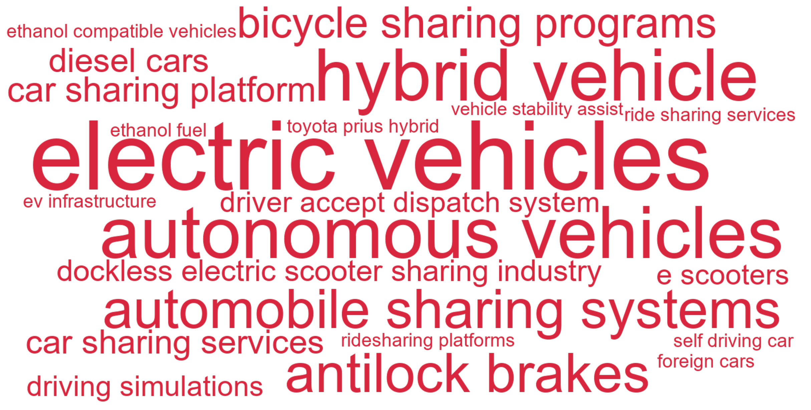
C.12.3 Articles
| Year | Full citation | Technology / technologies | Abstract |
|---|---|---|---|
| 2026 | Zhang X, Miao W, Chu J, Png I. The Design of Centralized Matching Systems on Two-Sided Platforms: Evidence from the Ride-Hailing Market. Marketing Science. 2026;32:. doi:10.1287/mksc.2023.0561 | driver accept dispatch system | Designing centralized matching systems on two-sided platforms entails a tradeoff between matching efficiency and agent autonomy. We investigate this tradeoff in the ride-hailing market by comparing two prevalent centralized dispatch systems: a driveraccept system, where drivers decide whether to accept e-hail requests, and an auto-accept system, where drivers are automatically assigned to these requests. We develop a dynamic structural model of a two-sided market where strategic drivers optimize acceptance and relocation decisions over a shift, and riders choose between transportation modes. We apply this model to Singapore's taxi market, where a leading operator used a driver-accept dispatch system for e-hail trips. We develop an iterative algorithm to solve for the market equilibrium as a fixed point of a nested loop. Our counterfactual analyses reveal that in the short-term equilibrium with fixed demand, switching to an auto-accept system increases driver earnings through higher vehicle utilization, despite the loss of private information caused by removing driver choice. In the long-term equilibrium, drivers' earnings increase further due to market expansion, although benefits are unevenly distributed between e-hail and street-hail services. Consumer surplus increases in both scenarios. Our findings highlight that centralized assignment can enhance overall welfare by mitigating search frictions, even when agents value autonomy. |
| 2025 | Chou C, Derdenger T. CCP Estimation of Dynamic Discrete Choice Demand Models with Segment Level Data and Continuous Unobserved Heterogeneity: Rethinking EV Subsidies vs. Infrastructure. Marketing Science. 2025;33:. doi:10.1287/mksc.2024.0860 | electric vehicles, ev infrastructure | When multiple groups of consumers reside in the same market, we determine that we can write each group's conditional choice probabilities (CCPs) as a function of unobserved consumer heterogeneity. Moreover, we can specify choice probabilities of one group as a function of another by shifting the unobserved component. Armed with our novel CCP estimator, we develop an approach to identify and estimate a dynamic discrete demand model for durable goods with nonrandom attrition of consumers and continuous unobserved consumer heterogeneity but without the usual need for value function approximation or reducing the dimension of state space by ad hoc behavioral assumptions. We illustrate the empirical value of our method by estimating consumer demand for electric vehicles (EVs) in the state of Washington during the period of 2016-2019. We also determine the impact of a different federal tax credit based on the electric range of a car rather than the size of the battery, which was the existing policy during the data period, and we evaluate how best to seed a nascent market that presents indirect network effects to drive faster adoption. Should the government incentivize adoption through consumer tax credits or through EV infrastructure? |
| 2025 | Liu R, Narang U. How E-Scooters Impact Shared Mobility and Consumer Safety. Journal Of Marketing. 2025;63:. doi:10.1177/00222429251393987 | e scooters | New forms of shared micromobility services, such as e-scooters, are growing rapidly across cities. However, their impact beyond the retail and restaurant sectors is less understood in the marketing literature. The authors examine how the entry of e-scooters impacts other incumbent shared mobility services (i.e., ride-sharing and bike-sharing) and consumer safety (i.e., crimes) using data on the entry of e-scooters in parts of Chicago in 2019 and a generalized synthetic control approach. The results show that the entry of e-scooters increases the number of short rideshare trips by 15.72\% but decreases the number of bikeshare trips by 7.62\%. The effects are consistent with a category expansion mechanism for ride-sharing and a category cannibalization mechanism for bike-sharing. The authors also find that the entry of e-scooters increases the number of crimes (e.g., vehicle break-ins) by 17.94\%, mostly due to street and vehicle crimes. The effects of e-scooters are heterogeneous by the age and racial composition of a neighborhood. Overall, e-scooters contribute about \$8.1 million in ride-sharing revenues, but they also have an unintended negative environmental effect amounting to over 800 metric tons of carbon emissions per year. This research offers an app companion for stakeholders. |
| 2025 | De F J, Zhou X, Atzei M, Boardman , Shoshana S, Lillo L. Public perception and autonomous vehicle liability. Journal Of Consumer Psychology. 2025;75:551-566. doi:10.1002/jcpy.1448 | autonomous vehicles | The deployment of autonomous vehicles (AVs) and the accompanying societal and economic benefits will greatly depend on how much liability AV firms will have to carry for accidents involving these vehicles, which in turn impacts their insurability and associated insurance premiums. Across three experiments (N = 2677), we investigate whether accidents where the AV was not at fault could become an unexpected liability risk for AV firms, by exploring consumer perceptions of AV liability. We find that when such accidents occur, the not-at-fault vehicle becomes more salient to consumers when it is an AV. As a result, consumers are more likely to view as relevant counterfactuals in which the not-at-fault vehicle might have behaved differently to avoid or minimize damage from, the accident. This leads them to judge AV firms as more liable than both firms that make human-driven vehicles and human drivers for damages when not at fault. |
| 2024 | Stourm L, Albuquerque P. Flowers and Bees: Spatial Network Effects in the Adoption of a Sharing-Economy Platform. Journal Of Marketing Research. 2024;27:1015-1040. doi:10.1177/00222437241255057 | car sharing platform | This article empirically analyzes the spatiotemporal diffusion of a car-sharing platform that connects consumers with individual car owners. The authors develop a model of adoption by both consumers and providers that accommodates network effects across locations, as consumers travel to pick up cars, and information asymmetry, as only the providers' locations are shown on a map. They apply it to data at the earliest stage of the platform and find that proximity and consumer mobility play a significant role in the spatial network effects of existing providers on consumers across locations. Consequently, the impact of additional supply at a destination on consumer adoptions at an origin varies by origin-destination pair and is asymmetric, as certain destinations draw more visitors than others and given differences in local characteristics. In contrast, existing consumers have a limited impact on provider adoptions. Through seeding experiments, the authors investigate how the geographic distribution of initial participants impacts the platform diffusion and find that targeting the supply side in big cities leads to the highest platform growth. They also use their parameter estimates to measure the long-term impact of a local promotional campaign and show that it is mostly local despite spatial network effects. |
| 2024 | Dogan O, Kumar V, Lahiri A. Platform-level consequences of performance-based commission for service providers: Evidence from ridesharing. Journal Of The Academy Of Marketing Science. 2024;82:1240-1261. doi:10.1007/s11747-024-01005-0 | ridesharing platforms | Ridesharing platforms compensate drivers using a fixed commission system that does not systematically reward effective drivers, which reduces platform engagement. Unsurprisingly, driver transaction activity is intermittent and service unpredictable. Influenced by agency theory, we propose a variable commission that jointly accounts for drivers' transactions and service performance. To alleviate disengagement, we propose a customer-oriented engagement framework that challenges the notion of the sole monetary focus of drivers. We compare the effects of variable and fixed commission schemes on consequences such as driver net revenue and referral value, mediated by attitudinal outcomes. In a 3-month cluster-randomized field experiment with 3,367 ridesharing drivers across 16 cities and two population tiers, we show improvements in driver satisfaction and emotional connectedness accentuated by goal-oriented feedback. Variable commission with goal-oriented feedback translates to a 24.5\% rise in revenue, a 19.5\% increase in referral value, and a 43.21\% lower churn. A cost-benefit analysis reinforces these results. |
| 2024 | Kim K, Mccarthy D. Wheels to Meals: Measuring the Impact of Micromobility on Restaurant Demand. Journal Of Marketing Research. 2024;34:128-142. doi:10.1177/00222437231179021 | dockless electric scooter sharing industry | Dockless shared micromobility services have grown substantially in recent years, but their impact on consumer demand has remained largely unstudied. The authors estimate how the largest and fastest-growing segment of this market-the dockless electric scooter (''e-scooter'') sharing industry-impacts spending in one of the largest segments of the local economy, the restaurant industry. Using data covering 391 companies in 98 U.S. cities, the authors find that the introduction of e-scooters in a city significantly impacts restaurant spending, increasing spending by approximately 5.2\% for e-scooter users, driving incremental spending of at least \$11.3 million annually across all cities that first allowed e-scooters to operate over summer 2018. Impact varies by restaurant subcategory, with a stronger positive effect on fast-food restaurant spending, and a weaker effect on sit-down restaurant spending. E-scooter entry has a larger impact on companies with higher historical revenues selling at lower prices. It facilitates discovery of new restaurants from prospective customers and repeat business from already-acquired customers. |
| 2023 | Che X, Katayama H, Lee P. Product-Harm Crises and Spillover Effects: A Case Study of the Volkswagen Diesel Emissions Scandal in eBay Used Car Auction Markets. Journal Of Marketing Research. 2023;25:409-424. doi:10.1177/00222437221115616 | diesel cars | The Volkswagen emissions scandal began in 2015, when the U.S. Environmental Protection Agency announced that diesel cars produced by Volkswagen from 2009 through 2015 were in violation of emissions standards. The authors analyze the impact of this announcement on transaction prices for Volkswagen cars on the U.S. eBay Motors. The main focus is on Volkswagen cars other than the 2009-2015 diesel models-namely, vehicles that did not violate agency standards, enabling an assessment of whether the negative shock received by the emissions standards violators spilled over to other Volkswagen models that were in compliance. The difference-in-differences results show that final bid prices declined after the announcement by 14\% for nonviolating diesel cars and 9\% for nonviolating gasoline cars. The analysis also provides little evidence of considerable changes in the numbers of participating bidders, bidding strategies, numbers of listings, and reserve-price strategies, suggesting that the drops in prices likely resulted from lowered willingness to pay from buyers. |
| 2022 | Zhang S, Lee D, Singh P, Mukhopadhyay , Tridas T. Demand Interactions in Sharing Economies: Evidence from a Natural Experiment Involving Airbnb and Uber/Lyft. Journal Of Marketing Research. 2022;46:374-391. doi:10.1177/00222437211062172 | ride sharing services | The authors examine whether and how ride-sharing services influence the demand for home-sharing services. Their identification strategy hinges on a natural experiment in which Uber/Lyft exited Austin, Texas, in May 2016 due to local regulation. Using a 12-month longitudinal data set of 11,536 Airbnb properties, they find that Uber/Lyft's exit led to a 14\% decrease in Airbnb occupancy in Austin. In response, hosts decreased the nightly rate by \$9.30 and the supply by 4.5\%. The authors argue that when Uber/Lyft exited Austin, the transportation costs for most Airbnb guests increased significantly because most Airbnb properties (unlike hotels) have poor access to public transportation. The authors report three key findings: First, demand became less geographically dispersed, falling (increasing) for Airbnb properties with poor (excellent) access to public transportation. Second, demand decreased significantly for low-end properties, whose guests may be more price sensitive, but not for high-end properties. Third, the occupancy of Austin hotels increased after Uber/Lyft's exit; the increase occurred primarily among low-end hotels, which can substitute for low-end Airbnb properties. The results indicate that access to affordable, convenient transportation is critical for the success of home-sharing services in residential areas. Regulations that negatively affect ride-sharing services may also negatively affect the demand for home-sharing services. |
| 2021 | Keller K, Schlereth C, Hinz O. Sample-based longitudinal discrete choice experiments: preferences for electric vehicles over time. Journal Of The Academy Of Marketing Science. 2021;53:482-500. doi:10.1007/s11747-020-00758-8 | electric vehicles | Discrete choice experiments have emerged as the state-of-the-art method for measuring preferences, but they are mostly used in cross-sectional studies. In seeking to make them applicable for longitudinal studies, our study addresses two common challenges: working with different respondents and handling altering attributes. We propose a sample-based longitudinal discrete choice experiment in combination with a covariate-extended hierarchical Bayes logit estimator that allows one to test the statistical significance of changes. We showcase this method's use in studies about preferences for electric vehicles over six years and empirically observe that preferences develop in an unpredictable, non-monotonous way. We also find that inspecting only the absolute differences in preferences between samples may result in misleading inferences. Moreover, surveying a new sample produced similar results as asking the same sample of respondents over time. Finally, we experimentally test how adding or removing an attribute affects preferences for the other attributes. |
| 2021 | Keller K, Schlereth C, Hinz O. Sample-based longitudinal discrete choice experiments: preferences for electric vehicles over time (February, 2021, 10.1007/s11747-020-00758-8). Journal Of The Academy Of Marketing Science. 2021;1:501. doi:10.1007/s11747-021-00781-3 | electric vehicles | A Correction to this paper has been published: |
| 2021 | He C, Ozturk O, Gu C, Silva-Risso J. The End of the Express Road for Hybrid Vehicles: Can Governments' Green Product Incentives Backfire?. Marketing Science. 2021;38:80-100. doi:10.1287/mksc.2020.1239 | hybrid vehicle | In response to growing environmental concerns, governments have promoted products that are less harmful to the environment-green products-through various incentives. We empirically study the impact of a commonly used nonmonetary incentive-namely, the single-occupancy permission to high-occupancy vehicle (HOV) lanes-on green and non-green product demand in the U.S. automobile industry. The HOV incentive could increase unit sales of green vehicles by enhancing their functional value through time saving. On the other hand, the incentive may prove counterproductive if it reduces the symbolic value (i.e., signaling a proenvironmental image) consumers derive from green vehicles. Assessing the effectiveness of green-product incentives is challenging, given the endogenous nature of governments' incentive provisions. To identify the effect of the HOV incentive on unit sales of green and non-green vehicles, we take advantage of HOV-incentive changes in two states, and we employ a multitude of quasi-experimental methods using a data set at the county-model-month level. Unlike previous studies that only examine the launch of the HOV incentive and find an insignificant association between incentive launch and green-vehicle demand, we concentrate on its termination. We find that the termination of the HOV incentive decreases unit sales of vehicles covered by the incentive by 14.4\%. We provide suggestive evidence that this significant negative effect of HOV-incentive termination is due to the elimination of the functional value the incentive provides: time saving. Specifically, we find that the negative effect is more pronounced in counties where consumers value time saving more (i.e., counties with a longer commute to work and higher income). Additionally, in line with prior literature, the launch of the HOV incentive is not found to have a significant effect on green-vehicle sales. Combined, our findings reveal that the effect of termination is not simply the opposite of that of launch, implying that governments' green-product incentives could backfire. |
| 2021 | Dowling K, Manchanda P, Spann M. The existence and persistence of the pay-per-use bias in car sharing services. International Journal Of Research In Marketing. 2021;23:329-342. doi:10.1016/j.ijresmar.2020.09.008 | car sharing services | A key benefit of using car sharing services (relative to car ownership) is that they are more cost effective. Car sharing firms offer a menu of pricing plans to make this happen. The two most common plans are flat-rate and pay-per-use pricing. However, little is known about how consumers choose among these pricing plans. In this study, we analyze consumers' choices between pay-per-use and flat-rate pricing using data from a car sharing provider in a large European city. In contrast to previous research, we find a prevalent and time-persistent pay-per-use bias. Specifically, depending on the definition of the bias, 21\% to 32\% of customers exhibit this bias. This bias also persists over time within customer. We propose three potential explanations for the existence and persistence of this bias. First, we suggest that customers underestimate their usage. Second, we propose that customers have a preference for flexibility, leading them to pay more. Finally, we show that the physical context, such as weather, increases the likelihood of a pay-per-use bias. Our findings suggest that more research into consumer response to pricing in the Sharing Economy is needed. (c) 2020 Elsevier B.V. All rights reserved. |
| 2020 | Gill T. Blame It on the Self-Driving Car: How Autonomous Vehicles Can Alter Consumer Morality. Journal Of Consumer Research. 2020;62:272-291. doi:10.1093/jcr/ucaa018 | autonomous vehicles | Autonomous vehicles (AVs) are expected to soon replace human drivers and promise substantial benefits to society. Yet, consumers remain skeptical about handing over control to an AV. Partly because there is uncertainty about the appropriate moral norms for such vehicles (e.g., should AVs protect the passenger or the pedestrian if harm is unavoidable?). Building on recent work on AV morality, the current research examined how people resolve the dilemma between protecting self versus a pedestrian, and what they expect an AV to do in a similar situation. Five studies revealed that participants considered harm to a pedestrian more permissible with an AV as compared to self as the decision agent in a regular car. This shift in moral judgments was driven by the attribution of responsibility to the AV and was observed for both severe and moderate harm, and when harm was real or imagined. However, the effect was attenuated when five pedestrians or a child could be harmed. These findings suggest that AVs can change prevailing moral norms and promote an increased self-interest among consumers. This has relevance for the design and policy issues related to AVs. It also highlights the moral implications of autonomous agents replacing human decision-makers. |
| 2019 | Chen Y, Ghosh M, Liu Y, Zhao L. Media Coverage of Climate Change and Sustainable Product Consumption: Evidence from the Hybrid Vehicle Market. Journal Of Marketing Research. 2019;48:995-1011. doi:10.1177/0022243719865898 | hybrid vehicle | As sustainable consumption becomes increasingly important, firms must better understand the drivers behind the consumption of these products. This article examines the effects of mass media in the context of the U.S. hybrid vehicle market. Drawing on monthly sales data, the authors provide evidence that the general coverage of climate change or global warming by major media outlets exerts an overall positive impact on the sales of hybrid vehicles. This impact mainly comes from the media reports that assert that climate change is occurring. In contrast, media coverage that either denies climate change or holds a neutral stance on the issue has little impact. The authors provide preliminary evidence that a social norm advocating for environmentally friendly consumption plays an important role in how media coverage affects consumer purchase. They provide implications for theory and practice and call for future research that examines the causal impact of media in general on consumer decisions, especially in domains that are crucial for the society. |
| 2018 | Kim H, Mcgill A. Minions for the Rich? Financial Status Changes How Consumers See Products with Anthropomorphic Features. Journal Of Consumer Research. 2018;42:429-450. doi:10.1093/jcr/ucy006 | self driving car | The present research explores how financial status, which influences consumers' expectations about how companies will treat them, affects consumers' perceptions and assessments of products that have been given anthropomorphic features by companies. Studies 1 and 2 showed that participants with higher financial status expect more favorable treatment from a humanized entity (e.g., ``a self-driving car would prioritize the well-being of the rich over others''). The results of study 3 indicate that participants with higher perceived financial status both afforded greater agency to humanized products and liked these products better than did participants with lower perceived financial status. These effects were mediated by commercial treatment expectations, when we controlled for perceived control and self-efficacy. Further confirming the role of treatment expectations, when participants believed people with low financial status would be treated better than those with high financial status, we observed the reverse pattern (study 4). Lastly, study 5 replicated the effect using a measured, not manipulated, variable of financial status. Findings support the view that effective anthropomorphism requires marketers to take into account consumers' motivation to interpret a target with humanlike features as having positive agency, which results from treatment expectations. |
| 2015 | Cian L, Krishna A, Elder R. A Sign of Things to Come: Behavioral Change through Dynamic Iconography. Journal Of Consumer Research. 2015;75:1426-1446. doi:10.1086/680673 | driving simulations | We propose that features of static visuals can lead to perceived movement (via dynamic imagery) and prepare the observer for action. We operationalize our research within the context of warning sign icons and show how subtle differences in iconography can affect human behavioral response. Across five studies incorporating multiple methodologies and technologies (click-data heat maps, driving simulations, surveys, reaction time, and eye tracking), we show that warning sign icons that evoke more (vs. less) perceived movement lead to a quicker propensity to act because they suggest greater risk to oneself or others and increase attentional vigilance. Icons used in our studies include children crossing signs near schools, wet floor signs in store settings, and shopping cart crossings near malls. Our findings highlight the importance of incorporating dynamic elements into icon design to promote imagery and thereby elicit desired and responsible consumer behavior. |
| 2015 | Shriver S. Network Effects in Alternative Fuel Adoption: Empirical Analysis of the Market for Ethanol. Marketing Science. 2015;46:78-97. doi:10.1287/mksc.2014.0881 | ethanol compatible vehicles, ethanol fuel | This paper investigates the importance of network effects in the demand for ethanol-compatible vehicles and the supply of ethanol fuel. An indirect network effect, or positive feedback loop, arises in this context due to spatially-dependent complementarities in the availability of ethanol fuel and the installed base of ethanol-compatible vehicles. Marketers and social planners are interested in whether these effects exist, and if so, how policy might accelerate adoption of the ethanol fuel standard within a targeted population. To measure these feedback effects, I develop an econometric framework that considers the simultaneous determination of ethanol-compatible vehicle demand and ethanol fuel supply in local markets. The demand-side model considers the automobile purchase decisions of consumers and fleet operators; the supply-side model considers the ethanol market entry decisions of competing fuel retailers. The framework extends extant market entry models by endogenizing the market size shifting fuel retailer profits. I estimate the model using zip code panel data from four states over a nine-year period. The model estimates provide evidence of a network effect. Under typical market conditions, entry of an additional ethanol fuel retailer leads to a 6\% increase in the probability of ethanol-compatible vehicle purchase. The entry model estimates imply that the first entrant requires a local installed base of approximately 300 ethanol-compatible vehicles to be profitable. As an application, I demonstrate that subsidizing fuel retailers to offer ethanol in selective geographic markets can be an effective policy to indirectly increase ethanol-compatible vehicle sales. |
| 2013 | Narayanan S, Nair H. Estimating Causal Installed-Base Effects: A Bias-Correction Approach. Journal Of Marketing Research. 2013;55:70-94. doi:10.1509/jmr.11.0183 | toyota prius hybrid | New empirical models of consumer demand that incorporate social effects seek to measure the causal effect of past adopter's behavior the ``installed-base'' on current adoption behavior. Identifying such causal effects is challenging due to several alternative confounds that generate correlation in agents' actions. In the absence of experimental variation, a preferred solution has been to control for these spurious correlations using a rich specification of fixed effects. The authors show that fixed-effects estimators of this sort are inconsistent in the presence of installed-base effects; in simulations, random-effects specifications perform even worse. The analysis reveals the tension the applied empiricist faces in this area: a rich control for unobservables increases the credibility of the reported causal effects, but the incorporation of these controls introduces biases of a new kind in this class of models. The authors present two solutions: a modified version of an instrumental variable approach and a new bias-correction approach, both of which deliver consistent estimates of causal installed-base effects. The empirical application to the adoption of the Toyota Prius Hybrid in California shows evidence for social influence in diffusion and reveals that implementing the bias correction reverses the sign of the measured installed-base effect. The authors also discuss implications of the results for identification of models in marketing involving state dependence in demand, and incorporating discrete games of strategic interaction. |
| 2012 | Lamberton C, Rose R. When Is Ours Better Than Mine? A Framework for Understanding and Altering Participation in Commercial Sharing Systems. Journal Of Marketing. 2012;46:109-125. doi:10.1509/jm.10.0368 | automobile sharing systems, bicycle sharing programs | Sharing systems are increasingly challenging sole ownership as the dominant means of obtaining product benefits, making up a market estimated at more than US\$100 billion annually in 2010. Consumer options include cell phone minute-sharing plans, frequent-flyer-mile pools, bicycle-sharing programs, and automobile-sharing systems, among many others. However, marketing research has yet to provide a framework for understanding and managing these emergent systems. The authors conceptualize commercial sharing systems within a typology of shared goods. Using three studies, they demonstrate that beyond cost-related benefits of sharing, the perceived risk of scarcity related to sharing is a central determinant of its attractiveness. The results suggest that managers can use perceptions of personal and sharing partners' usage patterns to affect risk perceptions and subsequent propensity to participate in a commercial sharing system. |
| 2008 | Chitturi R, Raghunathan R, Mahajan V. Delight by design: The role of hedonic versus utilitarian benefits. Journal Of Marketing. 2008;47:48-63. doi:10.1509/jmkg.72.3.48 | antilock brakes, vehicle stability assist | What is the relationship between product design benefits (hedonic versus utilitarian) and the postconsumption feelings of customer delight and satisfaction? The primary insights this research provides are as follows: (1) Products that meet or exceed customers' utilitarian needs and fulfill prevention goals enhance customer satisfaction (e.g., a car with antilock brakes and vehicle stability assist), and (2) products that meet or exceed customers' hedonic wants and fulfill promotion goals enhance customer delight (e.g., a car with panoramic sunroof and six-speaker audio system). Furthermore, the research finds that the primary antecedent feelings of satisfaction are the prevention emotions of confidence and security provided by utilitarian benefits, whereas the primary antecedent feelings of delight are the promotion emotions of cheerfulness and excitement provided by hedonic benefits. Finally, the results show that delighting customers improves customer loyalty, as measured by word of mouth and repurchase intentions, more than merely satisfying them. The authors discuss the theoretical contribution and strategic insights the research provides for product designers and marketers. |
| 2004 | Nijssen E, Douglas S. Examining the animosity model in a country with a high level of foreign trade. International Journal Of Research In Marketing. 2004;38:23-38. doi:10.1016/j.ijresmar.2003.05.001 | foreign cars | Much research relating to consumer attitudes toward foreign products has been conducted in large industrialized countries, with big internal markets and a wide range of domestic brands. Little attention has been paid to the case of countries with high levels of foreign trade where, in some product markets, no domestic brands or alternatives are available and hence consumers have no choice but to purchase foreign brands in that product category. The lack of domestic brands is, however, likely to affect feelings of ethnocentrism, nationality and animosity as well as attitudes towards the purchase of foreign products. This study examines consumer attitudes towards the purchase of foreign cars and TVs in the Netherlands. The Netherlands is viewed as a prototypical example of a country with high levels of foreign trade, well integrated into the global economy. In one category-cars, there are no domestic brands, while for TVs, Philips, a Dutch multinational, holds major market share. The results show that consumer ethnocentrism and feelings of animosity have an important impact on the evaluation of foreign products, even when no domestic brands are available. (C) 2004 Published by Elsevier B.V. |
| 2000 | Cooper L. Strategic marketing planning for radically new products. Journal Of Marketing. 2000;49:1-16. doi:10.1509/jmkg.64.1.1.17987 | electric vehicles | In this article, the author outlines an approach to marketing planning for radically new products, disruptive or discontinuous innovations that change the dimensionality of the consumer decision. The planning process begins with an extensive situation analysis. The factors identified in the situation analysis are woven into the economic webs surrounding the new product. The webs are mapped into Bayesian networks that can be updated as events unfold and used to simulate the impact that changes in assumptions underlying the web have on the prospects for the new product. The author illustrates this method using a historical case regarding the introduction of videotape recorders by Sony and JVC and a contemporary case of the introduction of electric vehicles. The author provides a complete, numerical example pertaining to a software development project in the Appendix. |
C.13 Cluster 11: Search & Advertising
C.13.1 Summary
| Canonical technologies | Articles | Earliest article | Most recent article |
|---|---|---|---|
| 66 | 67 | 2000 | 2026 |
C.13.2 Technology word cloud
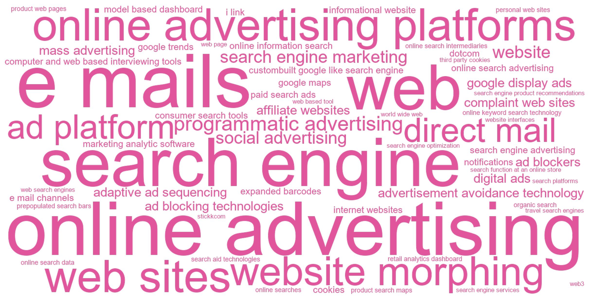
C.13.3 Articles
| Year | Full citation | Technology / technologies | Abstract |
|---|---|---|---|
| 2026 | Liu J, Hill S, Rothschild D. Dynamic Effects of TV Ad Suspension on Keyword Search: Evidence from the US Telecom Industry. Journal Of Marketing. 2026;48:73-95. doi:10.1177/00222429251343590 | online keyword search technology | This article investigates the dynamic effects of temporarily suspending TV ads on online keyword search through a large-scale quasi-experiment in the U.S. wireless telecom industry. One top carrier, which spends stably around one million USD per day on TV advertising, halted its TV ads for a randomly selected week over our (six-month) study window. The primary challenges in this event study-continuously changing treatment variables and establishing valid control groups to account for time-varying confounders-are addressed using the generalized synthetic control estimator. Findings reveal significant immediate and lasting declines in the focal brand's search volume, with reductions of 5\%-15\% per day persisting for two weeks after TV ads resumed. The effects varied significantly across search categories: Informational searches related to TV ad content experienced drops of up to 30\% per day but recovered more quickly, while navigational searches showed smaller but more prolonged declines. Furthermore, the intervention had modest, short-lived spillover effects on three competitors. Interestingly, the suspension tended to hurt the competitor most similar to the focal brand, while benefiting leading competitors. These spillover effects were particularly pronounced in informational and channel searches, suggesting that competitors' visibility was significantly affected by the focal brand's absence. |
| 2026 | Pape L, Rossi M. Is Competition Only One Click Away? The Digital Markets Act's Impact on Google Maps. Marketing Science. 2026;54:. doi:10.1287/mksc.2025.0159 | google maps | This paper studies the impact of the European Union (EU) Digital Markets Act (DMA) on user search behavior and traffic to online mapping services, focusing on recent changes to Google's search results page. In January 2024, Google altered the display of location-based queries for EU users by removing clickable maps and direct links to Google Maps. We exploit this policy-induced change and implement a difference-in-differences design comparing EU and non-EU countries to assess how the removal of Google's selfpreferencing shaped search volumes and traffic patterns. Search queries for maps and Google Maps increased by more than 21\%. Although the former may reflect broader interest in mapping services, the latter directly signals intent to use Google Maps. Yet, this surge in searches primarily redirected users back to Google Maps. Traffic data reveal no significant change in overall visits to www.google.com/maps on desktops or mobile devices. Instead, we observe shifts in the channels through which users access the service and in session duration. No corresponding increase in search activity or traffic is observed for Bing Maps nor for other competing mapping services. These findings indicate that the DMA had weak competitive effects, highlighting Google Maps' dominance in a market where alternatives remain limited. |
| 2026 | Borau S, Mai R. The gender paradox in pro-environmental engagement: Actionable insights for cause-related marketing and social advocacy campaigns. Journal Of The Academy Of Marketing Science. 2026;128:228-253. doi:10.1007/s11747-025-01116-2 | web based tool | The growing gender polarization in consumers' pro-environmental engagement-with women more engaged than men-suggests that organizations should consider gender a key criterion when targeting their cause-related marketing and social advocacy campaigns for environmental causes. However, multilevel analyses of 11 behavioral interventions across 63 countries (N = 56,582) reveal that relying on gender alone is insufficient and can even backfire, uncovering a surprising paradox: The gender gap in pro-environmental engagement widens among liberal consumers, in societies with higher gender equality, and cultures emphasizing care over competition. These gender paradoxes emerge when identities and societal contexts intersect, revealing why interventions ignoring such complexities can fail. Results show that a collective action framing is effective across several identity combinations, while a negative emotional appeal can backfire, particularly among conservative men in gender-equal countries. A web-based tool helps marketers and policymakers select effective environmental interventions across intersecting individual and country-level factors, enabling targeted advocacy and cause-related marketing. |
| 2025 | Wernerfelt N, Tuchman A, Shapiro B, Moakler , Robert R. Estimating the Value of Offsite Tracking Data to Advertisers: Evidence from Meta. Marketing Science. 2025;36:. doi:10.1287/mksc.2023.0274 | third party cookies | Third-party cookies and related ``offsite'' tracking technologies are frequently used to share user data across applications in support of ad delivery. These data are viewed as highly valuable for online advertisers, but their usage faces increasing head- winds. In this paper, we quantify the benefit to advertisers from using such offsite tracking data in their ad delivery. With this goal in mind, we conduct a large-scale, randomized experiment that includes more than 70,000 advertisers on Facebook and Instagram. We first estimate advertising effectiveness at baseline across our broad sample. We then estimate the change in effectiveness of the same campaigns were advertisers to lose the ability to optimize ad delivery with offsite data. In each of these cases, we use recently developed deconvolution techniques to flexibly estimate the underlying distribution of effects. We find a median cost per incremental customer at baseline of \$38.16 that under the median loss in effectiveness would rise to \$49.93, a 31\% increase. Further, we find ads targeted using offsite data generate more long-term customers per dollar than those without, and losing offsite data disproportionately hurts small scale advertisers. Taken together, our results suggest that offsite data bring large benefits to a wide range of advertisers. |
| 2025 | Sun C. How Does Prepopulating Search Bars with Keywords Affect Online Consumer Behavior? A Field Experiment. Marketing Science. 2025;58:. doi:10.1287/mksc.2024.0793 | prepopulated search bars, search aid technologies | Search aid technologies, especially prepopulated search bars, are increasingly being adopted by major players in the fast-growing e-commerce industry. Yet, surprisingly little is known about the impact of prepopulating search bars with keywords on online consumer journey. In this study, I design and run a randomized field experiment on a large e-commerce platform involving 72,587 consumers who were randomly exposed to three types of keywords prefilled in the search bar. Individual consumer-level analyses reveal that prepopulating trending category keywords encourages users to discover and buy items from the suggested category without reducing queries using self-entered keywords, ultimately leading to a 10.4\% (8.8\%) increase in purchase incidence (spending) compared with the counterfactual outcomes when the search bar is empty. Prepopulating personalized keywords brings about more focused product searching within the category recently browsed by users, resulting in a 21\% (17\%) increase in purchase incidence (spending), although this is offset by the negative effect of a reduction in queries using self-entered keywords. Exposure to niche category keywords is found to have little impact. This study also finds that a prepopulated search bar does not cannibalize the other navigation tool, making it a beneficial addition to the focal e-commerce platform's business outcomes. These findings, contributing to the literature on consumer search and product recommendation strategies for digital platforms, carry timely implications for e-commerce managers. |
| 2025 | Chehrazi N, Sanders R, Stamatopoulos I. Inventory Information Frictions Explain Price Rigidity in Perishable Groceries. Marketing Science. 2025;85:. doi:10.1287/mksc.2023.0473 | expanded barcodes | Grocery retailers cannot engage in inventory-based pricing without physically auditing their shelves because their inventory records are inaccurate and incomplete. In particular, inventory data do not reflect actual, real-time quantity on the shelf, and standard Universal Product Code barcodes do not contain expiration dates. We argue that these inventory information frictions are much more powerful in explaining price rigidity in perishable groceries than physical menu costs are. We build our argument in two steps. First, we add inventory shrink, deteriorating product quality, and menu costs to [Gallego G, Van Ryzin G (1994) Optimal dynamic pricing of inventories with stochastic demand over finite horizons. Management Sci. 40(8):999-1020] classic revenue-management model, and we derive the model's optimal pricing policy when the price setter can and cannot condition on real-time inventory information. Within the model, reducing a representative product's physical menu cost by 90\% increases its price-updating frequency by at least 300\% more when pricing managers also have real-time inventory information than when they do not. Second, we provide proof of concept for our theory with data from two industry pilots: a UK grocery store that installed electronic shelf labels (ESLs)-a technology that reduces physical menu costs-and an EU grocery store that installed both ESLs and expanded barcodes-the latter being a technology that reduces inventory information frictions. Consistent with our theory, the technology upgrade increased price-updating frequency by 54\% in the first pilot and by 853\% in the second pilot. Our theory can explain the lack of widespread dynamic pricing of perishable groceries, which has significant consequences for profits, consumer surplus, and food waste. |
| 2025 | Brandes L, Dolp K. Non-Fungible Tokens (NFTs) as digital brand extensions: Evidence on financial performance and parent-brand spillovers. International Journal Of Research In Marketing. 2025;63:491-521. doi:10.1016/j.ijresmar.2025.01.001 | web3 | Fueled by new technologies, such as blockchain and Web3, brands are increasingly extending into the digital space. One such novel extension is the non-fungible token (NFT). Numerous examples indicate that brands' market performance with NFTs varies widely in terms of short-term revenues and spillovers to the parent brand. However, little is known about the factors that are associated with a successful performance. The goal of our research was to identify those factors. Regarding short-term revenues, we empirically tested the value of several possible success drivers; these drivers reflected a combination of the most important success factors for physical brand extensions (e.g., extension fit, brand equity) and value drivers for NFTs (e.g., added NFT utility, number of NFTs in the campaign). Using a novel dataset of 450 NFT campaigns, we document that both types of variables help to predict financial revenues from brand-related NFTs. Going beyond the shortterm financial results of NFT campaigns, we also report experimental evidence that shows such campaigns may create negative spillovers for the parent brand. Overall, this research demonstrates (i) which value drivers correlate with a brand's NFTs success, (ii) which brands are the best fit for NFTs, (iii) in what ways brand managers need to adapt their brand-extension strategies from the physical to the digital environment if they want to succeed with NFTs, and (iv) the risk that brand extensions with NFTs may hurt customers' attitude towards the parent brand. (c) 2025 The Authors. Published by Elsevier B.V. All rights reserved. |
| 2025 | Whitley S, Chakravarty A, Wang P. Positive Emotions During Search Engine Use: How You Feel Impacts What You Search for and Click On. Journal Of Marketing. 2025;74:77-93. doi:10.1177/00222429241263012 | search engine | The authors examine how positive incidental emotion influences online search and ad click-through rates. They predict and find that although positive incidental emotion is irrelevant to the search task, it has the effect of priming emotionally congruent thoughts, which increases the likelihood that consumers will use positive emotion words as keywords in their search queries. This use of positive emotion keywords, in turn, increases the likelihood of clicking on paid search ads. Results from six studies support this prediction and the role of lower persuasion knowledge as a mechanism. Specifically, the use of positive emotion keywords in search queries reduces the likelihood that consumers will use persuasion knowledge toward sponsored content in the form of paid search ads-making them more likely to click on the ads. This examination of the role of positive incidental emotion and the use and consequence of positive emotion keywords in search queries has important implications for advertisers' search engine keyword targeting strategies. |
| 2024 | Valenti A, Srinivasan S, Yildirim G, Pauwels , Koen K. Direct mail to prospects and email to current customers? Modeling and field-testing multichannel marketing. Journal Of The Academy Of Marketing Science. 2024;90:815-834. doi:10.1007/s11747-023-00962-2 | direct mail, e mails, e mails | Multichannel retailers need to understand how to allocate marketing budgets to customer segments and online and offline sales channels. We propose an integrated methodological approach to assess how email and direct mail effectiveness vary by channel and customer value segment. We apply this approach to an international beauty retailer in six countries and to an apparel retailer in the United States. We estimate multi-equation hierarchical linear models and find that sales responsiveness to email and direct mail varies by customer value segment. Specifically, direct mail drives customer acquisition in the offline channel, while email drives sales for both online and offline channels for current customer segments. A randomized field experiment with the beauty retailer provides causal support for the findings. The proposed reallocation of marketing resources would yield a revenue lift of 13.5\% for the beauty retailer and 9.3\% for the apparel retailer, compared with the 6.5\% actual increase in the field experiment. |
| 2024 | Miller K, Skiera B. Economic consequences of online tracking restrictions: Evidence from cookies. International Journal Of Research In Marketing. 2024;94:241-264. doi:10.1016/j.ijresmar.2023.10.001 | cookies | In recent years, European regulators have debated restricting the time an online tracker can track a user to protect consumer privacy better. Despite the significance of these debates, there has been a noticeable absence of any comprehensive cost-benefit analysis. This article fills this gap on the cost side by suggesting an approach to estimate the economic consequences of lifetime restrictions on cookies for publishers. The empirical study on cookies of 54,127 users who received - 128 million ad impressions over - 2.5 years yields an average cookie lifetime of 279 days, with an average value of 2.52 per cookie. Only - 13\% of all cookies increase their daily value over time, but their average value is about four times larger than the average value of all cookies. Restricting cookies' lifetime to one year (two years) could potentially decrease their lifetime value by - 25\% ( - 19\%), which represents a potential decrease in the value of all cookies of - 9\% ( - 5\%). Most cookies, however, would not be affected by lifetime restrictions of 12 or 24 months as 72\% (85\%) of the users delete their cookies within 12 (24) months. In light of the 10.60 billion cookie-based display ad revenue in Europe, such restrictions would endanger 904 million ( 576 million) annually, equivalent to 2.08 ( 1.33) per EU internet user. The article discusses these results' marketing strategy challenges and opportunities for advertisers and publishers. (c) 2023 The Author(s). Published by Elsevier B.V. This is an open access article under the CC BY license (http://creativecommons.org/licenses/by/4.0/). |
| 2024 | Borah A, Rutz O. Enhanced sales forecasting model using textual search data: Fusing dynamics with big data. International Journal Of Research In Marketing. 2024;31:632-647. doi:10.1016/j.ijresmar.2024.05.007 | online search data | Forecasting sales is an essential marketing function, and, for most businesses, sales are driven by own and competitive activities. Most firms use their own marketing efforts or a selection of their competitor's marketing efforts for forecasting sales. Due to data availability limitations, data on the full set of competitors are rarely used when forecasting sales. The emergence of online search data provides access to a novel data source on own as well as never-before observed competitive activities. We propose a novel regularized dynamic forecasting model utilizing all available competitive search data in a market vs. constructing ad-hoc and potentially subjective smaller competitive sets. Our model addresses the inherent statistical issue that arises when including a large number of competitive effects and parsimoniously utilizes all competitive data. We demonstrate our model using data from the US automobile industry over a twelve-year period and forecast car-model sales for 14 exemplary car-models utilizing multiple search measures for all 374 potential competitive car-models. We show that our model fits and forecasts sales better than models not leveraging the full competitive search data, e.g., using subjective sets of relevant competitors or narrowly defined category competitors. We also find that market research done via novel large-language models (also called LLMs) to obtain a narrower set of competitors does not outperform our proposed model that includes the full set of competitors. (c) 2024 Elsevier B.V. All rights are reserved, including those for text and data mining, AI training, and similar technologies. |
| 2023 | Rathee S, Banker S, Mishra A, Mishra H. Algorithms propagate gender bias in the marketplace-with consumers' cooperation. Journal Of Consumer Psychology. 2023;49:621-631. doi:10.1002/jcpy.1351 | search engine product recommendations | Recent research shows that algorithms learn societal biases from large text corpora. We examine the marketplace-relevant consequences of such bias for consumers. Based on billions of documents from online text corpora, we first demonstrate that from gender biases embedded in language, algorithms learn to associate women with more negative consumer psychographic attributes than men (e.g., associating women more closely with impulsive vs. planned investors). Second, in a series of field experiments, we show that such learning results in the delivery of gender-biased digital advertisements and product recommendations. Specifically, across multiple platforms, products, and attributes, we find that digital advertisements containing negative psychographic attributes (e.g., impulsive) are more likely to be delivered to women compared to men, and that search engine product recommendations are similarly biased, which influences consumer's consideration sets and choice. Finally, we empirically examine consumer's role in co-producing algorithmic gender bias in the marketplace and observe that consumers reinforce these biases by accepting gender stereotypes (i.e., clicking on biased ads). We conclude by discussing theoretical and practical implications. |
| 2023 | Biswas D, Abell A, Chacko R. Curvy Digital Marketing Designs: Virtual Elements with Rounded Shapes Enhance Online Click-Through Rates. Journal Of Consumer Research. 2023;78:552-570. doi:10.1093/jcr/ucad078 | website interfaces | With the growing prevalence of digital platforms for online shopping, advertising, and marketing activities in general, it is imperative to better understand how designs of virtual elements on digital interfaces influence click behavior. Websites and online advertisements contain virtual elements such as call-to-action buttons, images, and logos. This research examines how curved versus sharp angled shapes of virtual elements in online ads and on websites influence click-through rates (CTRs). The findings of a series of studies, including three field experiments and an eye tracking study, show that website and online ad elements in curved (vs. sharp angled) shapes generate higher CTRs. Process evidence suggests that curved (vs. sharp angled) digital elements enhance visual appeal, leading to approach motivation and greater CTR. In terms of practical implications, the findings of this research have strong relevance for designing online ads and website interfaces and for digital marketing strategies. Specifically, digital marketers desiring higher click rates would benefit from having more curved (than sharp angled) virtual elements on websites and in online ads. |
| 2022 | De B A, Otter T. Bayesian Consumer Profiling: How to Estimate Consumer Characteristics from Aggregate Data. Journal Of Marketing Research. 2022;39:755-774. doi:10.1177/00222437211059088 | marketing analytic software | Firms use aggregate data from data brokers (e.g., Acxiom, Experian) and external data sources (e.g., Census) to infer the likely characteristics of consumers in a target list and thus better predict consumers' profiles and needs unobtrusively. The authors demonstrate that the simple count method most commonly used in this effort relies implicitly on an assumption of conditional independence that fails to hold in many settings of managerial interest. They develop a Bayesian profiling introducing different conditional independence assumptions. They also show how to introduce additional observed covariates into this model. They use simulations to demonstrate that in managerially relevant settings, the Bayesian method will outperform the simple count method, often by an order of magnitude. The authors then compare different conditional independence assumptions in two case studies. The first example estimates customers' age on the basis of their first names; prediction errors decrease substantially. In the second example, the authors infer the income, occupation, and education of online visitors of a marketing analytic software company based exclusively on their IP addresses. The face validity of the predictions improves dramatically and reveals an interesting (and more complex) endogenous list-selection mechanism than the one suggested by the simple count method. |
| 2022 | Bolton R, Gustafsson A, Tarasi C, Witell , Lars L. Designing satisfying service encounters: website versus store touchpoints. Journal Of The Academy Of Marketing Science. 2022;94:85-107. doi:10.1007/s11747-021-00808-9 | website | This study investigated how touchpoints moderate the antecedents of customer satisfaction with service encounters by comparing online and in-store encounters. Construal level theory was used within the Touchpoint, Context, Qualities (TCQ) Framework (De Keyser et al., 2020) to integrate a comprehensive model of how touchpoints-websites or stores-influence the magnitude of customer responses to qualities of service encounters. A hierarchical linear model (HLM) was estimated using survey data describing the service encounters of 2.4 million customers with a global retailer. Online customers weighed cognitive and behavioral qualities more heavily than in-store customers, whereas they weighed emotional and sensorial qualities less heavily. Moreover, random effects in the HLM model indicated that each country and store would have unique clientele effects for specific qualities. Since each firm has limited resources, this research offers guidance on key qualities in designing satisfying service encounters for each touchpoint and how qualities should be standardized and customized in global omnichannel environments. |
| 2022 | Liberali G, Ferecatu A. Morphing for Consumer Dynamics: Bandits Meet Hidden Markov Models. Marketing Science. 2022;53:341-366. doi:10.1287/mksc.2021.1346 | website morphing | Websites are created to help visitors take an action, such as making a purchase or a donation. As visitors browse various web pages, they may take rapid steps toward the action or may bounce away. Websites that can adapt to match such consumer dynamics perform better. However, assessing visitors??? changing distance to the action, at each click, and adapting to it in real time is challenging because of the sheer number of design elements that are found in websites, that combine exponentially. We solve this problem by matching latent states to web page designs, combining recent advances in multiarmed bandit (MAB), website morphing, and hidden Markov models (HMM) literature. We develop a novel dynamic program to explicitly model the trade-off firms face between nudging a visitor to later states along the funnel, and maximizing immediate reward given current estimates of purchase probabilities. We use an HMM to assess visitors??? states in real time, and couple it with an MAB model to learn the effectiveness of each design ?? state combination. We provide a proof of concept in two applications. First, we conduct a field study on the Master of Business Administration website of a major university. Second, we implement our algorithm on a cloud server and test it on an experimental online store. |
| 2022 | Goic M, Jerath K, Kalyanam K. The roles of multiple channels in predicting website visits and purchases: Engagers versus closers. International Journal Of Research In Marketing. 2022;44:656-677. doi:10.1016/j.ijresmar.2021.12.004 | affiliate websites, e mails, e mails, search engine | In today's online environment, consumers and sellers interact through multiple channels such as email, search engines, banner ads, affiliate websites and comparison-shopping websites. In this paper, we investigate whether knowing the history of channels the consumer has used until a point of time is predictive of their future visit patterns and purchase conversions. We propose a model in which future visits and conversions are stochastically dependent on the channels a consumer used on their path up to a point. Salient features of our model are: (1) visits by consumers are allowed to be clustered, which enables separation of their visits into intra- and inter-session components, (2) interaction effects between channels where prior visits and conversions from channels impact future inter-session visits, intra-session visits and conversions through a latent variable reflecting the cumulative weighted inventory of prior visits, (3) each channel attracts inter-session and intra-session visits differently, (4) each channel has different association with conversion conditional on a customer's arrival to the website through that channel, (5) each channel engages customers differently (i.e., keeps the customer alive for a next session or for a next visit within a session), (6) the channel from which there was an arrival in the previous session can have an enhanced ability to generate an arrival for the same channel in the current session (channel persistence), and (7) parsimonious specification for high dimensionality in a low-velocity, sparse-data environment. We estimate the model on easy-to-collect firstparty data obtained from an online retailer selling a durable good and find that information on the identities of channels and incorporation of inter- and intra-session visits have significant predictive power for future visitation and conversion behavior. We find that some channels act as ``closers'' and others as ``engagers''-consumers arriving through the former are more likely to make a purchase, while consumers arriving through the latter, even if they do not make a purchase, are more likely to visit again in the future or extend the current session. We also find that some channels engage customers more than others, and that there are interaction effects between the channels visited. Our estimates show that the effect of prior inventory of visits is different from the immediate prior visit, and that visit and purchase probabilities can increase or decrease based on the history of channels used. We discuss several managerial implications of the model including using the predictions of the model to aid in selecting customers for marketing actions and using the model to evaluate a policy change regarding the obscuring of channel information.(c) 2021 Elsevier B.V. All rights reserved. |
| 2022 | Berman R, Israeli A. The Value of Descriptive Analytics: Evidence from Online Retailers. Marketing Science. 2022;49:1074-1096. doi:10.1287/mksc.2022.1352 | retail analytics dashboard | Does the adoption of descriptive analytics impact online retailer performance, and if so, how? We use the synthetic difference-in-differences method to analyze the staggered adoption of a retail analytics dashboard by more than 1,500 e-commerce websites, and we find an increase of 4\%-10\% in average weekly revenues postadoption. We demonstrate that only retailers that adopt and use the dashboard reap these benefits. The increase in revenue is not explained by price changes or advertising optimization. Instead, it is consistent with the addition of customer relationship management, personalization, and prospecting technologies to retailer websites. The adoption and usage of descriptive analytics also increases the diversity of products sold, the number of transactions, the numbers of website visitors and unique customers, and the revenue from repeat customers. In contrast, there is no change in basket size. These findings are consistent with a complementary effect of descriptive analytics that serve as a monitoring device that helps retailers control additional martech tools and amplify their value. Without using the descriptive dashboard, retailers are unable to reap the benefits associated with these technologies. |
| 2021 | Shi S, Trusov M. The Path to Click: Are You on It?. Marketing Science. 2021;46:344-365. doi:10.1287/mksc.2020.1253 | custombuilt google like search engine | The multibillion-dollar search engine marketing (SEM) industry's central objective is to gain visibility for businesses on search engine results pages (SERPs) to bring customers to a firm's website. This paper sheds light on a foundational element of SEM, namely, consumers' interactions with SERPs. Using eye-tracking equipment and a custombuilt Google-like search engine, we conducted a laboratory experiment in which participants performed a series of online searches for a set of consumer goods while their eye movements and interactions with the results page (i.e., scrolling and clicks) were recorded. We provide model-free and model-based analyses of the inspection process, which encompasses a series of microdecisions, including what part of the page to look at, whether to scroll to bring additional results into view, what listings to explore and for how long, and ultimately which listing to click on. The results suggest that search goals (navigational, transactional, and informational), semantic context, spatial characteristics, viewing centrality, and prior inspection path are all predictive of both the flow of the inspection process and the ultimate listing choice. Managers should account for the significant variation in inspection scope across search tasks and SERP compositions when assessing a listing's performance and deciding on a desirable position on the SERP. |
| 2020 | Li J, Abbasi A, Cheema A, Abraham L. Path to Purpose? How Online Customer Journeys Differ for Hedonic Versus Utilitarian Purchases. Journal Of Marketing. 2020;83:127-146. doi:10.1177/0022242920911628 | search engine | The authors examine consumers' information channel usage during the customer journey by employing a hedonic and utilitarian (H/U) perspective, an important categorization of consumption purpose. Taking a retailer-category viewpoint to measure the H/U characteristics of 20 product categories at 40 different retailers, this study combines large-scale secondary clickstream and primary survey data to offer actionable insights for retailers in a competitive landscape. The data reveal that, when making hedonic purchases (e.g., toys), consumers employ social media and on-site product pages as early as two weeks before the final purchase. By contrast, for utilitarian purchases (e.g., office supplies), consumers utilize third-party reviews up to two weeks before the final purchase and make relatively greater usage of search engines, deals, and competitors' product pages closer to the time of purchase. Importantly, channel usage is different for sessions in which no purchase is made, indicating that consumers' information channel choices vary significantly with the H/U characteristics of purchases. The article closes with an extensive discussion of the significant implications for managing customer touchpoints. |
| 2019 | Bleier A, Harmeling C, Palmatier R. Creating Effective Online Customer Experiences. Journal Of Marketing. 2019;83:98-119. doi:10.1177/0022242918809930 | product web pages | Creating effective online customer experiences through well-designed product web pages is critical to success in online retailing. How such web pages should look specifically, however, remains unclear. Previous work has only addressed a few online design elements in isolation, without accounting for the potential need to adjust experiences to reflect the characteristics of the products or brands being sold. Across 16 experiments, this research investigates how 13 unique design elements shape four dimensions of the online customer experience (informativeness, entertainment, social presence, and sensory appeal) and thus influence purchase. Product (search vs. experience) and brand (trustworthiness) characteristics exacerbate or mitigate the uncertainty inherent in online shopping, such that they moderate the influence of each experience dimension on purchases. A field experiment that manipulates real product pages on Amazon.com affirms these findings. The results thus provide managers with clear strategic guidance on how to build effective web pages. |
| 2019 | Nevskaya Y, Albuquerque P. How Should Firms Manage Excessive Product Use? A Continuous-Time Demand Model to Test Reward Schedules, Notifications, and Time Limits. Journal Of Marketing Research. 2019;57:379-400. doi:10.1177/0022243718821698 | notifications | Several industries have recently been criticized by parents, think tanks, and governments for creating product environments that lead to excessive screen usage. If firms do not properly manage product usage, demand may drop, and public policy makers may intervene. The authors of this study test alternative ways to manage the use of such products: redesigning the timing of rewards, introducing notifications to users, and imposing time limits. A continuous-time demand model is proposed and empirically estimated with high-frequency data. The methodology is flexible enough to simultaneously explain multiple usage decisions that happen in quick succession, such as when to start and stop usage and how to respond to rewards or messages from the firm. The approach is implemented on a data set from the online gaming industry that includes usage decisions of a large sample of individuals. The authors find that improving reward schedules and imposing time limits leads to shorter usage sessions and longer product subscriptions-a win-win outcome. Notifications are found not to be useful to manage product usage. |
| 2019 | Vieira V, Severo D A M, Agnihotri R, De A C D S N, Arunachalam S. In pursuit of an effective B2B digital marketing strategy in an emerging market. Journal Of The Academy Of Marketing Science. 2019;89:1085-1108. doi:10.1007/s11747-019-00687-1 | organic search | In business markets, firms operating in developing economies deal with burgeoning use of the internet, new electronic purchase methods, and a wide range of social media and online sales platforms. However, marketers are unclear about the pattern of influence of firm-initiated (i.e., paid media, owned media, and digital inbound marketing) and market-initiated (i.e., earned social media and organic search) digital communications on B2B sales and customer acquisition. We develop and test a model of digital echoverse in an emerging market B2B context, using vector autoregressive modeling to analyze a unique 132-week dataset from a Brazilian hub firm operating in the marketplace. We find empirical evidence supporting our conceptual framework in emerging markets. Underscoring the importance of a market development approach for emerging markets, the findings show that owned media and digital inbound marketing play a bigger role in influencing customer acquisition. Impressions generated through earned social media complement owned media, but not paid media. These insights highlight the notion that while sources of digital echoverse may remain the same across countries, its components exert a particular pattern of influence in an emerging market context. This is expected to encourage managers to rethink their digital strategies for B2B customer acquisition and sales enhancement while operating in emerging markets. |
| 2019 | Zia M, Rao R. Search Advertising: Budget Allocation Across Search Engines. Marketing Science. 2019;29:1023-1037. doi:10.1287/mksc.2019.1186 | search platforms | In this paper, we investigate advertisers' budgeting and bidding strategies across multiple search platforms. We develop a model with two platforms and budget-limited advertisers that compete for advertising slots across platforms. When platform reserve prices are low and exogenous, we find that symmetric advertisers pursue asymmetric budget allocation strategies and partially differentiate: one advertiser allocates a share of its budget to platform A higher than A's share of user traffic and a share of its budget to platform B lower than B's share of user traffic, whereas the second advertiser does the reverse. This partial differentiation balances two forces: a demand force arising from a desire to be present on both platforms to obtain more clicks and a strategic force driven by a desire to be budget dominant on at least one platform to obtain clicks at a lower cost. We then show that the benefit from differentiation for advertisers diminishes if platforms strategically increase their reserve prices. At reserve prices that maximize platform revenues, advertisers allocate their budgets proportional to each platform's share of user traffic, and platforms fully appropriate these budgets. |
| 2018 | Dew R, Ansari A. Bayesian Nonparametric Customer Base Analysis with Model-Based Visualizations. Marketing Science. 2018;26:216-235. doi:10.1287/mksc.2017.1050 | model based dashboard | Marketing managers are responsible for understanding and predicting customer purchasing activity. This task is complicated by a lack of knowledge of all of the calendar time events that influence purchase timing. Yet, isolating calendar time variability from the natural ebb and flow of purchasing is important for accurately assessing the influence of calendar time shocks to the spending process, and for uncovering the customer-level purchasing patterns that robustly predict future spending. A comprehensive understanding of purchasing dynamics therefore requires a model that flexibly integrates known and unknown calendar time determinants of purchasing with individual-level predictors such as interpurchase time, customer lifetime, and number of past purchases. In this paper, we develop a Bayesian nonparametric framework based on Gaussian process priors, which integrates these two sets of predictors by modeling both through latent functions that jointly determine purchase propensity. The estimates of these latent functions yield a visual representation of purchasing dynamics, which we call the model-based dashboard, that provides a nuanced decomposition of spending patterns. We show the utility of this framework through an application to purchasing in free-to-play mobile video games. Moreover, we show that in forecasting future spending, our model outperforms existing benchmarks. |
| 2018 | Huang S. Social Information Avoidance: When, Why, and How It Is Costly in Goal Pursuit. Journal Of Marketing Research. 2018;52:382-395. doi:10.1509/jmr.16.0268 | stickkcom | Consumers nowadays have easy and rich access to information about social others who are pursuing goals similar to their own (e.g., through a Fitbit device, the Endomondo mobile app, stickK.com). This research focuses on objective social information during goal striving (e.g., performance data and progress information of others) and shows that this information may not always be welcome. The author finds that when people are in the middle of a goal pursuit journey (vs. when they have just begun or are about to complete their goal), to circumvent potentially negative comparisons, they avoid information about social referents who are relevant (pursuing the same goal), proximal (in the same stage of goal pursuit), and superior. Head turn frequency, eye movements, and consumers' direct choices in the lab and in the field are used to document a U-shaped pattern of information avoidance behavior, which paradoxically contributes to the phenomenon whereby goal pursuers become ``stuck in the middle'' of their pursuits. These findings connect the information avoidance literature with the psychophysics of goal pursuit and shed light on the questions of when and why people may be undermining their goal striving by avoiding relevant, motivating social information. |
| 2018 | Ursu R. The Power of Rankings: Quantifying the Effect of Rankings on Online Consumer Search and Purchase Decisions. Marketing Science. 2018;43:530-552. doi:10.1287/mksc.2017.1072 | online search intermediaries | Online search intermediaries, such as Amazon or Expedia, use rankings (ordered lists) to present third-party sellers' products to consumers. These rankings decrease consumer search costs and increase the probability of a match with a seller, ultimately increasing consumer welfare. Constructing relevant rankings requires understanding their causal effect on consumer choices. However, this is challenging because rankings are endogenous: consumers pay more attention to highly ranked products, and intermediaries rank the most relevant products at the top. In this paper, I use the first data set with experimental variation in the ranking from a field experiment at Expedia to make three contributions. First, I identify the causal effect of rankings and show that they affect what consumers search, but conditional on search, do not affect purchases. Second, I quantify the effect of rankings using a sequential search model and find an average position effect of \$1.92, which is lower than literature estimates obtained without experimental variation. I also use model predictions, data patterns, and a feature of the data set (opaque offers) to show rankings lower search costs, instead of affecting consumer expectations or utility. Finally, I show a utility-based ranking built on this model's estimates benefits consumers and the search intermediary. |
| 2018 | Kaju A, Maglio S. Urgently Yours: Temporal Communication Norms and Psychological Distance. Journal Of Consumer Psychology. 2018;44:665-672. doi:10.1002/jcpy.1051 | e mails, e mails | Communicators have at their disposal an ever-increasing variety of modalities by which to transmit messages. Do the prominent norms attached to different communication modalities contain information in and of themselves? The present investigation considers this question through the lens of text messages and emails, hypothesized to confer different normative information about urgency. Text messages (vs. emails)-or any communication inferred by receivers to have been sent with greater urgency-cause the content of those messages to seem, in the eyes of receivers, closer in time (Study 1), closer in space (Study 2), and more likely to occur (Study 3). Moderation and mediation analyses confirm the role of urgency underlying the relationship between modality and distance. We provide evidence for these effects in a series of laboratory studies together with a field study in which real text messages and emails impact not only inferred distance but also a behavior deriving therefrom. Theoretical and practical implications highlight the importance, for both researchers and practitioners, of understanding how the medium of communication can shape interpretation of the message. |
| 2016 | Edelman B, Lai Z. Design of Search Engine Services: Channel Interdependence in Search Engine Results. Journal Of Marketing Research. 2016;29:881-900. doi:10.1509/jmr.14.0528 | search engine services | The authors examine prominent placement of search engines' own services and effects on users' choices. Evaluating a natural experiment in which different results were shown to users who performed similar searches, they find that Google's prominent placement of its Flight Search service increased the clicks on paid advertising listings by more than half while decreasing the clicks on organic search listings by about the same quantity. This effect appears to result from interactions between the design of search results and users' decisions about where and how to focus their attention: users who decide what to click on the basis of relevance were more likely to select paid listings, whereas users who are influenced by visual presentation and page position were more likely to click on Google's own Flight Search listing. The authors consider implications of these findings for competition policy and for online marketing strategies. |
| 2016 | Fernandes D, Puntoni S, Van O S, Cowley E. When and why we forget to buy. Journal Of Consumer Psychology. 2016;47:363-380. doi:10.1016/j.jcps.2015.06.012 | search function at an online store | We examine consumers' forgetting to buy items they intended to buy. We show that the propensity to forget depends on the types of items consumers intend to purchase and the way consumers shop. Consumers may shop using a memory-based search by recalling their planned purchases from memory and directly searching for the products. For example, consumers may use the search function at an online store. Alternatively, consumers may use a stimulus-based search by systematically moving through a store, visually scanning the inventory and selecting the required items as they are encountered. Using an online shopping paradigm, we show that consumers are more likely to forget the items they infrequently buy when using the memory-based search, but not when using the stimulus-based search. In fact, when using the stimulus-based search, consumers are sometimes even better able to remember the items they infrequently (vs. frequently) buy. Moreover, consumers fail to take these factors into account when predicting their memory. As a result, they do not take appropriate actions to prevent forgetting (e.g., using a shopping list). (C) 2015 Society for Consumer Psychology. Published by Elsevier Inc. All rights reserved. |
| 2015 | Kupor D, Reich T, Shiv B. Can't finish what you started? The effect of climactic interruption on behavior. Journal Of Consumer Psychology. 2015;36:113-119. doi:10.1016/j.jcps.2014.05.006 | e mails, e mails | Individuals experience a greater frequency of interruptions than ever before. Interruptions by e-mails, phone calls, text messages and other sources of disruption are ubiquitous. We examine the important unanswered question of whether interruptions can increase the likelihood that individuals will choose closure-associated behaviors. Specifically, we explore the possibility that interruptions that occur during the climactic moments of a task or activity can produce a heightened need for psychological closure. When an interruption prevents individuals from achieving closure in the interrupted domain, we show that the resulting unsatisfied need for psychological closure can cause individuals to seek closure in totally unrelated domains. These findings have important implications for understanding how consumer decisions may be influenced by the dynamic and often interrupted course of daily events. (C) 2014 Society for Consumer Psychology. Published by Elsevier Inc. All rights reserved. |
| 2015 | Du R, Hu Y, Damangir S. Leveraging Trends in Online Searches for Product Features in Market Response Modeling. Journal Of Marketing. 2015;50:29-43. doi:10.1509/jm.12.0459 | online searches | Evolving tastes can change the relative importance of product features in shaping consumers' purchase decisions, which in turn can shift the relative attractiveness of products with different feature levels. The challenge lies in finding a reliable yet cost-effective way to monitor the weights consumers place on various product features. In the context of the U.S. automotive market, the authors explore the potential of using trends in online searches for feature-related keywords as indicators of trends in the relative importance of the corresponding features (e.g., fuel economy, acceleration, cost to buy, cost to operate, body type). By augmenting marketing-mix data with feature search data in a market response model, they show substantial improvements in goodness-of-fit both in and out of sample. The authors find empirical support for the hypothesis that feature search trends are positively correlated with feature importance trends. They discuss how managers may make better decisions by monitoring feature search trends and leveraging those trends strategically. |
| 2014 | Jerath K, Ma L, Park Y. Consumer Click Behavior at a Search Engine: The Role of Keyword Popularity. Journal Of Marketing Research. 2014;25:480-486. doi:10.1509/jmr.13.0099 | search engine | The authors study consumers' click behavior on organic and sponsored links after a keyword search on an Internet search engine. Using a data set of individual-level click activity after keyword searches from a leading search engine in Korea, the authors find that consumers' click activity after a keyword search is low and heavily concentrated on the organic list. However, searches of less popular keywords (i.e., keywords with lower search volume) are associated with more clicks per search and a larger fraction of sponsored clicks. This indicates that, compared with more popular keywords, consumers who search for less popular keywords expend more effort in their search for information and are closer to a purchase, which makes them more targetable for sponsored search advertising. |
| 2014 | Hu Y, Du R, Damangir S. Decomposing the Impact of Advertising: Augmenting Sales with Online Search Data. Journal Of Marketing Research. 2014;48:300-319. doi:10.1509/jmr.12.0215 | google trends | Unlike sales data, data on intermediate stages of the purchase funnel (e.g., how many consumers have searched for information about a product before purchase) are much more difficult to acquire. Consequently, most advertising response models have focused directly on sales and ignored other purchase funnel activities. The authors demonstrate, in the context of the U.S. automotive market, how consumer online search volume data from Google Trends can be combined with sales data to decompose advertising's overall impact into two underlying components: its impacts on (1) generating consumer interest in prepurchase information search and (2) converting that interest into sales. The authors show that this decompositional approach, implemented through a novel state-space model that simultaneously examines sales and search volumes, offers important advantages over a benchmark model that considers sales data alone. First, the approach improves goodness-of-fit, both in and out of sample. Second, it improves diagnosticity by distinguishing advertising effectiveness in interest generation from its effectiveness in interest conversion. Third, the authors find that overall advertising elasticity can be biased if researchers consider only sales data. |
| 2013 | Danaher P, Dagger T. Comparing the Relative Effectiveness of Advertising Channels: A Case Study of a Multimedia Blitz Campaign. Journal Of Marketing Research. 2013;52:517-534. doi:10.1509/jmr.12.0241 | e mail channels | In this study, the authors develop an inexpensive method to help firms assess the relative effectiveness of multiple advertising media. Specifically, they use a firm's loyalty program database to capture media exposure, through an online media Survey, for all the media in which the firm advertises. In turn, the exposure data are matched with the purchase history for these same respondents, thereby creating single-source data. The authors illustrate their method for a large retailer that undertook a short-term promotional sale by advertising in television, radio, newspaper, magazine, online display ad, sponsored search, social media, catalog, direct mail, and e-mail channels. In this case, seven of the ten media significantly influence purchase outcomes. Finally, the authors demonstrate how to use their advertising response model to determine the optimal budget allocation across each advertising media channel. |
| 2013 | Neslin S, Taylor G, Grantham K, Mcneil K. Overcoming the ``recency trap'' in customer relationship management. Journal Of The Academy Of Marketing Science. 2013;38:320-337. doi:10.1007/s11747-012-0312-7 | direct mail, e mails, e mails | Purchase likelihood typically declines as the length of time since the customer's previous purchase (''recency'') increases. As a result, firms face a ``recency trap,'' whereby recency increases for customers who do not purchase in a given period, making it even less likely they will purchase in the next period. Eventually the customer is effectively lost to the firm. We develop and illustrate a modeling approach to target a firm's marketing efforts, keeping in mind the customer's recency state. This requires an empirical model that predicts purchase likelihood as a function of recency and marketing, and a dynamic optimization that prescribes the most profitable way to target customers. In our application we find that customers' purchase likelihoods as well as response to marketing depend on recency. These results are used to show that the targeting of email and direct mail should depend on the customer's recency and that the optimal decision policy enables the average high recency customer, who currently is virtually worthless to the firm, to become profitable. |
| 2013 | Weijters B, Geuens M, Baumgartner H. The Effect of Familiarity with the Response Category Labels on Item Response to Likert Scales. Journal Of Consumer Research. 2013;38:368-381. doi:10.1086/670394 | search engine | Surveys in the social sciences often employ rating scales anchored by response category labels such as ``strongly (dis)agree'' or ``completely (dis)agree.'' Although these labels may exert a systematic influence on responses since they are common to all items, academic research on the effect of different labels is surprisingly scarce. In order to help researchers choose appropriate category labels, we contrast the intensity hypothesis (which posits that response categories are endorsed less frequently if the labels are more extreme) with the familiarity hypothesis (which states that response categories are endorsed more frequently if the labels are more common in day-to-day language). In a series of studies we find consistent support for the familiarity hypothesis. Our results have important implications for the appropriate use of category labels in multilingual surveys, and we propose a procedure based on Internet search engine hits to equate labels in different languages in terms of familiarity. |
| 2013 | Mcquarrie E, Miller J, Phillips B. The Megaphone Effect: Taste and Audience in Fashion Blogging. Journal Of Consumer Research. 2013;103:136-158. doi:10.1086/669042 | web | The megaphone effect refers to the fact that the web makes a mass audience potentially available to ordinary consumers. The article focuses on fashion bloggers who acquire an audience by iterated displays of aesthetic discrimination applied to the selection and combination of clothing. The authors offer a theoretical account of bloggers' success in terms of the accumulation of cultural capital via public displays of taste and describe how the exercise of taste produces economic rewards and social capital for these bloggers. The article situates fashion blogging as one instance of a larger phenomenon that includes online reviews and user-generated content and extends to the consumption of food and home decor as well as clothing. In these instances of the megaphone effect, a select few ordinary consumers are able to acquire an audience without the institutional mediation historically required. |
| 2012 | Ghose A, Ipeirotis P, Li B. Designing Ranking Systems for Hotels on Travel Search Engines by Mining User-Generated and Crowdsourced Content. Marketing Science. 2012;49:493-520. doi:10.1287/mksc.1110.0700 | travel search engines | User-generated content on social media platforms and product search engines is changing the way consumers shop for goods online. However, current product search engines fail to effectively leverage information created across diverse social media platforms. Moreover, current ranking algorithms in these product search engines tend to induce consumers to focus on one single product characteristic dimension (e.g., price, star rating). This approach largely ignores consumers' multidimensional preferences for products. In this paper, we propose to generate a ranking system that recommends products that provide, on average, the best value for the consumer's money. The key idea is that products that provide a higher surplus should be ranked higher on the screen in response to consumer queries. We use a unique data set of U.S. hotel reservations made over a three-month period through Travelocity, which we supplement with data from various social media sources using techniques from text mining, image classification, social geotagging, human annotations, and geomapping. We propose a random coefficient hybrid structural model, taking into consideration the two sources of consumer heterogeneity the different travel occasions and different hotel characteristics introduce. Based on the estimates from the model, we infer the economic impact of various location and service characteristics of hotels. We then propose a new hotel ranking system based on the average utility gain a consumer receives from staying in a particular hotel. By doing so, we can provide customers with the ``best-value'' hotels early on. Our user studies, using ranking comparisons from several thousand users, validate the superiority of our ranking system relative to existing systems on several travel search engines. On a broader note, this paper illustrates how social media can be mined and incorporated into a demand estimation model in order to generate a new ranking system in product search engines. We thus highlight the tight linkages between user behavior on social media and search engines. Our interdisciplinary approach provides several insights for using machine learning techniques in economics and marketing research. |
| 2012 | Chiou L, Tucker C. How Does the Use of Trademarks by Third-Party Sellers Affect Online Search?. Marketing Science. 2012;37:819-837. doi:10.1287/mksc.1120.0724 | search engine | Firms that sell via a direct channel and via indirect channels have to decide whether to allow third-party sellers to use trademarked brand names of products in their advertising. This question has been particularly controversial for advertising on search engines. In June 2009, Google started allowing any third-party reseller of a product to use a trademark such as ``DoubleTree'' in the text of its ad, even if the reseller did not have the trademark holder's permission. We study the effects of this change empirically within the hotel industry. We find some evidence that allowing third-party sellers to use a trademark in their online search advertising weakly reduced the likelihood of a consumer clicking on a trademark holder's paid search ads. However, the decrease in paid clicks was outweighed by a large increase in consumers clicking on the unpaid links to the hotelier's website within the main search results. Our evidence shows that when a third-party seller focuses on a trademarked brand in its ads, the ads become less distinct, and customers are more likely to ignore the advertised offers and buy from the direct channel. |
| 2011 | Yao S, Mela C. A Dynamic Model of Sponsored Search Advertising. Marketing Science. 2011;50:447-468. doi:10.1287/mksc.1100.0626 | consumer search tools | Sponsored search advertising is ascendant-Forrester Research reports expenditures rose 28\% in 2007 to \$8.1 billion and will continue to rise at a 26\% compound annual growth rate [VanBoskirk, S. 2007. U. S. interactive marketing forecast, 2007 to 2012. Forrester Research (October 10)], approaching half the level of television advertising and making sponsored search one of the major advertising trends to affect the marketing landscape. Yet little empirical research exists to explore how the interaction of various agents (searchers, advertisers, and the search engine) in keyword markets affects consumer welfare and firm profits. The dynamic structural model we propose serves as a foundation to explore these outcomes. We fit this model to a proprietary data set provided by an anonymous search engine. These data include consumer search and clicking behavior, advertiser bidding behavior, and search engine information such as keyword pricing and website design. With respect to advertisers, we find evidence of dynamic bidding behavior. Advertiser value for clicks on their links averages about 26 cents. Given the typical \$22 retail price of the software products advertised on the considered search engine, this implies a conversion rate (sales per click) of about 1.2\%, well within common estimates of 1\%-2\% [Narcisse, E. 2007. Magid: Casual free to pay conversion rate too low. GameDaily.com (September 20)]. With respect to consumers, we find that frequent clickers place a greater emphasis on the position of the sponsored advertising link. We further find that about 10\% of consumers do 90\% of the clicks. We then conduct several policy simulations to illustrate the effects of changes in search engine policy. First, we find the search engine obtains revenue gains of 1\% by sharing individual-level information with advertisers and enabling them to vary their bids by consumer segment. This also improves advertiser revenue by 6\% and consumer welfare by 1.6\%. Second, we find that a switch from a first-to second-price auction results in truth telling (advertiser bids rise to advertiser valuations). However, the second-price auction has little impact on search engine profits. Third, consumer search tools lead to a platform revenue increase of 2.9\% and an increase of consumer welfare by 3.8\%. However, these tools, by reducing advertising exposures, lower advertiser profits by 2.1\%. |
| 2011 | Kim J, Albuquerque P, Bronnenberg B. Mapping Online Consumer Search. Journal Of Marketing Research. 2011;43:13-27. doi:10.1509/jmkr.48.1.13 | product search maps | The authors propose a new method to visualize browsing behavior in so-called product search maps. Manufacturers can use these maps to understand how consumers search for competing products before choice, including how information acquisition and product search are organized along brands, product attributes, and price-related search strategies. The product search maps also inform manufacturers about the competitive structure in the industry and the contents of consumer consideration sets. The proposed method defines a product search network, consisting of the products and links that designate whether a product is searched conditional on searching other products. The authors model this network using a stochastic, hierarchical, and asymmetric multidimensional scaling framework and decompose the product locations as well as the product-level influences using product attributes. The advantages of the approach are twofold. First, the authors simultaneously visualize the positions of products and the direction of consumer search over products in a perceptual map of search proximity. Second, they explain the formation of the map using observed product attributes. The authors empirically apply their approach to consumer search of digital camcorders at Amazon.com and provide several managerial implications. |
| 2011 | Van N J, Leeflang P, Teerling M, Huizingh K. The impact of the introduction and use of an informational website on offline customer buying behavior. International Journal Of Research In Marketing. 2011;62:155-165. doi:10.1016/j.ijresmar.2011.02.002 | informational website | Do customers increase or decrease their spending in response to the introduction of an informational website? To answer this question, this study considers the effects of the introduction and use of an informational website by a large national retailer on offline customer buying behavior. More specifically, we study a website's effects on the number of shopping trips and the amount spent per category per shopping trip. The model is calibrated through the estimation of a Poisson model (shopping trips) and a type-II tobit model (the amount spent per category per shopping trip), with effect parameters that vary across customers. For the focal retailer, an informational website creates more bad than good news; most website visitors engage in fewer shopping trips and spend less in all product categories. The authors also compare the characteristics of shoppers who exhibit negative website effects with those few shoppers who show positive effects and thus derive key implications for research and practice. (C) 2011 Elsevier B.V. All rights reserved. |
| 2009 | Kamakura W, Moon S. Quality-adjusted price comparison of non-homogeneous products across Internet retailers. International Journal Of Research In Marketing. 2009;48:189-196. doi:10.1016/j.ijresmar.2009.03.004 | website | This study compares prices offered by multiple Internet retailers. This task is challenging because e-tailers cannot present their entire assortments to each consumer. Therefore, the quality of the product assortments presented by different e-tailers to each consumer is not directly comparable on an item-by-item basis, resulting in non-homogeneous offerings across retailers. We further consider the interaction between retailers (product information presentation format) and consumers (product information search strategies), which makes price comparisons among the retailers even more non-homogeneous. To grapple with this quality-adjusted price comparison problem for non-homogeneous products, we use a stochastic-frontier hedonic-price regression model to find the ``lowest'' theoretical price for a product given its characteristics. We then assess the price efficiency of the product as the ratio between this lowest price and the offered market price. This framework allows for the comparison of retailers in their ability to offer the ``best deals'' even when their actual assortments are not directly comparable in quality. Moreover, this framework provides Internet retailers with a relative measure of price efficiency. This helps them understand when and where they offer competitive prices to consumers. We illustrate our approach empirically in a comparison of price efficiency among three major Internet travel agents on a sample of posted itineraries and airfares. Furthermore, we demonstrate that the price efficiency of an Internet travel agent depends on the format of its website and on consumers' search strategies. (C) 2009 Elsevier B.V. All rights reserved. |
| 2009 | Hauser J, Urban G, Liberali G, Braun , Michael M. Response to Comments on ``Website Morphing''. Marketing Science. 2009;3:227-228. doi:10.1287/mksc.1080.0485 | website morphing | Website morphing draws on the Expected Gittins' solution to a partially observable Markov process, on the rapid consumer-segment updating with Bayesian methods, and on matching a website's look and feel to a visitor's cognitive style. In each area there are exciting research opportunities including optimality in the presence of switching costs (within a visit), Bayesian updating of cognitive styles across websites, extensions to other segmentation schemes such as cultural styles, morphing of other website characteristics such as advertising, and applications to other media such as smartphones. |
| 2009 | Hauser J, Urban G, Liberali G, Braun , Michael M. Website Morphing. Marketing Science. 2009;63:202-223. doi:10.1287/mksc.1080.0459 | website morphing | Virtual advisors often increase sales for those customers who find such online advice to be convenient and helpful. However, other customers take a more active role in their purchase decisions and prefer more detailed data. In general, we expect that websites are more preferred and increase sales if their characteristics (e. g., more detailed data) match customers' cognitive styles (e. g., more analytic). ``Morphing'' involves automatically matching the basic ``look and feel'' of a website, not just the content, to cognitive styles. We infer cognitive styles from clickstream data with Bayesian updating. We then balance exploration (learning how morphing affects purchase probabilities) with exploitation (maximizing short-term sales) by solving a dynamic program (partially observable Markov decision process). The solution is made feasible in real time with expected Gittins indices. We apply the Bayesian updating and dynamic programming to an experimental BT Group (formerly British Telecom) website using data from 835 priming respondents. If we had perfect information on cognitive styles, the optimal ``morph'' assignments would increase purchase intentions by 21\%. When cognitive styles are partially observable, dynamic programming does almost as well-purchase intentions can increase by almost 20\%. If implemented system-wide, such increases represent approximately \$80 million in additional revenue. |
| 2008 | Otter T, Allenby G, Van Z T. An Integrated Model of Discrete Choice and Response Time. Journal Of Marketing Research. 2008;40:593-607. doi:10.1509/jmkr.45.5.593 | computer and web based interviewing tools | Computer and Web-based interviewing tools have made response times ubiquitous in marketing research. Practitioners use these data as an indicator of data quality, and academics use them as an indicator of latent processes related to memory, attributes, and decision making. The authors investigate a Poisson race model with choice and response times as dependent variables. The model facilitates inference about respondents' preferences for choice alternatives, their diligence in providing responses, and the accessibility of attitudes and the speed of thinking. Thus, the model distinguishes between respondents who are quick to think and those who are quick to react but do so without much thought. Empirically, the authors find support for the endogenous nature of response times and demonstrate that models that treat response times as exogenous variables may result in misleading inferences. |
| 2008 | Ansari A, Mela C, Neslin S. Customer channel migration. Journal Of Marketing Research. 2008;33:60-76. doi:10.1509/jmkr.45.1.60 | web | The authors develop a model of customer channel migration and apply it to a retailer that markets over the Web and through catalogs. The model identifies the key phenomena required to analyze customer migration, shows how these phenomena can be modeled, and develops an approach for estimating the model. The methodology is unique in its ability to accommodate heterogeneous customer responses to a large number of distinct marketing communications in a dynamic context. The results indicate that (1) Web purchasing is associated with lower subsequent purchase volumes than when buying from other outlets; (2) marketing efforts are associated with channel usage and purchase incidence, offsetting negative Web experience effects; and (3) negative interactions occur between like communications (catalog x catalog or e-mail x e-mail) and between different types of communications (catalog x e-mail). The authors find that over the four-year period of their data, a Web-oriented ``migration'' segment emerged, and this group had higher sales volume. Their post hoc analysis suggests that marketing efforts and exogenous customer-level trends played key roles in forming these segments. The authors rule out alternative explanations, such as that the Web attracted customers who were already heavy users or that the Web developed these customers into heavier users. They conclude with a discussion of implications for both academics and practitioners. |
| 2008 | Song J, Zinkhan G. Determinants of perceived Web site interactivity. Journal Of Marketing. 2008;40:99-113. doi:10.1509/jmkg.72.2.99 | web sites | Interactivity is a key feature of Web sites. This article identifies the determinants that enhance user perceptions of interactivity in a communication scenario in which consumers send instant messages to an e-store. Two conceptualizations of interactivity-telepresence theory and interactivity theory-predict that different antecedents (e.g., the number of clicks, response time, message type) are important. The results of Experiment 1 indicate that message type (i.e., how personal a particular message is) is the strongest predictor of interactivity perceptions. Furthermore, the findings suggest that the effects of message type on perceived interactivity and Web site effectiveness are greater when consumers are complaining than when they are inquiring about services. The results of Experiment 2 show that as the level of message personalization increases, interactivity perceptions and site effectiveness are enhanced (linear relationship). The authors discuss the implications of the findings for theory and practice and provide directions for measuring and manipulating interactivity in further research. |
| 2008 | Weiss A, Lurie N, Macinnis D. Listening to strangers: Whose responses are valuable, how valuable are they, and why?. Journal Of Marketing Research. 2008;78:425-436. doi:10.1509/jmkr.45.4.425 | web | Marketing managers and consumers who use the Web as a source of information often use input from strangers to make decisions or gain knowledge. The authors propose that in such contexts, the information provider's current and past behaviors, relative to those of other information providers, influence who the information seeker believes provides a valuable response and how valuable he or she judges the provider's information to be. The authors track information queries, information provider responses, and objective valuation of these responses by information seekers in a Web forum, in which responses to information queries come from multiple information providers with whom the information seeker has not met face-to-face and has had no prior interaction. Among other results, the authors show that a provider's response speed, the extent to which the provider's previous responses within the focal domain have been positively evaluated by others, and the breadth of the provider's previous responses across different domains of knowledge affect objective judgments of information value. Importantly, these effects are moderated by the information seeker's goal orientation. The information provider's experience in responding to questions in different domains of knowledge increases judgments of information value for information seekers with a decision-making orientation, whereas the information provider's reputation for providing valuable contributions within the focal domain increases judgments of information value for information seekers with a learning orientation. |
| 2008 | Katona Z, Sarvary M. Network Formation and the Structure of the Commercial World Wide Web. Marketing Science. 2008;28:764-778. doi:10.1287/mksc.1070.0349 | search engine, search engine optimization | We model the commercial World Wide Web as a directed graph that emerges as the equilibrium of a game in which utility maximizing websites purchase (advertising) in- links from each other while also setting the price of these links. In equilibrium, higher content sites tend to purchase more advertising links (mirroring the Dorfman- Steiner rule) while selling less advertising links themselves. As such, there seems to be specialization across sites in revenue models: high content sites tend to earn revenue from the sales of content, whereas low content ones earn revenue from the sales of traffic (advertising). In an extension, we also allow sites to establish (reference) out- links to each other and find that there is a general tendency to establish reference links to sites with higher content. Finally, we explore network formation in the presence of search engines and find that the higher the proportion of people using them, the more sites have an incentive to specialize in certain content areas. Our results have interesting practical implications for search- engine optimization, the pricing of online advertising, and the choice of Internet business models. They also shed light on why Google can use the web's link structure to rank sites by content. |
| 2007 | Pillai K, Hofacker C. Calibration of consumer knowledge of the web. International Journal Of Research In Marketing. 2007;98:254-267. doi:10.1016/j.ijresmar.2007.02.001 | web | Calibration of consumer knowledge of the web refers to the correspondence between accuracy and confidence in knowledge of the web. Being well-calibrated means that a person is realistic in his or her assessment of the level of knowledge that he or she possesses. This study finds that involvement leads to better calibration and that calibration is higher for procedural knowledge and common knowledge, as compared to declarative knowledge and specialized knowledge. Neither usage, nor experience, has any effect on calibration of knowledge of the web. No difference in calibration is observed between genders. But, in agreement with previous findings, this study also finds that males are more confident in their knowledge of the web. The results point out that calibration could be more a function of knowledge-specific factors and less that of individual-specific factors. The study also identifies flow and frustration with the web as consequences of calibration of knowledge of the web and draws the attention of future researchers to examine these aspects. (C) 2007 Elsevier B.V. All rights reserved. |
| 2006 | Ward J, Ostrom A. Complaining to the masses: The role of protest framing in customer-created complaint web sites. Journal Of Consumer Research. 2006;27:220-230. doi:10.1086/506303 | complaint web sites | Consumers who once might have voiced their dissatisfaction with a firm to a few friends and acquaintances are now constructing Web sites to tell the world about their dissatisfaction. Protest-framing theory reveals the interlocking rhetorical tactics (injustice, identity, and agency framing) consumers use to mobilize mass audiences against a firm, contributing important insights to our understanding of negative word of mouth. Moreover, an analysis of protest sites reveals that consumers ``frame'' their corporate betrayal to the public to demonstrate their power to influence others and gain revenge. As a result, a community of discontent may arise in which both individual and social identities appear to be constructed and affirmed. |
| 2006 | Steenkamp J, Geyskens I. How country characteristics affect the perceived value of web sites. Journal Of Marketing. 2006;89:136-150. doi:10.1509/jmkg.70.3.136 | web sites | The authors examine how country characteristics systematically moderate the effects of individual-level drivers of the perceived value that consumers derive from visiting a brand manufacturer's Web site. They test hypotheses on data collected from 8886 consumers from 23 countries on three continents, involving 30 Web sites of the world's largest consumer packaged goods companies. They find that the effect of privacy/security protection on perceived value is stronger for people from countries with a weak rule of law, whereas people from countries that are high on national identity give more weight to whether there is cultural congruity between the site and themselves. People who live in more individualistic countries give more weight to pleasure, to privacy/security protection, and to customization in their perceived value judgments than people from collectivistic countries. The authors discuss implications for Web site design strategies. |
| 2006 | Lindsey-Mullikin J, Grewal D. Imperfect information: The persistence of price dispersion on the Web. Journal Of The Academy Of Marketing Science. 2006;31:236-243. doi:10.1177/0092070305283366 | web | In this article, the authors empirically test the notion that as the mean price of durables increases, the degree of dispersion also increases. This effect holds even when they specifically consider variables such as the number of competitors and store duality. The authors suggest that an individual-level perceptual mechanism, the psychophysics of price, at the aggregate level helps explain continued price dispersion on the Web. These results are contrary to predictions from standard economic theory, which suggest that readily available price information will result in increased price competition and lower price dispersion. Two studies consistently demonstrate that as the mean. price of an item increases, price dispersion also increases. These results provide evidence that, contrary to general economic expectations, the Internet has not commoditized products. Retailers and managers need to pay attention to Internet information but not be fearful of its impact on. their pricing strategies. |
| 2004 | Telang R, Boatwright P, Mukhopadhyay T. A mixture model for Internet search-engine visits. Journal Of Marketing Research. 2004;25:206-214. doi:10.1509/jmkr.41.2.206.28672 | search engine | The authors extend the marketing literature on stochastic interpurchase-time models by allowing for purchase periodicities and unobserved heterogeneity in a proportional hazards mixture model. Their parsimonious framework builds on commonly used baseline hazard functions. They use the search-engine visits data to highlight the benefits of the proposed model. |
| 2004 | Mathwick C, Rigdon E. Play, flow, and the online search experience. Journal Of Consumer Research. 2004;47:324-332. doi:10.1086/422111 | online information search | This study examines the conditions necessary to transform online information search into ``play,'' a highly positive experience capable of delivering intrinsic value in the form of escapism and enjoyment. On the basis of the four-channel model of flow, perceived play is investigated as the consequence of flow versus various nonflow states. Moderated by product involvement, play serves as a link between flow theory and the online consumer attitude formation process. |
| 2003 | Prasad A, Mahajan V, Bronnenberg B. Advertising versus pay-per-view in electronic media. International Journal Of Research In Marketing. 2003;26:13-30. doi:10.1016/S0167-8116(02)00119-2 | internet websites | Media providers frequently have to trade-off revenues from advertisers and subscribers. However, with contemporary electronic media, such as Internet websites, there exists the possibility of giving viewers of the same program the option to pay a higher price and view fewer advertisements, or pay a lower price but view more advertisements. With heterogeneous consumers, there will be some takers for both options, thereby allowing the media provider to derive the advantages of both subscription and advertising revenues. In this paper, we examine the number of options, the subscription price and the amount of advertising that should be offered to consumers. We find conditions where a pure advertiser-supported strategy or a pure pay-per-view strategy can be optimal. However, except under specified conditions, the optimal strategy is to charge a subscription price and have advertisements, but offer options to consumers. (C) 2003 Elsevier Science B.V All rights reserved. |
| 2003 | Novak T, Hoffman D, Duhachek A. The influence of goal-directed and experiential activities on online flow experiences. Journal Of Consumer Psychology. 2003;55:3-16. doi:10.1207/S15327663JCP13-1\&2\_01 | web | Recently, it has been proposed that creating compelling experiences in the distinctive consumption environment defined by the Internet depends on facilitating a state of flow. Although it has been established that consumers do, in fact, experience flow while using the Web, consumer researchers do not as yet have a comprehensive understanding of the specific activities during which consumers actually have these experiences. One fruitful focus of research on online consumer experience has been on two distinct categories of consumption behavior-goal directed and experiential consumption behavior. Drawing distinctions between these behaviors for the Web may be particularly important because the experiential process is, for many individuals, as or even more important than the final instrumental result. However, the general and broad nature of flow measurement to date has precluded a precise investigation of flow during goal-directed versus experiential activities. In this article, we explore this issue, investigating whether flow occurs during both experiential and goal-directed activities, if experiential and goal-directed flow states differ in terms of underlying constructs, and what the key characteristics are-based on prior theory-that define ``types'' of flow experiences reported on the Web. Our approach is to perform a series of quantitative analyses of qualitative descriptions of flow experiences provided by Web users collected in conjunction with the 10th GVU WWW User Survey. In contrast with previous research that suggests flow would be more likely to occur during recreational activities than task-oriented activities, we found more evidence of flow for task-oriented rather than experiential activities, although there is evidence flow occurs under both scenarios. As a final note, we argue that the role that goal-directed and experiential activities may play in facilitating the creation of compelling online environments may also be important in a broader consumer policy context. |
| 2003 | Schau H, Gilly M. We Are What We Post? Self-Presentation in Personal Web Space. Journal Of Consumer Research. 2003;:. doi:10.1086/378616 | personal web sites | This article examines personal Web sites as a conspicuous form of consumer self-presentation. Using theories of self-presentation, possessions, and computer-mediated environments (CMEs), we investigate the ways in which consumers construct identities by digitally associating themselves with signs, symbols, material objects, and places. Specifically, the issues of interest include why consumers create personal Web sites, what consumers want to communicate, what strategies they devise to achieve their goal of self-presentation, and how those Web space strategies compare to the self-presentation strategies of real life (RL). The data reveal insights into the strategies behind constructing a digital self, projecting a digital likeness, digitally associating as a new form of possession, and reorganizing linear narrative structures. |
| 2002 | Luna D, Peracchio L, De J M. Cross-cultural and cognitive aspects of Web site navigation. Journal Of The Academy Of Marketing Science. 2002;69:397-410. doi:10.1177/009207002236913 | web | The Web is intrinsically a global medium. Consequently, deciding how a Web site should express potentially culture-specific content to worldwide visitors is an important consideration in Web site design. In this article, the authors examine some of the site content characteristics that can lead Web site visitors to an optimal navigation experience, or flow, in a cross-cultural context. In particular, a cognitive framework focuses on the effect of culture on attitudes toward the site and flow. The authors suggest that the congruity of a Web site with a visitor's culture is a site content characteristic that influences the likelihood of experiencing flow. The authors develop a conceptual model to account for the impact of culture and other site content characteristics on flow, and describe preliminary evidence supporting their model. |
| 2002 | Zeithaml V, Parasuraman A, Malhotra A. Service quality delivery through Web sites: A critical review of extant knowledge. Journal Of The Academy Of Marketing Science. 2002;59:362-375. doi:10.1177/009207002236911 | web sites | Evidence exists that service quality delivery through Web sites is an essential strategy to success, possibly more important than low price and Web presence. To deliver superior service quality, managers of companies with Web presences must first understand how customers perceive and evaluate online customer service. Information on this topic is beginning to emerge from both academic and practitioner sources, but this information has not yet been examined as a whole. The goals of this article are to review and synthesize the literature about service quality delivery through Web sites, describe what is known about the topic, and develop an agenda for needed research. |
| 2002 | Rust R, Kannan P, Peng N. The customer economics of Internet privacy. Journal Of The Academy Of Marketing Science. 2002;25:455-464. doi:10.1177/009207002236917 | world wide web | The World Wide Web has significantly reduced the costs of obtaining information about individuals, resulting in a widespread perception by consumers that their privacy is being eroded. The conventional wisdom among the technological cognoscenti seems to be that privacy will continue to erode, until it essentially disappears. The authors use a simple economic model to explore this conventional wisdom, under the assumption that there is no government intervention and privacy is left to free-market forces. They find support for the assertion that, under those conditions, the amount of privacy will decline over time and that privacy will be increasingly expensive to maintain. The authors conclude that a market for privacy will emerge, enabling customers to purchase a certain degree of privacy, no matter how easy it becomes for companies to obtain information, but the overall amount of privacy and privacy-based customer utility will continue to erode. |
| 2002 | Mahajan V, Srinivasan R, Wind J. The dot.com retail failures of 2000: Were there any winners?. Journal Of The Academy Of Marketing Science. 2002;32:474-486. doi:10.1177/009207002236919 | dotcom | In the year 2000, several dot.com retailers filed for bankruptcy, shut down their operations, or faced the risk of their stock being delisted on the stock market. But did any dot.com retailer do it right? Were there any winners? If yes, who are these winners? What is the product and firm profile of these winners? What lesson, if any, can be learned from these winners and losers? This article addresses these questions based on a study of 48 dot.com retailers, conducted in December 2000. The study identified 1-800contacts.com as the sole winner using two performance indicators: percentage change in stock price since the initial public offering and stock options underwater Based on a proposed conceptual framework of product and firm characteristics, the profile of 1-800contacts.com is compared with the hypothesized winner Amazon.com, and other dot.com retailers. Implications of the study and limitations and opportunities for future research are discussed. |
| 2002 | Mandel N, Johnson E. When Web pages influence choice: Effects of visual primes on experts and novices. Journal Of Consumer Research. 2002;34:235-245. doi:10.1086/341573 | web page | This article extends the idea that priming can influence preferences by making selected attributes focal. Our on-line experiments manipulate the background pictures and colors of a Web page, affecting consumer product choice. We demonstrate that these effects occur for both experts and novices, albeit by different mechanisms. For novices, priming drives differences in external search that, in turn, drive differences in choice. For experts, we observe differences in choice that are not mediated by changes in external search. These findings confirmed that on-line atmospherics in electronic environments could have a significant influence on consumer choice. |
| 2001 | Mukherjee A, Hoyer W. The effect of novel attributes on product evaluation. Journal Of Consumer Research. 2001;49:462-472. doi:10.1086/323733 | i link | Many technological innovations introduce attributes that are novel or completely unknown to a large number of consumers. For example, recently introduced attributes such as GPS in cars or I-Link in computers are likely to have been novel to many consumers. Past research suggests that the addition of novel attributes is likely to improve product evaluation and sales, since consumers interpret these attributes as additional benefits provided by the manufacturer. However, this article demonstrates that the positive effect of novel attributes holds only in the case of low-complexity products. In the case of high-complexity products, the addition of novel attributes can actually reduce product evaluation because of negative learning-cost inferences about these attributes. Further, the positive and negative effects of novel attributes on product evaluation are accentuated by external search for information when the information discovered through search is ambiguous in nature. Finally, it is shown that the negative effect of novel attributes on the evaluation of high-complexity products can persist even after consumers are given explicit information about the benefits of novel attributes. A key marketing implication of these findings is that novel attributes may contribute to technophobia, or consumer resistance toward technological innovation. |
| 2000 | Bradlow E, Schmittlein D. The little engines that could: Modeling the performance of World Wide Web search engines. Marketing Science. 2000;29:43-62. doi:10.1287/mksc.19.1.43.15180 | web search engines | This research examines the ability of six popular Web search engines, individually and collectively, to locate Web pages containing common marketing/management phrases. We propose and validate a model for search engine performance that is able to represent key patterns of coverage and overlap among the engines. The model enables us to estimate the typical additional benefit of using multiple search engines, depending on the particular set of engines being considered. It also provides an estimate of the number of relevant Web pages not found by any of the engines. For a typical marketing/management phrase we estimate that the ``best'' search engine locates about 50\% of the pages, and all six engines together find about 90\% of the total. The model is also used to examine how properties of a Web page and characteristics of a phrase affect the probability that a given search engine will find a given page. For example, we find that the number of Web page links increases the prospect that each of the six search engines will find it. Finally, we summarize the relationship between major structural characteristics of a search engine and its performance in locating relevant Web pages. |
C.14 Cluster 12: Smartphones & Apps
C.14.1 Summary
| Canonical technologies | Articles | Earliest article | Most recent article |
|---|---|---|---|
| 69 | 115 | 2000 | 2026 |
C.14.2 Technology word cloud
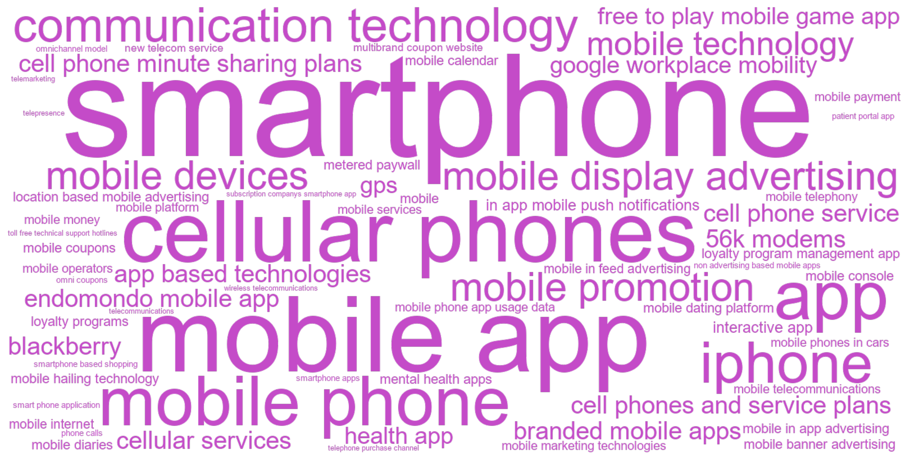
C.14.3 Articles
| Year | Full citation | Technology / technologies | Abstract |
|---|---|---|---|
| 2026 | Mishra R, Mehta R, Kim S. Anthropomorphizing personal goals as dependent persons empowers consumer goal pursuit. Journal Of Consumer Psychology. 2026;43:104-113. doi:10.1002/jcpy.70008 | health app | Psychological empowerment plays a crucial role in motivating individuals to pursue their goals. This research explores a unique method to empower consumers in their goal pursuit: anthropomorphizing goals as dependent persons in need of care. Through three studies, including an incentive-compatible study and a field study conducted at a hypermarket, we demonstrate that viewing personal goals as dependent persons who require care and nurturance (e.g., presenting a goal as a dependent person in a health app) can significantly enhance goal pursuit (e.g., choosing healthy snacks) by boosting psychological empowerment. We find that this motivational boost does not occur when a goal is simply anthropomorphized as any person (Study 1), when it is depicted as a dependent object (Study 1), or when it is anthropomorphized as an independent person (Study 2). This research contributes to a deeper understanding of motivation in goal pursuit and offers practical implications for marketers. Specifically, by using marketing communications to frame goals as entities that require care, marketers can help individuals foster a more engaging and empowering relationship with their aspirations. |
| 2026 | Yin Y, Feng X, Chen Z, Jia J. Digital Behaviors Signal Consumer Well-being: A Factor-Augmented Regularized Prediction Model Approach. International Journal Of Research In Marketing. 2026;:. doi:10.1016/j.ijresmar.2025.12.005 | mobile phone app usage data | We examine whether digital behaviors signal consumer well-being by linking individual-level mobile-phone app-usage data to surveys of the same users’ happiness and stress. Our main study context is (both before and during) the COVID-19 pandemic outbreak in a major Chinese city. We use verifiable digital-trace data to document lifestyle shifts during the lockdown, as well as age and gender heterogeneities in behavioral change. We propose the use of an advanced factor-augmented regularized prediction model (FarmPredict) to exploit the mobile app usage patterns for predicting happiness and stress before and after the pandemic outbreak. Mobile app usage data contain useful signals: Both latent factors and idiosyncratic residuals extracted from app usage by a factor model contribute to predicting happiness and stress; the common factors meaningfully capture app usage patterns and digital lifestyles, while idiosyncratic residuals carry valuable individualized information. Moreover, a first-difference analysis identifies the app categories and latent factors that predicted changes in well-being during the pandemic. To assess the ecological validity of the model with a different population and stressor, we further validate the findings in a separate lab experiment using an undergraduate student sample whose subjective well-being fluctuates during the finals season. Across contexts, individuals’ digital behaviors coupled with FarmPredict function as a population-level “hedonometer”: They provide a continuous, passive indicator of well-being, clarify the roles of common lifestyle factors versus idiosyncratic residuals, and help identify psychologically vulnerable subpopulations. © 2025 Elsevier B.V. |
| 2026 | Li Y, Zhuang M, Fang E. Multichannel Effects of Mobile In-Feed Advertising. Journal Of Marketing. 2026;78:51-71. doi:10.1177/00222429251322447 | mobile in feed advertising | With in-feed advertising becoming an increasingly popular advertising tool for advertisers to reach mobile consumers, the authors propose an integrated model of contemporaneous, carryover, and spillover effects to measure the incremental contributions of in-feed ads in multiple types of mobile apps: newsfeed, social, and video. They empirically examine the three proposed effects of newsfeed ads, social feed ads, and video feed ads using data from a large-scale ad campaign for a new mobile game. The data set contains 10,115,801 impressions, 286,506 clicks, and 12,706 conversions. First, the findings show that social feed ads have the strongest contemporaneous effects on both ad clicks and conversions; social feed ads are 1.87 times more likely to generate a click and 1.69 times more likely to generate a conversion than newsfeed ads, followed by video feed ads (clicks: 1.73 times; conversions: 1.55 times). Second, video feed ads have the strongest carryover effect, followed by social feed ads, while newsfeed ads have a negative carryover effect. Third, newsfeed ads exhibit the strongest spillover effect; prior newsfeed ad exposures are more effective than prior social or video feed ad exposures at promoting clicks and conversions upon subsequent exposure in other channels. |
| 2026 | Farace S, Ordenes F, Herhausen D, Grewal D, De R K. Standing Out While Fitting In: Visual Design of Text Overlays in Social Media Communication. Journal Of Marketing. 2026;103:132-151. doi:10.1177/00222429251322773 | interactive app | The vast amount of content on social media platforms makes it challenging for firms to create posts that get noticed. An increasingly popular approach to increase customer engagement relies on text overlays, where text is placed directly on images. Such practices raise questions of how to balance the visual and text elements for the best impact. Three key factors, commonly used by practitioners, can trigger engagement because of their visual salience: (1) the degree of dynamism or implied motion in the image as well as the (2) size and (3) centrality of the text overlay. Using multiple methods, including field studies, online experiments, and managerial interviews, the authors establish that a text overlay that is too large and centrally placed, combined with a dynamic image, has negative effects on consumer engagement, because these design combinations make the post visually unappealing. The authors leverage these findings to develop an interactive app that can help managers compose more engaging multimodal social media posts. |
| 2026 | Hamby A, Mcferran B, Fuller C. The Power of Proximity: Exploring Narrative Language in Consumer Reviews. Journal Of Marketing. 2026;63:157-176. doi:10.1177/00222429251336706 | smartphone | Marketers know the importance of online reviews, but what can be done to improve the prompts asking consumers to review? Across eight studies, the present work shows that a prompt that encourages writing reviews for a close audience enhances consumers' use of narrative language. A growing body of literature reveals that narratives are powerful persuasive devices for shaping audiences' beliefs, including when reading online reviews. However, little is known about what aspects shape the communicator's use of narrative language in the first place. A prompt that encourages writers to imagine as though they were writing for a close audience increases narrativity, an effect mediated by consumers' tendency to write in a natural, less effortful style when writing for a close (vs. distant) audience. The effect is attenuated when people write about material (vs. experiential) purchases, and when people write on a smartphone (vs. PC). Consumers find writing for close others to be at least as enjoyable as several other prompts, but with improved outcomes for firms. As most review sites provide limited guidance on how to write, this research offers an inexpensive and scalable intervention to improve reviews and the review writing experience. |
| 2025 | Ye T, Shankar V. Close a Store to Open a Pandora's Box? The Effects of Store Closure on Sales, Omnichannel Shopping, and Mobile App Usage. Marketing Science. 2025;66:820-837. doi:10.1287/mksc.2022.0450 | mobile app | What are the causal effects of the closure of a store on a retail chain's overall, offline, and online sales? We address this central research question using sales, shopper transaction, and mobile app usage data from a large retail chain that closed 34 stores across states in a month. We use the difference-in-differences approach, creating propensity score-matched control counties and controlling for selection. We examine potential moderators of these effects and underlying mechanisms using individual shopper-level and mobile app user-level data, including analyzing app engagement through topic modeling. Our findings reveal that closing a store opens a Pandora's box in that it triggers significant net monthly sales loss of \$209,317 (more than the average monthly sales of the closed store), representing 18.7\% of the retailer's net sales in the county with the closed store because of spillover effects on other channel purchases by the retailer's customers in that county. The numbers of the retailer's active customers, new customers, active app users, new app users, and their mobile app engagement all decline postclosure. Store closure has a negative spillover effect on even nearby shoppers who never shopped at the closed store. Loyal shoppers among nonvisitors to the closed store and app users are more tolerant of store closure than other shoppers. To mitigate adverse effects, retail chains can strategically choose stores closer to other stores in the chain, with a high percentage of in-store discounts and online sales, and a low value of product returns to close. Additionally, they can redirect shoppers in affected counties to the chain's nearby stores and online (in particular, the mobile app) by offering discounts and promoting store and product information in the app. |
| 2025 | Bronnenberg Bet al.. Closing the Knowledge Gap: Understanding and Reducing the Environmental impact of Food Choices. Journal Of Marketing. 2025;84:. doi:10.1177/00222429251348436 | app | The global food system has a large impact on the environment. By converting household grocery purchases into environmental cost factors like greenhouse gas (GHG) emissions and land use, this study examines the sustainability of food purchases over a ten-year period using household panel data in two prosustainability markets (Germany and the Netherlands). The environmental intensity of households' grocery baskets has not declined over time in these countries. Even though younger and more educated households are starting to shift their diets, the share of plant-based alternatives in food diets remains very low. The authors propose that one contributing factor is a lack of environmental knowledge, which they address by developing an app that gives personalized feedback on the emissions associated with consumers' food purchases. The app also allows users to create sustainable grocery bundles aligned with their dietary preferences. Two experiments demonstrate that interacting with the app (1) raises subjective and objective environmental knowledge related to food, with much of this improvement persisting for over six months, and (2) reduces GHG emissions associated with stated food choices by up to 33\%. These reductions are driven by different information formats within the app, including peer comparisons and detailed information about food-category emissions. |
| 2025 | Narang U, Shankar V, Narayanan S. Cross-Channel Effects of Failure in a Retailer's Mobile App. Journal Of Marketing Research. 2025;57:796-817. doi:10.1177/00222437251318660 | mobile app | Failures in omnichannel retailers' mobile apps can significantly impact shoppers' purchases. The authors leverage a natural experiment involving an exogenous failure in a large omnichannel retailer's app that made the app unavailable. They examine the impact of the app failure on purchases in both online (website, mobile app) and offline (store) channels using a difference-in-differences approach. The findings show a substantial adverse effect of the app failure on shoppers' frequency, quantity, and monetary value of purchases, leading to short-term revenue losses of up to \$1.08 million, with an additional \$1.89 million in potential long-term revenue erosion. The effects are heterogeneous across channels and shoppers. The decline in purchases across channels stems from reduced purchases in stores (vs. online). The decline in store purchases is predominantly explained by the search discontinuation mechanism, wherein shoppers who use the app for search but complete their purchases in stores curtail their offline purchases following the app failure. The effect on purchases in the retailer's online channel is insignificant, aligning with the channel-switching mechanism, wherein shoppers who use the app primarily to purchase simply pivot to another online channel. Furthermore, shoppers with a lower monetary value of past purchases and more recent purchases are more sensitive to an app failure than others. |
| 2025 | Jo W, Lewis M. How expansion to the Nintendo Switch impacts PC players' game usage and spending: A study of an omni-channel strategy. International Journal Of Research In Marketing. 2025;50:1084-1104. doi:10.1016/j.ijresmar.2024.10.007 | mobile console | Offering multiple retail channels for browsing and purchasing-an omni-channel strategy- is a well-established approach for modern retailers. This strategy is also increasingly adopted by `online-first' digital services such as social media and video gaming to expand consumer reach and enhance customer engagement. However, unlike the potential complementary relationships between physical and digital channels, it is unclear whether a firm's channel expansion within the digital area (e.g., online to mobile) benefits firms or merely redistributes existing demand without growth. Using the context of a major online video game, we assess whether creating a mobile console version of an existing PC-based game causes meaningful behavioral changes among existing users. We find that mobile console adoption significantly impacts mobile channel adopters' engagement, with a 31\% increase in games played and a 6.9\% increase involuntary spending. Further analysis reveals that mobile console adopters enjoy the game over a broader range of hours, suggesting increased (ubiquitous) access is the mechanism behind this positive impact. Additionally, mobile adopters make more frequent purchases, although they do not necessarily spend more per purchase. We also observe that the impact of the mobile game is more pronounced among players at high risk of churning and those with sparse voluntary spending. Finally, our analysis shows that new mobile players experience a slight but significant dip in in-game performance. This finding suggests a need for game developers to help players mitigate the downside risk of transitioning between two distinct user environments. (c) 2024 Elsevier B.V. All rights are reserved, including those for text and data mining, AI training, and similar technologies. |
| 2025 | Gokgoz Z, Ataman M, Van B G. If it ain't broke, should you still fix it? Effects of incorporating user feedback in product development on mobile application ratings. International Journal Of Research In Marketing. 2025;66:467-486. doi:10.1016/j.ijresmar.2024.10.004 | mobile app | How can firms utilize collective user feedback in reviews to better tailor their products to improve customer satisfaction? Based on an automated text analysis of 1,075,704 reviews and a content analysis of 3255 mobile application updates, observed over 460 apps' first year on the market, this paper investigates the role of collective user feedback on user ratings during the process of developing successive mobile app generations. The results reveal that the rewards associated with responding to user feedback and the penalties due to ignoring this feedback can be substantial. The impact of the match/mismatch between user feedback and product development decisions depends on the topic of the feedback and the timing of the update. The findings provide app developers with guidance on the challenge of prioritizing possible development paths: (1) improve ratings by promptly matching user feedback that require new content or smooth functioning of the app; (2) avoid rating penalties by continuously improving existing content or ensuring compatibility with most recent operating systems and devices. The implications shed light on the fundamental question of whether and when to pro-act on or re-act to the voice of the customer. (c) 2024 The Authors. Published by Elsevier B.V. This is an open access article under the CC BY license (http://creativecommons.org/licenses/by/4.0/). |
| 2025 | Somasundaram J, Zimmermann L, Pham Q. Leveraging Rational Addiction Theory to Reduce Mobile Usage. Journal Of Marketing. 2025;62:. doi:10.1177/00222429251405841 | smartphone | The pervasive use of smartphones has raised concerns about their addictive and maladaptive nature. This article introduces an intervention based on rational addiction theory to cost-effectively nudge consumers to reduce smartphone usage, promoting sustainable digital consumption. The authors examine whether preannouncing future targets to reduce smartphone usage influences current consumption and behavioral change. They develop a mathematical model incorporating habit formation, satiation, and projection bias and test its predictions in three preregistered randomized controlled trials using objectively measured smartphone usage. When future incentives and targets are preannounced, consumers reduce usage preemptively compared with their baseline, consistent with rational addiction. This occurs only when participants are given fixed daily reduction targets, not when incentivized proportionally for reductions over time, and seems to reflect forward-looking habit formation, as other explanations (e.g., goal priming, capability testing) are unlikely to drive results. Interestingly, preemptive reductions are stronger among heavy users and those with stronger beliefs in meeting their targets. The authors also find that preemptive reductions help consumers meet their targets during the incentivized period and might support posttreatment behavioral sustenance. The model fitting results reveal considerable heterogeneity and offer insights into how digital detox experiences can be structured to promote sustainable behavior change. |
| 2025 | Lee J, Trudel R. Man up! The mental health-feminine stereotype and its effect on the adoption of mental health apps. Journal Of Consumer Psychology. 2025;41:121-128. doi:10.1002/jcpy.1405 | mental health apps | Mental illnesses are among the most frequent health conditions worldwide, affecting both men and women. However, we find that men are more likely than women to avoid adopting mobile apps that are designed to promote users' mental health. Building on previous research that men are often more motivated than women to behave in gender-congruent ways, we suggest that there exists a mental health-feminine stereotype that acts as an obstacle to men's adoption of mental health apps. Privacy and self-help features offered by digital mental health apps are insufficient to overcome the mental health-stereotype that deter men from pursuing mental health support. Across five studies, we show that consumers feel more feminine when adopting mental health apps, and perceive others who adopt mental health apps to be more feminine than those who do not. We also show that presenting mental health apps in a masculine frame increases the likelihood of men adopting mental health apps, especially those with stronger adherence to traditional masculinity ideology. |
| 2025 | Mrkva K, Duncan S, Sharif M, Zuo , Stanley S. The Confirmation Nudge: Prompts to Change or Confirm Initial Preferences Steer Consumer Choice. Journal Of Consumer Research. 2025;52:. doi:10.1093/jcr/ucaf049 | subscription companys smartphone app | Across two field experiments and several preregistered lab experiments, we demonstrate that confirmation nudges, which ask consumers whether they would like to confirm or change their initial choice, impact choice. First, consumers navigating a subscription company's smartphone app were randomized to a control or confirmation nudge condition, which asked them to either confirm their initial choice or switch to an annual subscription. Confirmation nudges increased subscribers' choice of the annual subscription by over 8 percentage points-an effect size similar to default effects tested by the same company. In experiment 2, conducted by a jewelry retailer, confirmation nudges had countervailing effects, increasing purchases of a nudged service plan add-on but decreasing originally planned jewelry purchases likely because it added a step and thus frictions to the purchase process. Confirmation nudges had larger effects when nudged options were desirable and among consumers who would benefit from the nudge (experiments 3 and 4). However, they were perceived as more manipulative than comparison conditions (experiment 5). We suggest that confirmation nudges undo tendencies to focus on initially preferred options, shifting attention toward alternatives relative to control conditions. Consistent with this, confirmation nudges were especially effective when the wording of the confirmation prompt focused on the ``switch'' option. |
| 2025 | Bashirzadeh Y, Howard-Malek S, Yamim A, Petersen J, Nadalizadeh A. The impact of ``use in moderation'' corporate social marketing (CSM) campaigns on free-to-play mobile game app usage and spending. International Journal Of Research In Marketing. 2025;104:1143-1162. doi:10.1016/j.ijresmar.2024.11.007 | free to play mobile game app | Socialconcerns on excessive gaming behaviors are growing indicating the need for action from the gaming industry. Some game companies have started to employ corporate social marketing (CSM) strategies to promote moderate consumption. We analyzed results from two randomized field experiments in a free-to-play mobile game app to study the influence of use in moderation (UIM) campaigns on consumption behavior and business outcomes. An 11-day-long field experiment testing a non-targeted UIM campaign, i.e., the message timing was not associated with excessive play, shows that UIM campaigns can reduce users' excessive consumption incidences and increase in-app purchases. A yearlong field experiment testing a UIM campaign targeted at users at the time of excessive consumption shows that such campaigns can reduce excessive consumption patterns while simultaneously increasing retention, in-app purchases, and in-app time (on regular and non-excessive days) but only for previously non-excessive users (i.e., users who receive the message the first time they consume excessively). These findings provide managers with guidance on how to successfully implement UIM campaigns to help address societal concerns related to excessive consumption while benefiting consumer-company relationships. (c) 2024 Elsevier B.V. All rights are reserved, including those for text and data mining, AI training, and similar technologies. |
| 2025 | Shi S, Lee S, Kalyanam K, Wedel , Michel M. The Impact of App Crashes on Consumer Engagement. Journal Of Marketing. 2025;114:81-98. doi:10.1177/00222429241304322 | app | The authors develop and test a theoretical framework to examine the impact of app crashes on app engagement. The framework predicts that consumers increase engagement after encountering a single crash due to their need for closure and their curiosity, yet reduce engagement after experiencing repeated and concentrated crashes, primarily because of frustration and perceived task unattainability; the recency of crashes moderates these effects. Field data analysis reveals that while a crash truncates a session and reduces content consumption, it increases page views in the following session. However, this increase in page views does not compensate for the loss during the crashed session. Frequent and more concentrated crashes curtail engagement. Three experiments in which crashes are exogenously manipulated in a different context support the validity and generalizability of these findings, confirm the proposed mediators, and demonstrate how to lessen the negative impact of repeated crashes with postcrash messages. The research adds new dimensions to the task pursuit literature and provides managers with a framework to quantify the economic impact of crashes, analyze content substitution behavior, and assess the bias of a transactional view of crash incidents. Additionally, it offers insights into targeted release of features to more tolerant users and strategic design of postcrash messages. |
| 2025 | Hock S, Ferguson K, Herd K. The mobile giving gap: The negative impact of smartphones on donation behavior. Journal Of Consumer Psychology. 2025;33:281-287. doi:10.1002/jcpy.1418 | smartphone | While charities typically use the same messaging when appealing to consumers on their smartphones and PCs, this approach may backfire. Across three studies, we find consumers are less likely to donate on their smartphones (vs. PCs), a phenomenon we call the mobile giving gap. In study 1, we demonstrate that consumers are less willing to donate real money to a charitable organization. In study 2, we provide process support and demonstrate that the focal effect is mediated by other-focus. Finally, a field experiment using Google display ads (study 3) replicates the focal effect and demonstrates that the negative impact of smartphones is attenuated when the appeal explicitly focuses on others (vs. the self). This study not only provides additional process support, but also suggests an easily implementable strategy that charities can use to close the mobile giving gap. Taken together, our findings offer theoretical insights related to the mobile mindset and its impact on consumer behavior and highlight that charities should tailor their donation appeals based on device type. |
| 2024 | Khodakarami F, Petersen J, Venkatesan R. Customer behavior across competitive loyalty programs. Journal Of The Academy Of Marketing Science. 2024;66:892-913. doi:10.1007/s11747-023-00965-z | loyalty program management app | Customers can belong to multiple competing loyalty programs each with multiple reward levels. We extend loyalty program theories by proposing five mechanisms that capture the competitive effects in multi-firm, multi-level loyalty programs. We empirically test our hypotheses using data from a loyalty program management app where customers manage points independently across competing firms. We utilize goal shielding theory to show how a customer's purchase at the focal firm is affected by the customer's purchases and redemptions across competing firms. Specifically, we find that a customer's purchase probability at the focal firm decreases after they qualify for a reward independent of redemption at a competing firm (competitive mere reward qualification) and after they redeem a reward at a competing firm (competitive rewarded behavior). Further, we find that the customer's purchase probability at the focal firm increases if the customer is far from both the qualified and higher-level rewards at the competing firm (competitive stuck-in-the-middle), and if the customer accelerated their purchase frequency to qualify for or redeem a reward at the competing firm (competitive effort balancing post qualification and redemption). Four lab experiments supplement our empirical findings with causal evidence. Our research shows that customer progress toward a goal in a loyalty program is influenced by competing loyalty programs. |
| 2024 | Weathers D, Poehlman T. Defining, and understanding commitment to, activity streaks. Journal Of The Academy Of Marketing Science. 2024;83:531-553. doi:10.1007/s11747-023-00944-4 | app, loyalty programs | To encourage and facilitate consumer engagement, marketers may incorporate streaks into their social media platforms, apps, loyalty programs, and other marketing tools. To build an understanding of the phenomenon, the current research examines activity streaks. With a theories-in-use approach, we first define an activity streak. We then differentiate activity streaks from other forms of patterned behavior, including winning and lucky streaks, habits, and collections. With survey, experimental, and field data, we investigate factors that impact one's commitment to an activity streak. We find that streak commitment is a positive function of individual differences, including the activity's identity relevance to the actor, beliefs about self-improvement resulting from the activity, and the actor's personal need for structure, and marketer-controlled elements, including structuring the streak as a daily (versus cumulative) task, presenting the streak as a short-term (versus indefinite) goal, and allowing the actor to keep the streak private (versus sharing with others). These findings lead to a deeper understanding of streaks, provide practical implications for marketers, and highlight opportunities for future research. |
| 2024 | Puntoni S. Diagnostic delay in amyotrophic lateral sclerosis. Journal Of Consumer Psychology. 2024;10:174-176. doi:10.1002/jcpy.1358 | smartphone | This commentary questions two common assumptions underlying discussions of how digital technology can enrich the consumer experience. First, broad conceptualizations tend to accommodate augmented reality and virtual reality under a single metaverse umbrella. This commentary draws attention to differences between the two and to the present-day prevalence of augmented reality experiences. Second, discussions of the metaverse tend to focus on visual experiences. This commentary draws attention to the impact that augmented reality is having through other senses. I argue that augmented reality experiences are ubiquitous because smartphones and wearables enrich our everyday life with haptic and sonic information. |
| 2024 | Wang C, Zhou B, Joshi Y. Endogenous Consumption and Metered Paywalls. Marketing Science. 2024;56:. doi:10.1287/mksc.2023.1444 | metered paywall | Digital content platforms increasingly implement paywalls to generate subscrip-tion revenue, but putting content behind paywalls can reduce consumption and advertising revenue. We analyze optimal paywall design when consumers are heterogenous in their valuation for and satiation with content and endogenously determine their consumption. We find that, under moderate ad rates, a metered paywall offering a limited amount of free content is optimal when consumers display sufficient heterogeneity in satiation. When ad rates increase, one might expect platforms to offer more free content to generate higher ad revenue. Instead, we find that sometimes offering less free content and lowering the sub-scription price is optimal to attract new subscribers. Further, depending on ad rates, the optimal amount of free content may increase or decrease in consumers' valuation for con-tent. As valuation increases, consumers' willingness to pay for subscription and desire for content consumption increases. The former effect dominates under low ad rates and incenti-vizes the platform to provide less free content, but the opposite is true under high ad rates. Counterintuitively, we also find that total content consumption can increase with the pro-portion of users who become satiated relatively faster because the platform may strategi-cally raise its meter limit to increase ad revenues from nonsubscribers. We also explore the impact of a more appealing outside option for consumers, competition between media plat-forms, and correlation between valuation and satiation on the optimality of paywalls. |
| 2024 | Abell A, Biswas D, Arroyo M C. Food and technology: Using digital devices for restaurant orders leads to indulgent outcomes. Journal Of The Academy Of Marketing Science. 2024;67:1673-1691. doi:10.1007/s11747-024-01029-6 | app | Restaurants are increasingly opting for technological innovations for food ordering. While digital modes of ordering, such as kiosks, tablets, and apps, embrace emerging innovations, can there be unintended consequences regarding the foods purchased and total spending? The findings from a series of studies, including six studies conducted in the field, demonstrate that a digital (vs. non-digital) ordering mode leads consumers to have a more automatic decision making mode and lower cognitive involvement, which results in more indulgent outcomes in the form of unhealthy food orders and higher overall spending. This effect attenuates for consumers with a high degree of technology acceptance and for orders placed earlier in the day. These findings suggest that restaurant managers with the goal of selling healthier options would benefit from having non-digital ordering modes, while managers desiring more indulgent purchases would benefit from having digital ordering modes available. |
| 2024 | Oba D, Berger J. How communication mediums shape the message. Journal Of Consumer Psychology. 2024;75:406-424. doi:10.1002/jcpy.1372 | smartphone | Communication is an integral part of everyday life. Consumers chat with friends, search for information, and complain to customer service. Salespeople pitch products, employees answer questions, and market researchers ask them. But communication does not occur in a vacuum. Modalities (e.g., speaking or writing), channels (e.g., text, phone call, or email), and devices (e.g., smartphone or computer) are the mediums through which communicators communicate. While these mediums often seem incidental, might they impact what gets communicated? And if so, how? This paper offers a comprehensive framework for understanding how mediums shape the message. Specifically, we argue that modality, devices, and channels all shape communication through the same two key drivers: deliberation and audience salience. As a result, the mediums communicators use to communicate impact everything from the thoughtfulness and concreteness of communicated content to the degree to which it is self-enhancing or honest. This work sheds light on the psychology of content production, provides insight into the drivers and consequences of communication, and highlights how emerging technologies may shape communication in the future. |
| 2024 | Lu S, Pauwels K. More transactions but a lower average transaction value: How mobile payment apps influence consumer purchases through time-savings. International Journal Of Research In Marketing. 2024;58:761-776. doi:10.1016/j.ijresmar.2024.08.004 | mobile payment | Mobile payment has become increasingly popular with consumers. In this study, we examine a key benefit of mobile payment: saving consumers time by bypassing the payment queue. In a field experiment with a Chinese retail gasoline chain, we find that the introduction of mobile payment decreases the average amount per transaction but increases overall sales by boosting the number of transactions. These effects are more pronounced when the expected waiting time to pay is longer and when competitors are closer. In addition, the impact is greater for premium than regular products and leads to an increase in cross- channel sales. Consistent with the time-saving rationale, these findings provide insights for managers wanting to increase sales by implementing a mobile payment option. (c) 2024 The Authors. Published by Elsevier B.V. This is an open access article under the CC BY license (http://creativecommons.org/licenses/by/4.0/). |
| 2023 | Cao J, Chintagunta P, Li S. From Free to Paid: Monetizing a Non-Advertising-Based App. Journal Of Marketing Research. 2023;75:707-727. doi:10.1177/00222437221131562 | non advertising based mobile apps | Non-advertising-based mobile apps face several critical challenges when trying to monetize their free services-among them, the choice of pricing strategies (hard landing vs. soft landing; i.e., a ``pay or churn'' paywall vs. continuing to offer limited free services to existing users after monetization) and aspects of product design (whether to provide exclusive secondary offerings to paying users). The authors implemented a large-scale randomized field experiment with an app firm to test the causal effects of such pricing and product design strategies. Results show that both soft landing and exclusive secondary offerings decrease existing app users' willingness to subscribe, but there is a positive interaction between these two strategies on subscriptions. The authors propose a theoretical framework, discuss potential mechanisms that might be at play, and conduct robustness checks to rule out several alternative explanations. A customer survey by the firm and an experiment on Prolific provide further support for the theoretical mechanism. To assess generalizability, the authors conducted a second field experiment and obtained consistent results. They also report the results from the actual implementation of the best-performing strategy by the firm. This research provides guidance on possible theoretical underpinnings of users' responses and important managerial implications for app monetization. |
| 2023 | Huang Y, Yang Z, Morwitz V. How using a paper versus mobile calendar influences everyday planning and plan fulfillment. Journal Of Consumer Psychology. 2023;32:115-122. doi:10.1002/jcpy.1297 | mobile calendar | This research examines how using a paper versus mobile calendar influences everyday planning and plan fulfillment behavior. Consumers are rapidly moving from paper to mobile calendars for convenience, but this research shows that doing so may lead individuals to be less successful in effectively developing and implementing their plans. In three studies, we demonstrate that compared with mobile calendar users, paper calendar users develop higher-quality plans and are more successful in plan fulfillment. We provide evidence that this happens because paper calendar users take a broader, big-picture perspective during planning, which also leads to higher-quality plan development and a greater likelihood of plan fulfillment. When mobile calendar users use a mode that also provides a broader perspective, their plan quality increases. |
| 2023 | Reeck C, Posner N, Mrkva K, Johnson , Eric J E. Nudging App Adoption: Choice Architecture Facilitates Consumer Uptake of Mobile Apps. Journal Of Marketing. 2023;87:510-527. doi:10.1177/00222429221141066 | smartphone apps | How can firms encourage consumers to adopt smartphone apps? The authors show that several inexpensive choice architecture techniques can make users more likely to enable important app features and complete app onboarding. In six preregistered experiments (n = 5,968) and a field experiment (n = 594,997), choice architecture interventions manipulating choice sequence, color, and wording of app adoption decisions dramatically increased app adoption. Across experiments, integrating multiple feature decisions into a single choice increased adoption. This integration effect emerges because it decreases decision noise and reduces the prominence of individual features, consistent with support theory. Changing colors to match habitual patterns commonly found in current digital interfaces appears to increase adoption by accelerating consumers' decisions. Finally, wording options as if enabling the app is the default response (even without changing the actual default) also increases adoption. These ``defaultless defaults'' may be particularly relevant in heavily regulated consumer domains, such as finance or health care. The effects generalized across different types of apps and were robust across subsamples varying in demographics, attitudes toward the apps, and political affiliation. These results suggest simple tools that marketing managers and app developers can use to increase app adoption. |
| 2023 | Song C, Sela A. Phone and Self: How Smartphone Use Increases Preference for Uniqueness. Journal Of Marketing Research. 2023;92:473-488. doi:10.1177/00222437221120404 | smartphone | One of the most dramatic shifts in recent years has been consumers' increased use of smartphones for making purchases and choices-but does using a smartphone influence what consumers choose? This article shows that, compared with using a personal computer (PC), making choices using a personal smartphone leads consumers to prefer more unique options. The authors theorize that because smartphones are considerably more personal and private than PCs, using them activates intimate self-knowledge and increases private self-focus, shifting attention toward individuating personal preferences, feelings, and inner states. Consequently, making choices using a personal smartphone, compared with a PC, tends to increase the preference for unique and self-expressive options. Six experiments and several replications examine the effects of personal smartphone use on the preference for unique options and test the underlying role of private self-focus. The findings have important implications for theories of self-focus, uniqueness seeking, and technology's impact on consumers, as well as tangible implications for many online vendors, brands, and researchers who use mobile devices to interact with their respective audiences. |
| 2023 | Sun X, Cui X, Sun Y. Understanding the sequential interdependence of mobile app adoption within and across categories. International Journal Of Research In Marketing. 2023;36:659-678. doi:10.1016/j.ijresmar.2023.06.004 | mobile app | This research examines the interdependencies in users' sequential app adoptions within and across diverse app categories. We employ a Zero-inflated Negative Binomial (ZINB) model to analyze a unique, granular, and individual-level mobile app adoption dataset, revealing three main findings. First, users' app adoption decisions are highly history -dependent and category-specific in a nonlinear fashion. Early adoption can enhance subse-quent downloads within the same category for app categories with high needs evolvement and horizontal differentiation (e.g., Game and Education apps). However, it may crowd out subsequent downloads in other categories with low needs evolvement and horizontal dif-ferentiation (e.g., Communication and Social media apps). Second, these effects are further moderated by users' individual characteristics such as app usage tenure and phone price. Third, there exist nontrivial app adoption spillovers across app categories. For example, users' adoptions of apps with relatively high hedonic values (e.g., Game and Music apps) can suppress their subsequent need for apps with relatively high utilitarian values (e.g., Education and Online banking apps), and vice versa. Together, these results offer novel managerial implications for app developers and platforms to promote apps in different cat-egories based on users' adoption histories.(c) 2023 Elsevier B.V. All rights reserved. |
| 2022 | Kukar-Kinney M, Scheinbaum A, Orimoloye L, Olanrewaju O, Carlson J, He H. A model of online shopping cart abandonment: evidence from e-tail clickstream data. Journal Of The Academy Of Marketing Science. 2022;78:961-980. doi:10.1007/s11747-022-00857-8 | smartphone based shopping | This research investigates online consumer behavior in an e-commerce context with a focus on consumer online shopping cart use and subsequent cart abandonment. A model rooted in the Uses and Gratifications Theory, the Unified Theory of Acceptance and Use of Technology, and the concept of the purchase funnel is developed to explain the predicted relationships. Empirical findings based on clickstream data show that returning to an existing cart increases the subsequent cart use and decreases cart abandonment. Conversely, viewing clearance pages and viewing a large number of product reviews increases both cart use and cart abandonment. Browsing product pages decreases cart use, and increases cart abandonment. The moderating role of smartphone-based shopping is also examined, with the moderating effects primarily occurring early in the purchase funnel affecting cart use, and influencing cart abandonment to a smaller degree. Theoretical contributions and managerial implications for digital marketers are provided. |
| 2022 | Misra K, Singh V, Zhang Q. Frontiers: Impact of Stay-at-Home-Orders and Cost-of-Living on Stimulus Response: Evidence from the CARES Act. Marketing Science. 2022;37:211+. doi:10.1287/mksc.2021.1329 | google workplace mobility | During the 2020 COVID-19 epidemic, the U.S. Congress passed the CARES Act that (among other measures) provides direct payments to households. Using a large debit cards database, we analyze consumer expenditures following the stimulus payments. We observe zip code level daily transactions (approximately 12 million cards) before and immediately following the disbursements of stimulus checks. Empirical analysis exploits geographical variation in timing of federal deposits to identify marginal propensity to consume (MPC) for stimulus payments. We estimate between 0.29 (excluding banking) and 0.51 (all spend) of the rebate is spent within a few days of receipt. We find large crosssectional heterogeneity with MPC estimates that are three times higher in magnitude in the most densely populated urban areas with higher cost-of-living. In areas with more restricted movement during the pandemic (as measured by Google workplace mobility), MPC estimates are approximately 60\% higher. We reanalyze data from previous fiscal initiatives (2001 tax rebates and the 2008 fiscal stimulus) and find similar geographical differences. Collectively our results highlight an important shortcoming in fiscal policies that ignore local environment, particularly cross-sectional differences in cost-of-living across |
| 2022 | Simonov A, Sacher S, Dube J, Biswas , Shirsho S. Frontiers: The Persuasive Effect of Fox News: Noncompliance with Social Distancing During the COVID-19 Pandemic. Marketing Science. 2022;63:230-242. doi:10.1287/mksc.2021.1328 | mobile phone | To what extent do mass media outlets influence viewers' trust in scientific evidence and compliance with behavior recommended by scientific experts? Exploiting the U.S. lockdown period of the COVID-19 pandemic in early 2020, we analyze a large longitudinal database that combines daily stay-at-home behavior from approximately 8 million mobile phones and local viewership of cable news networks. Early in the pandemic, several of Fox News' hosts downplayed the severity of the pandemic and the risks associated with the transmission of the virus. A combination of regression analysis and a natural experiment finds that a 10\% increase in viewership of Fox News in a zip code causes a 0.76 percentage-point reduction in compliance with stay-at-home behavior. The results imply a media persuasion rate that is larger than typical advertising persuasion rates on consumer behavior. Similar analyses using viewership of MSNBC and CNN, which supported lock down measures, were inconclusive but suggested a smaller, positive effect on compliance with social distancing regulations. |
| 2022 | Stocchi L, Pourazad N, Michaelidou N, Tanusondjaja A, Harrigan P. Marketing research on Mobile apps: past, present and future. Journal Of The Academy Of Marketing Science. 2022;340:195-225. doi:10.1007/s11747-021-00815-w | mobile app | We present an integrative review of existing marketing research on mobile apps, clarifying and expanding what is known around how apps shape customer experiences and value across iterative customer journeys, leading to the attainment of competitive advantage, via apps (in instances of apps attached to an existing brand) and for apps (when the app is the brand). To synthetize relevant knowledge, we integrate different conceptual bases into a unified framework, which simplifies the results of an in-depth bibliographic analysis of 471 studies. The synthesis advances marketing research by combining customer experience, customer journey, value creation and co-creation, digital customer orientation, market orientation, and competitive advantage. This integration of knowledge also furthers scientific marketing research on apps, facilitating future developments on the topic and promoting expertise exchange between academia and industry. |
| 2022 | Bojd B, Yoganarasimhan H. Star-Cursed Lovers: Role of Popularity Information in Online Dating. Marketing Science. 2022;51:73-92. doi:10.1287/mksc.2021.1301 | mobile dating platform | We examine the effect of user's popularity information on their demand in a mobile dating platform. Knowing that a potential partner is popular can increase their appeal. However, popular people may be less likely to reciprocate. Hence, users may strategically shade down or lower their revealed preferences for popular people to avoid rejection. In our setting, users play a game where they rank-order members of the opposite sex and are then matched based on a stable matching algorithm. Users can message and chat with their matches after the game. We quantify the causal effect of a user's popularity (star rating) on the rankings received during the game and the likelihood of receiving messages after the game. To overcome the endogeneity between a user's star rating and her unobserved attractiveness, we employ nonlinear fixed-effects models. We find that popular users receive worse rankings during the game, but receive more messages after the game. We link the heterogeneity across outcomes to the perceived severity of rejection concerns and provide support for the strategic shading hypothesis. We find that popularity information can lead to strategic behavior even in centralized matching markets if users have postmatch rejection concerns. |
| 2022 | Rafieian O, Yoganarasimhan H. Variety Effects in Mobile Advertising. Journal Of Marketing Research. 2022;61:718-738. doi:10.1177/00222437211056090 | mobile app | Mobile app users are often exposed to a sequence of short-lived marketing interventions (e.g., ads) within each usage session. This study examines how an increase in the variety of ads shown in a session affects a user's response to the next ad. The authors leverage the quasi-experimental variation in ad assignment in their data and propose an empirical framework that accounts for different types of confounding to isolate the effects of a unit increase in variety. Across a series of models, the authors consistently show that an increase in ad variety in a session results in a higher response rate to the next ad: holding all else fixed, a unit increase in variety of the prior sequence of ads can increase the click-through rate on the next ad by approximately 13\%. The authors then explore the underlying mechanism and document empirical evidence for an attention-based account. The article offers important managerial implications by identifying a source of interdependence across ad exposures that is often ignored in the design of advertising auctions. Furthermore, the attention-based mechanism suggests that platforms can incorporate real-time attention measures to help advertisers with targeting dynamics. |
| 2021 | Wolf T, Jahn S, Hammerschmidt M, Weiger W, H. H. Competition versus cooperation: How technology-facilitated social interdependence initiates the self-improvement chain. International Journal Of Research In Marketing. 2021;101:472-491. doi:10.1016/j.ijresmar.2020.06.001 | mobile app | Consumers are increasingly using technologies such as wearables or mobile apps to achieve their self-improvement goals. Such technologies often contain features that enable social interdependence (competition or cooperation) among users to support them in improving their engagement, performance, and well-being (life satisfaction and personal growth). However, the critical question remains: does competition or cooperation best serve users in attaining these self-improvement goals? Evidence from an online experiment and a field study reveals that competition is more effective in driving performance and personal growth, while cooperation is superior in terms of behavioral engagement and life satisfaction. Furthermore, the results indicate that the effects are mediated by strive for success and fear of failure, two counteracting psychological processes. While competition is the stronger trigger for both pathways, downstream effects vary depending on the self-improvement goal considered. This research thus provides insights into whether and how users can best realize their self-improvement goals using technologies that include social features. (c) 2020 Elsevier B.V. All rights reserved. |
| 2021 | Tonietto G, Barasch A. Generating Content Increases Enjoyment by Immersing Consumers and Accelerating Perceived Time. Journal Of Marketing. 2021;79:83-100. doi:10.1177/0022242920944388 | smartphone | Advances in technology, particularly smartphones, have unlocked new opportunities for consumers to generate content about experiences while they unfold (e.g., by texting, posting to social media, writing notes), and this behavior has become nearly ubiquitous. The present research examines the effects of generating content during ongoing experiences. Across nine studies, the authors show that generating content during an experience increases feelings of immersion and makes time feel like it is passing more quickly, which in turn enhances enjoyment of the experience. The authors investigate these effects across a broad array of experiences both inside and outside the lab that vary in duration from a few minutes to several hours, including positive and negative videos and real-life holiday celebrations. They conclude with several studies testing marketing interventions that increase content creation and find that consumers who are incentivized or motivated by social norms to generate content reap the same experiential benefits as those who create content organically. These findings illustrate how leveraging content creation to improve experiences can mutually benefit marketers and consumers. |
| 2021 | Adhikary A, Diatha K, Borah S, Sharma A. How does the adoption of digital payment technologies influence unorganized retailers' performance? An investigation in an emerging market. Journal Of The Academy Of Marketing Science. 2021;45:882-902. doi:10.1007/s11747-021-00778-y | app based technologies | Unorganized retail dominates the retail landscape across emerging markets (EMs) and is undergoing rapid digitalization. However, the extant literature has not explored the impact of digital payment system adoption on unorganized retailer (UR) performance. By conducting three related studies and relying on the tenets of the resource-based view of firms, we show that digital payment technologies' adoption increases economic performance (i.e., revenue) for a sample of 403 EM URs. This effect is enhanced by such retailers' prioritization of technological investments and attenuated by their credit facilities. We find that card-based and app-based technologies positively impact UR performance. URs can maximize their performance by adopting two technologies, and there is a synergistic effect between card-based and account-based technologies. On average, adoption increases a UR's economic performance by 9.6\%. We present a nuanced understanding of whether, how much, and which digital payment technologies should be adopted by EM URs. |
| 2021 | Bies S, Bronnenberg B, Gijsbrechts E. How push messaging impacts consumer spending and reward redemption in store-loyalty programs. International Journal Of Research In Marketing. 2021;71:877-899. doi:10.1016/j.ijresmar.2021.02.001 | in app mobile push notifications | Retailer loyalty programs (LPs) are pervasive in grocery retailing. However, participant spending and redemption typically wear off over time and traditional communication has not revealed very effective at maintaining program engagement. We study the impact of in-app mobile push notifications on consumer participation and reward collection in store-loyalty programs. Using a unique data set covering consumer spending before and during such a program, we estimate the effect of push messaging on expenditure and reward redemption during the program. We report positive effects of push messages on spending, and even stronger effects on redemption, relative to a control group not receiving such messages. Due to the savings dynamics, the total spending impact is larger for messages sent early on rather than late in the program, while the opposite holds for the total number of stamps redeemed. Conditioning on observable consumer characteristics, we allow for heterogeneous treatment effects and find that the spending and redemption effects of push messaging increase with high levels of pre-program spending. Our findings reveal which loyalty-program stakeholders benefit the most from mobile marketing campaigns, and help to formulate rules for campaign scheduling and targeting. (C) 2021 The Authors. Published by Elsevier B.V. |
| 2021 | Akareem H, Ferdous A, Todd M. Impact of patient portal behavioral engagement on subsistence consumers' wellbeing. International Journal Of Research In Marketing. 2021;98:501-517. doi:10.1016/j.ijresmar.2020.09.003 | patient portal app | Subsistence consumers, representing almost half the global population, live on low incomes, possess low levels of literacy, and generally experience poor health. Technology is a tool used to facilitate stronger connections between consumers and support services, including for subsistence consumers. Given the unique characterization of subsistence marketplaces, research needs to examine potential associations between subsistence consumers' individual resource integration and wellbeing via their behavioral engagement with technologies. Research is also warranted that investigates the factors that can moderate this association. A 45-day customized patient portal app was delivered via 26 healthcare service providers, resulting in the surveying of 336 subsistence consumers who used the portal. The results indicate positive associations between subsistence consumers' individual re-source integration, patient portal behavioral engagement, and wellbeing. They also indicate that these associations are strengthened by service provider's resource support and subjective norms, and weakened by medical mistrust. Theoretical and managerial implications from this study's find-ings are discussed. (c) 2020 Elsevier B.V. All rights reserved. |
| 2021 | Lee S, Zhang J, Wedel M. Managing the Versioning Decision over an App's Lifetime. Journal Of Marketing. 2021;46:44-62. doi:10.1177/00222429211000068 | app | The authors investigate app publishers' decisions to offer free, paid, or both versions of an app over an app's lifetime by taking into account the interplays between the demand for the free and paid versions and publishers' consideration of future profit streams. Their empirical analyses are based on a comprehensive model of publishers' versioning decisions calibrated on a data set of 584 top-downloaded apps on Google Play. They find contemporaneous cannibalization but positive intertemporal cross-effects on new users' demand between the two versions. In addition, the free version's active user base and in-app purchase and advertising revenues are reduced by the presence of a paid version, but not vice versa. Among the three options, offering the paid version first is the most common optimal launch strategy and applies to 40\% of apps in the data. The evolutionary patterns of optimal versioning decisions vary by app category and are related to apps' abilities to monetize different revenue sources. This study provides insights on how to strategically manage the versioning decision over an app's lifetime and shows how publishers can make their free version apps more profitable via the deployment or elimination of the paid version. |
| 2021 | Rafieian O, Yoganarasimhan H. Targeting and Privacy in Mobile Advertising. Marketing Science. 2021;46:193-218. doi:10.1287/mksc.2020.1235 | mobile in app advertising | Mobile in-app advertising is now the dominant form of digital advertising. Although these ads have excellent user-tracking properties, they have raised concerns among privacy advocates. This has resulted in an ongoing debate on the value of different types of targeting information, the incentives of ad networks to engage in behavioral targeting, and the role of regulation. To answer these questions, we propose a unified modeling framework that consists of two components-a machine learning framework for targeting and an analytical auction model for examining market outcomes under counterfactual targeting regimes. We apply our framework to large-scale data from the leading in-app ad network of an Asian country. We find that an efficient targeting policy based on our machine learning framework improves the average click-through rate by 66.80\% over the current system. These gains mainly stem from behavioral information compared with contextual information. Theoretical and empirical counterfactuals show that although total surplus grows with more granular targeting, the ad network's revenues are nonmonotonic; that is, the most efficient targeting does not maximize ad network revenues. Rather, it is maximized when the ad network does not allow advertisers to engage in behavioral targeting. Our results suggest that ad networks may have economic incentives to preserve users' privacy without external regulation. |
| 2021 | Gu X, Kannan P. The Dark Side of Mobile App Adoption: Examining the Impact on Customers' Multichannel Purchase. Journal Of Marketing Research. 2021;27:246-264. doi:10.1177/0022243720988257 | app, mobile app | Firms use mobile applications to engage with customers, provide services, and encourage customer purchase. Conventional wisdom and previous research indicate that apps have a positive effect on customer spending. The authors critically examine this premise in a highly competitive institutional context by estimating how customers' multichannel spending changes after adopting a hotel group's app and identifying the factors contributing to such change. Exploiting the variation in customers' timing of app adoption and using a difference-in-differences approach, the authors find that the effect of app adoption on customers' overall spending is significant and negative. Additional analyses suggest the possibility that customers who adopt the focal app also adopt competitor apps and therefore search more and shop around, leading to decreased share of wallet with the focal hotel group. The authors also find that the negative effect on spending is smaller for customers who use the app for mobile check-in service than those who use the app for only searching, highlighting the role of app engagement in mitigating the negative effect. |
| 2021 | Narayan V, Kankanhalli S. The Economic and Social Impacts of Migration on Brand Expenditure: Evidence from Rural India. Journal Of Marketing. 2021;59:63-82. doi:10.1177/00222429211021992 | mobile phone | Households that send members to work away from home often receive information about the lifestyles and consumption behaviors in those migration destinations (i.e., social remittances) along with money or goods (i.e., economic remittances). The authors investigate the effect of having a migrant household member on household brand expenditures in rural India, a market characterized by substantial consumption of unbranded products. They collect and analyze household-level survey data from 434 households across 30 villages using an instrumental variable strategy. Economic remittances result in greater brand expenditure, and this level is higher for poorer households. After controlling for economic remittances, the authors find that the effect of migration on brand expenditures is more positive for households in more populous villages, with greater access to mobile phones, lower viewership of television media, and less recently departed migrants. They demonstrate how marketing resource allocation across villages can be improved by incorporating migration data and provide insights for household targeting in the context of door-to-door selling in villages. The results are robust to alternative, public policy-based instruments and can be generalized to expenditure on private schools. Using additional survey data from 300 households in 62 new villages, the authors replicate the results by comparing within-households brand expenditures before and after the migration event. |
| 2021 | Hartmann J, Heitmann M, Schamp C, Netzer , Oded O. The Power of Brand Selfies. Journal Of Marketing Research. 2021;66:1159-1177. doi:10.1177/00222437211037258 | smartphone | Smartphones have made it nearly effortless to share images of branded experiences. This research classifies social media brand imagery and studies user response. Aside from packshots (standalone product images), two types of brand-related selfie images appear online: consumer selfies (featuring brands and consumers' faces) and an emerging phenomenon the authors term ``brand selfies'' (invisible consumers holding a branded product). The authors use convolutional neural networks to identify these archetypes and train language models to infer social media response to more than a quarter-million brand-image posts (185 brands on Twitter and Instagram). They find that consumer-selfie images receive more sender engagement (i.e., likes and comments), whereas brand selfies result in more brand engagement, expressed by purchase intentions. These results cast doubt on whether conventional social media metrics are appropriate indicators of brand engagement. Results for display ads are consistent with this observation, with higher click-through rates for brand selfies than for consumer selfies. A controlled lab experiment suggests that self-reference is driving the differential response to selfie images. Collectively, these results demonstrate how (interpretable) machine learning helps extract marketing-relevant information from unstructured multimedia content and that selfie images are a matter of perspective in terms of actual brand engagement. |
| 2020 | Ravula P, Bhatnagar A, Ghose S. Antecedents and consequences of cross-effects: An empirical analysis of omni-coupons. International Journal Of Research In Marketing. 2020;80:405-420. doi:10.1016/j.ijresmar.2019.11.002 | omni coupons | As the modem retail industry evolves from multi-channel to seamless omni-channel retailing, retailers are increasingly adopting omni-channel strategies, such as the usage of omni-coupons. A consumer may obtain an omni-coupon from a digital (catalog) channel and purchase either online or via the telephone channel. Past studies have not examined such cross-channel effects at the purchase incidence level. Using customer transaction data from an omni-channel retailer, we investigate the key drivers of cross-effects, and the impact of such cross-effects on two consumer purchase outcomes (purchase value and cross-buying). We specifically study two types of cross-effects, a) catalog-to-online and b) digital-to-telephone, and find that the effect of time variables and individual characteristics on them is asymmetric. We also show that the impact of such cross-effects on purchase outcomes depends on whether the omni-coupon was sourced digitally or from a catalog. Retailers aiming to increase cross-buying should prioritize catalog coupons, while those aiming to increase purchase value should prioritize digital coupons. (C) 2019 Elsevier B.V. All rights reserved. |
| 2020 | Muller E. Delimiting disruption: Why Uber is disruptive, but Airbnb is not. International Journal Of Research In Marketing. 2020;89:43-55. doi:10.1016/j.ijresmar.2019.10.004 | iphone | I offer reasons why disruption theory needs a revamp, define post-adoption then point out the gap between the considerable literature in marketing on post-adoption behavior, and the dearth in its immediate corollary, namely disruption. I then criticize the current definition of disruption and offer one instead, followed by three recent examples - iPhone, Uber, and Airbnb - where the claim is that the first two are indeed disruptive innovations, while the latter is not. (C) 2019 The Author. Published by Elsevier B.V. |
| 2020 | Melumad S, Meyer R. Full Disclosure: How Smartphones Enhance Consumer Self-Disclosure. Journal Of Marketing. 2020;66:28-45. doi:10.1177/0022242920912732 | smartphone | Results from three large-scale field studies and two controlled experiments show that consumers tend to be more self-disclosing when generating content on their smartphone versus personal computer. This tendency is found in a wide range of domains including social media posts, online restaurant reviews, open-ended survey responses, and compliance with requests for personal information in web advertisements. The authors show that this increased willingness to self-disclose on one's smartphone arises from the psychological effects of two distinguishing properties of the device: (1) feelings of comfort that many associate with their smartphone and (2) a tendency to narrowly focus attention on the disclosure task at hand due to the relative difficulty of generating content on the smaller device. The enhancing effect of smartphones on self-disclosure yields several important marketing implications, including the creation of content that is perceived as more persuasive by outside readers. The authors explore implications for how these findings can be strategically leveraged by managers, including how they may generalize to other emerging technologies. |
| 2020 | Appel G, Libai B, Muller E, Shachar R. On the monetization of mobile apps. International Journal Of Research In Marketing. 2020;67:93-107. doi:10.1016/j.ijresmar.2019.07.007 | mobile app | Though the mobile app market is substantial and growing fast, most app providers struggle to monetize apps profitably. Monetizing apps is done in two ways: a) selling advertising space within a free version of the app, and b) selling a paid version, termed freemium or in-app purchase strategy. In this paper, we present a framework for monetization of mobile apps, using two central empirical regularities concerning the relationship between users and their mobile apps: a) Sampling: While consumers have some prior knowledge of their fit with the app, they remain uncertain regarding their exact utility until they are using it; and b) Satiation: The utility of using the app may decrease with time. While work on the monetization of digital goods has largely overlooked the role of satiation and the consequent retention issues, we show that in combination with uncertainty, it elucidates the role of the segments of consumers that download the free vs. paid version of the app, and how to balance these two segments so as to monetize mobile apps. We encounter two distinct scenarios: In the first, advertising drives most of the revenues; while in the second, revenues are driven by the paid version of the app. We explain how uncertainty and satiation affect the prevalence of the respective scenarios and impact the share of revenues from the paid vs free version of the app. We also demonstrate that an app provider can profit from offering a free version with ads even if advertisers are not paying for these ads. In other words, the app provider benefits from offering a ``damaged good'' version of the app that includes ads, even if this version is free to consumers, and the advertisers are not paying for the ads. (C) 2019 The Authors. Published by Elsevier B.V. |
| 2020 | Melumad S, Pham M. The Smartphone as a Pacifying Technology. Journal Of Consumer Research. 2020;60:237-255. doi:10.1093/jcr/ucaa005 | smartphone | In light of consumers' growing dependence on their smartphones, this article investigates the nature of the relationship that consumers form with their smartphone and its underlying mechanisms. We propose that in addition to obvious functional benefits, consumers in fact derive emotional benefits from their smartphone-in particular, feelings of psychological comfort and, if needed, actual stress relief. In other words, in a sense, smartphones are not unlike adult pacifiers. This psychological comfort arises from a unique combination of properties that turn smartphones into a reassuring presence for their owners: the portability of the device, its personal nature, the subjective sense of privacy experienced while on the device, and the haptic gratification it affords. Results from one large-scale field study and three laboratory experiments support the proposed underlying mechanisms and document downstream consequences of the psychological comfort that smartphones provide. The findings show, for example, that (a) in moments of stress, consumers exhibit a greater tendency to seek out their smartphone (study 2); and (b) engaging with one's smartphone provides greater stress relief than engaging in the same activity with a comparable device such as one's laptop (study 3) or a similar smartphone belonging to someone else (study 4). |
| 2020 | Irmak C, Murdock M, Kanuri V. When Consumption Regulations Backfire: The Role of Political Ideology. Journal Of Marketing Research. 2020;75:966-984. doi:10.1177/0022243720919709 | mobile phones in cars | The authors investigate the role of political ideology in consumer reactions to consumption regulations. First, they demonstrate via a natural experiment that conservatives (but not liberals) increase usage of mobile phones in cars after a law was enacted prohibiting that activity (Study 1). Then, through three lab experiments the authors illustrate that after consumers are exposed to consumption regulations from the government (e.g., laws that restrict consumption, warning labels designed by the Food and Drug Administration), conservatives (vs. liberals) are more likely to (1) use phones when restricted (Study 2), (2) purchase unhealthy foods (Study 3), and (3) view smoking e-cigarettes more favorably (Study 4). No such effects are observed when a nongovernment source is used, or when the message from the government is framed as a notification (vs. warning). These findings point to the important roles of political ideology and the message source in increasing reactance to consumption regulations, thereby mitigating the effectiveness of public policy initiatives undertaken by the government. |
| 2019 | Boyd D, Kannan P, Slotegraaf R. Branded Apps and Their Impact on Firm Value: A Design Perspective. Journal Of Marketing Research. 2019;62:76-88. doi:10.1177/0022243718820588 | branded mobile apps | Although firms are increasingly launching branded mobile apps, an understanding of their influence on firm value remains elusive. Using stock market returns to assess firm value, the authors investigate the impact of branded mobile app announcements on such value. Moreover, recognizing that mobile apps generate various touchpoints in the customer journey, the authors also investigate how an app's design shifts the effects of mobile apps on firm value. In particular, they investigate effects from whether an app emphasizes features related to peer-to-peer interactions about the brand, personal-oriented interactions between a customer and the brand, or the purchase phase itself. They find that the launch of a mobile app increases firm value and that the features emphasized in app design play an important role in such value creation. The study offers important implications regarding the accountability of branded mobile apps and provides direction for marketing theory and practice. |
| 2019 | Ransbotham S, Lurie N, Liu H. Creation and Consumption of Mobile Word of Mouth: How Are Mobile Reviews Different?. Marketing Science. 2019;51:773-792. doi:10.1287/mksc.2018.1115 | mobile devices, mobile platform | Mobile users can create word of mouth (WOM) wherever they are and whenever they want to do so. This real-time creation process may be associated with differences in the content and consumption value of mobile versus nonmobile word of mouth. We analyze 275,362 reviews from 117,827 reviewers describing their experiences at 134,976 restaurants as well as a dual platform subsample of 21,026 reviews written by 673 reviewers who wrote at least four mobile and four nonmobile reviews. We also examine how the introduction of the mobile platform affected WOM consumption. We find that WOM content is more affective, more concrete, and less extreme when created on mobile devices. These differences in content (more affective, more concrete, and less extreme) vary in their relationships with the perceived consumption value of mobile content. Beyond the indirect relationship between platform and consumption value through content, reviews created on mobile devices are associated with lower consumption value. This direct relationship grows stronger over time. Although consumers initially value both real-time mobile content and nonmobile content, even after controlling for a large set of content and contextual variables, over time consumers value mobile reviews less than they do nonmobile reviews. |
| 2019 | Kumar V, Rajan B, Gupta S, Pozza I. Customer engagement in service. Journal Of The Academy Of Marketing Science. 2019;107:138-160. doi:10.1007/s11747-017-0565-2 | omnichannel model | We develop a framework to facilitate customer engagement in service (CES) based on the service-dominant (S-D) logic. A novel feature of this framework is its applicability and relevance for firms operating both in developed and emerging markets. First, we conduct a qualitative study involving service managers from multinational companies (MNCs) across the developed and emerging markets to understand the practitioner viewpoints. By integrating the insights from the interviews and the relevant academic literature, this framework explores how interaction orientation and omnichannel model can be used to create positive service experience. We also identify the factors that moderate the service experience, and categorize them as follows: offering-related, value-related, enabler-related, and market-related. Further, we also propose that perceived variation in service experience moderates the influence of service experience on satisfaction and emotional attachment, which ultimately impacts customer engagement (CE). From these factors, we advance research propositions that discuss the creation of positive service experience. One of the study's key contributions is that MNCs can focus their attention on the moderators to ensure consistency in positive service experience, in an effort to enhance CE. |
| 2019 | Osinga E, Zevenbergen M, Van Z M. Do mobile banner ads increase sales? Yes, in the offline channel. International Journal Of Research In Marketing. 2019;56:439-453. doi:10.1016/j.ijresmar.2019.02.001 | mobile banner advertising | Firms allocate increasingly large budgets to mobile banner advertising. Yet, existing research paid only scant attention to the sales effects of mobile banner ads. In this paper, we fill this gap by determining the offline and online sales impact of a large-scale mobile banner advertising campaign. As part of a geographical field experiment, over 3.5 million mobile banner ads were served to a predetermined geographical area. We determine the offline and online sales effects of the mobile banner ad campaign by analyzing twenty months of sales data for regions covering the entire country of the Netherlands. Relying on a difference-in-difference approach and two matching methods, we demonstrate an offline sales increase of around 2\%. The online sales effect is not significant. We conclude that firms can use mobile banner advertising to boost offline sales. We find no evidence for cross-channel sales cannibalization. (C) 2019 Elsevier B.V. All rights reserved. |
| 2019 | Van H H, Dinner I, Neslin S. Engaging the unengaged customer: The value of a retailer mobile app. International Journal Of Research In Marketing. 2019;57:420-438. doi:10.1016/j.ijresmar.2019.03.003 | mobile app | Mobile apps are becoming a go-to tactic for retailers because they offer the promise of highly convenient digital engagement. We hypothesize that two types of customers are best served by these apps - ``offline-only'' customers currently purchasing exclusively from the retailer's physical store, and ``distant'' customers who reside far from the physical store. For offline-only customers, the app complements the physical engagement they currently have. For distant customers, the app offers convenient engagement their remoteness currently precludes. We model app access and purchase behavior of 629 customers who downloaded a retailer's app. We find that apps generate more incremental sales among distant customers compared to near customers, and more incremental sales among offline-only customers compared to online customers. On an illustrative base of 100 K app users, we find accessing the app would generate \$2.3 M in incremental sales. Consistent with our segmentation results, we find that the users with the greatest purchase lift (9.5\%) due to app usage are those that are distant and offline-only. Our results confirm the economic value of retailer apps and their role as a segmentation strategy to enhance customer engagement. (C) 2019 Elsevier B.V. All rights reserved. |
| 2019 | Grewal L, Stephen A. In Mobile We Trust: The Effects of Mobile Versus Nonmobile Reviews on Consumer Purchase Intentions. Journal Of Marketing Research. 2019;67:791-808. doi:10.1177/0022243719834514 | mobile devices | In the context of user-generated content (UGC), mobile devices have made it easier for consumers to review products and services in a timely manner. In practice, some UGC sites indicate if a review was posted from a mobile device. For example, TripAdvisor uses a ``via mobile'' label to denote reviews from mobile devices. However, the extent to which such information affects consumers is unknown. To address this gap, the authors use TripAdvisor data and five experiments to examine how mobile devices influence consumers' perceptions of online reviews and their purchase intentions. They find that knowing a review was posted from a mobile device can lead consumers to have higher purchase intentions. Interestingly, this is due to a process in which consumers assume mobile reviews are more physically effortful to craft and subsequently equate this greater perceived effort with the credibility of the review. |
| 2019 | Chan E, Briers B. It's the End of the Competition: When Social Comparison Is Not Always Motivating for Goal Achievement. Journal Of Consumer Research. 2019;61:351-370. doi:10.1093/jcr/ucy075 | mobile app | Nowadays consumers can easily connect with others who are pursuing similar goals via smart devices and mobile apps. This technology also enables them to compare how well they are doing relative to others in a variety of contexts, ranging from online gaming to losing weight to loyalty programs. This research investigates consumers' motivation to achieve a goal when they compare themselves with a superior other who has already attained the goal. Building on the literature on social comparison, and on competition in particular, we find that consumers are less motivated when the superior other has attained the goal compared to when the superior other is just ahead, keeping the relative distance equal. This negative effect on motivation is evident even in situations in which consumers can still attain the same goal as the superior other. We argue and demonstrate that this effect occurs because the other's goal attainment limits consumers' prospect to compete and overtake the superior other. Six experimental studies show evidence for this effect in hypothetical loyalty programs and behavioral task completion. These findings provide a deeper understanding of the motivational effect of social comparison, which have implications for marketing managers and public policy makers. |
| 2019 | Mcgranaghan M, Liaukonyte J, Fisher G, Wilbur K. Lead Offer Spillovers. Marketing Science. 2019;50:643-668. doi:10.1287/mksc.2019.1161 | multibrand coupon website | Price promotions are typically offered in groups on websites, mailings, and circulars, but little is known about how promotional offers in near proximity affect each other. Across two large-scale field experiments (N = 66,184) conducted on a multibrand coupon website, we find that when lead promotions offer high-value deals, consumers are more likely to print subsequent offers, a finding we call ``lead offer spillover.'' In the first field experiment, doubling the value of three lead offers increased the printing of subsequent offers by 18\% and redemptions by 12\%. In the second, doubling the value of a single lead offer increased subsequent offer prints by 12\%. Additional analyses and experiments indicate that larger lead offers increase consumer search for subsequent offers and are not primarily driven by changes in evaluative judgments or complementarities between lead and subsequent offers. |
| 2019 | Rutz O, Aravindakshan A, Rubel O. Measuring and forecasting mobile game app engagement. International Journal Of Research In Marketing. 2019;32:185-199. doi:10.1016/j.ijresmar.2019.01.002 | mobile app | Monetization strategies in the large and strongly growing mobile app space must go beyond traditional purchase revenue as most mobile apps are now free to download. One key marketing innovation allows mobile app publishers to monetize ongoing engagement - in app advertising. We study ongoing user engagement with a mobile app after the initial download decision using the \$40 billion mobile gaming industry as an example. Our study investigates and forecasts user engagement after the initial download aiming to help publishers to monetize their engagement via in -app advertising. We leverage a novel dataset containing user-level engagement for 193 mobile games and propose a hierarchical Poisson model on a mobile-game level. We find significant usage heterogeneity across the mobile games studied and generate forecasts publishers can use when trying to monetize engagement via pre-sold contracts. (C) 2019 Elsevier B.V. All rights reserved. |
| 2019 | Narang U, Shankar V. Mobile App Introduction and Online and Offline Purchases and Product Returns. Marketing Science. 2019;47:756-772. doi:10.1287/mksc.2019.1169 | mobile app | How do a retailer's mobile app adopters differ from nonadopters in their shopping outcomes, such as online and offline purchases and product returns? In this paper, we model the relationship between a retailer's mobile app launch and the frequency, quantity, and monetary zulue of purchases in its online and offline channels, as well as product returns. We leverage data on a large retailer's launch of a mobile app and use a difference-in-differences approach. Our results show that app adopters buy 33\% more frequently, buy 34\% more items, and spend 37\% more than non-adopters in the period after app introduction. At the same time, they return 35\% more frequently, 35\% more items, and 41\% more in dollar value. Combined, app adopters spend 36\% more in net monetary value. Furthermore, app adopters' purchases in both the online and offline channels increase after app launch. The time, location, and features of app use provide descriptive evidence of how the app aids shopping in other channels. App-linked shoppers (those who make a purchase within 48 hours of app use) use the app when they are close to the store of purchase and access the app for loyalty rewards, product details, and notifications. These insights offer important substantive implications. |
| 2019 | Wang Y, Wu C, Zhu T. Mobile Hailing Technology and Taxi Driving Behaviors. Marketing Science. 2019;39:734-755. doi:10.1287/mksc.2019.1187 | mobile hailing technology | This paper investigates the impact of mobile hailing technology on taxi driving behaviors. A controversial feature of mobile hailing applications in China is the disclosure of not only pickup locations but also drop-off destinations before drivers accept offers. It provides taxi drivers two different mechanisms to improve their hourly earnings: reducing cruising time and selecting more profitable trips. We examine 3.6-terabyte minute-by-minute geolocation data of 2,106 single-shift drivers in Beijing. A modified change-point model is proposed to infer the adoption decisions and estimate the changes in driving behaviors. We show that mobile hailing technology adoption is associated with an average increase of 6.8\% in hourly earnings, equivalent to an extra CNY 750 monthly income. A typical taxi driver greatly improves hourly earnings through trip selection in favor of longer trips rather than aiming for cruising-time reduction. We find that the relative importance of cruising-time reduction and trip selection depends on driver skills and market conditions. We do not find market expansions on the number of trips or working hours, but rather a redistribution of realized trips toward long distances. |
| 2019 | Wang F, Zuo L, Yang Z, Wu Y. Mobile searching versus online searching: differential effects of paid search keywords on direct and indirect sales. Journal Of The Academy Of Marketing Science. 2019;43:1151-1165. doi:10.1007/s11747-019-00649-7 | mobile internet | Paid search advertising is a critical source of traffic for sellers on e-commerce platforms. As the mobile Internet gains prominence as the main channel for reaching consumers, sellers need to know how to select and bid on keywords in online versus mobile search settings. This study compares the differential effects of paid search keywords in online and mobile settings on both direct and indirect sales, along with the moderating roles of keyword specificity and keyword cost. Two field studies and two lab experiments consistently show that a paid keyword in a mobile setting can prompt higher direct sales than it does in an online setting, but it generates lower indirect sales in general. Moreover, while keyword cost attenuates this positive relationship between mobile searching and direct sales, keyword specificity and keyword cost attenuate this negative relationship between mobile searching and indirect sales. Empirical evidence also reveals the sales and return on investment of paid search keywords in mobile and online settings. This study enriches previous literature by detailing new insights into the distinct settings of mobile and online search advertising. |
| 2019 | Steinhoff L, Arli D, Weaven S, Kozlenkova I, V. V. Online relationship marketing. Journal Of The Academy Of Marketing Science. 2019;178:369-393. doi:10.1007/s11747-018-0621-6 | mobile | Online interactions have emerged as a dominant exchange mode for companies and customers. Cultivating online relationshipsdefined as relational exchanges that are mediated by Internet-based channelspresents firms with challenges and opportunities. In lockstep with exponential advancements in computing technology, a rich and ever-evolving toolbox is available to relationship marketers to manage customer relationships online, in settings including e-commerce, social media, online communities, mobile, big data, artificial intelligence, and augmented reality. To advance academic knowledge and guide managerial decision making, this study offers a comprehensive analysis of online relationship marketing in terms of its conceptual foundations, evolution in business practice, and empirical insights from academic research. The authors propose an evolving theory of online relationship marketing, characterizing online relationships as uniquely seamless, networked, omnichannel, personalized, and anthropomorphized. Based on these five essential features, six tenets and 11 corresponding propositions parsimoniously predict the performance effects of the manifold online relationship marketing strategies. |
| 2019 | Melumad S, Inman J, Pham M. Selectively Emotional: How Smartphone Use Changes User-Generated Content. Journal Of Marketing Research. 2019;42:259-275. doi:10.1177/0022243718815429 | smartphone | User-generated content has become ubiquitous and very influential in the marketplace. Increasingly, this content is generated on smartphones rather than personal computers (PCs). This article argues that because of its physically constrained nature, smartphone (vs. PC) use leads consumers to generate briefer content, which encourages them to focus on the overall gist of their experiences. This focus on gist, in turn, tends to manifest as reviews that emphasize the emotional aspects of an experience in lieu of more specific details. Across five studies-two field studies and three controlled experiments-the authors use natural language processing tools and human assessments to analyze the linguistic characteristics of user-generated content. The findings support the thesis that smartphone use results in the creation of content that is less specific and privileges affect-especially positive affect-relative to PC-generated content. The findings also show that differences in emotional content are driven by the tendency to generate briefer content on smartphones rather than user self-selection, differences in topical content, or timing of writing. Implications for research and practice are discussed. |
| 2019 | Maier E. Serial product evaluations online: A three-factor model of leadership, fluency and tedium during product search. International Journal Of Research In Marketing. 2019;92:558-579. doi:10.1016/j.ijresmar.2019.07.001 | mobile app | In any product search process, consumers encounter multiple products. In today's online retail environment, such product encounters are increasingly serial, such that consumers review products back-to-back (e.g., through swiping in mobile apps). The present research shows that for the serial evaluation of products, the serial position matters through an interaction of a leadership bias, conceptual fluency and tedium. During a product search, evaluations follow an S-shaped pattern consisting of (1) a primacy phase of declining evaluations (caused by a leadership bias towards the first product), (2) a wear-in phase of increasing evaluations (caused by increasing conceptual fluency after a recognition of the shared attributes of the product category), and (3) a wear-out period of declining evaluations (caused by tedium). Ten empirical investigations in an e-commerce setting granularly trace these three phases, establishing conceptually related overall boundary conditions (matching vs. searching products) and moderators (conditional vs. unconditional searching, product similarity, conceptual category knowledge, product image complexity) of the S-shaped pattern of serial product evaluations. (C) 2019 Elsevier B.V. All rights reserved. |
| 2019 | Sciandra M, Inman J, Stephen A. Smart phones, bad calls? The influence of consumer mobile phone use, distraction, and phone dependence on adherence to shopping plans. Journal Of The Academy Of Marketing Science. 2019;89:574-594. doi:10.1007/s11747-019-00647-9 | mobile phone | As mobile phones continue to rapidly expand around the world, marketers are seeking to better understand the impact these devices have on consumer outcomes. One common but understudied area is how mobile phones may influence in-store behaviors. Although prior research has investigated the many shopping related activities consumers undertake on their phones, it is still estimated that nearly half of all in-store mobile phone use is unrelated to the shopping task. Therefore, this paper examines the impact of shopping-unrelated mobile phone use, a frequent but understudied phenomenon, on consumers' ability to accurately manage in-store shopping plans. Using both field and experimental data, we demonstrate that shopping-unrelated mobile phone use negatively affects consumers' ability to accurately carry out in-store shopping plans and is associated with an increase in unplanned purchasing. Furthermore, we find that consumers who are highly dependent upon mobile phones tend to be the most at risk of deviating from a shopping plan while engaging in shopping-unrelated mobile phone use. |
| 2019 | Bond S, He S, Wen W. Speaking for ``Free'': Word of Mouth in Free- and Paid-Product Settings. Journal Of Marketing Research. 2019;53:276-290. doi:10.1177/0022243718821957 | mobile app | This research examines drivers of consumer word of mouth (WOM) in free-product settings, revealing fundamental differences with traditional, paid-product settings. The authors build and investigate a theoretical model that highlights two unique characteristics of free products (reciprocity motivation and diminished adoption risk) and considers their implications for WOM sharing. Results of a retrospective survey, two controlled experiments, and an analysis of more than 5,000 mobile apps at Google Play and Apple's App Store reveal that consumers are generally more likely to share their opinions of free products than paid products, because of feelings of reciprocity toward the producer. However, this difference is reduced when prior consumer WOM is low in volume and highly disperse, signaling greater adoption risk. These findings contribute to nascent understanding of free-product marketing while offering new insights for catalyzing consumer WOM. |
| 2018 | De H E, Kannan P, Verhoef P, Wiesel , Thorsten T. Device Switching in Online Purchasing: Examining the Strategic Contingencies. Journal Of Marketing. 2018;50:1-19. doi:10.1509/jm.17.0113 | mobile devices, smartphone | The increased penetration of mobile devices has a significant impact on customers' online shopping behavior, with customers frequently switching between mobile and fixed devices on the path to purchase. By accounting for the attributes of the devices and the perceived risks related to each product category, the authors develop hypotheses regarding the relationship between device switching and conversion rates. They test the hypotheses by analyzing clickstream data from a large online retailer and apply propensity score matching to account for self-selection in device switching. They find that when customers switch from a more mobile device, such as a smartphone, to a less mobile device, such as a desktop, their conversion rate is significantly higher. This effect is larger when product category-related perceived risk is higher, when the product price is higher, and when the customer's experience with the product category and the online retailer is lower. The findings illustrate the importance of focusing on conversions across the combination of devices used by customers on their path to purchase. Focusing on the conversions on a single device in isolation, as is usually done in practice, significantly overestimates conversions attributed to fixed devices at the expense of those attributed to mobile devices. |
| 2018 | Grewal D, Ahlbom C, Beitelspacher L, Noble S, Nordfalt J. In-Store Mobile Phone Use and Customer Shopping Behavior: Evidence from the Field. Journal Of Marketing. 2018;82:102-126. doi:10.1509/jm.17.0277 | mobile phone | This research examines consumers' general in-store mobile phone use and shopping behavior. Anecdotal evidence has suggested that mobile phone use decreases point-of-purchase sales, but the results of the current study indicate instead that it can increase purchases overall. Using eye-tracking technology in both a field study and a field experiment, matched with sales receipts and survey responses, the authors show that mobile phone use (vs. nonuse) and actual mobile phone use patterns both lead to increased purchases, because consumers divert from their conventional shopping loop, spend more time in the store, and spend more time examining products and prices on shelves. Building on attention capacity theories, this study proposes and demonstrates that the underlying mechanism for these effects is distraction. This article also provides some insights into boundary conditions of the mobile phone use effect. |
| 2018 | Sheehan D, Van I K. In-Store Spending Dynamics: How Budgets Invert Relative-Spending Patterns. Journal Of Consumer Research. 2018;60:49-67. doi:10.1093/jcr/ucx125 | mobile technology | The authors conduct four controlled lab experiments and one field study in a brick-and-mortar grocery store to demonstrate that relative spending-the price of the purchased item relative to the mean price of the product category-evolves nonlinearly and distinctly for budget and nonbudget shoppers. While the relative spending of budget shoppers evolves in a concave manner, the relative spending of nonbudget shoppers evolves inversely in a convex manner. Thus, budget (nonbudget) shoppers spend relatively more (less) in the middle than at the beginning and toward the end of their shopping trip. Mediation analyses confirm that the pain of paying experienced while shopping drives price salience, which then drives relative spending. Moreover, manipulating shoppers' pain of paying, by altering the opportunity costs associated with their spending or drawing shoppers' attention to their spending via real-time spending feedback, is shown to influence these spending patterns. The research offers theoretical contributions to the in-store decision-making, budgeting, and pain-of-paying literature and has important implications for marketing and promotion strategies in retail and mobile technology environments, as it suggests when a shopper may be more sensitive to price-related factors. |
| 2018 | Lovett M, Peres R. Mobile diaries - Benchmark against metered measurements: An empirical investigation. International Journal Of Research In Marketing. 2018;86:224-241. doi:10.1016/j.ijresmar.2018.01.002 | mobile diaries, smartphone | Researchers seeking to study the relationships between consumers' communications, attitudes, and behaviors could benefit from monitoring consumers over time, across multiple locations and channels, and in a way that reflects consumers' subjective perceptions. Diaries on smartphones (mobile diaries) can be used as a research tool for such purposes. A mobile diary is a self-report instrument whereby people use their mobile handset to repeatedly report experiences of interest. Mobile diaries are increasingly used in psychology, geography, medicine, and commercial marketing. Yet they have rarely been used for quantitative marketing research, and were not benchmarked against best-practice metrics in marketing. In this study, we aim to set the ground for using mobile diaries in quantitative marketing research. We first lay out the theoretical infrastructure for the usage of mobile diaries, and describe possible respondent reporting concerns, including concerns related to non-reporting, reporting over time, and concerns stemming from individual-level heterogeneity. We demonstrate the potential of mobile diaries, as well as the importance of the various concerns, using a benchmark test case in the context of primetime TV viewing. Our benchmark uses a sample of respondents with both mobile diary viewing reports and Nielsen People Meter (NPM) records. Our analysis reveals that averaging across all conditions, 47.4\%-64.7\% of the NPM records are reported by the diary. The major sources for mismatch are random time periods without alarms, short viewings, and periodic reporting inactivity (pulsing). Concerns such as a decrease in reporting rates over time (e.g., fatigue), smartphone ownership, and demographic variation across individuals have relatively small effects on reporting likelihood. Analyzing the cases in which diary reports do not have a matching NPM record, we find many of them can be attributed to out-of-home viewing and viewing on non-metered devices. This finding demonstrates how mobile diaries can complement metered measurements. Overall, aggregate diary-based ratings have a 0.90 correlation with NPM ratings. We discuss implications for designing and using mobile diary studies in marketing. (C) 2018 Elsevier B.V. All rights reserved. |
| 2018 | Huang S. Social Information Avoidance: When, Why, and How It Is Costly in Goal Pursuit. Journal Of Marketing Research. 2018;52:382-395. doi:10.1509/jmr.16.0268 | endomondo mobile app | Consumers nowadays have easy and rich access to information about social others who are pursuing goals similar to their own (e.g., through a Fitbit device, the Endomondo mobile app, stickK.com). This research focuses on objective social information during goal striving (e.g., performance data and progress information of others) and shows that this information may not always be welcome. The author finds that when people are in the middle of a goal pursuit journey (vs. when they have just begun or are about to complete their goal), to circumvent potentially negative comparisons, they avoid information about social referents who are relevant (pursuing the same goal), proximal (in the same stage of goal pursuit), and superior. Head turn frequency, eye movements, and consumers' direct choices in the lab and in the field are used to document a U-shaped pattern of information avoidance behavior, which paradoxically contributes to the phenomenon whereby goal pursuers become ``stuck in the middle'' of their pursuits. These findings connect the information avoidance literature with the psychophysics of goal pursuit and shed light on the questions of when and why people may be undermining their goal striving by avoiding relevant, motivating social information. |
| 2018 | Islam T, Meade N. The direct and indirect effects of economic wealth on time to take-off. International Journal Of Research In Marketing. 2018;65:305-318. doi:10.1016/j.ijresmar.2017.12.003 | mobile phone | Our objective is to decompose the influence of the economic wealth on the time to sales take-off into a direct effect and an indirect effect through time to introduction. We use a traditional regression based and an advanced counterfactual framework for our analysis, based on adoption data for four generations of mobile phone from 172 countries. Our study extends the sales takeoff literature by better understanding how the commercialization stage (time to introduction) affects the confirmation stage (time to sales take-off) in innovation diffusion while controlling for local market structure, socio-economic, demographic and cultural variables suggested in the literature. We show that economic wealth exerts: a positive direct effect by shortening sales take-off time; a negative indirect effect by shortening time to introduction which tends to extend time to sales take-off. The uncovering of this relationship is achieved by treating time to introduction as a mediating variable, departing from previous studies where it is treated as an exogeneous variable. We further show that the negative indirect effect is diluted in the case of high income countries but not in the case of upper middle-income countries. A sensitivity analysis shows the robustness of our findings. Our findings will help firms develop optimal market entry strategies considering the resources available. (C) 2017 Elsevier B.V. All rights reserved. |
| 2018 | Park C, Park Y, Schweidel D. The effects of mobile promotions on customer purchase dynamics. International Journal Of Research In Marketing. 2018;58:453-470. doi:10.1016/j.ijresmar.2018.05.001 | mobile coupons, mobile promotion | While mobile promotions have become increasingly popular in recent years, limited research has examined the effects of mobile promotions over time. This research investigates the effects of two popular types of promotional offers, price discount and non-price free sample coupons, on purchase behavior. To this end, we present a dynamic model of customer purchase behavior that incorporates time-varying effects of mobile coupons, enabling us to investigate both the short-term and longer-term effects of mobile promotions. Using transaction and mobile promotion data, we find that both price discount and free sample coupons increase customers' purchase likelihood and expenditures during the coupon redemption period. We also find that free sample coupons have an enduring effect that increases the purchase propensity beyond the promotion period, thereby contributing to incremental purchases over a longer period of time. We demonstrate how our approach can help marketers improve mobile couponing decisions by considering the dynamic effects of mobile promotions that manifest over time. (C) 2018 Elsevier B.V. All rights reserved. |
| 2017 | Talke K, Mueller S, Wieringa J. A matter of perspective: Design newness and its performance effects. International Journal Of Research In Marketing. 2017;94:399-413. doi:10.1016/j.ijresmar.2017.01.001 | smartphone | Several studies suggest that products with a distinctive exterior design outperform products without differentiating aesthetics. So far, a product's design newness has been assessed by a comparison to the design of competing products. Drawing on categorization theory, we argue that two additional perspectives are important: design newness with respect to the product's brand portfolio and that with respect to the product's predecessor. Results of an empirical study in the domain of cars confirm that all three perspectives of design newness have different and significant sales effects. Consumers' tolerance for newness is found to be most conservative within the predecessor perspective, followed by moderate levels of newness in the brand portfolio perspective and high levels in the competitor perspective. To maximize performance, manufacturers should therefore develop designs that have high novelty compared to the competitive set and are moderately novel compared to the brand's product portfolio and to the preceding model generation. A second empirical application in the context of smart phones confirms these findings. (C) 2017 Elsevier B.V. All rights reserved. |
| 2017 | Stourm V, Bax E. Incorporating hidden costs of annoying ads in display auctions. International Journal Of Research In Marketing. 2017;20:622-640. doi:10.1016/j.ijresmar.2017.02.002 | mobile technology | Media publisher platforms often face an effectiveness-nuisance tradeoff: more annoying ads can be more effective for some advertisers because of their ability to attract attention, but after attracting viewers' attention, their nuisance to viewers can decrease engagement with the platform over time. With the rise of mobile technology and ad blockers, many platforms are becoming increasingly concerned about how to improve monetization through digital ads while improving viewer experience. We study an online ad auction mechanism that incorporates a charge for ad impact on user experience as a criterion for ad selection and pricing. Like a Pigovian tax, the charge causes advertisers to internalize the hidden cost of foregone future platform revenue due to ad impact on user experience. Over time, the mechanism provides an incentive for advertisers to develop ads that are effective while offering viewers a more pleasant experience. We show that adopting the mechanism can simultaneously benefit the publisher, advertisers, and viewers, even in the short term. Incorporating a charge for ad impact can increase expected advertiser profits if enough advertisers compete. A stronger effectiveness-nuisance tradeoff, meaning that ad effectiveness is more strongly associated with negative impact on user experience, increases the amount of competition required for the mechanism to benefit advertisers. The findings suggest that the mechanism can benefit the marketplace for ad slots that consistently attract many advertisers. (C) 2017 Elsevier B.V. All rights reserved. |
| 2017 | Economides N, Jeziorski P. Mobile Money in Tanzania. Marketing Science. 2017;50:815-837. doi:10.1287/mksc.2017.1027 | mobile money | In developing countries, mobile telecom networks have emerged as major providers of financial services, bypassing the sparse retail networks of traditional banks. We analyze a large individual-level data set of mobile money transactions in Tanzania to provide evidence of the impact of mobile money on alleviating financial exclusion in developing countries. We identify three types of transactions: (i) money transfers to others, (ii) short-distance money self-transportation, and (iii) money storage for short to medium periods of time. We utilize a natural experiment of an unanticipated increase in transaction fees to identify the demand for these transactions. Using the demand estimates, we find that the willingness to pay to avoid walking with cash an extra kilometer (short-distance self-transportation) and to avoid storing money at home (money storage) for an extra day are 1.25\% and 0.8\% of an average transaction, respectively, which demonstrates that mobile money ameliorates significant amounts of crime-related risk. We explore the implications of these estimates for pricing and demonstrate the profitability of incentive-compatible price discrimination based on type of service, consumer location, and distance between transaction origin and destination. We show that differential pricing based on the features of a transaction delivers a Pareto improvement. |
| 2017 | Wilson A, Giebelhausen M, Brady M. Negative word of mouth can be a positive for consumers connected to the brand. Journal Of The Academy Of Marketing Science. 2017;75:534-547. doi:10.1007/s11747-017-0515-z | smartphone | It is widely accepted, and demonstrated in the marketing literature, that negative online word of mouth (NOWOM) has a negative impact on brands. The present research, however, finds the opposite effect among individuals who feel a close personal connection to the brand-a group that often contains the brand's best customers. A series of three studies show that, when self-brand connection (SBC) is high, consumers process NOWOM defensively-a process that actually increases their behavioral intentions toward the brand. Study 1 demonstrates this effect using an experimental manipulation of SBC related to clothing brands, and provides process evidence by analyzing coded thought listings. Study 2 provides convergent evidence by measuring SBC associated with smartphones, and followup analyses show that as SBC increases, the otherwise negative effect of NOWOM steadily transforms to become significantly positive. Study 3 replicates these results using a combination of a national survey conducted by J.D. Power investigating hotel stays and data drawn from TripAdvisor. Results of all three studies, set in product categories with varying levels of identity relevance, support the positive effects of NOWOM for high-SBC customers and have implications for both managers and researchers. |
| 2017 | Moldovan S, Muller E, Richter Y, Yom-Tov E. Opinion leadership in small groups. International Journal Of Research In Marketing. 2017;48:536-552. doi:10.1016/j.ijresmar.2016.11.004 | mobile operators | The role of opinion leaders in the diffusion of innovation has recently come under scrutiny: On the one hand, their central role in accelerating diffusion has been recognized in industry, academia, and the popular media. On the other hand, it has been argued that opinion leaders do not create contagion processes that differ significantly from those of other types of customers. We offer here a synthesis of these opposing theses: For many applications, opinion leadership should be studied in small groups rather than in an entire network. Using data from two mobile operators, we show how our method of segmenting the market and defining local opinion leaders applies to churn. We show that opinion leaders are highly effective in small, strong-tie groups, and their effect considerably declines with larger groups and weaker ties. Opinion leaders are at the highest risk for churn compared with other group members, they are more likely to be the first to initiate churn, and when they churn, the probability of additional churners from their social group grows significantly, as compared to when non-leaders chum. (C) 2016 Elsevier B.V. All rights reserved. |
| 2017 | Zubcsek P, Katona Z, Sarvary M. Predicting Mobile Advertising Response Using Consumer Colocation Networks. Journal Of Marketing. 2017;95:109-126. doi:10.1509/jm.15.0215 | location based mobile advertising, mobile display advertising, smart phone application | Building on results from economics and consumer behavior, the authors theorize that consumers' movement patterns are informative of their product preferences, and this study proposes that marketers monetize this information using dynamic networks that capture colocation events (when consumers appear at the same place at approximately the same time). To support this theory, the authors study mobile advertising response in a panel of 217 subscribers. The data set spans three months during which participants were sent mobile coupons from retailers in various product categories through a smart phone application. The data contain coupon conversions, demographic and psychographic information, and information on the hourly GPS location of participants and on their social ties in the form of referrals. The authors find a significant positive relationship between colocated consumers' response to coupons in the same product category. In addition, they show that incorporating consumers' location information can increase the accuracy of predicting the most likely conversions by 19\%. These findings have important practical implications for marketers engaging in the fast-growing location-based mobile advertising industry. |
| 2017 | Li C, Luo X, Zhang C, Wang X. Sunny, Rainy, and Cloudy with a Chance of Mobile Promotion Effectiveness. Marketing Science. 2017;55:762-779. doi:10.1287/mksc.2017.1044 | mobile promotion | Although firms are leveraging weather conditions in promotions, they struggle to quantify the impact. This study exploits field experiment data on weather-based mobile promotions with over six million users. Results find that sunny and rainy weather have first-order main effects. Purchase responses to promotions are higher and faster in sunny weather relative to cloudy weather, whereas purchase responses to promotions are lower and slower in rainy weather. These findings are robust across different measures of weather changes with both backward-looking historical weather and forward-looking forecasts, as well as deviations from normal weather. Also, sunny and rainy weather have second-order interactive effects with ad copies of mobile promotions. Compared with the neutral ad copy, the prevention frame ad copy hurts the initial promotion boost induced by sunshine, but improves the initial promotion drop induced by rainfall. For marketers, these findings imply new opportunities in customer data analytics for more effective weather-based mobile targeting. |
| 2017 | Arora S, Ter H F, Mahajan V. The Implications of Offering Free Versions for the Performance of Paid Mobile Apps. Journal Of Marketing. 2017;66:62-78. doi:10.1509/jm.15.0205 | mobile app | The mobile application (app) industry has grown tremendously over the past ten years, primarily fueled by small app development businesses. Lacking advertising budgets, these small and relatively unknown businesses often offer free versions of their paid apps to be noticed in the crowded app industry and to reduce customer uncertainty about app quality and fit. The authors build on the existing marketing and information systems literature on sampling and versioning to investigate the implications of offering free versions for the adoption speed of paid apps. Using a unique data set of 7.7 million observations from 12,315 paid apps, and accounting for endogeneity, the authors find that although the practice of offering free versions of paid apps is popular, it is negatively associated with paid app adoption speed. They also find that this negative association between free version presence and paid app adoption speed is stronger both for hedonic apps and in the later life stages of paid apps. The authors hope that the study's results will encourage app developers to reevaluate their current strategy of offering free versions of paid apps and prompt academics to produce more work focusing on this industry. |
| 2016 | Min S, Zhang X, Kim N, Srivastava , Rajendra K R. Customer Acquisition and Retention Spending: An Analytical Model and Empirical Investigation in Wireless Telecommunications Markets. Journal Of Marketing Research. 2016;37:728-744. doi:10.1509/jmr.14.0170 | wireless telecommunications | Strategic resource allocation in growth markets is always a challenging task. This is especially true when it comes to determining the level of investments and expenditures for customer acquisition and retention in competitive and dynamic market environments. This study develops an analytical model to examine firms' investments in customer acquisition and retention for a new service; it develops hypotheses drawing on analytical findings and tests them with firm-level operating data of wireless telecommunications markets from 41 countries during 1999-2007. The empirical investigation shows that a firm's acquisition cost per customer is more sensitive to market position and competition than retention cost per customer. Furthermore, whereas firms leading in market share, on average, do not have a cost advantage over other firms in retaining customers, they have a substantial cost advantage in acquiring customers, and this advantage tends to increase with market penetration. The study results provide guidelines for firms' strategic resource allocation for customer acquisition and retention in competitive service markets. |
| 2015 | Kupor D, Reich T, Shiv B. Can't finish what you started? The effect of climactic interruption on behavior. Journal Of Consumer Psychology. 2015;36:113-119. doi:10.1016/j.jcps.2014.05.006 | phone calls | Individuals experience a greater frequency of interruptions than ever before. Interruptions by e-mails, phone calls, text messages and other sources of disruption are ubiquitous. We examine the important unanswered question of whether interruptions can increase the likelihood that individuals will choose closure-associated behaviors. Specifically, we explore the possibility that interruptions that occur during the climactic moments of a task or activity can produce a heightened need for psychological closure. When an interruption prevents individuals from achieving closure in the interrupted domain, we show that the resulting unsatisfied need for psychological closure can cause individuals to seek closure in totally unrelated domains. These findings have important implications for understanding how consumer decisions may be influenced by the dynamic and often interrupted course of daily events. (C) 2014 Society for Consumer Psychology. Published by Elsevier Inc. All rights reserved. |
| 2015 | Fong N, Fang Z, Luo X. Geo-Conquesting: Competitive Locational Targeting of Mobile Promotions. Journal Of Marketing Research. 2015;29:726-735. doi:10.1509/jmr.14.0229 | mobile marketing technologies | As consumers spend more time on their mobile devices, a focal retailer's natural approach is to target potential customers in close proximity to its own location. Yet focal (own) location targeting may cannibalize profits on inframarginal sales. This study demonstrates the effectiveness of competitive locational targeting, the practice of promoting to consumers near a competitor's location. The analysis is based on a randomized field experiment in which mobile promotions were sent to customers at three similar shopping areas (competitive, focal, and benchmark locations). The results show that competitive locational targeting can take advantage of heightened demand that a focal retailer would not otherwise capture. Competitive locational targeting produced increasing returns to promotional discount depth, whereas targeting the focal location produced decreasing returns to deep discounts, indicating saturation effects and profit cannibalization. These findings are important for marketers, who can use competitive locational targeting to generate incremental sales without cannibalizing profits. Although the experiment focuses on the effects of unilateral promotions, it represents an initial step in understanding the competitive implications of mobile marketing technologies. |
| 2015 | Kolay S. Manufacturer-provided services vs. Retailer-provided services: Effect on product quality, channel profits and consumer welfare. International Journal Of Research In Marketing. 2015;19:124-154. doi:10.1016/j.ijresmar.2015.02.006 | toll free technical support hotlines | Demand-enhancing services like automated help desks, toll-free technical support hotlines or delivery and installation services are routinely offered to consumers by manufacturers or retailers or both. This paper examines how the identity of the channel member (manufacturer or retailer) providing the demand-enhancing services can have a different impact on the manufacturer's product quality decisions and resultant channel and consumer welfare. We show that when a manufacturer wishing to sell its entire product line through a retailer provides demand-enhancing services to consumers, then it chooses higher product quality levels and channel member profits and consumer welfare are higher. However, when the retailer selling the manufacturer's product line is the one who provides the demand-enhancing services, then the manufacturer may choose a lower product quality level and retailer profit and consumer welfare may be lower. Our results therefore indicate that a manufacturer should not simply look at cost savings arising from shifting service responsibilities from itself to the retailer. Similarly, a retailer should not expect to always benefit from situations where it has secured the ability to choose its own desired levels of services to be provided to consumers. Published by Elsevier B.V. |
| 2015 | Cian L, Krishna A, Schwarz N. Positioning Rationality and Emotion: Rationality Is Up and Emotion Is Down. Journal Of Consumer Research. 2015;105:632-651. doi:10.1093/jcr/ucv046 | smartphone | Emotion and rationality are fundamental elements of human life. They are abstract concepts, often difficult to define and grasp. Thus throughout the history of Western society, the head and the heart, concrete and identifiable elements, have been used as symbols of rationality and emotion. Drawing on the conceptual metaphor framework, we propose that people understand the abstract concepts of rationality and emotion using knowledge of a more concrete concept-the vertical difference between the head and heart. In six studies, we show a deep-seated conceptual metaphorical relationship linking rationality with ``up'' or ``higher'' and emotion with ``down'' or ``lower.'' We show that the association between verticality and rationality/emotion affects how consumers perceive information and thereby has downstream consequences on attitudes and preferences. We find the association to be most influential when consumers are unaware of it and when it applies to an unfamiliar stimulus. Because all visual formats-from the printed page to screens on a television, computer, or smartphone-entail a vertical placement, this association has important managerial implications. Our studies implement multiple methodologies and technologies and use manipulations of logos, websites, food advertisements, and political slogans. |
| 2014 | Konus U, Neslin S, Verhoef P. The effect of search channel elimination on purchase incidence, order size and channel choice. International Journal Of Research In Marketing. 2014;69:49-64. doi:10.1016/j.ijresmar.2013.07.008 | telephone purchase channel | This study investigates the impact of eliminating a search channel on purchase incidence, order size, channel choice and, ultimately, sales and profits. We analyze customer panel data from a large retailer over a five-year period. The retailer conducted a randomized field test in which the firm eliminated its catalog for half of the panel. We find that channel elimination decreases purchase incidence, especially for customers who, before the test, were heavy users of the telephone purchase channel that aligns with the catalog search channel. As expected, channel choice for purchases is shifted toward the internet and away from the telephone channel. Interestingly, order size per purchase increases. We investigate the impact of channel elimination on profits across different customer segments. We calculate a net positive impact because the savings from eliminating the catalog compensate for lower sales revenues. (C) 2013 Elsevier B.V. All rights reserved. |
| 2014 | Bart Y, Stephen A, Sarvary M. Which Products Are Best Suited to Mobile Advertising? A Field Study of Mobile Display Advertising Effects on Consumer Attitudes and Intentions. Journal Of Marketing Research. 2014;71:270-285. doi:10.1509/jmr.13.0503 | mobile display advertising | Mobile advertising is one of the fastest-growing advertising formats. In 2013, global spending on mobile advertising was approximately \$16.7 billion, and it is expected to exceed \$62.8 billion by 2017. The most prevalent type of mobile advertising is mobile display advertising (MDA), which takes the form of banners on mobile web pages and in mobile applications. This article examines which product characteristics are likely to be associated with MDA campaigns that are effective in increasing consumers' (1) favorable attitudes toward products and (2) purchase intentions. Data from a large-scale test-control field experiment covering 54 U.S. MDA campaigns that ran between 2007 and 2010 and involved 39,946 consumers show that MDA campaigns significantly increased consumers' favorable attitudes and purchase intentions only when the campaigns advertised products that were higher (vs. lower) involvement and utilitarian (vs. hedonic). The authors explain this finding using established theories of information processing and persuasion and suggest that when MDAs work effectively, they do so by triggering consumers to recall and process previously stored product information. |
| 2013 | Weiss L, Johar G. Egocentric Categorization and Product Judgment: Seeing Your Traits in What You Own (and Their Opposite in What You Don't). Journal Of Consumer Research. 2013;61:185-201. doi:10.1086/669330 | iphone | Previous research uses categorization principles to analyze the interplay between individuals and groups. The present research uniquely employs categorization principles to analyze the interplay between individuals and products. It proposes that consumers classify owned (but not unowned) products as integral to their personal self (experiment 1). Consequently, consumers judge product traits (e. g., masculinity) as consistent with their own traits (assimilation) if they own the product, but as inconsistent with their own traits (contrast) if they interact with the product but do not own it, even when owning the product is nondiagnostic of its properties (e. g., following random ownership assignment; experiments 2-4). For example, less creative consumers who enter a drawing for an iPhone may judge it as less creative (assimilation) if they win the product, but as more creative (contrast) if they do not win the product. Moderators of these effects are identified, and their theoretical and substantive implications are discussed. |
| 2013 | Haenlein M. Social interactions in customer churn decisions: The impact of relationship directionality. International Journal Of Research In Marketing. 2013;81:236-248. doi:10.1016/j.ijresmar.2013.03.003 | mobile phone | The impact of social factors on individual-level decision making has been a subject of general interest within the marketing field. However, studies analyzing social interactions and social contagion have, to a great extent, focused on the importance of social interactions in the customer acquisition process and have relied on the use of undirected networks. Our study contributes to the literature stream by focusing on two elements that have been analyzed less frequently. Specifically, we focus on the importance of social interactions in the customer retention process within a directed social network. Using the customer base of a mobile phone provider, we rely on call detail records to investigate the churn behavior of 3431 focal actors. We provide evidence for social interactions in customer churn decisions and show that, at any given point in time, a focal actor is significantly and substantially more likely to defect from a provider if other individuals to whom that actor is socially connected have previously defected from the provider. However, this effect is limited to social contacts with whom the focal actor has outgoing calling relationships and who have churned relatively recently (in our sample, less than 5 weeks prior to the point in time that is under examination). We therefore provide empirical evidence demonstrating that social effects do play a role in customer retention but only when tie directionality and churn recency are taken into account. (C) 2013 Elsevier B.V. All rights reserved. |
| 2013 | Hui S, Inman J, Huang Y, Suher J. The Effect of In-Store Travel Distance on Unplanned Spending: Applications to Mobile Promotion Strategies. Journal Of Marketing. 2013;49:1-16. doi:10.1509/jm.11.0436 | mobile promotion | Typically, shoppers' paths only cover less than half of the areas in a grocery store. Given that shoppers often use physical products in the store as external memory cues, encouraging shoppers to travel more of the store may increase unplanned spending. Estimating the direct effect of in-store travel distance on unplanned spending, however, is complicated by the difficulty of collecting in-store path data and the endogeneity of in-store travel distance. To address both issues, the authors collect a novel data set using in-store radio frequency identification tracking and develop an instrumental variable approach to account for endogeneity. Their analysis reveals that the elasticity of unplanned spending on travel distance is 57\% higher than the uncorrected ordinary least squares estimate. Simulations based on the authors' estimates suggest that strategically promoting three product categories through mobile promotion could increase unplanned spending by 16.1\%, compared with the estimated effect of a benchmark strategy based on relocating three destination categories (7.2\%). Furthermore, the authors conduct a field experiment to assess the effectiveness of mobile promotions and find that a coupon that required shoppers to travel farther from their planned path resulted in a substantial increase in unplanned spending (\$21.29) over a coupon for an unplanned category near their planned path (\$13.83). The results suggest that targeted mobile promotions aimed at increasing in-store path length can increase unplanned spending. |
| 2012 | Yao S, Mela C, Chiang J, Chen Y. Determining Consumers' Discount Rates with Field Studies. Journal Of Marketing Research. 2012;43:822-841. doi:10.1509/jmr.11.0009 | cellular phones | Because utility/profits, state transitions, and discount rates are confounded in dynamic models, discount rates are typically fixed for the purpose of identification. The authors propose a strategy of identifying discount rates. The identification rests on imputing the utility/profits using decisions made in a context in which the future is inconsequential, the objective function is concave, and the decision space is continuous. They then use these utilities/profits to identify discount rates in contexts in which dynamics become material. The authors exemplify this strategy using a field study in which cell phone users transitioned from a linear to a three-part-tariff pricing plan. They find that the estimated discount rate corresponds to a weekly discount factor (.90), lower than the value typically assumed in empirical research (.995). When using a standard .995 discount factor, they find that the price coefficient is underestimated by 16\%. Moreover, the predicted intertemporal substitution pattern and demand elasticities are biased, leading to a 29\% deterioration in model fit and suboptimal pricing recommendations that would lower potential revenue gains by 76\%. |
| 2012 | Chen Y, Liu Y, Zhang J. When Do Third-Party Product Reviews Affect Firm Value and What Can Firms Do? The Case of Media Critics and Professional Movie Reviews. Journal Of Marketing. 2012;92:116-134. doi:10.1509/jm.09.0034 | communication technology | Third-party product reviews (TPRs) have become ubiquitous in many industries. Aided by communication technologies, particularly on the Internet, TPRs are widely available to consumers, managers, and investors. The authors examine whether and how TPRs of new products influence the financial value of firms introducing the products. An event study covering 14 major media and professional reviews of movies released by 21 studios shows that TPRs exert significant impact on stock returns in the direction of their valence. However, the impact comes from the valence of a review that is measured relative to other, previously published reviews and not from the absolute valence of the review itself. The authors further study the dynamics of TPR impact on firm value and find that the impact exists only for prerelease reviews and is the strongest on the product release date, though it disappears when sales information becomes available after product release. These results demonstrate that TPRs play significant roles as the investors update their expectation about new product sales potential. The authors also find that advertising spending increases the positive impact of TPRs on firm value and buffer the negative impact. Therefore, firms could strategically use marketing instruments such as advertising to moderate the impact of TPRs. |
| 2012 | Lamberton C, Rose R. When Is Ours Better Than Mine? A Framework for Understanding and Altering Participation in Commercial Sharing Systems. Journal Of Marketing. 2012;46:109-125. doi:10.1509/jm.10.0368 | cell phone minute sharing plans | Sharing systems are increasingly challenging sole ownership as the dominant means of obtaining product benefits, making up a market estimated at more than US\$100 billion annually in 2010. Consumer options include cell phone minute-sharing plans, frequent-flyer-mile pools, bicycle-sharing programs, and automobile-sharing systems, among many others. However, marketing research has yet to provide a framework for understanding and managing these emergent systems. The authors conceptualize commercial sharing systems within a typology of shared goods. Using three studies, they demonstrate that beyond cost-related benefits of sharing, the perceived risk of scarcity related to sharing is a central determinant of its attractiveness. The results suggest that managers can use perceptions of personal and sharing partners' usage patterns to affect risk perceptions and subsequent propensity to participate in a commercial sharing system. |
| 2011 | Van D V N, Zeelenberg M, Pieters R. The Envy Premium in Product Evaluation. Journal Of Consumer Research. 2011;62:984-998. doi:10.1086/657239 | blackberry, iphone | Consumers are willing to pay a premium for products that elicit their envy. The more people compared themselves to a superior other, the higher the envy premium was. Yet, the emotion envy and not the upward comparison drove the final effects. The envy premium only emerged for a desirable product that the superior other owned (iPhone) when people experienced benign envy. Benign envy is elicited when the other's superior position is deserved, and malicious envy when it is undeserved. When people experienced malicious envy, the envy premium emerged for a desirable product that the superior other did not own (BlackBerry). This shows how benign envy places a premium on keeping up, and malicious envy on moving away from, superior others. |
| 2011 | Billeter D, Kalra A, Loewenstein G. Underpredicting Learning after Initial Experience with a Product. Journal Of Consumer Research. 2011;58:723-736. doi:10.1086/655862 | cellular phones | For products that require skills to use, such as computers, cell phones, and sports equipment, consumers' purchase and usage decisions often depend on their prediction of the speed with which they will master the relevant skills. In this article, we identify a systematic pessimism in predictions of such skill learning occurring in the initial skill-acquisition phase of product use. After initially trying new products, people underpredict how quickly they will acquire the skills required for product use. Further, we find that this underprediction of learning is due to a failure to appreciate how rapidly task experience leads to a shift from system 2 to system 1 processing. In six experiments, we document the effect, examine its generality across several tasks, and demonstrate its consequences for product devaluation and abandonment. We conclude with a discussion of implications for customer service, promotions, and the design of new products. |
| 2010 | Lam S, Ahearne M, Hu Y, Schillewaert N. Resistance to Brand Switching When a Radically New Brand Is Introduced: A Social Identity Theory Perspective. Journal Of Marketing. 2010;106:128-146. doi:10.1509/jmkg.74.6.128 | iphone | There has been little research on how market disruptions affect customer brand relationships and how firms can sustain brand loyalty when disruptions occur. Drawing from social identity theory and the brand loyalty literature, the authors propose a conceptual framework to examine these issues in a specific market disruption, namely, the introduction of a radically new brand. The framework focuses on the time-varying effects of customers' identification with and perceived value of the incumbent relative to the new brand on switching behavior. The authors divert from the conventional economic perspective of treating brand switching as functional utility maximization to propose that brand switching can also result from customers' social mobility between brand identities. The results from longitudinal data of 679 customers during the launch of the iPhone in Spain show that both relative customer brand identification and relative perceived value of the incumbent inhibit switching behavior, but their effects vary over time. Relative customer brand identification with the incumbent apparently exerts a stronger longitudinal restraint on switching behavior than relative perceived value of the incumbent. The study has important strategic implications for devising customer relationship strategies and brand investment. |
| 2010 | Goldenberg J, Libai B, Muller E. The chilling effects of network externalities. International Journal Of Research In Marketing. 2010;78:4-15. doi:10.1016/j.ijresmar.2009.06.006 | cellular services | Conventional wisdom suggests that network effects should drive faster market growth due to the bandwagon effect. However, as we show, network externalities may also create an initial slowdown effect on growth because potential customers wait for early adopters, who provide them with more utility, before they adopt. In this study, we explore the financial implications of network externalities by taking the entire network process into account. Using an agent-based as well as an aggregate-level model, and separating network effects from word of mouth, we find that network externalities have a substantial chilling effect on the net present value associated with new products. This effect may occur not only in a competitive framework, such as a competing standards scenario, but also in the absence of competition. Drawing on the collective action literature in order to relate network effects to individual consumer threshold levels, we find that the chilling effect is stronger with a small variability in the threshold distribution, and is especially affected by the process early on in the product life cycle. We also find a ``hockey stick'' growth pattern by empirically examining the growth of fax machines, CB radios, CD players, DVD players, and cellular services. (C) 2009 Elsevier B.V. All rights reserved. |
| 2009 | Goldfarb A, Yang B. Are All Managers Created Equal?. Journal Of Marketing Research. 2009;32:612-622. doi:10.1509/jmkr.46.5.612 | 56k modems | Some managers are better than others. Using the cognitive hierarchy framework of Camerer, Ho, and Chong (2004), the authors develop a structural econometric model that estimates the level of strategic thinking. In the model, firms with a high level of strategic thinking are more likely to correctly conjecture the expected actions of their competitors. The authors apply this model to decisions by managers at 2233 Internet service providers of whether to offer their customers access through 56K modems in 1997. The model is validated by showing that firms with a higher estimated probability of strategic thinking were more likely to have survived through April 2007. The estimation results show considerable heterogeneity in the degree to which firms behave strategically and suggest that strategic ability affects marketing outcomes; specifically, a simulated increase in strategic ability means that fewer firms offer the technology to their customers. |
| 2009 | Aribarg A, Foutz N. Category-Based Screening in Choice of Complementary Products. Journal Of Marketing Research. 2009;51:518-530. doi:10.1509/jmkr.46.4.518 | cell phones and service plans | Consumers often make complex choices involving complementary categories, such as cell phones and service plans. In the fast-growing high-tech and entertainment industries, products from complementary categories are often incompatible with one another. This research shows that when choosing a pair of such complementary products, a consumer is likely to use a two-stage decision strategy: screening by one category first to narrow down the number of pairs for further evaluation in the second stage. In the presence of incompatibility, screening by one category rather than by the other may lead to different choice outcomes. The authors develop a behavioral theory-driven choice model that accounts for both preference heterogeneity and structural heterogeneity of decision strategies to examine the extent to which consumers engage in category-based screening. Analysis of data from a 2 x 2 conjoint choice experiment reveals that consumers tend to screen a category that has higher intracategory differentiation and is congruent with their decision goals. The authors further suggest possible marketing actions a firm can take to promote the use of a specific decision strategy that leads consumers to choose its product. |
| 2009 | Prins R, Verhoef P, Franses P. The impact of adoption timing on new service usage and early disadoption. International Journal Of Research In Marketing. 2009;57:304-313. doi:10.1016/j.ijresmar.2009.07.002 | new telecom service | Post-adoption usage can be a crucial element in obtaining substantial revenues from new service introduction, especially when adopters display low usage levels or decide to disadopt the service altogether. Here, the authors specifically examine the effects of adoption timing on post-adoption usage and disadoption. Using a longitudinal, individual-level usage data set of 6296 adopters of a new telecom service, they show that the earliest adopters have lower initial usage levels than do later adopters. However, early adopters show increasing usage after adoption, whereas late adopters tend to decrease their usage over time. Also, disadoption rates are higher among later adopters. (C) 2009 Elsevier B.V. All rights reserved. |
| 2007 | Lemmens A, Croux C, Dekimpe M. Consumer confidence in Europe: United in diversity?. International Journal Of Research In Marketing. 2007;111:113-127. doi:10.1016/j.ijresmar.2006.10.006 | communication technology | The ongoing unification taking place in the European political scene, along with recent advances in consumer mobility and communication technology, raises the question of whether the European Union can be treated as a single market to exploit potential synergy effects from pan-European marketing strategies. Previous research, which mostly used domain-specific segmentation bases, has resulted in mixed conclusions. In this paper, a more general segmentation basis is adopted, as we consider the homogeneity in the European countries' Consumer Confidence Indicators. Moreover, rather than analyzing more traditional static similarity measures, we adopt the concepts of dynamic correlation and cohesion between countries. The short-run fluctuations in consumer confidence are found to be largely country specific. A myopic focus on these fluctuations may inspire management to adopt multicountry strategies, forgoing the potential longer-run benefits from more standardized marketing strategies. Indeed, the Consumer Confidence Indicators become much more homogeneous as the planning horizon is extended. Moreover, this homogeneity is inversely related to the economic and cultural distance among the various member states. Hence, pan-regional rather than pan-European strategies are called for. (c) 2007 Elsevier B.V. All rights reserved. |
| 2007 | Scott L, Vargas P. Writing with pictures: Toward a unifying theory of consumer response to images. Journal Of Consumer Research. 2007;32:341-356. doi:10.1086/519145 | communication technology | Studies of response to advertising images follow parallel streams: one treats visuals as sensory data; the other, operating under rhetorical theory, presumes that images are communicative artifacts. By revisiting a seminal article by Mitchell and Olson, we empirically demonstrate an alternative explanation for results under the sensory approach, while also establishing the basis for complex statements like tropes. We argue that consumers read product attributes from pictures based on an emergent writing system made possible by recent communication technologies. Our theory is consistent with the historical record of communication technology and with the trajectory of research in fields that study writing systems. |
| 2005 | Van E Y, Aghina W, Fok D. Forecasting cross-population innovation diffusion: A Bayesian approach. International Journal Of Research In Marketing. 2005;41:293-308. doi:10.1016/j.ijresmar.2004.11.003 | mobile telephony | We introduce a cross-population, adaptive diffusion model that can be used to forecast the diffusion of an innovation at early stages of the diffusion curve. In this model, diffusion patterns across the populations depend on each other. We extend the model presented by Putsis, Balasubramanian, Kaplan and Sen (1997) [Putsis, W.P., Balasubramanian, S., Kaplan, E.H., Sen, S.K., 1997. Mixing behavior in cross-country diffusion. Marketing Science, 16 (4), 354-369.] by introducing time-varying parameters. Furthermore, we apply the matching procedure as proposed by Dekimpe, Parker and Sarvary (1998) [Dekimpe, M.G., Parker, Ph.M., Sarvary, M., 1998. Staged estimation of international diffusion models: An application to global cellular telephone adoption. Technological Forecasting and Social Change, 57 (1-2), 105-132.]. We adaptively estimate the model parameters using an extension of the augmented Kalman Filter with Continuous States and Discrete observations, developed by Xie, Song, Sirbu and Wang (1997) [Xie, J., Song, M., Sirbu, M., Wang, Q., 1997. Kalman filter estimation of new product diffusion models. Journal of Marketing Research, 34 (3), 378-393.]. We apply the method to the diffusion of both Internet access at home and mobile telephony among households in 15 countries of the European Union. The results show that forecasts obtained from our model outperform those from independent diffusion models for each country separately, as well as forecasts from the mixing-behavior model by Rutsis et at. (1997). (c) 2005 Elsevier B.V. All rights reserved. |
| 2005 | Nysveen H, Pedersen P, Thorbjornsen H. Intentions to use mobile services: Antecedents and cross-service comparisons. Journal Of The Academy Of Marketing Science. 2005;54:330-346. doi:10.1177/0092070305276149 | mobile services | This article develops and tests a model to explain consumers' intention to use mobile services. Through triangulating theories from the diverse fields of information systems research, uses and gratification research, and domestication research, the authors put forth an integrated model that explains intention to use mobile services. The model proposes four overall influences on usage intention: motivational influences, attitudinal influences, normative pressure, and perceived control. The authors study the type of interactivity and process characteristics associated with the service that moderate the effects on the relationship between the proposed antecedents and usage intention. The results from empirical studies of four mobile services show strong support for the effects of motivational influences, attitudinal influences, normative pressure, and perceived control on consumers' intentions to use mobile services. Some of the effects are moderated by process characteristics (goal-directed vs. experiential services) that are associated with the service. |
| 2004 | Orth U, Holancova D. Men's and women's responses to sex role portrayals in advertisements. International Journal Of Research In Marketing. 2004;55:77-88. doi:10.1016/j.ijresmar.2003.05.003 | cell phone service | What are the emotions evoked with the audience by advertisements featuring female and male models in different sex roles? Do women and men differ in their emotional and attitudinal response?And how do consumer a priori attitudes towards stereotyped portrayals affect advertising effectiveness? These and related questions are addressed in this paper by examining consumer response to magazine advertisements for a cell phone service in the Czech Republic. Selected stimuli characterize female and male models in an occupational and in a nonoccupational setting. The empirical results indicate that female and male consumers exhibit significantly different emotional and attitudinal reactions measured in terms of disapproval, approval, and Surprise, attitude toward the ad, brand attitude, and purchase intention. Both sexes respond most favorably to exclusive portrayals of their own gender. In addition, females exhibit the least favorable reactions to advertisements featuring female models in roles superior to males. Across genders. responses are significantly affected by consumers' a priori attitude towards the sex role portrayal issue. (C) 2004 Elsevier B.V. All rights reserved. |
| 2004 | Nunn D, Sarvary M. Pricing practices and firms' market power in international cellular markets, an empirical study. International Journal Of Research In Marketing. 2004;22:377-395. doi:10.1016/j.ijresmar.2004.09.001 | mobile telecommunications | Previous studies on international marketing have typically asked the question: ``how is the demand characterized across countries''' Such analysis is then used to provide guidelines for firms to enter new markets and/or to allocate marketing resources across countries. To provide such normative guidelines, however, one also needs to analyze the supply-side of the problem, i.e., ask: ``what is the likely market power that firms will be able to command in different countries?'' Building on the New Empirical Industrial Organization (NEIO) framework, recent research in marketing provides marketers with a variety of models to explore competitive interactions among firms in the context of a single market. The goal of this paper is to extend this literature to a multimarket/multinational context to help international marketers assess the likely market power they face when entering new countries. We illustrate the proposed method on the mobile telecommunications industry, using price and quantity data from 10 countries around the world, estimating firms' market power as a function of a number of country characteristics. The results indicate that, while the simple presence of competition diminishes firms' market power, it does not lead to perfect competition. Interestingly, a higher number of competitors in a country does not seem to have significant incremental effect on market power. In contrast, the country's commitment to a severe antitrust policy has a significant negative effect, while the monopolist's lead-time before competition is allowed has a significant positive effect on market power. These findings, together with a change in price elasticities as a result of competition, suggest that market power in different countries may originate from two sources: (i) collusive pricing among cellular operators and (ii) consumers' switching costs across service providers. For international marketers, the findings imply that the attractiveness of wealthier countries (with usually faster diffusion rates and larger market potential) may be mitigated by higher levels of competition (as a result of developed antitrust regulation and more consumer exposure to competitive marketing practices). From a policy point of view, it suggests that (in contrast to the conventional wisdom) simple deregulation may not be enough to reduce prices to competitive levels. In addition, a severe antitrust policy is crucial to achieve this goal. (C) 2004 Elsevier B.V. All rights reserved. |
| 2004 | Wu Y, Balasubramanian S, Mahajan V. When is a preannounced new product likely to be delayed?. Journal Of Marketing. 2004;64:101-113. doi:10.1509/jmkg.68.2.101.27792 | telecommunications | Consider that a firm announces a deadline for a new product introduction. Conditional on such a preannouncement, how must an external observer evaluate whether the product will be delayed beyond that deadline? Using data collected from managers in the computer hardware, software, and telecommunications industries, the authors present an analysis that demonstrates that delays in new product introductions beyond preannounced deadlines can be jointly explained by factors related to (1) the firm's motivations to delay the product, (2) the presence of constraints that prevent delay (or the availability of opportunities to delay the product), and (3) the firm's abilities pertaining to product development. |
| 2002 | Danaher P. Optimal pricing of new subscription services: Analysis of a market experiment. Marketing Science. 2002;58:119-138. doi:10.1287/mksc.21.2.119.147 | cellular phones | There are now available a number of new subscription services that comprise a dual pricing system of a monthly access fee (rental) and a per-minute usage charge. Examples include cellular phones, the Internet, and pay TV. The usage and retention of such services depend on the absolute and relative prices of this dual system. For instance, a moderate access fee but a low-usage charge might initially appeal to customers, but later a low-usage customer might find the monthly fee unjustified and thereby relinquish the service. Providers of such services, therefore, usually offer several pricing packages to cater to differing customer needs. The purpose of this study is to derive a revenue-maximizing strategy for subscription services, that is, the combination of access and usage price that maximizes revenue over a specified time period. An additional objective is to determine access and usage price elasticities because they have historically played an important role in theoretical pricing models. The application area is the cellular phone market, but for a new rather than an existing product. To help gauge the likely usage rates and customer retention, a field experiment is conducted in which several alternative price combinations are used. Specifically, a sample of potential residential customers (most of whom did not have an existing cell phone) were divided into four treatment groups. The first group were not charged an access fee but did have to pay a small per-minute usage charge. The second group also paid a small usage charge but in addition had three access price increases over the duration of the trial. The third group paid no access fee but had usage charge increases, while the fourth group had both access fee and usage charge increases. Usage levels for each respondent are recorded, as is their month of dropout if they discontinue the service. An initial examination of the data shows that higher access fees result in higher customer attrition, and higher usage cost results in lower usage. Furthermore, usage and retention are related in that declining usage levels over time often signal impending customer attrition. Hence, two phenomena need to be modeled: usage of the service and customer retention conditional on usage. Some seasonal effects are also observed and are allowed for in the model. Mod- eling customer attrition simultaneously with usage is important because ignoring customer attrition will likely result In an underestimate of price sensitivity. This results from a censoring effect, whereby respondents who remain in the trial tend to be wealthier, and hence, less price sensitive. Given the known problems of ignoring customer attrition, we develop a theoretical model of usage, which explicitly incorporates attrition by extending a time-series model introduced by Hausman and Wise (1979). We make two extensions of the Hausman and Wise model. The first is to generalize it from two to many time periods and the second is to allow for respondent heterogeneity by incorporating latent classes. We fit the model by maximum likelihood and find that a two-segment model is best. In addition, we examine the predictive validity of our model and find it to be reasonably good. In general, the results show that access and usage prices have different relative effects on demand and retention. There are five key results. First, access price has some effect on usage but a much stronger effect on retention. Second, usage price has a strong effect on usage and a moderate effect on retention, in that if usage price increases so much that usage declines, then lower usage levels results in higher attrition. Third, access price elasticity is about half that of usage price, with both elasticities generally being much smaller than 1, indicating relative inelasticity for this particular service. Fourth, customer attrition rate (churn) is much more sensitive to access than usage price and, last, if just observed usage is examined and customer attrition is ignored, then price sensitivity is very likely to be substantially underestimated (on the order of 45\% in our case). Finally, when developing the revenue-maximizing price combination we allow for the cost of customer acquisition by using some typical advertising-to-sales ratios for the telecommunications industry. We find that the revenue maximizing price is \$27.70 per month for the access fee and \$0.81 per minute for the airtime charge. These values are in line with current access fees and usage costs in the given market. |
| 2001 | Danaher P, Hardie B, Putsis W. Marketing-mix variables and the diffusion of successive generations of a technological innovation. Journal Of Marketing Research. 2001;29:501-514. doi:10.1509/jmkr.38.4.501.18907 | cellular phones | Research addressing the diffusion of successive generations of technological innovations has generally ignored the impact of marketing-mix variables. As a result, there have been several calls for the development of multiple-generation models that incorporate marketing-mix variables. The authors develop a model of first-time sales and subscriptions for successive generations of a technological innovation, which explicitly captures the effects of marketing-mix variables through a proportional hazards framework. The empirical analysis estimates the impact of price for two generations of cellular telephones in a European country. The results suggest that there are important substantive insights to be gained from the parameter estimates for this marketing-mix variable when intergenerational interdependencies are considered. For example, although the time path of the estimated price elasticities in a multiple-gene ration setting closely follows those reported previously for single generations, the authors find evidence of an important interaction in price response across generations. Therefore, empirical estimates in single-generation models may be missing an important part of the pricing equation. |
| 2001 | Szymanski D. Modality and offering effects in sales presentations for a good versus a service. Journal Of The Academy Of Marketing Science. 2001;42:179-189. doi:10.1177/03079459994542 | telemarketing | More businesses than ever are using telemarketing as a complement to or substitute for face-to-face selling. More businesses than ever are also selling services in lieu of selling goods. Yet, despite these trends, no empirical research has documented the relative effectiveness of telesales versus face-to-face presentations for selling goods versus services. The author begins to fill this void in the literature by presenting an initial investigation into the effects of modality (telesales vs. face-to-face presentation) and offering (a service vs. a good) on consumer recall, attitudes, and behavioral intentions. The findings reveal that recall is higher in a face-to-face presentation, attitudes and behavioral intentions are more positive following a telesales presentation for a service, and attitudes and behavioral intentions for a good are unaffected by the nature of the sales presentation. Implications of the findings for research, business practice, and future study are discussed. |
| 2001 | Mukherjee A, Hoyer W. The effect of novel attributes on product evaluation. Journal Of Consumer Research. 2001;49:462-472. doi:10.1086/323733 | gps | Many technological innovations introduce attributes that are novel or completely unknown to a large number of consumers. For example, recently introduced attributes such as GPS in cars or I-Link in computers are likely to have been novel to many consumers. Past research suggests that the addition of novel attributes is likely to improve product evaluation and sales, since consumers interpret these attributes as additional benefits provided by the manufacturer. However, this article demonstrates that the positive effect of novel attributes holds only in the case of low-complexity products. In the case of high-complexity products, the addition of novel attributes can actually reduce product evaluation because of negative learning-cost inferences about these attributes. Further, the positive and negative effects of novel attributes on product evaluation are accentuated by external search for information when the information discovered through search is ambiguous in nature. Finally, it is shown that the negative effect of novel attributes on the evaluation of high-complexity products can persist even after consumers are given explicit information about the benefits of novel attributes. A key marketing implication of these findings is that novel attributes may contribute to technophobia, or consumer resistance toward technological innovation. |
| 2000 | Novak T, Hoffman D, Yung Y. Measuring the customer experience in online environments: A structural modeling approach. Marketing Science. 2000;61:22-42. doi:10.1287/mksc.19.1.22.15184 | telepresence | Intuition and previous research suggest that creating a compelling online environment for Web consumers will have numerous positive consequences for commercial Web providers. Online executives note that creating a compelling online experience for cyber customers is critical to creating competitive advantage on the Internet. Yet, very little is known about the factors that make using the Web a compelling experience for its users, and of the key consumer behavior outcomes of this compelling experience. Recently, the flow construct has been proposed as important for understanding consumer behavior on the World Wide Web, and as a way of defining the nature of compelling online experience. Although widely studied over the past 20 years, quantitative modeling efforts of the flow construct have been neither systematic nor comprehensive. In large parts, these efforts have been hampered by considerable confusion regarding the exact conceptual definition of flow. Lacking precise definition, it has been difficult to measure flow empirically, let alone apply the concept in practice. Following the conceptual model of flow proposed by Hoffman and Novak (1996), we conceptualize flow an the Web as a cognitive state experienced during navigation that is determined by (1) high levels of skill and control; (2) high levels of challenge and arousal; and (3) focused attention; and (4) is enhanced by interactivity and telepresence, Consumers who achieve flow on the Web are so acutely involved in the act of online navigation that thoughts and perceptions not relevant to navigation are screened out, and the consumer focuses entirely on the interaction. Concentration on the navigation experience is so intense that there is little attention left to consider anything else, and consequently, other events occurring in the consumer's surrounding physical environment lose significance Self-consciousness disappears, the consumer's sense of time becomes distorted, and the state of mind arising as a result of achieving flow on the Web is extremely gratifying. In a quantitative modeling framework, we develop a structural model based on our previous conceptual model of flow that embodies the components of what makes for a compelling online experience We use data collected from a large-sample, Web-based consumer survey to measure these constructs, and we fit a series of structural equation models that test related prior theory. The conceptual model is largely supported, and the improved fit offered by the revised model provides additional insights into the direct and indirect influences of flow, as well as into the relationship of flow to key consumer behavior and Web usage variables. Our formulation provides marketing scientists with operational definitions of key model constructs and establishes reliability and validity in a comprehensive measurement framework. A key insight from the paper is that the degree to which the online experience is compelling can be defined, measured, and related well to important marketing variables. Our model constructs relate in significant ways to key consumer behavior variables, including online shopping and Web use applications such as the extent to which consumers search for product information and participate in chat rooms. As such, our model may be useful both theoretically and in practice as marketers strive to decipher the secrets of commercial success in interactive online environments. |
| 2000 | Van D B C. New product diffusion acceleration: Measurement and analysis. Marketing Science. 2000;33:366-380. doi:10.1287/mksc.19.4.366.11795 | cellular phones | It is a popular contention that products launched today diffuse faster than products launched in the past. However, the evidence of diffusion acceleration is rather scant, and the methodology used in previous studies has several weaknesses. Also, little is known about why such acceleration would have occurred. This study investigates changes in diffusion speed in the United States over a period of 74 years (1923-1996) using data on 31 electrical household durables. This study defines diffusion speed as the time it takes to go from one penetration level to a higher level, and it measures speed using the slope coefficient of the logistic diffusion model. This metric relates unambiguously both to speed as just defined and to the empirical growth rate, a measure of instantaneous penetration growth. The data are analyzed using a single-stage hierarchical modeling approach for all products simultaneously in which parameters capturing the adoption ceilings are estimated jointly with diffusion speed parameters. The variance in diffusion speed across and within products is represented separately but analyzed simultaneously. The focus of this study is on description and explanation rather than forecasting or normative prescription. There are three main findings. 1. On average, there has been an increase in diffusion speed that is statistically significant and rather sizable. For the set of 31 consumer durables, the average value of the slope parameter in the logistic model's hazard function was roughly 0.48, increasing with 0.09 about every 10 years. It took an innovation reaching 5\% household penetration in 1946 an estimated 13.8 years to go from 10\% to 90\% of its estimated maximum adoption ceiling. For an innovation reaching 5\% penetration in 1980, that time would have been halved to 6.9 years. This corresponds to a compound growth rate in diffusion speed of roughly 2\% between 1946 and 1980. 2. Economic conditions and demographic change are related to diffusion speed. Whether the innovation is an expensive item also has a sizable effect. Finally, products that required large investments in complementary infrastructure (radio, black and white television, color television, cellular telephone) and products for which multiple competing standards were available early on (PCs and VCRs) diffused faster than other products once 5\% household penetration had been achieved. 3. Almost all the variance in diffusion speed among the products in this study can be explained by (1) the systematic increase in purchasing power and variations in the business cycle (unemployment), (2) demographic changes, and (3) the changing nature of the products studied (e.g., products with competing standards appear only late in the data set). After controlling for these factors, no systematic trend in diffusion speed remains unaccounted for. These findings are of interest to researchers attempting to identify patterns of difference and similarity among the diffusion paths of many innovations, either by jointly modeling the diffusion of multiple products (as in this study) or by retrospective meta-analysis. The finding that purchasing power, demographics, and the nature of the products capture nearly all the variance is of particular interest. Specifically, one does not need to invoke unobserved changes in tastes and values, as some researchers have done, to account for long-term changes in the speed at which households adopt new products. The findings also suggest that new product diffusion modelers should attempt to control not only for marketing mix variables but also for broader environmental factors. The hierarchical model structure and the findings on the systematic variance in diffusion speed across products are also of interest to forecasting applications when very little or no data are available. |
C.16 Cluster 14: Streaming, Audio & Video
C.16.1 Summary
| Canonical technologies | Articles | Earliest article | Most recent article |
|---|---|---|---|
| 44 | 51 | 2000 | 2026 |
C.16.2 Technology word cloud
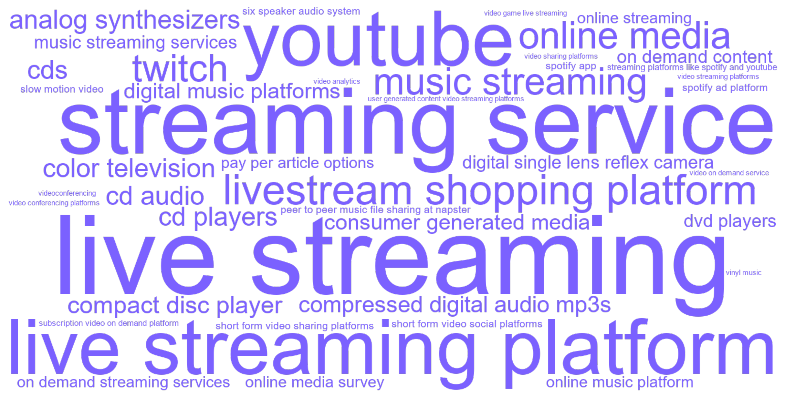
C.16.3 Articles
| Year | Full citation | Technology / technologies | Abstract |
|---|---|---|---|
| 2026 | Osgouei A, Ching A, Ratchford B, Tehrani S. Estimating Position and Social Influence Effects in Online Search. Marketing Science. 2026;63:. doi:10.1287/mksc.2023.0392 | online music platform | This paper contributes to the literature on structural modeling of online consumer search by incorporating both product position and social influence effects (e.g., product popularity) while allowing consumers to select multiple items per search and learn adaptively about their match with the platform. Disentangling the product position and popularity effects is challenging because they are typically highly correlated in field data. To address this, we leverage a publicly available data set from a field experiment conducted on an online music platform. The experimental design motivates a two-step estimation procedure to aid identification. We also introduce a content-based filtering method to predict individual download probability for all products, including those not sampled in the experiment. Combining this download decision model with our structural search model, we conduct counterfactual experiments that show (i) revealing product popularity and sorting products accordingly improves consumer efficiency by reducing search effort and increasing downloads; (ii) random sorting combined with product popularity disclosure stimulates more search activity, potentially boosting advertising revenue; and (iii) sorting based on personalized ranking with displayed product popularity enhances engagement by increasing both downloads and search efficiency. |
| 2026 | Wu M, Ham S. More Ads, More Viewers? Analyzing Behavioral Shifts from Advertising Permissions to Live Streaming Consumption. Journal Of Marketing. 2026;69:96-114. doi:10.1177/00222429251363144 | live streaming platform | There has been little exploration of how audience content consumption may change in response to advertising permissions on live streaming platforms. Brands use ads to generate revenue through ad exposure, but is this benefit thwarted by the reduction of audience consumption of content? Using a dataset containing over 12 million observations in the live streaming space and a difference-in-differences estimation approach, the authors study the effects of a policy intervention by a live streaming platform that provided (some) streamers the ability to display midroll advertisements. Although the ad avoidance literature infers that audiences view ad-supported content unfavorably, the results of this study indicate that providing the mere ability to introduce midroll advertisements has a notable positive effect on live streaming content consumption (average viewership and total hours watched). The authors discover that a viable explanation for this response is through increases in broadcasting airtime, stream frequency (somewhat), and quality by streamers after the intervention, as these adjustments are drastically easier to implement in a live streaming setting than in more traditional forms of media. The authors further explore heterogeneity in these effects in relation to initial streamer success, streaming tenure, content activity, culture (of the streamer and audience), and impact across time. |
| 2026 | Liu L, Fang J, Ji Z. Posture as information: Streamer postures and the purchase of micro and small enterprise resellers in livestreaming. Journal Of The Academy Of Marketing Science. 2026;99:254-280. doi:10.1007/s11747-025-01117-1 | live streaming | Despite the growing prominence of livestreaming, the influence of streamer postures on sales performance remains underexplored. Grounded in mental imagery theory, this study examines how the richness and intensity of streamer postures affect sales performance. Utilizing a novel dataset of approximately 5,223,701 frames from 423 livestreaming videos across eight industry categories on a leading livestreaming platform, this study employs deep learning techniques to extract posture characteristics. An econometric model is then applied to evaluate their impact on sales performance. The results indicate that both the richness and intensity of streamer postures positively drive sales performance, with these effects further enhanced by a higher proportion of descriptive speech acts by the streamer. These findings offer practical implications for livestreaming platforms, brand companies, and streamers aiming to improve promotional strategies targeted at micro and small enterprise resellers. |
| 2026 | Liu Z, Zhang W, Liu X, Muller E, Xiong F. Predicting livestream shopping success. International Journal Of Research In Marketing. 2026;:. doi:10.1016/j.ijresmar.2025.12.002 | livestream shopping platform | Despite the popularity of the livestream shopping industry—projected to surpass $830 billion in China and $68 billion in the U.S. by 2026—research on identifying the factors that drive success in this industry remains scarce, primarily because of the complexity of this environment. In this study, we use data from Taobao Live, the largest livestream shopping platform, to predict the success of sellers hosting livestream sessions. We develop a scoring model using a comprehensive set of livestream strategies and metrics, including session strategies, product assortment strategies, livestream content metrics, and engagement metrics. We find that incorporating session and assortment strategies and livestream content and engagement metrics improves the accuracy of sales performance predictions by 25.6%. Additionally, we identify the key strategies and metrics that are most predictive of sales performance. The proposed predictive framework not only helps in identifying promising sellers but also enhances the understanding of the complex dynamics of the livestream shopping ecosystem, providing valuable insights for stakeholders such as investors, lenders, suppliers, and platform operators. © 2026 The Authors. |
| 2026 | Qian K, Xie Y. The Power of Star Creators: Evidence from the Live Streaming Industry. Journal Of Marketing Research. 2026;34:149-166. doi:10.1177/00222437251359163 | live streaming platform | In this article, the authors examine the impact of star creator exits on digital content markets, leveraging exogenous events on Twitch. Using a synthetic difference-in-differences approach, they estimate the causal effects of star creators' exits from the live streaming platform. Their findings reveal that, at the live streaming category level, the exit of a star creator leads to a sizable decrease in both content provision and consumption within the star creator's focal category. At the individual creator level, the effects are heterogeneous, varying by the creator's audience size and contractual status with the platform. Major creators reduce their content provision, while micro creators maintain their streaming activity, though both groups experience a decline in viewership. Additionally, contracted creators tend to sustain their content provision levels following a star creator's exit, whereas noncontracted creators exhibit a significant decline. Lastly, the authors find that the impact of a star creator's departure persists for several months, indicating a lasting effect at both the category and individual levels. |
| 2026 | Cheng M, Ofek E, Yoganarasimhan H. The Value of Silence: The Effect of UMG's Licensing Dispute with TikTok on Music Demand. Marketing Science. 2026;75:. doi:10.1287/mksc.2024.1170 | streaming platforms like spotify and youtube | Social media platforms like TikTok have transformed how music is discovered, consumed, and monetized. This study examines the implications of the dispute between TikTok and Universal Music Group (UMG), which resulted in UMG removing its music from TikTok from February to May 2024. UMG claimed that TikTok's compensation was inadequate because consumption of its tracks on the platform potentially reduced revenue that could be generated elsewhere. Conversely, TikTok argued that their compensation was appropriate, emphasizing the promotional and discovery benefits for artists. To examine the validity of these conflicting viewpoints, we conduct a Difference-in-Differences analysis, using tracks from Sony and Warner as a control group. We generally find that removing UMG music from TikTok did not significantly alter the overall demand for UMG tracks on streaming platforms like Spotify and YouTube. However, there is significant heterogeneity across tracks; previously available tracks on TikTok experienced a 2\%-3\% increase in consumption when removed, indicating a substitution effect, predominantly encompassing more popular tracks from well-known artists. Conversely, UMG tracks not previously available on TikTok saw a 1\%-3\% decrease in streams, indicating a complementarity effect, encompassing mainly less popular tracks from lesser-known artists. Further analysis suggests that the complementarity effect is driven by TikTok's role in promoting and enabling discovery of artists with a partial presence on the platform. An economic impact analysis shows that TikTok significantly undercompensates UMG, aligning with the terms of a new licensing agreement between the parties. This study provides valuable managerial implications for music labels, social media platforms, streaming services, and artists. |
| 2026 | Gu Z, Yue H, Bao W, Liu H. Using consumption emotional features to predict web-show viewership. Journal Of The Academy Of Marketing Science. 2026;72:135-163. doi:10.1007/s11747-025-01094-5 | video streaming platforms | Today an increasing number of TV shows and movies are released on online video streaming platforms. This study proposes a forecasting modeling framework that uses measures of a show's consumption emotional features, or viewer sentiments triggered by the show's production emotional features such as plot, as predictors to forecast a web show's viewership. Our forecasting modeling framework has three components: feature construction, feature selection through in-sample prediction, and out-of-sample forecasting. In feature construction, we take advantage of the increasingly popular live commenting function in video streaming, which allows viewers to post spontaneous, visceral comments while watching. We utilize machine learning techniques to process the voluminous, unstructured live comment data to form ``emotion waves,'' which depict the evolution in viewers' moment-to-moment sentiments throughout the show. We characterize emotion waves to form measures of consumption emotional features. We separately characterize positive and negative emotion waves, as well as their relative positions, and also separately characterize emotion waves in different narrative segments of a show. In feature selection, we use an in-sample prediction model to verify our proposed measures and use only key measures with significant impacts to build the forecasting model. Lastly, in out-of-sample forecasting, we show that a small number of key measures formed over a small sample of live comments available shortly after a show's release can effectively forecast the show's viewership accumulated in an extended period after its release. |
| 2026 | De M M, Mamadehussene S, Ferreira P. When Less Is More: Content Strategies for Subscription Video on Demand. Marketing Science. 2026;7:. doi:10.1287/mksc.2023.0106 | subscription video on demand platform | We examine how the release strategy of shows influences user engagement and subscription rates at a video-on-demand platform, using results from a randomized field trial. Although releasing all episodes at once attracts more consumers to the platform when shows premiere, a gradual (Drip) release schedule fosters more platform engagement and content exploration. In our empirical context, users in the Drip release group were 48\% more likely to continue using the platform compared with those who received content all at once. The effectiveness of each release strategy depends on the viewing preferences of consumers. Although most users benefited from the Drip release, its impact diminished for extreme binge watchers. Our findings suggest that release strategies play an important role in the success of a subscription video-on-demand platform. We provide real-world evidence that gradually releasing content increases consumer searches, triggering substantially higher subscription rates. Our results help rationalize why content distributors are returning to drip-style release schedules, diverging from the all-at-once strategy popularized by Netflix in 2013. |
| 2025 | Wlomert N, Papies D, Van H H. Driving Music Demand in the Age of Streaming: Understanding the Heterogeneity in Curated Playlist Effectiveness. Journal Of Marketing. 2025;49:. doi:10.1177/00222429251395986 | music streaming | The shift from physical music consumption to online music streaming has fundamentally transformed the market for recorded music, giving consumers access to millions of songs on demand. Because streaming platforms pay artists and labels on a per-play basis, sustained listening and effective discovery have become essential for generating meaningful revenue. With traditional marketing losing relevance for recorded music, curated collections in the form of playlists have emerged as a potentially vital tool for labels to lift streaming demand. As a result, labels have started to deploy playlist marketing by either curating their own playlists or targeting influential playlists curated by others. However, the success factors behind the impact of playlists on song demand remain insufficiently understood. An analysis of 200,455 quasi-experiments where songs are listed on playlists and later delisted shows an average listing effect of 8.5\% more global streams and a carryover effect of 4\% after delisting. Although these effects are highly heterogeneous, they can be systematically explained by playlist design characteristics, including playlist popularity, the song's prior playlist exposure, the fit between the song and playlist, curator identity, and the curation approach. These findings empower labels to deploy more informed playlist marketing to lift streaming revenue. |
| 2025 | Liang Y, Chen X, Han S, Zhang , Jinglong J, Chen Y. Is the Money Spent on Short-Form Video Social Platforms Worth It? The Role of Advertising Spillover in a Large-Scale Randomized Field Experiment on ByteDance. Marketing Science. 2025;28:. doi:10.1287/mksc.2023.0575 | short form video social platforms | Short-form videos have taken over social media and attracted attention from advertisers. But doubts remain about the advertising efficacy on these platforms. In a large-scale randomized experiment on ByteDance, we show that advertising spillover plays a pivotal role in the advertising campaign. Most of the advertising effect comes from advertising spillover beyond ByteDance with exposed users being eight times more likely to convert from outside than from within ByteDance. When considering advertising spillover outside ByteDance, the average cost per conversion, which brands commonly use to evaluate the cost of campaigns, shrinks by 5 or 25 times, depending on the methods used to calculate it. Advertising spillover can also affect a brand's targeting strategy. Whereas commonly used demographic variables by the automobile brand are effective for target marketing with only platform data, they are not when considering advertising spillover outside ByteDance. Instead, a behavioral variable proposed herein (prior brand home page visits) effectively moderates the advertising effect but has no impact when ignoring advertising spillover in the analysis. Our findings underscore the importance of information sharing between platforms and brands, which in practice is typically not the case. |
| 2025 | Li N, Haviv A, Lovett M. Opposing Influences of YouTube Influencers: Purchase and Usage Effects in the Video Game Industry. Marketing Science. 2025;52:894-915. doi:10.1287/mksc.2021.0242 | youtube | Influencers promote firms' products by posting content such as videos on social media platforms. For entertainment products, these posts could substitute or complement demand for the original entertainment product. We study video games, the largest entertainment product category comprising one third of YouTube traffic, using a large daily panel data set on thousands of video games. Leveraging a supply shock on YouTube called the ``Adpocalypse,'' we measure the impact of influencer videos on purchase and usage of games. We provide plausibly causal evidence that, on average, influencer video posts substitute to video games for purchases but complement for usage. We also find that influencer effects differ across firms. Managers can use these results to align the influencer effects they face with their revenue models, such as using in-game purchases or a subscription model when facing complements on usage. |
| 2025 | Huang Y, Morozov I. The Promotional Effects of Live Streams by Twitch Influencers. Marketing Science. 2025;30:916-932. doi:10.1287/mksc.2022.0400 | twitch, video game live streaming | We study the effect of video game live streaming on the popularity of broadcasted games. To this end, we collect novel high-frequency data from Twitch.tv, a major video game streaming platform, by monitoring live streams of 60,000 popular streamers every 10 minutes for eight months. To estimate the effect of live streaming, we leverage these high-frequency data and isolate plausibly exogenous within-day variation in the broadcast hours of top influencers. We find that the number of people watching a game in live streams increases the concurrent number of people playing it with an elasticity of 0.027, a moderate effect that dissipates within a few hours. Investigating the mechanisms behind live streaming effects, we find evidence that live streams make consumers aware of games by lesser-known publishers and reveal the quality and match value of games to consumers. Our back-of-the-envelope calculations suggest that, despite the general excitement about live stream promotions in this industry, only about one sixth of all games profit from sponsored live streams. |
| 2025 | Pachali M, Datta H. What Drives Demand for Playlists on Spotify?. Marketing Science. 2025;29:. doi:10.1287/mksc.2022.0273 | spotify app | We provide estimates of the drivers of playlist followers on Spotify. We base our analysis on a unique panel data set for 30,000+ popular playlists and combine it with data on how prominently these playlists are featured in the Spotify app. Using two-way fixed effects and staggered synthetic difference in difference models, we compare the short-term effect of two important demand factors in our data-featuring playlists on Spotify's Search Page and adding songs by exceptionally popular major label artists to playlists. We find that users prefer to follow playlists featured in the app. According to our estimates, being featured on the Search Page raises daily playlist followers by 0.95\%-which is about two times larger than the effect on followers of including a song by an exceptionally popular major label artist (0.45\%). Our examination of playlist demand has two important implications. First, Spotify can effectively guide user attention to certain playlists, supporting industry executives' and artists' concerns that the platform has the potential to favor some producers by selectively promoting their content. Second, popular artists signed with major labels play an important role in attracting followers to playlists on Spotify. |
| 2024 | Tushnet R. Comment on ``Frontiers: The Interplay of User-Generated Content, Content Industry Revenues, and Platform Regulation: Quasi-Experimental Evidence from YouTube''. Marketing Science. 2024;6:. doi:10.1287/mksc.2023.0339 | youtube | This useful article about the effects of music on YouTube on consumption of the same music elsewhere should be understood for what it is: An empirical investigation of YouTube's effects. It allows no conclusions about ``safe harbors'' both because YouTube was not relying on the safe harbor regime either before or after the relevant policy change and because, as YouTube's lack of reliance shows, the safe harbor regime primarily protects thousands of websites that don't behave like YouTube. Under the European Union's new Article 17, sites like YouTube are now required to negotiate with copyright owners to license works uploaded by users who do not own the copyright thereto. YouTube, however, was already doing this. The article [Wlo center dot mert N, Papies D, Clement M, Spann M (2023) Frontiers: The interplay of user-generated content, content industry revenues, and platform regulation: Quasi-experimental evidence from YouTube. Marketing Sci., ePub ahead of print October 27, https://doi.org/10.1287/mksc.2022.0080] has implications for what music companies should ask for in these negotiations. However, it would be a mistake to generalize from YouTube to the Internet as a whole. |
| 2024 | Mangus S, Shi H, Folse J, Jones E, Sridhar S. Communicating with B2B buyers after ``Dropping the Ball'': Using digital and non-digital communication formats to recover from salesperson transgressions. International Journal Of Research In Marketing. 2024;76:194-219. doi:10.1016/j.ijresmar.2024.01.005 | videoconferencing | Salespeople are inundated with new sales enablement tools and digital communication options daily, creating new ways to communicate with customers and navigate the inevitable case of ``dropping the ball.'' This research investigates how different communication formats cushion the blow and minimize damage from salesperson transgressions. Study 1 utilizes firm -provided communication and performance data paired with survey data from business -to -business (B2B) customers to find that the use of synchronous communication (face-to-face (F2F) in contrast to email) mitigates the negative impact of relational transgression but has no such effect on the impact of sales process transgression. Study 2 utilizes an experiment with B2B professionals to identify that synchronous communication (videoconferencing and F2F in contrast to email) improves relationship satisfaction and customer positive word of mouth (PWOM) more for relational than sales process transgressions. Study 3 extends these findings with an experiment exploring additional communication formats (phone and text) while exploring perceived salesperson competence and warmth as mediating mechanisms in the model. Taken together, F2F or synchronous communications should not be viewed as the unilaterally preferred communication format during transgressions, and salespeople should balance communication needs with resource constraints. (c) 2024 Elsevier B.V. All rights reserved. |
| 2024 | Beverland M, Fernandez K, Eckhardt G. Consumer Work and Agency in the Analog Revival. Journal Of Consumer Research. 2024;73:719-738. doi:10.1093/jcr/ucae003 | analog synthesizers, vinyl music | Why do consumers choose difficult analog technologies over their labor-saving digital counterparts? Through ethnographic investigations of three once defunct analog technologies that have experienced a resurgence (vinyl music, film photography, and analog synthesizers), we explore how the act of consumer work enables consumers to experience shifting dimensions of agency. We utilize the theoretical lens of serious leisure to introduce a four-stage work process (novice, apprentice, craft, and design) in which the experience of agency is dependent on the shifting relations between user, object, and context. The four stages are cumulative and conjunctive, representing the development of skills toward mastery while also being connected via three transition mechanisms (contextualization, schematization, and hypothesization) that address agency-alienation tensions. The transition through these mechanisms is necessary to sustain emotional engagement in consumer work. Our contribution lies in demonstrating the myriad of ways in which consumer work as serious leisure generates different experiences of agency and alienation and the ways in which consumers can sustain engagement in their work. |
| 2024 | Chou C, Kumar V. Estimating Demand for Subscription Products: Identification of Willingness to Pay Without Price Variation. Marketing Science. 2024;39:797-816. doi:10.1287/mksc.2021.0426 | music streaming | We demonstrate how to obtain the distribution of consumer willingness to pay (WTP) for digital subscription products, where consumers pay a fixed price each period for potentially unlimited usage, for example, music streaming like Spotify. Typically, in such applications, usage data are observed and is critically valuable for the method here. We demonstrate how variation in usage and subscription choice together can identify the WTP distribution in the absence of price variation. Our framework accommodates and builds upon a range of utility specifications for usage, which is related to subscription decisions. We provide the conditions required on exogenous variation impacting usage, and prove how these lead to identification of the WTP distribution. We also investigate the conditions under which usage variation is not equivalent to price variation. We apply our method to an empirical application using the data from a music streaming service. Using the estimated WTP distribution, we obtain the revenue maximizing prices for different consumer segments. |
| 2024 | Yang G, Zhang Y, Liu H. Frontiers: Pirating Foes or Creative Friends? Effects of User-Generated Condensed Clips on Demand for Streaming Services. Marketing Science. 2024;41:. doi:10.1287/mksc.2023.0031 | short form video sharing platforms | Short -form video -sharing platforms have seen phenomenal growth in recent years. One type of video that often goes viral on such platforms is the condensed clips derived from existing full-length video content. The traditional entertainment industry has strongly criticized this new form of user -generated derivative content owing to the potential for infringement on copyright owners' exclusive rights and de facto theft of viewers from original works. However, little is known of the actual impact of condensed clips on the demand for corresponding original works. In this study, we seek to identify such impact with the help of an exogenous boycott event in April 2021 that forced Chinese TikTok to remove condensed clips more proactively. Our results indicate that their removal had reduced the demand for corresponding full-length original works on a major video streaming platform by approximately 3\%. In other words, condensed clips serve as friends, rather than foes, of streaming services. Further analyses suggested that positive spillover effects resulted from the fact that condensed clips could enhance the visibility of original works, and such effects were stronger if the original work was of higher quality or had a more fascinating storyline. Our results offer rich managerial and policy insights. |
| 2024 | Wlomert N, Papies D, Clement M, Spann M. Frontiers: The Interplay of User-Generated Content, Content Industry Revenues, and Platform Regulation: Quasi-Experimental Evidence from YouTube. Marketing Science. 2024;33:. doi:10.1287/mksc.2022.0080 | user generated content video streaming platforms | An ongoing debate among firms, rightsholders, particularly in the music industry, and policymakers in the United States and the European Union concerns potential changes to the regulation of user-generated content (UGC) video streaming platforms (e.g., YouTube). Currently, safe harbor provisions protect platforms from liability for copyright infringing content uploaded by users, and requirements for compensating rightsholders for UGC are weak, resulting in comparatively low payouts. At the same time, it is unclear how a change in these regulations would affect consumer demand for this content on other platforms with higher payouts (e.g., Spotify), that is, whether UGC platforms stimulate or displace demand on other platforms. We study a quasi-experiment that occurred when numerous songs became available as UGC on YouTube after an agreement between You Tube and the German royalty collecting society. Our analysis of an unprecedented data set covering 600,000 songs by 38,000 artists reveals an intriguing finding: Although UGC availability stimulates demand in other streaming channels for most songs, cannibalization occurs for recent releases and hit releases, turning the overall revenue effect negative. We discuss how policymakers can use these findings to understand the implications of changes in regulation, and how labels and artists can decide which content to block or allow on UGC platforms. |
| 2024 | Huang L, Pricer L. How video conferencing promotes preferences for self-enhancement products. International Journal Of Research In Marketing. 2024;75:93-112. doi:10.1016/j.ijresmar.2023.09.001 | video conferencing platforms | The pandemic has led to a significant increase in the use of video conferencing platforms such as Zoom, Google Meet and Microsoft Teams. Yet little is known about the impact of video conferencing on subsequent consumer decisions. Across six studies, we examine the effects of video conferencing in both consumption (e.g., sales) and nonconsumption (e.g., school and work) contexts and find that video conferencing can trigger greater interest in products that can enhance the self - physically, intellectually, and/or mentally - due to heightened social appearance anxiety. This effect is attenuated when technology allows users to reduce social appearance anxiety (e.g., the use of ring lights or the ability to turn off web cameras) but accentuated when social anxiety is increased (e.g., the use gallery/ speaker views) and is more pronounced among consumers who are low in self-esteem. (c) 2023 Elsevier B.V. All rights reserved. |
| 2024 | Schauerte N, Schauerte R, Becker M, Hennig-Thurau T. Making new enemies: How suppliers' digital disintermediation strategy shifts consumers' use of incumbent offerings. Journal Of The Academy Of Marketing Science. 2024;97:672-694. doi:10.1007/s11747-023-00963-1 | streaming service | Digitalization can help suppliers cut ties with their intermediaries and offer products directly to consumers. Such a digital disintermediation strategy likely affects both digital and non-digital incumbents in ways difficult to predict by current marketing theory. In our empirical investigation of digital disintermediation in the multibillion-dollar filmed home entertainment industry, we draw on consumers' viewing behaviors before and after the launch of the streaming service Disney+. The findings show that access to Disney+ substantially increased the streaming category in the short run, accelerating the demise of non-digital linear television. However, only the new digital service benefited, while streaming incumbents suffered negative outcomes, despite public claims to the contrary. In addition to foreshadowing Netflix's subsequent difficulties in defending its leadership position, these findings offer suppliers successful ways to liberate themselves from powerful intermediaries and help incumbents brace for the competitive upheavals that a digital disintermediation strategy is likely to trigger. |
| 2024 | Lee H, Broniarczyk S, Zheng J, (Frank) F. Mapping collective consciousness to consumer research: In-person to virtual social presence. Journal Of Consumer Psychology. 2024;74:694-704. doi:10.1002/jcpy.1435 | live streaming | Shteynberg's (Journal of Consumer Psychology, 2024) work on collective consciousness offers unique and meaningful insights into consumer behavior by emphasizing a ``we-representation'' that is comprised not of a self-aware ``I'' and an external ``you'' but rather complete immersion as a unified ``we''. In this commentary, we situate collective consciousness within existing social presence research in consumer behavior and discuss its potential to expand the scope of social presence research. Specifically, we utilize a social presence framework that highlights the type of co-presence (in-person vs. virtual) and the extent of interactivity (interactive vs. passive) discussing the psychological mechanisms and linkage to collective consciousness. In addition to discussing shared consumption and shared decision-making, we assess the implications of collective consciousness for consumer contexts facilitated by virtual technologies: fake news, live streaming, virtual reality, cryptocurrencies, and crowdfunding. We conclude by highlighting future avenues for integrating collective consciousness into consumer psychology research. |
| 2024 | Lu J, Bradlow E, Hutchinson J. More Likely to Pay but Less Engaged: The Effects of Switching Online Courses from Scheduled to On-Demand Release on User Behavior. Journal Of Marketing. 2024;71:63-88. doi:10.1177/00222429241227145 | on demand content | Following trends in entertainment streaming services, online educational platforms are increasingly offering users flexible ``on-demand'' content options. It is important to understand how the timing of content release affects learning behaviors and firm revenue drivers. The current research studies over 67,000 users taking a marketing course before versus after a natural experiment in which the platform switched the course from a scheduled weekly-release format to an on-demand format with all content immediately available. The switch to on-demand positively impacted short-term firm revenue by increasing the number and proportion of certificate-paying users, suggesting that on-demand content can attract a broader set of consumers who value flexibility. On the downside, the switch resulted in users exhibiting lower lecture completion rates and quiz performance and taking fewer additional business courses on the platform, representing a long-term cost. The results were robust to propensity score matching and stratification. The analyses also revealed that on-demand content enabled learning patterns that deviated from a standard evenly paced schedule, including ``strategic'' binge learning and stretching out engagement past the recommended course period. Thus, while on-demand formats can boost revenues by bringing in more paying users, managers must consider new strategies for maintaining performance and engagement levels within these environments. |
| 2024 | Ahmadi I, Abou N N, Skiera B, Maleki E, Fladenhofer J. Overwhelming targeting options: Selecting audience segments for online advertising. International Journal Of Research In Marketing. 2024;47:24-40. doi:10.1016/j.ijresmar.2023.08.004 | spotify ad platform | Even as online advertising continues to grow, a central question remains: Who to target? Yet, advertisers know little about how to select from the hundreds of audience segments for targeting (and combinations thereof) for a profitable online advertising campaign. Utilizing insights from a field experiment on Facebook (Study 1), we develop a model that helps advertisers solve the cold -start problem of selecting audience segments for targeting. Our model enables advertisers to calculate the break-even performance of an audience segment to make a targeted ad campaign at least as profitable as an untargeted one. Advertisers can use this novel model to decide whether to test specific audience segments in their campaigns (e.g., in randomized controlled trials). We apply our model to data from the Spotify ad platform to study the profitability of different audience segments (Study 2). Approximately half of those audience segments require the click -through rate to double compared to an untargeted campaign, which is unrealistically high for most ad campaigns. Our model also shows that narrow segments require a lift that is likely not attainable, specifically when the data quality of these segments is poor. We confirm this theoretical finding in an empirical study (Study 3): A decrease in data quality due to Apple's introduction of the App Tracking Transparency (ATT) framework more negatively affects the clickthrough rate of narrow (versus broad) audience segments. (c) 2023 The Author(s). Published by Elsevier B.V. This is an open access article under the CC BY license (http://creativecommons.org/licenses/by/4.0/). |
| 2024 | Wloemert N, Papies D, Clement M, Spann M. Rejoinder: User-Generated Content Availability and Platform Regulation. Marketing Science. 2024;8:. doi:10.1287/mksc.2023.0369 | youtube | Tushnet [Tushnet R (2023) Comment on ``Frontiers: The interplay of user-gener-ated content, content industry revenues, and platform regulation: Quasi-experimental evi-dence from YouTube''. Marketing Sci., ePub ahead of print October 27, https://doi.org/10. 1287/mksc.2023.0339] provides a commentary on Wlo center dot mert et al. [Wlo center dot mert N, Papies D, Clement M, Spann M (2023) Frontiers: The interplay of user-generated content, content industry revenues, and platform regulation: Quasi-experimental evidence from YouTube. Marketing Sci., ePub ahead of print October 27, https://doi.org/10.1287/mksc.2022.0080], who analyzed the quasi-experiment that occurred when numerous songs became avail-able as user-generated content (UGC) on YouTube, following an agreement between You -Tube and the German collecting society GEMA. Tushnet's thoughtful commentary centers around the scope of legal protection that UGC platforms enjoy, and whether the situation examined in Wlo center dot mert et al. qualifies as a ``legal safe harbor.'' In our rejoinder, we clarify the study's relevance for questions concerning platform regulation, highlight the implications of these regulatory aspects for platforms' strong bargaining power, as reflected in comparatively low payouts to rightsholders, and discuss how the sampling versus cannibalization effects that we study impact market outcomes for different stake-holders under these market conditions. |
| 2023 | Meyn J, Kandziora M, Albers S, Clement , Michel M. Consequences of platforms' remuneration models for digital content: initial evidence and a research agenda for streaming services. Journal Of The Academy Of Marketing Science. 2023;60:114-131. doi:10.1007/s11747-022-00875-6 | streaming service | Nowadays, platforms in many industries offer content for a (monthly) flat rate (e.g., music streaming). While flat rates are efficient in reducing transaction costs for administering customers, platforms' rules for remunerating content right holders are crucial for royalty allocation and, as a result, heavily discussed in several industries. The music industry's business practices could be on the verge of their next disruption. There is an ongoing heated debate with respect to how the income of flat rates through streaming services should be allocated to right holders (labels and artists). This research investigates aspects of the supply and demand side effects as well as the resulting monetary consequences of changing the currently applied proportional-to-usage remuneration policy (pro rata) to a user-centric policy. Using individual-level data from 3,326 participants and data from Spotify's API, we empirically quantify the monetary consequences of this change for the music industry. Depending on the remuneration system, we find a substantial reallocation of nearly 170 million euro per year at Spotify. We discuss demand and supply-side consequences that may change the way music is currently produced and consumed. We conclude with a research agenda on the impact of business conventions for users, platforms, and artists in the music streaming industry. |
| 2023 | Simonov A, Ursu R, Zheng C. Suspense and Surprise in Media Product Design: Evidence from Twitch. Journal Of Marketing Research. 2023;71:1-24. doi:10.1177/00222437221108653 | twitch | The authors quantify the relative importance of beliefs-based suspense and surprise measures in the entertainment preferences of viewers of Twitch, the largest online video game streaming platform. Using detailed viewership and game statistics data from broadcasts of tournaments of a popular video game, Counter-Strike: Global Offensive, the authors compute measures of suspense and surprise for a rational viewer. They then develop and estimate a stylized utility model that underlies viewers' decisions to both join and leave a game stream. The method used enables the authors to causally identify the direct effect of suspense and surprise on viewers' utilities, separating it from other sources of entertainment value (e.g., team skill) and from indirect/supply-side effects (e.g., word of mouth, advertising). The authors show that suspense enters a viewer's utility but find little evidence of the effect of surprise. The magnitudes imply that a one-standard-deviation increase in round-level suspense decreases the probability of leaving a stream by .27 percentage points. The authors find no detectable effect of suspense and surprise on the decision to join a stream, ruling out indirect effects. Variation in suspense levels explains 9.2\% of the observed range of the evolution of a stream's viewership. The authors use these estimates to evaluate counterfactual game and platform designs. They show that historical updates to Counter-Strike: Global Offensive game rules have increased tournament viewership by 4.1\%, that rules can be further modified to increase viewership, and that alternative platform designs that inform joining users of games' scores will additionally increase overall viewership by 1.3\%. Together, these results illustrate the value of the authors' method as a general tool that content producers and platforms can use to evaluate and design media products. |
| 2023 | Chen L, Yan Y, Smith A. What drives digital engagement with sponsored videos? An investigation of video influencers' authenticity management strategies. Journal Of The Academy Of Marketing Science. 2023;109:198-221. doi:10.1007/s11747-022-00887-2 | video sharing platforms | Sponsored videos have rapidly emerged as an important marketing tool as video sharing platforms and the popularity of video influencers have grown. However, little research explores how sponsored videos' design strategies affect viewer engagement. Using field data, this study highlights influencers' authenticity dilemma in sponsored video design and tests which features drive digital engagement. Specifically, this study conceptualizes and empirically tests a comprehensive framework, involving passion- and transparency-based strategies as well as platform- and brand-factors, to determine how influencers can best manage the authenticity dilemma. Results show that explicitly disclosing brand sponsorship, alone, and in combination with platform-generated disclosure, positively impacts digital engagement, indicating an evolution in consumer persuasion knowledge. Early brand appearance, high video customization, and influencers' subjective endorsements, such as sharing personal experiences or opinions about the sponsored product, impair sponsored videos' digital engagement. In addition to contributing theoretical insights on authenticity management strategies and sponsorship disclosure in influencer videos, this research offers practical recommendations to influencers on how to design more engaging sponsored videos. |
| 2022 | Bharadwaj N, Ballings M, Naik P, Moore , Miller M, Arat M. A New Livestream Retail Analytics Framework to Assess the Sales Impact of Emotional Displays. Journal Of Marketing. 2022;61:27-47. doi:10.1177/00222429211013042 | livestream shopping platform | At the intersection of technology and marketing, this study develops a framework to unobtrusively detect salespeople's faces and simultaneously extract six emotions: happiness, sadness, surprise, anger, fear, and disgust. The authors analyze 99,451 sales pitches on a livestream retailing platform and match them with actual sales transactions. Results reveal that each emotional display, including happiness, uniformly exhibits a negative U-shaped effect on sales over time. The maximum sales resistance appears in the middle rather than at the beginning or end of sales pitches. Taken together, the results show that in one-to-many screen-mediated communications, salespeople should sell with a straight face. In addition, the authors derive closed-form formulae for the optimal allocation of the presence of a face and emotional displays over the presentation span. In contrast to the U-shaped effects, the optimal face presence wanes at the start, gradually builds to a crescendo, and eventually ebbs. Finally, the study shows how to objectively rank salespeople and circumvent biases in performance appraisals, thereby making novel contributions to people analytics. This research integrates new types of data and methods, key theoretical insights, and important managerial implications to inform the expanding opportunity that livestream e-commerce presents to marketers to create, communicate, deliver, and capture value. |
| 2022 | Sim J, Cho D, Hwang Y, Telang R. Frontiers: Virus Shook the Streaming Star: Estimating the COVID-19 Impact on Music Consumption. Marketing Science. 2022;31:19-32. doi:10.1287/mksc.2021.1321 | music streaming services, streaming service | Many have speculated that the recent outbreak of COVID-19 has led to a surge in the use of online streaming services. However, this assumption has not been closely examined for music streaming services, the consumption patterns of which can be different from video streaming services. To provide insights into this question, we analyze Spotify's streaming data for the weekly top 200 songs for two years in 60 countries between June 2018 and May 2020, along with varying lockdown policies and detailed daily mobility information from Google. Empirical evidence shows that the COVID-19 outbreak significantly reduced music streaming consumption in many countries. We also find that countries with larger mobility decreases saw more notable downturns in streaming during the pandemic. Further, we reveal that the mobility effect was attributable to the complementarity of music consumption to other activities and likely to be transient rather than irreversible. Alternative mechanisms, such as unobservable Spotify-specific factors, a demand shift from top-selling songs to niche music, and supply-side effects, did not explain the decline in music consumption. |
| 2021 | Zhou M, Chen G, Ferreira P, Smith M. Consumer Behavior in the Online Classroom: Using Video Analytics and Machine Learning to Understand the Consumption of Video Courseware. Journal Of Marketing Research. 2021;78:1079-1100. doi:10.1177/00222437211042013 | video analytics | Video is one of the fastest growing online services offered to consumers. The rapid growth of online video consumption brings new opportunities for marketing executives and researchers to analyze consumer behavior. However, video also introduces new challenges. Specifically, analyzing unstructured video data presents formidable methodological challenges that limit the use of multimedia data to generate marketing insights. To address this challenge, the authors propose a novel video feature framework based on machine learning and computer vision techniques, which helps marketers predict and understand the consumption of online video from a content-based perspective. The authors apply this framework to two unique data sets: one provided by MasterClass, consisting of 771 online videos and more than 2.6 million viewing records from 225,580 consumers, and another from Crash Course, consisting of 1,127 videos focusing on more traditional education disciplines. The analyses show that the framework proposed in this article can be used to accurately predict both individual-level consumer behavior and aggregate video popularity in these two very different contexts. The authors discuss how their findings and methods can be used to advance management and marketing research with unstructured video data in other contexts such as video marketing and entertainment analytics. |
| 2021 | Lu S, Yao D, Chen X, Grewal R. Do Larger Audiences Generate Greater Revenues Under Pay What You Want? Evidence from a Live Streaming Platform. Marketing Science. 2021;53:964-984. doi:10.1287/mksc.2021.1292 | live streaming platform | As live streaming of events gains traction, pay what you want (PWYW) pricing strategies are emerging as critical monetization tools. We assess the viability of PWYW by examining the relationship between popularity (i.e., audience size) of a live streaming event and the revenue it generates under a PWYW scheme. On the one hand, increasing audience size may enhance voluntary payment/tips if social image concerns are important because larger audiences amplify the utility pertaining to social image. On the other hand, increasing audience size may reduce tips if gaining the broadcaster's reciprocal acts motivates tipping because larger audiences are associated with fiercer competition for reciprocity. To examine these trade-offs in the relationship between audience size and revenue under PWYW, we manipulate audience size by exogenously adding synthetic viewers in live streaming shows on a platform in China. The results reveal a mostly positive relationship between audience size and average tip per viewer, which suggests that social image concerns dominate seeking reciprocity. In support of herding, adding synthetic viewers also increases the number of real viewers. Social image concerns and herding together explain the finding that adding one additional viewer improves the tipping revenue per minute by approximately 0.01 yuan (1\% of the mean level). Further, famous female broadcasters who use recognition-related words frequently during the event benefit the most from an increase in audience size. Overall, the results indicate that revenues under PWYW do not scale linearly and support the relevance of social image concerns in driving individual payment decisions under PWYW. |
| 2021 | Lin Y, Yao D, Chen X. Happiness Begets Money: Emotion and Engagement in Live Streaming. Journal Of Marketing Research. 2021;64:417-438. doi:10.1177/00222437211002477 | live streaming | Live streaming offers an unprecedented opportunity for content creators (broadcasters) to deliver their content to consumers (viewers) in real time. In a live stream, viewers may send virtual gifts (tips) to the broadcaster and engage with likes and chats free of charge. These activities reflect viewers' underlying emotion and are likely to be affected by the broadcaster's emotion. This article examines the role of emotion in interactive and dynamic business settings such as live streaming. To account for the possibility that broadcaster emotion, viewer emotion, and viewer activities influence each other, the authors estimate a panel vector autoregression model on data at the minute level from 1,450 live streams. The results suggest that a happier broadcaster makes the audience happier and begets intensified viewer activities, in particular tips. In addition, broadcasters reciprocate viewer engagement with more smiles. Further analyses suggest that these effects are pronounced only after a live stream has been active for a while, and they manifest only in streams by broadcasters who have more experience, receive more tips, or are more popular in past live streams. These results help platforms and broadcasters optimize marketing interventions such as broadcaster emotion enhancement in live streaming and quantify the financial returns. |
| 2021 | Yin Y, Jia J, Zheng W. The Effect of Slow Motion Video on Consumer Inference. Journal Of Marketing Research. 2021;80:1007-1024. doi:10.1177/00222437211025054 | slow motion video | Video advertisements often show actors and influence agents consuming and enjoying products in slow motion. By prolonging depictions of influence agents' consumption utility, slow motion cinematographic effects ostensibly enhance social proof and signal product qualities that are otherwise difficult to infer visually (e.g., pleasant tastes, smells, haptic sensations). In this research, seven studies, including an eye tracking study, a Facebook Ads field experiment, and lab and online experiments-all using real ads across diverse contexts-demonstrate that slow motion (vs. natural speed) can backfire and undercut product appeal by making the influence agent's behavior seem more intentional and extrinsically motivated. The authors rule out several alternative explanations by showing that the effect attenuates for individuals with lower intentionality bias, is mitigated under cognitive load, and reverses when ads use nonhuman influence agents. The authors conclude by highlighting the potential for cross-pollination between visual information processing and social cognition research, particularly in contexts such as persuasion and trust, and they discuss managerial implications for visual marketing, especially on digital and social platforms. |
| 2019 | Wloemert N, Papies D. International heterogeneity in the associations of new business models and broadband Internet with music revenue and piracy. International Journal Of Research In Marketing. 2019;54:400-419. doi:10.1016/j.ijresmar.2019.01.007 | streaming service | Broadband Internet has fundamentally changed business models in many industries. In the music industry, for instance, old business models were challenged by illegal competitors, and broadband Internet has enabled value creation through new business models. The changes that established business models experienced in the wake of broadband Internet, however, differed vastly across national markets, and these differences are not well understood. We build a conceptual framework and study the extent to which differences in economic and cultural factors are associated with different market outcomes in the wake of the proliferation of broadband Internet. Thus, we compile two unique data sets from the music industry, comprising (1) revenue data for 36 countries and 22 years and (2) piracy data for 47 countries and >2 years. We use a Bayesian multilevel model to explore between-country heterogeneity in the associations between these variables and broadband Internet adoption and business model innovations. Our results show that the negative association between broadband Internet penetration and music revenue is weaker in high-income countries, where income restrictions are less likely to drive demand towards illegitimate piracy services. In terms of cultural factors, we find that a market's response to the introduction of broadband Internet is less negative in countries scoring high on Hofstede's individualism and uncertainty avoidance dimensions. Furthermore, we find that overall revenues only recover after the latest generation of streaming services (e.g., Spotify) has been introduced, and the adoption of these services is associated with lower levels of online music piracy. (C) 2019 Elsevier B.V. All rights reserved. |
| 2019 | Schulz P, Shehu E, Clement M. When consumers can return digital products: Influence of firm- and consumer-induced communication on the returns and profitability of news articles. International Journal Of Research In Marketing. 2019;61:454-470. doi:10.1016/j.ijresmar.2019.01.003 | pay per article options | The news industry is being massively disrupted by the digital distribution of news. Consequently, publishers have revised their business models and integrated pay-per-article options. To reduce pre-purchase uncertainty, consumers can use information from firm-induced (e.g., newsletters), or consumer-induced communication (e.g., likes). These communication activities avoid purchases with poor fit but also increase customer expectations. Consequently, their effect on sales, returns, and profitability is unclear. For digital products, these effects are even less clear because product quality is difficult to evaluate pre-purchase, and products can be returned at almost no cost, even after consumption. In this study, we investigate the effects of firm- and consumer-induced communication on digital returns in the context of news articles on a major online platform (Blendle). We rely on a multi-equation model to quantify the effect of firm- and consumer-induced communication activities (i.e., newsletter promotions sent out by the platform and consumer likes from readers) on sales and returns and calculate their profitability impact. Our results show.that newsletters decrease returns but do not significantly affect sales. In contrast, consumer likes have a twofold effect by increasing sales and decreasing returns. A simulation shows that both newsletters and likes increase profitability and that likes have a higher potential. Our results offer much needed guidance for online aggregators of digital products (e.g., audiobooks, e-books or news articles), as well as for online publishers based on pay-per-unit business models. (C) 2019 Elsevier B.V. All rights reserved. |
| 2018 | Datta H, Knox G, Bronnenberg B. Changing Their Tune: How Consumers' Adoption of Online Streaming Affects Music Consumption and Discovery. Marketing Science. 2018;39:5-21. doi:10.1287/mksc.2017.1051 | digital music platforms, online streaming | Instead of purchasing individual content, streaming adopters rent access to libraries from which they can consume content at no additional cost. In this paper, we study how the adoption of music streaming affects listening behavior. Using a unique panel data set of individual consumers' listening histories across many digital music platforms, adoption of streaming leads to very large increases in the quantity and diversity of consumption in the first months after adoption. Although the effects attenuate over time, even after half a year, adopters play substantially more, and more diverse, music. Relative to music ownership, where experimentation is expensive, adoption of streaming increases new music discovery. While repeat listening to new music decreases, users' best discoveries have higher play rates. We discuss the implications for consumers and producers of music. |
| 2017 | Eelen J, Ozturan P, Verlegh P. The differential impact of brand loyalty on traditional and online word of mouth: The moderating roles of self-brand connection and the desire to help the brand. International Journal Of Research In Marketing. 2017;72:872-891. doi:10.1016/j.ijresmar.2017.08.002 | online media | Marketers increasingly seek to build brand advocacy not only via traditional word of mouth (in-person WOM) but also by engaging their (loyal) customers via online media (eWOM). In a survey and three follow-up experiments, however, we show that brand loyalty is less positively related to spreading eWOM than in-person WOM (Studies 1-3). We find that loyal consumers' willingness to engage in eWOM increases when they are motivated to signal their identity through a brand (i.e., high self-brand connection in Studies 1-3) or to help a brand (Study 4). Our findings support the notion that online communication spreads faster and is less spontaneous and more deliberate than face-to-face communication. In turn, loyal consumers need strong motivation tied to the brand to engage in eWOM. (C) 2017 Elsevier B.V. All rights reserved. |
| 2016 | Ordanini A, Nunes J. From fewer blockbusters by more superstars to more blockbusters by fewer superstars: How technological innovation has impacted convergence on the music chart. International Journal Of Research In Marketing. 2016;39:297-313. doi:10.1016/j.ijresmar.2015.07.006 | cds, compressed digital audio mp3s | The pace of change in recorded music technology has accelerated faster than ever during the past two decades with the shift from analog to digital. Digital recordings provide consumers the unimpeded ability to access, sample, learn about, acquire, store, and share vast amounts of music as never before. Supporters of winner-take-all theory believe lower search and transaction costs brought about by digitization have led to greater convergence with fewer extraordinarily popular songs (blockbusters) and a smaller number of artists who perform them (superstars). Supporters of long-tail theory believe the same factors have led to less convergence and a greater number of songs and artists becoming blockbusters and superstars. This work pits these opposing predictions against each other empirically. More specifically, we examine how the number of songs and artists appearing annually on Billboard's Hot 100 singles chart has changed between 1974 and 2013 in relation to three major turning points in technology associated with digitization. These turning points mark consumers' shift: (1) from analog records and cassettes to digital audio with the advent of CDs., (2) from CDs to compressed digital audio MP3s, and (3) from P2P networks and illegal file sharing to legitimate online distributors of digital downloads. In general, we observe a growing winner-take-all effect for songs until the advent of MP3s in 1998, when this trend abated. This result appears largely due to greater convergence in the Top 10. The trend reverses itself as the number of songs making the chart increases steadily after the launch of legitimate online music sellers such as iTunes. The exact opposite pattern is observed for artists. Initially, an increasing number of artists made the chart, and this trend continued unabated until 2003. After the emergence of legitimate online resellers, the trend reversed as fewer and fewer artists made it onto the chart. The overall pattern is summarized as a transition from fewer blockbusters by more superstars to more blockbusters by fewer superstars. (C) 2015 Elsevier B.V. All rights reserved. |
| 2016 | Wloemert N, Papies D. On-demand streaming services and music industry revenues - Insights from Spotify's market entry. International Journal Of Research In Marketing. 2016;46:314-327. doi:10.1016/j.ijresmar.2015.11.002 | on demand streaming services | On-demand streaming services that rely on subscription fees or advertising as a revenue source (e.g., Spotify) are a topic of ongoing controversial debate in the music industry because their addition to the distribution mix entails the risk of cannibalization of other distribution channels (e.g., purchases of downloads or CDs) and might reduce overall revenues. To date, no research has assessed the effect of streaming services on revenue, and whether cannibalization indeed takes place. Our research fills this void and assesses the impact of free and paid streaming services on music expenditures and on total music industry revenue. To this end, we constructed a research design in which we observed a panel of more than 2500 music consumers repeatedly over more than one year. This approach allows us to eliminate individual-specific unobserved effects that may otherwise confound the identification of a cannibalization effect. Our results show that the adoption of a free streaming service as well as the adoption of a paid streaming service cannibalizes consumers' music expenditures. The net effect of paid streaming services on revenue, however, is clearly net positive. In contrast, the net effect of free streaming services on revenue is only positive for consumers who were relatively inactive before the adoption. On the industry level, our findings suggest that the negative effect of free streaming on industry revenue is offset by the positive effect of paid streaming in the context that we analyze. Hence, in the market that we study and under the assumptions that we make, we estimate that the overall effect of streaming on industry revenue is positive. (C) 2015 Elsevier B.V. All rights reserved. |
| 2016 | Srinivasan S, Rutz O, Pauwels K. Paths to and off purchase: quantifying the impact of traditional marketing and online consumer activity. Journal Of The Academy Of Marketing Science. 2016;38:440-453. doi:10.1007/s11747-015-0431-z | online media | This study investigates the effects of consumer activity in online media (paid, owned, and earned) on sales and their interdependencies with the traditional marketing mix elements of price, advertising and distribution. We develop an integrative conceptual framework that links marketing actions to online consumer activity metrics along the consumer's path to purchase (P2P). Our framework proposes that the path to purchase has three basic stages-learning (cognitive), feeling (affective), behavior (conative)-and that these can be measured with novel online consumer activity metrics such as clicking on a paid search ads (cognitive) or Facebook likes and unlikes of the brand (affective). Our empirical analysis of a fast moving consumer good supports a know-feel-do pathway for the low-involvement product studied. We find, for example, that earned media can drive sales. However, we find that the news is not all good as it relates to online consumer activity: higher consumer activity on earned and owned media can lead to consumer disengagement in the form of unlikes. While traditional marketing such as distribution (60\%) and price (20\%) are the main drivers of sales variation for the studied brand, online owned (10\%), (un)earned (3\%), and paid (2\%) media explain a substantial part of the path to purchase. It is noteworthy that TV advertising (5\%) explains significantly less than online media in our case. Overall, our study should help strengthen marketers' case for building share in consumers' hearts and minds, as measured through consumer online activity and engagement. |
| 2016 | Hanssens D, Wang F, Zhang X. Performance growth and opportunistic marketing spending. International Journal Of Research In Marketing. 2016;25:711-724. doi:10.1016/j.ijresmar.2016.01.008 | digital single lens reflex camera | Marketing executives are under pressure to produce revenue and profit growth for their brands. In most cases that involve requesting gradually higher marketing budgets, which is expensive, especially considering the known diminishing return effects of marketing. However, in reality, brand sales tend to evolve not gradually, but rather in spurts, i.e. short periods of sales evolution alternating with longer periods of stability. We use the Wang Zhang (2008) time-series test to identify such growth spurt periods, which represent opportunity windows for the benefitting brand. We then relate these windows to exogenous events such as positive product reviews, which create a temporarily more benevolent environment for the brand. We suggest brand managers be vigilant to catch and take advantage of such opportunity windows to generate sustained growth at low cost, and derive the implications of such vigilant spending for marketing budget setting. Our empirical illustration is based on several brands in the digital single-lens reflex (DSLR) camera market. It demonstrates, among other things, that competitors in this market typically do not take advantage of windows of growth opportunity offered by positive product reviews. (C) 2016 Elsevier B.V. All rights reserved. |
| 2013 | Danaher P, Dagger T. Comparing the Relative Effectiveness of Advertising Channels: A Case Study of a Multimedia Blitz Campaign. Journal Of Marketing Research. 2013;52:517-534. doi:10.1509/jmr.12.0241 | online media survey | In this study, the authors develop an inexpensive method to help firms assess the relative effectiveness of multiple advertising media. Specifically, they use a firm's loyalty program database to capture media exposure, through an online media Survey, for all the media in which the firm advertises. In turn, the exposure data are matched with the purchase history for these same respondents, thereby creating single-source data. The authors illustrate their method for a large retailer that undertook a short-term promotional sale by advertising in television, radio, newspaper, magazine, online display ad, sponsored search, social media, catalog, direct mail, and e-mail channels. In this case, seven of the ten media significantly influence purchase outcomes. Finally, the authors demonstrate how to use their advertising response model to determine the optimal budget allocation across each advertising media channel. |
| 2012 | Onishi H, Manchanda P. Marketing activity, blogging and sales. International Journal Of Research In Marketing. 2012;37:221-234. doi:10.1016/j.ijresmar.2011.11.003 | consumer generated media | The recent growth of consumer-generated media (CGM), also known as ``new'' media, has changed the interaction between consumers and firms from being unidirectional to being bidirectional. However, CGM are almost always accompanied by traditional media (such as TV advertising). This research addresses the critical question of whether new and traditional media reinforce or damage one another's effectiveness. This question is important because traditional media, in which a manufacturer creates and delivers content to consumers, consume a firm's resources. In contrast to these paid media, new media (in which consumers create content and this content is exchanged between other consumers and potentially between manufacturers) are primarily available for free. This question becomes even more salient when new product launches are involved, as firms typically allocate approximately half of their marketing budgets to support new products. One of the most prevalent forms of new media is blogging. Therefore, we assemble a unique data set from Japan that contains market outcomes (sales) for new products, new media (blogs) and traditional media (TV advertising) in the movie category. We specify a simultaneous equation log-linear system for market outcomes and the volume of blogs. Our results suggest that new and traditional media act synergistically, that pre-launch TV advertising spurs blogging activity but becomes less effective during the post-launch period and that market outcomes have an effect on blogging quantity. We find detailed support for some of these results via a unique and novel text-mining analysis and replicate our findings for a second product category, cellular phone service. We also discuss the managerial implications of our findings. (C) 2012 Elsevier B.V. All rights reserved. |
| 2010 | Goldenberg J, Libai B, Muller E. The chilling effects of network externalities. International Journal Of Research In Marketing. 2010;78:4-15. doi:10.1016/j.ijresmar.2009.06.006 | cd players, dvd players | Conventional wisdom suggests that network effects should drive faster market growth due to the bandwagon effect. However, as we show, network externalities may also create an initial slowdown effect on growth because potential customers wait for early adopters, who provide them with more utility, before they adopt. In this study, we explore the financial implications of network externalities by taking the entire network process into account. Using an agent-based as well as an aggregate-level model, and separating network effects from word of mouth, we find that network externalities have a substantial chilling effect on the net present value associated with new products. This effect may occur not only in a competitive framework, such as a competing standards scenario, but also in the absence of competition. Drawing on the collective action literature in order to relate network effects to individual consumer threshold levels, we find that the chilling effect is stronger with a small variability in the threshold distribution, and is especially affected by the process early on in the product life cycle. We also find a ``hockey stick'' growth pattern by empirically examining the growth of fax machines, CB radios, CD players, DVD players, and cellular services. (C) 2009 Elsevier B.V. All rights reserved. |
| 2010 | Nam S, Manchanda P, Chintagunta P. The Effect of Signal Quality and Contiguous Word of Mouth on Customer Acquisition for a Video-on-Demand Service. Marketing Science. 2010;16:690-700. doi:10.1287/mksc.1090.0550 | video on demand service | This paper documents the existence and magnitude of contiguous word-of-mouth effects of signal quality of a video-on-demand (VOD) service on customer acquisition. We operationalize contiguous word-of-mouth effect based on geographic proximity and use behavioral data to quantify the effect. The signal quality for this VOD service is exogenously determined, objectively measured, and spatially uncorrelated. Furthermore, it is unobserved to the potential subscriber and is revealed postadoption. For a subscriber, the signal quality translates directly into the number of movies available for viewing, thus representing a part of the overall service quality. The combination of signal quality along with location and neighborhood information for each subscriber and potential subscriber allows us to resolve the typical challenges in measuring causal social network effects. We find that contiguous word of mouth affects about 8\% of the subscribers with respect to their adoption behavior. However, this effect acts as a double-edged sword because it is asymmetric. We find that the effect of negative word of mouth arising from poor signal quality is more than twice as large as the effect of positive word of mouth arising from excellent signal quality. Besides contiguous word of mouth, we find that advertising and the retail environment also play a role in adoption. |
| 2008 | Chitturi R, Raghunathan R, Mahajan V. Delight by design: The role of hedonic versus utilitarian benefits. Journal Of Marketing. 2008;47:48-63. doi:10.1509/jmkg.72.3.48 | six speaker audio system | What is the relationship between product design benefits (hedonic versus utilitarian) and the postconsumption feelings of customer delight and satisfaction? The primary insights this research provides are as follows: (1) Products that meet or exceed customers' utilitarian needs and fulfill prevention goals enhance customer satisfaction (e.g., a car with antilock brakes and vehicle stability assist), and (2) products that meet or exceed customers' hedonic wants and fulfill promotion goals enhance customer delight (e.g., a car with panoramic sunroof and six-speaker audio system). Furthermore, the research finds that the primary antecedent feelings of satisfaction are the prevention emotions of confidence and security provided by utilitarian benefits, whereas the primary antecedent feelings of delight are the promotion emotions of cheerfulness and excitement provided by hedonic benefits. Finally, the results show that delighting customers improves customer loyalty, as measured by word of mouth and repurchase intentions, more than merely satisfying them. The authors discuss the theoretical contribution and strategic insights the research provides for product designers and marketers. |
| 2006 | Giesler M. Consumer gift systems. Journal Of Consumer Research. 2006;27:283-290. doi:10.1086/506309 | peer to peer music file sharing at napster | This article develops a critique of the dyadic model of consumer gift giving and an extension of the classic paradigm of gift giving as elaborated in fundamental anthropological and sociological texts. I conceptualize and present empirical evidence for the notion of a consumer gift system, a system of social solidarity based on a structured set of gift exchange and social relationships among consumers. Social distinctions, norm of reciprocity, and rituals and symbolisms are defined as key characteristics of a consumer gift system and are shown to be present in peer-to-peer music file sharing at Napster. Implications for extant research on solidarity, gift giving, and consumption are discussed, and future research directions are provided. |
| 2003 | Basu A, Mazumdar T, Raj S. Indirect network externality effects on product attributes. Marketing Science. 2003;27:209-221. doi:10.1287/mksc.22.2.209.16037 | compact disc player | Indirect network externality (INE) effect exists when the utility of a product increases with the greater availability of compatible complementary products. We demonstrate that INE effects can vary by product attributes, with externality-sensitive attributes gaining more from increased availability of complementary products than other attributes. Past research has assumed that the benefit of increased availability of complementary products (e.g., software) accrues to the entire product (e.g., hardware). Utilizing data covering a period from 1985 to 1995 on compact disc player prices, attributes, and CD titles releases, and using a hedonic price approach, we find significant positive interactions between CD title availability and two attributes of the CD player, namely, changer capacity and its oversampling rate. In addition to INE-attribute interactions, increased availability of CD titles is found to have a significant positive impact on the overall price of CD players, which is consistent with past research. Collectively, these effects of INE have helped reduce the yearly decline in the price of CD players. The finding that INE effects differentially affect different attributes can help managers in decisions such as pricing, timing of introduction, and changing the levels of INE-sensitive attributes. |
| 2001 | Le N E, Manceau D. Modeling the impact of product preannouncements in the context of indirect network externalities. International Journal Of Research In Marketing. 2001;39:203-219. doi:10.1016/S0167-8116(00)00031-8 | cd audio | In many of the industries where durable products are used with complementary products, companies announce their new durable products long before their market introduction. This paper analyzes the rationale for product preannouncements in the context of indirect network externalities. A product preannouncement helps to build consumers' and program providers' prior-to-launch perceptions of the forthcoming product. We develop a model to analyze how those perceptions affect the new hardware product's penetration. After an empirical calibration of the model based on the CD audio market, we run simulations that show the strong impact of the prior-to-launch expectations of both actors on the long-term market success of the new product. While higher consumer expectations always induce a higher penetration rate in the long run, it might occur that the higher expectations amongst the providers of complementary products lead to a lower penetration rate if such expectations remain lower than the ones that consumers have. Consequently, product preannouncements should first target consumers and only be directed at program providers if they can succeed in creating highly favorable prior-to-launch expectations among this latter group. (C) 2001 Elsevier Science B.V. All rights reserved. |
| 2000 | Van D B C. New product diffusion acceleration: Measurement and analysis. Marketing Science. 2000;33:366-380. doi:10.1287/mksc.19.4.366.11795 | color television | It is a popular contention that products launched today diffuse faster than products launched in the past. However, the evidence of diffusion acceleration is rather scant, and the methodology used in previous studies has several weaknesses. Also, little is known about why such acceleration would have occurred. This study investigates changes in diffusion speed in the United States over a period of 74 years (1923-1996) using data on 31 electrical household durables. This study defines diffusion speed as the time it takes to go from one penetration level to a higher level, and it measures speed using the slope coefficient of the logistic diffusion model. This metric relates unambiguously both to speed as just defined and to the empirical growth rate, a measure of instantaneous penetration growth. The data are analyzed using a single-stage hierarchical modeling approach for all products simultaneously in which parameters capturing the adoption ceilings are estimated jointly with diffusion speed parameters. The variance in diffusion speed across and within products is represented separately but analyzed simultaneously. The focus of this study is on description and explanation rather than forecasting or normative prescription. There are three main findings. 1. On average, there has been an increase in diffusion speed that is statistically significant and rather sizable. For the set of 31 consumer durables, the average value of the slope parameter in the logistic model's hazard function was roughly 0.48, increasing with 0.09 about every 10 years. It took an innovation reaching 5\% household penetration in 1946 an estimated 13.8 years to go from 10\% to 90\% of its estimated maximum adoption ceiling. For an innovation reaching 5\% penetration in 1980, that time would have been halved to 6.9 years. This corresponds to a compound growth rate in diffusion speed of roughly 2\% between 1946 and 1980. 2. Economic conditions and demographic change are related to diffusion speed. Whether the innovation is an expensive item also has a sizable effect. Finally, products that required large investments in complementary infrastructure (radio, black and white television, color television, cellular telephone) and products for which multiple competing standards were available early on (PCs and VCRs) diffused faster than other products once 5\% household penetration had been achieved. 3. Almost all the variance in diffusion speed among the products in this study can be explained by (1) the systematic increase in purchasing power and variations in the business cycle (unemployment), (2) demographic changes, and (3) the changing nature of the products studied (e.g., products with competing standards appear only late in the data set). After controlling for these factors, no systematic trend in diffusion speed remains unaccounted for. These findings are of interest to researchers attempting to identify patterns of difference and similarity among the diffusion paths of many innovations, either by jointly modeling the diffusion of multiple products (as in this study) or by retrospective meta-analysis. The finding that purchasing power, demographics, and the nature of the products capture nearly all the variance is of particular interest. Specifically, one does not need to invoke unobserved changes in tastes and values, as some researchers have done, to account for long-term changes in the speed at which households adopt new products. The findings also suggest that new product diffusion modelers should attempt to control not only for marketing mix variables but also for broader environmental factors. The hierarchical model structure and the findings on the systematic variance in diffusion speed across products are also of interest to forecasting applications when very little or no data are available. |
C.17 Cluster 15: Tracking & Wearables
C.17.1 Summary
| Canonical technologies | Articles | Earliest article | Most recent article |
|---|---|---|---|
| 35 | 52 | 2003 | 2026 |
C.17.2 Technology word cloud
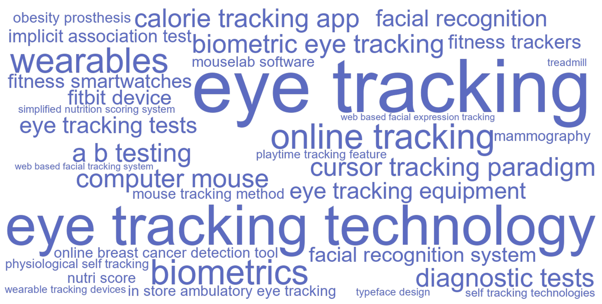
C.17.3 Articles
| Year | Full citation | Technology / technologies | Abstract |
|---|---|---|---|
| 2026 | Zhang Z, Zhou W, Andrews M. Displaying the Amount of Consumption Time in Online Reviews Can Affect Helpful Votes. Journal Of Marketing. 2026;51:91-105. doi:10.1177/00222429251321370 | playtime tracking feature | Some review platforms display how long reviewers used a product alongside their review. The authors investigate whether doing so translates to more helpful reviews. Using online reviews of video games from a video game platform and leveraging its unique playtime tracking feature, they find that the relationship between the amount of time playing a game before posting a review and the number of helpful votes the review receives follows a U-shaped curve, where shorter and longer playtimes correspond to more votes, while intermediate playtimes correspond to fewer votes. How displayed consumption time affects consumer expectations potentially explains this relationship. The less time reviewers spend consuming a product, the lower others' expectations of review helpfulness may be and hence the more lenient their judgments. More consumption time may increase these expectations, but extensive consumption time could overcome this higher bar by signaling credibility. Moderation results related to reviewer experience signaling and review or product characteristics, as well as mediation results involving consumer-gifted review awards, help support this context-based expectations account. These results are robust to conditioning out review-, reviewer-, and game-level factors, sample matching, and other settings. The findings have implications for reducing the asymmetric information problem, managing expectations, and optimizing reviews. |
| 2026 | Li Y, Hodges B, Fu L, Chen H. The Impact of Figure-Ground Reversal in Brand Logos on Brand Attitude. Journal Of Marketing Research. 2026;65:. doi:10.1177/00222437261417659 | eye tracking | Figure-ground reversal (FGR) transcends visual conventions by reversing the roles of figure and ground in brand logo designs. In this research, the authors study how FGR logos affect consumers' brand attitudes. Using traditional self-reported measures as well as biometric technology, they illuminate the unique nature of FGR's underlying mechanism and identify moderators to shed additional light on that process. Specifically, they find that the positive effect of FGR logos on brand attitude is mediated by engagement and aesthetic appeal, and moderated by the visual identification and semantic interpretability of FGR objects. Across a multimethod investigation that includes live-bidding, incentive-compatible willingness-to-pay, eye-tracking, and multiple boundary condition experiments, the authors provide empirical support for these effects and reveal the underlying mechanism. They conclude by discussing the contributions of the research to the literature on visual marketing phenomena and the implications of the findings for better visual branding in the marketplace. |
| 2026 | Miller K, Lukic K, Skiera B. The impact of the General Data Protection Regulation (GDPR) on online tracking. International Journal Of Research In Marketing. 2026;51:48-70. doi:10.1016/j.ijresmar.2025.03.002 | online tracking | This study explores the impact of the General Data Protection Regulation (GDPR) on online trackers-vital elements in the online advertising ecosystem. Using a difference-indifferences approach with a balanced panel of 294 publishers, it compares publishers subject to the GDPR with those unaffected (the control group). Drawing on data from WhoTracks.me, which spans 32 months from May 2017 to December 2019, it analyzes how the number of trackers used by publishers changed before and after the GDPR. The findings reveal that although online tracking increased for both groups, the rise was less significant for EU-based publishers subject to the GDPR. Specifically, the GDPR reduced about four trackers per publisher, equating to a 14.79 \% decrease compared to the control group. The GDPR was particularly effective in curbing privacy-invasive trackers that collect and share personal data, thereby strengthening user privacy. However, it had a limited impact on advertising trackers and only slightly reduced the presence of analytics trackers. (c) 2025 The Author(s). Published by Elsevier B.V. This is an open access article under the CC BY license (http://creativecommons.org/licenses/by/4.0/). |
| 2026 | Chandon P, Indaburu A. When and how simplified nutrition labels improve fast-food choices. Journal Of The Academy Of Marketing Science. 2026;71:490-512. doi:10.1007/s11747-025-01126-0 | nutri score | Simplified nutrition labels, such as Nutri-Score, are increasingly used in grocery stores, but their effects on out-of-home consumption, their psychological mechanisms, and potential moderators remain poorly understood. An initial online experiment showed that Nutri-Score leads fast-food customers to select meals (and especially desserts) of higher nutritional quality by helping them identify the healthiest options, ruling out three other theory-driven potential mechanisms. A field study involving 200,039 fast-food meals replicated the positive effects of Nutri-Score in a middle-class metropolitan area but found that it backfired in a less affluent provincial town. A second online experiment, which recruited a nationally representative sample, replicated the nutritional improvement for middle-class people living in metropolitan areas, but found no effect among those with a lower socioeconomic status living in provincial towns. Nutrition importance was the only one of the nine factors tested that moderated the effects of Nutri-Score and explained dietary differences across these groups. |
| 2025 | Schoemann M, Van D M P, Perkovic S, Orquin J. A method for measuring consumer confusion due to lookalike labels. International Journal Of Research In Marketing. 2025;60:298-315. doi:10.1016/j.ijresmar.2024.08.010 | mouse tracking method | We propose that some products carry labels that mimic the features of certified health and sustainability labels and that such lookalike labels can confuse consumers into believing that a product has specific, desirable attributes. To address this, we develop a mouse-tracking method for measuring consumer confusion about product attributes. In Study 1, we show that lookalike labels often mislead consumers into believing a product includes a certified label, and that mouse cursor movements provide insights into confusion levels. By applying signal-detection theory to mouse cursor movements, we develop a novel metric that quantifies product attribute confusion and accurately flags products as either ``attribute confusion suspect'' or ``attribute confusion safe''. In Study 2, we replicate our findings and show that attribute confusion is associated with a higher willingness-to-pay. In Study 3, we test the robustness of the metric under different exposure times. The novel attribute confusion metric provides marketers, policymakers, and consumer advocacy groups with a tool to design less confusing labels and can serve as evidence in cases where a product is suspected of misleading consumers or copycatting certified or trademarked labels. (c) 2024 The Author(s). Published by Elsevier B.V. This is an open access article under the CC BY license (http://creativecommons.org/licenses/by/4.0/). |
| 2025 | Simonov A, Valletti T, Veiga A. Attention Spillovers from News to Ads: Evidence from an Eye-Tracking Experiment. Journal Of Marketing Research. 2025;107:294-315. doi:10.1177/00222437241256900 | eye tracking technology | The authors investigate the impact of online news content on the effectiveness of display advertising. In a randomized online experiment, participants read news articles randomly paired with brand advertisements. Leveraging nonintrusive eye-tracking technology, the authors measure individual attention to both articles and ads. The authors then measure ad recall, and participants choose between cash and brand-specific vouchers. Heightened attention to articles results in ``spillover'' attention to ads on the same page, which, in turn, increases both brand recall and purchase probability. The authors also consider the effect of news content type, differentiating between ``hard'' and ``soft'' news. They find that advertising next to hard news is at least as effective as advertising next to soft news. This provides evidence against the blunt implementation of ``block lists'' for sensitive news topics by advertisers. The authors discuss the implications of attention spillovers for firms contemplating investments in engaging news content within the digital advertising landscape. |
| 2025 | Wang L, Toure-Tillery M. Cardio with Mr. Treadmill: How Anthropomorphizing the Means of Goal Pursuit Increases Motivation. Journal Of Marketing. 2025;93:59-80. doi:10.1177/00222429241303387 | treadmill | This article examines the motivational consequences of anthropomorphizing the means of goal pursuit. Eight studies show that consumers are more motivated to pursue fitness and academic goals with anthropomorphized (vs. nonanthropomorphized) means because such means elicit a greater sense of companionship and thus stronger beliefs that (1) goal pursuit is enjoyable (perceived enjoyability) and that (2) the goal is attainable (goal expectancy). The authors first find that participants work out harder when using an anthropomorphized (vs. nonanthropomorphized) treadmill (Study 1) and jump rope (Study 2). They then show that this effect occurs due to a greater sense of companionship, which in turn increases both perceived enjoyability and goal expectancy (sequential mediations; Study 3). They further demonstrate these underlying mechanisms through moderation: The effect attenuates when a human companion is present (Study 4), for means perceived as inherently fun (Study 5), and when self-efficacy is high (Study 6). Study 7 identifies a boundary condition: The effect disappears when the means take on a supervisor (rather than partner) role. Finally, Study 8 shows the downstream consequence of the effect on subsequent choice of means. These findings contribute to research on motivation and anthropomorphism, with practical implications for marketers and consumers. |
| 2025 | Dai T, Singh S. Overdiagnosis and Undertesting for Infectious Diseases. Marketing Science. 2025;69:. doi:10.1287/mksc.2022.0038 | diagnostic tests | The coronavirus disease 2019 (COVID-19) pandemic brought the availability of diagnostic tests to the forefront of public attention and highlighted the prevalence of undertesting (i.e., insufficient test supply relative to demand). Another important yet little studied systematic issue is overdiagnosis (i.e., positive diagnoses for patients with negligible viral loads); evidence suggests that U.S. laboratories have adopted highly sensitive diagnosis criteria such that up to an estimated 90\% of positive diagnoses are for minuscule viral loads. Motivated by this situation, we develop a theory of diagnostic testing for infectious diseases that explains both undertesting and overdiagnosis. We show that a commercial laboratory has an incentive to inflate its diagnosis criterion, which generates a higher diagnosis -driven demand as a result of contact -tracing efforts, albeit while dampening demand from disease transmission. An inflated diagnosis criterion prompts the laboratory to build a higher testing capacity, which may not fully absorb the inflated demand, so undertesting arises. Finally, we examine a social planner's problem of whether to mandate that the laboratory report the viral load along with its diagnosis so that a physician or contact tracer can make informed triage decisions. Our results show that the social planner may choose not to mandate viral -load reporting initially; this choice induces a higher testing capacity and can help reduce disease transmission. |
| 2025 | Pathak S, Balakrishnan P. The paradox of product scarcity: Catalyzing the speed of innovation diffusion. Journal Of The Academy Of Marketing Science. 2025;87:804-824. doi:10.1007/s11747-024-01060-7 | fitness trackers | Product shortages are known to slow down the diffusion process. However, we counterintuitively theorize and empirically demonstrate that under specific conditions of social influence, the diffusion process may be accelerated by early product scarcity. Using an Agent-Based framework and Genetic Algorithm-based estimation, we analyzed 20 product categories to identify the critical trade-off influencing diffusion: the interplay of the social influence ratio of waiting customers to adopters, the external influence, and level of product scarcity. Strategic managerial actions can accelerate the adoption of products. For example, in the case of fitness trackers, we were able to simulate speed-up by up to two years compared to the standard Bass model. Importantly, we introduce a novel framework to study competition dynamics, analyzing how the timing of market entry and the production capacity of competitors, along with the initial installed capacity of the pioneering firm affect diffusion speed. This acceleration, whether due to managerial foresight or serendipity, necessitates careful orchestration to harness the enthusiasm of waiting customers and strategically allocate marketing spending on social media platforms, thereby differentially amplifying the influence of adopters and potential customers. |
| 2024 | Puntoni S. Diagnostic delay in amyotrophic lateral sclerosis. Journal Of Consumer Psychology. 2024;10:174-176. doi:10.1002/jcpy.1358 | wearables | This commentary questions two common assumptions underlying discussions of how digital technology can enrich the consumer experience. First, broad conceptualizations tend to accommodate augmented reality and virtual reality under a single metaverse umbrella. This commentary draws attention to differences between the two and to the present-day prevalence of augmented reality experiences. Second, discussions of the metaverse tend to focus on visual experiences. This commentary draws attention to the impact that augmented reality is having through other senses. I argue that augmented reality experiences are ubiquitous because smartphones and wearables enrich our everyday life with haptic and sonic information. |
| 2024 | Miller K, Skiera B. Economic consequences of online tracking restrictions: Evidence from cookies. International Journal Of Research In Marketing. 2024;94:241-264. doi:10.1016/j.ijresmar.2023.10.001 | online tracking | In recent years, European regulators have debated restricting the time an online tracker can track a user to protect consumer privacy better. Despite the significance of these debates, there has been a noticeable absence of any comprehensive cost-benefit analysis. This article fills this gap on the cost side by suggesting an approach to estimate the economic consequences of lifetime restrictions on cookies for publishers. The empirical study on cookies of 54,127 users who received - 128 million ad impressions over - 2.5 years yields an average cookie lifetime of 279 days, with an average value of 2.52 per cookie. Only - 13\% of all cookies increase their daily value over time, but their average value is about four times larger than the average value of all cookies. Restricting cookies' lifetime to one year (two years) could potentially decrease their lifetime value by - 25\% ( - 19\%), which represents a potential decrease in the value of all cookies of - 9\% ( - 5\%). Most cookies, however, would not be affected by lifetime restrictions of 12 or 24 months as 72\% (85\%) of the users delete their cookies within 12 (24) months. In light of the 10.60 billion cookie-based display ad revenue in Europe, such restrictions would endanger 904 million ( 576 million) annually, equivalent to 2.08 ( 1.33) per EU internet user. The article discusses these results' marketing strategy challenges and opportunities for advertisers and publishers. (c) 2023 The Author(s). Published by Elsevier B.V. This is an open access article under the CC BY license (http://creativecommons.org/licenses/by/4.0/). |
| 2024 | Fisher G, Woolley K. How Consumers Resolve Conflict over Branded Products: Evidence from Mouse Cursor Trajectories. Journal Of Marketing Research. 2024;100:165-184. doi:10.1177/00222437231170838 | cursor tracking paradigm | Consumers differ in the extent to which brands drive their choices. The current research investigates the psychology underlying such decisions by using a cursor-tracking paradigm that captures consumers' decision-making processes in real time. Results indicate that while consumers typically process brand attributes relatively later than product attributes, the timing of this processing varies across individuals and affects choice. Specifically, when consumers trade off brand and product desirability (i.e., when deciding between a more [less] preferred product from a less [more] preferred brand), the earlier that brand attributes are considered, the more likely consumers are to choose the option from the preferred brand. Increasing the prominence of brand (vs. product) attributes leads to earlier brand attribute processing and a higher likelihood of choosing the preferred brand. These findings hold across a limited number of choice trials and for decisions involving three attributes (brand, product, and price). This research highlights the applicability of cursor tracking in revealing the psychological drivers of consumer choices in real time. |
| 2024 | Dong B, Zhuang M, Fang E, Huang M. Tales of Two Channels: Digital Advertising Performance Between AI Recommendation and User Subscription Channels. Journal Of Marketing. 2024;63:141-162. doi:10.1177/00222429231190021 | eye tracking technology | Although in-feed advertising is popular on mainstream platforms, academic research on it is limited. Platforms typically deliver organic content through two methods: subscription by users or recommendation by artificial intelligence. However, little is known about the ad performance between these two channels. This research examines how the performance of in-feed ads, in terms of click-through rates and conversion rates, differs between subscription and recommendation channels and whether these effects are mediated by ad intrusiveness and moderated by ad attributes. Two ad attributes are investigated: ad appeal (informational vs. emotional) and ad link (direct vs. indirect). Study 1 finds that the recommendation channel generates higher click-through rates but lower conversion rates than the subscription channel, and these effects are amplified by informational ad appeal and direct ad links. Study 2 explores channel differences, revealing that the recommendation channel yields less source credibility and content control, reducing consumer engagement with organic content. Studies 3 and 4 validate the mediating role of ad intrusiveness and rule out ad recognition as an alternative explanation. Study 5 uses eye-tracking technology to show that the recommendation channel has lower content engagement, lower ad intrusiveness, and greater ad interest. |
| 2023 | Martinovici A, Pieters R, Erdem T. Attention Trajectories Capture Utility Accumulation and Predict Brand Choice. Journal Of Marketing Research. 2023;72:625-645. doi:10.1177/00222437221141052 | eye tracking technology | Trajectories of attention capture the accumulation of brand utility during complex decision-making tasks. Thus, attention trajectories, as reflected in eye movements, predict the final brand choice of 85\% of consumers before they implement it. Even when observing eye movements in only the first quarter of the decision process, attention already predicts brand choice much better (45\%) than chance levels (20\%). This superior prediction performance is due to a ``double attention lift'' for the chosen brand: The chosen brand receives progressively more attention toward the moment of choice, and more of this attention is devoted to integrating information about the brand rather than to comparing it with other options. In contrast, the currently owned brand grabs attention early in the task, and its attention gain persists for brand-loyal consumers and shifts for brand-switching consumers. A new attention and choice model used in tandem with the Bayesian K-fold cross-validation methodology on eye-tracking data from 325 representative consumers uncovered these attention trajectory effects. The findings contribute to closing important knowledge gaps in the attention and choice literature and have implications for marketing research and managerial practice. |
| 2023 | Fronczek L, Mende M, Scott M, Nenkov G, Gustafsson A. Friend or foe? Can anthropomorphizing self-tracking devices backfire on marketers and consumers?. Journal Of The Academy Of Marketing Science. 2023;104:1075-1097. doi:10.1007/s11747-022-00915-1 | self tracking technologies, wearable tracking devices | Self-quantification, with the promise of motivating consumers to engage in health behaviors through measuring their performance, is a popular trend amongst consumers. Despite the economic impact of self-tracking technologies, consumers' experiences with self-tracking devices and corresponding consequences for firms remain understudied. Six studies examine how the popular marketing tactic of anthropomorphization influences (a) consumers' favorability towards wearable tracking devices, (b) their health motivation, and (c) their health behavior (number of steps taken) over time. The authors uncover a novel dynamic effect of anthropomorphism, such that with use, the initially positive evaluations of anthropomorphized (vs. non-anthropomorphized) devices decrease, and (contrary to prior literature), anthropomorphized devices are not favored. Importantly, health motivation and health behaviors are also reduced over time with the use of an anthropomorphized (vs. non-anthropomorphized) wearable device. This decrease occurs because anthropomorphized devices reduce the wearers' perceived autonomy, which in turn, reduces their health motivation and health behavior. However, customizing the anthropomorphized device (by setting a customized goal or by monitoring a greater number of health-related indicators) can mitigate its negative effects. These findings provide novel insights to marketing scholars and managers, by suggesting that anthropomorphism can be a successful short-term selling strategy, but over time, it can have unintended consequences for both firms and consumers. |
| 2023 | Laurent G, Vanhuele M. How Do Consumers Read and Encode a Price?. Journal Of Consumer Research. 2023;48:510-532. doi:10.1093/jcr/ucad005 | eye tracking | Do consumers really read a price from left to right, as assumed in past research? Or does price reading operate like word reading, with a single fixation toward the middle? Three eye-tracking lab studies reject both theories, revealing instead a distinct reading pattern: multiple fixations, with the first located on average between the first third and middle of the price; the first eye movement is usually to the left; and subsequent eye movements are as often to the left as to the right. Overall, consumers pay as much attention to cents as euros, with the cents part influencing how prices are encoded in memory, as evidenced by an in-store price-recall survey. The reading process identifies whether to encode a price verbally as is or replace it with a shorter substitute that is easier to memorize and turns out to be well correlated with the actual price (r = 0.952). When consumers compare two prices, eye movements and the subsequent subjective estimation of the price difference depend on whether or not the prices have identical integer parts. The combined findings of four studies suggest that consumers have developed a reliable, efficient ability to read and encode prices, despite limitations of their visual span and working memory. |
| 2023 | Hoang C, Ng S. The facilitating effect of physiological self-tracking on organ donation. Journal Of Consumer Psychology. 2023;61:394-402. doi:10.1002/jcpy.1337 | physiological self tracking | Encouraging people to donate their organs is not an easy endeavor. Globally, the percentage of organ donors is low. Prior research shows that one of the major impediments to organ donation is the perception that donating an organ is equivalent to giving up part of the self. Such a perception may be mitigated by physiological self-tracking though. Findings from three studies reveal that physiological self-tracking facilitates greater acceptance of and encourages organ donation. This happens because a focus on one's physiological data, as part of the self-tracking process, leads consumers to view their body as distinct from their self (i.e., self-body dualism). Consequently, people are less likely to equate donating organs with losing a part of themselves. The findings suggest that encouraging greater use of self-trackers may help people overcome their organ donation inhibitions. |
| 2022 | Hodges B, Chen H. In the Eye of the Beholder: The Interplay of Numeracy and Fluency in Consumer Response to 99-Ending Prices. Journal Of Consumer Research. 2022;91:1050-1072. doi:10.1093/jcr/ucab040 | biometric eye tracking, facial recognition | Across three laboratory studies, a biometric eye tracking and facial recognition experiment, and a secondary data analysis, we reveal the unique interaction of consumer numeracy and numerical processing fluency as a significant determinant of consumer response to 99-ending prices. We argue that less numerate individuals create mental analog representations around 99-ending prices' left digits, whereas highly numerate individuals encode 99-ending prices as their one-cent neighbor, with consumers responding more favorably to prices when they mentally encode them around a fluent number. Specifically, highly numerate individuals respond more favorably when 99-ending prices (e.g., 17.99) border a fluent number (i.e., 18). Conversely, less numerate individuals respond more favorably when 99-ending prices (e.g., 16.99) contain fluent left digits (i.e., 16). We provide empirical evidence for the effects of this processing difference on liking, purchase intentions, and actual sales. We also obtain evidence for the underlying process using eye tracking and facial recognition that reveals that highly (vs. less) numerate individuals exhibit less anxiety when processing multi-digit prices, and consequently fixate sooner, more frequently, and for longer durations on the right digits of a price. The findings contribute significantly to the price processing literature and yield substantial managerial implications. |
| 2021 | Wolf T, Jahn S, Hammerschmidt M, Weiger W, H. H. Competition versus cooperation: How technology-facilitated social interdependence initiates the self-improvement chain. International Journal Of Research In Marketing. 2021;101:472-491. doi:10.1016/j.ijresmar.2020.06.001 | wearables | Consumers are increasingly using technologies such as wearables or mobile apps to achieve their self-improvement goals. Such technologies often contain features that enable social interdependence (competition or cooperation) among users to support them in improving their engagement, performance, and well-being (life satisfaction and personal growth). However, the critical question remains: does competition or cooperation best serve users in attaining these self-improvement goals? Evidence from an online experiment and a field study reveals that competition is more effective in driving performance and personal growth, while cooperation is superior in terms of behavioral engagement and life satisfaction. Furthermore, the results indicate that the effects are mediated by strive for success and fear of failure, two counteracting psychological processes. While competition is the stronger trigger for both pathways, downstream effects vary depending on the self-improvement goal considered. This research thus provides insights into whether and how users can best realize their self-improvement goals using technologies that include social features. (c) 2020 Elsevier B.V. All rights reserved. |
| 2021 | Sussman A, Paley A, Alter A. How and Why Our Eating Decisions Neglect Infrequently Consumed Foods. Journal Of Consumer Research. 2021;66:251-269. doi:10.1093/jcr/ucab011 | calorie tracking app | This article introduces a novel distinction between foods as a function of the frequency with which consumers eat them, and investigates how this distinction influences dietary beliefs and decisions. It compares food types perceived to be consumed relatively infrequently (i.e., infrequent foods) to those perceived to be consumed relatively frequently (i.e., frequent foods). Across an analysis of archival data from a popular calorie tracking app and five experiments examining hypothetical consumption decisions, findings support the conclusion that infrequent foods provide unique challenges for consumers. All else equal, consumers select larger portions of infrequent (vs. frequent) foods. Further, consumers are less likely to compensate (i.e., eat less) after consuming equal amounts of infrequent versus frequent foods. This pattern of results arises because consumers erroneously believe that infrequent foods have a smaller impact on their weight than frequent foods do, even in the presence of caloric information. Optimistically, participants can be taught to overcome this bias through a brief informational intervention. |
| 2021 | Shi S, Trusov M. The Path to Click: Are You on It?. Marketing Science. 2021;46:344-365. doi:10.1287/mksc.2020.1253 | eye tracking equipment | The multibillion-dollar search engine marketing (SEM) industry's central objective is to gain visibility for businesses on search engine results pages (SERPs) to bring customers to a firm's website. This paper sheds light on a foundational element of SEM, namely, consumers' interactions with SERPs. Using eye-tracking equipment and a custombuilt Google-like search engine, we conducted a laboratory experiment in which participants performed a series of online searches for a set of consumer goods while their eye movements and interactions with the results page (i.e., scrolling and clicks) were recorded. We provide model-free and model-based analyses of the inspection process, which encompasses a series of microdecisions, including what part of the page to look at, whether to scroll to bring additional results into view, what listings to explore and for how long, and ultimately which listing to click on. The results suggest that search goals (navigational, transactional, and informational), semantic context, spatial characteristics, viewing centrality, and prior inspection path are all predictive of both the flow of the inspection process and the ultimate listing choice. Managers should account for the significant variation in inspection scope across search tasks and SERP compositions when assessing a listing's performance and deciding on a desirable position on the SERP. |
| 2021 | Chen M, Burke R, Hui S, Leykin A. Understanding Lateral and Vertical Biases in Consumer Attention: An In-Store Ambulatory Eye-Tracking Study. Journal Of Marketing Research. 2021;77:1120-1141. doi:10.1177/0022243721998375 | in store ambulatory eye tracking | Using in-store ambulatory eye-tracking, the authors investigate the extent to which lateral and vertical biases drive consumers' attention in a grocery store environment. The data set offers a complete picture of both where the shopper is located and the shopper's field of view and visual fixations during the trip. The authors address two research questions: First, do shoppers have a higher propensity to pay attention to products on their left or right side as they traverse an aisle (i.e., is the right side the ``right'' side)? Second, do shoppers tend to pay more attention to products at their eye level (i.e., is eye level ``buy level'')? The authors utilize the exogenous variations in the direction by which shoppers traverse an aisle to identify lateral bias. The exogenous variation of shoppers' eye-level positions is used to identify vertical bias. The authors find that shoppers pay more attention to products on their right side when traversing an aisle. Contrary to many practitioners' belief, eye level is not ``buy level''; rather, the product level that has the greatest propensity to capture shoppers' attention is approximately 14.7 inches below eye level (which is around chest level). |
| 2020 | Achar C, Agrawal N, Hsieh M. Fear of Detection and Efficacy of Prevention: Using Construal Level to Encourage Health Behaviors. Journal Of Marketing Research. 2020;50:582-598. doi:10.1177/0022243720912443 | online breast cancer detection tool | This research examines the psychological processes and factors that shape illness-detection versus illness-prevention health actions. Four experiments using contexts of mental health, skin cancer, and breast cancer show that illness detection evokes fear, which undermines engagement in detection behaviors. Considering detection at low (vs. high) levels of thought reduced fear and increased health persuasion. Illness prevention is driven by self-efficacy perceptions and considering prevention at high (vs. low) levels of thought increases persuasion. In further evidence of process, trait fear moderated the detection effects, and dispositional self-efficacy moderated the prevention effects. As an intervention, framing a detection action as serving illness-prevention goals increased people's likelihood of engaging with an online breast cancer detection tool. These findings illuminate the psychology of detection as being distinct from the psychology of prevention, identify the role of fear in the consideration of health behaviors, and show contexts in which construal levels have divergent effects on health persuasion. |
| 2020 | Huang F, Wong V, Wan E. The Influence of Product Anthropomorphism on Comparative Judgment. Journal Of Consumer Research. 2020;74:936-955. doi:10.1093/jcr/ucz028 | eye tracking, mouselab software | The present research proposes a new perspective to investigate the effect of product anthropomorphism on consumers' comparative judgment strategy in comparing two anthropomorphized (vs. two nonanthropomorphized) product options in a consideration set. Six experiments show that anthropomorphism increases consumers' use of an absolute judgment strategy (vs. a dimension-by-dimension strategy) in comparative judgment, leading to increased preference for the option with a more favorable overall evaluation over the option with a greater number of superior dimensions. The effect is mediated by consumers' perception of each anthropomorphized product alternative as an integrated entity rather than a bundle of separate attributes. The authors find the effect to be robust by directly tracing the process of participants' information processing using MouseLab software and eye-tracking techniques, and by self-reported preferences and real consumption choices. Moreover, the effect is moderated by the motivation to seek maximized accuracy or ease. These studies have important implications for theories about anthropomorphism and comparative judgment as well as marketing practice. |
| 2020 | Grewal D, Noble S, Ahlbom C, Nordfalt J. The Sales Impact of Using Handheld Scanners: Evidence from the Field. Journal Of Marketing Research. 2020;62:527-547. doi:10.1177/0022243720911624 | eye tracking technology | Anecdotal evidence is mixed regarding whether handheld scanners used in stores increase or decrease consumer sales. This article reports on three field studies, supported by eye-tracking technology and matched sales receipts, as well as two laboratory studies that show that handheld scanner use increases sales, notably through unplanned, healthier, and impulsive purchases. The findings highlight that these effects may be limited by factors such as not having a budget; for those without a budget, use of scanners can decrease sales. Building on embodied cognition and cognitive appraisal theories, the authors predict that scanners, as a bodily extension, influence sales through both cognitive (shelf attention, perceived control) and affective (number of products touched, shopping experience) mechanisms. The results offer implications for retailers considering whether to integrate scanners into their store environments. |
| 2019 | Kawaguchi K, Uetake K, Watanabe Y. Effectiveness of Product Recommendations Under Time and Crowd Pressures. Marketing Science. 2019;33:253-273. doi:10.1287/mksc.2018.1132 | facial recognition system | Understanding the effects of contextual tactors is crucial in designing context-based marketing. This paper focuses on product recommendations and studies how time and crowd pressures two prominent contextual effects in the consumer behavior literature-can impact the effectiveness of recommendations. Measuring these effects is not straightforward because the joint distribution of consumer choice, time, and crowd pressures is rarely observed outside the laboratory and recommendations are often endogenously determined. We overcome these issues using data from an experiment conducted with vending machines in railway stations across Tokyo. The machines are equipped with a facial recognition system to make recommendations, and recommendations are changed exogenously in the experiment. This setup provides us with well-measured variables of the time and crowd pressures that affect the effectiveness of recommendations. After showing that recommendations increase the sales of both the recommended and nonrecommended products, we show that time pressures moderate the effectiveness of product recommendations for both recommended products directly and nonrecommended products indirectly. Crowd pressures weaken the direct effect on the recommended products, although its impact on the nonrecommended products is small and not robust in some cases. These results indicate that, when marketers make context-based recommendations, they should be mindful of the consumers under time pressure. |
| 2019 | Feit E, Berman R. Test \& Roll: Profit-Maximizing A/B Tests. Marketing Science. 2019;28:1038-1058. doi:10.1287/mksc.2019.1194 | a b testing | Marketers often use A/B testing as a tool to compare marketing treatments in a test stage and then deploy the better-performing treatment to the remainder of the consumer population. Whereas these tests have traditionally been analyzed using hypothesis testing, we reframe them as an explicit trade-off between the opportunity cost of the test (where some customers receive a suboptimal treatment) and the potential losses associated with deploying a suboptimal treatment to the remainder of the population. We derive a closed-form expression for the profit-maximizing test size and show that it is substantially smaller than typically recommended for a hypothesis test, particularly when the response is noisy or when the total population is small. The common practice of using small holdout groups can be rationalized by asymmetric priors. The proposed test design achieves nearly the same expected regret as the flexible yet harder-to-implement multi-armed bandit under a wide range of conditions. We demonstrate the benefits of the method in three different marketing contexts-website design, display advertising, and catalog tests-in which we estimate priors from past data. In all three cases, the optimal sample sizes are substantially smaller than for a traditional hypothesis test, resulting in higher profit. |
| 2019 | Nitzan I, Ein-Gar D. The ``Commitment Projection'' Effect: When Multiple Payments for a Product Affect Defection from a Service. Journal Of Marketing Research. 2019;83:842-861. doi:10.1177/0022243719850504 | fitness smartwatches | Many service providers offer supplementary products related to their ongoing services (e.g., fitness centers offer fitness smartwatches). In seven studies, the authors show that the payment method for such supplementary products (multiple payments vs. a single lump sum) affects customers' tendency to defect from the provider's core service over time. Specifically, when customers pay for add-ons in multiple payments-provided that (1) they perceive the add-on as being bundled with the core service and (2) the payment period has an end point-they are initially less likely to defect from the service provider than when they pay in a single payment. Over time, however, as payments are made, this gap closes, such that defection intentions under the two payment methods eventually become similar. The authors propose that this phenomenon reflects ``commitment projection,'' wherein a decrease in customers' commitment to the add-on product over time is projected onto their commitment to the service provider. These findings carry important managerial implications, given that many service providers offer add-on products in multiple-payment plans and that customers' defection decisions substantially affect firms' profitability. |
| 2018 | Amar M, Ariely D, Carmon Z, Yang H. How Counterfeits Infect Genuine Products: The Role of Moral Disgust. Journal Of Consumer Psychology. 2018;62:329-343. doi:10.1002/jcpy.1036 | computer mouse | We argue that moral disgust toward counterfeiting can degrade both the efficacy of products perceived to be counterfeits and that of genuine products resembling them. Five studies support our propositions and highlight the infectious nature of counterfeiting: Perceiving a product as a counterfeit made disgust more mentally accessible, and led participants to disinfect the item more and reduce how long they remained in physical contact with it (Study 1). Participants who perceived a mouse as a counterfeit, performed less well in a computer game using the mouse and expressed greater moral disgust, which mediated lowered performance (Study 2). Exposure to a supposedly counterfeit fountain pen in an unrelated prior task infected participants' performance using a genuine ballpoint pen resembling the ``counterfeit;'' individual differences in moral attitudes moderated the effect (Study 3). Exposure to a supposedly counterfeit mouse infected performance with a genuine mouse of the same brand; moral disgust mediated this effect (Study 4). Finally, moral disgust mediated lowered efficacy of a supposed counterfeit and that of a genuine item resembling the ``counterfeit'' (Study 5). |
| 2018 | Grewal D, Ahlbom C, Beitelspacher L, Noble S, Nordfalt J. In-Store Mobile Phone Use and Customer Shopping Behavior: Evidence from the Field. Journal Of Marketing. 2018;82:102-126. doi:10.1509/jm.17.0277 | eye tracking technology | This research examines consumers' general in-store mobile phone use and shopping behavior. Anecdotal evidence has suggested that mobile phone use decreases point-of-purchase sales, but the results of the current study indicate instead that it can increase purchases overall. Using eye-tracking technology in both a field study and a field experiment, matched with sales receipts and survey responses, the authors show that mobile phone use (vs. nonuse) and actual mobile phone use patterns both lead to increased purchases, because consumers divert from their conventional shopping loop, spend more time in the store, and spend more time examining products and prices on shelves. Building on attention capacity theories, this study proposes and demonstrates that the underlying mechanism for these effects is distraction. This article also provides some insights into boundary conditions of the mobile phone use effect. |
| 2018 | Huang S. Social Information Avoidance: When, Why, and How It Is Costly in Goal Pursuit. Journal Of Marketing Research. 2018;52:382-395. doi:10.1509/jmr.16.0268 | fitbit device | Consumers nowadays have easy and rich access to information about social others who are pursuing goals similar to their own (e.g., through a Fitbit device, the Endomondo mobile app, stickK.com). This research focuses on objective social information during goal striving (e.g., performance data and progress information of others) and shows that this information may not always be welcome. The author finds that when people are in the middle of a goal pursuit journey (vs. when they have just begun or are about to complete their goal), to circumvent potentially negative comparisons, they avoid information about social referents who are relevant (pursuing the same goal), proximal (in the same stage of goal pursuit), and superior. Head turn frequency, eye movements, and consumers' direct choices in the lab and in the field are used to document a U-shaped pattern of information avoidance behavior, which paradoxically contributes to the phenomenon whereby goal pursuers become ``stuck in the middle'' of their pursuits. These findings connect the information avoidance literature with the psychophysics of goal pursuit and shed light on the questions of when and why people may be undermining their goal striving by avoiding relevant, motivating social information. |
| 2018 | Liu X, Shi S, Teixeira T, Wedel M. Video Content Marketing: The Making of Clips. Journal Of Marketing. 2018;54:86-101. doi:10.1509/jm.16.0048 | web based facial expression tracking | Consumers have an increasingly wide variety of options available to entertain themselves. This poses a challenge for content aggregators who want to effectively promote their video content online through original trailers of movies, sitcoms, and video games. Marketers are now trying to produce much shorter video clips to promote their content on a variety of digital channels. This research is the first to propose an approach to produce such clips and to study their effectiveness, focusing on comedy movies as an application. Web-based facial-expression tracking is used to study viewers' real-time emotional responses when watching comedy movie trailers online. These data are used to predict both viewers' intentions to watch the movie and the movie's box office success. The authors then propose an optimization procedure for cutting scenes from trailers to produce clips and test it in an online experiment and in a field experiment. The results provide evidence that the production of short clips using the proposed methodology can be an effective tool to market movies and other online content. |
| 2016 | Meiner M, Musalem A, Huber J. Eye Tracking Reveals Processes That Enable Conjoint Choices to Become Increasingly Efficient with Practice. Journal Of Marketing Research. 2016;42:1-17. doi:10.1509/jmr.13.0467 | eye tracking | Choice-based conjoint is a popular technique for characterizing consumers' choices. Three eye-tracking studies explore decision processes in conjoint choices that take less time and become more accurate with practice. These studies reveal two simplification processes that are associated with greater speed and reliability. Alternative focus gradually shifts attention toward options that represent promising choices, whereas attribute focus directs attention to important attributes that are most likely to alter or confirm a decision. Alternative and attribute focus increase in intensity with practice. In terms of biases, the authors detect a small but consistent focus on positive aspects of the item chosen and negative aspects of the items not chosen. They also show that incidental exposures arising from the first-examined alternative or from alternatives in a central horizontal location increase attention but have a much more modest and often insignificant impact on conjoint choices. Overall, conjoint choice is found to be a process that is (1) largely formed by goal-driven values that respondents bring to the task and (2) relatively free of distorting effects from task layout or random exposures. |
| 2015 | Yang L, Toubia O, De J M. A Bounded Rationality Model of Information Search and Choice in Preference Measurement. Journal Of Marketing Research. 2015;54:166-183. doi:10.1509/jmr.13.0288 | eye tracking technology | It is becoming increasingly easier for researchers and practitioners to collect eye-tracking data during online preference measurement tasks. The authors develop a dynamic discrete choice model of information search and choice under bounded rationality, which they calibrate using a combination of eye-tracking and choice data. Their model extends Gabaix et al.'s (2006) directed cognition model by capturing fatigue, proximity effects, and imperfect memory encoding and by estimating individual-level parameters and partworths within a likelihood-based hierarchical Bayesian framework. The authors show that modeling eye movements as the outcome of forward-looking utility maximization improves out-of-sample predictions, enables researchers and practitioners to use shorter questionnaires, and allows better discrimination between attributes. |
| 2015 | Cian L, Krishna A, Elder R. A Sign of Things to Come: Behavioral Change through Dynamic Iconography. Journal Of Consumer Research. 2015;75:1426-1446. doi:10.1086/680673 | eye tracking | We propose that features of static visuals can lead to perceived movement (via dynamic imagery) and prepare the observer for action. We operationalize our research within the context of warning sign icons and show how subtle differences in iconography can affect human behavioral response. Across five studies incorporating multiple methodologies and technologies (click-data heat maps, driving simulations, surveys, reaction time, and eye tracking), we show that warning sign icons that evoke more (vs. less) perceived movement lead to a quicker propensity to act because they suggest greater risk to oneself or others and increase attentional vigilance. Icons used in our studies include children crossing signs near schools, wet floor signs in store settings, and shopping cart crossings near malls. Our findings highlight the importance of incorporating dynamic elements into icon design to promote imagery and thereby elicit desired and responsible consumer behavior. |
| 2015 | Nikolova H, Inman J. Healthy Choice: The Effect of Simplified Point-of-Sale Nutritional Information on Consumer Food Choice Behavior. Journal Of Marketing Research. 2015;52:817-835. doi:10.1509/jmr.13.0270 | simplified nutrition scoring system | Grocery retailers are joining the fray against obesity by offering a wide range of health and wellness programs at the point of sale. However, the success of such programs in promoting healthy choices remains an open question. The authors examine the effectiveness of a growing health and wellness initiative: a simplified nutrition scoring system. They present a conceptual framework that predicts the effect of such a scoring system on shoppers' food decisions and their sensitivity to price and promotion, as well as the moderating influence of category-level factors. Using a large-scale quasi experiment and panel data across eight product categories for more than 535,000 members of a grocery chain's frequent shopper program, the authors demonstrate that the point-of-sale nutrition scoring system helped consumers make healthier food choices, such that they switched to higher-scoring products in the postrollout period. The results also reveal that shoppers became less price sensitive and more promotion sensitive following the introduction of the food scoring system. The authors discuss implications for research and practice. |
| 2015 | Venkatraman Vet al.. Predicting Advertising Success Beyond Traditional Measures: New Insights from Neurophysiological Methods and Market Response Modeling. Journal Of Marketing Research. 2015;77:436-452. doi:10.1509/jmr.13.0593 | biometrics, eye tracking | In the past decade, there has been a tremendous increase in the use of neurophysiological methods to better understand marketing phenomena among academics and practitioners. However, the value of these methods in predicting advertising success remains underresearched. Using a unique experimental protocol to assess responses to 30-second television ads, the authors capture many measures of advertising effectiveness across six commonly used methods (traditional self-reports, implicit measures, eye tracking, biometrics, electroencephalography, and functional magnetic resonance imaging). These measures have been shown to reliably tap into higher-level constructs commonly used in advertising research: attention, affect, memory, and desirability. Using time-series data on sales and gross rating points, the authors attempt to relate individual-level response to television ads in the lab to the ads' aggregate, market-level elasticities. The authors show that functional magnetic resonance imaging measures explain the most variance in advertising elasticities beyond the baseline traditional measures. Notably, activity in the ventral striatum is the strongest predictor of real-world, market-level response to advertising. The authors discuss the findings and their significant implications for theory, research, and practice. |
| 2015 | Duclos R. The psychology of investment behavior: (De)biasing financial decision-making one graph at a time. Journal Of Consumer Psychology. 2015;28:317-325. doi:10.1016/j.jcps.2014.11.005 | eye tracking technology | Consumers' welfare largely depends on the soundness of their financial decisions. To this effect, the present research examines how people process graphical displays of financial information (e.g., stock-prices) to forecast future trends and invest accordingly. In essence, we ask whether and how visual biases in data interpretation impact financial decision-making and risk-taking. Five experiments find that the last trading day(s) of a stock bear a disproportionately (and unduly) high importance on investment behavior, a phenomenon we coin end-anchoring. Specifically, a stock-price closing upward (downward) fosters upward (downward) forecasts for tomorrow and, accordingly, more (less) investing in the present. Substantial investment asymmetries (up to 75\%) emerge even as stock-price distributions were generated randomly to simulate times when the market conjuncture is hesitant and no real upward or downward trend can be identified. Allying experimental manipulations to eye-tracking technology, the present research begins to explore the underpinnings of end-anchoring. (C) 2014 Society for Consumer Psychology. Published by Elsevier Inc. All rights reserved. |
| 2014 | Cian L, Krishna A, Elder R. This Logo Moves Me: Dynamic Imagery from Static Images. Journal Of Marketing Research. 2014;62:184-197. doi:10.1509/jmr.13.0023 | eye tracking technology | The authors propose that static visuals can evoke a perception of movement (i.e., dynamic imagery) and thereby affect consumer engagement and attitudes. Focusing on brand logos as the static visual element, the authors measure the perceived movement evoked by the logo and demonstrate that the evoked dynamic imagery affects the level of consumer engagement with the brand logo. They measure consumer engagement through both self-report measures and eye-tracking technology and find that engagement affects consumer attitudes toward the brand. The authors also show that the perceived movement engagement attitude effect is moderated by the congruence between perceived movement and brand characteristics. These findings suggest that dynamic imagery is an important aspect of logo design, and if used carefully, it can enhance brand attitudes. |
| 2014 | Teixeira T, Picard R, El K R. Why, When, and How Much to Entertain Consumers in Advertisements? A Web-Based Facial Tracking Field Study. Marketing Science. 2014;41:809-827. doi:10.1287/mksc.2014.0854 | web based facial tracking system | The presence of positive entertainment (e. g., visual imagery, upbeat music, humor) in TV advertisements can make them more attractive and persuasive. However, little is known about the downside of too much entertainment. This research focuses on why, when, and how much to entertain consumers in TV advertisements. We collected data in a large scale field study using 82 ads with various levels of entertainment shown to 178 consumers in their homes and workplaces. Using a novel web-based face tracking system, we continuously measure consumers' smile responses, viewing interest, and purchase intent. A simultaneous Bayesian hierarchical model is estimated to assess how different levels of entertainment affect purchases by endogenizing viewing interest. We find that entertainment has an inverted U-shape relationship to purchase intent. Importantly, we separate entertainment into that which comes before the brand versus that which comes after, and find that the latter is positively associated with purchase intent while the former is not. |
| 2012 | Teixeira T, Wedel M, Pieters R. Emotion-Induced Engagement in Internet Video Advertisements. Journal Of Marketing Research. 2012;43:144-159. doi:10.1509/jmr.10.0207 | eye tracking | This study shows how advertisers can leverage emotion and attention to engage consumers in watching Internet video advertisements. In a controlled experiment, the authors assessed joy and surprise through automated facial expression detection for a sample of advertisements. They assessed concentration of attention through eye tracking and viewer retention by recording zapping behavior. This allows tests of predictions about the interplay of these emotions and interperson attention differences at each point in time during exposure. Surprise and joy effectively concentrate attention and retain viewers. However, importantly, the level rather than the velocity of surprise affects attention concentration most, whereas the velocity rather than the level of joy affects viewer retention most. The effect of joy is asymmetric, with higher gains for increases than losses for decreases. Using these findings, the authors develop representative emotion trajectories to support ad design and testing. |
| 2012 | Atalay A, Bodur H, Rasolofoarison D. Shining in the Center: Central Gaze Cascade Effect on Product Choice. Journal Of Consumer Research. 2012;95:848-866. doi:10.1086/665984 | eye tracking | Consumers' tendency to choose the option in the center of an array and the process underlying this effect is explored. Findings from two eye-tracking studies suggest that brands in the horizontal center receive more visual attention. They are more likely to be chosen. Investigation of the attention process revealed an initial central fixation bias, a tendency to look first at the central option, and a central gaze cascade effect, progressively increasing attention focused on the central option right prior to decision. Only the central gaze cascade effect was related to choice. An offline study with tangible products demonstrated that the centrally located item within a product category is chosen more often, even when it is not placed in the center of the visual field. Despite widespread use, memory-based attention measures were not correlated with eye-tracking measures. They did not capture visual attention and were not related to choice. |
| 2010 | Mcferran B, Dahl D, Fitzsimons G, Morales A. Might an overweight waitress make you eat more? How the body type of others is sufficient to alter our food consumption. Journal Of Consumer Psychology. 2010;36:146-151. doi:10.1016/j.jcps.2010.03.006 | obesity prosthesis | This paper investigates how people's food choices can be shaped by the body type of others around them. Using a professionally constructed obesity prosthesis, we show that the body type of a (confederate) server in a taste test study was sufficient to alter both the quantity (Experiment 1) and specific choices (Experiment 2) participants made but that chronic dieters and non-dieters exhibited opposite effects. While non-dieters ate more snacks when the server was thin, dieters ate more when the server was heavy. Dieters were also more persuaded by a heavy (vs. a thin) server, choosing both a healthy and unhealthy snack more often when she recommended it to them. We suggest these results may be attributable to identification with the server. (C) 2010 Society for Consumer Psychology. Published by Elsevier Inc. All rights reserved. |
| 2010 | Teixeira T, Wedel M, Pieters R. Moment-to-Moment Optimal Branding in TV Commercials: Preventing Avoidance by Pulsing. Marketing Science. 2010;66:783-804. doi:10.1287/mksc.1100.0567 | eye tracking | We develop a conceptual framework about the impact that branding activity (the audiovisual representation of brands) and consumers' focused versus dispersed attention have on consumer moment-to-moment avoidance decisions during television advertising. We formalize this framework in a dynamic probit model and estimate it with Markov chain Monte Carlo methods. Data on avoidance through zapping, along with eye tracking on 31 commercials for nearly 2,000 participants, are used to calibrate the model. New, simple metrics of attention dispersion are shown to strongly predict avoidance. Independent of this, central on-screen brand positions, but not brand size, further promote commercial avoidance. Based on the model estimation, we optimize the branding activity that is under marketing control for ads in the sample to reduce commercial avoidance. This reveals that brand pulsing-while keeping total brand exposure constant-decreases commercial avoidance significantly. Both numerical simulations and a controlled experiment using regular and edited commercials, respectively, provide evidence of the benefits of brand pulsing to ward off commercial avoidance. Implications for advertising management and theory are addressed. |
| 2010 | Aribarg A, Pieters R, Wedel M. Raising the BAR: Bias Adjustment of Recognition Tests in Advertising. Journal Of Marketing Research. 2010;59:387-400. doi:10.1509/jmkr.47.3.387 | eye tracking | Advertising recognition tests use advertisements as visual retrieval cues; they require consumers to report which advertisements they remember having seen earlier and whether they noticed the advertised brand and read most of the text at the time. Using a heterogeneous randomly stopped sum model, the authors establish the relationship between consumers' actual attention to print advertisements, as measured through eye tracking, and subsequent ad recognition measures. They find that ad recognition measures are systematically biased because consumers infer prior attention from the ad layout and their familiarity with the brands in the advertisements. Such biases undermine the validity of recognition tests for advertising practice and theory development. The authors quantify the positive and negative diagnostic value of ad recognition for prior attention and demonstrate how these diagnostic values can be used to develop bias-adjusted recognition (BAR) scores that more accurately reflect prior attention. Finally, the authors show that differences in the scores from ad recognition tests based on in-home versus lab exposure attenuate when the bias-adjustment procedure is applied. |
| 2009 | Chandon P, Hutchinson J, Bradlow E, Young S. Does In-Store Marketing Work? Effects of the Number and Position of Shelf Facings on Brand Attention and Evaluation at the Point of Purchase. Journal Of Marketing. 2009;49:1-17. doi:10.1509/jmkg.73.6.1 | eye tracking | Recent trends in marketing have demonstrated an increased focus on in-store expenditures with the hope of ``grabbing consumers'' at the point of purchase, but does this make sense? To help answer this question, the authors examine the interplay between in-store and out-of-store factors on consumer attention to and evaluation of brands displayed on supermarket shelves. Using an eye-tracking experiment, they find that the number of facings has a strong impact on evaluation that is entirely mediated by its effect on visual attention and works particularly well for frequent users of the brand, for low-market-share brands, and for young and highly educated consumers who are willing to trade off brand and price. They also find that gaining in-store attention is not always sufficient to drive sales. For example, top- and middle-shelf positions gain more attention than low-shelf positions; however, only top-shelf positions carry through to brand evaluation. The results underscore the importance of combining eye-tracking and purchase data to obtain a full picture of the effects of in-store and out-of-store marketing at the point of purchase. |
| 2009 | Zhang J, Wedel M, Pieters R. Sales Effects of Attention to Feature Advertisements: A Bayesian Mediation Analysis. Journal Of Marketing Research. 2009;37:669-681. doi:10.1509/jmkr.46.5.669 | eye tracking tests | There is much evidence that the presence of a feature advertisement can increase the sales and market share of the featured product. However, little is known about how feature ad characteristics (e.g., size, color, and location of the advertisement) affect the sales outcomes and how the effects take place. Prior research has predicted that feature advertisements lead to behavioral outcomes through their effect on consumers' attention. Building on this idea, the authors propose a Bayesian statistical model to study how feature ad characteristics affect sales of the featured products and the mediating role of attention in these relationships. They use data from eye-tracking tests of feature advertisements, aggregated and matched with sales data at the level of the feature advertisement. Their approach accounts for endogeneity in the key variables involved and overcomes limitations of standard mediation analyses. They show that the gaze duration on a feature advertisement affects sales of the featured product beyond the mere presence of the advertisement and that a standard mediation analysis that does not accommodate endogeneity produces biased estimates of the effects of feature ad characteristics on sales. Their proposed methodology is widely applicable to mediation analyses. The findings imply that attention data collected in lab tests can help marketers compare the relative sales outcomes of different feature ad designs and improve the effectiveness and efficiency of feature adverting decisions. |
| 2007 | Dimofte C, Yalch R. Consumer response to polysemous brand slogans. Journal Of Consumer Research. 2007;21:515-522. doi:10.1086/510225 | implicit association test | Polysemous brand slogans have multiple meanings that may convey several product attributes. We build on extant research by suggesting that some consumers automatically access multiple meanings of a polysemous brand slogan, whereas others access only a single, immediately available meaning. A novel measure of automatic access to secondary meaning (the Secondary Meaning Access via the Automatic Route Test, or SMAART) is developed to capture this individual difference and show its consequences for consumer responses to polysemous slogans with unfavorable secondary meanings. The automatic- access account is further validated by employing the Implicit Association Test (Greenwald, McGhee, and Schwartz), suggesting that the unconscious impact of polysemous brand slogans can be more influential than intuitively expected. |
| 2007 | Pieters R, Wedel M. Goal control of attention to advertising: The Yarbus implication. Journal Of Consumer Research. 2007;39:224-233. doi:10.1086/519150 | eye tracking | An eye-tracking experiment with four processing goals and a free-viewing condition reveals goal control of attention even during a few seconds of self-paced ad exposure. An ad-memorization goal enhanced attention to the body text, pictorial, and brand design objects. A brand-learning goal enhanced attention to the body text but simultaneously inhibited attention to the pictorial design. This supports the thesis that ad informativeness is goal contingent. Differences in pupillary diameter between ad objects but not between processing goals reflect the pupil's role in maintaining optimal vision. Implications of the findings for advertising theory and avenues for future research are indicated. |
| 2005 | Shugan S, Xie J. Advance-selling as a competitive marketing tool. International Journal Of Research In Marketing. 2005;47:351-373. doi:10.1016/j.ijresmar.2004.11.004 | biometrics | Advance selling before the time of consumption is now possible for even very small service providers, given new technologies (specifically, web-based transactions, biometrics and smart card technology). Moreover, recent research has revealed that advance selling can substantially improve profits without traditional price discrimination. However, that research was limited to monopoly settings. This paper explores the impact of competition on advance selling driven by consumer uncertainty about future consumption states (rather than price discrimination). We employ several different demand specifications to provide three major findings. First, unlike yield management (driven by price discrimination), the relative profit advantage from advance selling (driven by consumer uncertainty about future consumption states) in a competitive market can be higher or the same as that in a monopoly market. For every demand specification that we investigate, competition does not diminish the advantage of advance selling. The reason is that price discrimination leaves some groups (i.e., those being discriminated against) vulnerable to competitors (e.g., price discounts) and competition weakens discrimination. In contrast, consumer uncertainty applies to all consumers in the advance period so a competitor is unable to focus attention on only one group of consumers. However, in some demand specifications, the existence of competitors can limit the situations when an advance selling equilibrium exists because of the ability to unilaterally spot sell and damage profits of the seller who advance sells. Second, in some demand specifications, advance selling can create a win-win-win situation where the profits of two competitors increase while consumer surplus increases because advance selling allows greater market participation. Third, competition can strengthen the conditions under which advance selling is advantageous compared with spot selling. Hence, advance selling can be a very effective marketing tool in a competitive setting (albeit under more restrictive conditions than in a monopoly setting). It is a tool that can diminish competition and, unlike price discrimination, increase buyer surplus. Published by Elsevier B.V. |
| 2004 | Henderson P, Giese J, Cote J. Impression management using typeface design. Journal Of Marketing. 2004;49:60-72. doi:10.1509/jmkg.68.4.60.42736 | typeface design | This article develops empirically based guidelines to help managers select typefaces that affect strategically valued impressions. The authors discuss the potential trade-offs among the impressions created by typeface (e.g., pleasing, engaging, reassuring, prominent). The selection of typeface can be simplified with the use of six underlying design dimensions: elaborate, harmony, natural, flourish, weight, and compressed. |
| 2003 | Kahn B, Luce M. Understanding high-stakes consumer decisions: Mammography adherence following false-alarm test results. Marketing Science. 2003;57:393-410. doi:10.1287/mksc.22.3.393.17737 | mammography | Consumers often have to decide whether to acquire information in high-stakes decision domains. We study women in mammography waiting rooms to test how a ``false-alarm'' result (i.e., an indication that a malady is present when a ``more accurate'' follow-up test reveals it is not) affects willingness to get retested. In Study 1 we show that, given a false-alarm result, life-threatening test consequences are associated with more disutility for future testing than when test consequences are less significant; this does not hold for normal test results. In Study 2 in the mammography context, we show that patients receiving a false-alarm result experienced more stress, were less likely to believe that a positive mammography result indicated cancer, and more likely to delay mammography than patients receiving normal results unless they were also told that they may be vulnerable to breast cancer in the future. We show that delays in planned adherence following a false-alarm result can be mitigated by an information intervention. Finally, we have preliminary evidence that a previous history of false-positive results can cause a consumer to both react more negatively to emotional stress and respond more positively to coping information. |
C.18 Cluster 16: Other
C.18.1 Summary
| Canonical technologies | Articles | Earliest article | Most recent article |
|---|---|---|---|
| 70 | 68 | 2000 | 2026 |
C.18.2 Technology word cloud
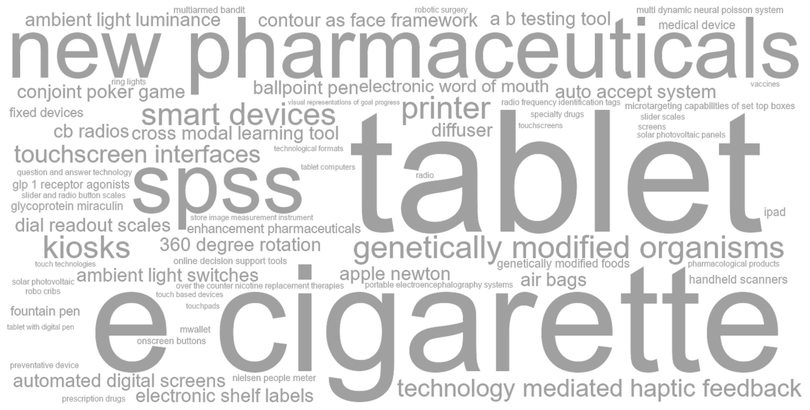
C.18.3 Articles
| Year | Full citation | Technology / technologies | Abstract |
|---|---|---|---|
| 2026 | Uhlendorf-Leo K, Uhrich S, Völckner F. Getting hands on(line)? A meta-analysis of the effectiveness of extended realities in online retailing. International Journal Of Research In Marketing. 2026;:. doi:10.1016/j.ijresmar.2026.04.003 | 360 degree rotation | To enhance the online shopping experience, companies are increasingly adopting extended realities (XRs) in the form of 360-degree rotation (3D), augmented reality (AR), and virtual reality (VR) for product presentations. However, research has produced inconsistent results regarding the impact of XRs on consumer responses, leaving practitioners uncertain about the effectiveness of these technologies while facing substantial investment costs. Addressing this issue, the authors meta-analyze 298 effect sizes from 111 experimental studies comparing XRs with traditional product presentations (i.e., images, videos). The findings show that XRs moderately improve consumer responses (i.e., attitudinal and behavioral; d = 0.410) with high underlying heterogeneity. The effect is amplified when XRs include overlay elements (e.g., text that overlays virtual content) and for experiential shoppers, while it is weaker for VR on PCs (vs. AR, 3D, and VR on head-mounted displays) and for familiar brands. The effects are robust across different comparison conditions (i.e., images vs. videos), and outcomes (i.e., attitudinal vs. behavioral). The authors also test the relative importance of the two main theoretical accounts used in prior research to explain the effect of XRs—namely, mental simulation and information assessment. The results highlight that companies benefit from a careful use of XRs, for example, by incorporating overlay elements in XR designs or by using XRs for new brands. The article also provides a comprehensive overview of future research areas in the field of XRs. © 2026 The Author(s). |
| 2026 | Loghmani E, Goli A. Investigating the Impact of Advertising on Smoking Cessation: The Role of Direct-to-Consumer Prescription Drug Advertising. Marketing Science. 2026;55:. doi:10.1287/mksc.2024.0848 | e cigarette, over the counter nicotine replacement therapies, prescription drugs | Access barriers to products and the availability of over-the-counter substitutes critically shape how advertising affects consumer choices in healthcare markets, yet these relationships remain understudied. We examine this phenomenon in the smoking cessation market, where prescription and over-the-counter options coexist with varying efficacy and access barriers. Analyzing data on prescription records, retail sales, and advertising exposure, we estimate both own-and cross-advertising elasticities across multiple product categories including prescription drugs, over-the-counter nicotine replacement therapies (NRTs), e-cigarettes, and traditional cigarettes. We find that prescription drug advertising reduces cigarette consumption whereas nicotine replacement therapy advertising does not. This difference occurs because prescription advertising expands demand across prescription cessation medications, whereas nicotine replacement advertising diverts consumers from more effective prescription options. Insurance coverage significantly moderates these elasticities: where coverage is limited, prescription advertising leads to greater spillovers toward over-the-counter substitutes. Despite these spillovers, prescription drug advertising yields a meaningful reduction in cigarette consumption and net nicotine intake. These findings demonstrate that obtaining a complete picture of advertising's impact on public health outcomes requires accounting for both cross-category effects and institutional constraints in healthcare markets. |
| 2026 | Brucks M, Levav J. Kinesthetic Properties of Response Scales Yield Different Judgments. Journal Of Consumer Research. 2026;64:1172-1191. doi:10.1093/jcr/ucaf035 | slider and radio button scales | This research examines how the movements an interface requires of a consumer-that is, its ``kinesthetic properties''-can alter what a consumer attends to when responding and in turn change the response itself. We compare the kinesthetic properties of two ubiquitous scale formats: slider and radio-button scales. Six studies (plus four in the web appendix) show dragging a slider (vs. clicking a radio button) elicits responses that are closer to the scale starting point. This effect occurs because the slider allows participants to engage with the scale as they consider their options. When dragging past each response option, attention is directed to that option, increasing its chance of being selected. Supporting this account, sliders only result in responses closer to the starting point when participants physically drag the cursor across options to their desired response, not when they directly click on it. Furthermore, participants dragging a slider interact with the scale earlier in the judgment process and exhibit a greater visual focus on left-side (vs. right-side) options on the scale compared to participants clicking a radio button. These findings suggest that marketers, graphic designers, and researchers should consider how the kinesthetic properties of digital interfaces may shape consumer judgment. |
| 2026 | Zhang X, Miao W, Chu J, Png I. The Design of Centralized Matching Systems on Two-Sided Platforms: Evidence from the Ride-Hailing Market. Marketing Science. 2026;32:. doi:10.1287/mksc.2023.0561 | auto accept system | Designing centralized matching systems on two-sided platforms entails a tradeoff between matching efficiency and agent autonomy. We investigate this tradeoff in the ride-hailing market by comparing two prevalent centralized dispatch systems: a driveraccept system, where drivers decide whether to accept e-hail requests, and an auto-accept system, where drivers are automatically assigned to these requests. We develop a dynamic structural model of a two-sided market where strategic drivers optimize acceptance and relocation decisions over a shift, and riders choose between transportation modes. We apply this model to Singapore's taxi market, where a leading operator used a driver-accept dispatch system for e-hail trips. We develop an iterative algorithm to solve for the market equilibrium as a fixed point of a nested loop. Our counterfactual analyses reveal that in the short-term equilibrium with fixed demand, switching to an auto-accept system increases driver earnings through higher vehicle utilization, despite the loss of private information caused by removing driver choice. In the long-term equilibrium, drivers' earnings increase further due to market expansion, although benefits are unevenly distributed between e-hail and street-hail services. Consumer surplus increases in both scenarios. Our findings highlight that centralized assignment can enhance overall welfare by mitigating search frictions, even when agents value autonomy. |
| 2026 | Hristakeva S, Liaukonyte J, Feler L. The No-Hunger Games: How GLP-1 Medication Adoption Is Changing Consumer Food Demand. Journal Of Marketing Research. 2026;47:427-444. doi:10.1177/00222437251412834 | glp 1 receptor agonists | The authors examine how consumers modify their food purchases after adopting appetite-suppressing GLP-1 receptor agonists, such as Ozempic and Wegovy. Using survey responses on medication adoption linked to transaction data from a representative U.S. household panel, the authors document the prevalence, motivations, and demographic patterns of GLP-1 adoption. Households with at least one GLP-1 user reduce grocery spending by 5.3\% within six months of adoption, with higher-income households reducing spending by 8.2\%. While most food categories see spending declines, the largest reductions are concentrated in calorie-dense, processed categories, including a 10.1\% decline in savory snacks. In contrast, a small set of categories show directionally positive changes, with yogurt experiencing the largest increase. Results show an 8.0\% decline in spending at fast-food chains, coffee shops, and limited-service restaurants. These food demand adjustments persist through the first year of medication use, though with some attenuation after six months. Households discontinuing GLP-1s revert toward their preadoption grocery spending and shift toward slightly less healthy grocery baskets compared with their original baseline. These findings highlight the potential for GLP-1 medications to significantly change consumer food demand, a trend with increasingly important implications for the food industry as GLP-1 adoption continues to grow. |
| 2026 | Yin M, Cong Z, Liu J. Unraveling Multifaceted User Preferences on Digital Platforms: A Bayesian Deep-Learning Approach. Marketing Science. 2026;68:. doi:10.1287/mksc.2024.1090 | multi dynamic neural poisson system | Given the increasing importance of user engagement on digital platforms, this paper proposes a Bayesian deep-learning model called the Multi-Dynamic Neural Poisson System (MDNPS), which can capture the multifaceted nature of user sparse but highdimensional activities on such platforms. MDNPS yields semantically interpretable factors underlying high-dimensional items, quantifies user preferences at different granularity levels, and adeptly captures their temporal and cross-activity dependencies. This model is scalable to large empirical data and can be inferred efficiently with a stochastic variational Bayes algorithm. We apply MDNPS to the largest knowledge-sharing platform in China, focusing on the dynamics in user content consumption and contribution behaviors. We show that MDNPS significantly outperforms benchmark factor models in factor quality and out-of-sample data fitting. Our platform-level and individual-level estimates show rich and interpretable insights about consumer preference dynamics and their relationships with user popularity. These insights offer valuable managerial implications for platforms to understand user segments, personalize content offerings, and enhance user engagement. |
| 2025 | Chehrazi N, Sanders R, Stamatopoulos I. Inventory Information Frictions Explain Price Rigidity in Perishable Groceries. Marketing Science. 2025;85:. doi:10.1287/mksc.2023.0473 | electronic shelf labels | Grocery retailers cannot engage in inventory-based pricing without physically auditing their shelves because their inventory records are inaccurate and incomplete. In particular, inventory data do not reflect actual, real-time quantity on the shelf, and standard Universal Product Code barcodes do not contain expiration dates. We argue that these inventory information frictions are much more powerful in explaining price rigidity in perishable groceries than physical menu costs are. We build our argument in two steps. First, we add inventory shrink, deteriorating product quality, and menu costs to [Gallego G, Van Ryzin G (1994) Optimal dynamic pricing of inventories with stochastic demand over finite horizons. Management Sci. 40(8):999-1020] classic revenue-management model, and we derive the model's optimal pricing policy when the price setter can and cannot condition on real-time inventory information. Within the model, reducing a representative product's physical menu cost by 90\% increases its price-updating frequency by at least 300\% more when pricing managers also have real-time inventory information than when they do not. Second, we provide proof of concept for our theory with data from two industry pilots: a UK grocery store that installed electronic shelf labels (ESLs)-a technology that reduces physical menu costs-and an EU grocery store that installed both ESLs and expanded barcodes-the latter being a technology that reduces inventory information frictions. Consistent with our theory, the technology upgrade increased price-updating frequency by 54\% in the first pilot and by 853\% in the second pilot. Our theory can explain the lack of widespread dynamic pricing of perishable groceries, which has significant consequences for profits, consumer surplus, and food waste. |
| 2025 | Boegershausen J, Cornil Y, Yi S, Hardisty , David J D. On the persistent mischaracterization of Google and Facebook A/B tests: How to conduct and report online platform studies. International Journal Of Research In Marketing. 2025;49:886-903. doi:10.1016/j.ijresmar.2024.12.004 | a b testing tool | Marketing research has increasingly relied on online platform studies, which are studies conducted in a naturalistic online environment and which leverage the A/B testing tool provided by platforms such as Facebook or Google Ads. These studies allow researchers to compare the effectiveness of different ads and the way they are delivered, and to study ``real'' consumer behavior, such as clicking on ads. However, they lack true random assignment of ads to consumers, preventing causal inference. In this manuscript, we present a comprehensive review of 133 published online platform studies revealing how researchers have, so far, utilized and characterized these studies; we find that most of these studies are mistakenly presented as (randomized) experiments and most of their findings are erroneously described as causal. Our review suggests limited awareness of the inherent confoundedness of online platform studies (i.e., the inability to attribute user responses to ad creatives versus the platform's targeting algorithms). Importantly, the prevalence of these undesirable practices has remained relatively constant over time. Against this backdrop, we offer clear guidance on how to position, conduct, and report online platform studies for researchers interested in this method and for reviewers invited to evaluate it. (c) 2024 The Author(s). Published by Elsevier B.V. This is an open access article under the CC BY license (http://creativecommons.org/licenses/by/4.0/). |
| 2025 | Nanni A, Ordanini A. Unintended consequences of in-store technology for frontline employees: An empirics-first approach. Journal Of The Academy Of Marketing Science. 2025;64:129-149. doi:10.1007/s11747-024-01037-6 | automated digital screens | This work illustrates a case in which the implementation of automated digital screens in an apparel retail store led to unintended side effects involving decreased customer spending. Using an empirics-first approach, researchers have investigated this topic through the conducting of field experiments, intercept surveys, and online experiments involving both consumers and frontline employees (FLEs). In this research, the unintended outcomes of technology implementation are first revealed, and then the potential reasons and boundary conditions underlying those outcomes are explored. The findings indicate that while automated digital screens increase customer convenience, they can also restrict the ability of FLEs to perform extrarole behavior. This restriction results in a negative shopping experience and reduced spending, particularly in settings in which FLE interaction is critical. The research also reveals that reintroducing extrarole behavior in the presence of technology can offset this negative effect. The theoretical and practical implications of these results are then discussed, and future research directions are proposed. |
| 2024 | Abell A, Biswas D, Arroyo M C. Food and technology: Using digital devices for restaurant orders leads to indulgent outcomes. Journal Of The Academy Of Marketing Science. 2024;67:1673-1691. doi:10.1007/s11747-024-01029-6 | kiosks, tablet | Restaurants are increasingly opting for technological innovations for food ordering. While digital modes of ordering, such as kiosks, tablets, and apps, embrace emerging innovations, can there be unintended consequences regarding the foods purchased and total spending? The findings from a series of studies, including six studies conducted in the field, demonstrate that a digital (vs. non-digital) ordering mode leads consumers to have a more automatic decision making mode and lower cognitive involvement, which results in more indulgent outcomes in the form of unhealthy food orders and higher overall spending. This effect attenuates for consumers with a high degree of technology acceptance and for orders placed earlier in the day. These findings suggest that restaurant managers with the goal of selling healthier options would benefit from having non-digital ordering modes, while managers desiring more indulgent purchases would benefit from having digital ordering modes available. |
| 2024 | Huang L, Pricer L. How video conferencing promotes preferences for self-enhancement products. International Journal Of Research In Marketing. 2024;75:93-112. doi:10.1016/j.ijresmar.2023.09.001 | ring lights | The pandemic has led to a significant increase in the use of video conferencing platforms such as Zoom, Google Meet and Microsoft Teams. Yet little is known about the impact of video conferencing on subsequent consumer decisions. Across six studies, we examine the effects of video conferencing in both consumption (e.g., sales) and nonconsumption (e.g., school and work) contexts and find that video conferencing can trigger greater interest in products that can enhance the self - physically, intellectually, and/or mentally - due to heightened social appearance anxiety. This effect is attenuated when technology allows users to reduce social appearance anxiety (e.g., the use of ring lights or the ability to turn off web cameras) but accentuated when social anxiety is increased (e.g., the use gallery/ speaker views) and is more pronounced among consumers who are low in self-esteem. (c) 2023 Elsevier B.V. All rights reserved. |
| 2024 | Bollinger B, Gillingham K, Lamp S, Tsvetanov , Tsvetan T. Promotional Campaign Duration and Word of Mouth in Solar Panel Adoption. Marketing Science. 2024;45:1132-1148. doi:10.1287/mksc.2022.0243 | solar photovoltaic | Intensive marketing campaigns can be used to increase awareness, consideration, purchase, and word of mouth (WOM) of prosocial products. With expanded interest and belief in how social norms and spillovers might be leveraged to combat climate change, it is critical to understand how campaigns designed to leverage such peer effects can be best designed. In this paper, we study the role of campaign duration in solar photovoltaic adoption using a large-scale field experiment in which we randomly assign communities to campaigns with shorter durations, increasing the marketing intensity to maintain the same total resources per campaign. We find that the longer campaigns generate more WOM and lead to more adoption postcampaign despite a comparable number of installations during the campaigns. The shorter campaigns led to 22.6 fewer installations per town in the two years after the campaigns concluded, leading to a cost per acquisition of \$4,367 versus \$2,029 in the longer campaigns, the latter being lower than installers' self-reported acquisition costs and the former being substantially higher. |
| 2024 | Vakratsas D, Wang W. Scientific Evidence Production and Specialty Drug Diffusion. Journal Of Marketing. 2024;87:116-137. doi:10.1177/00222429231177627 | specialty drugs | Specialty drugs treat complex, severe diseases and offer significant therapeutic advances. Despite their potential to transform patient care, little is known about the drivers of their diffusion. In this study, the authors develop a framework for the diffusion of specialty drugs that is motivated by the drugs' novelty, complexity, and importance, with a focus on the role of scientific evidence production. They propose that the effects of scientific evidence on specialty drug diffusion are multifaceted and generated through the three stages of the scientific evidence production process: unpublished clinical studies, publications in medical journals not cited in clinical guidelines, and clinical guidelines. The findings from the empirical analysis of two specialty drugs validate the framework, supporting the idea of multistage scientific evidence effects. In contrast, marketing activities do not have a significant effect. Although this could be attributed to specialty drug prescribers discounting information from commercial sources, it may also be due to limited marketing support. An additional analysis on a nonspecialty drug further validates the proposed framework. Calculations of scientific evidence contributions to trial prescriptions indicate that scientific evidence production can generate returns beyond the publication stage, which should provide specialty drug manufacturers with strong incentives to commit to quality and innovation. |
| 2024 | Yoon T, Kim T. The Role of Advertising in High-Tech Medical Procedures: Evidence from Robotic Surgeries. Journal Of Marketing. 2024;62:97-115. doi:10.1177/00222429221151058 | robotic surgery | Hospital advertising has grown more than five-fold in the past two decades. However, unlike detailing and advertising for prescription drugs, the topic of hospital advertising has been understudied. This research introduces a customer-centric view to this market by investigating the role of advertising in patients' choice of high-tech medical procedures, with a focus on robotic surgery. The authors analyze approximately 140,000 individual patient records and television advertising data from Florida during 2011-2015 to investigate how hospital advertising of robotic surgery affects patients' choice of robotic surgery over more conventional laparoscopic and open surgeries. Using a variation of a designated market area border identification strategy, the authors find that this advertising leads to more robotic surgery choices. The advertising effect is especially strong for Medicaid patients, whose socioeconomic status tends to be lower. While robotic surgery is associated with a short-term health benefit (i.e., reduced length of hospital stay), it does not affect long-term health benefits and comes at a higher cost than other forms of surgery. Thus, understanding the effect of advertising robotic surgery has significant health, cost, and marketing implications for different stakeholders in the health care industry, such as patients, health care providers, surgical robot manufacturers, insurance providers, and policy makers. |
| 2023 | Adalja A, Liaukonyte J, Wang E, Zhu X. GMO and Non-GMO Labeling Effects: Evidence from a Quasi-Natural Experiment. Marketing Science. 2023;33:233-250. doi:10.1287/mksc.2022.1375 | genetically modified organisms | The United States recently mandated disclosure labels on all foods that contain genetically modified organisms (GMOs), despite longstanding, widespread use of voluntary third-party non-GMO labeling. We leverage the earlier passage and implementation of a mandatory GMO labeling law in Vermont as a quasi-natural experiment to show that adding this mandatory labeling into a market with pre-existing voluntary non-GMO labels had no effect on demand. Instead, the legislative process made consumers aware of GMO topics and increased non-GMO product sales before the GMO labeling mandate went into effect. The GMO-related legislative processes also increased non-GMO product demand in other states that considered, but did not implement, GMO labeling mandates. We find that 36\% of new non-GMO product adoption can be explained by differences in consumer awareness tied to legislative activity. Our findings suggest that voluntary non-GMO labels may have provided an efficient disclosure mechanism without mandatory GMO labels. |
| 2023 | Iacobucci D, Popovich D, Moon S, Roman , Sergio S. How to calculate, use, and report variance explained effect size indices and not die trying. Journal Of Consumer Psychology. 2023;71:45-61. doi:10.1002/jcpy.1292 | spss | Many consumer research and social science journals are increasingly urging behavioral researchers to submit effect sizes among their reported results. Yet most researchers are less familiar with effect sizes than with significance tests, even in choosing among them. This article clarifies the concepts, formulae, and appropriate usage of the ``variance explained'' effect size indices, eta-squared, omega-squared, and epsilon-squared (eta 2,omega 2,epsilon 2), and their partial effect size variants (eta p2,omega p2,epsilon p2). Equations are presented, explained, and illustrated. Software is provided to facilitate the calculation of the indices in SAS, SPSS, and R, and suggestions and updated guidance are offered to scholars regarding reporting practices. The primary contribution of this article is to clarify the role of variance explained effect sizes in behavioral research so that scholars can be confident in precisely understanding the content of these measures in their analysis and reporting. |
| 2023 | Grewal D, Ahlbom C, Noble S, Shankar V, Narang U, Nordfaelt J. The Impact of In-Store Inspirational (vs. Deal-Oriented) Communication on Spending: The Importance of Activating Consumption Goal Completion. Journal Of Marketing Research. 2023;38:1071-1094. doi:10.1177/00222437221149508 | technological formats | In-store communication delivered through technological formats (e.g., kiosk, digital display) and nontechnological formats (e.g., magazine cover, flyer) can help retailers enhance sales by delivering relevant content to consumers. Although prior research has examined the effects of deal-oriented content that primarily offers promotions for a single product on shopper spending, the effects of inspirational content that sparks ideas (e.g., ways to use products) on spending are unclear. Inspirational content can affect spending differently from deal-oriented content as it activates stronger motivation for consumption goal completion. This article proposes that inspirational content activates stronger motivations for the consumer's goal completion and therefore increases spending more than deal-oriented content does. The authors propose and empirically test the hypotheses using data from a set of experimental studies, a field experiment, and an eye-tracking study. The results show that inspirational content increases spending more than deal-oriented content or no content does. This effect is mediated by consumption goal completion, such that it is attenuated when consumers already have consumption goals or when the content detracts from inspiration-induced goals. These results suggest that retailers can increase sales by using clear, inspirational content in their communications. |
| 2022 | Garcia-Rada X, Steffel M, Williams E, Norton M. Consumers Value Effort over Ease When Caring for Close Others. Journal Of Consumer Research. 2022;61:970-990. doi:10.1093/jcr/ucab039 | robo cribs | Many products and services are designed to make caregiving easier, from premade meals for feeding families to robo-cribs that automatically rock babies to sleep. Yet, using these products may come with a cost: consumers may feel they have not exerted enough effort. Nine experiments show that consumers feel like better caregivers when they put more effort into caregiving tasks than when they use effort-reducing products to perform such tasks. The beneficial effect of effort on caregivers' self-perceptions is driven by the symbolic meaning of caregiving (i.e., the task's ability to show love) independent of the quality of care provided (i.e., the task's ability to meet needs) and is most pronounced when expressing symbolic meaning is most important: when caregivers are providing emotional support rather than physical support, when they are caring for another person with whom they have a close relationship, and when there is a relationship norm that investing effort shows love. Finally, this work demonstrates that marketers can make effort-reducing products more appealing by acknowledging caregivers' efforts rather than emphasizing how these products make caregiving less effortful. Together, these findings expand our current understanding of effort, caregiving, and consumer choice in close relationships. |
| 2022 | Giannetti V, Srinivasan R. Corporate lobbying and product recalls: an investigation in the US medical device industry. Journal Of The Academy Of Marketing Science. 2022;71:941-960. doi:10.1007/s11747-022-00860-z | medical device | While corporate political activity is increasing, its effects on firms' marketing-relevant outcomes have been largely overlooked in the literature. We propose that corporate lobbying will decrease a firm's emphasis on product safety and, in turn, increase its product recalls. We further propose that the positive indirect effect of corporate lobbying on a firm's product recalls via lower emphasis on product safety will be moderated by the firm's (a) CEO's functional background and (b) focus on radical (vs. incremental) innovation. We provide empirical support for the proposed model using data on 86 U.S. medical device firms from 2005-2018. The findings extend the literature on the effects of non-market forces on firms' marketing-relevant outcomes. They also extend the literature on the antecedents of product recalls, which has, hitherto, overlooked the role of non-market forces. The findings on the moderating roles of the firm's marketing CEO and focus on radical (vs. incremental) innovation generate actionable managerial implications. |
| 2022 | Kim Y, Kim S, Arora N. GMO Labeling Policy and Consumer Choice. Journal Of Marketing. 2022;69:21-39. doi:10.1177/00222429211064901 | genetically modified organisms | Most scientists claim that genetically modified organisms (GMOs) in foods are safe for human consumption and offer societal benefits such as better nutritional content. However, many consumers remain skeptical about their safety. Against this backdrop of diverging views, the authors investigate the impact of different GMO labeling policy regimes on the products consumers choose. Guided by the literature on negativity bias, structural alignment theory, and message presentation, and based on findings from four experiments, the authors show that consumer demand for GM foods depends on the labeling regime policy makers adopt. Both absence-focused (''non-GMO'') and presence-focused (''contains GMO'') labeling regimes reduce the market share of GM foods, with the reduction being greater in the latter case. GMO labels reduce the importance consumers place on price and enhance their willingness to pay for non-GM products. Results indicate that specific label design choices policy makers implement (in the form of color and style) also affect consumer responses to GM labeling. Consumer attitudes toward GMOs moderate this effect-consumers with neutral attitudes toward GMOs are influenced most significantly by the label design. |
| 2022 | Liberali G, Ferecatu A. Morphing for Consumer Dynamics: Bandits Meet Hidden Markov Models. Marketing Science. 2022;53:341-366. doi:10.1287/mksc.2021.1346 | multiarmed bandit | Websites are created to help visitors take an action, such as making a purchase or a donation. As visitors browse various web pages, they may take rapid steps toward the action or may bounce away. Websites that can adapt to match such consumer dynamics perform better. However, assessing visitors??? changing distance to the action, at each click, and adapting to it in real time is challenging because of the sheer number of design elements that are found in websites, that combine exponentially. We solve this problem by matching latent states to web page designs, combining recent advances in multiarmed bandit (MAB), website morphing, and hidden Markov models (HMM) literature. We develop a novel dynamic program to explicitly model the trade-off firms face between nudging a visitor to later states along the funnel, and maximizing immediate reward given current estimates of purchase probabilities. We use an HMM to assess visitors??? states in real time, and couple it with an MAB model to learn the effectiveness of each design ?? state combination. We provide a proof of concept in two applications. First, we conduct a field study on the Master of Business Administration website of a major university. Second, we implement our algorithm on a cloud server and test it on an experimental online store. |
| 2022 | Pieters C, Pieters R, Lemmens A. Six Methods for Latent Moderation Analysis in Marketing Research: A Comparison and Guidelines. Journal Of Marketing Research. 2022;66:941-962. doi:10.1177/00222437221077266 | spss | It is common in moderation analysis that at least one of the target moderation variables is latent and measured with measurement error. This article compares six methods for latent moderation analysis: multigroup, means, corrected means, factor scores, product indicators, and latent product. It reviews their use in marketing research, describes their assumptions, and compares their performance with Monte Carlo simulations. Several recommendations follow from the results. First, although the means method is the most frequently used method in the review (95\% of articles), it should only be used when reliabilities of the moderation variables are close to 1 , which is rare. Then, all methods except the multigroup method perform similarly well. Second, the results support using the factor scores method and latent product method when reliabilities are smaller than 1. These methods perform best with parameter and standard error bias less than or equal to 5\% under most investigated conditions. Third, specific settings can warrant using the multigroup method (if the moderator is discrete), the corrected means method (if moderation variables are single indicators), and the product indicators method (if indicators are nonnormally distributed). Practical guidelines and sample code for four statistical platforms (SPSS, Stata, R, and Mplus) are provided. |
| 2022 | Toure-Tillery M, Wang L. The Good-on-Paper Effect: How the Decision Context Influences Virtuous Behavior. Marketing Science. 2022;75:1004-1024. doi:10.1287/mksc.2021.1347 | tablet, tablet with digital pen | In a series of 10 studies, we find that people are more likely to make virtuous decisions on paper than on a digital device because they perceive choices on paper as more real (i.e., tangible, actual, and belonging to the physical rather than the virtual world) and hence as more self-diagnostic (i.e., representative of who they are). We first show people express more interest in donating and volunteering (Studies 1a and 1b), are more likely to donate (Study 2), and put more effort into helping a charitable cause (Study 3) when these choices occur on paper (versus tablet)-a pattern of decision making we label the good-on-paper effect. Study 4 extends these findings to book choices (highbrow versus lowbrow) and to a device interaction that closely mimics writing on paper (i.e., tablet with digital pen). In the context of volunteering decisions, we then provide evidence for the sequential mediating roles of perceptions of realness and self-diagnosticity in the good-on-paper effect (Study 5 and Studies 6a and 6b). Finally, we show that chronic (Study 7) and situational (Study 8) perceptions of self-diagnosticity moderate this effect in the contexts of environmental protection and food choices (healthy versus indulgent), respectively. We discuss the theoretical and practical implications of these findings. |
| 2021 | Banerjee S, Dellarocas C, Zervas G. Interacting User-Generated Content Technologies: How Questions and Answers Affect Consumer Reviews. Journal Of Marketing Research. 2021;40:742-761. doi:10.1177/00222437211020274 | question and answer technology | This article studies the question and answer (Q\&A) technology of electronic commerce platforms, an increasingly common form of user-generated content that allows consumers to publicly ask product-specific questions and receive responses, either from the platform or from other customers. Using data from a major online retailer, the authors show that Q\&As complement consumer reviews: unlike reviews, questions are primarily asked prepurchase and focus on clarification of product attributes rather than discussion of quality; answers convey fit-specific information in a predominantly sentiment-free way. Drawing on these observations, the authors hypothesize that Q\&As mitigate product fit uncertainty, leading to better matches between products and consumers and, therefore, improved product ratings. Indeed, when products suffering from fit mismatch start receiving Q\&As, their subsequent ratings improve by approximately .1 to .5 stars, and the fraction of negative reviews that discuss fit-related issues declines. The extent of the rating increase due to Q\&As is proportional to the probability that purchasers will experience fit mismatch without Q\&A. These findings suggest that, by resolving product fit uncertainty in an e-commerce setting, the addition of Q\&As can be a viable way for retailers to improve ratings of products that have incurred low ratings due to customer-product fit mismatch. |
| 2020 | Sanchez J, Abril C, Haenlein M. Competitive spillover elasticities of electronic word of mouth: an application to the soft drink industry. Journal Of The Academy Of Marketing Science. 2020;119:270-287. doi:10.1007/s11747-019-00683-5 | electronic word of mouth | Electronic word of mouth (eWOM), especially on online platforms such as Twitter, is a topic of interest for many C-suite executives. Yet little is understood about competitive spillover effects in eWOM, especially among mature brands in fast-moving consumer goods (FMCG) markets. In this article we analyze the entire corpus of tweets of two main FMCG brands (Pepsi and Coke) and use dynamic factorial analysis to classify eWOM into topic categories in an unsupervised manner. We then analyze how these topics influence sales, taking into account traditional marketing mix elements and endogeneity concerns. Our results show that looking at eWOM in an aggregate manner (positive vs. negative valence) can be misleading and mask important effects. We see strong evidence for eWOM competitor spillover, depending on eWOM content diagnosticity (high vs. low). We also show the presence of asymmetric eWOM spillover effects depending on the typicality and directionality of brand associations. |
| 2020 | Zhou Y, Lu S, Ding M. Contour-as-Face Framework: A Method to Preserve Privacy and Perception. Journal Of Marketing Research. 2020;59:617-639. doi:10.1177/0022243720920256 | contour as face framework | Consumers and marketers use facial information to make important inferences about others in many business contexts. However, consumers and firms are increasingly concerned about privacy and discrimination. To address privacy-perception trade-offs, the authors propose a novel contour-as-face (CaF) framework that transforms face images into contour images incorporating both the nonoutline and outline features of facial parts. In three empirical studies, the authors (1) compare human perceptions of face and contour images along 15 dimensions commonly assessed in marketing contexts; (2) investigate the effectiveness of contour images for protecting anonymity related to identity, age, and gender; and (3) implement the CaF framework in a real-life online dating context. Results show that the CaF framework effectively resolves privacy-perception trade-off problems by preserving the information that is useful for humans to make inferences about many relevant perceptual dimensions in marketing while making it virtually impossible for humans to infer identity and very difficult to infer age and gender accurately-two critical discrimination factors. Results from the field implementation demonstrate the feasibility and value of using the CaF framework for real-life decision making. |
| 2020 | Rao R, Irwin J, Liu Z. Flying with a net, and without: Preventative devices and self-control. International Journal Of Research In Marketing. 2020;49:521-543. doi:10.1016/j.ijresmar.2020.01.002 | preventative device | Excessive consumption of many vice goods (e.g., alcohol) has both possible immediate (e.g., a drunk-driving crash) and delayed (e.g., liver disease) negative consequences. This research models the consumption choices of a consumer population with heterogeneous impatience and varying degrees of sophistication in conjunction with both immediate and delayed consequences of excessive vice good consumption. We show that even when a preventative device (e.g., a designated driver) that could eliminate the immediate dangers is available for (almost) free, some consumers forgo it in order to try to use the immediate danger as a soft tool to regulate excessive consumption (e.g., ``If I know I don't have a designated driver, then I won't drink too much.''). Surprisingly, this ``flying without a net'' is a successful strategy for some consumers, and we quantify when it is likely to be successful versus harmful. This counterintuitive result has many consequences; e.g., public policies that make the provision of preventative devices compulsory could increase consumer welfare under certain conditions but overall are not Pareto-improving. Likewise, advertising campaigns that exaggerate the likelihood of immediate dangers may be welfare decreasing despite their good intentions. In exploring the effect of our model on pricing of preventative device, we find that pricing is not monotonic in the probability of danger. We also show that consumer pessimism about self-regulation can induce consumers to experience a ``boomerang effect'' of overconsumption in the presence of a preventative device. Overall our research shows that the relationship between prevention and risk is not as simple as might be assumed in standard analyses and that marketers and public policymakers often need to consider the short-term and the long-term risks as well how prone the consumers are to temptation and how sophisticated they are in judging their temptation. (c) 2020 Elsevier B.V. All rights reserved. |
| 2020 | Hadi R, Valenzuela A. Good Vibrations: Consumer Responses to Technology-Mediated Haptic Feedback. Journal Of Consumer Research. 2020;87:256-271. doi:10.1093/jcr/ucz039 | technology mediated haptic feedback | Individuals often experience incidental device-delivered haptic feedback (e.g., vibrational alerts accompanying messages on mobile phones and wearables), yet almost no research has examined the psychological and behavioral implications of technology-mediated touch on consumers. Drawing from theories in social psychology and computer science, we explore how device-delivered haptic feedback may have the capability to augment consumer responses to certain consumer-directed communications. Across four studies, we find that haptic alerts accompanying messages can improve consumer performance on related tasks and demonstrate that this effect is driven by an increased sense of social presence in what can otherwise feel like an impersonal technological exchange. These findings provide applied value for mobile marketers and gadget designers, and carry important implications for consumer compliance in health and fitness domains. |
| 2020 | Palmeira M, Andrade E, Sharifi S, Mao W, Jacob J. The Influence of Arbitrary Breakpoints on Judgments of Maximum Output. Journal Of Consumer Psychology. 2020;31:260-276. doi:10.1002/jcpy.1150 | printer | Consumers often wonder about the product's maximum output: the highest rotation speed of a blender or the best printing quality of a printer. We examine how the number of levels (e.g., a blender with 3 vs. 7 speeds) influences judgments of maximum product output. Objectively speaking, the number of levels is no more than a set of breakpoints in an already predetermined continuum from the product's minimum to maximum output. Nevertheless, because of the ubiquitous association between number of breakpoints and quantity in daily life, consumers do not simply view more levels as a signal of greater precision (i.e., giving consumers more control over the possible outputs). They also incorrectly believe that the product has greater power (i.e., a higher maximum output), even when such an inference is in conflict with diagnostic attribute information (e.g., watts). A series of five studies documents the phenomenon, its asymmetric nature, and its boundary conditions. Reliance on the inaccurate ``more levels, more power'' lay theory weakens when participants consider a reduction rather than an increase in number of levels, and it disappears when the consumer is presented with an explicit relationship between each level and its corresponding output value (e.g., level 4:400 W). |
| 2020 | Grewal D, Noble S, Ahlbom C, Nordfalt J. The Sales Impact of Using Handheld Scanners: Evidence from the Field. Journal Of Marketing Research. 2020;62:527-547. doi:10.1177/0022243720911624 | handheld scanners | Anecdotal evidence is mixed regarding whether handheld scanners used in stores increase or decrease consumer sales. This article reports on three field studies, supported by eye-tracking technology and matched sales receipts, as well as two laboratory studies that show that handheld scanner use increases sales, notably through unplanned, healthier, and impulsive purchases. The findings highlight that these effects may be limited by factors such as not having a budget; for those without a budget, use of scanners can decrease sales. Building on embodied cognition and cognitive appraisal theories, the authors predict that scanners, as a bodily extension, influence sales through both cognitive (shelf attention, perceived control) and affective (number of products touched, shopping experience) mechanisms. The results offer implications for retailers considering whether to integrate scanners into their store environments. |
| 2019 | Kumar V, Nim N, Sharma A. Driving growth of Mwallets in emerging markets: a retailer's perspective. Journal Of The Academy Of Marketing Science. 2019;80:747-769. doi:10.1007/s11747-018-0613-6 | mwallet | The technology growth and evolving customer expectations in emerging markets have led firms to search for strategic tools to engage customers. The digital payment industry has seen the emergence of a new mobile-based service called Mwallet: a digital version of a physical wallet. Although there has been excitement, firms lack guidance regarding leveraging the potential of Mwallets. Relying on the extant literature, industry reports, and a qualitative study, we investigate the strategic potential of Mwallets for retailers. We develop a research framework and provide multiple research propositions linking Mwallet integration to customer engagement (CE) and discussing the moderating effects of market, firm, and customer-related factors. We find that Mwallet integration will have an S-shaped relationship with CE. An initial empirical investigation provides evidence for the effect of Mwallet on CE. This research is the first step towards linking Mwallet to a retailer's performance; it demonstrates academic and managerial relevance. |
| 2019 | Chan E, Briers B. It's the End of the Competition: When Social Comparison Is Not Always Motivating for Goal Achievement. Journal Of Consumer Research. 2019;61:351-370. doi:10.1093/jcr/ucy075 | smart devices | Nowadays consumers can easily connect with others who are pursuing similar goals via smart devices and mobile apps. This technology also enables them to compare how well they are doing relative to others in a variety of contexts, ranging from online gaming to losing weight to loyalty programs. This research investigates consumers' motivation to achieve a goal when they compare themselves with a superior other who has already attained the goal. Building on the literature on social comparison, and on competition in particular, we find that consumers are less motivated when the superior other has attained the goal compared to when the superior other is just ahead, keeping the relative distance equal. This negative effect on motivation is evident even in situations in which consumers can still attain the same goal as the superior other. We argue and demonstrate that this effect occurs because the other's goal attainment limits consumers' prospect to compete and overtake the superior other. Six experimental studies show evidence for this effect in hypothetical loyalty programs and behavioral task completion. These findings provide a deeper understanding of the motivational effect of social comparison, which have implications for marketing managers and public policy makers. |
| 2019 | Thomas M, Kyung E. Slider Scale or Text Box: How Response Format Shapes Responses. Journal Of Consumer Research. 2019;38:1274-1293. doi:10.1093/jcr/ucy057 | slider scales | Consumer payments elicited on slider scales can be systematically different from those elicited through text boxes because of the end point assimilation effect. When people use text boxes to make payments, they evaluate monetary values relative to the starting point of the response range. In contrast, when people use slider scales, they evaluate monetary values relative to the starting point as well as the end point of the response range. Consequently, payments elicited on slider scales tend to be assimilated toward the end point of the response range. This slider scale end point assimilation effect varies for ascending and descending payment formats. For ascending payment formats (e.g., eBay bids), slider scales elicit higher payments than text boxes. But for descending payment formats (e.g., Priceline bids), slider scales elicit lower payments than text boxes. This research not only documents how slider scales alter consumer payments, but also explains how the mental number line affects financial decisions. |
| 2018 | De H E, Kannan P, Verhoef P, Wiesel , Thorsten T. Device Switching in Online Purchasing: Examining the Strategic Contingencies. Journal Of Marketing. 2018;50:1-19. doi:10.1509/jm.17.0113 | fixed devices | The increased penetration of mobile devices has a significant impact on customers' online shopping behavior, with customers frequently switching between mobile and fixed devices on the path to purchase. By accounting for the attributes of the devices and the perceived risks related to each product category, the authors develop hypotheses regarding the relationship between device switching and conversion rates. They test the hypotheses by analyzing clickstream data from a large online retailer and apply propensity score matching to account for self-selection in device switching. They find that when customers switch from a more mobile device, such as a smartphone, to a less mobile device, such as a desktop, their conversion rate is significantly higher. This effect is larger when product category-related perceived risk is higher, when the product price is higher, and when the customer's experience with the product category and the online retailer is lower. The findings illustrate the importance of focusing on conversions across the combination of devices used by customers on their path to purchase. Focusing on the conversions on a single device in isolation, as is usually done in practice, significantly overestimates conversions attributed to fixed devices at the expense of those attributed to mobile devices. |
| 2018 | Amar M, Ariely D, Carmon Z, Yang H. How Counterfeits Infect Genuine Products: The Role of Moral Disgust. Journal Of Consumer Psychology. 2018;62:329-343. doi:10.1002/jcpy.1036 | ballpoint pen, fountain pen | We argue that moral disgust toward counterfeiting can degrade both the efficacy of products perceived to be counterfeits and that of genuine products resembling them. Five studies support our propositions and highlight the infectious nature of counterfeiting: Perceiving a product as a counterfeit made disgust more mentally accessible, and led participants to disinfect the item more and reduce how long they remained in physical contact with it (Study 1). Participants who perceived a mouse as a counterfeit, performed less well in a computer game using the mouse and expressed greater moral disgust, which mediated lowered performance (Study 2). Exposure to a supposedly counterfeit fountain pen in an unrelated prior task infected participants' performance using a genuine ballpoint pen resembling the ``counterfeit;'' individual differences in moral attitudes moderated the effect (Study 3). Exposure to a supposedly counterfeit mouse infected performance with a genuine mouse of the same brand; moral disgust mediated this effect (Study 4). Finally, moral disgust mediated lowered efficacy of a supposed counterfeit and that of a genuine item resembling the ``counterfeit'' (Study 5). |
| 2018 | Lovett M, Peres R. Mobile diaries - Benchmark against metered measurements: An empirical investigation. International Journal Of Research In Marketing. 2018;86:224-241. doi:10.1016/j.ijresmar.2018.01.002 | nielsen people meter | Researchers seeking to study the relationships between consumers' communications, attitudes, and behaviors could benefit from monitoring consumers over time, across multiple locations and channels, and in a way that reflects consumers' subjective perceptions. Diaries on smartphones (mobile diaries) can be used as a research tool for such purposes. A mobile diary is a self-report instrument whereby people use their mobile handset to repeatedly report experiences of interest. Mobile diaries are increasingly used in psychology, geography, medicine, and commercial marketing. Yet they have rarely been used for quantitative marketing research, and were not benchmarked against best-practice metrics in marketing. In this study, we aim to set the ground for using mobile diaries in quantitative marketing research. We first lay out the theoretical infrastructure for the usage of mobile diaries, and describe possible respondent reporting concerns, including concerns related to non-reporting, reporting over time, and concerns stemming from individual-level heterogeneity. We demonstrate the potential of mobile diaries, as well as the importance of the various concerns, using a benchmark test case in the context of primetime TV viewing. Our benchmark uses a sample of respondents with both mobile diary viewing reports and Nielsen People Meter (NPM) records. Our analysis reveals that averaging across all conditions, 47.4\%-64.7\% of the NPM records are reported by the diary. The major sources for mismatch are random time periods without alarms, short viewings, and periodic reporting inactivity (pulsing). Concerns such as a decrease in reporting rates over time (e.g., fatigue), smartphone ownership, and demographic variation across individuals have relatively small effects on reporting likelihood. Analyzing the cases in which diary reports do not have a matching NPM record, we find many of them can be attributed to out-of-home viewing and viewing on non-metered devices. This finding demonstrates how mobile diaries can complement metered measurements. Overall, aggregate diary-based ratings have a 0.90 correlation with NPM ratings. We discuss implications for designing and using mobile diary studies in marketing. (C) 2018 Elsevier B.V. All rights reserved. |
| 2018 | Deng Y, Mela C. TV Viewing and Advertising Targeting. Journal Of Marketing Research. 2018;36:99-118. doi:10.1509/jmr.15.0421 | microtargeting capabilities of set top boxes | Television, the predominant advertisingmedium, is being transformed by the microtargeting capabilities of set-top boxes (STBs). By procuring impressions at the STB level (often denoted ``programmatic television''), advertisers can now lower per-exposure costs and/or reach viewers most responsive to advertising creatives. Accordingly, this study uses a proprietary, household-level, single-source data set to develop an instantaneous show and advertisement viewing model to forecast consumers' exposure to advertising and the downstream consequences for impressions and sales. Viewing data suggest that person-specific factors dwarf brand-or show-specific factors in explaining advertising avoidance, thereby suggesting that device-level advertising targeting can be more effective than existing show-level targeting. Consistent with this observation, the model indicates that microtargeting lowers advertising costs and raises incremental profits considerably relative to show-level targeting. Further, these advantages are amplified when advertisers can buy in real time as opposed to up front. |
| 2018 | Van K A, Pandelaere M. Why Are You Swiping Right? The Impact of Product Orientation on Swiping Responses. Journal Of Consumer Research. 2018;66:633-647. doi:10.1093/jcr/ucy013 | onscreen buttons | Many apps require consumers to evaluate products by swiping them to the right or left. This work explores whether product orientation affects the product evaluations communicated by swiping movements, compared with those made by pressing onscreen buttons. Building on stimulus-response compatibility (SRC) theory, which suggests that irrelevant product display features can activate certain behavioral responses when the product display and the behavioral response share a common dimension, this study predicts that the horizontal direction (left to right or right to left) cued by a product's orientation should facilitate a swipe movement in the congruent direction. Five studies indicate that when people use swiping movements to evaluate objects, their evaluations are influenced by the object's orientation, whereas evaluations conveyed through button presses reveal no orientation effect. The orientation effect for swiping responses also disappears when the objects contain a direction cue that is incongruent with their orientation, and when only one directional swipe movement is defined as a valid response option. Moreover, the effect holds for subjective evaluations but is eliminated for objective judgments, when these involve no time pressure. |
| 2018 | Hingston S, Noseworthy T. Why Consumers Don't See the Benefits of Genetically Modified Foods, and What Marketers Can Do About It. Journal Of Marketing. 2018;71:125-140. doi:10.1509/jm.17.0100 | genetically modified foods | Evidence from four studies suggests that the moral opposition toward genetically modified (GM) foods impedes the perception of their benefits, and critically, marketers can circumvent this moral opposition by employing subtle cues to position these products as being ``man-made.'' Specifically, if consumers view the GM food as man-made, and if they understand why it was created, moral opposition to the product diminishes, and the GM food's perceived benefits increase, which subsequently increases purchase intentions for the product. This effect is replicated in the field (in both controlled and naturalistic settings), in a laboratory experiment, and with an online consumer panel. The results suggest that marketers can help consumers better consider all information when assessing the merits of GM foods by using packaging and promotion strategies to cue consumers to view the GM food for what it is (i.e., a man-made object created with intent). The findings have implications for the recent GM food labeling debate. |
| 2017 | Barnett S, Cerf M. A Ticket for Your Thoughts: Method for Predicting Content Recall and Sales Using Neural Similarity of Moviegoers. Journal Of Consumer Research. 2017;75:160-181. doi:10.1093/jcr/ucw083 | portable electroencephalography systems | Skilled advertisers often cause a diverse set of consumers to feel similarly about their product. We present a method for measuring neural data to assess the degree of similarity between multiple brains experiencing the same advertisements, and we demonstrate that this similarity can predict important marketing outcomes. Since neural data can be sampled continuously throughout an experience and without effort and conscious reporting biases, our method offers a useful complement to measures requiring active evaluations, such as subjective ratings and willingness-to-pay (WTP) scores. As a case study, we use portable electroencephalography (EEG) systems to record the brain activity of 58 moviegoers in a commercial theater and then calculate the relative levels of neural similarity, cross-brain correlation (CBC), throughout 13 movie trailers. Our initial evidence suggests that CBC predicts future free recall of the movie trailers and population-level sales of the corresponding movies. Additionally, since there are potentially other (i.e., non-neural) sources of physiological similarity (e.g., basic arousal), we illustrate how to use other passive measures, such as cardiac, respiratory, and electrodermal activity levels, to reject alternative hypotheses. Moreover, we show how CBC can be used in conjunction with empirical content analysis (e.g., levels of visual and semantic complexity). |
| 2017 | Seiler S, Pinna F. Estimating Search Benefits from Path-Tracking Data: Measurement and Determinants. Marketing Science. 2017;33:565-589. doi:10.1287/mksc.2017.1026 | radio frequency identification tags | We study consumer search behavior in a brick-and-mortar store environment, using a unique data set obtained from radio-frequency identification tags, which are attached to supermarket shopping carts. This technology allows us to record consumers' purchases as well as the time they spent in front of the shelf when contemplating which product to buy, giving us a direct measure of search effort. We estimate a linear regression of price paid on search duration, in which search duration is instrumented with a search-cost shifter. We show that this regression allows us to recover the marginal return from search in terms of price at the optimal stopping point for the average consumer. Our identification strategy and coefficient interpretation are valid for a broad class of search models, and we are hence able to remain agnostic about the details of the search process, such as search order and search protocol. We estimate an average return from search of \$2.10 per minute and explore heterogeneity across consumer types, product categories, and category location in the store. We find little difference in the returns from search across product categories, but large differences across consumer types and locations. Our findings suggest that situational factors, such as the location of the category or the timing of the search within the shopping trip, are more important determinants of search behavior than category characteristics such as the number of available products. |
| 2017 | Kireyev P, Kumar V, Ofek E. Match Your Own Price? Self-Matching as a Retailer's Multichannel Pricing Strategy. Marketing Science. 2017;37:908-930. doi:10.1287/mksc.2017.1035 | smart devices | Multichannel retailing has created several new strategic choices for retailers. With respect to pricing, an important decision is whether to offer a ``self-matching policy,'' which allows a multichannel retailer to offer the lowest of its online and store prices to consumers. In practice, we observe considerable heterogeneity in self-matching policies: There are retailers who offer to self-match and retailers who explicitly state that they will not match prices across channels. Using a game-theoretic model, we investigate the strategic forces behind the adoption (or non-adoption) of self-matching across a range of competitive scenarios, including a monopolist, two competing multichannel retailers, as well as a mixed duopoly. Though self-matching can negatively impact a retailer when consumers pay the lower price, we uncover two novel mechanisms that can make self-matching profitable in a duopoly setting. Specifically, self-matching can dampen competition online and enable price discrimination in-store. Its effectiveness in these respects depends on the decision-making stage of consumers and the heterogeneity of their preference for the online versus store channels. Surprisingly, self-matching strategies can also be profitable when consumers use ``smart'' devices to discover online prices in stores. Our findings provide insights for managers on how and when self-matching can be an effective pricing strategy. |
| 2017 | Biswas D, Szocs C, Chacko R, Wansink B. Shining Light on Atmospherics: How Ambient Light Influences Food Choices. Journal Of Marketing Research. 2017;84:111-123. doi:10.1509/jmr.14.0115 | ambient light luminance, ambient light switches | Retail atmospherics is emerging as a major competitive tool, and it is especially notable in the restaurant industry, where lighting is used to create the overall ambience and influence consumer experience. In addition to influencing overall experience, can ambient light luminance have unintended consequences in terms of influencing what diners order? The results of a field study at multiple locations of a major restaurant chain and a series of lab studies robustly show that consumers tend to choose less healthy food options when ambient lighting is dim (vs. bright). Process evidence suggests that this phenomenon occurs because ambient light luminance influences mental alertness, which in turn influences food choices. While restaurant and grocery store managers can use these insights and their ambient light switches to nudge consumers toward targeted food choices, such as healthy or high-margin signature items, health-conscious consumers can opt for dining environments with bright ambient lighting. |
| 2016 | Shen H, Zhang M, Krishna A. Computer Interfaces and the ``Direct-Touch'' Effect: Can iPads Increase the Choice of Hedonic Food?. Journal Of Marketing Research. 2016;37:745-758. doi:10.1509/jmr.14.0563 | ipad, touchscreen interfaces | People are able to order food using a variety of computer devices, such as desktops, laptops, and mobile phones. Even in restaurants, patrons can place orders on computer screens. Can the interface that consumers use affect their choice of food? The authors focus on the ``direct-touch'' aspect of touch interfaces, whereby users can touch the screen in an interactive manner. In a series of five studies, they show that a touch interface, such as that provided by an iPad, compared with a nontouch interface, such as that of a desktop computer with a mouse, facilitates the choice of an affect-laden alternative over a cognitively superior one-what the authors call the ``direct-touch effect.'' The studies provide some mediational support that the direct-touch effect is driven by the enhanced mental simulation of product interaction with the more affective choice alternative on touch interfaces. The authors also test the moderator of this effect. Using multiple product pairs as stimuli, the authors obtain consistent results, which have rich theoretical and managerial implications. |
| 2016 | Mantin B, Rubin E. Fare Prediction Websites and Transaction Prices: Empirical Evidence from the Airline Industry. Marketing Science. 2016;56:640-655. doi:10.1287/mksc.2015.0965 | online decision support tools | The marketing and operations disciplines have increasingly accounted for the presence of strategic consumer behavior. Theory suggests that such behavior exists when consumers are able to consider future distribution of prices, and that this behavior exposes firms to intertemporal competition that results with a downward pressure on prices. However, deriving future distribution of prices is not a trivial task. Online decision support tools that provide consumers with information about future distributions of prices can facilitate strategic consumer behavior. This paper studies whether the availability of such information affects transacted prices by conducting an empirical analysis in the context of the airline industry. Studying the effect at the route level, we find significant price reduction effects as such information becomes available for a route, both in fixed-effects and difference-in-differences estimation models. This effect is consistent across the different fare percentiles and amounts to a reduction of approximately 4\%-6\% in transactions' prices. Our results lend ample support to the notion that price prediction decision tools make a statistically significant economic impact. Presumably, consumers are able to exploit the information available online and exhibit strategic behavior. |
| 2014 | Ilyuk V, Block L, Faro D. Is It Still Working? Task Difficulty Promotes a Rapid Wear-Off Bias in Judgments of Pharmacological Products. Journal Of Consumer Research. 2014;74:775-793. doi:10.1086/677562 | pharmacological products | Misuse of pharmacological products is a major public health concern. Seven studies provide evidence of a rapid wear-off bias in judgments of pharmacological products: consumers infer that duration of product efficacy is dependent on concurrent task difficulty, such that relatively more difficult tasks lead to faster product wear-off. This bias appears to be grounded in consumers' incorrect application of a mental model about substance wear-off based on their experiences with, and beliefs about, various physical and biological phenomena. Results indicate that the rapid wear-off bias affects consumption frequency and may thus contribute to overdosing of widely available pharmacological products. Further, manufacturers' intake instructions in an interval format (e. g., ``Take one pill every 2-4 hours'') are shown to signal that efficacy is task dependent and reinforce the bias. Debiasing mechanisms-interventions to reduce the rapid wear-off bias and its impact-along with implications for consumers, marketers, and public health officials, are discussed. |
| 2014 | Wang X, Mai F, Chiang R. Market Dynamics and User-Generated Content About Tablet Computers. Marketing Science. 2014;35:449-458. doi:10.1287/mksc.2013.0821 | tablet computers | Our Tablet Computer data set, collected from various websites, contains market dynamics related to 2,163 products, characteristics of 794 products, more than 40,000 consumer-generated product reviews, and information about 39,278 reviewers. The market dynamic information was collected weekly for 24 weeks starting February 1, 2012. Our Tablet Computer data set comprises four tables: the Market Dynamics of Products, Product Characteristic Information, Consumer-Generated Product Reviews, and Reviewer Information tables. In turn, it offers three unique properties. First, it contains both structured product information and unstructured product reviews. Second, it comprises product characteristic information and market dynamic information. Third, this data set integrates user-generated content with manufacturer-provided content. This integrated data set (available at http://pubsonline.informs.org/page/mksc/online-databases) is valuable for both academics and practitioners who conduct research related to marketing, information systems, computer science, and other fields using digital data readily available through the Internet. |
| 2014 | Brasel S, Gips J. Tablets, touchscreens, and touchpads: How varying touch interfaces trigger psychological ownership and endowment. Journal Of Consumer Psychology. 2014;30:226-233. doi:10.1016/j.jcps.2013.10.003 | tablet, touch based devices, touch technologies, touchpads, touchscreen interfaces, touchscreens | As mouse-driven desktop computers give way to touchpad laptops and touchscreen tablets, the role of touch in online consumer behavior has become increasingly important. This work presents initial explorations into the effects of varying touch-based interfaces on consumers, and argues that research into the interfaces used to access content can be as important as research into the content itself. Two laboratory studies using a variety of touch technologies explore how touchscreen interfaces can increase perceived psychological ownership, and this in turn magnifies the endowment effect. Touch interfaces also interact with importance of product haptics and actual interface ownership in their effects on perceived product ownership, with stronger effects for products high in haptic importance and interfaces that are owned. Results highlight that perceptions of online products and marketing activities are filtered through the lens of the interfaces used to explore them, and touch-based devices like tablets can lead to higher product valuations when compared to traditional computers. (C) 2013 Society for Consumer Psychology. Published by Elsevier Inc. All rights reserved. |
| 2014 | Giebelhausen M, Robinson S, Sirianni N, Brady M. Touch Versus Tech: When Technology Functions as a Barrier or a Benefit to Service Encounters. Journal Of Marketing. 2014;60:113-124. doi:10.1509/jm.13.0056 | kiosks, tablet | Interpersonal exchanges between customers and frontline service employees increasingly involve the use of technology, such as point-of-sale terminals, tablets, and kiosks. The present research draws on role and script theories to demonstrate that customer reactions to technology-infused service exchanges depend on the presence of employee rapport. When rapport is present during the exchange, the use of technology functions as an interpersonal barrier preventing the customer from responding in kind to employee rapport-building efforts, thereby decreasing service encounter evaluations. However, during service encounters in which employees are not engaging in rapport building, technology functions as an interpersonal barrier, enabling customers to retreat from the relatively unpleasant service interaction, thereby increasing service encounter evaluations. Two analyses using J.D. Power Guest Satisfaction Index data support the barrier and beneficial effects of technology use during service encounters with and without rapport, respectively. A follow-up experiment replicates this data pattern and identifies psychological discomfort as a key process that governs the effect. For managers, the results demonstrate the inherent incompatibility of initiatives designed to encourage employee-customer rapport with those that introduce technology into frontline service exchanges. |
| 2012 | Litt A, Shiv B. Manipulating basic taste perception to explore how product information affects experience. Journal Of Consumer Psychology. 2012;28:55-66. doi:10.1016/j.jcps.2011.11.007 | glycoprotein miraculin | We introduce a novel physiologically-based methodology to consumer research using the glycoprotein miraculin to manipulate the ability to sense and perceive specific taste elements in gustatory experiences. We apply this approach to exploring how information extrinsic (e.g., product reviews) to a product's inherent sensory facets influences reported consumption experiences and experienced utility. Results from two experiments suggest that extrinsic information distorts the basic sensory and perceptual character of consumption experiences, rather than simply biasing self-reports of the experiences or serving as an independent input to overall taste and utility evaluations. Such evaluations are distorted in the direction of extrinsic product information only when the ability to actually perceive the experience as being consistent with the extrinsic signal is not disrupted by miraculin. Conversely, disruption by miraculin of the ability to perceive an experience as being consistent with an extrinsic signal ablates or reverses such effects. Implications, applications to brands and branding, and other possible research directions for the miraculin taste-manipulation methodology are also discussed. (C) 2011 Published by Elsevier Inc. on behalf of Society for Consumer Psychology. |
| 2012 | Toubia O, De J M, Stieger D, Fueller , Johann J. Measuring Consumer Preferences Using Conjoint Poker. Marketing Science. 2012;31:138-156. doi:10.1287/mksc.1110.0672 | conjoint poker game | We develop and test an incentive-compatible Conjoint Poker (CP) game. The preference data collected in the context of this game are comparable to incentive-compatible choice-based conjoint (CBC) analysis data. We develop a statistical efficiency measure and an algorithm to construct efficient CP designs. We compare incentive-compatible CP to incentive-compatible CBC in a series of three experiments (one online study and two eye-tracking studies). Our results suggest that CP induces respondents to consider more of the profile-related information presented to them compared with CBC. |
| 2012 | Bollinger B, Gillingham K. Peer Effects in the Diffusion of Solar Photovoltaic Panels. Marketing Science. 2012;39:900-912. doi:10.1287/mksc.1120.0727 | solar photovoltaic panels | Social interaction (peer) effects are recognized as a potentially important factor in the diffusion of new products. In the case of environmentally friendly goods or technologies, both marketers and policy makers are interested in the presence of causal peer effects as social spillovers can be used to expedite adoption. We provide a methodology for the simple, straightforward identification of peer effects with sufficiently rich data, avoiding the biases that occur with traditional fixed effects estimation when using the past installed base of consumers in the reference group. We study the diffusion of solar photovoltaic panels in California and find that at the average number of owner-occupied homes in a zip code, an additional installation increases the probability of an adoption in the zip code by 0.78 percentage points. Our results provide valuable guidance to marketers designing strategies to increase referrals and reduce customer acquisition costs. They also provide insights into the diffusion process of environmentally friendly technologies. |
| 2011 | Michalek J, Ebbes P, Adiguzel F, Feinberg , Fred M F, Papalambros P. Enhancing marketing with engineering: Optimal heterogeneous markets. International Journal Of Research In Marketing. 2011;53:1-12. doi:10.1016/j.ijresmar.2010.08.001 | dial readout scales | Successful product line design and development often require a balance of technical and market tradeoffs. Quantitative methods for optimizing product attribute levels using preference elicitation (e.g., conjoint) data are useful for many product types. However, products with substantial engineering content involve critical tradeoffs in the ability to achieve those desired attribute levels. Technical tradeoffs in product design must be made with an eye toward market consequences, particularly when heterogeneous market preferences make differentiation and strategic positioning critical to capturing a range of market segments and avoiding cannibalization. We present a unified methodology for product line optimization that coordinates positioning and design models to achieve realizable firm-level optima. The approach overcomes several shortcomings of prior product line optimization models by incorporating a general Bayesian account of consumer preference heterogeneity, managing attributes over a continuous domain to alleviate issues of combinatorial complexity, and avoiding solutions that are impossible to realize. The method is demonstrated for a line of dial-readout scales, using physical models and conjoint-based consumer choice data. The results show that the optimal number of products in the line is not necessarily equal to the number of market segments, that an optimal single product for a heterogeneous market differs from that for a homogeneous one, and that the representational form for consumer heterogeneity has a substantial impact on the design and profitability of the resulting optimal product line even for the design of a single product. The method is managerially valuable because it yields product line solutions efficiently, accounting for marketing-based preference heterogeneity as well as engineering-based constraints with which product attributes can be realized. (C) 2010 Elsevier B.V. All rights reserved. |
| 2011 | Gershoff A, Koehler J. Safety First? The Role of Emotion in Safety Product Betrayal Aversion. Journal Of Consumer Research. 2011;61:140-150. doi:10.1086/658883 | air bags, vaccines | Consumers often face decisions about whether to purchase products that are intended to protect them from possible harm. However, safety products rarely provide perfect protection and sometimes ``betray'' consumers by causing the very harm they are intended to prevent. Examples include vaccines that may cause disease and air bags that may explode with such force that they cause death. Expanding research on betrayal aversion, this study examines the role of emotions in consumers' tendency to choose safety options that provide less overall protection in order to eliminate a very small probability of harm due to safety product betrayal. In five studies we find that betrayal aversion is reduced and safer alternatives are selected when factors that dampen the emotional response to potential betrayals are introduced or taken into account. These factors include changing the betrayal from an action to an omission (study 1), introducing positive imagery (study 2), introducing visual representations of risk (study 3), making the decision for another rather than oneself (study 4), and intuitive thinking style (study 5). |
| 2011 | Cheema A, Bagchi R. The Effect of Goal Visualization on Goal Pursuit: Implications for Consumers and Managers. Journal Of Marketing. 2011;40:109-123. doi:10.1509/jmkg.75.2.109 | visual representations of goal progress | This research demonstrates that as people approach a goal, external representations, which increase the ease of visualizing the goal, enhance goal pursuit. Specifically, consumers judge easy-to-visualize goals to be closer than difficult-to-visualize goals, which in turn increases effort and commitment. Ease of visualization affects performance in swimming competitions and the physical effort exerted in the lab. Visualization also affects commitment toward savings, willingness to wait for service, and performance in a simulated sales task. Importantly, the beneficial effects of visualization exist only when people are close to the goal. In addition, the effect of visualization attenuates when the goal is split into subgoals. Managers can use these results to enhance consumer goal pursuit, influence consumer satisfaction in online service encounters, and motivate employees to improve performance. In these varied contexts, visual representations of goal progress (e.g., progress bars) enhance motivation as people approach their goal. |
| 2011 | Verniers I, Stremersch S, Croux C. The global entry of new pharmaceuticals: A joint investigation of launch window and price. International Journal Of Research In Marketing. 2011;84:295-308. doi:10.1016/j.ijresmar.2011.05.008 | new pharmaceuticals | Research on the launch of new products in the international realm is scarce. The present paper is the first to document how launch window (the difference, in months, between the first worldwide launch and the subsequent launch in a specific country) and launch price are interrelated and how regulation influences both the launch window and launch price. The research context is the global (50 countries worldwide) launch of 58 new ethical drugs across 29 therapeutic areas. We show that the fastest launch occurs when the launch price is moderately high and the highest launch price occurs at a launch window of 85 months. We find that the health regulator acts strategically in that the extent to which it delays the launch of a new drug increases with the price of the new drug. We also find that overall, regulation increases the launch window, except for patent protection. Surprisingly, regulation does not directly impact launch price. The descriptive information on average launch window and launch price and the interconnection between launch window and launch price allow managers in ethical drug companies to make more informed decisions about international market entry. This study also provides public policy analysts with more quantitative evidence on launch window and launch price across a broad sample of countries and drug therapeutic categories. (C) 2011 Elsevier B.V. All rights reserved. |
| 2010 | Latour K, Latour M. Bridging Aficionados' Perceptual and Conceptual Knowledge to Enhance How They Learn from Experience. Journal Of Consumer Research. 2010;31:688-697. doi:10.1086/655014 | cross modal learning tool | The aficionado consumer is one who consumes and enjoys a hedonic product regularly but has failed to obtain product expertise from his/her many experiences. We conceptualize the aficionado as having asymmetric perceptual and conceptual knowledge and posit that when these two types of knowledge are bridged with a sensory consumption vocabulary, the aficionados are better able to learn from their experiences. In experiment 1, we find that providing aficionados a cross-modal learning tool (wine aroma wheel) during their tasting helps them strengthen their experiential memory and withstand influence from misleading marketing communications. We also find that when aficionados are presented with a misleading consumption vocabulary during their tasting, they more readily accept the marketing misinformation that results in memory distortion. In experiment 2, we find that accurate multisensory information delivered through either the wine aroma wheel or advertising can enhance how aficionados learn from their direct tasting experience. |
| 2010 | Sriram S, Chintagunta P, Agarwal M. Investigating Consumer Purchase Behavior in Related Technology Product Categories. Marketing Science. 2010;20:291-314. doi:10.1287/mksc.1090.0506 | printer | We present a framework of durable goods purchasing behavior in related technology product categories that incorporates the following aspects unique to technology product purchases. First, it accounts for consumers' anticipation of declining prices (or increasing quality) over time. Second, the durable nature of technology products implies that even if two categories are related as complements, consumers may stagger their purchases over several periods. Third, the forward-looking consumer decision process, as well as the durable nature of technology products, implies that a consumer's purchase in one category will depend on the anticipated price and quality trajectories of all categories. As a potential aid to future researchers, we also lay out the data requirements for empirically estimating the parameters of our model and the consequences of not having various elements of these data on our ability to estimate the parameters. The data available for our empirical analysis are household-level information on category-level first-time adoption decisions in three categories-personal computers, digital cameras, and printers. Our results reveal a strong complementary relationship between the three categories. Policy simulations based on a temporary price decrease in any one category provide interesting insights into how consumers would modify their adoption behavior over time and also across categories as a consequence of the price decrease. |
| 2010 | Goldenberg J, Libai B, Muller E. The chilling effects of network externalities. International Journal Of Research In Marketing. 2010;78:4-15. doi:10.1016/j.ijresmar.2009.06.006 | cb radios | Conventional wisdom suggests that network effects should drive faster market growth due to the bandwagon effect. However, as we show, network externalities may also create an initial slowdown effect on growth because potential customers wait for early adopters, who provide them with more utility, before they adopt. In this study, we explore the financial implications of network externalities by taking the entire network process into account. Using an agent-based as well as an aggregate-level model, and separating network effects from word of mouth, we find that network externalities have a substantial chilling effect on the net present value associated with new products. This effect may occur not only in a competitive framework, such as a competing standards scenario, but also in the absence of competition. Drawing on the collective action literature in order to relate network effects to individual consumer threshold levels, we find that the chilling effect is stronger with a small variability in the threshold distribution, and is especially affected by the process early on in the product life cycle. We also find a ``hockey stick'' growth pattern by empirically examining the growth of fax machines, CB radios, CD players, DVD players, and cellular services. (C) 2009 Elsevier B.V. All rights reserved. |
| 2008 | Vakratsas D, Kolsarici C. A dual-market diffusion model for a new prescription pharmaceutical. International Journal Of Research In Marketing. 2008;41:282-293. doi:10.1016/j.ijresmar.2008.05.002 | new pharmaceuticals | Despite the proliferation of diffusion models and a plethora of applications in many different markets and domains, relatively little research has been conducted on prescription drug diffusion. Yet prescription pharmaceuticals are an increasingly important component of patient care and a critical factor for health economics. Based on clinical management and pharmacoepidemilogical concepts that consider the severity of health problems, and the medical practice of watchful waiting, we propose a dual-market model for the diffusion of new prescription pharmaceuticals. This model distinguishes between an ``early'' adoption market involving patients with severe health problems, for whom demand is accumulated prior to the pharmaceutical's launch, and a ``late'' market corresponding to prescriptions for patients with mild problems, which is developed after and potentially triggered by the product's launch. We applied the model to monthly data on new prescriptions and on corresponding marketing activities for a new prescription category, representing the first oral treatment available for the disease. The results suggest that the proposed model has good parameter face and forecasting validity. (C) 2008 Elsevier B.V. All rights reserved. |
| 2008 | Riis J, Simmons J, Goodwin G. Preferences for enhancement pharmaceuticals: The reluctance to enhance fundamental traits. Journal Of Consumer Research. 2008;55:495-508. doi:10.1086/588746 | enhancement pharmaceuticals | Four studies examined the willingness of young, healthy individuals to take drugs intended to enhance their own social, emotional, and cognitive traits. We found that people were much more reluctant to enhance traits believed to be more fundamental to self-identity (e. g., social comfort) than traits considered less fundamental to self-identity (e. g., concentration ability). Moral acceptability of a trait enhancement strongly predicted people's desire to legalize the enhancement but not their willingness to take the enhancement. Ad taglines that framed enhancements as enabling rather than enhancing the fundamental self increased people's interest in a fundamental trait enhancement and eliminated the preference for less fundamental over more fundamental trait enhancements. |
| 2005 | Muñiz A, Schau H. Religiosity in the abandoned Apple Newton brand community. Journal Of Consumer Research. 2005;54:737-747. doi:10.1086/426607 | apple newton | This research explores the grassroots brand community centered on the Apple Newton, a product that was abandoned by the marketer. Supernatural, religious, and magical motifs are common in the narratives of the Newton community, including the miraculous performance and survival of the brand, as well as the return of the brand creator. These motifs invest the brand with powerful meanings and perpetuate the brand and the community, its values, and its beliefs. These motifs also reflect and facilitate the many transformative and emancipatory aspects of consuming this brand. Our findings reveal important properties of brand communities and, at a deeper level, speak to the communal nature of religion and the enduring human need for religious affiliation. |
| 2004 | Desiraju R, Nair H, Chintagunta P. Diffusion of new pharmaceutical drugs in developing and developed nations. International Journal Of Research In Marketing. 2004;37:341-357. doi:10.1016/j.ijresmar.2004.05.001 | new pharmaceuticals | In the context of introducing new products around the world, it is important to understand the relative attractiveness of various countries in terms of maximum penetration potential and diffusion speed. In this paper, we examine these market characteristics for a new category of prescription drugs in both developing and developed countries. Using data from 15 countries and a logistic specification in the hierarchical Bayesian framework, we report the differences in diffusion speed and maximum penetration potential between developing and developed nations. Our methodology accounts for the limited number of data observations, as well as serial correlation and endogencity problems that arise in the analysis. The principal findings are as follows. (i) Compared to developed countries, developing nations tend to have lower diffusion speeds and maximum penetration levels. (ii) Laggard developed countries have higher speeds. However, laggard developing countries do not have higher diffusion speeds, (iii) Per capita expenditures on healthcare have a positive effect on diffusion speed (particularly for developed countries). while higher prices tend to decrease diffusion speed. The paper concludes by identifying useful avenues for additional research. (C) 2004 Elsevier B.V. All rights reserved. |
| 2004 | Kozinets R, Sherry J, Storm D, Duhachek A, Nuttavuthisit K, Deberry-Spence B. Ludic agency and retail spectacle. Journal Of Consumer Research. 2004;45:658-672. doi:10.1086/425101 | screens | Spectacular, themed environments have been theorized as places where play is limited and consumer agency is overpowered. In a multiperspectival ethnographic engagement with ESPN Zone Chicago, we find consumers resisting the rules, but only to a limited degree. Spectacular consumption possesses a do-it-yourself quality unrecognized in prior theory. Technology and screens are important to this form of play, which exhibits a transcendent character built of liminoid elements and consumer fantasy. Yet, even in ostensibly overpowering spectacular consumption environments, consumption still is negotiated dialectically; consumer and producer interests are embedded in one another in a process of ``interagency.'' |
| 2003 | Iacobucci D, Duhachek A. Advancing alpha: Measuring reliability with confidence. Journal Of Consumer Psychology. 2003;27:478-487. doi:10.1207/S15327663JCP1304\_14 | spss | In this research, we present the inferential statistics for Cronbach's coefficient alpha. This index of reliability is extremely important in consumer research. The estimation of alpha and its confidence intervals are described and an analytical demonstration illustrates the effects on these statistics of their components, including the number of items, the item intercorrelations, and sample size. SAS and SPSS programs are offered for easy implementation. We conclude with a prescription that every time a researcher reports a coefficient alpha, the confidence interval for alpha should accompany the alpha estimate. |
| 2003 | Morrin M, Ratneshwar S. Does it make sense to use scents to enhance brand memory?. Journal Of Marketing Research. 2003;73:10-25. doi:10.1509/jmkr.40.1.10.19128 | diffuser | Can pleasant ambient scents enhance consumer memory for branded products? If so, why? The authors examine the effects of ambient scent on recall and recognition of brands in two studies. In the first (i.e., encoding) phase of each study, subjects are asked to evaluate familiar and unfamiliar brands while viewing digital photographs of products on a computer screen; stimulus viewing times are measured covertly on the computer. Ambient scent is manipulated in the experiment room through a diffuser. In the second (i.e., retrieval) phase, conducted 24-hours later, brand recall and recognition accuracy are assessed. In both studies, ambient scent improves both recall and recognition of familiar and unfamiliar brands. This pattern emerges whether or not the scent is congruent with the product category (Study 1), and the enhancement in brand memory is due to the presence of ambient scent during encoding rather than retrieval (Study 2). Although ambient scent apparently did not alter subjects' self-assessed mood or arousal levels, it increased their attention in terms of longer stimulus viewing times. Mediation analyses suggest that the attention mechanism most likely explains why ambient scent improves brand memory. |
| 2002 | Hofstede F, Wedel M, Steenkamp J. Identifying spatial segments in international markets. Marketing Science. 2002;:. doi:10.1287/mksc.21.2.160.154 | store image measurement instrument | The identification of geographic target markets is critical to the success of companies that are expanding internationally. Country borders have traditionally been used to delineate such target markets, resulting in accessible segments and cost efficient entry strategies. However, at present such "countries-as-segments" strategies may no longer be valid. In response to the accelerating trend toward global market convergence and within-country fragmentation of consumer needs, cross-national consumer segmentation is increasingly used, in which consumers in different countries are grouped based on the similarities in their needs, ignoring the country borders. In this paper, we propose new methodology that helps to improve the identification of spatial segments by using information on the location of consumers. Our methodology identifies spatial segments based on consumer needs and at the same time uses spatial information at the subcountry level. We suggest that segments of consumers are likely to demonstrate spatial patterns and develop a hierarchical Bayes approach specifying several types of spatial dependence. Rather than assigning consumers to segments, we identify spatial segments consisting of predefined regions. We develop four models specifying different types of spatial dependence. Two models characterize situations of spatial independence and countries-as-segments, which represent existing approaches to international segmentation. The other two models accommodate spatial association within and spatial contiguity of segments and are new to the segmentation literature. The models account for within-segment heterogeneity in multiattribute-based segmentation, covering numerous applications in response-based market segmentation. We show that the models can be estimated using Gibbs sampling, where for the spatial contiguity model, a rejection sampling procedure is proposed. We conduct an analysis of synthetic data to assess the performance of the most restrictive spatial segmentation model in situations where spatial patterns do or do not underlie the data-generating process. Data for which the true properties are known were analyzed with models of spatial contiguity and spatial independence of segments. The results indicate that a substantial improvement in parameter recovery may be realized if a spatial pattern underlies the data-generating process, but that the spatial-independence model may provide a better alternative when this is not the case. We empirically illustrate our approach in the setting of international retailing, using survey data collected among consumers in seven countries of the European Union. A store image measurement instrument was used. This instrument is based on the multiattribute model of store image formation, with overall evaluations of stores as a dependent variable and image perceptions as predictor variables. The segmentation basis consists of (latent) importances of store image attributes, i.e., product quality, service quality, assortment, pricing, store atmosphere, and location. We argue that store image attribute importances are likely to display spatial variation and expect spatial concentration of segments, or even contiguity, to occur. We apply and compare the four spatial segmentation models to the store image data. The countries-as-segments model receives lowest support from the data, less than that of the spatially independence model, which is in line with the current notion that consumer preferences cut across national borders. However, the spatially contiguity model and spatial-association model demonstrate the best fit. Although the differences between the various models are not very large, we find support, consistent across the two fit indices, for the spatial models. Substantive results are presented for the spatial contiguity model. We identified five spatial segments that cut across borders. The segments give rise to different retail positioning strategies, and their importance estimates and location demonstrate face validity. |
| 2000 | Van D B C. New product diffusion acceleration: Measurement and analysis. Marketing Science. 2000;33:366-380. doi:10.1287/mksc.19.4.366.11795 | radio | It is a popular contention that products launched today diffuse faster than products launched in the past. However, the evidence of diffusion acceleration is rather scant, and the methodology used in previous studies has several weaknesses. Also, little is known about why such acceleration would have occurred. This study investigates changes in diffusion speed in the United States over a period of 74 years (1923-1996) using data on 31 electrical household durables. This study defines diffusion speed as the time it takes to go from one penetration level to a higher level, and it measures speed using the slope coefficient of the logistic diffusion model. This metric relates unambiguously both to speed as just defined and to the empirical growth rate, a measure of instantaneous penetration growth. The data are analyzed using a single-stage hierarchical modeling approach for all products simultaneously in which parameters capturing the adoption ceilings are estimated jointly with diffusion speed parameters. The variance in diffusion speed across and within products is represented separately but analyzed simultaneously. The focus of this study is on description and explanation rather than forecasting or normative prescription. There are three main findings. 1. On average, there has been an increase in diffusion speed that is statistically significant and rather sizable. For the set of 31 consumer durables, the average value of the slope parameter in the logistic model's hazard function was roughly 0.48, increasing with 0.09 about every 10 years. It took an innovation reaching 5\% household penetration in 1946 an estimated 13.8 years to go from 10\% to 90\% of its estimated maximum adoption ceiling. For an innovation reaching 5\% penetration in 1980, that time would have been halved to 6.9 years. This corresponds to a compound growth rate in diffusion speed of roughly 2\% between 1946 and 1980. 2. Economic conditions and demographic change are related to diffusion speed. Whether the innovation is an expensive item also has a sizable effect. Finally, products that required large investments in complementary infrastructure (radio, black and white television, color television, cellular telephone) and products for which multiple competing standards were available early on (PCs and VCRs) diffused faster than other products once 5\% household penetration had been achieved. 3. Almost all the variance in diffusion speed among the products in this study can be explained by (1) the systematic increase in purchasing power and variations in the business cycle (unemployment), (2) demographic changes, and (3) the changing nature of the products studied (e.g., products with competing standards appear only late in the data set). After controlling for these factors, no systematic trend in diffusion speed remains unaccounted for. These findings are of interest to researchers attempting to identify patterns of difference and similarity among the diffusion paths of many innovations, either by jointly modeling the diffusion of multiple products (as in this study) or by retrospective meta-analysis. The finding that purchasing power, demographics, and the nature of the products capture nearly all the variance is of particular interest. Specifically, one does not need to invoke unobserved changes in tastes and values, as some researchers have done, to account for long-term changes in the speed at which households adopt new products. The findings also suggest that new product diffusion modelers should attempt to control not only for marketing mix variables but also for broader environmental factors. The hierarchical model structure and the findings on the systematic variance in diffusion speed across products are also of interest to forecasting applications when very little or no data are available. |